Date: 2019-12-05 19:36:02 CET, cola version: 1.3.2
Document is loading...
All available functions which can be applied to this res_list object:
res_list
#> A 'ConsensusPartitionList' object with 24 methods.
#> On a matrix with 16751 rows and 80 columns.
#> Top rows are extracted by 'SD, CV, MAD, ATC' methods.
#> Subgroups are detected by 'hclust, kmeans, skmeans, pam, mclust, NMF' method.
#> Number of partitions are tried for k = 2, 3, 4, 5, 6.
#> Performed in total 30000 partitions by row resampling.
#>
#> Following methods can be applied to this 'ConsensusPartitionList' object:
#> [1] "cola_report" "collect_classes" "collect_plots" "collect_stats"
#> [5] "colnames" "functional_enrichment" "get_anno_col" "get_anno"
#> [9] "get_classes" "get_matrix" "get_membership" "get_stats"
#> [13] "is_best_k" "is_stable_k" "ncol" "nrow"
#> [17] "rownames" "show" "suggest_best_k" "test_to_known_factors"
#> [21] "top_rows_heatmap" "top_rows_overlap"
#>
#> You can get result for a single method by, e.g. object["SD", "hclust"] or object["SD:hclust"]
#> or a subset of methods by object[c("SD", "CV")], c("hclust", "kmeans")]
The call of run_all_consensus_partition_methods() was:
#> run_all_consensus_partition_methods(data = mat, mc.cores = 4)
Dimension of the input matrix:
mat = get_matrix(res_list)
dim(mat)
#> [1] 16751 80
The density distribution for each sample is visualized as in one column in the following heatmap. The clustering is based on the distance which is the Kolmogorov-Smirnov statistic between two distributions.
library(ComplexHeatmap)
densityHeatmap(mat, ylab = "value", cluster_columns = TRUE, show_column_names = FALSE,
mc.cores = 4)
Folowing table shows the best k (number of partitions) for each combination
of top-value methods and partition methods. Clicking on the method name in
the table goes to the section for a single combination of methods.
The cola vignette explains the definition of the metrics used for determining the best number of partitions.
suggest_best_k(res_list)
| The best k | 1-PAC | Mean silhouette | Concordance | Optional k | ||
|---|---|---|---|---|---|---|
| ATC:skmeans | 2 | 1.000 | 0.993 | 0.997 | ** | |
| ATC:pam | 3 | 1.000 | 0.978 | 0.991 | ** | |
| ATC:kmeans | 3 | 1.000 | 0.975 | 0.989 | ** | 2 |
| ATC:mclust | 2 | 0.998 | 0.936 | 0.963 | ** | |
| MAD:kmeans | 2 | 0.992 | 0.934 | 0.965 | ** | |
| MAD:skmeans | 5 | 0.959 | 0.913 | 0.957 | ** | 2,3,4 |
| MAD:mclust | 5 | 0.941 | 0.893 | 0.941 | * | 3 |
| SD:skmeans | 5 | 0.935 | 0.861 | 0.931 | * | 4 |
| CV:NMF | 2 | 0.921 | 0.923 | 0.969 | * | |
| MAD:pam | 4 | 0.915 | 0.910 | 0.963 | * | 3 |
| SD:pam | 4 | 0.908 | 0.908 | 0.960 | * | |
| SD:kmeans | 4 | 0.878 | 0.857 | 0.923 | ||
| MAD:NMF | 2 | 0.876 | 0.926 | 0.961 | ||
| SD:hclust | 2 | 0.873 | 0.933 | 0.966 | ||
| MAD:hclust | 2 | 0.873 | 0.935 | 0.968 | ||
| SD:NMF | 3 | 0.829 | 0.877 | 0.945 | ||
| CV:skmeans | 4 | 0.758 | 0.850 | 0.889 | ||
| ATC:NMF | 2 | 0.599 | 0.841 | 0.920 | ||
| CV:pam | 3 | 0.551 | 0.716 | 0.858 | ||
| ATC:hclust | 2 | 0.510 | 0.783 | 0.902 | ||
| CV:kmeans | 3 | 0.506 | 0.796 | 0.826 | ||
| CV:hclust | 4 | 0.499 | 0.831 | 0.844 | ||
| CV:mclust | 2 | 0.404 | 0.697 | 0.855 | ||
| SD:mclust | 2 | 0.334 | 0.880 | 0.895 |
**: 1-PAC > 0.95, *: 1-PAC > 0.9
Cumulative distribution function curves of consensus matrix for all methods.
collect_plots(res_list, fun = plot_ecdf)
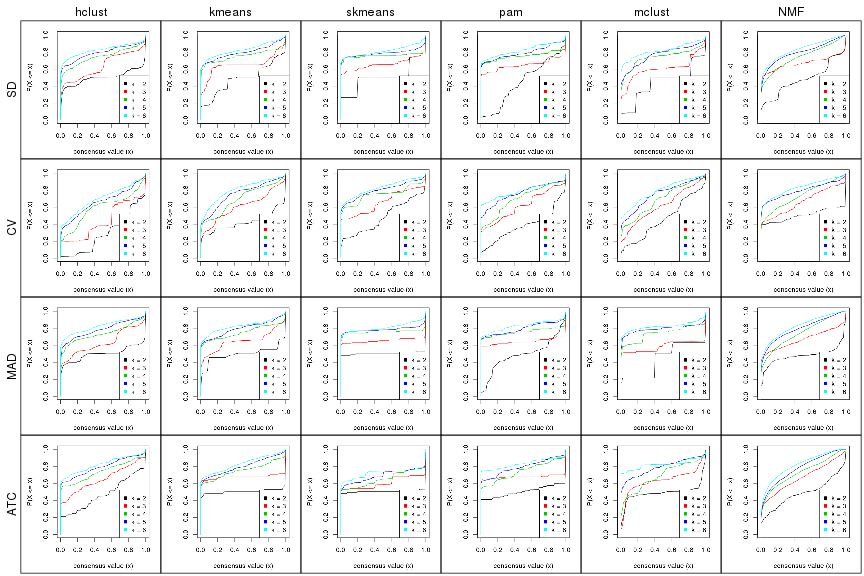
Consensus heatmaps for all methods. (What is a consensus heatmap?)
collect_plots(res_list, k = 2, fun = consensus_heatmap, mc.cores = 4)
collect_plots(res_list, k = 3, fun = consensus_heatmap, mc.cores = 4)
collect_plots(res_list, k = 4, fun = consensus_heatmap, mc.cores = 4)

collect_plots(res_list, k = 5, fun = consensus_heatmap, mc.cores = 4)
collect_plots(res_list, k = 6, fun = consensus_heatmap, mc.cores = 4)
Membership heatmaps for all methods. (What is a membership heatmap?)
collect_plots(res_list, k = 2, fun = membership_heatmap, mc.cores = 4)
collect_plots(res_list, k = 3, fun = membership_heatmap, mc.cores = 4)
collect_plots(res_list, k = 4, fun = membership_heatmap, mc.cores = 4)
collect_plots(res_list, k = 5, fun = membership_heatmap, mc.cores = 4)
collect_plots(res_list, k = 6, fun = membership_heatmap, mc.cores = 4)
Signature heatmaps for all methods. (What is a signature heatmap?)
Note in following heatmaps, rows are scaled.
collect_plots(res_list, k = 2, fun = get_signatures, mc.cores = 4)
collect_plots(res_list, k = 3, fun = get_signatures, mc.cores = 4)
collect_plots(res_list, k = 4, fun = get_signatures, mc.cores = 4)
collect_plots(res_list, k = 5, fun = get_signatures, mc.cores = 4)
collect_plots(res_list, k = 6, fun = get_signatures, mc.cores = 4)
The statistics used for measuring the stability of consensus partitioning. (How are they defined?)
get_stats(res_list, k = 2)
#> k 1-PAC mean_silhouette concordance area_increased Rand Jaccard
#> SD:NMF 2 0.488 0.798 0.894 0.482 0.532 0.532
#> CV:NMF 2 0.921 0.923 0.969 0.506 0.494 0.494
#> MAD:NMF 2 0.876 0.926 0.961 0.479 0.519 0.519
#> ATC:NMF 2 0.599 0.841 0.920 0.485 0.509 0.509
#> SD:skmeans 2 0.525 0.883 0.925 0.506 0.494 0.494
#> CV:skmeans 2 0.525 0.732 0.888 0.483 0.539 0.539
#> MAD:skmeans 2 1.000 0.992 0.996 0.507 0.494 0.494
#> ATC:skmeans 2 1.000 0.993 0.997 0.506 0.495 0.495
#> SD:mclust 2 0.334 0.880 0.895 0.444 0.494 0.494
#> CV:mclust 2 0.404 0.697 0.855 0.463 0.596 0.596
#> MAD:mclust 2 0.585 0.856 0.883 0.439 0.494 0.494
#> ATC:mclust 2 0.998 0.936 0.963 0.492 0.509 0.509
#> SD:kmeans 2 0.417 0.848 0.901 0.488 0.494 0.494
#> CV:kmeans 2 0.705 0.898 0.954 0.419 0.585 0.585
#> MAD:kmeans 2 0.992 0.934 0.965 0.499 0.494 0.494
#> ATC:kmeans 2 1.000 0.982 0.992 0.503 0.499 0.499
#> SD:pam 2 0.274 0.571 0.732 0.446 0.547 0.547
#> CV:pam 2 0.505 0.812 0.913 0.381 0.633 0.633
#> MAD:pam 2 0.495 0.853 0.890 0.489 0.499 0.499
#> ATC:pam 2 0.898 0.927 0.971 0.503 0.495 0.495
#> SD:hclust 2 0.873 0.933 0.966 0.503 0.494 0.494
#> CV:hclust 2 0.388 0.812 0.865 0.283 0.633 0.633
#> MAD:hclust 2 0.873 0.935 0.968 0.501 0.494 0.494
#> ATC:hclust 2 0.510 0.783 0.902 0.472 0.514 0.514
get_stats(res_list, k = 3)
#> k 1-PAC mean_silhouette concordance area_increased Rand Jaccard
#> SD:NMF 3 0.829 0.877 0.945 0.386 0.701 0.485
#> CV:NMF 3 0.630 0.672 0.843 0.313 0.740 0.520
#> MAD:NMF 3 0.748 0.786 0.912 0.395 0.665 0.436
#> ATC:NMF 3 0.532 0.673 0.838 0.378 0.669 0.433
#> SD:skmeans 3 0.865 0.912 0.960 0.301 0.803 0.619
#> CV:skmeans 3 0.666 0.718 0.871 0.359 0.696 0.489
#> MAD:skmeans 3 1.000 0.961 0.985 0.290 0.806 0.625
#> ATC:skmeans 3 0.840 0.796 0.922 0.198 0.895 0.790
#> SD:mclust 3 0.624 0.877 0.910 0.364 0.582 0.357
#> CV:mclust 3 0.451 0.738 0.822 0.342 0.753 0.594
#> MAD:mclust 3 0.938 0.894 0.963 0.335 0.576 0.354
#> ATC:mclust 3 0.765 0.830 0.882 0.289 0.741 0.542
#> SD:kmeans 3 0.662 0.914 0.910 0.335 0.819 0.648
#> CV:kmeans 3 0.506 0.796 0.826 0.458 0.742 0.571
#> MAD:kmeans 3 0.680 0.879 0.875 0.305 0.821 0.649
#> ATC:kmeans 3 1.000 0.975 0.989 0.342 0.736 0.515
#> SD:pam 3 0.889 0.918 0.965 0.452 0.716 0.521
#> CV:pam 3 0.551 0.716 0.858 0.622 0.692 0.533
#> MAD:pam 3 0.947 0.955 0.981 0.316 0.807 0.634
#> ATC:pam 3 1.000 0.978 0.991 0.343 0.736 0.513
#> SD:hclust 3 0.667 0.752 0.754 0.271 0.878 0.754
#> CV:hclust 3 0.475 0.664 0.827 0.559 0.985 0.976
#> MAD:hclust 3 0.625 0.725 0.782 0.264 0.893 0.783
#> ATC:hclust 3 0.543 0.710 0.860 0.381 0.746 0.536
get_stats(res_list, k = 4)
#> k 1-PAC mean_silhouette concordance area_increased Rand Jaccard
#> SD:NMF 4 0.587 0.647 0.795 0.1144 0.820 0.522
#> CV:NMF 4 0.566 0.472 0.748 0.1117 0.686 0.302
#> MAD:NMF 4 0.512 0.507 0.654 0.1148 0.853 0.595
#> ATC:NMF 4 0.541 0.602 0.787 0.0921 0.727 0.370
#> SD:skmeans 4 1.000 0.966 0.984 0.1496 0.889 0.683
#> CV:skmeans 4 0.758 0.850 0.889 0.1427 0.852 0.598
#> MAD:skmeans 4 1.000 0.976 0.988 0.1555 0.888 0.682
#> ATC:skmeans 4 0.788 0.755 0.886 0.0739 0.947 0.869
#> SD:mclust 4 0.727 0.855 0.910 0.2222 0.829 0.573
#> CV:mclust 4 0.491 0.566 0.762 0.1149 0.929 0.822
#> MAD:mclust 4 0.827 0.868 0.928 0.2658 0.810 0.541
#> ATC:mclust 4 0.596 0.716 0.807 0.0856 0.726 0.392
#> SD:kmeans 4 0.878 0.857 0.923 0.1571 0.845 0.585
#> CV:kmeans 4 0.565 0.588 0.747 0.1419 0.973 0.926
#> MAD:kmeans 4 0.833 0.802 0.907 0.1567 0.868 0.636
#> ATC:kmeans 4 0.749 0.803 0.894 0.1164 0.806 0.492
#> SD:pam 4 0.908 0.908 0.960 0.1632 0.878 0.665
#> CV:pam 4 0.538 0.588 0.678 0.1311 0.760 0.488
#> MAD:pam 4 0.915 0.910 0.963 0.1768 0.860 0.625
#> ATC:pam 4 0.690 0.702 0.829 0.0978 0.828 0.544
#> SD:hclust 4 0.766 0.814 0.857 0.1687 0.864 0.639
#> CV:hclust 4 0.499 0.831 0.844 0.3419 0.723 0.552
#> MAD:hclust 4 0.727 0.780 0.868 0.1660 0.837 0.591
#> ATC:hclust 4 0.685 0.680 0.848 0.1333 0.826 0.535
get_stats(res_list, k = 5)
#> k 1-PAC mean_silhouette concordance area_increased Rand Jaccard
#> SD:NMF 5 0.661 0.707 0.822 0.0727 0.894 0.615
#> CV:NMF 5 0.780 0.741 0.876 0.0783 0.855 0.520
#> MAD:NMF 5 0.616 0.599 0.775 0.0671 0.883 0.580
#> ATC:NMF 5 0.515 0.497 0.692 0.0643 0.909 0.700
#> SD:skmeans 5 0.935 0.861 0.931 0.0413 0.970 0.877
#> CV:skmeans 5 0.753 0.716 0.856 0.0666 0.910 0.658
#> MAD:skmeans 5 0.959 0.913 0.957 0.0393 0.969 0.876
#> ATC:skmeans 5 0.831 0.810 0.856 0.0621 0.887 0.693
#> SD:mclust 5 0.702 0.766 0.817 0.0342 0.932 0.735
#> CV:mclust 5 0.556 0.631 0.742 0.0891 0.832 0.548
#> MAD:mclust 5 0.941 0.893 0.941 0.0713 0.925 0.709
#> ATC:mclust 5 0.762 0.711 0.834 0.1439 0.915 0.694
#> SD:kmeans 5 0.774 0.720 0.826 0.0580 0.949 0.796
#> CV:kmeans 5 0.555 0.691 0.755 0.0839 0.859 0.595
#> MAD:kmeans 5 0.759 0.716 0.826 0.0587 0.920 0.689
#> ATC:kmeans 5 0.749 0.616 0.778 0.0624 0.966 0.862
#> SD:pam 5 0.806 0.671 0.851 0.0541 0.954 0.828
#> CV:pam 5 0.707 0.665 0.846 0.0952 0.871 0.617
#> MAD:pam 5 0.868 0.752 0.852 0.0526 0.925 0.710
#> ATC:pam 5 0.745 0.740 0.840 0.0685 0.934 0.752
#> SD:hclust 5 0.783 0.800 0.825 0.0628 0.958 0.830
#> CV:hclust 5 0.489 0.762 0.814 0.1233 0.980 0.942
#> MAD:hclust 5 0.735 0.589 0.751 0.0638 0.912 0.675
#> ATC:hclust 5 0.710 0.595 0.791 0.0738 0.881 0.582
get_stats(res_list, k = 6)
#> k 1-PAC mean_silhouette concordance area_increased Rand Jaccard
#> SD:NMF 6 0.688 0.572 0.748 0.0416 0.941 0.719
#> CV:NMF 6 0.750 0.644 0.796 0.0448 0.863 0.466
#> MAD:NMF 6 0.644 0.496 0.691 0.0381 0.916 0.627
#> ATC:NMF 6 0.589 0.463 0.663 0.0496 0.881 0.568
#> SD:skmeans 6 0.864 0.741 0.869 0.0346 0.971 0.869
#> CV:skmeans 6 0.753 0.655 0.791 0.0348 0.981 0.905
#> MAD:skmeans 6 0.887 0.780 0.895 0.0312 0.982 0.916
#> ATC:skmeans 6 0.885 0.922 0.926 0.0424 0.966 0.881
#> SD:mclust 6 0.763 0.734 0.852 0.0698 0.975 0.881
#> CV:mclust 6 0.629 0.588 0.765 0.0523 0.857 0.486
#> MAD:mclust 6 0.898 0.868 0.913 0.0376 0.956 0.793
#> ATC:mclust 6 0.871 0.856 0.923 0.0452 0.938 0.723
#> SD:kmeans 6 0.787 0.695 0.811 0.0386 0.941 0.733
#> CV:kmeans 6 0.642 0.549 0.693 0.0624 0.879 0.540
#> MAD:kmeans 6 0.782 0.697 0.790 0.0396 0.922 0.651
#> ATC:kmeans 6 0.748 0.571 0.704 0.0385 0.885 0.545
#> SD:pam 6 0.833 0.803 0.824 0.0395 0.921 0.683
#> CV:pam 6 0.799 0.747 0.905 0.0317 0.970 0.871
#> MAD:pam 6 0.853 0.806 0.859 0.0385 0.929 0.681
#> ATC:pam 6 0.878 0.795 0.920 0.0477 0.925 0.669
#> SD:hclust 6 0.825 0.692 0.841 0.0418 0.967 0.843
#> CV:hclust 6 0.535 0.611 0.731 0.0568 0.959 0.872
#> MAD:hclust 6 0.808 0.726 0.847 0.0497 0.879 0.506
#> ATC:hclust 6 0.755 0.578 0.767 0.0363 0.912 0.627
Following heatmap plots the partition for each combination of methods and the lightness correspond to the silhouette scores for samples in each method. On top the consensus subgroup is inferred from all methods by taking the mean silhouette scores as weight.
collect_stats(res_list, k = 2)
collect_stats(res_list, k = 3)
collect_stats(res_list, k = 4)
collect_stats(res_list, k = 5)
collect_stats(res_list, k = 6)
Collect partitions from all methods:
collect_classes(res_list, k = 2)
collect_classes(res_list, k = 3)
collect_classes(res_list, k = 4)
collect_classes(res_list, k = 5)
collect_classes(res_list, k = 6)
Overlap of top rows from different top-row methods:
top_rows_overlap(res_list, top_n = 1000, method = "euler")
top_rows_overlap(res_list, top_n = 2000, method = "euler")
top_rows_overlap(res_list, top_n = 3000, method = "euler")
top_rows_overlap(res_list, top_n = 4000, method = "euler")
top_rows_overlap(res_list, top_n = 5000, method = "euler")
Also visualize the correspondance of rankings between different top-row methods:
top_rows_overlap(res_list, top_n = 1000, method = "correspondance")
top_rows_overlap(res_list, top_n = 2000, method = "correspondance")
top_rows_overlap(res_list, top_n = 3000, method = "correspondance")

top_rows_overlap(res_list, top_n = 4000, method = "correspondance")
top_rows_overlap(res_list, top_n = 5000, method = "correspondance")
Heatmaps of the top rows:
top_rows_heatmap(res_list, top_n = 1000)
top_rows_heatmap(res_list, top_n = 2000)
top_rows_heatmap(res_list, top_n = 3000)
top_rows_heatmap(res_list, top_n = 4000)

top_rows_heatmap(res_list, top_n = 5000)
The object with results only for a single top-value method and a single partition method can be extracted as:
res = res_list["SD", "hclust"]
# you can also extract it by
# res = res_list["SD:hclust"]
A summary of res and all the functions that can be applied to it:
res
#> A 'ConsensusPartition' object with k = 2, 3, 4, 5, 6.
#> On a matrix with 16751 rows and 80 columns.
#> Top rows (1000, 2000, 3000, 4000, 5000) are extracted by 'SD' method.
#> Subgroups are detected by 'hclust' method.
#> Performed in total 1250 partitions by row resampling.
#> Best k for subgroups seems to be 2.
#>
#> Following methods can be applied to this 'ConsensusPartition' object:
#> [1] "cola_report" "collect_classes" "collect_plots"
#> [4] "collect_stats" "colnames" "compare_signatures"
#> [7] "consensus_heatmap" "dimension_reduction" "functional_enrichment"
#> [10] "get_anno_col" "get_anno" "get_classes"
#> [13] "get_consensus" "get_matrix" "get_membership"
#> [16] "get_param" "get_signatures" "get_stats"
#> [19] "is_best_k" "is_stable_k" "membership_heatmap"
#> [22] "ncol" "nrow" "plot_ecdf"
#> [25] "rownames" "select_partition_number" "show"
#> [28] "suggest_best_k" "test_to_known_factors"
collect_plots() function collects all the plots made from res for all k (number of partitions)
into one single page to provide an easy and fast comparison between different k.
collect_plots(res)
The plots are:
k and the heatmap of
predicted classes for each k.k.k.k.All the plots in panels can be made by individual functions and they are plotted later in this section.
select_partition_number() produces several plots showing different
statistics for choosing “optimized” k. There are following statistics:
k;k, the area increased is defined as \(A_k - A_{k-1}\).The detailed explanations of these statistics can be found in the cola vignette.
Generally speaking, lower PAC score, higher mean silhouette score or higher
concordance corresponds to better partition. Rand index and Jaccard index
measure how similar the current partition is compared to partition with k-1.
If they are too similar, we won't accept k is better than k-1.
select_partition_number(res)
The numeric values for all these statistics can be obtained by get_stats().
get_stats(res)
#> k 1-PAC mean_silhouette concordance area_increased Rand Jaccard
#> 2 2 0.873 0.933 0.966 0.5025 0.494 0.494
#> 3 3 0.667 0.752 0.754 0.2707 0.878 0.754
#> 4 4 0.766 0.814 0.857 0.1687 0.864 0.639
#> 5 5 0.783 0.800 0.825 0.0628 0.958 0.830
#> 6 6 0.825 0.692 0.841 0.0418 0.967 0.843
suggest_best_k() suggests the best \(k\) based on these statistics. The rules are as follows:
NA.suggest_best_k(res)
#> [1] 2
Following shows the table of the partitions (You need to click the show/hide
code output link to see it). The membership matrix (columns with name p*)
is inferred by
clue::cl_consensus()
function with the SE method. Basically the value in the membership matrix
represents the probability to belong to a certain group. The finall class
label for an item is determined with the group with highest probability it
belongs to.
In get_classes() function, the entropy is calculated from the membership
matrix and the silhouette score is calculated from the consensus matrix.
cbind(get_classes(res, k = 2), get_membership(res, k = 2))
#> class entropy silhouette p1 p2
#> 71A0AB6A-CFC2-46F6-878C-6052C5B43D22 1 0.0672 0.981 0.992 0.008
#> EFC730EC-6385-4167-A65A-F2A3AAEDA2AC 1 0.0938 0.979 0.988 0.012
#> 14F2F39A-EA0F-4027-8877-FEEEEFF1F085 2 0.0000 0.948 0.000 1.000
#> 98B2A7F8-A7BD-4DA2-8541-950E44D9ACD7 2 0.0000 0.948 0.000 1.000
#> 9166F454-2068-46C2-B2EB-FB3BE4126536 1 0.0000 0.980 1.000 0.000
#> 83B2A0BB-CE24-4DCA-B03A-D20353304365 2 0.0000 0.948 0.000 1.000
#> D3FC3968-B263-4756-BF7F-1941F70B04DA 2 0.0000 0.948 0.000 1.000
#> D357AC5C-C2A0-4CC4-B016-4572400AF117 2 0.0000 0.948 0.000 1.000
#> 1055E951-5B93-4AD7-BE5C-4DF4F6AECEF3 2 0.0000 0.948 0.000 1.000
#> F2995599-3F21-4F33-92BB-7D70A4735938 1 0.0000 0.980 1.000 0.000
#> 3EE533BD-5832-4007-8F1F-439166256EB0 2 0.8144 0.691 0.252 0.748
#> EEC6DA0C-5C49-4EFE-976A-19F432DDAA58 1 0.0000 0.980 1.000 0.000
#> E6E08C1A-4C1B-4572-92DF-DA15BCBADF76 2 0.0000 0.948 0.000 1.000
#> BCFCBBAC-EB95-47EB-9EB0-2CB4AE283A75 1 0.0672 0.981 0.992 0.008
#> 0782D6D0-668B-4B83-8C91-8A35EA3BFF6D 2 0.0000 0.948 0.000 1.000
#> AC78918E-1031-4AE6-B753-B0799171F0F0 1 0.0000 0.980 1.000 0.000
#> 6B497CED-34DA-4CF8-8F8D-696105CB3D5F 1 0.0672 0.981 0.992 0.008
#> 2328D472-583B-43A9-81A4-A21DDEBB5B18 2 0.0938 0.945 0.012 0.988
#> A6930B33-D9B2-4318-807C-4A25EB4CCCDD 2 0.0000 0.948 0.000 1.000
#> C8C48AFD-4D8B-491E-993C-3506DC6DD00F 1 0.0672 0.981 0.992 0.008
#> 093FB845-7905-4064-8E8E-76E3587D8E7C 1 0.1414 0.973 0.980 0.020
#> B216F996-CCD8-4F56-99B1-4EA9769B10B8 1 0.0672 0.981 0.992 0.008
#> CB35DED2-5FEA-43E2-AB42-B6B3A7444B66 1 0.1843 0.966 0.972 0.028
#> BA016F57-F58F-4A66-B85A-0B0F911EEA65 2 0.7602 0.750 0.220 0.780
#> 519DBD5F-66C0-4CEE-905C-799C855D28FB 1 0.0000 0.980 1.000 0.000
#> F5B9B89B-6821-43EE-BCFD-623689D03AF9 2 0.0000 0.948 0.000 1.000
#> 55A39F92-CC88-4A2F-A7D3-7A59DEBEBB42 1 0.6887 0.768 0.816 0.184
#> 3DBBDEDA-F9FC-40DC-804F-45429EA47ED4 2 0.1414 0.941 0.020 0.980
#> BB948BE8-7D48-4AEB-A404-C27A79655D7E 1 0.0672 0.981 0.992 0.008
#> 9506723F-9193-4D8E-BD97-8A0062AB2F9C 1 0.0672 0.981 0.992 0.008
#> D0758A7A-9D0E-4EA4-8EE9-7143B398647D 1 0.0672 0.981 0.992 0.008
#> F400FD4D-72D7-4933-B145-64B7EE245FFC 2 0.0000 0.948 0.000 1.000
#> 3F87E9ED-3719-48E1-8B69-E352A03E982D 1 0.2778 0.944 0.952 0.048
#> D6365FEB-CC12-4337-BF8C-66236A585B5D 2 0.0672 0.946 0.008 0.992
#> A4168812-C38E-4F15-9AF6-79F256279E72 1 0.0938 0.978 0.988 0.012
#> DB676839-02AA-42A7-962F-89D6AD892008 1 0.0000 0.980 1.000 0.000
#> 198D8E89-51FD-41DE-AD11-FB2F2FE49908 2 0.0000 0.948 0.000 1.000
#> 2BADCD01-27E8-49EC-B707-4FAE3D3CB489 1 0.0672 0.981 0.992 0.008
#> ABBD6EFE-079B-4BE3-95AB-36AF9197D684 2 0.0000 0.948 0.000 1.000
#> 39D66B95-61C7-4B76-8E81-1F9F98024B69 1 0.0000 0.980 1.000 0.000
#> 7A920210-CF3D-4458-B6D5-D9B2ADACA469 1 0.0000 0.980 1.000 0.000
#> 0CE61CDC-3257-4F03-951B-CC2CFCF675AE 2 0.0000 0.948 0.000 1.000
#> 7338D61C-77D6-4095-8847-7FD9967B7646 2 0.2423 0.926 0.040 0.960
#> 0D36FAD5-BA81-4FED-9E2A-DB016F2EF18C 1 0.0000 0.980 1.000 0.000
#> 43CD31CD-5FAE-418A-B235-49E54560590D 2 0.0376 0.947 0.004 0.996
#> B6DD72B0-EEFA-41A9-B71D-22DE1343CD32 1 0.0672 0.981 0.992 0.008
#> 2B729CD9-71A5-4336-ACBA-922A30AF4949 2 0.0000 0.948 0.000 1.000
#> B76DB955-69B7-4D05-8166-2569ED44628C 1 0.0000 0.980 1.000 0.000
#> 09CBEE39-7141-4228-AFD3-4714E32A1FB5 2 0.1633 0.938 0.024 0.976
#> AC1700D5-72E7-4C7F-A288-869DFC229252 1 0.0672 0.981 0.992 0.008
#> 535A5E8E-8478-477F-87FF-ED6742AA5473 2 0.0376 0.947 0.004 0.996
#> CFB8573C-9F36-4715-B6F1-6E5B543168A8 2 0.8207 0.700 0.256 0.744
#> 47A45491-6023-44BF-ABC2-9A470F7FC1F7 2 0.6712 0.801 0.176 0.824
#> 437C7AA7-98C0-48C7-97DA-86FF44D69B87 2 0.0000 0.948 0.000 1.000
#> 649ADE7E-6C06-4AB6-8E97-D8C2AAF79A7E 2 0.0938 0.945 0.012 0.988
#> DEA60B47-AD6A-4EBB-9402-6F97E9640E4E 2 0.0000 0.948 0.000 1.000
#> 76C574FF-26BF-49CD-9BCA-7BDDCBD06D5D 2 0.0000 0.948 0.000 1.000
#> 8B6E1F9B-1E90-4333-8E0C-EEDFF25D15C0 2 0.9248 0.526 0.340 0.660
#> A2473EE7-72D6-4D32-9DF7-5D4E444A6715 2 0.7815 0.735 0.232 0.768
#> E226C45E-5287-4D0F-A34B-CE251FA293CB 1 0.0376 0.979 0.996 0.004
#> A2C71C07-AF0C-4016-808C-DFEF458C91C7 1 0.0000 0.980 1.000 0.000
#> DA00D60F-4CF1-4003-BAF5-896EE2BEE2D4 2 0.7815 0.735 0.232 0.768
#> 1C17B65F-1930-4CF3-99B6-5D3AA9E99188 2 0.3733 0.903 0.072 0.928
#> B837D582-A0D3-46BE-8ECA-883F5396AE88 1 0.0938 0.979 0.988 0.012
#> EF1A102F-C206-4874-8F27-0BF069A613B8 1 0.0938 0.979 0.988 0.012
#> BC761676-F64C-476A-8D9B-BD3E6149B2CD 2 0.1633 0.938 0.024 0.976
#> D8351E5C-DC1D-4B4D-83E6-735B2750D944 2 0.0938 0.945 0.012 0.988
#> 59F65F61-03D0-4909-99BD-4CCB53A088A5 1 0.0672 0.981 0.992 0.008
#> EFFCCF33-60E1-4550-B13C-14C54ADCF479 1 0.8861 0.544 0.696 0.304
#> C45EB423-CC14-4BDB-A0B4-447E5DB6DA9C 1 0.0000 0.980 1.000 0.000
#> D34B0BC6-9142-48AE-A113-5923192644A0 1 0.0672 0.981 0.992 0.008
#> 634672A6-C68E-479F-AAB5-CBAFF7758EA4 1 0.0000 0.980 1.000 0.000
#> 06DAE086-D960-4156-9DC8-D126338E2F29 2 0.0000 0.948 0.000 1.000
#> 3353F579-77CA-4D0E-B794-37DE467CC065 1 0.0000 0.980 1.000 0.000
#> 976507F2-192B-4095-920A-3014889CD617 1 0.0000 0.980 1.000 0.000
#> 3FFF89D9-02F5-4D49-8631-099562BF99C7 2 0.0000 0.948 0.000 1.000
#> 8BC2213D-99DA-44E0-826F-EBF211EECFBF 1 0.0000 0.980 1.000 0.000
#> A7A16BF7-5E60-4E50-BE04-542EFC4DB472 2 0.0000 0.948 0.000 1.000
#> E25C9578-9493-466E-A2CD-546DEB076B2D 2 0.0000 0.948 0.000 1.000
#> EA35E230-DE50-45AB-A737-D5C430652A90 1 0.0672 0.981 0.992 0.008
cbind(get_classes(res, k = 3), get_membership(res, k = 3))
#> class entropy silhouette p1 p2 p3
#> 71A0AB6A-CFC2-46F6-878C-6052C5B43D22 1 0.0000 0.763 1.000 0.000 0.000
#> EFC730EC-6385-4167-A65A-F2A3AAEDA2AC 1 0.0829 0.765 0.984 0.004 0.012
#> 14F2F39A-EA0F-4027-8877-FEEEEFF1F085 3 0.6308 0.995 0.000 0.492 0.508
#> 98B2A7F8-A7BD-4DA2-8541-950E44D9ACD7 3 0.6308 0.995 0.000 0.492 0.508
#> 9166F454-2068-46C2-B2EB-FB3BE4126536 1 0.6308 0.722 0.508 0.000 0.492
#> 83B2A0BB-CE24-4DCA-B03A-D20353304365 3 0.6308 0.995 0.000 0.492 0.508
#> D3FC3968-B263-4756-BF7F-1941F70B04DA 2 0.0237 0.742 0.000 0.996 0.004
#> D357AC5C-C2A0-4CC4-B016-4572400AF117 2 0.1411 0.707 0.000 0.964 0.036
#> 1055E951-5B93-4AD7-BE5C-4DF4F6AECEF3 2 0.0237 0.742 0.000 0.996 0.004
#> F2995599-3F21-4F33-92BB-7D70A4735938 1 0.6308 0.722 0.508 0.000 0.492
#> 3EE533BD-5832-4007-8F1F-439166256EB0 2 0.8994 0.302 0.260 0.556 0.184
#> EEC6DA0C-5C49-4EFE-976A-19F432DDAA58 1 0.6308 0.722 0.508 0.000 0.492
#> E6E08C1A-4C1B-4572-92DF-DA15BCBADF76 2 0.6008 -0.662 0.000 0.628 0.372
#> BCFCBBAC-EB95-47EB-9EB0-2CB4AE283A75 1 0.0592 0.765 0.988 0.000 0.012
#> 0782D6D0-668B-4B83-8C91-8A35EA3BFF6D 3 0.6308 0.995 0.000 0.492 0.508
#> AC78918E-1031-4AE6-B753-B0799171F0F0 1 0.6308 0.722 0.508 0.000 0.492
#> 6B497CED-34DA-4CF8-8F8D-696105CB3D5F 1 0.0000 0.763 1.000 0.000 0.000
#> 2328D472-583B-43A9-81A4-A21DDEBB5B18 2 0.0592 0.752 0.012 0.988 0.000
#> A6930B33-D9B2-4318-807C-4A25EB4CCCDD 3 0.6308 0.995 0.000 0.492 0.508
#> C8C48AFD-4D8B-491E-993C-3506DC6DD00F 1 0.1643 0.768 0.956 0.000 0.044
#> 093FB845-7905-4064-8E8E-76E3587D8E7C 1 0.0592 0.760 0.988 0.012 0.000
#> B216F996-CCD8-4F56-99B1-4EA9769B10B8 1 0.0000 0.763 1.000 0.000 0.000
#> CB35DED2-5FEA-43E2-AB42-B6B3A7444B66 1 0.0892 0.757 0.980 0.020 0.000
#> BA016F57-F58F-4A66-B85A-0B0F911EEA65 2 0.5318 0.621 0.204 0.780 0.016
#> 519DBD5F-66C0-4CEE-905C-799C855D28FB 1 0.6308 0.722 0.508 0.000 0.492
#> F5B9B89B-6821-43EE-BCFD-623689D03AF9 3 0.6308 0.995 0.000 0.492 0.508
#> 55A39F92-CC88-4A2F-A7D3-7A59DEBEBB42 1 0.4235 0.586 0.824 0.176 0.000
#> 3DBBDEDA-F9FC-40DC-804F-45429EA47ED4 2 0.1031 0.753 0.024 0.976 0.000
#> BB948BE8-7D48-4AEB-A404-C27A79655D7E 1 0.1643 0.768 0.956 0.000 0.044
#> 9506723F-9193-4D8E-BD97-8A0062AB2F9C 1 0.0000 0.763 1.000 0.000 0.000
#> D0758A7A-9D0E-4EA4-8EE9-7143B398647D 1 0.0000 0.763 1.000 0.000 0.000
#> F400FD4D-72D7-4933-B145-64B7EE245FFC 3 0.6309 0.994 0.000 0.496 0.504
#> 3F87E9ED-3719-48E1-8B69-E352A03E982D 1 0.1529 0.735 0.960 0.040 0.000
#> D6365FEB-CC12-4337-BF8C-66236A585B5D 2 0.0424 0.750 0.008 0.992 0.000
#> A4168812-C38E-4F15-9AF6-79F256279E72 1 0.0237 0.762 0.996 0.004 0.000
#> DB676839-02AA-42A7-962F-89D6AD892008 1 0.6308 0.722 0.508 0.000 0.492
#> 198D8E89-51FD-41DE-AD11-FB2F2FE49908 3 0.6309 0.994 0.000 0.496 0.504
#> 2BADCD01-27E8-49EC-B707-4FAE3D3CB489 1 0.2261 0.767 0.932 0.000 0.068
#> ABBD6EFE-079B-4BE3-95AB-36AF9197D684 3 0.6308 0.995 0.000 0.492 0.508
#> 39D66B95-61C7-4B76-8E81-1F9F98024B69 1 0.6308 0.722 0.508 0.000 0.492
#> 7A920210-CF3D-4458-B6D5-D9B2ADACA469 1 0.6308 0.722 0.508 0.000 0.492
#> 0CE61CDC-3257-4F03-951B-CC2CFCF675AE 2 0.0237 0.742 0.000 0.996 0.004
#> 7338D61C-77D6-4095-8847-7FD9967B7646 2 0.1647 0.734 0.036 0.960 0.004
#> 0D36FAD5-BA81-4FED-9E2A-DB016F2EF18C 1 0.6308 0.722 0.508 0.000 0.492
#> 43CD31CD-5FAE-418A-B235-49E54560590D 2 0.2116 0.714 0.012 0.948 0.040
#> B6DD72B0-EEFA-41A9-B71D-22DE1343CD32 1 0.0000 0.763 1.000 0.000 0.000
#> 2B729CD9-71A5-4336-ACBA-922A30AF4949 2 0.0000 0.744 0.000 1.000 0.000
#> B76DB955-69B7-4D05-8166-2569ED44628C 1 0.6308 0.722 0.508 0.000 0.492
#> 09CBEE39-7141-4228-AFD3-4714E32A1FB5 2 0.2689 0.725 0.032 0.932 0.036
#> AC1700D5-72E7-4C7F-A288-869DFC229252 1 0.2261 0.767 0.932 0.000 0.068
#> 535A5E8E-8478-477F-87FF-ED6742AA5473 2 0.2116 0.714 0.012 0.948 0.040
#> CFB8573C-9F36-4715-B6F1-6E5B543168A8 2 0.5982 0.589 0.228 0.744 0.028
#> 47A45491-6023-44BF-ABC2-9A470F7FC1F7 2 0.4531 0.650 0.168 0.824 0.008
#> 437C7AA7-98C0-48C7-97DA-86FF44D69B87 3 0.6309 0.994 0.000 0.496 0.504
#> 649ADE7E-6C06-4AB6-8E97-D8C2AAF79A7E 2 0.0747 0.753 0.016 0.984 0.000
#> DEA60B47-AD6A-4EBB-9402-6F97E9640E4E 3 0.6309 0.994 0.000 0.496 0.504
#> 76C574FF-26BF-49CD-9BCA-7BDDCBD06D5D 3 0.6308 0.995 0.000 0.492 0.508
#> 8B6E1F9B-1E90-4333-8E0C-EEDFF25D15C0 2 0.5882 0.449 0.348 0.652 0.000
#> A2473EE7-72D6-4D32-9DF7-5D4E444A6715 2 0.5551 0.613 0.212 0.768 0.020
#> E226C45E-5287-4D0F-A34B-CE251FA293CB 1 0.6521 0.719 0.504 0.004 0.492
#> A2C71C07-AF0C-4016-808C-DFEF458C91C7 1 0.6308 0.722 0.508 0.000 0.492
#> DA00D60F-4CF1-4003-BAF5-896EE2BEE2D4 2 0.5551 0.613 0.212 0.768 0.020
#> 1C17B65F-1930-4CF3-99B6-5D3AA9E99188 2 0.2703 0.730 0.056 0.928 0.016
#> B837D582-A0D3-46BE-8ECA-883F5396AE88 1 0.2496 0.767 0.928 0.004 0.068
#> EF1A102F-C206-4874-8F27-0BF069A613B8 1 0.0829 0.765 0.984 0.004 0.012
#> BC761676-F64C-476A-8D9B-BD3E6149B2CD 2 0.2689 0.725 0.032 0.932 0.036
#> D8351E5C-DC1D-4B4D-83E6-735B2750D944 2 0.0983 0.753 0.016 0.980 0.004
#> 59F65F61-03D0-4909-99BD-4CCB53A088A5 1 0.0000 0.763 1.000 0.000 0.000
#> EFFCCF33-60E1-4550-B13C-14C54ADCF479 1 0.5529 0.388 0.704 0.296 0.000
#> C45EB423-CC14-4BDB-A0B4-447E5DB6DA9C 1 0.6308 0.722 0.508 0.000 0.492
#> D34B0BC6-9142-48AE-A113-5923192644A0 1 0.0000 0.763 1.000 0.000 0.000
#> 634672A6-C68E-479F-AAB5-CBAFF7758EA4 1 0.6308 0.722 0.508 0.000 0.492
#> 06DAE086-D960-4156-9DC8-D126338E2F29 3 0.6309 0.994 0.000 0.496 0.504
#> 3353F579-77CA-4D0E-B794-37DE467CC065 1 0.6308 0.722 0.508 0.000 0.492
#> 976507F2-192B-4095-920A-3014889CD617 1 0.6308 0.722 0.508 0.000 0.492
#> 3FFF89D9-02F5-4D49-8631-099562BF99C7 3 0.6309 0.994 0.000 0.496 0.504
#> 8BC2213D-99DA-44E0-826F-EBF211EECFBF 1 0.6308 0.722 0.508 0.000 0.492
#> A7A16BF7-5E60-4E50-BE04-542EFC4DB472 3 0.6308 0.995 0.000 0.492 0.508
#> E25C9578-9493-466E-A2CD-546DEB076B2D 3 0.6680 0.979 0.008 0.484 0.508
#> EA35E230-DE50-45AB-A737-D5C430652A90 1 0.0000 0.763 1.000 0.000 0.000
cbind(get_classes(res, k = 4), get_membership(res, k = 4))
#> class entropy silhouette p1 p2 p3 p4
#> 71A0AB6A-CFC2-46F6-878C-6052C5B43D22 1 0.0000 0.936 1.000 0.000 0.000 0.000
#> EFC730EC-6385-4167-A65A-F2A3AAEDA2AC 1 0.2412 0.908 0.908 0.000 0.008 0.084
#> 14F2F39A-EA0F-4027-8877-FEEEEFF1F085 2 0.3610 0.806 0.000 0.800 0.000 0.200
#> 98B2A7F8-A7BD-4DA2-8541-950E44D9ACD7 2 0.3610 0.806 0.000 0.800 0.000 0.200
#> 9166F454-2068-46C2-B2EB-FB3BE4126536 3 0.0000 1.000 0.000 0.000 1.000 0.000
#> 83B2A0BB-CE24-4DCA-B03A-D20353304365 2 0.3610 0.806 0.000 0.800 0.000 0.200
#> D3FC3968-B263-4756-BF7F-1941F70B04DA 4 0.4431 0.684 0.000 0.304 0.000 0.696
#> D357AC5C-C2A0-4CC4-B016-4572400AF117 4 0.3764 0.629 0.000 0.216 0.000 0.784
#> 1055E951-5B93-4AD7-BE5C-4DF4F6AECEF3 4 0.4431 0.684 0.000 0.304 0.000 0.696
#> F2995599-3F21-4F33-92BB-7D70A4735938 3 0.0000 1.000 0.000 0.000 1.000 0.000
#> 3EE533BD-5832-4007-8F1F-439166256EB0 4 0.7478 0.272 0.256 0.240 0.000 0.504
#> EEC6DA0C-5C49-4EFE-976A-19F432DDAA58 3 0.0000 1.000 0.000 0.000 1.000 0.000
#> E6E08C1A-4C1B-4572-92DF-DA15BCBADF76 2 0.4382 0.360 0.000 0.704 0.000 0.296
#> BCFCBBAC-EB95-47EB-9EB0-2CB4AE283A75 1 0.2342 0.910 0.912 0.000 0.008 0.080
#> 0782D6D0-668B-4B83-8C91-8A35EA3BFF6D 2 0.3610 0.806 0.000 0.800 0.000 0.200
#> AC78918E-1031-4AE6-B753-B0799171F0F0 3 0.0000 1.000 0.000 0.000 1.000 0.000
#> 6B497CED-34DA-4CF8-8F8D-696105CB3D5F 1 0.0000 0.936 1.000 0.000 0.000 0.000
#> 2328D472-583B-43A9-81A4-A21DDEBB5B18 4 0.2831 0.707 0.004 0.120 0.000 0.876
#> A6930B33-D9B2-4318-807C-4A25EB4CCCDD 2 0.3610 0.806 0.000 0.800 0.000 0.200
#> C8C48AFD-4D8B-491E-993C-3506DC6DD00F 1 0.1854 0.915 0.940 0.000 0.048 0.012
#> 093FB845-7905-4064-8E8E-76E3587D8E7C 1 0.0779 0.931 0.980 0.004 0.000 0.016
#> B216F996-CCD8-4F56-99B1-4EA9769B10B8 1 0.0000 0.936 1.000 0.000 0.000 0.000
#> CB35DED2-5FEA-43E2-AB42-B6B3A7444B66 1 0.1042 0.927 0.972 0.008 0.000 0.020
#> BA016F57-F58F-4A66-B85A-0B0F911EEA65 4 0.6019 0.667 0.144 0.128 0.012 0.716
#> 519DBD5F-66C0-4CEE-905C-799C855D28FB 3 0.0000 1.000 0.000 0.000 1.000 0.000
#> F5B9B89B-6821-43EE-BCFD-623689D03AF9 2 0.3610 0.806 0.000 0.800 0.000 0.200
#> 55A39F92-CC88-4A2F-A7D3-7A59DEBEBB42 1 0.3764 0.752 0.816 0.012 0.000 0.172
#> 3DBBDEDA-F9FC-40DC-804F-45429EA47ED4 4 0.3047 0.710 0.012 0.116 0.000 0.872
#> BB948BE8-7D48-4AEB-A404-C27A79655D7E 1 0.1576 0.916 0.948 0.000 0.048 0.004
#> 9506723F-9193-4D8E-BD97-8A0062AB2F9C 1 0.0000 0.936 1.000 0.000 0.000 0.000
#> D0758A7A-9D0E-4EA4-8EE9-7143B398647D 1 0.0000 0.936 1.000 0.000 0.000 0.000
#> F400FD4D-72D7-4933-B145-64B7EE245FFC 2 0.2973 0.664 0.000 0.856 0.000 0.144
#> 3F87E9ED-3719-48E1-8B69-E352A03E982D 1 0.1389 0.915 0.952 0.000 0.000 0.048
#> D6365FEB-CC12-4337-BF8C-66236A585B5D 4 0.2704 0.706 0.000 0.124 0.000 0.876
#> A4168812-C38E-4F15-9AF6-79F256279E72 1 0.0336 0.934 0.992 0.000 0.000 0.008
#> DB676839-02AA-42A7-962F-89D6AD892008 3 0.0000 1.000 0.000 0.000 1.000 0.000
#> 198D8E89-51FD-41DE-AD11-FB2F2FE49908 2 0.2589 0.688 0.000 0.884 0.000 0.116
#> 2BADCD01-27E8-49EC-B707-4FAE3D3CB489 1 0.3691 0.877 0.856 0.000 0.068 0.076
#> ABBD6EFE-079B-4BE3-95AB-36AF9197D684 2 0.3649 0.804 0.000 0.796 0.000 0.204
#> 39D66B95-61C7-4B76-8E81-1F9F98024B69 3 0.0000 1.000 0.000 0.000 1.000 0.000
#> 7A920210-CF3D-4458-B6D5-D9B2ADACA469 3 0.0000 1.000 0.000 0.000 1.000 0.000
#> 0CE61CDC-3257-4F03-951B-CC2CFCF675AE 4 0.4431 0.684 0.000 0.304 0.000 0.696
#> 7338D61C-77D6-4095-8847-7FD9967B7646 4 0.5247 0.676 0.000 0.284 0.032 0.684
#> 0D36FAD5-BA81-4FED-9E2A-DB016F2EF18C 3 0.0000 1.000 0.000 0.000 1.000 0.000
#> 43CD31CD-5FAE-418A-B235-49E54560590D 4 0.3450 0.677 0.008 0.156 0.000 0.836
#> B6DD72B0-EEFA-41A9-B71D-22DE1343CD32 1 0.0000 0.936 1.000 0.000 0.000 0.000
#> 2B729CD9-71A5-4336-ACBA-922A30AF4949 4 0.4356 0.689 0.000 0.292 0.000 0.708
#> B76DB955-69B7-4D05-8166-2569ED44628C 3 0.0000 1.000 0.000 0.000 1.000 0.000
#> 09CBEE39-7141-4228-AFD3-4714E32A1FB5 4 0.3913 0.685 0.028 0.148 0.000 0.824
#> AC1700D5-72E7-4C7F-A288-869DFC229252 1 0.3691 0.877 0.856 0.000 0.068 0.076
#> 535A5E8E-8478-477F-87FF-ED6742AA5473 4 0.3450 0.677 0.008 0.156 0.000 0.836
#> CFB8573C-9F36-4715-B6F1-6E5B543168A8 4 0.6160 0.649 0.156 0.104 0.024 0.716
#> 47A45491-6023-44BF-ABC2-9A470F7FC1F7 4 0.6208 0.683 0.144 0.168 0.004 0.684
#> 437C7AA7-98C0-48C7-97DA-86FF44D69B87 2 0.3024 0.659 0.000 0.852 0.000 0.148
#> 649ADE7E-6C06-4AB6-8E97-D8C2AAF79A7E 4 0.2773 0.707 0.004 0.116 0.000 0.880
#> DEA60B47-AD6A-4EBB-9402-6F97E9640E4E 2 0.2589 0.688 0.000 0.884 0.000 0.116
#> 76C574FF-26BF-49CD-9BCA-7BDDCBD06D5D 2 0.3610 0.806 0.000 0.800 0.000 0.200
#> 8B6E1F9B-1E90-4333-8E0C-EEDFF25D15C0 4 0.5460 0.470 0.340 0.028 0.000 0.632
#> A2473EE7-72D6-4D32-9DF7-5D4E444A6715 4 0.5980 0.662 0.144 0.116 0.016 0.724
#> E226C45E-5287-4D0F-A34B-CE251FA293CB 3 0.0188 0.995 0.000 0.000 0.996 0.004
#> A2C71C07-AF0C-4016-808C-DFEF458C91C7 3 0.0000 1.000 0.000 0.000 1.000 0.000
#> DA00D60F-4CF1-4003-BAF5-896EE2BEE2D4 4 0.5980 0.662 0.144 0.116 0.016 0.724
#> 1C17B65F-1930-4CF3-99B6-5D3AA9E99188 4 0.4353 0.679 0.000 0.232 0.012 0.756
#> B837D582-A0D3-46BE-8ECA-883F5396AE88 1 0.3828 0.871 0.848 0.000 0.068 0.084
#> EF1A102F-C206-4874-8F27-0BF069A613B8 1 0.2412 0.908 0.908 0.000 0.008 0.084
#> BC761676-F64C-476A-8D9B-BD3E6149B2CD 4 0.3913 0.685 0.028 0.148 0.000 0.824
#> D8351E5C-DC1D-4B4D-83E6-735B2750D944 4 0.2999 0.714 0.004 0.132 0.000 0.864
#> 59F65F61-03D0-4909-99BD-4CCB53A088A5 1 0.0000 0.936 1.000 0.000 0.000 0.000
#> EFFCCF33-60E1-4550-B13C-14C54ADCF479 1 0.4795 0.552 0.696 0.012 0.000 0.292
#> C45EB423-CC14-4BDB-A0B4-447E5DB6DA9C 3 0.0000 1.000 0.000 0.000 1.000 0.000
#> D34B0BC6-9142-48AE-A113-5923192644A0 1 0.0000 0.936 1.000 0.000 0.000 0.000
#> 634672A6-C68E-479F-AAB5-CBAFF7758EA4 3 0.0000 1.000 0.000 0.000 1.000 0.000
#> 06DAE086-D960-4156-9DC8-D126338E2F29 2 0.3024 0.659 0.000 0.852 0.000 0.148
#> 3353F579-77CA-4D0E-B794-37DE467CC065 3 0.0000 1.000 0.000 0.000 1.000 0.000
#> 976507F2-192B-4095-920A-3014889CD617 3 0.0000 1.000 0.000 0.000 1.000 0.000
#> 3FFF89D9-02F5-4D49-8631-099562BF99C7 2 0.2589 0.688 0.000 0.884 0.000 0.116
#> 8BC2213D-99DA-44E0-826F-EBF211EECFBF 3 0.0000 1.000 0.000 0.000 1.000 0.000
#> A7A16BF7-5E60-4E50-BE04-542EFC4DB472 2 0.3610 0.806 0.000 0.800 0.000 0.200
#> E25C9578-9493-466E-A2CD-546DEB076B2D 2 0.3831 0.797 0.004 0.792 0.000 0.204
#> EA35E230-DE50-45AB-A737-D5C430652A90 1 0.0188 0.935 0.996 0.000 0.000 0.004
cbind(get_classes(res, k = 5), get_membership(res, k = 5))
#> class entropy silhouette p1 p2 p3 p4 p5
#> 71A0AB6A-CFC2-46F6-878C-6052C5B43D22 1 0.0162 0.851 0.996 0.004 0.000 0.000 0.000
#> EFC730EC-6385-4167-A65A-F2A3AAEDA2AC 1 0.6406 0.678 0.616 0.092 0.000 0.228 0.064
#> 14F2F39A-EA0F-4027-8877-FEEEEFF1F085 2 0.3612 0.720 0.000 0.732 0.000 0.000 0.268
#> 98B2A7F8-A7BD-4DA2-8541-950E44D9ACD7 2 0.3586 0.720 0.000 0.736 0.000 0.000 0.264
#> 9166F454-2068-46C2-B2EB-FB3BE4126536 3 0.0000 1.000 0.000 0.000 1.000 0.000 0.000
#> 83B2A0BB-CE24-4DCA-B03A-D20353304365 2 0.3586 0.720 0.000 0.736 0.000 0.000 0.264
#> D3FC3968-B263-4756-BF7F-1941F70B04DA 4 0.4430 0.840 0.000 0.172 0.000 0.752 0.076
#> D357AC5C-C2A0-4CC4-B016-4572400AF117 5 0.4194 0.779 0.000 0.132 0.000 0.088 0.780
#> 1055E951-5B93-4AD7-BE5C-4DF4F6AECEF3 4 0.4430 0.840 0.000 0.172 0.000 0.752 0.076
#> F2995599-3F21-4F33-92BB-7D70A4735938 3 0.0000 1.000 0.000 0.000 1.000 0.000 0.000
#> 3EE533BD-5832-4007-8F1F-439166256EB0 5 0.6410 0.441 0.236 0.204 0.000 0.008 0.552
#> EEC6DA0C-5C49-4EFE-976A-19F432DDAA58 3 0.0000 1.000 0.000 0.000 1.000 0.000 0.000
#> E6E08C1A-4C1B-4572-92DF-DA15BCBADF76 2 0.5658 0.199 0.000 0.572 0.000 0.332 0.096
#> BCFCBBAC-EB95-47EB-9EB0-2CB4AE283A75 1 0.6381 0.681 0.620 0.092 0.000 0.224 0.064
#> 0782D6D0-668B-4B83-8C91-8A35EA3BFF6D 2 0.3612 0.720 0.000 0.732 0.000 0.000 0.268
#> AC78918E-1031-4AE6-B753-B0799171F0F0 3 0.0000 1.000 0.000 0.000 1.000 0.000 0.000
#> 6B497CED-34DA-4CF8-8F8D-696105CB3D5F 1 0.0510 0.851 0.984 0.016 0.000 0.000 0.000
#> 2328D472-583B-43A9-81A4-A21DDEBB5B18 5 0.3152 0.846 0.000 0.024 0.000 0.136 0.840
#> A6930B33-D9B2-4318-807C-4A25EB4CCCDD 2 0.3612 0.720 0.000 0.732 0.000 0.000 0.268
#> C8C48AFD-4D8B-491E-993C-3506DC6DD00F 1 0.2812 0.813 0.876 0.024 0.000 0.004 0.096
#> 093FB845-7905-4064-8E8E-76E3587D8E7C 1 0.2238 0.833 0.912 0.004 0.000 0.020 0.064
#> B216F996-CCD8-4F56-99B1-4EA9769B10B8 1 0.0510 0.851 0.984 0.016 0.000 0.000 0.000
#> CB35DED2-5FEA-43E2-AB42-B6B3A7444B66 1 0.1770 0.839 0.936 0.008 0.000 0.008 0.048
#> BA016F57-F58F-4A66-B85A-0B0F911EEA65 4 0.0693 0.829 0.000 0.012 0.000 0.980 0.008
#> 519DBD5F-66C0-4CEE-905C-799C855D28FB 3 0.0000 1.000 0.000 0.000 1.000 0.000 0.000
#> F5B9B89B-6821-43EE-BCFD-623689D03AF9 2 0.3612 0.720 0.000 0.732 0.000 0.000 0.268
#> 55A39F92-CC88-4A2F-A7D3-7A59DEBEBB42 1 0.4067 0.671 0.748 0.004 0.000 0.020 0.228
#> 3DBBDEDA-F9FC-40DC-804F-45429EA47ED4 5 0.3219 0.844 0.004 0.020 0.000 0.136 0.840
#> BB948BE8-7D48-4AEB-A404-C27A79655D7E 1 0.2813 0.816 0.880 0.032 0.000 0.004 0.084
#> 9506723F-9193-4D8E-BD97-8A0062AB2F9C 1 0.0162 0.851 0.996 0.004 0.000 0.000 0.000
#> D0758A7A-9D0E-4EA4-8EE9-7143B398647D 1 0.0000 0.851 1.000 0.000 0.000 0.000 0.000
#> F400FD4D-72D7-4933-B145-64B7EE245FFC 2 0.4725 0.543 0.000 0.720 0.000 0.200 0.080
#> 3F87E9ED-3719-48E1-8B69-E352A03E982D 1 0.1661 0.835 0.940 0.000 0.000 0.024 0.036
#> D6365FEB-CC12-4337-BF8C-66236A585B5D 5 0.3445 0.847 0.000 0.036 0.000 0.140 0.824
#> A4168812-C38E-4F15-9AF6-79F256279E72 1 0.0510 0.849 0.984 0.000 0.000 0.000 0.016
#> DB676839-02AA-42A7-962F-89D6AD892008 3 0.0000 1.000 0.000 0.000 1.000 0.000 0.000
#> 198D8E89-51FD-41DE-AD11-FB2F2FE49908 2 0.4486 0.606 0.000 0.748 0.000 0.172 0.080
#> 2BADCD01-27E8-49EC-B707-4FAE3D3CB489 1 0.6979 0.635 0.572 0.108 0.000 0.220 0.100
#> ABBD6EFE-079B-4BE3-95AB-36AF9197D684 2 0.3612 0.718 0.000 0.732 0.000 0.000 0.268
#> 39D66B95-61C7-4B76-8E81-1F9F98024B69 3 0.0000 1.000 0.000 0.000 1.000 0.000 0.000
#> 7A920210-CF3D-4458-B6D5-D9B2ADACA469 3 0.0000 1.000 0.000 0.000 1.000 0.000 0.000
#> 0CE61CDC-3257-4F03-951B-CC2CFCF675AE 4 0.4430 0.840 0.000 0.172 0.000 0.752 0.076
#> 7338D61C-77D6-4095-8847-7FD9967B7646 4 0.5175 0.826 0.000 0.152 0.032 0.732 0.084
#> 0D36FAD5-BA81-4FED-9E2A-DB016F2EF18C 3 0.0000 1.000 0.000 0.000 1.000 0.000 0.000
#> 43CD31CD-5FAE-418A-B235-49E54560590D 5 0.3838 0.839 0.008 0.064 0.000 0.108 0.820
#> B6DD72B0-EEFA-41A9-B71D-22DE1343CD32 1 0.0609 0.852 0.980 0.020 0.000 0.000 0.000
#> 2B729CD9-71A5-4336-ACBA-922A30AF4949 4 0.4428 0.839 0.000 0.160 0.000 0.756 0.084
#> B76DB955-69B7-4D05-8166-2569ED44628C 3 0.0000 1.000 0.000 0.000 1.000 0.000 0.000
#> 09CBEE39-7141-4228-AFD3-4714E32A1FB5 5 0.4216 0.844 0.028 0.064 0.000 0.100 0.808
#> AC1700D5-72E7-4C7F-A288-869DFC229252 1 0.6979 0.635 0.572 0.108 0.000 0.220 0.100
#> 535A5E8E-8478-477F-87FF-ED6742AA5473 5 0.3838 0.839 0.008 0.064 0.000 0.108 0.820
#> CFB8573C-9F36-4715-B6F1-6E5B543168A8 4 0.0613 0.803 0.000 0.008 0.004 0.984 0.004
#> 47A45491-6023-44BF-ABC2-9A470F7FC1F7 4 0.1725 0.840 0.000 0.044 0.000 0.936 0.020
#> 437C7AA7-98C0-48C7-97DA-86FF44D69B87 2 0.4701 0.536 0.000 0.720 0.000 0.204 0.076
#> 649ADE7E-6C06-4AB6-8E97-D8C2AAF79A7E 5 0.2966 0.845 0.000 0.016 0.000 0.136 0.848
#> DEA60B47-AD6A-4EBB-9402-6F97E9640E4E 2 0.4486 0.606 0.000 0.748 0.000 0.172 0.080
#> 76C574FF-26BF-49CD-9BCA-7BDDCBD06D5D 2 0.3612 0.720 0.000 0.732 0.000 0.000 0.268
#> 8B6E1F9B-1E90-4333-8E0C-EEDFF25D15C0 5 0.5124 0.474 0.320 0.004 0.000 0.048 0.628
#> A2473EE7-72D6-4D32-9DF7-5D4E444A6715 4 0.0290 0.823 0.000 0.000 0.000 0.992 0.008
#> E226C45E-5287-4D0F-A34B-CE251FA293CB 3 0.0162 0.996 0.000 0.000 0.996 0.004 0.000
#> A2C71C07-AF0C-4016-808C-DFEF458C91C7 3 0.0000 1.000 0.000 0.000 1.000 0.000 0.000
#> DA00D60F-4CF1-4003-BAF5-896EE2BEE2D4 4 0.0290 0.823 0.000 0.000 0.000 0.992 0.008
#> 1C17B65F-1930-4CF3-99B6-5D3AA9E99188 4 0.3437 0.850 0.000 0.120 0.000 0.832 0.048
#> B837D582-A0D3-46BE-8ECA-883F5396AE88 1 0.7025 0.626 0.564 0.108 0.000 0.228 0.100
#> EF1A102F-C206-4874-8F27-0BF069A613B8 1 0.6406 0.678 0.616 0.092 0.000 0.228 0.064
#> BC761676-F64C-476A-8D9B-BD3E6149B2CD 5 0.4216 0.844 0.028 0.064 0.000 0.100 0.808
#> D8351E5C-DC1D-4B4D-83E6-735B2750D944 5 0.3452 0.818 0.000 0.032 0.000 0.148 0.820
#> 59F65F61-03D0-4909-99BD-4CCB53A088A5 1 0.0404 0.850 0.988 0.000 0.000 0.000 0.012
#> EFFCCF33-60E1-4550-B13C-14C54ADCF479 1 0.4752 0.523 0.684 0.004 0.000 0.040 0.272
#> C45EB423-CC14-4BDB-A0B4-447E5DB6DA9C 3 0.0000 1.000 0.000 0.000 1.000 0.000 0.000
#> D34B0BC6-9142-48AE-A113-5923192644A0 1 0.0404 0.850 0.988 0.000 0.000 0.000 0.012
#> 634672A6-C68E-479F-AAB5-CBAFF7758EA4 3 0.0000 1.000 0.000 0.000 1.000 0.000 0.000
#> 06DAE086-D960-4156-9DC8-D126338E2F29 2 0.4701 0.536 0.000 0.720 0.000 0.204 0.076
#> 3353F579-77CA-4D0E-B794-37DE467CC065 3 0.0000 1.000 0.000 0.000 1.000 0.000 0.000
#> 976507F2-192B-4095-920A-3014889CD617 3 0.0000 1.000 0.000 0.000 1.000 0.000 0.000
#> 3FFF89D9-02F5-4D49-8631-099562BF99C7 2 0.4522 0.601 0.000 0.744 0.000 0.176 0.080
#> 8BC2213D-99DA-44E0-826F-EBF211EECFBF 3 0.0000 1.000 0.000 0.000 1.000 0.000 0.000
#> A7A16BF7-5E60-4E50-BE04-542EFC4DB472 2 0.3612 0.720 0.000 0.732 0.000 0.000 0.268
#> E25C9578-9493-466E-A2CD-546DEB076B2D 2 0.3766 0.714 0.004 0.728 0.000 0.000 0.268
#> EA35E230-DE50-45AB-A737-D5C430652A90 1 0.0510 0.849 0.984 0.000 0.000 0.000 0.016
cbind(get_classes(res, k = 6), get_membership(res, k = 6))
#> class entropy silhouette p1 p2 p3 p4 p5 p6
#> 71A0AB6A-CFC2-46F6-878C-6052C5B43D22 1 0.3330 0.6360 0.716 0.000 0.000 0.000 0.000 0.284
#> EFC730EC-6385-4167-A65A-F2A3AAEDA2AC 6 0.0820 0.7449 0.012 0.000 0.000 0.016 0.000 0.972
#> 14F2F39A-EA0F-4027-8877-FEEEEFF1F085 2 0.0260 0.7882 0.000 0.992 0.000 0.000 0.008 0.000
#> 98B2A7F8-A7BD-4DA2-8541-950E44D9ACD7 2 0.1204 0.7738 0.000 0.944 0.000 0.000 0.056 0.000
#> 9166F454-2068-46C2-B2EB-FB3BE4126536 3 0.0000 0.9997 0.000 0.000 1.000 0.000 0.000 0.000
#> 83B2A0BB-CE24-4DCA-B03A-D20353304365 2 0.1204 0.7738 0.000 0.944 0.000 0.000 0.056 0.000
#> D3FC3968-B263-4756-BF7F-1941F70B04DA 4 0.1493 0.7926 0.000 0.004 0.000 0.936 0.056 0.004
#> D357AC5C-C2A0-4CC4-B016-4572400AF117 5 0.3101 0.7183 0.000 0.244 0.000 0.000 0.756 0.000
#> 1055E951-5B93-4AD7-BE5C-4DF4F6AECEF3 4 0.1411 0.7928 0.000 0.004 0.000 0.936 0.060 0.000
#> F2995599-3F21-4F33-92BB-7D70A4735938 3 0.0000 0.9997 0.000 0.000 1.000 0.000 0.000 0.000
#> 3EE533BD-5832-4007-8F1F-439166256EB0 5 0.6855 0.3871 0.144 0.224 0.000 0.008 0.520 0.104
#> EEC6DA0C-5C49-4EFE-976A-19F432DDAA58 3 0.0000 0.9997 0.000 0.000 1.000 0.000 0.000 0.000
#> E6E08C1A-4C1B-4572-92DF-DA15BCBADF76 4 0.5529 -0.2407 0.000 0.400 0.000 0.488 0.104 0.008
#> BCFCBBAC-EB95-47EB-9EB0-2CB4AE283A75 6 0.0725 0.7432 0.012 0.000 0.000 0.012 0.000 0.976
#> 0782D6D0-668B-4B83-8C91-8A35EA3BFF6D 2 0.0000 0.7878 0.000 1.000 0.000 0.000 0.000 0.000
#> AC78918E-1031-4AE6-B753-B0799171F0F0 3 0.0000 0.9997 0.000 0.000 1.000 0.000 0.000 0.000
#> 6B497CED-34DA-4CF8-8F8D-696105CB3D5F 1 0.3409 0.6271 0.700 0.000 0.000 0.000 0.000 0.300
#> 2328D472-583B-43A9-81A4-A21DDEBB5B18 5 0.1492 0.8448 0.000 0.036 0.000 0.024 0.940 0.000
#> A6930B33-D9B2-4318-807C-4A25EB4CCCDD 2 0.0547 0.7868 0.000 0.980 0.000 0.000 0.020 0.000
#> C8C48AFD-4D8B-491E-993C-3506DC6DD00F 1 0.0622 0.3952 0.980 0.000 0.000 0.000 0.012 0.008
#> 093FB845-7905-4064-8E8E-76E3587D8E7C 1 0.4543 0.2667 0.492 0.004 0.000 0.008 0.012 0.484
#> B216F996-CCD8-4F56-99B1-4EA9769B10B8 1 0.3409 0.6271 0.700 0.000 0.000 0.000 0.000 0.300
#> CB35DED2-5FEA-43E2-AB42-B6B3A7444B66 1 0.4605 0.4697 0.584 0.008 0.000 0.008 0.016 0.384
#> BA016F57-F58F-4A66-B85A-0B0F911EEA65 4 0.2838 0.7415 0.000 0.000 0.000 0.808 0.004 0.188
#> 519DBD5F-66C0-4CEE-905C-799C855D28FB 3 0.0000 0.9997 0.000 0.000 1.000 0.000 0.000 0.000
#> F5B9B89B-6821-43EE-BCFD-623689D03AF9 2 0.0632 0.7870 0.000 0.976 0.000 0.000 0.024 0.000
#> 55A39F92-CC88-4A2F-A7D3-7A59DEBEBB42 6 0.6046 -0.0924 0.328 0.004 0.000 0.008 0.176 0.484
#> 3DBBDEDA-F9FC-40DC-804F-45429EA47ED4 5 0.1434 0.8414 0.008 0.020 0.000 0.024 0.948 0.000
#> BB948BE8-7D48-4AEB-A404-C27A79655D7E 1 0.0632 0.3933 0.976 0.000 0.000 0.000 0.000 0.024
#> 9506723F-9193-4D8E-BD97-8A0062AB2F9C 1 0.3330 0.6360 0.716 0.000 0.000 0.000 0.000 0.284
#> D0758A7A-9D0E-4EA4-8EE9-7143B398647D 1 0.3288 0.6369 0.724 0.000 0.000 0.000 0.000 0.276
#> F400FD4D-72D7-4933-B145-64B7EE245FFC 2 0.5371 0.5334 0.000 0.544 0.000 0.352 0.096 0.008
#> 3F87E9ED-3719-48E1-8B69-E352A03E982D 1 0.4519 0.5929 0.656 0.000 0.000 0.012 0.036 0.296
#> D6365FEB-CC12-4337-BF8C-66236A585B5D 5 0.1845 0.8461 0.000 0.052 0.000 0.028 0.920 0.000
#> A4168812-C38E-4F15-9AF6-79F256279E72 1 0.3595 0.6284 0.704 0.000 0.000 0.000 0.008 0.288
#> DB676839-02AA-42A7-962F-89D6AD892008 3 0.0000 0.9997 0.000 0.000 1.000 0.000 0.000 0.000
#> 198D8E89-51FD-41DE-AD11-FB2F2FE49908 2 0.5082 0.6000 0.000 0.600 0.000 0.312 0.080 0.008
#> 2BADCD01-27E8-49EC-B707-4FAE3D3CB489 1 0.4326 -0.2737 0.500 0.000 0.000 0.008 0.008 0.484
#> ABBD6EFE-079B-4BE3-95AB-36AF9197D684 2 0.2048 0.7410 0.000 0.880 0.000 0.000 0.120 0.000
#> 39D66B95-61C7-4B76-8E81-1F9F98024B69 3 0.0000 0.9997 0.000 0.000 1.000 0.000 0.000 0.000
#> 7A920210-CF3D-4458-B6D5-D9B2ADACA469 3 0.0000 0.9997 0.000 0.000 1.000 0.000 0.000 0.000
#> 0CE61CDC-3257-4F03-951B-CC2CFCF675AE 4 0.1493 0.7939 0.000 0.004 0.000 0.936 0.056 0.004
#> 7338D61C-77D6-4095-8847-7FD9967B7646 4 0.2632 0.7791 0.000 0.000 0.032 0.880 0.076 0.012
#> 0D36FAD5-BA81-4FED-9E2A-DB016F2EF18C 3 0.0000 0.9997 0.000 0.000 1.000 0.000 0.000 0.000
#> 43CD31CD-5FAE-418A-B235-49E54560590D 5 0.1788 0.8454 0.004 0.076 0.000 0.000 0.916 0.004
#> B6DD72B0-EEFA-41A9-B71D-22DE1343CD32 1 0.3371 0.6290 0.708 0.000 0.000 0.000 0.000 0.292
#> 2B729CD9-71A5-4336-ACBA-922A30AF4949 4 0.1757 0.7878 0.000 0.000 0.000 0.916 0.076 0.008
#> B76DB955-69B7-4D05-8166-2569ED44628C 3 0.0000 0.9997 0.000 0.000 1.000 0.000 0.000 0.000
#> 09CBEE39-7141-4228-AFD3-4714E32A1FB5 5 0.2034 0.8454 0.024 0.060 0.000 0.000 0.912 0.004
#> AC1700D5-72E7-4C7F-A288-869DFC229252 1 0.4326 -0.2737 0.500 0.000 0.000 0.008 0.008 0.484
#> 535A5E8E-8478-477F-87FF-ED6742AA5473 5 0.1788 0.8454 0.004 0.076 0.000 0.000 0.916 0.004
#> CFB8573C-9F36-4715-B6F1-6E5B543168A8 4 0.3301 0.7077 0.000 0.000 0.004 0.772 0.008 0.216
#> 47A45491-6023-44BF-ABC2-9A470F7FC1F7 4 0.2768 0.7597 0.000 0.000 0.000 0.832 0.012 0.156
#> 437C7AA7-98C0-48C7-97DA-86FF44D69B87 2 0.5380 0.5267 0.000 0.540 0.000 0.356 0.096 0.008
#> 649ADE7E-6C06-4AB6-8E97-D8C2AAF79A7E 5 0.1261 0.8428 0.000 0.024 0.000 0.024 0.952 0.000
#> DEA60B47-AD6A-4EBB-9402-6F97E9640E4E 2 0.5082 0.6000 0.000 0.600 0.000 0.312 0.080 0.008
#> 76C574FF-26BF-49CD-9BCA-7BDDCBD06D5D 2 0.0000 0.7878 0.000 1.000 0.000 0.000 0.000 0.000
#> 8B6E1F9B-1E90-4333-8E0C-EEDFF25D15C0 5 0.5870 0.3986 0.184 0.012 0.000 0.032 0.624 0.148
#> A2473EE7-72D6-4D32-9DF7-5D4E444A6715 4 0.3200 0.7354 0.000 0.000 0.000 0.788 0.016 0.196
#> E226C45E-5287-4D0F-A34B-CE251FA293CB 3 0.0146 0.9955 0.000 0.000 0.996 0.004 0.000 0.000
#> A2C71C07-AF0C-4016-808C-DFEF458C91C7 3 0.0000 0.9997 0.000 0.000 1.000 0.000 0.000 0.000
#> DA00D60F-4CF1-4003-BAF5-896EE2BEE2D4 4 0.3012 0.7327 0.000 0.000 0.000 0.796 0.008 0.196
#> 1C17B65F-1930-4CF3-99B6-5D3AA9E99188 4 0.2001 0.7943 0.000 0.000 0.000 0.912 0.040 0.048
#> B837D582-A0D3-46BE-8ECA-883F5396AE88 1 0.4492 -0.2793 0.496 0.000 0.000 0.016 0.008 0.480
#> EF1A102F-C206-4874-8F27-0BF069A613B8 6 0.0820 0.7449 0.012 0.000 0.000 0.016 0.000 0.972
#> BC761676-F64C-476A-8D9B-BD3E6149B2CD 5 0.2034 0.8454 0.024 0.060 0.000 0.000 0.912 0.004
#> D8351E5C-DC1D-4B4D-83E6-735B2750D944 5 0.1765 0.8299 0.000 0.024 0.000 0.052 0.924 0.000
#> 59F65F61-03D0-4909-99BD-4CCB53A088A5 1 0.3390 0.6296 0.704 0.000 0.000 0.000 0.000 0.296
#> EFFCCF33-60E1-4550-B13C-14C54ADCF479 1 0.6741 0.1478 0.404 0.008 0.000 0.024 0.272 0.292
#> C45EB423-CC14-4BDB-A0B4-447E5DB6DA9C 3 0.0000 0.9997 0.000 0.000 1.000 0.000 0.000 0.000
#> D34B0BC6-9142-48AE-A113-5923192644A0 1 0.3390 0.6296 0.704 0.000 0.000 0.000 0.000 0.296
#> 634672A6-C68E-479F-AAB5-CBAFF7758EA4 3 0.0000 0.9997 0.000 0.000 1.000 0.000 0.000 0.000
#> 06DAE086-D960-4156-9DC8-D126338E2F29 2 0.5380 0.5267 0.000 0.540 0.000 0.356 0.096 0.008
#> 3353F579-77CA-4D0E-B794-37DE467CC065 3 0.0000 0.9997 0.000 0.000 1.000 0.000 0.000 0.000
#> 976507F2-192B-4095-920A-3014889CD617 3 0.0000 0.9997 0.000 0.000 1.000 0.000 0.000 0.000
#> 3FFF89D9-02F5-4D49-8631-099562BF99C7 2 0.5096 0.5954 0.000 0.596 0.000 0.316 0.080 0.008
#> 8BC2213D-99DA-44E0-826F-EBF211EECFBF 3 0.0000 0.9997 0.000 0.000 1.000 0.000 0.000 0.000
#> A7A16BF7-5E60-4E50-BE04-542EFC4DB472 2 0.0547 0.7868 0.000 0.980 0.000 0.000 0.020 0.000
#> E25C9578-9493-466E-A2CD-546DEB076B2D 2 0.1010 0.7821 0.000 0.960 0.000 0.000 0.036 0.004
#> EA35E230-DE50-45AB-A737-D5C430652A90 1 0.3528 0.6268 0.700 0.000 0.000 0.000 0.004 0.296
Heatmaps for the consensus matrix. It visualizes the probability of two samples to be in a same group.
consensus_heatmap(res, k = 2)
consensus_heatmap(res, k = 3)
consensus_heatmap(res, k = 4)
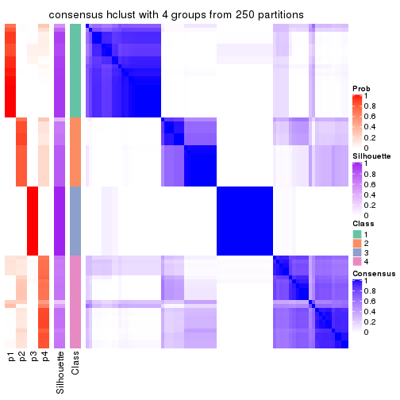
consensus_heatmap(res, k = 5)
consensus_heatmap(res, k = 6)
Heatmaps for the membership of samples in all partitions to see how consistent they are:
membership_heatmap(res, k = 2)
membership_heatmap(res, k = 3)
membership_heatmap(res, k = 4)
membership_heatmap(res, k = 5)
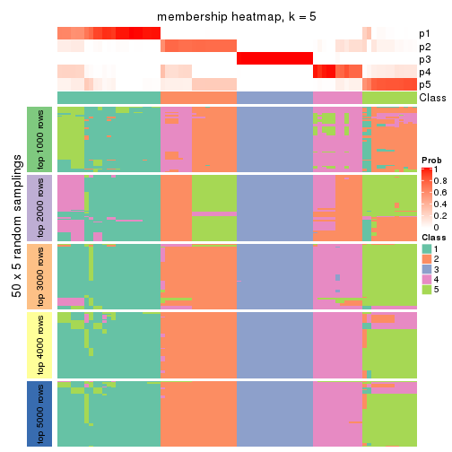
membership_heatmap(res, k = 6)
As soon as we have had the classes for columns, we can look for signatures which are significantly different between classes which can be candidate marks for certain classes. Following are the heatmaps for signatures.
Signature heatmaps where rows are scaled:
get_signatures(res, k = 2)
get_signatures(res, k = 3)
get_signatures(res, k = 4)
get_signatures(res, k = 5)
get_signatures(res, k = 6)
Signature heatmaps where rows are not scaled:
get_signatures(res, k = 2, scale_rows = FALSE)

get_signatures(res, k = 3, scale_rows = FALSE)
get_signatures(res, k = 4, scale_rows = FALSE)
get_signatures(res, k = 5, scale_rows = FALSE)
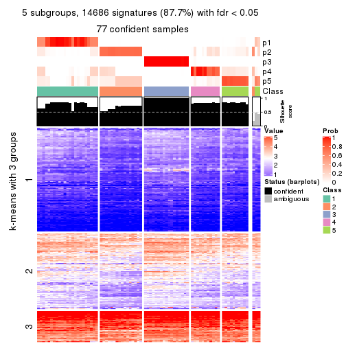
get_signatures(res, k = 6, scale_rows = FALSE)
Compare the overlap of signatures from different k:
compare_signatures(res)
get_signature() returns a data frame invisibly. TO get the list of signatures, the function
call should be assigned to a variable explicitly. In following code, if plot argument is set
to FALSE, no heatmap is plotted while only the differential analysis is performed.
# code only for demonstration
tb = get_signature(res, k = ..., plot = FALSE)
An example of the output of tb is:
#> which_row fdr mean_1 mean_2 scaled_mean_1 scaled_mean_2 km
#> 1 38 0.042760348 8.373488 9.131774 -0.5533452 0.5164555 1
#> 2 40 0.018707592 7.106213 8.469186 -0.6173731 0.5762149 1
#> 3 55 0.019134737 10.221463 11.207825 -0.6159697 0.5749050 1
#> 4 59 0.006059896 5.921854 7.869574 -0.6899429 0.6439467 1
#> 5 60 0.018055526 8.928898 10.211722 -0.6204761 0.5791110 1
#> 6 98 0.009384629 15.714769 14.887706 0.6635654 -0.6193277 2
...
The columns in tb are:
which_row: row indices corresponding to the input matrix.fdr: FDR for the differential test. mean_x: The mean value in group x.scaled_mean_x: The mean value in group x after rows are scaled.km: Row groups if k-means clustering is applied to rows.UMAP plot which shows how samples are separated.
dimension_reduction(res, k = 2, method = "UMAP")
dimension_reduction(res, k = 3, method = "UMAP")
dimension_reduction(res, k = 4, method = "UMAP")
dimension_reduction(res, k = 5, method = "UMAP")
dimension_reduction(res, k = 6, method = "UMAP")
Following heatmap shows how subgroups are split when increasing k:
collect_classes(res)
If matrix rows can be associated to genes, consider to use GO_Enrichment(res,
...) to perform function enrichment for the signature genes.
The object with results only for a single top-value method and a single partition method can be extracted as:
res = res_list["SD", "kmeans"]
# you can also extract it by
# res = res_list["SD:kmeans"]
A summary of res and all the functions that can be applied to it:
res
#> A 'ConsensusPartition' object with k = 2, 3, 4, 5, 6.
#> On a matrix with 16751 rows and 80 columns.
#> Top rows (1000, 2000, 3000, 4000, 5000) are extracted by 'SD' method.
#> Subgroups are detected by 'kmeans' method.
#> Performed in total 1250 partitions by row resampling.
#> Best k for subgroups seems to be 4.
#>
#> Following methods can be applied to this 'ConsensusPartition' object:
#> [1] "cola_report" "collect_classes" "collect_plots"
#> [4] "collect_stats" "colnames" "compare_signatures"
#> [7] "consensus_heatmap" "dimension_reduction" "functional_enrichment"
#> [10] "get_anno_col" "get_anno" "get_classes"
#> [13] "get_consensus" "get_matrix" "get_membership"
#> [16] "get_param" "get_signatures" "get_stats"
#> [19] "is_best_k" "is_stable_k" "membership_heatmap"
#> [22] "ncol" "nrow" "plot_ecdf"
#> [25] "rownames" "select_partition_number" "show"
#> [28] "suggest_best_k" "test_to_known_factors"
collect_plots() function collects all the plots made from res for all k (number of partitions)
into one single page to provide an easy and fast comparison between different k.
collect_plots(res)
The plots are:
k and the heatmap of
predicted classes for each k.k.k.k.All the plots in panels can be made by individual functions and they are plotted later in this section.
select_partition_number() produces several plots showing different
statistics for choosing “optimized” k. There are following statistics:
k;k, the area increased is defined as \(A_k - A_{k-1}\).The detailed explanations of these statistics can be found in the cola vignette.
Generally speaking, lower PAC score, higher mean silhouette score or higher
concordance corresponds to better partition. Rand index and Jaccard index
measure how similar the current partition is compared to partition with k-1.
If they are too similar, we won't accept k is better than k-1.
select_partition_number(res)
The numeric values for all these statistics can be obtained by get_stats().
get_stats(res)
#> k 1-PAC mean_silhouette concordance area_increased Rand Jaccard
#> 2 2 0.417 0.848 0.901 0.4878 0.494 0.494
#> 3 3 0.662 0.914 0.910 0.3346 0.819 0.648
#> 4 4 0.878 0.857 0.923 0.1571 0.845 0.585
#> 5 5 0.774 0.720 0.826 0.0580 0.949 0.796
#> 6 6 0.787 0.695 0.811 0.0386 0.941 0.733
suggest_best_k() suggests the best \(k\) based on these statistics. The rules are as follows:
NA.suggest_best_k(res)
#> [1] 4
Following shows the table of the partitions (You need to click the show/hide
code output link to see it). The membership matrix (columns with name p*)
is inferred by
clue::cl_consensus()
function with the SE method. Basically the value in the membership matrix
represents the probability to belong to a certain group. The finall class
label for an item is determined with the group with highest probability it
belongs to.
In get_classes() function, the entropy is calculated from the membership
matrix and the silhouette score is calculated from the consensus matrix.
cbind(get_classes(res, k = 2), get_membership(res, k = 2))
#> class entropy silhouette p1 p2
#> 71A0AB6A-CFC2-46F6-878C-6052C5B43D22 1 0.9044 0.754 0.680 0.320
#> EFC730EC-6385-4167-A65A-F2A3AAEDA2AC 1 0.8386 0.770 0.732 0.268
#> 14F2F39A-EA0F-4027-8877-FEEEEFF1F085 2 0.0000 0.931 0.000 1.000
#> 98B2A7F8-A7BD-4DA2-8541-950E44D9ACD7 2 0.0000 0.931 0.000 1.000
#> 9166F454-2068-46C2-B2EB-FB3BE4126536 1 0.0000 0.834 1.000 0.000
#> 83B2A0BB-CE24-4DCA-B03A-D20353304365 2 0.0000 0.931 0.000 1.000
#> D3FC3968-B263-4756-BF7F-1941F70B04DA 2 0.6801 0.815 0.180 0.820
#> D357AC5C-C2A0-4CC4-B016-4572400AF117 2 0.0000 0.931 0.000 1.000
#> 1055E951-5B93-4AD7-BE5C-4DF4F6AECEF3 2 0.6531 0.829 0.168 0.832
#> F2995599-3F21-4F33-92BB-7D70A4735938 1 0.0000 0.834 1.000 0.000
#> 3EE533BD-5832-4007-8F1F-439166256EB0 2 0.0000 0.931 0.000 1.000
#> EEC6DA0C-5C49-4EFE-976A-19F432DDAA58 1 0.0000 0.834 1.000 0.000
#> E6E08C1A-4C1B-4572-92DF-DA15BCBADF76 2 0.5629 0.860 0.132 0.868
#> BCFCBBAC-EB95-47EB-9EB0-2CB4AE283A75 1 0.9044 0.754 0.680 0.320
#> 0782D6D0-668B-4B83-8C91-8A35EA3BFF6D 2 0.0000 0.931 0.000 1.000
#> AC78918E-1031-4AE6-B753-B0799171F0F0 1 0.0000 0.834 1.000 0.000
#> 6B497CED-34DA-4CF8-8F8D-696105CB3D5F 1 0.9044 0.754 0.680 0.320
#> 2328D472-583B-43A9-81A4-A21DDEBB5B18 2 0.0000 0.931 0.000 1.000
#> A6930B33-D9B2-4318-807C-4A25EB4CCCDD 2 0.0000 0.931 0.000 1.000
#> C8C48AFD-4D8B-491E-993C-3506DC6DD00F 1 0.7219 0.793 0.800 0.200
#> 093FB845-7905-4064-8E8E-76E3587D8E7C 1 0.9044 0.754 0.680 0.320
#> B216F996-CCD8-4F56-99B1-4EA9769B10B8 1 0.9044 0.754 0.680 0.320
#> CB35DED2-5FEA-43E2-AB42-B6B3A7444B66 1 0.9044 0.754 0.680 0.320
#> BA016F57-F58F-4A66-B85A-0B0F911EEA65 2 0.6247 0.841 0.156 0.844
#> 519DBD5F-66C0-4CEE-905C-799C855D28FB 1 0.0000 0.834 1.000 0.000
#> F5B9B89B-6821-43EE-BCFD-623689D03AF9 2 0.0000 0.931 0.000 1.000
#> 55A39F92-CC88-4A2F-A7D3-7A59DEBEBB42 2 0.0938 0.923 0.012 0.988
#> 3DBBDEDA-F9FC-40DC-804F-45429EA47ED4 2 0.4939 0.819 0.108 0.892
#> BB948BE8-7D48-4AEB-A404-C27A79655D7E 1 0.9044 0.754 0.680 0.320
#> 9506723F-9193-4D8E-BD97-8A0062AB2F9C 1 0.9044 0.754 0.680 0.320
#> D0758A7A-9D0E-4EA4-8EE9-7143B398647D 1 0.9044 0.754 0.680 0.320
#> F400FD4D-72D7-4933-B145-64B7EE245FFC 2 0.0000 0.931 0.000 1.000
#> 3F87E9ED-3719-48E1-8B69-E352A03E982D 1 0.9044 0.754 0.680 0.320
#> D6365FEB-CC12-4337-BF8C-66236A585B5D 2 0.0000 0.931 0.000 1.000
#> A4168812-C38E-4F15-9AF6-79F256279E72 1 0.9044 0.754 0.680 0.320
#> DB676839-02AA-42A7-962F-89D6AD892008 1 0.0000 0.834 1.000 0.000
#> 198D8E89-51FD-41DE-AD11-FB2F2FE49908 2 0.0000 0.931 0.000 1.000
#> 2BADCD01-27E8-49EC-B707-4FAE3D3CB489 1 0.0000 0.834 1.000 0.000
#> ABBD6EFE-079B-4BE3-95AB-36AF9197D684 2 0.0000 0.931 0.000 1.000
#> 39D66B95-61C7-4B76-8E81-1F9F98024B69 1 0.0000 0.834 1.000 0.000
#> 7A920210-CF3D-4458-B6D5-D9B2ADACA469 1 0.0000 0.834 1.000 0.000
#> 0CE61CDC-3257-4F03-951B-CC2CFCF675AE 2 0.5629 0.860 0.132 0.868
#> 7338D61C-77D6-4095-8847-7FD9967B7646 1 0.0000 0.834 1.000 0.000
#> 0D36FAD5-BA81-4FED-9E2A-DB016F2EF18C 1 0.0000 0.834 1.000 0.000
#> 43CD31CD-5FAE-418A-B235-49E54560590D 2 0.0000 0.931 0.000 1.000
#> B6DD72B0-EEFA-41A9-B71D-22DE1343CD32 1 0.9044 0.754 0.680 0.320
#> 2B729CD9-71A5-4336-ACBA-922A30AF4949 2 0.6801 0.815 0.180 0.820
#> B76DB955-69B7-4D05-8166-2569ED44628C 1 0.0000 0.834 1.000 0.000
#> 09CBEE39-7141-4228-AFD3-4714E32A1FB5 2 0.0000 0.931 0.000 1.000
#> AC1700D5-72E7-4C7F-A288-869DFC229252 1 0.0000 0.834 1.000 0.000
#> 535A5E8E-8478-477F-87FF-ED6742AA5473 2 0.0000 0.931 0.000 1.000
#> CFB8573C-9F36-4715-B6F1-6E5B543168A8 1 0.0000 0.834 1.000 0.000
#> 47A45491-6023-44BF-ABC2-9A470F7FC1F7 2 0.6247 0.841 0.156 0.844
#> 437C7AA7-98C0-48C7-97DA-86FF44D69B87 2 0.5629 0.860 0.132 0.868
#> 649ADE7E-6C06-4AB6-8E97-D8C2AAF79A7E 2 0.0000 0.931 0.000 1.000
#> DEA60B47-AD6A-4EBB-9402-6F97E9640E4E 2 0.0000 0.931 0.000 1.000
#> 76C574FF-26BF-49CD-9BCA-7BDDCBD06D5D 2 0.0000 0.931 0.000 1.000
#> 8B6E1F9B-1E90-4333-8E0C-EEDFF25D15C0 2 0.2603 0.895 0.044 0.956
#> A2473EE7-72D6-4D32-9DF7-5D4E444A6715 2 0.6247 0.841 0.156 0.844
#> E226C45E-5287-4D0F-A34B-CE251FA293CB 1 0.0000 0.834 1.000 0.000
#> A2C71C07-AF0C-4016-808C-DFEF458C91C7 1 0.0000 0.834 1.000 0.000
#> DA00D60F-4CF1-4003-BAF5-896EE2BEE2D4 2 0.6343 0.838 0.160 0.840
#> 1C17B65F-1930-4CF3-99B6-5D3AA9E99188 2 0.6343 0.838 0.160 0.840
#> B837D582-A0D3-46BE-8ECA-883F5396AE88 1 0.7815 0.785 0.768 0.232
#> EF1A102F-C206-4874-8F27-0BF069A613B8 1 0.9044 0.754 0.680 0.320
#> BC761676-F64C-476A-8D9B-BD3E6149B2CD 2 0.0000 0.931 0.000 1.000
#> D8351E5C-DC1D-4B4D-83E6-735B2750D944 2 0.0000 0.931 0.000 1.000
#> 59F65F61-03D0-4909-99BD-4CCB53A088A5 1 0.9044 0.754 0.680 0.320
#> EFFCCF33-60E1-4550-B13C-14C54ADCF479 2 0.4815 0.824 0.104 0.896
#> C45EB423-CC14-4BDB-A0B4-447E5DB6DA9C 1 0.0000 0.834 1.000 0.000
#> D34B0BC6-9142-48AE-A113-5923192644A0 1 0.9044 0.754 0.680 0.320
#> 634672A6-C68E-479F-AAB5-CBAFF7758EA4 1 0.0000 0.834 1.000 0.000
#> 06DAE086-D960-4156-9DC8-D126338E2F29 2 0.5629 0.860 0.132 0.868
#> 3353F579-77CA-4D0E-B794-37DE467CC065 1 0.0000 0.834 1.000 0.000
#> 976507F2-192B-4095-920A-3014889CD617 1 0.0000 0.834 1.000 0.000
#> 3FFF89D9-02F5-4D49-8631-099562BF99C7 2 0.0000 0.931 0.000 1.000
#> 8BC2213D-99DA-44E0-826F-EBF211EECFBF 1 0.0000 0.834 1.000 0.000
#> A7A16BF7-5E60-4E50-BE04-542EFC4DB472 2 0.0000 0.931 0.000 1.000
#> E25C9578-9493-466E-A2CD-546DEB076B2D 2 0.0000 0.931 0.000 1.000
#> EA35E230-DE50-45AB-A737-D5C430652A90 1 0.9044 0.754 0.680 0.320
cbind(get_classes(res, k = 3), get_membership(res, k = 3))
#> class entropy silhouette p1 p2 p3
#> 71A0AB6A-CFC2-46F6-878C-6052C5B43D22 1 0.3412 0.950 0.876 0.000 0.124
#> EFC730EC-6385-4167-A65A-F2A3AAEDA2AC 1 0.3918 0.809 0.868 0.120 0.012
#> 14F2F39A-EA0F-4027-8877-FEEEEFF1F085 2 0.3551 0.900 0.132 0.868 0.000
#> 98B2A7F8-A7BD-4DA2-8541-950E44D9ACD7 2 0.3412 0.903 0.124 0.876 0.000
#> 9166F454-2068-46C2-B2EB-FB3BE4126536 3 0.0000 0.974 0.000 0.000 1.000
#> 83B2A0BB-CE24-4DCA-B03A-D20353304365 2 0.3412 0.903 0.124 0.876 0.000
#> D3FC3968-B263-4756-BF7F-1941F70B04DA 2 0.3888 0.875 0.064 0.888 0.048
#> D357AC5C-C2A0-4CC4-B016-4572400AF117 2 0.3551 0.900 0.132 0.868 0.000
#> 1055E951-5B93-4AD7-BE5C-4DF4F6AECEF3 2 0.3983 0.874 0.068 0.884 0.048
#> F2995599-3F21-4F33-92BB-7D70A4735938 3 0.0000 0.974 0.000 0.000 1.000
#> 3EE533BD-5832-4007-8F1F-439166256EB0 2 0.4702 0.852 0.212 0.788 0.000
#> EEC6DA0C-5C49-4EFE-976A-19F432DDAA58 3 0.0747 0.958 0.016 0.000 0.984
#> E6E08C1A-4C1B-4572-92DF-DA15BCBADF76 2 0.2261 0.892 0.068 0.932 0.000
#> BCFCBBAC-EB95-47EB-9EB0-2CB4AE283A75 1 0.3412 0.950 0.876 0.000 0.124
#> 0782D6D0-668B-4B83-8C91-8A35EA3BFF6D 2 0.3412 0.903 0.124 0.876 0.000
#> AC78918E-1031-4AE6-B753-B0799171F0F0 3 0.0000 0.974 0.000 0.000 1.000
#> 6B497CED-34DA-4CF8-8F8D-696105CB3D5F 1 0.3412 0.950 0.876 0.000 0.124
#> 2328D472-583B-43A9-81A4-A21DDEBB5B18 2 0.3816 0.904 0.148 0.852 0.000
#> A6930B33-D9B2-4318-807C-4A25EB4CCCDD 2 0.3551 0.900 0.132 0.868 0.000
#> C8C48AFD-4D8B-491E-993C-3506DC6DD00F 1 0.3482 0.947 0.872 0.000 0.128
#> 093FB845-7905-4064-8E8E-76E3587D8E7C 1 0.3412 0.950 0.876 0.000 0.124
#> B216F996-CCD8-4F56-99B1-4EA9769B10B8 1 0.3412 0.950 0.876 0.000 0.124
#> CB35DED2-5FEA-43E2-AB42-B6B3A7444B66 1 0.3412 0.950 0.876 0.000 0.124
#> BA016F57-F58F-4A66-B85A-0B0F911EEA65 2 0.3983 0.874 0.068 0.884 0.048
#> 519DBD5F-66C0-4CEE-905C-799C855D28FB 3 0.0000 0.974 0.000 0.000 1.000
#> F5B9B89B-6821-43EE-BCFD-623689D03AF9 2 0.3551 0.900 0.132 0.868 0.000
#> 55A39F92-CC88-4A2F-A7D3-7A59DEBEBB42 1 0.1643 0.855 0.956 0.044 0.000
#> 3DBBDEDA-F9FC-40DC-804F-45429EA47ED4 2 0.5404 0.805 0.256 0.740 0.004
#> BB948BE8-7D48-4AEB-A404-C27A79655D7E 1 0.3412 0.950 0.876 0.000 0.124
#> 9506723F-9193-4D8E-BD97-8A0062AB2F9C 1 0.3412 0.950 0.876 0.000 0.124
#> D0758A7A-9D0E-4EA4-8EE9-7143B398647D 1 0.3412 0.950 0.876 0.000 0.124
#> F400FD4D-72D7-4933-B145-64B7EE245FFC 2 0.0000 0.904 0.000 1.000 0.000
#> 3F87E9ED-3719-48E1-8B69-E352A03E982D 1 0.3340 0.948 0.880 0.000 0.120
#> D6365FEB-CC12-4337-BF8C-66236A585B5D 2 0.3941 0.902 0.156 0.844 0.000
#> A4168812-C38E-4F15-9AF6-79F256279E72 1 0.3412 0.950 0.876 0.000 0.124
#> DB676839-02AA-42A7-962F-89D6AD892008 3 0.0000 0.974 0.000 0.000 1.000
#> 198D8E89-51FD-41DE-AD11-FB2F2FE49908 2 0.0000 0.904 0.000 1.000 0.000
#> 2BADCD01-27E8-49EC-B707-4FAE3D3CB489 3 0.0000 0.974 0.000 0.000 1.000
#> ABBD6EFE-079B-4BE3-95AB-36AF9197D684 2 0.1964 0.903 0.056 0.944 0.000
#> 39D66B95-61C7-4B76-8E81-1F9F98024B69 3 0.0000 0.974 0.000 0.000 1.000
#> 7A920210-CF3D-4458-B6D5-D9B2ADACA469 3 0.0000 0.974 0.000 0.000 1.000
#> 0CE61CDC-3257-4F03-951B-CC2CFCF675AE 2 0.2165 0.893 0.064 0.936 0.000
#> 7338D61C-77D6-4095-8847-7FD9967B7646 3 0.5722 0.774 0.068 0.132 0.800
#> 0D36FAD5-BA81-4FED-9E2A-DB016F2EF18C 3 0.0000 0.974 0.000 0.000 1.000
#> 43CD31CD-5FAE-418A-B235-49E54560590D 2 0.3482 0.902 0.128 0.872 0.000
#> B6DD72B0-EEFA-41A9-B71D-22DE1343CD32 1 0.3412 0.950 0.876 0.000 0.124
#> 2B729CD9-71A5-4336-ACBA-922A30AF4949 2 0.3983 0.874 0.068 0.884 0.048
#> B76DB955-69B7-4D05-8166-2569ED44628C 3 0.0000 0.974 0.000 0.000 1.000
#> 09CBEE39-7141-4228-AFD3-4714E32A1FB5 2 0.3686 0.897 0.140 0.860 0.000
#> AC1700D5-72E7-4C7F-A288-869DFC229252 1 0.4555 0.865 0.800 0.000 0.200
#> 535A5E8E-8478-477F-87FF-ED6742AA5473 2 0.3482 0.902 0.128 0.872 0.000
#> CFB8573C-9F36-4715-B6F1-6E5B543168A8 3 0.5787 0.770 0.068 0.136 0.796
#> 47A45491-6023-44BF-ABC2-9A470F7FC1F7 2 0.3983 0.874 0.068 0.884 0.048
#> 437C7AA7-98C0-48C7-97DA-86FF44D69B87 2 0.0237 0.904 0.004 0.996 0.000
#> 649ADE7E-6C06-4AB6-8E97-D8C2AAF79A7E 2 0.3941 0.902 0.156 0.844 0.000
#> DEA60B47-AD6A-4EBB-9402-6F97E9640E4E 2 0.0000 0.904 0.000 1.000 0.000
#> 76C574FF-26BF-49CD-9BCA-7BDDCBD06D5D 2 0.3482 0.902 0.128 0.872 0.000
#> 8B6E1F9B-1E90-4333-8E0C-EEDFF25D15C0 1 0.1411 0.858 0.964 0.036 0.000
#> A2473EE7-72D6-4D32-9DF7-5D4E444A6715 2 0.3406 0.884 0.068 0.904 0.028
#> E226C45E-5287-4D0F-A34B-CE251FA293CB 3 0.0000 0.974 0.000 0.000 1.000
#> A2C71C07-AF0C-4016-808C-DFEF458C91C7 3 0.0000 0.974 0.000 0.000 1.000
#> DA00D60F-4CF1-4003-BAF5-896EE2BEE2D4 2 0.3983 0.874 0.068 0.884 0.048
#> 1C17B65F-1930-4CF3-99B6-5D3AA9E99188 2 0.3983 0.874 0.068 0.884 0.048
#> B837D582-A0D3-46BE-8ECA-883F5396AE88 1 0.5564 0.890 0.808 0.064 0.128
#> EF1A102F-C206-4874-8F27-0BF069A613B8 1 0.3845 0.813 0.872 0.116 0.012
#> BC761676-F64C-476A-8D9B-BD3E6149B2CD 2 0.4750 0.882 0.216 0.784 0.000
#> D8351E5C-DC1D-4B4D-83E6-735B2750D944 2 0.3752 0.902 0.144 0.856 0.000
#> 59F65F61-03D0-4909-99BD-4CCB53A088A5 1 0.3412 0.950 0.876 0.000 0.124
#> EFFCCF33-60E1-4550-B13C-14C54ADCF479 1 0.0747 0.860 0.984 0.016 0.000
#> C45EB423-CC14-4BDB-A0B4-447E5DB6DA9C 3 0.0000 0.974 0.000 0.000 1.000
#> D34B0BC6-9142-48AE-A113-5923192644A0 1 0.3412 0.950 0.876 0.000 0.124
#> 634672A6-C68E-479F-AAB5-CBAFF7758EA4 3 0.0000 0.974 0.000 0.000 1.000
#> 06DAE086-D960-4156-9DC8-D126338E2F29 2 0.0000 0.904 0.000 1.000 0.000
#> 3353F579-77CA-4D0E-B794-37DE467CC065 3 0.0000 0.974 0.000 0.000 1.000
#> 976507F2-192B-4095-920A-3014889CD617 3 0.0000 0.974 0.000 0.000 1.000
#> 3FFF89D9-02F5-4D49-8631-099562BF99C7 2 0.0000 0.904 0.000 1.000 0.000
#> 8BC2213D-99DA-44E0-826F-EBF211EECFBF 3 0.0000 0.974 0.000 0.000 1.000
#> A7A16BF7-5E60-4E50-BE04-542EFC4DB472 2 0.4002 0.886 0.160 0.840 0.000
#> E25C9578-9493-466E-A2CD-546DEB076B2D 2 0.4002 0.886 0.160 0.840 0.000
#> EA35E230-DE50-45AB-A737-D5C430652A90 1 0.3412 0.950 0.876 0.000 0.124
cbind(get_classes(res, k = 4), get_membership(res, k = 4))
#> class entropy silhouette p1 p2 p3 p4
#> 71A0AB6A-CFC2-46F6-878C-6052C5B43D22 1 0.0376 0.9761 0.992 0.000 0.004 0.004
#> EFC730EC-6385-4167-A65A-F2A3AAEDA2AC 4 0.4804 0.3306 0.384 0.000 0.000 0.616
#> 14F2F39A-EA0F-4027-8877-FEEEEFF1F085 2 0.0000 0.8993 0.000 1.000 0.000 0.000
#> 98B2A7F8-A7BD-4DA2-8541-950E44D9ACD7 2 0.0336 0.8998 0.000 0.992 0.000 0.008
#> 9166F454-2068-46C2-B2EB-FB3BE4126536 3 0.0336 0.9879 0.000 0.000 0.992 0.008
#> 83B2A0BB-CE24-4DCA-B03A-D20353304365 2 0.0336 0.8998 0.000 0.992 0.000 0.008
#> D3FC3968-B263-4756-BF7F-1941F70B04DA 4 0.1902 0.8247 0.000 0.064 0.004 0.932
#> D357AC5C-C2A0-4CC4-B016-4572400AF117 2 0.0000 0.8993 0.000 1.000 0.000 0.000
#> 1055E951-5B93-4AD7-BE5C-4DF4F6AECEF3 4 0.1576 0.8268 0.000 0.048 0.004 0.948
#> F2995599-3F21-4F33-92BB-7D70A4735938 3 0.0921 0.9852 0.000 0.000 0.972 0.028
#> 3EE533BD-5832-4007-8F1F-439166256EB0 2 0.0817 0.8935 0.000 0.976 0.000 0.024
#> EEC6DA0C-5C49-4EFE-976A-19F432DDAA58 3 0.0336 0.9879 0.000 0.000 0.992 0.008
#> E6E08C1A-4C1B-4572-92DF-DA15BCBADF76 4 0.1474 0.8258 0.000 0.052 0.000 0.948
#> BCFCBBAC-EB95-47EB-9EB0-2CB4AE283A75 1 0.0376 0.9761 0.992 0.000 0.004 0.004
#> 0782D6D0-668B-4B83-8C91-8A35EA3BFF6D 2 0.0336 0.8998 0.000 0.992 0.000 0.008
#> AC78918E-1031-4AE6-B753-B0799171F0F0 3 0.0336 0.9879 0.000 0.000 0.992 0.008
#> 6B497CED-34DA-4CF8-8F8D-696105CB3D5F 1 0.0188 0.9765 0.996 0.000 0.004 0.000
#> 2328D472-583B-43A9-81A4-A21DDEBB5B18 2 0.4250 0.6312 0.000 0.724 0.000 0.276
#> A6930B33-D9B2-4318-807C-4A25EB4CCCDD 2 0.0336 0.8998 0.000 0.992 0.000 0.008
#> C8C48AFD-4D8B-491E-993C-3506DC6DD00F 1 0.0188 0.9765 0.996 0.000 0.004 0.000
#> 093FB845-7905-4064-8E8E-76E3587D8E7C 1 0.0376 0.9760 0.992 0.000 0.004 0.004
#> B216F996-CCD8-4F56-99B1-4EA9769B10B8 1 0.0188 0.9765 0.996 0.000 0.004 0.000
#> CB35DED2-5FEA-43E2-AB42-B6B3A7444B66 1 0.0376 0.9760 0.992 0.000 0.004 0.004
#> BA016F57-F58F-4A66-B85A-0B0F911EEA65 4 0.1585 0.8277 0.004 0.040 0.004 0.952
#> 519DBD5F-66C0-4CEE-905C-799C855D28FB 3 0.0188 0.9880 0.000 0.000 0.996 0.004
#> F5B9B89B-6821-43EE-BCFD-623689D03AF9 2 0.0336 0.8998 0.000 0.992 0.000 0.008
#> 55A39F92-CC88-4A2F-A7D3-7A59DEBEBB42 1 0.6198 0.5451 0.660 0.116 0.000 0.224
#> 3DBBDEDA-F9FC-40DC-804F-45429EA47ED4 4 0.5999 0.1160 0.044 0.404 0.000 0.552
#> BB948BE8-7D48-4AEB-A404-C27A79655D7E 1 0.0188 0.9765 0.996 0.000 0.004 0.000
#> 9506723F-9193-4D8E-BD97-8A0062AB2F9C 1 0.0188 0.9765 0.996 0.000 0.004 0.000
#> D0758A7A-9D0E-4EA4-8EE9-7143B398647D 1 0.0188 0.9765 0.996 0.000 0.004 0.000
#> F400FD4D-72D7-4933-B145-64B7EE245FFC 4 0.4356 0.6625 0.000 0.292 0.000 0.708
#> 3F87E9ED-3719-48E1-8B69-E352A03E982D 1 0.0524 0.9756 0.988 0.000 0.004 0.008
#> D6365FEB-CC12-4337-BF8C-66236A585B5D 2 0.4250 0.6312 0.000 0.724 0.000 0.276
#> A4168812-C38E-4F15-9AF6-79F256279E72 1 0.0376 0.9760 0.992 0.000 0.004 0.004
#> DB676839-02AA-42A7-962F-89D6AD892008 3 0.0336 0.9879 0.000 0.000 0.992 0.008
#> 198D8E89-51FD-41DE-AD11-FB2F2FE49908 4 0.4356 0.6625 0.000 0.292 0.000 0.708
#> 2BADCD01-27E8-49EC-B707-4FAE3D3CB489 3 0.0921 0.9855 0.000 0.000 0.972 0.028
#> ABBD6EFE-079B-4BE3-95AB-36AF9197D684 2 0.0469 0.8987 0.000 0.988 0.000 0.012
#> 39D66B95-61C7-4B76-8E81-1F9F98024B69 3 0.0921 0.9852 0.000 0.000 0.972 0.028
#> 7A920210-CF3D-4458-B6D5-D9B2ADACA469 3 0.0188 0.9880 0.000 0.000 0.996 0.004
#> 0CE61CDC-3257-4F03-951B-CC2CFCF675AE 4 0.1792 0.8236 0.000 0.068 0.000 0.932
#> 7338D61C-77D6-4095-8847-7FD9967B7646 4 0.1209 0.8008 0.004 0.000 0.032 0.964
#> 0D36FAD5-BA81-4FED-9E2A-DB016F2EF18C 3 0.0921 0.9852 0.000 0.000 0.972 0.028
#> 43CD31CD-5FAE-418A-B235-49E54560590D 2 0.0707 0.8948 0.000 0.980 0.000 0.020
#> B6DD72B0-EEFA-41A9-B71D-22DE1343CD32 1 0.0188 0.9765 0.996 0.000 0.004 0.000
#> 2B729CD9-71A5-4336-ACBA-922A30AF4949 4 0.1398 0.8275 0.000 0.040 0.004 0.956
#> B76DB955-69B7-4D05-8166-2569ED44628C 3 0.0336 0.9879 0.000 0.000 0.992 0.008
#> 09CBEE39-7141-4228-AFD3-4714E32A1FB5 2 0.0707 0.8948 0.000 0.980 0.000 0.020
#> AC1700D5-72E7-4C7F-A288-869DFC229252 1 0.1109 0.9584 0.968 0.000 0.004 0.028
#> 535A5E8E-8478-477F-87FF-ED6742AA5473 2 0.1118 0.8882 0.000 0.964 0.000 0.036
#> CFB8573C-9F36-4715-B6F1-6E5B543168A8 4 0.0895 0.8008 0.004 0.000 0.020 0.976
#> 47A45491-6023-44BF-ABC2-9A470F7FC1F7 4 0.1585 0.8277 0.004 0.040 0.004 0.952
#> 437C7AA7-98C0-48C7-97DA-86FF44D69B87 4 0.3400 0.7608 0.000 0.180 0.000 0.820
#> 649ADE7E-6C06-4AB6-8E97-D8C2AAF79A7E 2 0.4679 0.4962 0.000 0.648 0.000 0.352
#> DEA60B47-AD6A-4EBB-9402-6F97E9640E4E 4 0.4356 0.6625 0.000 0.292 0.000 0.708
#> 76C574FF-26BF-49CD-9BCA-7BDDCBD06D5D 2 0.0336 0.8998 0.000 0.992 0.000 0.008
#> 8B6E1F9B-1E90-4333-8E0C-EEDFF25D15C0 1 0.1151 0.9565 0.968 0.008 0.000 0.024
#> A2473EE7-72D6-4D32-9DF7-5D4E444A6715 4 0.1585 0.8277 0.004 0.040 0.004 0.952
#> E226C45E-5287-4D0F-A34B-CE251FA293CB 3 0.0336 0.9879 0.000 0.000 0.992 0.008
#> A2C71C07-AF0C-4016-808C-DFEF458C91C7 3 0.0921 0.9852 0.000 0.000 0.972 0.028
#> DA00D60F-4CF1-4003-BAF5-896EE2BEE2D4 4 0.1492 0.8262 0.004 0.036 0.004 0.956
#> 1C17B65F-1930-4CF3-99B6-5D3AA9E99188 4 0.1585 0.8277 0.004 0.040 0.004 0.952
#> B837D582-A0D3-46BE-8ECA-883F5396AE88 1 0.0895 0.9671 0.976 0.000 0.004 0.020
#> EF1A102F-C206-4874-8F27-0BF069A613B8 4 0.4817 0.3206 0.388 0.000 0.000 0.612
#> BC761676-F64C-476A-8D9B-BD3E6149B2CD 2 0.2530 0.8244 0.000 0.888 0.000 0.112
#> D8351E5C-DC1D-4B4D-83E6-735B2750D944 2 0.4999 0.0682 0.000 0.508 0.000 0.492
#> 59F65F61-03D0-4909-99BD-4CCB53A088A5 1 0.0376 0.9761 0.992 0.000 0.004 0.004
#> EFFCCF33-60E1-4550-B13C-14C54ADCF479 1 0.1151 0.9592 0.968 0.008 0.000 0.024
#> C45EB423-CC14-4BDB-A0B4-447E5DB6DA9C 3 0.0336 0.9879 0.000 0.000 0.992 0.008
#> D34B0BC6-9142-48AE-A113-5923192644A0 1 0.0376 0.9761 0.992 0.000 0.004 0.004
#> 634672A6-C68E-479F-AAB5-CBAFF7758EA4 3 0.0921 0.9852 0.000 0.000 0.972 0.028
#> 06DAE086-D960-4156-9DC8-D126338E2F29 4 0.4331 0.6667 0.000 0.288 0.000 0.712
#> 3353F579-77CA-4D0E-B794-37DE467CC065 3 0.0817 0.9860 0.000 0.000 0.976 0.024
#> 976507F2-192B-4095-920A-3014889CD617 3 0.0188 0.9880 0.000 0.000 0.996 0.004
#> 3FFF89D9-02F5-4D49-8631-099562BF99C7 4 0.4356 0.6625 0.000 0.292 0.000 0.708
#> 8BC2213D-99DA-44E0-826F-EBF211EECFBF 3 0.0921 0.9852 0.000 0.000 0.972 0.028
#> A7A16BF7-5E60-4E50-BE04-542EFC4DB472 2 0.0000 0.8993 0.000 1.000 0.000 0.000
#> E25C9578-9493-466E-A2CD-546DEB076B2D 2 0.0000 0.8993 0.000 1.000 0.000 0.000
#> EA35E230-DE50-45AB-A737-D5C430652A90 1 0.0524 0.9756 0.988 0.000 0.004 0.008
cbind(get_classes(res, k = 5), get_membership(res, k = 5))
#> class entropy silhouette p1 p2 p3 p4 p5
#> 71A0AB6A-CFC2-46F6-878C-6052C5B43D22 1 0.0000 0.8711 1.000 0.000 0.000 0.000 0.000
#> EFC730EC-6385-4167-A65A-F2A3AAEDA2AC 4 0.6325 0.1101 0.156 0.000 0.000 0.424 0.420
#> 14F2F39A-EA0F-4027-8877-FEEEEFF1F085 2 0.0000 0.8079 0.000 1.000 0.000 0.000 0.000
#> 98B2A7F8-A7BD-4DA2-8541-950E44D9ACD7 2 0.0963 0.8017 0.000 0.964 0.000 0.000 0.036
#> 9166F454-2068-46C2-B2EB-FB3BE4126536 3 0.1197 0.9361 0.000 0.000 0.952 0.000 0.048
#> 83B2A0BB-CE24-4DCA-B03A-D20353304365 2 0.0963 0.8017 0.000 0.964 0.000 0.000 0.036
#> D3FC3968-B263-4756-BF7F-1941F70B04DA 4 0.0000 0.8104 0.000 0.000 0.000 1.000 0.000
#> D357AC5C-C2A0-4CC4-B016-4572400AF117 2 0.1341 0.7944 0.000 0.944 0.000 0.000 0.056
#> 1055E951-5B93-4AD7-BE5C-4DF4F6AECEF3 4 0.0000 0.8104 0.000 0.000 0.000 1.000 0.000
#> F2995599-3F21-4F33-92BB-7D70A4735938 3 0.2127 0.9266 0.000 0.000 0.892 0.000 0.108
#> 3EE533BD-5832-4007-8F1F-439166256EB0 2 0.4400 0.5010 0.000 0.672 0.000 0.020 0.308
#> EEC6DA0C-5C49-4EFE-976A-19F432DDAA58 3 0.1270 0.9348 0.000 0.000 0.948 0.000 0.052
#> E6E08C1A-4C1B-4572-92DF-DA15BCBADF76 4 0.1121 0.7990 0.000 0.000 0.000 0.956 0.044
#> BCFCBBAC-EB95-47EB-9EB0-2CB4AE283A75 1 0.3586 0.7701 0.736 0.000 0.000 0.000 0.264
#> 0782D6D0-668B-4B83-8C91-8A35EA3BFF6D 2 0.0000 0.8079 0.000 1.000 0.000 0.000 0.000
#> AC78918E-1031-4AE6-B753-B0799171F0F0 3 0.1043 0.9377 0.000 0.000 0.960 0.000 0.040
#> 6B497CED-34DA-4CF8-8F8D-696105CB3D5F 1 0.0162 0.8703 0.996 0.000 0.000 0.000 0.004
#> 2328D472-583B-43A9-81A4-A21DDEBB5B18 5 0.6349 0.1009 0.000 0.412 0.000 0.160 0.428
#> A6930B33-D9B2-4318-807C-4A25EB4CCCDD 2 0.0000 0.8079 0.000 1.000 0.000 0.000 0.000
#> C8C48AFD-4D8B-491E-993C-3506DC6DD00F 1 0.1270 0.8617 0.948 0.000 0.000 0.000 0.052
#> 093FB845-7905-4064-8E8E-76E3587D8E7C 1 0.3395 0.8002 0.764 0.000 0.000 0.000 0.236
#> B216F996-CCD8-4F56-99B1-4EA9769B10B8 1 0.0162 0.8703 0.996 0.000 0.000 0.000 0.004
#> CB35DED2-5FEA-43E2-AB42-B6B3A7444B66 1 0.2852 0.8347 0.828 0.000 0.000 0.000 0.172
#> BA016F57-F58F-4A66-B85A-0B0F911EEA65 4 0.2605 0.7845 0.000 0.000 0.000 0.852 0.148
#> 519DBD5F-66C0-4CEE-905C-799C855D28FB 3 0.0000 0.9394 0.000 0.000 1.000 0.000 0.000
#> F5B9B89B-6821-43EE-BCFD-623689D03AF9 2 0.0000 0.8079 0.000 1.000 0.000 0.000 0.000
#> 55A39F92-CC88-4A2F-A7D3-7A59DEBEBB42 5 0.5598 0.0512 0.296 0.036 0.000 0.040 0.628
#> 3DBBDEDA-F9FC-40DC-804F-45429EA47ED4 5 0.6615 0.3975 0.008 0.208 0.000 0.276 0.508
#> BB948BE8-7D48-4AEB-A404-C27A79655D7E 1 0.0880 0.8645 0.968 0.000 0.000 0.000 0.032
#> 9506723F-9193-4D8E-BD97-8A0062AB2F9C 1 0.0000 0.8711 1.000 0.000 0.000 0.000 0.000
#> D0758A7A-9D0E-4EA4-8EE9-7143B398647D 1 0.0000 0.8711 1.000 0.000 0.000 0.000 0.000
#> F400FD4D-72D7-4933-B145-64B7EE245FFC 4 0.3053 0.7153 0.000 0.164 0.000 0.828 0.008
#> 3F87E9ED-3719-48E1-8B69-E352A03E982D 1 0.2732 0.8363 0.840 0.000 0.000 0.000 0.160
#> D6365FEB-CC12-4337-BF8C-66236A585B5D 5 0.6347 0.1119 0.000 0.408 0.000 0.160 0.432
#> A4168812-C38E-4F15-9AF6-79F256279E72 1 0.2648 0.8407 0.848 0.000 0.000 0.000 0.152
#> DB676839-02AA-42A7-962F-89D6AD892008 3 0.1121 0.9370 0.000 0.000 0.956 0.000 0.044
#> 198D8E89-51FD-41DE-AD11-FB2F2FE49908 4 0.3264 0.7099 0.000 0.164 0.000 0.820 0.016
#> 2BADCD01-27E8-49EC-B707-4FAE3D3CB489 3 0.2690 0.9062 0.000 0.000 0.844 0.000 0.156
#> ABBD6EFE-079B-4BE3-95AB-36AF9197D684 2 0.2130 0.7628 0.000 0.908 0.000 0.012 0.080
#> 39D66B95-61C7-4B76-8E81-1F9F98024B69 3 0.2074 0.9280 0.000 0.000 0.896 0.000 0.104
#> 7A920210-CF3D-4458-B6D5-D9B2ADACA469 3 0.0000 0.9394 0.000 0.000 1.000 0.000 0.000
#> 0CE61CDC-3257-4F03-951B-CC2CFCF675AE 4 0.0000 0.8104 0.000 0.000 0.000 1.000 0.000
#> 7338D61C-77D6-4095-8847-7FD9967B7646 4 0.3039 0.7661 0.000 0.000 0.000 0.808 0.192
#> 0D36FAD5-BA81-4FED-9E2A-DB016F2EF18C 3 0.2074 0.9280 0.000 0.000 0.896 0.000 0.104
#> 43CD31CD-5FAE-418A-B235-49E54560590D 2 0.4972 0.4463 0.000 0.620 0.000 0.044 0.336
#> B6DD72B0-EEFA-41A9-B71D-22DE1343CD32 1 0.0162 0.8703 0.996 0.000 0.000 0.000 0.004
#> 2B729CD9-71A5-4336-ACBA-922A30AF4949 4 0.1341 0.8049 0.000 0.000 0.000 0.944 0.056
#> B76DB955-69B7-4D05-8166-2569ED44628C 3 0.1121 0.9370 0.000 0.000 0.956 0.000 0.044
#> 09CBEE39-7141-4228-AFD3-4714E32A1FB5 2 0.4508 0.4919 0.000 0.648 0.000 0.020 0.332
#> AC1700D5-72E7-4C7F-A288-869DFC229252 1 0.3983 0.6359 0.660 0.000 0.000 0.000 0.340
#> 535A5E8E-8478-477F-87FF-ED6742AA5473 2 0.5218 0.4108 0.000 0.604 0.000 0.060 0.336
#> CFB8573C-9F36-4715-B6F1-6E5B543168A8 4 0.3857 0.6434 0.000 0.000 0.000 0.688 0.312
#> 47A45491-6023-44BF-ABC2-9A470F7FC1F7 4 0.2605 0.7845 0.000 0.000 0.000 0.852 0.148
#> 437C7AA7-98C0-48C7-97DA-86FF44D69B87 4 0.1043 0.8008 0.000 0.040 0.000 0.960 0.000
#> 649ADE7E-6C06-4AB6-8E97-D8C2AAF79A7E 5 0.6526 0.2514 0.000 0.344 0.000 0.204 0.452
#> DEA60B47-AD6A-4EBB-9402-6F97E9640E4E 4 0.3053 0.7153 0.000 0.164 0.000 0.828 0.008
#> 76C574FF-26BF-49CD-9BCA-7BDDCBD06D5D 2 0.0000 0.8079 0.000 1.000 0.000 0.000 0.000
#> 8B6E1F9B-1E90-4333-8E0C-EEDFF25D15C0 5 0.4227 -0.2567 0.420 0.000 0.000 0.000 0.580
#> A2473EE7-72D6-4D32-9DF7-5D4E444A6715 4 0.2929 0.7662 0.000 0.000 0.000 0.820 0.180
#> E226C45E-5287-4D0F-A34B-CE251FA293CB 3 0.1270 0.9348 0.000 0.000 0.948 0.000 0.052
#> A2C71C07-AF0C-4016-808C-DFEF458C91C7 3 0.2074 0.9280 0.000 0.000 0.896 0.000 0.104
#> DA00D60F-4CF1-4003-BAF5-896EE2BEE2D4 4 0.2891 0.7688 0.000 0.000 0.000 0.824 0.176
#> 1C17B65F-1930-4CF3-99B6-5D3AA9E99188 4 0.1544 0.8049 0.000 0.000 0.000 0.932 0.068
#> B837D582-A0D3-46BE-8ECA-883F5396AE88 1 0.3949 0.7172 0.668 0.000 0.000 0.000 0.332
#> EF1A102F-C206-4874-8F27-0BF069A613B8 5 0.6373 -0.2446 0.164 0.000 0.000 0.416 0.420
#> BC761676-F64C-476A-8D9B-BD3E6149B2CD 2 0.5492 0.2267 0.000 0.536 0.000 0.068 0.396
#> D8351E5C-DC1D-4B4D-83E6-735B2750D944 5 0.6632 0.3607 0.000 0.228 0.000 0.344 0.428
#> 59F65F61-03D0-4909-99BD-4CCB53A088A5 1 0.0404 0.8714 0.988 0.000 0.000 0.000 0.012
#> EFFCCF33-60E1-4550-B13C-14C54ADCF479 1 0.4262 0.3907 0.560 0.000 0.000 0.000 0.440
#> C45EB423-CC14-4BDB-A0B4-447E5DB6DA9C 3 0.1121 0.9370 0.000 0.000 0.956 0.000 0.044
#> D34B0BC6-9142-48AE-A113-5923192644A0 1 0.0404 0.8714 0.988 0.000 0.000 0.000 0.012
#> 634672A6-C68E-479F-AAB5-CBAFF7758EA4 3 0.2074 0.9280 0.000 0.000 0.896 0.000 0.104
#> 06DAE086-D960-4156-9DC8-D126338E2F29 4 0.3573 0.7088 0.000 0.152 0.000 0.812 0.036
#> 3353F579-77CA-4D0E-B794-37DE467CC065 3 0.3003 0.9042 0.000 0.000 0.812 0.000 0.188
#> 976507F2-192B-4095-920A-3014889CD617 3 0.0000 0.9394 0.000 0.000 1.000 0.000 0.000
#> 3FFF89D9-02F5-4D49-8631-099562BF99C7 4 0.2660 0.7455 0.000 0.128 0.000 0.864 0.008
#> 8BC2213D-99DA-44E0-826F-EBF211EECFBF 3 0.2127 0.9266 0.000 0.000 0.892 0.000 0.108
#> A7A16BF7-5E60-4E50-BE04-542EFC4DB472 2 0.0000 0.8079 0.000 1.000 0.000 0.000 0.000
#> E25C9578-9493-466E-A2CD-546DEB076B2D 2 0.0000 0.8079 0.000 1.000 0.000 0.000 0.000
#> EA35E230-DE50-45AB-A737-D5C430652A90 1 0.2605 0.8410 0.852 0.000 0.000 0.000 0.148
cbind(get_classes(res, k = 6), get_membership(res, k = 6))
#> class entropy silhouette p1 p2 p3 p4 p5 p6
#> 71A0AB6A-CFC2-46F6-878C-6052C5B43D22 1 0.0000 0.79845 1.000 0.000 0.000 0.000 0.000 0.000
#> EFC730EC-6385-4167-A65A-F2A3AAEDA2AC 6 0.4583 0.50049 0.040 0.000 0.000 0.224 0.032 0.704
#> 14F2F39A-EA0F-4027-8877-FEEEEFF1F085 2 0.0146 0.93158 0.000 0.996 0.000 0.000 0.004 0.000
#> 98B2A7F8-A7BD-4DA2-8541-950E44D9ACD7 2 0.1297 0.90861 0.000 0.948 0.000 0.000 0.040 0.012
#> 9166F454-2068-46C2-B2EB-FB3BE4126536 3 0.0260 0.86816 0.000 0.000 0.992 0.000 0.008 0.000
#> 83B2A0BB-CE24-4DCA-B03A-D20353304365 2 0.1297 0.90861 0.000 0.948 0.000 0.000 0.040 0.012
#> D3FC3968-B263-4756-BF7F-1941F70B04DA 4 0.0146 0.79301 0.000 0.004 0.000 0.996 0.000 0.000
#> D357AC5C-C2A0-4CC4-B016-4572400AF117 2 0.3271 0.62165 0.000 0.760 0.000 0.000 0.232 0.008
#> 1055E951-5B93-4AD7-BE5C-4DF4F6AECEF3 4 0.0146 0.79301 0.000 0.004 0.000 0.996 0.000 0.000
#> F2995599-3F21-4F33-92BB-7D70A4735938 3 0.4387 0.83880 0.000 0.000 0.720 0.000 0.152 0.128
#> 3EE533BD-5832-4007-8F1F-439166256EB0 5 0.5339 0.39972 0.000 0.416 0.000 0.004 0.488 0.092
#> EEC6DA0C-5C49-4EFE-976A-19F432DDAA58 3 0.0748 0.86191 0.000 0.000 0.976 0.004 0.016 0.004
#> E6E08C1A-4C1B-4572-92DF-DA15BCBADF76 4 0.1788 0.76088 0.000 0.004 0.000 0.916 0.076 0.004
#> BCFCBBAC-EB95-47EB-9EB0-2CB4AE283A75 1 0.4576 0.41470 0.560 0.000 0.000 0.000 0.040 0.400
#> 0782D6D0-668B-4B83-8C91-8A35EA3BFF6D 2 0.0146 0.92939 0.000 0.996 0.000 0.000 0.000 0.004
#> AC78918E-1031-4AE6-B753-B0799171F0F0 3 0.0146 0.87073 0.000 0.000 0.996 0.000 0.000 0.004
#> 6B497CED-34DA-4CF8-8F8D-696105CB3D5F 1 0.0000 0.79845 1.000 0.000 0.000 0.000 0.000 0.000
#> 2328D472-583B-43A9-81A4-A21DDEBB5B18 5 0.4358 0.68517 0.000 0.184 0.000 0.100 0.716 0.000
#> A6930B33-D9B2-4318-807C-4A25EB4CCCDD 2 0.0291 0.93122 0.000 0.992 0.000 0.000 0.004 0.004
#> C8C48AFD-4D8B-491E-993C-3506DC6DD00F 1 0.2937 0.74756 0.848 0.000 0.000 0.000 0.056 0.096
#> 093FB845-7905-4064-8E8E-76E3587D8E7C 1 0.4963 0.58283 0.612 0.000 0.000 0.000 0.100 0.288
#> B216F996-CCD8-4F56-99B1-4EA9769B10B8 1 0.0146 0.79831 0.996 0.000 0.000 0.000 0.000 0.004
#> CB35DED2-5FEA-43E2-AB42-B6B3A7444B66 1 0.4596 0.64882 0.672 0.000 0.000 0.000 0.088 0.240
#> BA016F57-F58F-4A66-B85A-0B0F911EEA65 4 0.4135 0.56375 0.000 0.000 0.000 0.668 0.032 0.300
#> 519DBD5F-66C0-4CEE-905C-799C855D28FB 3 0.1391 0.87297 0.000 0.000 0.944 0.000 0.040 0.016
#> F5B9B89B-6821-43EE-BCFD-623689D03AF9 2 0.0405 0.92954 0.000 0.988 0.000 0.000 0.008 0.004
#> 55A39F92-CC88-4A2F-A7D3-7A59DEBEBB42 6 0.5922 0.14757 0.128 0.020 0.000 0.004 0.312 0.536
#> 3DBBDEDA-F9FC-40DC-804F-45429EA47ED4 5 0.4572 0.64660 0.000 0.096 0.000 0.144 0.736 0.024
#> BB948BE8-7D48-4AEB-A404-C27A79655D7E 1 0.2201 0.75637 0.896 0.000 0.000 0.000 0.028 0.076
#> 9506723F-9193-4D8E-BD97-8A0062AB2F9C 1 0.0000 0.79845 1.000 0.000 0.000 0.000 0.000 0.000
#> D0758A7A-9D0E-4EA4-8EE9-7143B398647D 1 0.0000 0.79845 1.000 0.000 0.000 0.000 0.000 0.000
#> F400FD4D-72D7-4933-B145-64B7EE245FFC 4 0.1732 0.77516 0.000 0.072 0.000 0.920 0.004 0.004
#> 3F87E9ED-3719-48E1-8B69-E352A03E982D 1 0.4328 0.66600 0.708 0.000 0.000 0.000 0.080 0.212
#> D6365FEB-CC12-4337-BF8C-66236A585B5D 5 0.4403 0.68832 0.000 0.172 0.000 0.100 0.724 0.004
#> A4168812-C38E-4F15-9AF6-79F256279E72 1 0.4011 0.69321 0.736 0.000 0.000 0.000 0.060 0.204
#> DB676839-02AA-42A7-962F-89D6AD892008 3 0.0146 0.86927 0.000 0.000 0.996 0.000 0.004 0.000
#> 198D8E89-51FD-41DE-AD11-FB2F2FE49908 4 0.1845 0.77403 0.000 0.072 0.000 0.916 0.004 0.008
#> 2BADCD01-27E8-49EC-B707-4FAE3D3CB489 3 0.5023 0.76538 0.000 0.000 0.636 0.000 0.144 0.220
#> ABBD6EFE-079B-4BE3-95AB-36AF9197D684 2 0.2889 0.80183 0.000 0.852 0.000 0.020 0.116 0.012
#> 39D66B95-61C7-4B76-8E81-1F9F98024B69 3 0.4382 0.83911 0.000 0.000 0.720 0.000 0.156 0.124
#> 7A920210-CF3D-4458-B6D5-D9B2ADACA469 3 0.1549 0.87285 0.000 0.000 0.936 0.000 0.044 0.020
#> 0CE61CDC-3257-4F03-951B-CC2CFCF675AE 4 0.0146 0.79301 0.000 0.004 0.000 0.996 0.000 0.000
#> 7338D61C-77D6-4095-8847-7FD9967B7646 4 0.4889 0.50588 0.000 0.000 0.000 0.604 0.084 0.312
#> 0D36FAD5-BA81-4FED-9E2A-DB016F2EF18C 3 0.4387 0.83880 0.000 0.000 0.720 0.000 0.152 0.128
#> 43CD31CD-5FAE-418A-B235-49E54560590D 5 0.5042 0.57626 0.000 0.356 0.000 0.028 0.580 0.036
#> B6DD72B0-EEFA-41A9-B71D-22DE1343CD32 1 0.0146 0.79831 0.996 0.000 0.000 0.000 0.000 0.004
#> 2B729CD9-71A5-4336-ACBA-922A30AF4949 4 0.2179 0.76763 0.000 0.000 0.000 0.900 0.064 0.036
#> B76DB955-69B7-4D05-8166-2569ED44628C 3 0.0146 0.86927 0.000 0.000 0.996 0.000 0.004 0.000
#> 09CBEE39-7141-4228-AFD3-4714E32A1FB5 5 0.4665 0.55456 0.000 0.372 0.000 0.016 0.588 0.024
#> AC1700D5-72E7-4C7F-A288-869DFC229252 1 0.5449 0.14841 0.464 0.000 0.008 0.000 0.092 0.436
#> 535A5E8E-8478-477F-87FF-ED6742AA5473 5 0.5293 0.62021 0.000 0.320 0.000 0.052 0.592 0.036
#> CFB8573C-9F36-4715-B6F1-6E5B543168A8 6 0.4899 -0.05803 0.000 0.000 0.000 0.404 0.064 0.532
#> 47A45491-6023-44BF-ABC2-9A470F7FC1F7 4 0.4135 0.56375 0.000 0.000 0.000 0.668 0.032 0.300
#> 437C7AA7-98C0-48C7-97DA-86FF44D69B87 4 0.0547 0.79297 0.000 0.020 0.000 0.980 0.000 0.000
#> 649ADE7E-6C06-4AB6-8E97-D8C2AAF79A7E 5 0.4270 0.68744 0.000 0.156 0.000 0.100 0.740 0.004
#> DEA60B47-AD6A-4EBB-9402-6F97E9640E4E 4 0.1845 0.77403 0.000 0.072 0.000 0.916 0.004 0.008
#> 76C574FF-26BF-49CD-9BCA-7BDDCBD06D5D 2 0.0291 0.93133 0.000 0.992 0.000 0.000 0.004 0.004
#> 8B6E1F9B-1E90-4333-8E0C-EEDFF25D15C0 5 0.5881 -0.00988 0.232 0.000 0.000 0.000 0.472 0.296
#> A2473EE7-72D6-4D32-9DF7-5D4E444A6715 4 0.4234 0.52797 0.000 0.000 0.000 0.644 0.032 0.324
#> E226C45E-5287-4D0F-A34B-CE251FA293CB 3 0.0603 0.86373 0.000 0.000 0.980 0.004 0.016 0.000
#> A2C71C07-AF0C-4016-808C-DFEF458C91C7 3 0.4382 0.83911 0.000 0.000 0.720 0.000 0.156 0.124
#> DA00D60F-4CF1-4003-BAF5-896EE2BEE2D4 4 0.4234 0.52797 0.000 0.000 0.000 0.644 0.032 0.324
#> 1C17B65F-1930-4CF3-99B6-5D3AA9E99188 4 0.2378 0.72154 0.000 0.000 0.000 0.848 0.000 0.152
#> B837D582-A0D3-46BE-8ECA-883F5396AE88 6 0.4666 -0.34600 0.420 0.000 0.000 0.000 0.044 0.536
#> EF1A102F-C206-4874-8F27-0BF069A613B8 6 0.4557 0.50410 0.040 0.000 0.000 0.220 0.032 0.708
#> BC761676-F64C-476A-8D9B-BD3E6149B2CD 5 0.4929 0.65221 0.000 0.280 0.000 0.052 0.644 0.024
#> D8351E5C-DC1D-4B4D-83E6-735B2750D944 5 0.4559 0.63458 0.000 0.096 0.000 0.184 0.712 0.008
#> 59F65F61-03D0-4909-99BD-4CCB53A088A5 1 0.0820 0.79466 0.972 0.000 0.000 0.000 0.016 0.012
#> EFFCCF33-60E1-4550-B13C-14C54ADCF479 5 0.6067 0.01078 0.308 0.004 0.000 0.000 0.448 0.240
#> C45EB423-CC14-4BDB-A0B4-447E5DB6DA9C 3 0.0146 0.86927 0.000 0.000 0.996 0.000 0.004 0.000
#> D34B0BC6-9142-48AE-A113-5923192644A0 1 0.0603 0.79655 0.980 0.000 0.000 0.000 0.016 0.004
#> 634672A6-C68E-479F-AAB5-CBAFF7758EA4 3 0.4382 0.83911 0.000 0.000 0.720 0.000 0.156 0.124
#> 06DAE086-D960-4156-9DC8-D126338E2F29 4 0.2711 0.74575 0.000 0.068 0.000 0.872 0.056 0.004
#> 3353F579-77CA-4D0E-B794-37DE467CC065 3 0.4348 0.79430 0.000 0.000 0.732 0.004 0.160 0.104
#> 976507F2-192B-4095-920A-3014889CD617 3 0.1549 0.87285 0.000 0.000 0.936 0.000 0.044 0.020
#> 3FFF89D9-02F5-4D49-8631-099562BF99C7 4 0.1728 0.77870 0.000 0.064 0.000 0.924 0.004 0.008
#> 8BC2213D-99DA-44E0-826F-EBF211EECFBF 3 0.4387 0.83880 0.000 0.000 0.720 0.000 0.152 0.128
#> A7A16BF7-5E60-4E50-BE04-542EFC4DB472 2 0.0291 0.93122 0.000 0.992 0.000 0.000 0.004 0.004
#> E25C9578-9493-466E-A2CD-546DEB076B2D 2 0.0891 0.91809 0.000 0.968 0.000 0.000 0.008 0.024
#> EA35E230-DE50-45AB-A737-D5C430652A90 1 0.4251 0.67493 0.716 0.000 0.000 0.000 0.076 0.208
Heatmaps for the consensus matrix. It visualizes the probability of two samples to be in a same group.
consensus_heatmap(res, k = 2)
consensus_heatmap(res, k = 3)

consensus_heatmap(res, k = 4)
consensus_heatmap(res, k = 5)
consensus_heatmap(res, k = 6)
Heatmaps for the membership of samples in all partitions to see how consistent they are:
membership_heatmap(res, k = 2)
membership_heatmap(res, k = 3)
membership_heatmap(res, k = 4)
membership_heatmap(res, k = 5)
membership_heatmap(res, k = 6)

As soon as we have had the classes for columns, we can look for signatures which are significantly different between classes which can be candidate marks for certain classes. Following are the heatmaps for signatures.
Signature heatmaps where rows are scaled:
get_signatures(res, k = 2)
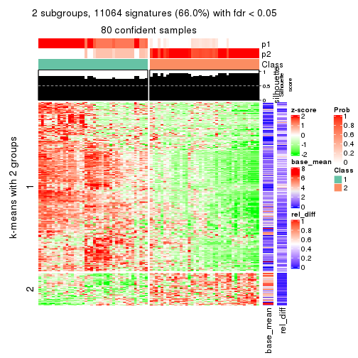
get_signatures(res, k = 3)
get_signatures(res, k = 4)
get_signatures(res, k = 5)
get_signatures(res, k = 6)
Signature heatmaps where rows are not scaled:
get_signatures(res, k = 2, scale_rows = FALSE)
get_signatures(res, k = 3, scale_rows = FALSE)
get_signatures(res, k = 4, scale_rows = FALSE)
get_signatures(res, k = 5, scale_rows = FALSE)
get_signatures(res, k = 6, scale_rows = FALSE)
Compare the overlap of signatures from different k:
compare_signatures(res)
get_signature() returns a data frame invisibly. TO get the list of signatures, the function
call should be assigned to a variable explicitly. In following code, if plot argument is set
to FALSE, no heatmap is plotted while only the differential analysis is performed.
# code only for demonstration
tb = get_signature(res, k = ..., plot = FALSE)
An example of the output of tb is:
#> which_row fdr mean_1 mean_2 scaled_mean_1 scaled_mean_2 km
#> 1 38 0.042760348 8.373488 9.131774 -0.5533452 0.5164555 1
#> 2 40 0.018707592 7.106213 8.469186 -0.6173731 0.5762149 1
#> 3 55 0.019134737 10.221463 11.207825 -0.6159697 0.5749050 1
#> 4 59 0.006059896 5.921854 7.869574 -0.6899429 0.6439467 1
#> 5 60 0.018055526 8.928898 10.211722 -0.6204761 0.5791110 1
#> 6 98 0.009384629 15.714769 14.887706 0.6635654 -0.6193277 2
...
The columns in tb are:
which_row: row indices corresponding to the input matrix.fdr: FDR for the differential test. mean_x: The mean value in group x.scaled_mean_x: The mean value in group x after rows are scaled.km: Row groups if k-means clustering is applied to rows.UMAP plot which shows how samples are separated.
dimension_reduction(res, k = 2, method = "UMAP")
dimension_reduction(res, k = 3, method = "UMAP")
dimension_reduction(res, k = 4, method = "UMAP")

dimension_reduction(res, k = 5, method = "UMAP")
dimension_reduction(res, k = 6, method = "UMAP")
Following heatmap shows how subgroups are split when increasing k:
collect_classes(res)
If matrix rows can be associated to genes, consider to use GO_Enrichment(res,
...) to perform function enrichment for the signature genes.
The object with results only for a single top-value method and a single partition method can be extracted as:
res = res_list["SD", "skmeans"]
# you can also extract it by
# res = res_list["SD:skmeans"]
A summary of res and all the functions that can be applied to it:
res
#> A 'ConsensusPartition' object with k = 2, 3, 4, 5, 6.
#> On a matrix with 16751 rows and 80 columns.
#> Top rows (1000, 2000, 3000, 4000, 5000) are extracted by 'SD' method.
#> Subgroups are detected by 'skmeans' method.
#> Performed in total 1250 partitions by row resampling.
#> Best k for subgroups seems to be 5.
#>
#> Following methods can be applied to this 'ConsensusPartition' object:
#> [1] "cola_report" "collect_classes" "collect_plots"
#> [4] "collect_stats" "colnames" "compare_signatures"
#> [7] "consensus_heatmap" "dimension_reduction" "functional_enrichment"
#> [10] "get_anno_col" "get_anno" "get_classes"
#> [13] "get_consensus" "get_matrix" "get_membership"
#> [16] "get_param" "get_signatures" "get_stats"
#> [19] "is_best_k" "is_stable_k" "membership_heatmap"
#> [22] "ncol" "nrow" "plot_ecdf"
#> [25] "rownames" "select_partition_number" "show"
#> [28] "suggest_best_k" "test_to_known_factors"
collect_plots() function collects all the plots made from res for all k (number of partitions)
into one single page to provide an easy and fast comparison between different k.
collect_plots(res)
The plots are:
k and the heatmap of
predicted classes for each k.k.k.k.All the plots in panels can be made by individual functions and they are plotted later in this section.
select_partition_number() produces several plots showing different
statistics for choosing “optimized” k. There are following statistics:
k;k, the area increased is defined as \(A_k - A_{k-1}\).The detailed explanations of these statistics can be found in the cola vignette.
Generally speaking, lower PAC score, higher mean silhouette score or higher
concordance corresponds to better partition. Rand index and Jaccard index
measure how similar the current partition is compared to partition with k-1.
If they are too similar, we won't accept k is better than k-1.
select_partition_number(res)
The numeric values for all these statistics can be obtained by get_stats().
get_stats(res)
#> k 1-PAC mean_silhouette concordance area_increased Rand Jaccard
#> 2 2 0.525 0.883 0.925 0.5058 0.494 0.494
#> 3 3 0.865 0.912 0.960 0.3009 0.803 0.619
#> 4 4 1.000 0.966 0.984 0.1496 0.889 0.683
#> 5 5 0.935 0.861 0.931 0.0413 0.970 0.877
#> 6 6 0.864 0.741 0.869 0.0346 0.971 0.869
suggest_best_k() suggests the best \(k\) based on these statistics. The rules are as follows:
NA.suggest_best_k(res)
#> [1] 5
#> attr(,"optional")
#> [1] 4
There is also optional best \(k\) = 4 that is worth to check.
Following shows the table of the partitions (You need to click the show/hide
code output link to see it). The membership matrix (columns with name p*)
is inferred by
clue::cl_consensus()
function with the SE method. Basically the value in the membership matrix
represents the probability to belong to a certain group. The finall class
label for an item is determined with the group with highest probability it
belongs to.
In get_classes() function, the entropy is calculated from the membership
matrix and the silhouette score is calculated from the consensus matrix.
cbind(get_classes(res, k = 2), get_membership(res, k = 2))
#> class entropy silhouette p1 p2
#> 71A0AB6A-CFC2-46F6-878C-6052C5B43D22 1 0.000 0.851 1.000 0.000
#> EFC730EC-6385-4167-A65A-F2A3AAEDA2AC 1 0.722 0.897 0.800 0.200
#> 14F2F39A-EA0F-4027-8877-FEEEEFF1F085 2 0.722 0.920 0.200 0.800
#> 98B2A7F8-A7BD-4DA2-8541-950E44D9ACD7 2 0.722 0.920 0.200 0.800
#> 9166F454-2068-46C2-B2EB-FB3BE4126536 1 0.722 0.897 0.800 0.200
#> 83B2A0BB-CE24-4DCA-B03A-D20353304365 2 0.722 0.920 0.200 0.800
#> D3FC3968-B263-4756-BF7F-1941F70B04DA 2 0.000 0.825 0.000 1.000
#> D357AC5C-C2A0-4CC4-B016-4572400AF117 2 0.722 0.920 0.200 0.800
#> 1055E951-5B93-4AD7-BE5C-4DF4F6AECEF3 2 0.000 0.825 0.000 1.000
#> F2995599-3F21-4F33-92BB-7D70A4735938 1 0.722 0.897 0.800 0.200
#> 3EE533BD-5832-4007-8F1F-439166256EB0 2 0.722 0.920 0.200 0.800
#> EEC6DA0C-5C49-4EFE-976A-19F432DDAA58 1 0.722 0.897 0.800 0.200
#> E6E08C1A-4C1B-4572-92DF-DA15BCBADF76 2 0.000 0.825 0.000 1.000
#> BCFCBBAC-EB95-47EB-9EB0-2CB4AE283A75 1 0.000 0.851 1.000 0.000
#> 0782D6D0-668B-4B83-8C91-8A35EA3BFF6D 2 0.722 0.920 0.200 0.800
#> AC78918E-1031-4AE6-B753-B0799171F0F0 1 0.722 0.897 0.800 0.200
#> 6B497CED-34DA-4CF8-8F8D-696105CB3D5F 1 0.000 0.851 1.000 0.000
#> 2328D472-583B-43A9-81A4-A21DDEBB5B18 2 0.722 0.920 0.200 0.800
#> A6930B33-D9B2-4318-807C-4A25EB4CCCDD 2 0.722 0.920 0.200 0.800
#> C8C48AFD-4D8B-491E-993C-3506DC6DD00F 1 0.000 0.851 1.000 0.000
#> 093FB845-7905-4064-8E8E-76E3587D8E7C 1 0.000 0.851 1.000 0.000
#> B216F996-CCD8-4F56-99B1-4EA9769B10B8 1 0.000 0.851 1.000 0.000
#> CB35DED2-5FEA-43E2-AB42-B6B3A7444B66 1 0.000 0.851 1.000 0.000
#> BA016F57-F58F-4A66-B85A-0B0F911EEA65 2 0.000 0.825 0.000 1.000
#> 519DBD5F-66C0-4CEE-905C-799C855D28FB 1 0.722 0.897 0.800 0.200
#> F5B9B89B-6821-43EE-BCFD-623689D03AF9 2 0.722 0.920 0.200 0.800
#> 55A39F92-CC88-4A2F-A7D3-7A59DEBEBB42 2 0.722 0.920 0.200 0.800
#> 3DBBDEDA-F9FC-40DC-804F-45429EA47ED4 2 0.730 0.918 0.204 0.796
#> BB948BE8-7D48-4AEB-A404-C27A79655D7E 1 0.000 0.851 1.000 0.000
#> 9506723F-9193-4D8E-BD97-8A0062AB2F9C 1 0.000 0.851 1.000 0.000
#> D0758A7A-9D0E-4EA4-8EE9-7143B398647D 1 0.000 0.851 1.000 0.000
#> F400FD4D-72D7-4933-B145-64B7EE245FFC 2 0.000 0.825 0.000 1.000
#> 3F87E9ED-3719-48E1-8B69-E352A03E982D 1 0.000 0.851 1.000 0.000
#> D6365FEB-CC12-4337-BF8C-66236A585B5D 2 0.722 0.920 0.200 0.800
#> A4168812-C38E-4F15-9AF6-79F256279E72 1 0.000 0.851 1.000 0.000
#> DB676839-02AA-42A7-962F-89D6AD892008 1 0.722 0.897 0.800 0.200
#> 198D8E89-51FD-41DE-AD11-FB2F2FE49908 2 0.722 0.920 0.200 0.800
#> 2BADCD01-27E8-49EC-B707-4FAE3D3CB489 1 0.722 0.897 0.800 0.200
#> ABBD6EFE-079B-4BE3-95AB-36AF9197D684 2 0.722 0.920 0.200 0.800
#> 39D66B95-61C7-4B76-8E81-1F9F98024B69 1 0.722 0.897 0.800 0.200
#> 7A920210-CF3D-4458-B6D5-D9B2ADACA469 1 0.722 0.897 0.800 0.200
#> 0CE61CDC-3257-4F03-951B-CC2CFCF675AE 2 0.000 0.825 0.000 1.000
#> 7338D61C-77D6-4095-8847-7FD9967B7646 1 0.722 0.897 0.800 0.200
#> 0D36FAD5-BA81-4FED-9E2A-DB016F2EF18C 1 0.722 0.897 0.800 0.200
#> 43CD31CD-5FAE-418A-B235-49E54560590D 2 0.722 0.920 0.200 0.800
#> B6DD72B0-EEFA-41A9-B71D-22DE1343CD32 1 0.000 0.851 1.000 0.000
#> 2B729CD9-71A5-4336-ACBA-922A30AF4949 2 0.000 0.825 0.000 1.000
#> B76DB955-69B7-4D05-8166-2569ED44628C 1 0.722 0.897 0.800 0.200
#> 09CBEE39-7141-4228-AFD3-4714E32A1FB5 2 0.722 0.920 0.200 0.800
#> AC1700D5-72E7-4C7F-A288-869DFC229252 1 0.722 0.897 0.800 0.200
#> 535A5E8E-8478-477F-87FF-ED6742AA5473 2 0.722 0.920 0.200 0.800
#> CFB8573C-9F36-4715-B6F1-6E5B543168A8 1 0.722 0.897 0.800 0.200
#> 47A45491-6023-44BF-ABC2-9A470F7FC1F7 2 0.000 0.825 0.000 1.000
#> 437C7AA7-98C0-48C7-97DA-86FF44D69B87 2 0.000 0.825 0.000 1.000
#> 649ADE7E-6C06-4AB6-8E97-D8C2AAF79A7E 2 0.722 0.920 0.200 0.800
#> DEA60B47-AD6A-4EBB-9402-6F97E9640E4E 2 0.722 0.920 0.200 0.800
#> 76C574FF-26BF-49CD-9BCA-7BDDCBD06D5D 2 0.722 0.920 0.200 0.800
#> 8B6E1F9B-1E90-4333-8E0C-EEDFF25D15C0 2 0.722 0.920 0.200 0.800
#> A2473EE7-72D6-4D32-9DF7-5D4E444A6715 2 0.000 0.825 0.000 1.000
#> E226C45E-5287-4D0F-A34B-CE251FA293CB 1 0.722 0.897 0.800 0.200
#> A2C71C07-AF0C-4016-808C-DFEF458C91C7 1 0.722 0.897 0.800 0.200
#> DA00D60F-4CF1-4003-BAF5-896EE2BEE2D4 2 0.000 0.825 0.000 1.000
#> 1C17B65F-1930-4CF3-99B6-5D3AA9E99188 2 0.000 0.825 0.000 1.000
#> B837D582-A0D3-46BE-8ECA-883F5396AE88 1 0.722 0.897 0.800 0.200
#> EF1A102F-C206-4874-8F27-0BF069A613B8 1 0.000 0.851 1.000 0.000
#> BC761676-F64C-476A-8D9B-BD3E6149B2CD 2 0.722 0.920 0.200 0.800
#> D8351E5C-DC1D-4B4D-83E6-735B2750D944 2 0.722 0.920 0.200 0.800
#> 59F65F61-03D0-4909-99BD-4CCB53A088A5 1 0.000 0.851 1.000 0.000
#> EFFCCF33-60E1-4550-B13C-14C54ADCF479 2 0.738 0.914 0.208 0.792
#> C45EB423-CC14-4BDB-A0B4-447E5DB6DA9C 1 0.722 0.897 0.800 0.200
#> D34B0BC6-9142-48AE-A113-5923192644A0 1 0.000 0.851 1.000 0.000
#> 634672A6-C68E-479F-AAB5-CBAFF7758EA4 1 0.722 0.897 0.800 0.200
#> 06DAE086-D960-4156-9DC8-D126338E2F29 2 0.000 0.825 0.000 1.000
#> 3353F579-77CA-4D0E-B794-37DE467CC065 1 0.722 0.897 0.800 0.200
#> 976507F2-192B-4095-920A-3014889CD617 1 0.722 0.897 0.800 0.200
#> 3FFF89D9-02F5-4D49-8631-099562BF99C7 2 0.722 0.920 0.200 0.800
#> 8BC2213D-99DA-44E0-826F-EBF211EECFBF 1 0.722 0.897 0.800 0.200
#> A7A16BF7-5E60-4E50-BE04-542EFC4DB472 2 0.722 0.920 0.200 0.800
#> E25C9578-9493-466E-A2CD-546DEB076B2D 2 0.722 0.920 0.200 0.800
#> EA35E230-DE50-45AB-A737-D5C430652A90 1 0.000 0.851 1.000 0.000
cbind(get_classes(res, k = 3), get_membership(res, k = 3))
#> class entropy silhouette p1 p2 p3
#> 71A0AB6A-CFC2-46F6-878C-6052C5B43D22 1 0.0000 0.972 1.000 0.000 0.000
#> EFC730EC-6385-4167-A65A-F2A3AAEDA2AC 1 0.5560 0.570 0.700 0.000 0.300
#> 14F2F39A-EA0F-4027-8877-FEEEEFF1F085 2 0.0000 0.938 0.000 1.000 0.000
#> 98B2A7F8-A7BD-4DA2-8541-950E44D9ACD7 2 0.0000 0.938 0.000 1.000 0.000
#> 9166F454-2068-46C2-B2EB-FB3BE4126536 3 0.0000 0.970 0.000 0.000 1.000
#> 83B2A0BB-CE24-4DCA-B03A-D20353304365 2 0.0000 0.938 0.000 1.000 0.000
#> D3FC3968-B263-4756-BF7F-1941F70B04DA 2 0.4555 0.780 0.000 0.800 0.200
#> D357AC5C-C2A0-4CC4-B016-4572400AF117 2 0.0000 0.938 0.000 1.000 0.000
#> 1055E951-5B93-4AD7-BE5C-4DF4F6AECEF3 2 0.4555 0.780 0.000 0.800 0.200
#> F2995599-3F21-4F33-92BB-7D70A4735938 3 0.0000 0.970 0.000 0.000 1.000
#> 3EE533BD-5832-4007-8F1F-439166256EB0 2 0.2537 0.884 0.080 0.920 0.000
#> EEC6DA0C-5C49-4EFE-976A-19F432DDAA58 3 0.0000 0.970 0.000 0.000 1.000
#> E6E08C1A-4C1B-4572-92DF-DA15BCBADF76 2 0.0000 0.938 0.000 1.000 0.000
#> BCFCBBAC-EB95-47EB-9EB0-2CB4AE283A75 1 0.0000 0.972 1.000 0.000 0.000
#> 0782D6D0-668B-4B83-8C91-8A35EA3BFF6D 2 0.0000 0.938 0.000 1.000 0.000
#> AC78918E-1031-4AE6-B753-B0799171F0F0 3 0.0000 0.970 0.000 0.000 1.000
#> 6B497CED-34DA-4CF8-8F8D-696105CB3D5F 1 0.0000 0.972 1.000 0.000 0.000
#> 2328D472-583B-43A9-81A4-A21DDEBB5B18 2 0.0000 0.938 0.000 1.000 0.000
#> A6930B33-D9B2-4318-807C-4A25EB4CCCDD 2 0.0000 0.938 0.000 1.000 0.000
#> C8C48AFD-4D8B-491E-993C-3506DC6DD00F 1 0.0000 0.972 1.000 0.000 0.000
#> 093FB845-7905-4064-8E8E-76E3587D8E7C 1 0.0000 0.972 1.000 0.000 0.000
#> B216F996-CCD8-4F56-99B1-4EA9769B10B8 1 0.0000 0.972 1.000 0.000 0.000
#> CB35DED2-5FEA-43E2-AB42-B6B3A7444B66 1 0.0000 0.972 1.000 0.000 0.000
#> BA016F57-F58F-4A66-B85A-0B0F911EEA65 2 0.5785 0.580 0.000 0.668 0.332
#> 519DBD5F-66C0-4CEE-905C-799C855D28FB 3 0.0000 0.970 0.000 0.000 1.000
#> F5B9B89B-6821-43EE-BCFD-623689D03AF9 2 0.0000 0.938 0.000 1.000 0.000
#> 55A39F92-CC88-4A2F-A7D3-7A59DEBEBB42 1 0.0237 0.968 0.996 0.004 0.000
#> 3DBBDEDA-F9FC-40DC-804F-45429EA47ED4 2 0.1989 0.905 0.004 0.948 0.048
#> BB948BE8-7D48-4AEB-A404-C27A79655D7E 1 0.0000 0.972 1.000 0.000 0.000
#> 9506723F-9193-4D8E-BD97-8A0062AB2F9C 1 0.0000 0.972 1.000 0.000 0.000
#> D0758A7A-9D0E-4EA4-8EE9-7143B398647D 1 0.0000 0.972 1.000 0.000 0.000
#> F400FD4D-72D7-4933-B145-64B7EE245FFC 2 0.0000 0.938 0.000 1.000 0.000
#> 3F87E9ED-3719-48E1-8B69-E352A03E982D 1 0.0000 0.972 1.000 0.000 0.000
#> D6365FEB-CC12-4337-BF8C-66236A585B5D 2 0.0000 0.938 0.000 1.000 0.000
#> A4168812-C38E-4F15-9AF6-79F256279E72 1 0.0000 0.972 1.000 0.000 0.000
#> DB676839-02AA-42A7-962F-89D6AD892008 3 0.0000 0.970 0.000 0.000 1.000
#> 198D8E89-51FD-41DE-AD11-FB2F2FE49908 2 0.0000 0.938 0.000 1.000 0.000
#> 2BADCD01-27E8-49EC-B707-4FAE3D3CB489 3 0.0000 0.970 0.000 0.000 1.000
#> ABBD6EFE-079B-4BE3-95AB-36AF9197D684 2 0.0000 0.938 0.000 1.000 0.000
#> 39D66B95-61C7-4B76-8E81-1F9F98024B69 3 0.0000 0.970 0.000 0.000 1.000
#> 7A920210-CF3D-4458-B6D5-D9B2ADACA469 3 0.0000 0.970 0.000 0.000 1.000
#> 0CE61CDC-3257-4F03-951B-CC2CFCF675AE 2 0.1860 0.909 0.000 0.948 0.052
#> 7338D61C-77D6-4095-8847-7FD9967B7646 3 0.0000 0.970 0.000 0.000 1.000
#> 0D36FAD5-BA81-4FED-9E2A-DB016F2EF18C 3 0.0000 0.970 0.000 0.000 1.000
#> 43CD31CD-5FAE-418A-B235-49E54560590D 2 0.0000 0.938 0.000 1.000 0.000
#> B6DD72B0-EEFA-41A9-B71D-22DE1343CD32 1 0.0000 0.972 1.000 0.000 0.000
#> 2B729CD9-71A5-4336-ACBA-922A30AF4949 2 0.4605 0.775 0.000 0.796 0.204
#> B76DB955-69B7-4D05-8166-2569ED44628C 3 0.0000 0.970 0.000 0.000 1.000
#> 09CBEE39-7141-4228-AFD3-4714E32A1FB5 2 0.0000 0.938 0.000 1.000 0.000
#> AC1700D5-72E7-4C7F-A288-869DFC229252 3 0.4121 0.755 0.168 0.000 0.832
#> 535A5E8E-8478-477F-87FF-ED6742AA5473 2 0.0000 0.938 0.000 1.000 0.000
#> CFB8573C-9F36-4715-B6F1-6E5B543168A8 3 0.0000 0.970 0.000 0.000 1.000
#> 47A45491-6023-44BF-ABC2-9A470F7FC1F7 2 0.5760 0.587 0.000 0.672 0.328
#> 437C7AA7-98C0-48C7-97DA-86FF44D69B87 2 0.1860 0.909 0.000 0.948 0.052
#> 649ADE7E-6C06-4AB6-8E97-D8C2AAF79A7E 2 0.0000 0.938 0.000 1.000 0.000
#> DEA60B47-AD6A-4EBB-9402-6F97E9640E4E 2 0.0000 0.938 0.000 1.000 0.000
#> 76C574FF-26BF-49CD-9BCA-7BDDCBD06D5D 2 0.0000 0.938 0.000 1.000 0.000
#> 8B6E1F9B-1E90-4333-8E0C-EEDFF25D15C0 1 0.0000 0.972 1.000 0.000 0.000
#> A2473EE7-72D6-4D32-9DF7-5D4E444A6715 2 0.5760 0.587 0.000 0.672 0.328
#> E226C45E-5287-4D0F-A34B-CE251FA293CB 3 0.0000 0.970 0.000 0.000 1.000
#> A2C71C07-AF0C-4016-808C-DFEF458C91C7 3 0.0000 0.970 0.000 0.000 1.000
#> DA00D60F-4CF1-4003-BAF5-896EE2BEE2D4 3 0.6008 0.308 0.000 0.372 0.628
#> 1C17B65F-1930-4CF3-99B6-5D3AA9E99188 2 0.4555 0.780 0.000 0.800 0.200
#> B837D582-A0D3-46BE-8ECA-883F5396AE88 1 0.5291 0.643 0.732 0.000 0.268
#> EF1A102F-C206-4874-8F27-0BF069A613B8 1 0.0000 0.972 1.000 0.000 0.000
#> BC761676-F64C-476A-8D9B-BD3E6149B2CD 2 0.1964 0.899 0.056 0.944 0.000
#> D8351E5C-DC1D-4B4D-83E6-735B2750D944 2 0.0000 0.938 0.000 1.000 0.000
#> 59F65F61-03D0-4909-99BD-4CCB53A088A5 1 0.0000 0.972 1.000 0.000 0.000
#> EFFCCF33-60E1-4550-B13C-14C54ADCF479 1 0.0000 0.972 1.000 0.000 0.000
#> C45EB423-CC14-4BDB-A0B4-447E5DB6DA9C 3 0.0000 0.970 0.000 0.000 1.000
#> D34B0BC6-9142-48AE-A113-5923192644A0 1 0.0000 0.972 1.000 0.000 0.000
#> 634672A6-C68E-479F-AAB5-CBAFF7758EA4 3 0.0000 0.970 0.000 0.000 1.000
#> 06DAE086-D960-4156-9DC8-D126338E2F29 2 0.0000 0.938 0.000 1.000 0.000
#> 3353F579-77CA-4D0E-B794-37DE467CC065 3 0.0000 0.970 0.000 0.000 1.000
#> 976507F2-192B-4095-920A-3014889CD617 3 0.0000 0.970 0.000 0.000 1.000
#> 3FFF89D9-02F5-4D49-8631-099562BF99C7 2 0.0000 0.938 0.000 1.000 0.000
#> 8BC2213D-99DA-44E0-826F-EBF211EECFBF 3 0.0000 0.970 0.000 0.000 1.000
#> A7A16BF7-5E60-4E50-BE04-542EFC4DB472 2 0.0000 0.938 0.000 1.000 0.000
#> E25C9578-9493-466E-A2CD-546DEB076B2D 2 0.0000 0.938 0.000 1.000 0.000
#> EA35E230-DE50-45AB-A737-D5C430652A90 1 0.0000 0.972 1.000 0.000 0.000
cbind(get_classes(res, k = 4), get_membership(res, k = 4))
#> class entropy silhouette p1 p2 p3 p4
#> 71A0AB6A-CFC2-46F6-878C-6052C5B43D22 1 0.0000 0.949 1.000 0.000 0.000 0.000
#> EFC730EC-6385-4167-A65A-F2A3AAEDA2AC 1 0.5538 0.519 0.644 0.000 0.036 0.320
#> 14F2F39A-EA0F-4027-8877-FEEEEFF1F085 2 0.0000 1.000 0.000 1.000 0.000 0.000
#> 98B2A7F8-A7BD-4DA2-8541-950E44D9ACD7 2 0.0000 1.000 0.000 1.000 0.000 0.000
#> 9166F454-2068-46C2-B2EB-FB3BE4126536 3 0.0000 0.997 0.000 0.000 1.000 0.000
#> 83B2A0BB-CE24-4DCA-B03A-D20353304365 2 0.0000 1.000 0.000 1.000 0.000 0.000
#> D3FC3968-B263-4756-BF7F-1941F70B04DA 4 0.0000 0.986 0.000 0.000 0.000 1.000
#> D357AC5C-C2A0-4CC4-B016-4572400AF117 2 0.0000 1.000 0.000 1.000 0.000 0.000
#> 1055E951-5B93-4AD7-BE5C-4DF4F6AECEF3 4 0.0000 0.986 0.000 0.000 0.000 1.000
#> F2995599-3F21-4F33-92BB-7D70A4735938 3 0.0000 0.997 0.000 0.000 1.000 0.000
#> 3EE533BD-5832-4007-8F1F-439166256EB0 2 0.0000 1.000 0.000 1.000 0.000 0.000
#> EEC6DA0C-5C49-4EFE-976A-19F432DDAA58 3 0.0000 0.997 0.000 0.000 1.000 0.000
#> E6E08C1A-4C1B-4572-92DF-DA15BCBADF76 4 0.1022 0.976 0.000 0.032 0.000 0.968
#> BCFCBBAC-EB95-47EB-9EB0-2CB4AE283A75 1 0.0000 0.949 1.000 0.000 0.000 0.000
#> 0782D6D0-668B-4B83-8C91-8A35EA3BFF6D 2 0.0000 1.000 0.000 1.000 0.000 0.000
#> AC78918E-1031-4AE6-B753-B0799171F0F0 3 0.0000 0.997 0.000 0.000 1.000 0.000
#> 6B497CED-34DA-4CF8-8F8D-696105CB3D5F 1 0.0000 0.949 1.000 0.000 0.000 0.000
#> 2328D472-583B-43A9-81A4-A21DDEBB5B18 2 0.0000 1.000 0.000 1.000 0.000 0.000
#> A6930B33-D9B2-4318-807C-4A25EB4CCCDD 2 0.0000 1.000 0.000 1.000 0.000 0.000
#> C8C48AFD-4D8B-491E-993C-3506DC6DD00F 1 0.0000 0.949 1.000 0.000 0.000 0.000
#> 093FB845-7905-4064-8E8E-76E3587D8E7C 1 0.0000 0.949 1.000 0.000 0.000 0.000
#> B216F996-CCD8-4F56-99B1-4EA9769B10B8 1 0.0000 0.949 1.000 0.000 0.000 0.000
#> CB35DED2-5FEA-43E2-AB42-B6B3A7444B66 1 0.0000 0.949 1.000 0.000 0.000 0.000
#> BA016F57-F58F-4A66-B85A-0B0F911EEA65 4 0.0000 0.986 0.000 0.000 0.000 1.000
#> 519DBD5F-66C0-4CEE-905C-799C855D28FB 3 0.0000 0.997 0.000 0.000 1.000 0.000
#> F5B9B89B-6821-43EE-BCFD-623689D03AF9 2 0.0000 1.000 0.000 1.000 0.000 0.000
#> 55A39F92-CC88-4A2F-A7D3-7A59DEBEBB42 1 0.3837 0.708 0.776 0.224 0.000 0.000
#> 3DBBDEDA-F9FC-40DC-804F-45429EA47ED4 2 0.0000 1.000 0.000 1.000 0.000 0.000
#> BB948BE8-7D48-4AEB-A404-C27A79655D7E 1 0.0000 0.949 1.000 0.000 0.000 0.000
#> 9506723F-9193-4D8E-BD97-8A0062AB2F9C 1 0.0000 0.949 1.000 0.000 0.000 0.000
#> D0758A7A-9D0E-4EA4-8EE9-7143B398647D 1 0.0000 0.949 1.000 0.000 0.000 0.000
#> F400FD4D-72D7-4933-B145-64B7EE245FFC 4 0.1022 0.976 0.000 0.032 0.000 0.968
#> 3F87E9ED-3719-48E1-8B69-E352A03E982D 1 0.0000 0.949 1.000 0.000 0.000 0.000
#> D6365FEB-CC12-4337-BF8C-66236A585B5D 2 0.0000 1.000 0.000 1.000 0.000 0.000
#> A4168812-C38E-4F15-9AF6-79F256279E72 1 0.0000 0.949 1.000 0.000 0.000 0.000
#> DB676839-02AA-42A7-962F-89D6AD892008 3 0.0000 0.997 0.000 0.000 1.000 0.000
#> 198D8E89-51FD-41DE-AD11-FB2F2FE49908 4 0.1022 0.976 0.000 0.032 0.000 0.968
#> 2BADCD01-27E8-49EC-B707-4FAE3D3CB489 3 0.0000 0.997 0.000 0.000 1.000 0.000
#> ABBD6EFE-079B-4BE3-95AB-36AF9197D684 2 0.0000 1.000 0.000 1.000 0.000 0.000
#> 39D66B95-61C7-4B76-8E81-1F9F98024B69 3 0.0000 0.997 0.000 0.000 1.000 0.000
#> 7A920210-CF3D-4458-B6D5-D9B2ADACA469 3 0.0000 0.997 0.000 0.000 1.000 0.000
#> 0CE61CDC-3257-4F03-951B-CC2CFCF675AE 4 0.0000 0.986 0.000 0.000 0.000 1.000
#> 7338D61C-77D6-4095-8847-7FD9967B7646 3 0.1022 0.970 0.000 0.000 0.968 0.032
#> 0D36FAD5-BA81-4FED-9E2A-DB016F2EF18C 3 0.0000 0.997 0.000 0.000 1.000 0.000
#> 43CD31CD-5FAE-418A-B235-49E54560590D 2 0.0000 1.000 0.000 1.000 0.000 0.000
#> B6DD72B0-EEFA-41A9-B71D-22DE1343CD32 1 0.0000 0.949 1.000 0.000 0.000 0.000
#> 2B729CD9-71A5-4336-ACBA-922A30AF4949 4 0.0000 0.986 0.000 0.000 0.000 1.000
#> B76DB955-69B7-4D05-8166-2569ED44628C 3 0.0000 0.997 0.000 0.000 1.000 0.000
#> 09CBEE39-7141-4228-AFD3-4714E32A1FB5 2 0.0000 1.000 0.000 1.000 0.000 0.000
#> AC1700D5-72E7-4C7F-A288-869DFC229252 3 0.0188 0.993 0.004 0.000 0.996 0.000
#> 535A5E8E-8478-477F-87FF-ED6742AA5473 2 0.0000 1.000 0.000 1.000 0.000 0.000
#> CFB8573C-9F36-4715-B6F1-6E5B543168A8 3 0.1022 0.970 0.000 0.000 0.968 0.032
#> 47A45491-6023-44BF-ABC2-9A470F7FC1F7 4 0.0000 0.986 0.000 0.000 0.000 1.000
#> 437C7AA7-98C0-48C7-97DA-86FF44D69B87 4 0.0000 0.986 0.000 0.000 0.000 1.000
#> 649ADE7E-6C06-4AB6-8E97-D8C2AAF79A7E 2 0.0000 1.000 0.000 1.000 0.000 0.000
#> DEA60B47-AD6A-4EBB-9402-6F97E9640E4E 4 0.1022 0.976 0.000 0.032 0.000 0.968
#> 76C574FF-26BF-49CD-9BCA-7BDDCBD06D5D 2 0.0000 1.000 0.000 1.000 0.000 0.000
#> 8B6E1F9B-1E90-4333-8E0C-EEDFF25D15C0 1 0.0000 0.949 1.000 0.000 0.000 0.000
#> A2473EE7-72D6-4D32-9DF7-5D4E444A6715 4 0.0000 0.986 0.000 0.000 0.000 1.000
#> E226C45E-5287-4D0F-A34B-CE251FA293CB 3 0.0000 0.997 0.000 0.000 1.000 0.000
#> A2C71C07-AF0C-4016-808C-DFEF458C91C7 3 0.0000 0.997 0.000 0.000 1.000 0.000
#> DA00D60F-4CF1-4003-BAF5-896EE2BEE2D4 4 0.0000 0.986 0.000 0.000 0.000 1.000
#> 1C17B65F-1930-4CF3-99B6-5D3AA9E99188 4 0.0000 0.986 0.000 0.000 0.000 1.000
#> B837D582-A0D3-46BE-8ECA-883F5396AE88 1 0.4250 0.616 0.724 0.000 0.276 0.000
#> EF1A102F-C206-4874-8F27-0BF069A613B8 1 0.3444 0.773 0.816 0.000 0.000 0.184
#> BC761676-F64C-476A-8D9B-BD3E6149B2CD 2 0.0000 1.000 0.000 1.000 0.000 0.000
#> D8351E5C-DC1D-4B4D-83E6-735B2750D944 2 0.0000 1.000 0.000 1.000 0.000 0.000
#> 59F65F61-03D0-4909-99BD-4CCB53A088A5 1 0.0000 0.949 1.000 0.000 0.000 0.000
#> EFFCCF33-60E1-4550-B13C-14C54ADCF479 1 0.0000 0.949 1.000 0.000 0.000 0.000
#> C45EB423-CC14-4BDB-A0B4-447E5DB6DA9C 3 0.0000 0.997 0.000 0.000 1.000 0.000
#> D34B0BC6-9142-48AE-A113-5923192644A0 1 0.0000 0.949 1.000 0.000 0.000 0.000
#> 634672A6-C68E-479F-AAB5-CBAFF7758EA4 3 0.0000 0.997 0.000 0.000 1.000 0.000
#> 06DAE086-D960-4156-9DC8-D126338E2F29 4 0.1022 0.976 0.000 0.032 0.000 0.968
#> 3353F579-77CA-4D0E-B794-37DE467CC065 3 0.0000 0.997 0.000 0.000 1.000 0.000
#> 976507F2-192B-4095-920A-3014889CD617 3 0.0000 0.997 0.000 0.000 1.000 0.000
#> 3FFF89D9-02F5-4D49-8631-099562BF99C7 4 0.1022 0.976 0.000 0.032 0.000 0.968
#> 8BC2213D-99DA-44E0-826F-EBF211EECFBF 3 0.0000 0.997 0.000 0.000 1.000 0.000
#> A7A16BF7-5E60-4E50-BE04-542EFC4DB472 2 0.0000 1.000 0.000 1.000 0.000 0.000
#> E25C9578-9493-466E-A2CD-546DEB076B2D 2 0.0000 1.000 0.000 1.000 0.000 0.000
#> EA35E230-DE50-45AB-A737-D5C430652A90 1 0.0000 0.949 1.000 0.000 0.000 0.000
cbind(get_classes(res, k = 5), get_membership(res, k = 5))
#> class entropy silhouette p1 p2 p3 p4 p5
#> 71A0AB6A-CFC2-46F6-878C-6052C5B43D22 1 0.0162 0.9135 0.996 0.000 0.000 0.000 0.004
#> EFC730EC-6385-4167-A65A-F2A3AAEDA2AC 5 0.2616 0.6772 0.036 0.000 0.000 0.076 0.888
#> 14F2F39A-EA0F-4027-8877-FEEEEFF1F085 2 0.0671 0.9641 0.000 0.980 0.000 0.016 0.004
#> 98B2A7F8-A7BD-4DA2-8541-950E44D9ACD7 2 0.0510 0.9642 0.000 0.984 0.000 0.016 0.000
#> 9166F454-2068-46C2-B2EB-FB3BE4126536 3 0.0000 0.9720 0.000 0.000 1.000 0.000 0.000
#> 83B2A0BB-CE24-4DCA-B03A-D20353304365 2 0.0671 0.9641 0.000 0.980 0.000 0.016 0.004
#> D3FC3968-B263-4756-BF7F-1941F70B04DA 4 0.0000 0.8934 0.000 0.000 0.000 1.000 0.000
#> D357AC5C-C2A0-4CC4-B016-4572400AF117 2 0.0290 0.9612 0.000 0.992 0.000 0.000 0.008
#> 1055E951-5B93-4AD7-BE5C-4DF4F6AECEF3 4 0.0000 0.8934 0.000 0.000 0.000 1.000 0.000
#> F2995599-3F21-4F33-92BB-7D70A4735938 3 0.0162 0.9711 0.000 0.000 0.996 0.000 0.004
#> 3EE533BD-5832-4007-8F1F-439166256EB0 2 0.0960 0.9609 0.004 0.972 0.000 0.016 0.008
#> EEC6DA0C-5C49-4EFE-976A-19F432DDAA58 3 0.0000 0.9720 0.000 0.000 1.000 0.000 0.000
#> E6E08C1A-4C1B-4572-92DF-DA15BCBADF76 4 0.1638 0.8412 0.000 0.004 0.000 0.932 0.064
#> BCFCBBAC-EB95-47EB-9EB0-2CB4AE283A75 1 0.3730 0.6258 0.712 0.000 0.000 0.000 0.288
#> 0782D6D0-668B-4B83-8C91-8A35EA3BFF6D 2 0.0671 0.9641 0.000 0.980 0.000 0.016 0.004
#> AC78918E-1031-4AE6-B753-B0799171F0F0 3 0.0000 0.9720 0.000 0.000 1.000 0.000 0.000
#> 6B497CED-34DA-4CF8-8F8D-696105CB3D5F 1 0.0162 0.9135 0.996 0.000 0.000 0.000 0.004
#> 2328D472-583B-43A9-81A4-A21DDEBB5B18 2 0.1908 0.9293 0.000 0.908 0.000 0.000 0.092
#> A6930B33-D9B2-4318-807C-4A25EB4CCCDD 2 0.0671 0.9641 0.000 0.980 0.000 0.016 0.004
#> C8C48AFD-4D8B-491E-993C-3506DC6DD00F 1 0.0162 0.9135 0.996 0.000 0.000 0.000 0.004
#> 093FB845-7905-4064-8E8E-76E3587D8E7C 1 0.1270 0.8869 0.948 0.000 0.000 0.000 0.052
#> B216F996-CCD8-4F56-99B1-4EA9769B10B8 1 0.0162 0.9135 0.996 0.000 0.000 0.000 0.004
#> CB35DED2-5FEA-43E2-AB42-B6B3A7444B66 1 0.0290 0.9113 0.992 0.000 0.000 0.000 0.008
#> BA016F57-F58F-4A66-B85A-0B0F911EEA65 4 0.4114 0.1832 0.000 0.000 0.000 0.624 0.376
#> 519DBD5F-66C0-4CEE-905C-799C855D28FB 3 0.0000 0.9720 0.000 0.000 1.000 0.000 0.000
#> F5B9B89B-6821-43EE-BCFD-623689D03AF9 2 0.0671 0.9641 0.000 0.980 0.000 0.016 0.004
#> 55A39F92-CC88-4A2F-A7D3-7A59DEBEBB42 1 0.6410 0.2310 0.496 0.200 0.000 0.000 0.304
#> 3DBBDEDA-F9FC-40DC-804F-45429EA47ED4 2 0.2392 0.9183 0.004 0.888 0.004 0.000 0.104
#> BB948BE8-7D48-4AEB-A404-C27A79655D7E 1 0.0162 0.9135 0.996 0.000 0.000 0.000 0.004
#> 9506723F-9193-4D8E-BD97-8A0062AB2F9C 1 0.0162 0.9135 0.996 0.000 0.000 0.000 0.004
#> D0758A7A-9D0E-4EA4-8EE9-7143B398647D 1 0.0162 0.9135 0.996 0.000 0.000 0.000 0.004
#> F400FD4D-72D7-4933-B145-64B7EE245FFC 4 0.0162 0.8929 0.000 0.004 0.000 0.996 0.000
#> 3F87E9ED-3719-48E1-8B69-E352A03E982D 1 0.0404 0.9100 0.988 0.000 0.000 0.000 0.012
#> D6365FEB-CC12-4337-BF8C-66236A585B5D 2 0.1908 0.9293 0.000 0.908 0.000 0.000 0.092
#> A4168812-C38E-4F15-9AF6-79F256279E72 1 0.0000 0.9129 1.000 0.000 0.000 0.000 0.000
#> DB676839-02AA-42A7-962F-89D6AD892008 3 0.0000 0.9720 0.000 0.000 1.000 0.000 0.000
#> 198D8E89-51FD-41DE-AD11-FB2F2FE49908 4 0.0671 0.8843 0.000 0.004 0.000 0.980 0.016
#> 2BADCD01-27E8-49EC-B707-4FAE3D3CB489 3 0.0290 0.9685 0.000 0.000 0.992 0.000 0.008
#> ABBD6EFE-079B-4BE3-95AB-36AF9197D684 2 0.2046 0.9395 0.000 0.916 0.000 0.016 0.068
#> 39D66B95-61C7-4B76-8E81-1F9F98024B69 3 0.0162 0.9711 0.000 0.000 0.996 0.000 0.004
#> 7A920210-CF3D-4458-B6D5-D9B2ADACA469 3 0.0000 0.9720 0.000 0.000 1.000 0.000 0.000
#> 0CE61CDC-3257-4F03-951B-CC2CFCF675AE 4 0.0000 0.8934 0.000 0.000 0.000 1.000 0.000
#> 7338D61C-77D6-4095-8847-7FD9967B7646 3 0.3203 0.7636 0.000 0.000 0.820 0.012 0.168
#> 0D36FAD5-BA81-4FED-9E2A-DB016F2EF18C 3 0.0162 0.9711 0.000 0.000 0.996 0.000 0.004
#> 43CD31CD-5FAE-418A-B235-49E54560590D 2 0.0404 0.9619 0.000 0.988 0.000 0.000 0.012
#> B6DD72B0-EEFA-41A9-B71D-22DE1343CD32 1 0.0162 0.9135 0.996 0.000 0.000 0.000 0.004
#> 2B729CD9-71A5-4336-ACBA-922A30AF4949 4 0.0955 0.8790 0.000 0.000 0.004 0.968 0.028
#> B76DB955-69B7-4D05-8166-2569ED44628C 3 0.0000 0.9720 0.000 0.000 1.000 0.000 0.000
#> 09CBEE39-7141-4228-AFD3-4714E32A1FB5 2 0.0404 0.9605 0.000 0.988 0.000 0.000 0.012
#> AC1700D5-72E7-4C7F-A288-869DFC229252 3 0.4404 0.6030 0.032 0.000 0.704 0.000 0.264
#> 535A5E8E-8478-477F-87FF-ED6742AA5473 2 0.0404 0.9619 0.000 0.988 0.000 0.000 0.012
#> CFB8573C-9F36-4715-B6F1-6E5B543168A8 5 0.3650 0.5995 0.000 0.000 0.176 0.028 0.796
#> 47A45491-6023-44BF-ABC2-9A470F7FC1F7 4 0.3039 0.6750 0.000 0.000 0.000 0.808 0.192
#> 437C7AA7-98C0-48C7-97DA-86FF44D69B87 4 0.0000 0.8934 0.000 0.000 0.000 1.000 0.000
#> 649ADE7E-6C06-4AB6-8E97-D8C2AAF79A7E 2 0.2074 0.9235 0.000 0.896 0.000 0.000 0.104
#> DEA60B47-AD6A-4EBB-9402-6F97E9640E4E 4 0.0162 0.8929 0.000 0.004 0.000 0.996 0.000
#> 76C574FF-26BF-49CD-9BCA-7BDDCBD06D5D 2 0.0671 0.9641 0.000 0.980 0.000 0.016 0.004
#> 8B6E1F9B-1E90-4333-8E0C-EEDFF25D15C0 1 0.0794 0.9035 0.972 0.000 0.000 0.000 0.028
#> A2473EE7-72D6-4D32-9DF7-5D4E444A6715 5 0.4283 0.3096 0.000 0.000 0.000 0.456 0.544
#> E226C45E-5287-4D0F-A34B-CE251FA293CB 3 0.0000 0.9720 0.000 0.000 1.000 0.000 0.000
#> A2C71C07-AF0C-4016-808C-DFEF458C91C7 3 0.0162 0.9711 0.000 0.000 0.996 0.000 0.004
#> DA00D60F-4CF1-4003-BAF5-896EE2BEE2D4 5 0.4273 0.3304 0.000 0.000 0.000 0.448 0.552
#> 1C17B65F-1930-4CF3-99B6-5D3AA9E99188 4 0.3336 0.6102 0.000 0.000 0.000 0.772 0.228
#> B837D582-A0D3-46BE-8ECA-883F5396AE88 1 0.6762 -0.0383 0.376 0.000 0.356 0.000 0.268
#> EF1A102F-C206-4874-8F27-0BF069A613B8 5 0.2726 0.6722 0.052 0.000 0.000 0.064 0.884
#> BC761676-F64C-476A-8D9B-BD3E6149B2CD 2 0.0880 0.9551 0.000 0.968 0.000 0.000 0.032
#> D8351E5C-DC1D-4B4D-83E6-735B2750D944 2 0.1965 0.9278 0.000 0.904 0.000 0.000 0.096
#> 59F65F61-03D0-4909-99BD-4CCB53A088A5 1 0.0290 0.9105 0.992 0.000 0.000 0.000 0.008
#> EFFCCF33-60E1-4550-B13C-14C54ADCF479 1 0.1310 0.8890 0.956 0.020 0.000 0.000 0.024
#> C45EB423-CC14-4BDB-A0B4-447E5DB6DA9C 3 0.0000 0.9720 0.000 0.000 1.000 0.000 0.000
#> D34B0BC6-9142-48AE-A113-5923192644A0 1 0.0404 0.9108 0.988 0.000 0.000 0.000 0.012
#> 634672A6-C68E-479F-AAB5-CBAFF7758EA4 3 0.0162 0.9711 0.000 0.000 0.996 0.000 0.004
#> 06DAE086-D960-4156-9DC8-D126338E2F29 4 0.1571 0.8454 0.000 0.004 0.000 0.936 0.060
#> 3353F579-77CA-4D0E-B794-37DE467CC065 3 0.0000 0.9720 0.000 0.000 1.000 0.000 0.000
#> 976507F2-192B-4095-920A-3014889CD617 3 0.0000 0.9720 0.000 0.000 1.000 0.000 0.000
#> 3FFF89D9-02F5-4D49-8631-099562BF99C7 4 0.0162 0.8929 0.000 0.004 0.000 0.996 0.000
#> 8BC2213D-99DA-44E0-826F-EBF211EECFBF 3 0.0162 0.9711 0.000 0.000 0.996 0.000 0.004
#> A7A16BF7-5E60-4E50-BE04-542EFC4DB472 2 0.0671 0.9641 0.000 0.980 0.000 0.016 0.004
#> E25C9578-9493-466E-A2CD-546DEB076B2D 2 0.0671 0.9641 0.000 0.980 0.000 0.016 0.004
#> EA35E230-DE50-45AB-A737-D5C430652A90 1 0.0290 0.9112 0.992 0.000 0.000 0.000 0.008
cbind(get_classes(res, k = 6), get_membership(res, k = 6))
#> class entropy silhouette p1 p2 p3 p4 p5 p6
#> 71A0AB6A-CFC2-46F6-878C-6052C5B43D22 1 0.0000 0.861199 1.000 0.000 0.000 0.000 0.000 0.000
#> EFC730EC-6385-4167-A65A-F2A3AAEDA2AC 6 0.2045 0.668434 0.016 0.000 0.000 0.016 0.052 0.916
#> 14F2F39A-EA0F-4027-8877-FEEEEFF1F085 2 0.0000 0.808433 0.000 1.000 0.000 0.000 0.000 0.000
#> 98B2A7F8-A7BD-4DA2-8541-950E44D9ACD7 2 0.1204 0.787672 0.000 0.944 0.000 0.000 0.056 0.000
#> 9166F454-2068-46C2-B2EB-FB3BE4126536 3 0.0146 0.941239 0.000 0.000 0.996 0.000 0.004 0.000
#> 83B2A0BB-CE24-4DCA-B03A-D20353304365 2 0.1387 0.780358 0.000 0.932 0.000 0.000 0.068 0.000
#> D3FC3968-B263-4756-BF7F-1941F70B04DA 4 0.0146 0.886706 0.000 0.000 0.000 0.996 0.004 0.000
#> D357AC5C-C2A0-4CC4-B016-4572400AF117 2 0.2092 0.743251 0.000 0.876 0.000 0.000 0.124 0.000
#> 1055E951-5B93-4AD7-BE5C-4DF4F6AECEF3 4 0.0260 0.886396 0.000 0.000 0.000 0.992 0.008 0.000
#> F2995599-3F21-4F33-92BB-7D70A4735938 3 0.1320 0.932110 0.000 0.000 0.948 0.000 0.036 0.016
#> 3EE533BD-5832-4007-8F1F-439166256EB0 2 0.2902 0.481925 0.000 0.800 0.000 0.000 0.196 0.004
#> EEC6DA0C-5C49-4EFE-976A-19F432DDAA58 3 0.0146 0.941239 0.000 0.000 0.996 0.000 0.004 0.000
#> E6E08C1A-4C1B-4572-92DF-DA15BCBADF76 4 0.1584 0.844722 0.000 0.008 0.000 0.928 0.064 0.000
#> BCFCBBAC-EB95-47EB-9EB0-2CB4AE283A75 1 0.4569 0.527962 0.636 0.000 0.000 0.000 0.060 0.304
#> 0782D6D0-668B-4B83-8C91-8A35EA3BFF6D 2 0.0000 0.808433 0.000 1.000 0.000 0.000 0.000 0.000
#> AC78918E-1031-4AE6-B753-B0799171F0F0 3 0.0146 0.941496 0.000 0.000 0.996 0.000 0.004 0.000
#> 6B497CED-34DA-4CF8-8F8D-696105CB3D5F 1 0.0260 0.860592 0.992 0.000 0.000 0.000 0.008 0.000
#> 2328D472-583B-43A9-81A4-A21DDEBB5B18 5 0.3867 0.368048 0.000 0.488 0.000 0.000 0.512 0.000
#> A6930B33-D9B2-4318-807C-4A25EB4CCCDD 2 0.0000 0.808433 0.000 1.000 0.000 0.000 0.000 0.000
#> C8C48AFD-4D8B-491E-993C-3506DC6DD00F 1 0.1010 0.855384 0.960 0.000 0.000 0.000 0.036 0.004
#> 093FB845-7905-4064-8E8E-76E3587D8E7C 1 0.4393 0.739741 0.704 0.004 0.000 0.000 0.224 0.068
#> B216F996-CCD8-4F56-99B1-4EA9769B10B8 1 0.0260 0.860592 0.992 0.000 0.000 0.000 0.008 0.000
#> CB35DED2-5FEA-43E2-AB42-B6B3A7444B66 1 0.3364 0.785500 0.780 0.000 0.000 0.000 0.196 0.024
#> BA016F57-F58F-4A66-B85A-0B0F911EEA65 4 0.3975 -0.062407 0.000 0.000 0.000 0.544 0.004 0.452
#> 519DBD5F-66C0-4CEE-905C-799C855D28FB 3 0.0000 0.941690 0.000 0.000 1.000 0.000 0.000 0.000
#> F5B9B89B-6821-43EE-BCFD-623689D03AF9 2 0.0000 0.808433 0.000 1.000 0.000 0.000 0.000 0.000
#> 55A39F92-CC88-4A2F-A7D3-7A59DEBEBB42 5 0.7718 -0.048965 0.232 0.264 0.000 0.000 0.276 0.228
#> 3DBBDEDA-F9FC-40DC-804F-45429EA47ED4 5 0.3714 0.534678 0.004 0.340 0.000 0.000 0.656 0.000
#> BB948BE8-7D48-4AEB-A404-C27A79655D7E 1 0.0632 0.858089 0.976 0.000 0.000 0.000 0.024 0.000
#> 9506723F-9193-4D8E-BD97-8A0062AB2F9C 1 0.0000 0.861199 1.000 0.000 0.000 0.000 0.000 0.000
#> D0758A7A-9D0E-4EA4-8EE9-7143B398647D 1 0.0000 0.861199 1.000 0.000 0.000 0.000 0.000 0.000
#> F400FD4D-72D7-4933-B145-64B7EE245FFC 4 0.0260 0.886965 0.000 0.008 0.000 0.992 0.000 0.000
#> 3F87E9ED-3719-48E1-8B69-E352A03E982D 1 0.2988 0.811046 0.824 0.000 0.000 0.000 0.152 0.024
#> D6365FEB-CC12-4337-BF8C-66236A585B5D 2 0.3717 0.000101 0.000 0.616 0.000 0.000 0.384 0.000
#> A4168812-C38E-4F15-9AF6-79F256279E72 1 0.1245 0.855985 0.952 0.000 0.000 0.000 0.032 0.016
#> DB676839-02AA-42A7-962F-89D6AD892008 3 0.0146 0.941239 0.000 0.000 0.996 0.000 0.004 0.000
#> 198D8E89-51FD-41DE-AD11-FB2F2FE49908 4 0.0622 0.884808 0.000 0.012 0.000 0.980 0.008 0.000
#> 2BADCD01-27E8-49EC-B707-4FAE3D3CB489 3 0.1528 0.925630 0.000 0.000 0.936 0.000 0.048 0.016
#> ABBD6EFE-079B-4BE3-95AB-36AF9197D684 2 0.2948 0.584541 0.000 0.804 0.000 0.008 0.188 0.000
#> 39D66B95-61C7-4B76-8E81-1F9F98024B69 3 0.1320 0.932110 0.000 0.000 0.948 0.000 0.036 0.016
#> 7A920210-CF3D-4458-B6D5-D9B2ADACA469 3 0.0000 0.941690 0.000 0.000 1.000 0.000 0.000 0.000
#> 0CE61CDC-3257-4F03-951B-CC2CFCF675AE 4 0.0000 0.886577 0.000 0.000 0.000 1.000 0.000 0.000
#> 7338D61C-77D6-4095-8847-7FD9967B7646 3 0.3813 0.683509 0.000 0.000 0.768 0.028 0.016 0.188
#> 0D36FAD5-BA81-4FED-9E2A-DB016F2EF18C 3 0.1320 0.932110 0.000 0.000 0.948 0.000 0.036 0.016
#> 43CD31CD-5FAE-418A-B235-49E54560590D 2 0.2048 0.735327 0.000 0.880 0.000 0.000 0.120 0.000
#> B6DD72B0-EEFA-41A9-B71D-22DE1343CD32 1 0.0260 0.860592 0.992 0.000 0.000 0.000 0.008 0.000
#> 2B729CD9-71A5-4336-ACBA-922A30AF4949 4 0.1036 0.877284 0.000 0.000 0.008 0.964 0.024 0.004
#> B76DB955-69B7-4D05-8166-2569ED44628C 3 0.0146 0.941239 0.000 0.000 0.996 0.000 0.004 0.000
#> 09CBEE39-7141-4228-AFD3-4714E32A1FB5 2 0.2854 0.634081 0.000 0.792 0.000 0.000 0.208 0.000
#> AC1700D5-72E7-4C7F-A288-869DFC229252 3 0.6584 0.330887 0.152 0.000 0.524 0.000 0.088 0.236
#> 535A5E8E-8478-477F-87FF-ED6742AA5473 2 0.2092 0.730986 0.000 0.876 0.000 0.000 0.124 0.000
#> CFB8573C-9F36-4715-B6F1-6E5B543168A8 6 0.2847 0.624556 0.000 0.000 0.120 0.016 0.012 0.852
#> 47A45491-6023-44BF-ABC2-9A470F7FC1F7 4 0.3023 0.652060 0.000 0.000 0.000 0.784 0.004 0.212
#> 437C7AA7-98C0-48C7-97DA-86FF44D69B87 4 0.0000 0.886577 0.000 0.000 0.000 1.000 0.000 0.000
#> 649ADE7E-6C06-4AB6-8E97-D8C2AAF79A7E 5 0.3634 0.533086 0.000 0.356 0.000 0.000 0.644 0.000
#> DEA60B47-AD6A-4EBB-9402-6F97E9640E4E 4 0.0363 0.885994 0.000 0.012 0.000 0.988 0.000 0.000
#> 76C574FF-26BF-49CD-9BCA-7BDDCBD06D5D 2 0.0000 0.808433 0.000 1.000 0.000 0.000 0.000 0.000
#> 8B6E1F9B-1E90-4333-8E0C-EEDFF25D15C0 1 0.4432 0.733436 0.700 0.028 0.000 0.000 0.244 0.028
#> A2473EE7-72D6-4D32-9DF7-5D4E444A6715 6 0.3881 0.394356 0.000 0.000 0.000 0.396 0.004 0.600
#> E226C45E-5287-4D0F-A34B-CE251FA293CB 3 0.0146 0.941239 0.000 0.000 0.996 0.000 0.004 0.000
#> A2C71C07-AF0C-4016-808C-DFEF458C91C7 3 0.1320 0.932110 0.000 0.000 0.948 0.000 0.036 0.016
#> DA00D60F-4CF1-4003-BAF5-896EE2BEE2D4 6 0.3872 0.403139 0.000 0.000 0.000 0.392 0.004 0.604
#> 1C17B65F-1930-4CF3-99B6-5D3AA9E99188 4 0.3189 0.608734 0.000 0.000 0.000 0.760 0.004 0.236
#> B837D582-A0D3-46BE-8ECA-883F5396AE88 1 0.7103 0.063975 0.404 0.000 0.284 0.000 0.088 0.224
#> EF1A102F-C206-4874-8F27-0BF069A613B8 6 0.2039 0.665797 0.020 0.000 0.000 0.012 0.052 0.916
#> BC761676-F64C-476A-8D9B-BD3E6149B2CD 2 0.3647 0.233002 0.000 0.640 0.000 0.000 0.360 0.000
#> D8351E5C-DC1D-4B4D-83E6-735B2750D944 5 0.4083 0.427441 0.000 0.460 0.000 0.008 0.532 0.000
#> 59F65F61-03D0-4909-99BD-4CCB53A088A5 1 0.0858 0.858386 0.968 0.000 0.000 0.000 0.028 0.004
#> EFFCCF33-60E1-4550-B13C-14C54ADCF479 1 0.5079 0.677988 0.652 0.076 0.000 0.000 0.248 0.024
#> C45EB423-CC14-4BDB-A0B4-447E5DB6DA9C 3 0.0146 0.941239 0.000 0.000 0.996 0.000 0.004 0.000
#> D34B0BC6-9142-48AE-A113-5923192644A0 1 0.0458 0.859905 0.984 0.000 0.000 0.000 0.016 0.000
#> 634672A6-C68E-479F-AAB5-CBAFF7758EA4 3 0.1320 0.932110 0.000 0.000 0.948 0.000 0.036 0.016
#> 06DAE086-D960-4156-9DC8-D126338E2F29 4 0.1196 0.868012 0.000 0.008 0.000 0.952 0.040 0.000
#> 3353F579-77CA-4D0E-B794-37DE467CC065 3 0.0260 0.941115 0.000 0.000 0.992 0.000 0.008 0.000
#> 976507F2-192B-4095-920A-3014889CD617 3 0.0000 0.941690 0.000 0.000 1.000 0.000 0.000 0.000
#> 3FFF89D9-02F5-4D49-8631-099562BF99C7 4 0.0632 0.878801 0.000 0.024 0.000 0.976 0.000 0.000
#> 8BC2213D-99DA-44E0-826F-EBF211EECFBF 3 0.1320 0.932110 0.000 0.000 0.948 0.000 0.036 0.016
#> A7A16BF7-5E60-4E50-BE04-542EFC4DB472 2 0.0000 0.808433 0.000 1.000 0.000 0.000 0.000 0.000
#> E25C9578-9493-466E-A2CD-546DEB076B2D 2 0.0000 0.808433 0.000 1.000 0.000 0.000 0.000 0.000
#> EA35E230-DE50-45AB-A737-D5C430652A90 1 0.2748 0.822430 0.848 0.000 0.000 0.000 0.128 0.024
Heatmaps for the consensus matrix. It visualizes the probability of two samples to be in a same group.
consensus_heatmap(res, k = 2)
consensus_heatmap(res, k = 3)
consensus_heatmap(res, k = 4)
consensus_heatmap(res, k = 5)
consensus_heatmap(res, k = 6)
Heatmaps for the membership of samples in all partitions to see how consistent they are:
membership_heatmap(res, k = 2)
membership_heatmap(res, k = 3)
membership_heatmap(res, k = 4)
membership_heatmap(res, k = 5)
membership_heatmap(res, k = 6)
As soon as we have had the classes for columns, we can look for signatures which are significantly different between classes which can be candidate marks for certain classes. Following are the heatmaps for signatures.
Signature heatmaps where rows are scaled:
get_signatures(res, k = 2)
get_signatures(res, k = 3)
get_signatures(res, k = 4)
get_signatures(res, k = 5)
get_signatures(res, k = 6)
Signature heatmaps where rows are not scaled:
get_signatures(res, k = 2, scale_rows = FALSE)
get_signatures(res, k = 3, scale_rows = FALSE)
get_signatures(res, k = 4, scale_rows = FALSE)
get_signatures(res, k = 5, scale_rows = FALSE)
get_signatures(res, k = 6, scale_rows = FALSE)
Compare the overlap of signatures from different k:
compare_signatures(res)
get_signature() returns a data frame invisibly. TO get the list of signatures, the function
call should be assigned to a variable explicitly. In following code, if plot argument is set
to FALSE, no heatmap is plotted while only the differential analysis is performed.
# code only for demonstration
tb = get_signature(res, k = ..., plot = FALSE)
An example of the output of tb is:
#> which_row fdr mean_1 mean_2 scaled_mean_1 scaled_mean_2 km
#> 1 38 0.042760348 8.373488 9.131774 -0.5533452 0.5164555 1
#> 2 40 0.018707592 7.106213 8.469186 -0.6173731 0.5762149 1
#> 3 55 0.019134737 10.221463 11.207825 -0.6159697 0.5749050 1
#> 4 59 0.006059896 5.921854 7.869574 -0.6899429 0.6439467 1
#> 5 60 0.018055526 8.928898 10.211722 -0.6204761 0.5791110 1
#> 6 98 0.009384629 15.714769 14.887706 0.6635654 -0.6193277 2
...
The columns in tb are:
which_row: row indices corresponding to the input matrix.fdr: FDR for the differential test. mean_x: The mean value in group x.scaled_mean_x: The mean value in group x after rows are scaled.km: Row groups if k-means clustering is applied to rows.UMAP plot which shows how samples are separated.
dimension_reduction(res, k = 2, method = "UMAP")

dimension_reduction(res, k = 3, method = "UMAP")
dimension_reduction(res, k = 4, method = "UMAP")
dimension_reduction(res, k = 5, method = "UMAP")
dimension_reduction(res, k = 6, method = "UMAP")
Following heatmap shows how subgroups are split when increasing k:
collect_classes(res)
If matrix rows can be associated to genes, consider to use GO_Enrichment(res,
...) to perform function enrichment for the signature genes.
The object with results only for a single top-value method and a single partition method can be extracted as:
res = res_list["SD", "pam"]
# you can also extract it by
# res = res_list["SD:pam"]
A summary of res and all the functions that can be applied to it:
res
#> A 'ConsensusPartition' object with k = 2, 3, 4, 5, 6.
#> On a matrix with 16751 rows and 80 columns.
#> Top rows (1000, 2000, 3000, 4000, 5000) are extracted by 'SD' method.
#> Subgroups are detected by 'pam' method.
#> Performed in total 1250 partitions by row resampling.
#> Best k for subgroups seems to be 4.
#>
#> Following methods can be applied to this 'ConsensusPartition' object:
#> [1] "cola_report" "collect_classes" "collect_plots"
#> [4] "collect_stats" "colnames" "compare_signatures"
#> [7] "consensus_heatmap" "dimension_reduction" "functional_enrichment"
#> [10] "get_anno_col" "get_anno" "get_classes"
#> [13] "get_consensus" "get_matrix" "get_membership"
#> [16] "get_param" "get_signatures" "get_stats"
#> [19] "is_best_k" "is_stable_k" "membership_heatmap"
#> [22] "ncol" "nrow" "plot_ecdf"
#> [25] "rownames" "select_partition_number" "show"
#> [28] "suggest_best_k" "test_to_known_factors"
collect_plots() function collects all the plots made from res for all k (number of partitions)
into one single page to provide an easy and fast comparison between different k.
collect_plots(res)
The plots are:
k and the heatmap of
predicted classes for each k.k.k.k.All the plots in panels can be made by individual functions and they are plotted later in this section.
select_partition_number() produces several plots showing different
statistics for choosing “optimized” k. There are following statistics:
k;k, the area increased is defined as \(A_k - A_{k-1}\).The detailed explanations of these statistics can be found in the cola vignette.
Generally speaking, lower PAC score, higher mean silhouette score or higher
concordance corresponds to better partition. Rand index and Jaccard index
measure how similar the current partition is compared to partition with k-1.
If they are too similar, we won't accept k is better than k-1.
select_partition_number(res)
The numeric values for all these statistics can be obtained by get_stats().
get_stats(res)
#> k 1-PAC mean_silhouette concordance area_increased Rand Jaccard
#> 2 2 0.274 0.571 0.732 0.4456 0.547 0.547
#> 3 3 0.889 0.918 0.965 0.4518 0.716 0.521
#> 4 4 0.908 0.908 0.960 0.1632 0.878 0.665
#> 5 5 0.806 0.671 0.851 0.0541 0.954 0.828
#> 6 6 0.833 0.803 0.824 0.0395 0.921 0.683
suggest_best_k() suggests the best \(k\) based on these statistics. The rules are as follows:
NA.suggest_best_k(res)
#> [1] 4
Following shows the table of the partitions (You need to click the show/hide
code output link to see it). The membership matrix (columns with name p*)
is inferred by
clue::cl_consensus()
function with the SE method. Basically the value in the membership matrix
represents the probability to belong to a certain group. The finall class
label for an item is determined with the group with highest probability it
belongs to.
In get_classes() function, the entropy is calculated from the membership
matrix and the silhouette score is calculated from the consensus matrix.
cbind(get_classes(res, k = 2), get_membership(res, k = 2))
#> class entropy silhouette p1 p2
#> 71A0AB6A-CFC2-46F6-878C-6052C5B43D22 1 0.9963 -0.2996 0.536 0.464
#> EFC730EC-6385-4167-A65A-F2A3AAEDA2AC 2 0.0000 0.7295 0.000 1.000
#> 14F2F39A-EA0F-4027-8877-FEEEEFF1F085 2 0.0376 0.7302 0.004 0.996
#> 98B2A7F8-A7BD-4DA2-8541-950E44D9ACD7 2 0.0376 0.7302 0.004 0.996
#> 9166F454-2068-46C2-B2EB-FB3BE4126536 1 0.8327 0.7453 0.736 0.264
#> 83B2A0BB-CE24-4DCA-B03A-D20353304365 2 0.5519 0.6890 0.128 0.872
#> D3FC3968-B263-4756-BF7F-1941F70B04DA 2 0.3431 0.6855 0.064 0.936
#> D357AC5C-C2A0-4CC4-B016-4572400AF117 2 0.8327 0.6116 0.264 0.736
#> 1055E951-5B93-4AD7-BE5C-4DF4F6AECEF3 2 0.3431 0.6855 0.064 0.936
#> F2995599-3F21-4F33-92BB-7D70A4735938 1 0.8327 0.7453 0.736 0.264
#> 3EE533BD-5832-4007-8F1F-439166256EB0 2 0.8327 0.6116 0.264 0.736
#> EEC6DA0C-5C49-4EFE-976A-19F432DDAA58 1 0.8327 0.7453 0.736 0.264
#> E6E08C1A-4C1B-4572-92DF-DA15BCBADF76 2 0.3431 0.6855 0.064 0.936
#> BCFCBBAC-EB95-47EB-9EB0-2CB4AE283A75 2 0.9998 0.3686 0.492 0.508
#> 0782D6D0-668B-4B83-8C91-8A35EA3BFF6D 2 0.0376 0.7302 0.004 0.996
#> AC78918E-1031-4AE6-B753-B0799171F0F0 1 0.8327 0.7453 0.736 0.264
#> 6B497CED-34DA-4CF8-8F8D-696105CB3D5F 1 0.9922 -0.2596 0.552 0.448
#> 2328D472-583B-43A9-81A4-A21DDEBB5B18 2 0.7950 0.6272 0.240 0.760
#> A6930B33-D9B2-4318-807C-4A25EB4CCCDD 2 0.0376 0.7302 0.004 0.996
#> C8C48AFD-4D8B-491E-993C-3506DC6DD00F 1 0.0376 0.5350 0.996 0.004
#> 093FB845-7905-4064-8E8E-76E3587D8E7C 2 0.9998 0.3686 0.492 0.508
#> B216F996-CCD8-4F56-99B1-4EA9769B10B8 2 0.9998 0.3686 0.492 0.508
#> CB35DED2-5FEA-43E2-AB42-B6B3A7444B66 2 0.9998 0.3686 0.492 0.508
#> BA016F57-F58F-4A66-B85A-0B0F911EEA65 2 0.3431 0.6855 0.064 0.936
#> 519DBD5F-66C0-4CEE-905C-799C855D28FB 1 0.8327 0.7453 0.736 0.264
#> F5B9B89B-6821-43EE-BCFD-623689D03AF9 2 0.0376 0.7302 0.004 0.996
#> 55A39F92-CC88-4A2F-A7D3-7A59DEBEBB42 2 0.8327 0.6116 0.264 0.736
#> 3DBBDEDA-F9FC-40DC-804F-45429EA47ED4 1 0.9988 -0.3708 0.520 0.480
#> BB948BE8-7D48-4AEB-A404-C27A79655D7E 1 0.7453 0.3352 0.788 0.212
#> 9506723F-9193-4D8E-BD97-8A0062AB2F9C 1 0.9460 -0.0213 0.636 0.364
#> D0758A7A-9D0E-4EA4-8EE9-7143B398647D 2 0.9998 0.3686 0.492 0.508
#> F400FD4D-72D7-4933-B145-64B7EE245FFC 2 0.0938 0.7237 0.012 0.988
#> 3F87E9ED-3719-48E1-8B69-E352A03E982D 2 0.9993 0.3812 0.484 0.516
#> D6365FEB-CC12-4337-BF8C-66236A585B5D 2 0.0000 0.7295 0.000 1.000
#> A4168812-C38E-4F15-9AF6-79F256279E72 2 0.9998 0.3686 0.492 0.508
#> DB676839-02AA-42A7-962F-89D6AD892008 1 0.8327 0.7453 0.736 0.264
#> 198D8E89-51FD-41DE-AD11-FB2F2FE49908 2 0.0376 0.7280 0.004 0.996
#> 2BADCD01-27E8-49EC-B707-4FAE3D3CB489 1 0.7745 0.7229 0.772 0.228
#> ABBD6EFE-079B-4BE3-95AB-36AF9197D684 2 0.0376 0.7280 0.004 0.996
#> 39D66B95-61C7-4B76-8E81-1F9F98024B69 1 0.8327 0.7453 0.736 0.264
#> 7A920210-CF3D-4458-B6D5-D9B2ADACA469 1 0.8327 0.7453 0.736 0.264
#> 0CE61CDC-3257-4F03-951B-CC2CFCF675AE 2 0.3431 0.6855 0.064 0.936
#> 7338D61C-77D6-4095-8847-7FD9967B7646 2 0.8608 0.3485 0.284 0.716
#> 0D36FAD5-BA81-4FED-9E2A-DB016F2EF18C 1 0.8327 0.7453 0.736 0.264
#> 43CD31CD-5FAE-418A-B235-49E54560590D 2 0.5737 0.6857 0.136 0.864
#> B6DD72B0-EEFA-41A9-B71D-22DE1343CD32 2 0.9998 0.3686 0.492 0.508
#> 2B729CD9-71A5-4336-ACBA-922A30AF4949 2 0.3431 0.6855 0.064 0.936
#> B76DB955-69B7-4D05-8166-2569ED44628C 1 0.8327 0.7453 0.736 0.264
#> 09CBEE39-7141-4228-AFD3-4714E32A1FB5 2 0.8327 0.6116 0.264 0.736
#> AC1700D5-72E7-4C7F-A288-869DFC229252 1 0.6531 0.5861 0.832 0.168
#> 535A5E8E-8478-477F-87FF-ED6742AA5473 2 0.0376 0.7302 0.004 0.996
#> CFB8573C-9F36-4715-B6F1-6E5B543168A8 2 0.3431 0.6855 0.064 0.936
#> 47A45491-6023-44BF-ABC2-9A470F7FC1F7 2 0.3274 0.6891 0.060 0.940
#> 437C7AA7-98C0-48C7-97DA-86FF44D69B87 2 0.3431 0.6855 0.064 0.936
#> 649ADE7E-6C06-4AB6-8E97-D8C2AAF79A7E 1 0.9977 -0.3437 0.528 0.472
#> DEA60B47-AD6A-4EBB-9402-6F97E9640E4E 2 0.0000 0.7295 0.000 1.000
#> 76C574FF-26BF-49CD-9BCA-7BDDCBD06D5D 2 0.0376 0.7302 0.004 0.996
#> 8B6E1F9B-1E90-4333-8E0C-EEDFF25D15C0 2 0.9993 0.3812 0.484 0.516
#> A2473EE7-72D6-4D32-9DF7-5D4E444A6715 2 0.0672 0.7259 0.008 0.992
#> E226C45E-5287-4D0F-A34B-CE251FA293CB 1 0.8327 0.7453 0.736 0.264
#> A2C71C07-AF0C-4016-808C-DFEF458C91C7 1 0.8327 0.7453 0.736 0.264
#> DA00D60F-4CF1-4003-BAF5-896EE2BEE2D4 2 0.0672 0.7259 0.008 0.992
#> 1C17B65F-1930-4CF3-99B6-5D3AA9E99188 2 0.3114 0.6924 0.056 0.944
#> B837D582-A0D3-46BE-8ECA-883F5396AE88 2 0.7950 0.4290 0.240 0.760
#> EF1A102F-C206-4874-8F27-0BF069A613B8 2 0.0376 0.7302 0.004 0.996
#> BC761676-F64C-476A-8D9B-BD3E6149B2CD 2 0.8327 0.6116 0.264 0.736
#> D8351E5C-DC1D-4B4D-83E6-735B2750D944 2 0.0000 0.7295 0.000 1.000
#> 59F65F61-03D0-4909-99BD-4CCB53A088A5 2 0.9998 0.3686 0.492 0.508
#> EFFCCF33-60E1-4550-B13C-14C54ADCF479 2 0.9993 0.3812 0.484 0.516
#> C45EB423-CC14-4BDB-A0B4-447E5DB6DA9C 1 0.8327 0.7453 0.736 0.264
#> D34B0BC6-9142-48AE-A113-5923192644A0 2 0.9998 0.3686 0.492 0.508
#> 634672A6-C68E-479F-AAB5-CBAFF7758EA4 1 0.8327 0.7453 0.736 0.264
#> 06DAE086-D960-4156-9DC8-D126338E2F29 2 0.3431 0.6855 0.064 0.936
#> 3353F579-77CA-4D0E-B794-37DE467CC065 1 0.9608 0.5965 0.616 0.384
#> 976507F2-192B-4095-920A-3014889CD617 1 0.8327 0.7453 0.736 0.264
#> 3FFF89D9-02F5-4D49-8631-099562BF99C7 2 0.0000 0.7295 0.000 1.000
#> 8BC2213D-99DA-44E0-826F-EBF211EECFBF 1 0.8327 0.7453 0.736 0.264
#> A7A16BF7-5E60-4E50-BE04-542EFC4DB472 2 0.8327 0.6116 0.264 0.736
#> E25C9578-9493-466E-A2CD-546DEB076B2D 2 0.5737 0.6857 0.136 0.864
#> EA35E230-DE50-45AB-A737-D5C430652A90 1 0.9286 0.0401 0.656 0.344
cbind(get_classes(res, k = 3), get_membership(res, k = 3))
#> class entropy silhouette p1 p2 p3
#> 71A0AB6A-CFC2-46F6-878C-6052C5B43D22 1 0.0000 0.958 1.000 0.000 0.000
#> EFC730EC-6385-4167-A65A-F2A3AAEDA2AC 2 0.0000 0.950 0.000 1.000 0.000
#> 14F2F39A-EA0F-4027-8877-FEEEEFF1F085 2 0.0237 0.948 0.004 0.996 0.000
#> 98B2A7F8-A7BD-4DA2-8541-950E44D9ACD7 2 0.0000 0.950 0.000 1.000 0.000
#> 9166F454-2068-46C2-B2EB-FB3BE4126536 3 0.0000 0.987 0.000 0.000 1.000
#> 83B2A0BB-CE24-4DCA-B03A-D20353304365 2 0.0000 0.950 0.000 1.000 0.000
#> D3FC3968-B263-4756-BF7F-1941F70B04DA 2 0.0000 0.950 0.000 1.000 0.000
#> D357AC5C-C2A0-4CC4-B016-4572400AF117 2 0.5254 0.674 0.264 0.736 0.000
#> 1055E951-5B93-4AD7-BE5C-4DF4F6AECEF3 2 0.0000 0.950 0.000 1.000 0.000
#> F2995599-3F21-4F33-92BB-7D70A4735938 3 0.0000 0.987 0.000 0.000 1.000
#> 3EE533BD-5832-4007-8F1F-439166256EB0 1 0.4346 0.747 0.816 0.184 0.000
#> EEC6DA0C-5C49-4EFE-976A-19F432DDAA58 3 0.0000 0.987 0.000 0.000 1.000
#> E6E08C1A-4C1B-4572-92DF-DA15BCBADF76 2 0.0000 0.950 0.000 1.000 0.000
#> BCFCBBAC-EB95-47EB-9EB0-2CB4AE283A75 1 0.0000 0.958 1.000 0.000 0.000
#> 0782D6D0-668B-4B83-8C91-8A35EA3BFF6D 2 0.0000 0.950 0.000 1.000 0.000
#> AC78918E-1031-4AE6-B753-B0799171F0F0 3 0.0000 0.987 0.000 0.000 1.000
#> 6B497CED-34DA-4CF8-8F8D-696105CB3D5F 1 0.0000 0.958 1.000 0.000 0.000
#> 2328D472-583B-43A9-81A4-A21DDEBB5B18 2 0.4504 0.773 0.196 0.804 0.000
#> A6930B33-D9B2-4318-807C-4A25EB4CCCDD 2 0.0237 0.948 0.004 0.996 0.000
#> C8C48AFD-4D8B-491E-993C-3506DC6DD00F 1 0.0000 0.958 1.000 0.000 0.000
#> 093FB845-7905-4064-8E8E-76E3587D8E7C 1 0.0000 0.958 1.000 0.000 0.000
#> B216F996-CCD8-4F56-99B1-4EA9769B10B8 1 0.0000 0.958 1.000 0.000 0.000
#> CB35DED2-5FEA-43E2-AB42-B6B3A7444B66 1 0.0000 0.958 1.000 0.000 0.000
#> BA016F57-F58F-4A66-B85A-0B0F911EEA65 2 0.0000 0.950 0.000 1.000 0.000
#> 519DBD5F-66C0-4CEE-905C-799C855D28FB 3 0.0000 0.987 0.000 0.000 1.000
#> F5B9B89B-6821-43EE-BCFD-623689D03AF9 2 0.0237 0.948 0.004 0.996 0.000
#> 55A39F92-CC88-4A2F-A7D3-7A59DEBEBB42 1 0.0000 0.958 1.000 0.000 0.000
#> 3DBBDEDA-F9FC-40DC-804F-45429EA47ED4 1 0.0237 0.954 0.996 0.004 0.000
#> BB948BE8-7D48-4AEB-A404-C27A79655D7E 1 0.0000 0.958 1.000 0.000 0.000
#> 9506723F-9193-4D8E-BD97-8A0062AB2F9C 1 0.0000 0.958 1.000 0.000 0.000
#> D0758A7A-9D0E-4EA4-8EE9-7143B398647D 1 0.0000 0.958 1.000 0.000 0.000
#> F400FD4D-72D7-4933-B145-64B7EE245FFC 2 0.0000 0.950 0.000 1.000 0.000
#> 3F87E9ED-3719-48E1-8B69-E352A03E982D 1 0.0000 0.958 1.000 0.000 0.000
#> D6365FEB-CC12-4337-BF8C-66236A585B5D 2 0.0000 0.950 0.000 1.000 0.000
#> A4168812-C38E-4F15-9AF6-79F256279E72 1 0.0000 0.958 1.000 0.000 0.000
#> DB676839-02AA-42A7-962F-89D6AD892008 3 0.0000 0.987 0.000 0.000 1.000
#> 198D8E89-51FD-41DE-AD11-FB2F2FE49908 2 0.0000 0.950 0.000 1.000 0.000
#> 2BADCD01-27E8-49EC-B707-4FAE3D3CB489 3 0.0000 0.987 0.000 0.000 1.000
#> ABBD6EFE-079B-4BE3-95AB-36AF9197D684 2 0.0000 0.950 0.000 1.000 0.000
#> 39D66B95-61C7-4B76-8E81-1F9F98024B69 3 0.0000 0.987 0.000 0.000 1.000
#> 7A920210-CF3D-4458-B6D5-D9B2ADACA469 3 0.0000 0.987 0.000 0.000 1.000
#> 0CE61CDC-3257-4F03-951B-CC2CFCF675AE 2 0.0000 0.950 0.000 1.000 0.000
#> 7338D61C-77D6-4095-8847-7FD9967B7646 2 0.0000 0.950 0.000 1.000 0.000
#> 0D36FAD5-BA81-4FED-9E2A-DB016F2EF18C 3 0.0000 0.987 0.000 0.000 1.000
#> 43CD31CD-5FAE-418A-B235-49E54560590D 2 0.4555 0.769 0.200 0.800 0.000
#> B6DD72B0-EEFA-41A9-B71D-22DE1343CD32 1 0.0000 0.958 1.000 0.000 0.000
#> 2B729CD9-71A5-4336-ACBA-922A30AF4949 2 0.0000 0.950 0.000 1.000 0.000
#> B76DB955-69B7-4D05-8166-2569ED44628C 3 0.0000 0.987 0.000 0.000 1.000
#> 09CBEE39-7141-4228-AFD3-4714E32A1FB5 2 0.6267 0.231 0.452 0.548 0.000
#> AC1700D5-72E7-4C7F-A288-869DFC229252 1 0.0000 0.958 1.000 0.000 0.000
#> 535A5E8E-8478-477F-87FF-ED6742AA5473 2 0.2261 0.903 0.068 0.932 0.000
#> CFB8573C-9F36-4715-B6F1-6E5B543168A8 2 0.0000 0.950 0.000 1.000 0.000
#> 47A45491-6023-44BF-ABC2-9A470F7FC1F7 2 0.0000 0.950 0.000 1.000 0.000
#> 437C7AA7-98C0-48C7-97DA-86FF44D69B87 2 0.0000 0.950 0.000 1.000 0.000
#> 649ADE7E-6C06-4AB6-8E97-D8C2AAF79A7E 1 0.6299 0.112 0.524 0.476 0.000
#> DEA60B47-AD6A-4EBB-9402-6F97E9640E4E 2 0.0000 0.950 0.000 1.000 0.000
#> 76C574FF-26BF-49CD-9BCA-7BDDCBD06D5D 2 0.0237 0.948 0.004 0.996 0.000
#> 8B6E1F9B-1E90-4333-8E0C-EEDFF25D15C0 1 0.0000 0.958 1.000 0.000 0.000
#> A2473EE7-72D6-4D32-9DF7-5D4E444A6715 2 0.0000 0.950 0.000 1.000 0.000
#> E226C45E-5287-4D0F-A34B-CE251FA293CB 3 0.0000 0.987 0.000 0.000 1.000
#> A2C71C07-AF0C-4016-808C-DFEF458C91C7 3 0.0000 0.987 0.000 0.000 1.000
#> DA00D60F-4CF1-4003-BAF5-896EE2BEE2D4 2 0.0000 0.950 0.000 1.000 0.000
#> 1C17B65F-1930-4CF3-99B6-5D3AA9E99188 2 0.0000 0.950 0.000 1.000 0.000
#> B837D582-A0D3-46BE-8ECA-883F5396AE88 1 0.6696 0.678 0.736 0.076 0.188
#> EF1A102F-C206-4874-8F27-0BF069A613B8 2 0.0000 0.950 0.000 1.000 0.000
#> BC761676-F64C-476A-8D9B-BD3E6149B2CD 1 0.0000 0.958 1.000 0.000 0.000
#> D8351E5C-DC1D-4B4D-83E6-735B2750D944 2 0.2448 0.895 0.076 0.924 0.000
#> 59F65F61-03D0-4909-99BD-4CCB53A088A5 1 0.0000 0.958 1.000 0.000 0.000
#> EFFCCF33-60E1-4550-B13C-14C54ADCF479 1 0.0000 0.958 1.000 0.000 0.000
#> C45EB423-CC14-4BDB-A0B4-447E5DB6DA9C 3 0.0000 0.987 0.000 0.000 1.000
#> D34B0BC6-9142-48AE-A113-5923192644A0 1 0.0000 0.958 1.000 0.000 0.000
#> 634672A6-C68E-479F-AAB5-CBAFF7758EA4 3 0.0000 0.987 0.000 0.000 1.000
#> 06DAE086-D960-4156-9DC8-D126338E2F29 2 0.0000 0.950 0.000 1.000 0.000
#> 3353F579-77CA-4D0E-B794-37DE467CC065 3 0.4605 0.753 0.000 0.204 0.796
#> 976507F2-192B-4095-920A-3014889CD617 3 0.0000 0.987 0.000 0.000 1.000
#> 3FFF89D9-02F5-4D49-8631-099562BF99C7 2 0.0000 0.950 0.000 1.000 0.000
#> 8BC2213D-99DA-44E0-826F-EBF211EECFBF 3 0.0000 0.987 0.000 0.000 1.000
#> A7A16BF7-5E60-4E50-BE04-542EFC4DB472 2 0.4555 0.769 0.200 0.800 0.000
#> E25C9578-9493-466E-A2CD-546DEB076B2D 2 0.4555 0.769 0.200 0.800 0.000
#> EA35E230-DE50-45AB-A737-D5C430652A90 1 0.0000 0.958 1.000 0.000 0.000
cbind(get_classes(res, k = 4), get_membership(res, k = 4))
#> class entropy silhouette p1 p2 p3 p4
#> 71A0AB6A-CFC2-46F6-878C-6052C5B43D22 1 0.0000 0.933 1.000 0.000 0.000 0.000
#> EFC730EC-6385-4167-A65A-F2A3AAEDA2AC 4 0.0000 0.954 0.000 0.000 0.000 1.000
#> 14F2F39A-EA0F-4027-8877-FEEEEFF1F085 2 0.0000 0.960 0.000 1.000 0.000 0.000
#> 98B2A7F8-A7BD-4DA2-8541-950E44D9ACD7 2 0.0188 0.957 0.000 0.996 0.000 0.004
#> 9166F454-2068-46C2-B2EB-FB3BE4126536 3 0.0000 0.984 0.000 0.000 1.000 0.000
#> 83B2A0BB-CE24-4DCA-B03A-D20353304365 2 0.4382 0.535 0.000 0.704 0.000 0.296
#> D3FC3968-B263-4756-BF7F-1941F70B04DA 4 0.0000 0.954 0.000 0.000 0.000 1.000
#> D357AC5C-C2A0-4CC4-B016-4572400AF117 2 0.0188 0.957 0.004 0.996 0.000 0.000
#> 1055E951-5B93-4AD7-BE5C-4DF4F6AECEF3 4 0.0000 0.954 0.000 0.000 0.000 1.000
#> F2995599-3F21-4F33-92BB-7D70A4735938 3 0.0000 0.984 0.000 0.000 1.000 0.000
#> 3EE533BD-5832-4007-8F1F-439166256EB0 2 0.0000 0.960 0.000 1.000 0.000 0.000
#> EEC6DA0C-5C49-4EFE-976A-19F432DDAA58 3 0.0000 0.984 0.000 0.000 1.000 0.000
#> E6E08C1A-4C1B-4572-92DF-DA15BCBADF76 4 0.0000 0.954 0.000 0.000 0.000 1.000
#> BCFCBBAC-EB95-47EB-9EB0-2CB4AE283A75 1 0.0000 0.933 1.000 0.000 0.000 0.000
#> 0782D6D0-668B-4B83-8C91-8A35EA3BFF6D 2 0.0000 0.960 0.000 1.000 0.000 0.000
#> AC78918E-1031-4AE6-B753-B0799171F0F0 3 0.0000 0.984 0.000 0.000 1.000 0.000
#> 6B497CED-34DA-4CF8-8F8D-696105CB3D5F 1 0.0000 0.933 1.000 0.000 0.000 0.000
#> 2328D472-583B-43A9-81A4-A21DDEBB5B18 4 0.4054 0.752 0.016 0.188 0.000 0.796
#> A6930B33-D9B2-4318-807C-4A25EB4CCCDD 2 0.0000 0.960 0.000 1.000 0.000 0.000
#> C8C48AFD-4D8B-491E-993C-3506DC6DD00F 1 0.0000 0.933 1.000 0.000 0.000 0.000
#> 093FB845-7905-4064-8E8E-76E3587D8E7C 1 0.0188 0.932 0.996 0.004 0.000 0.000
#> B216F996-CCD8-4F56-99B1-4EA9769B10B8 1 0.0000 0.933 1.000 0.000 0.000 0.000
#> CB35DED2-5FEA-43E2-AB42-B6B3A7444B66 1 0.0188 0.932 0.996 0.004 0.000 0.000
#> BA016F57-F58F-4A66-B85A-0B0F911EEA65 4 0.0000 0.954 0.000 0.000 0.000 1.000
#> 519DBD5F-66C0-4CEE-905C-799C855D28FB 3 0.0000 0.984 0.000 0.000 1.000 0.000
#> F5B9B89B-6821-43EE-BCFD-623689D03AF9 2 0.0000 0.960 0.000 1.000 0.000 0.000
#> 55A39F92-CC88-4A2F-A7D3-7A59DEBEBB42 1 0.0188 0.932 0.996 0.004 0.000 0.000
#> 3DBBDEDA-F9FC-40DC-804F-45429EA47ED4 1 0.3444 0.745 0.816 0.184 0.000 0.000
#> BB948BE8-7D48-4AEB-A404-C27A79655D7E 1 0.0000 0.933 1.000 0.000 0.000 0.000
#> 9506723F-9193-4D8E-BD97-8A0062AB2F9C 1 0.0000 0.933 1.000 0.000 0.000 0.000
#> D0758A7A-9D0E-4EA4-8EE9-7143B398647D 1 0.0000 0.933 1.000 0.000 0.000 0.000
#> F400FD4D-72D7-4933-B145-64B7EE245FFC 4 0.0000 0.954 0.000 0.000 0.000 1.000
#> 3F87E9ED-3719-48E1-8B69-E352A03E982D 1 0.0000 0.933 1.000 0.000 0.000 0.000
#> D6365FEB-CC12-4337-BF8C-66236A585B5D 4 0.4925 0.294 0.000 0.428 0.000 0.572
#> A4168812-C38E-4F15-9AF6-79F256279E72 1 0.0000 0.933 1.000 0.000 0.000 0.000
#> DB676839-02AA-42A7-962F-89D6AD892008 3 0.0000 0.984 0.000 0.000 1.000 0.000
#> 198D8E89-51FD-41DE-AD11-FB2F2FE49908 4 0.0000 0.954 0.000 0.000 0.000 1.000
#> 2BADCD01-27E8-49EC-B707-4FAE3D3CB489 3 0.1389 0.938 0.000 0.000 0.952 0.048
#> ABBD6EFE-079B-4BE3-95AB-36AF9197D684 4 0.3311 0.785 0.000 0.172 0.000 0.828
#> 39D66B95-61C7-4B76-8E81-1F9F98024B69 3 0.0000 0.984 0.000 0.000 1.000 0.000
#> 7A920210-CF3D-4458-B6D5-D9B2ADACA469 3 0.0000 0.984 0.000 0.000 1.000 0.000
#> 0CE61CDC-3257-4F03-951B-CC2CFCF675AE 4 0.0000 0.954 0.000 0.000 0.000 1.000
#> 7338D61C-77D6-4095-8847-7FD9967B7646 4 0.0000 0.954 0.000 0.000 0.000 1.000
#> 0D36FAD5-BA81-4FED-9E2A-DB016F2EF18C 3 0.0000 0.984 0.000 0.000 1.000 0.000
#> 43CD31CD-5FAE-418A-B235-49E54560590D 2 0.0000 0.960 0.000 1.000 0.000 0.000
#> B6DD72B0-EEFA-41A9-B71D-22DE1343CD32 1 0.0000 0.933 1.000 0.000 0.000 0.000
#> 2B729CD9-71A5-4336-ACBA-922A30AF4949 4 0.0000 0.954 0.000 0.000 0.000 1.000
#> B76DB955-69B7-4D05-8166-2569ED44628C 3 0.0000 0.984 0.000 0.000 1.000 0.000
#> 09CBEE39-7141-4228-AFD3-4714E32A1FB5 2 0.0336 0.955 0.008 0.992 0.000 0.000
#> AC1700D5-72E7-4C7F-A288-869DFC229252 1 0.1302 0.899 0.956 0.000 0.000 0.044
#> 535A5E8E-8478-477F-87FF-ED6742AA5473 2 0.0000 0.960 0.000 1.000 0.000 0.000
#> CFB8573C-9F36-4715-B6F1-6E5B543168A8 4 0.0000 0.954 0.000 0.000 0.000 1.000
#> 47A45491-6023-44BF-ABC2-9A470F7FC1F7 4 0.0000 0.954 0.000 0.000 0.000 1.000
#> 437C7AA7-98C0-48C7-97DA-86FF44D69B87 4 0.0000 0.954 0.000 0.000 0.000 1.000
#> 649ADE7E-6C06-4AB6-8E97-D8C2AAF79A7E 1 0.7295 0.362 0.524 0.188 0.000 0.288
#> DEA60B47-AD6A-4EBB-9402-6F97E9640E4E 4 0.0000 0.954 0.000 0.000 0.000 1.000
#> 76C574FF-26BF-49CD-9BCA-7BDDCBD06D5D 2 0.0000 0.960 0.000 1.000 0.000 0.000
#> 8B6E1F9B-1E90-4333-8E0C-EEDFF25D15C0 1 0.0188 0.932 0.996 0.004 0.000 0.000
#> A2473EE7-72D6-4D32-9DF7-5D4E444A6715 4 0.0000 0.954 0.000 0.000 0.000 1.000
#> E226C45E-5287-4D0F-A34B-CE251FA293CB 3 0.0000 0.984 0.000 0.000 1.000 0.000
#> A2C71C07-AF0C-4016-808C-DFEF458C91C7 3 0.0000 0.984 0.000 0.000 1.000 0.000
#> DA00D60F-4CF1-4003-BAF5-896EE2BEE2D4 4 0.0000 0.954 0.000 0.000 0.000 1.000
#> 1C17B65F-1930-4CF3-99B6-5D3AA9E99188 4 0.0000 0.954 0.000 0.000 0.000 1.000
#> B837D582-A0D3-46BE-8ECA-883F5396AE88 1 0.5889 0.641 0.696 0.000 0.188 0.116
#> EF1A102F-C206-4874-8F27-0BF069A613B8 4 0.0000 0.954 0.000 0.000 0.000 1.000
#> BC761676-F64C-476A-8D9B-BD3E6149B2CD 1 0.4855 0.368 0.600 0.400 0.000 0.000
#> D8351E5C-DC1D-4B4D-83E6-735B2750D944 4 0.3668 0.763 0.004 0.188 0.000 0.808
#> 59F65F61-03D0-4909-99BD-4CCB53A088A5 1 0.0000 0.933 1.000 0.000 0.000 0.000
#> EFFCCF33-60E1-4550-B13C-14C54ADCF479 2 0.3486 0.729 0.188 0.812 0.000 0.000
#> C45EB423-CC14-4BDB-A0B4-447E5DB6DA9C 3 0.0000 0.984 0.000 0.000 1.000 0.000
#> D34B0BC6-9142-48AE-A113-5923192644A0 1 0.0000 0.933 1.000 0.000 0.000 0.000
#> 634672A6-C68E-479F-AAB5-CBAFF7758EA4 3 0.0000 0.984 0.000 0.000 1.000 0.000
#> 06DAE086-D960-4156-9DC8-D126338E2F29 4 0.0000 0.954 0.000 0.000 0.000 1.000
#> 3353F579-77CA-4D0E-B794-37DE467CC065 3 0.3649 0.757 0.000 0.000 0.796 0.204
#> 976507F2-192B-4095-920A-3014889CD617 3 0.0000 0.984 0.000 0.000 1.000 0.000
#> 3FFF89D9-02F5-4D49-8631-099562BF99C7 4 0.0000 0.954 0.000 0.000 0.000 1.000
#> 8BC2213D-99DA-44E0-826F-EBF211EECFBF 3 0.0000 0.984 0.000 0.000 1.000 0.000
#> A7A16BF7-5E60-4E50-BE04-542EFC4DB472 2 0.0000 0.960 0.000 1.000 0.000 0.000
#> E25C9578-9493-466E-A2CD-546DEB076B2D 2 0.0000 0.960 0.000 1.000 0.000 0.000
#> EA35E230-DE50-45AB-A737-D5C430652A90 1 0.0592 0.924 0.984 0.016 0.000 0.000
cbind(get_classes(res, k = 5), get_membership(res, k = 5))
#> class entropy silhouette p1 p2 p3 p4 p5
#> 71A0AB6A-CFC2-46F6-878C-6052C5B43D22 1 0.0000 0.8946 1.000 0.000 0.000 0.000 0.000
#> EFC730EC-6385-4167-A65A-F2A3AAEDA2AC 4 0.0000 0.6455 0.000 0.000 0.000 1.000 0.000
#> 14F2F39A-EA0F-4027-8877-FEEEEFF1F085 2 0.0000 0.8147 0.000 1.000 0.000 0.000 0.000
#> 98B2A7F8-A7BD-4DA2-8541-950E44D9ACD7 2 0.3461 0.6629 0.000 0.772 0.000 0.004 0.224
#> 9166F454-2068-46C2-B2EB-FB3BE4126536 3 0.0000 0.9105 0.000 0.000 1.000 0.000 0.000
#> 83B2A0BB-CE24-4DCA-B03A-D20353304365 2 0.3727 0.6532 0.000 0.768 0.000 0.016 0.216
#> D3FC3968-B263-4756-BF7F-1941F70B04DA 4 0.4138 0.2740 0.000 0.000 0.000 0.616 0.384
#> D357AC5C-C2A0-4CC4-B016-4572400AF117 2 0.3398 0.6717 0.004 0.780 0.000 0.000 0.216
#> 1055E951-5B93-4AD7-BE5C-4DF4F6AECEF3 4 0.0000 0.6455 0.000 0.000 0.000 1.000 0.000
#> F2995599-3F21-4F33-92BB-7D70A4735938 3 0.3003 0.8787 0.000 0.000 0.812 0.000 0.188
#> 3EE533BD-5832-4007-8F1F-439166256EB0 2 0.2966 0.6566 0.000 0.816 0.000 0.000 0.184
#> EEC6DA0C-5C49-4EFE-976A-19F432DDAA58 3 0.0000 0.9105 0.000 0.000 1.000 0.000 0.000
#> E6E08C1A-4C1B-4572-92DF-DA15BCBADF76 4 0.0162 0.6436 0.000 0.000 0.000 0.996 0.004
#> BCFCBBAC-EB95-47EB-9EB0-2CB4AE283A75 1 0.3143 0.8378 0.796 0.000 0.000 0.000 0.204
#> 0782D6D0-668B-4B83-8C91-8A35EA3BFF6D 2 0.0000 0.8147 0.000 1.000 0.000 0.000 0.000
#> AC78918E-1031-4AE6-B753-B0799171F0F0 3 0.0000 0.9105 0.000 0.000 1.000 0.000 0.000
#> 6B497CED-34DA-4CF8-8F8D-696105CB3D5F 1 0.0000 0.8946 1.000 0.000 0.000 0.000 0.000
#> 2328D472-583B-43A9-81A4-A21DDEBB5B18 4 0.6505 -0.2213 0.008 0.224 0.000 0.536 0.232
#> A6930B33-D9B2-4318-807C-4A25EB4CCCDD 2 0.0290 0.8148 0.000 0.992 0.000 0.000 0.008
#> C8C48AFD-4D8B-491E-993C-3506DC6DD00F 1 0.0000 0.8946 1.000 0.000 0.000 0.000 0.000
#> 093FB845-7905-4064-8E8E-76E3587D8E7C 1 0.3366 0.8319 0.784 0.004 0.000 0.000 0.212
#> B216F996-CCD8-4F56-99B1-4EA9769B10B8 1 0.0000 0.8946 1.000 0.000 0.000 0.000 0.000
#> CB35DED2-5FEA-43E2-AB42-B6B3A7444B66 1 0.3333 0.8345 0.788 0.004 0.000 0.000 0.208
#> BA016F57-F58F-4A66-B85A-0B0F911EEA65 4 0.0000 0.6455 0.000 0.000 0.000 1.000 0.000
#> 519DBD5F-66C0-4CEE-905C-799C855D28FB 3 0.0000 0.9105 0.000 0.000 1.000 0.000 0.000
#> F5B9B89B-6821-43EE-BCFD-623689D03AF9 2 0.0290 0.8148 0.000 0.992 0.000 0.000 0.008
#> 55A39F92-CC88-4A2F-A7D3-7A59DEBEBB42 1 0.3010 0.8475 0.824 0.004 0.000 0.000 0.172
#> 3DBBDEDA-F9FC-40DC-804F-45429EA47ED4 1 0.4369 0.6397 0.740 0.208 0.000 0.000 0.052
#> BB948BE8-7D48-4AEB-A404-C27A79655D7E 1 0.0000 0.8946 1.000 0.000 0.000 0.000 0.000
#> 9506723F-9193-4D8E-BD97-8A0062AB2F9C 1 0.0510 0.8929 0.984 0.000 0.000 0.000 0.016
#> D0758A7A-9D0E-4EA4-8EE9-7143B398647D 1 0.0000 0.8946 1.000 0.000 0.000 0.000 0.000
#> F400FD4D-72D7-4933-B145-64B7EE245FFC 4 0.4138 0.2740 0.000 0.000 0.000 0.616 0.384
#> 3F87E9ED-3719-48E1-8B69-E352A03E982D 1 0.3177 0.8362 0.792 0.000 0.000 0.000 0.208
#> D6365FEB-CC12-4337-BF8C-66236A585B5D 4 0.6225 -0.1969 0.000 0.224 0.000 0.548 0.228
#> A4168812-C38E-4F15-9AF6-79F256279E72 1 0.0404 0.8935 0.988 0.000 0.000 0.000 0.012
#> DB676839-02AA-42A7-962F-89D6AD892008 3 0.0000 0.9105 0.000 0.000 1.000 0.000 0.000
#> 198D8E89-51FD-41DE-AD11-FB2F2FE49908 4 0.4138 0.2740 0.000 0.000 0.000 0.616 0.384
#> 2BADCD01-27E8-49EC-B707-4FAE3D3CB489 3 0.3488 0.8693 0.000 0.000 0.808 0.024 0.168
#> ABBD6EFE-079B-4BE3-95AB-36AF9197D684 5 0.5931 0.0000 0.000 0.200 0.000 0.204 0.596
#> 39D66B95-61C7-4B76-8E81-1F9F98024B69 3 0.3003 0.8787 0.000 0.000 0.812 0.000 0.188
#> 7A920210-CF3D-4458-B6D5-D9B2ADACA469 3 0.0000 0.9105 0.000 0.000 1.000 0.000 0.000
#> 0CE61CDC-3257-4F03-951B-CC2CFCF675AE 4 0.0000 0.6455 0.000 0.000 0.000 1.000 0.000
#> 7338D61C-77D6-4095-8847-7FD9967B7646 4 0.0162 0.6436 0.000 0.000 0.000 0.996 0.004
#> 0D36FAD5-BA81-4FED-9E2A-DB016F2EF18C 3 0.3003 0.8787 0.000 0.000 0.812 0.000 0.188
#> 43CD31CD-5FAE-418A-B235-49E54560590D 2 0.0609 0.8103 0.000 0.980 0.000 0.000 0.020
#> B6DD72B0-EEFA-41A9-B71D-22DE1343CD32 1 0.0000 0.8946 1.000 0.000 0.000 0.000 0.000
#> 2B729CD9-71A5-4336-ACBA-922A30AF4949 4 0.0000 0.6455 0.000 0.000 0.000 1.000 0.000
#> B76DB955-69B7-4D05-8166-2569ED44628C 3 0.0000 0.9105 0.000 0.000 1.000 0.000 0.000
#> 09CBEE39-7141-4228-AFD3-4714E32A1FB5 2 0.3519 0.6689 0.008 0.776 0.000 0.000 0.216
#> AC1700D5-72E7-4C7F-A288-869DFC229252 1 0.3051 0.7827 0.852 0.000 0.000 0.028 0.120
#> 535A5E8E-8478-477F-87FF-ED6742AA5473 2 0.0880 0.8065 0.000 0.968 0.000 0.000 0.032
#> CFB8573C-9F36-4715-B6F1-6E5B543168A8 4 0.2280 0.5367 0.000 0.000 0.000 0.880 0.120
#> 47A45491-6023-44BF-ABC2-9A470F7FC1F7 4 0.0000 0.6455 0.000 0.000 0.000 1.000 0.000
#> 437C7AA7-98C0-48C7-97DA-86FF44D69B87 4 0.4126 0.2776 0.000 0.000 0.000 0.620 0.380
#> 649ADE7E-6C06-4AB6-8E97-D8C2AAF79A7E 4 0.8182 -0.2948 0.148 0.224 0.000 0.408 0.220
#> DEA60B47-AD6A-4EBB-9402-6F97E9640E4E 4 0.4126 0.2776 0.000 0.000 0.000 0.620 0.380
#> 76C574FF-26BF-49CD-9BCA-7BDDCBD06D5D 2 0.0000 0.8147 0.000 1.000 0.000 0.000 0.000
#> 8B6E1F9B-1E90-4333-8E0C-EEDFF25D15C0 1 0.5726 0.6628 0.636 0.004 0.000 0.148 0.212
#> A2473EE7-72D6-4D32-9DF7-5D4E444A6715 4 0.0000 0.6455 0.000 0.000 0.000 1.000 0.000
#> E226C45E-5287-4D0F-A34B-CE251FA293CB 3 0.0000 0.9105 0.000 0.000 1.000 0.000 0.000
#> A2C71C07-AF0C-4016-808C-DFEF458C91C7 3 0.3003 0.8787 0.000 0.000 0.812 0.000 0.188
#> DA00D60F-4CF1-4003-BAF5-896EE2BEE2D4 4 0.0000 0.6455 0.000 0.000 0.000 1.000 0.000
#> 1C17B65F-1930-4CF3-99B6-5D3AA9E99188 4 0.4126 0.2776 0.000 0.000 0.000 0.620 0.380
#> B837D582-A0D3-46BE-8ECA-883F5396AE88 4 0.6621 -0.0978 0.348 0.000 0.000 0.428 0.224
#> EF1A102F-C206-4874-8F27-0BF069A613B8 4 0.0703 0.6299 0.000 0.000 0.000 0.976 0.024
#> BC761676-F64C-476A-8D9B-BD3E6149B2CD 2 0.6593 0.0891 0.352 0.432 0.000 0.000 0.216
#> D8351E5C-DC1D-4B4D-83E6-735B2750D944 4 0.5026 0.1722 0.000 0.064 0.000 0.656 0.280
#> 59F65F61-03D0-4909-99BD-4CCB53A088A5 1 0.0000 0.8946 1.000 0.000 0.000 0.000 0.000
#> EFFCCF33-60E1-4550-B13C-14C54ADCF479 2 0.4129 0.5867 0.040 0.756 0.000 0.000 0.204
#> C45EB423-CC14-4BDB-A0B4-447E5DB6DA9C 3 0.0000 0.9105 0.000 0.000 1.000 0.000 0.000
#> D34B0BC6-9142-48AE-A113-5923192644A0 1 0.0000 0.8946 1.000 0.000 0.000 0.000 0.000
#> 634672A6-C68E-479F-AAB5-CBAFF7758EA4 3 0.3003 0.8787 0.000 0.000 0.812 0.000 0.188
#> 06DAE086-D960-4156-9DC8-D126338E2F29 4 0.4138 0.2740 0.000 0.000 0.000 0.616 0.384
#> 3353F579-77CA-4D0E-B794-37DE467CC065 3 0.5375 0.6437 0.000 0.000 0.664 0.200 0.136
#> 976507F2-192B-4095-920A-3014889CD617 3 0.0000 0.9105 0.000 0.000 1.000 0.000 0.000
#> 3FFF89D9-02F5-4D49-8631-099562BF99C7 4 0.0000 0.6455 0.000 0.000 0.000 1.000 0.000
#> 8BC2213D-99DA-44E0-826F-EBF211EECFBF 3 0.3003 0.8787 0.000 0.000 0.812 0.000 0.188
#> A7A16BF7-5E60-4E50-BE04-542EFC4DB472 2 0.0290 0.8148 0.000 0.992 0.000 0.000 0.008
#> E25C9578-9493-466E-A2CD-546DEB076B2D 2 0.1410 0.7823 0.000 0.940 0.000 0.000 0.060
#> EA35E230-DE50-45AB-A737-D5C430652A90 1 0.3487 0.8296 0.780 0.008 0.000 0.000 0.212
cbind(get_classes(res, k = 6), get_membership(res, k = 6))
#> class entropy silhouette p1 p2 p3 p4 p5 p6
#> 71A0AB6A-CFC2-46F6-878C-6052C5B43D22 1 0.0000 0.831 1.000 0.000 0.000 0.000 0.000 0.000
#> EFC730EC-6385-4167-A65A-F2A3AAEDA2AC 4 0.0000 0.816 0.000 0.000 0.000 1.000 0.000 0.000
#> 14F2F39A-EA0F-4027-8877-FEEEEFF1F085 2 0.2996 0.873 0.000 0.772 0.000 0.000 0.228 0.000
#> 98B2A7F8-A7BD-4DA2-8541-950E44D9ACD7 5 0.1863 0.890 0.000 0.104 0.000 0.000 0.896 0.000
#> 9166F454-2068-46C2-B2EB-FB3BE4126536 3 0.0000 0.846 0.000 0.000 1.000 0.000 0.000 0.000
#> 83B2A0BB-CE24-4DCA-B03A-D20353304365 5 0.1910 0.887 0.000 0.108 0.000 0.000 0.892 0.000
#> D3FC3968-B263-4756-BF7F-1941F70B04DA 6 0.3986 0.996 0.000 0.000 0.000 0.464 0.004 0.532
#> D357AC5C-C2A0-4CC4-B016-4572400AF117 5 0.1863 0.890 0.000 0.104 0.000 0.000 0.896 0.000
#> 1055E951-5B93-4AD7-BE5C-4DF4F6AECEF3 4 0.0000 0.816 0.000 0.000 0.000 1.000 0.000 0.000
#> F2995599-3F21-4F33-92BB-7D70A4735938 3 0.3887 0.784 0.000 0.000 0.632 0.000 0.008 0.360
#> 3EE533BD-5832-4007-8F1F-439166256EB0 2 0.0000 0.680 0.000 1.000 0.000 0.000 0.000 0.000
#> EEC6DA0C-5C49-4EFE-976A-19F432DDAA58 3 0.0000 0.846 0.000 0.000 1.000 0.000 0.000 0.000
#> E6E08C1A-4C1B-4572-92DF-DA15BCBADF76 4 0.0146 0.813 0.000 0.000 0.000 0.996 0.004 0.000
#> BCFCBBAC-EB95-47EB-9EB0-2CB4AE283A75 1 0.6189 0.687 0.580 0.220 0.000 0.000 0.092 0.108
#> 0782D6D0-668B-4B83-8C91-8A35EA3BFF6D 2 0.2996 0.873 0.000 0.772 0.000 0.000 0.228 0.000
#> AC78918E-1031-4AE6-B753-B0799171F0F0 3 0.0000 0.846 0.000 0.000 1.000 0.000 0.000 0.000
#> 6B497CED-34DA-4CF8-8F8D-696105CB3D5F 1 0.0000 0.831 1.000 0.000 0.000 0.000 0.000 0.000
#> 2328D472-583B-43A9-81A4-A21DDEBB5B18 5 0.1814 0.864 0.000 0.000 0.000 0.100 0.900 0.000
#> A6930B33-D9B2-4318-807C-4A25EB4CCCDD 2 0.2941 0.877 0.000 0.780 0.000 0.000 0.220 0.000
#> C8C48AFD-4D8B-491E-993C-3506DC6DD00F 1 0.0000 0.831 1.000 0.000 0.000 0.000 0.000 0.000
#> 093FB845-7905-4064-8E8E-76E3587D8E7C 1 0.6231 0.682 0.572 0.228 0.000 0.000 0.092 0.108
#> B216F996-CCD8-4F56-99B1-4EA9769B10B8 1 0.0000 0.831 1.000 0.000 0.000 0.000 0.000 0.000
#> CB35DED2-5FEA-43E2-AB42-B6B3A7444B66 1 0.6167 0.690 0.584 0.216 0.000 0.000 0.092 0.108
#> BA016F57-F58F-4A66-B85A-0B0F911EEA65 4 0.0000 0.816 0.000 0.000 0.000 1.000 0.000 0.000
#> 519DBD5F-66C0-4CEE-905C-799C855D28FB 3 0.0000 0.846 0.000 0.000 1.000 0.000 0.000 0.000
#> F5B9B89B-6821-43EE-BCFD-623689D03AF9 2 0.2941 0.877 0.000 0.780 0.000 0.000 0.220 0.000
#> 55A39F92-CC88-4A2F-A7D3-7A59DEBEBB42 1 0.3081 0.768 0.776 0.220 0.000 0.000 0.000 0.004
#> 3DBBDEDA-F9FC-40DC-804F-45429EA47ED4 1 0.3446 0.518 0.692 0.000 0.000 0.000 0.308 0.000
#> BB948BE8-7D48-4AEB-A404-C27A79655D7E 1 0.0000 0.831 1.000 0.000 0.000 0.000 0.000 0.000
#> 9506723F-9193-4D8E-BD97-8A0062AB2F9C 1 0.1332 0.825 0.952 0.012 0.000 0.000 0.008 0.028
#> D0758A7A-9D0E-4EA4-8EE9-7143B398647D 1 0.0000 0.831 1.000 0.000 0.000 0.000 0.000 0.000
#> F400FD4D-72D7-4933-B145-64B7EE245FFC 6 0.3986 0.996 0.000 0.000 0.000 0.464 0.004 0.532
#> 3F87E9ED-3719-48E1-8B69-E352A03E982D 1 0.6210 0.685 0.576 0.224 0.000 0.000 0.092 0.108
#> D6365FEB-CC12-4337-BF8C-66236A585B5D 5 0.2001 0.864 0.000 0.004 0.000 0.092 0.900 0.004
#> A4168812-C38E-4F15-9AF6-79F256279E72 1 0.0508 0.830 0.984 0.012 0.000 0.000 0.000 0.004
#> DB676839-02AA-42A7-962F-89D6AD892008 3 0.0000 0.846 0.000 0.000 1.000 0.000 0.000 0.000
#> 198D8E89-51FD-41DE-AD11-FB2F2FE49908 6 0.3986 0.996 0.000 0.000 0.000 0.464 0.004 0.532
#> 2BADCD01-27E8-49EC-B707-4FAE3D3CB489 3 0.3699 0.790 0.000 0.000 0.660 0.004 0.000 0.336
#> ABBD6EFE-079B-4BE3-95AB-36AF9197D684 5 0.3066 0.784 0.000 0.000 0.000 0.044 0.832 0.124
#> 39D66B95-61C7-4B76-8E81-1F9F98024B69 3 0.3887 0.784 0.000 0.000 0.632 0.000 0.008 0.360
#> 7A920210-CF3D-4458-B6D5-D9B2ADACA469 3 0.0000 0.846 0.000 0.000 1.000 0.000 0.000 0.000
#> 0CE61CDC-3257-4F03-951B-CC2CFCF675AE 4 0.1327 0.723 0.000 0.000 0.000 0.936 0.000 0.064
#> 7338D61C-77D6-4095-8847-7FD9967B7646 4 0.0146 0.813 0.000 0.000 0.000 0.996 0.004 0.000
#> 0D36FAD5-BA81-4FED-9E2A-DB016F2EF18C 3 0.3887 0.784 0.000 0.000 0.632 0.000 0.008 0.360
#> 43CD31CD-5FAE-418A-B235-49E54560590D 2 0.2823 0.869 0.000 0.796 0.000 0.000 0.204 0.000
#> B6DD72B0-EEFA-41A9-B71D-22DE1343CD32 1 0.0000 0.831 1.000 0.000 0.000 0.000 0.000 0.000
#> 2B729CD9-71A5-4336-ACBA-922A30AF4949 4 0.1501 0.699 0.000 0.000 0.000 0.924 0.000 0.076
#> B76DB955-69B7-4D05-8166-2569ED44628C 3 0.0000 0.846 0.000 0.000 1.000 0.000 0.000 0.000
#> 09CBEE39-7141-4228-AFD3-4714E32A1FB5 5 0.1863 0.890 0.000 0.104 0.000 0.000 0.896 0.000
#> AC1700D5-72E7-4C7F-A288-869DFC229252 1 0.2768 0.729 0.832 0.000 0.000 0.012 0.000 0.156
#> 535A5E8E-8478-477F-87FF-ED6742AA5473 2 0.3266 0.817 0.000 0.728 0.000 0.000 0.272 0.000
#> CFB8573C-9F36-4715-B6F1-6E5B543168A8 4 0.2454 0.599 0.000 0.000 0.000 0.840 0.000 0.160
#> 47A45491-6023-44BF-ABC2-9A470F7FC1F7 4 0.0000 0.816 0.000 0.000 0.000 1.000 0.000 0.000
#> 437C7AA7-98C0-48C7-97DA-86FF44D69B87 6 0.3857 0.994 0.000 0.000 0.000 0.468 0.000 0.532
#> 649ADE7E-6C06-4AB6-8E97-D8C2AAF79A7E 5 0.1970 0.868 0.008 0.000 0.000 0.092 0.900 0.000
#> DEA60B47-AD6A-4EBB-9402-6F97E9640E4E 6 0.3857 0.994 0.000 0.000 0.000 0.468 0.000 0.532
#> 76C574FF-26BF-49CD-9BCA-7BDDCBD06D5D 2 0.2996 0.873 0.000 0.772 0.000 0.000 0.228 0.000
#> 8B6E1F9B-1E90-4333-8E0C-EEDFF25D15C0 1 0.7676 0.589 0.476 0.228 0.000 0.096 0.092 0.108
#> A2473EE7-72D6-4D32-9DF7-5D4E444A6715 4 0.0000 0.816 0.000 0.000 0.000 1.000 0.000 0.000
#> E226C45E-5287-4D0F-A34B-CE251FA293CB 3 0.0000 0.846 0.000 0.000 1.000 0.000 0.000 0.000
#> A2C71C07-AF0C-4016-808C-DFEF458C91C7 3 0.3887 0.784 0.000 0.000 0.632 0.000 0.008 0.360
#> DA00D60F-4CF1-4003-BAF5-896EE2BEE2D4 4 0.0000 0.816 0.000 0.000 0.000 1.000 0.000 0.000
#> 1C17B65F-1930-4CF3-99B6-5D3AA9E99188 6 0.3857 0.994 0.000 0.000 0.000 0.468 0.000 0.532
#> B837D582-A0D3-46BE-8ECA-883F5396AE88 4 0.7815 0.214 0.088 0.204 0.000 0.464 0.092 0.152
#> EF1A102F-C206-4874-8F27-0BF069A613B8 4 0.1387 0.743 0.000 0.000 0.000 0.932 0.000 0.068
#> BC761676-F64C-476A-8D9B-BD3E6149B2CD 5 0.2237 0.879 0.036 0.068 0.000 0.000 0.896 0.000
#> D8351E5C-DC1D-4B4D-83E6-735B2750D944 4 0.5060 0.396 0.000 0.204 0.000 0.648 0.144 0.004
#> 59F65F61-03D0-4909-99BD-4CCB53A088A5 1 0.0146 0.830 0.996 0.000 0.000 0.000 0.004 0.000
#> EFFCCF33-60E1-4550-B13C-14C54ADCF479 2 0.3072 0.525 0.000 0.840 0.000 0.000 0.084 0.076
#> C45EB423-CC14-4BDB-A0B4-447E5DB6DA9C 3 0.0000 0.846 0.000 0.000 1.000 0.000 0.000 0.000
#> D34B0BC6-9142-48AE-A113-5923192644A0 1 0.0146 0.830 0.996 0.000 0.000 0.000 0.004 0.000
#> 634672A6-C68E-479F-AAB5-CBAFF7758EA4 3 0.3887 0.784 0.000 0.000 0.632 0.000 0.008 0.360
#> 06DAE086-D960-4156-9DC8-D126338E2F29 6 0.3986 0.996 0.000 0.000 0.000 0.464 0.004 0.532
#> 3353F579-77CA-4D0E-B794-37DE467CC065 3 0.5252 0.640 0.000 0.000 0.624 0.200 0.004 0.172
#> 976507F2-192B-4095-920A-3014889CD617 3 0.0000 0.846 0.000 0.000 1.000 0.000 0.000 0.000
#> 3FFF89D9-02F5-4D49-8631-099562BF99C7 4 0.0000 0.816 0.000 0.000 0.000 1.000 0.000 0.000
#> 8BC2213D-99DA-44E0-826F-EBF211EECFBF 3 0.3887 0.784 0.000 0.000 0.632 0.000 0.008 0.360
#> A7A16BF7-5E60-4E50-BE04-542EFC4DB472 2 0.2941 0.877 0.000 0.780 0.000 0.000 0.220 0.000
#> E25C9578-9493-466E-A2CD-546DEB076B2D 2 0.2340 0.828 0.000 0.852 0.000 0.000 0.148 0.000
#> EA35E230-DE50-45AB-A737-D5C430652A90 1 0.6231 0.682 0.572 0.228 0.000 0.000 0.092 0.108
Heatmaps for the consensus matrix. It visualizes the probability of two samples to be in a same group.
consensus_heatmap(res, k = 2)
consensus_heatmap(res, k = 3)
consensus_heatmap(res, k = 4)
consensus_heatmap(res, k = 5)
consensus_heatmap(res, k = 6)
Heatmaps for the membership of samples in all partitions to see how consistent they are:
membership_heatmap(res, k = 2)
membership_heatmap(res, k = 3)
membership_heatmap(res, k = 4)
membership_heatmap(res, k = 5)
membership_heatmap(res, k = 6)
As soon as we have had the classes for columns, we can look for signatures which are significantly different between classes which can be candidate marks for certain classes. Following are the heatmaps for signatures.
Signature heatmaps where rows are scaled:
get_signatures(res, k = 2)
get_signatures(res, k = 3)
get_signatures(res, k = 4)
get_signatures(res, k = 5)
get_signatures(res, k = 6)
Signature heatmaps where rows are not scaled:
get_signatures(res, k = 2, scale_rows = FALSE)
get_signatures(res, k = 3, scale_rows = FALSE)
get_signatures(res, k = 4, scale_rows = FALSE)
get_signatures(res, k = 5, scale_rows = FALSE)
get_signatures(res, k = 6, scale_rows = FALSE)
Compare the overlap of signatures from different k:
compare_signatures(res)
get_signature() returns a data frame invisibly. TO get the list of signatures, the function
call should be assigned to a variable explicitly. In following code, if plot argument is set
to FALSE, no heatmap is plotted while only the differential analysis is performed.
# code only for demonstration
tb = get_signature(res, k = ..., plot = FALSE)
An example of the output of tb is:
#> which_row fdr mean_1 mean_2 scaled_mean_1 scaled_mean_2 km
#> 1 38 0.042760348 8.373488 9.131774 -0.5533452 0.5164555 1
#> 2 40 0.018707592 7.106213 8.469186 -0.6173731 0.5762149 1
#> 3 55 0.019134737 10.221463 11.207825 -0.6159697 0.5749050 1
#> 4 59 0.006059896 5.921854 7.869574 -0.6899429 0.6439467 1
#> 5 60 0.018055526 8.928898 10.211722 -0.6204761 0.5791110 1
#> 6 98 0.009384629 15.714769 14.887706 0.6635654 -0.6193277 2
...
The columns in tb are:
which_row: row indices corresponding to the input matrix.fdr: FDR for the differential test. mean_x: The mean value in group x.scaled_mean_x: The mean value in group x after rows are scaled.km: Row groups if k-means clustering is applied to rows.UMAP plot which shows how samples are separated.
dimension_reduction(res, k = 2, method = "UMAP")
dimension_reduction(res, k = 3, method = "UMAP")
dimension_reduction(res, k = 4, method = "UMAP")
dimension_reduction(res, k = 5, method = "UMAP")
dimension_reduction(res, k = 6, method = "UMAP")
Following heatmap shows how subgroups are split when increasing k:
collect_classes(res)
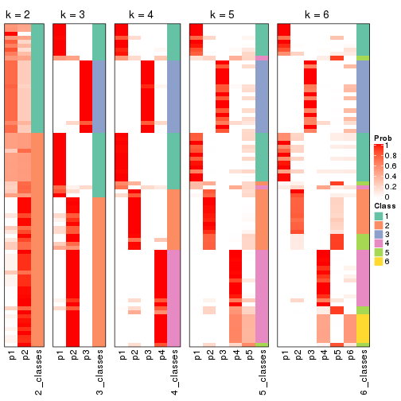
If matrix rows can be associated to genes, consider to use GO_Enrichment(res,
...) to perform function enrichment for the signature genes.
The object with results only for a single top-value method and a single partition method can be extracted as:
res = res_list["SD", "mclust"]
# you can also extract it by
# res = res_list["SD:mclust"]
A summary of res and all the functions that can be applied to it:
res
#> A 'ConsensusPartition' object with k = 2, 3, 4, 5, 6.
#> On a matrix with 16751 rows and 80 columns.
#> Top rows (1000, 2000, 3000, 4000, 5000) are extracted by 'SD' method.
#> Subgroups are detected by 'mclust' method.
#> Performed in total 1250 partitions by row resampling.
#> Best k for subgroups seems to be 2.
#>
#> Following methods can be applied to this 'ConsensusPartition' object:
#> [1] "cola_report" "collect_classes" "collect_plots"
#> [4] "collect_stats" "colnames" "compare_signatures"
#> [7] "consensus_heatmap" "dimension_reduction" "functional_enrichment"
#> [10] "get_anno_col" "get_anno" "get_classes"
#> [13] "get_consensus" "get_matrix" "get_membership"
#> [16] "get_param" "get_signatures" "get_stats"
#> [19] "is_best_k" "is_stable_k" "membership_heatmap"
#> [22] "ncol" "nrow" "plot_ecdf"
#> [25] "rownames" "select_partition_number" "show"
#> [28] "suggest_best_k" "test_to_known_factors"
collect_plots() function collects all the plots made from res for all k (number of partitions)
into one single page to provide an easy and fast comparison between different k.
collect_plots(res)
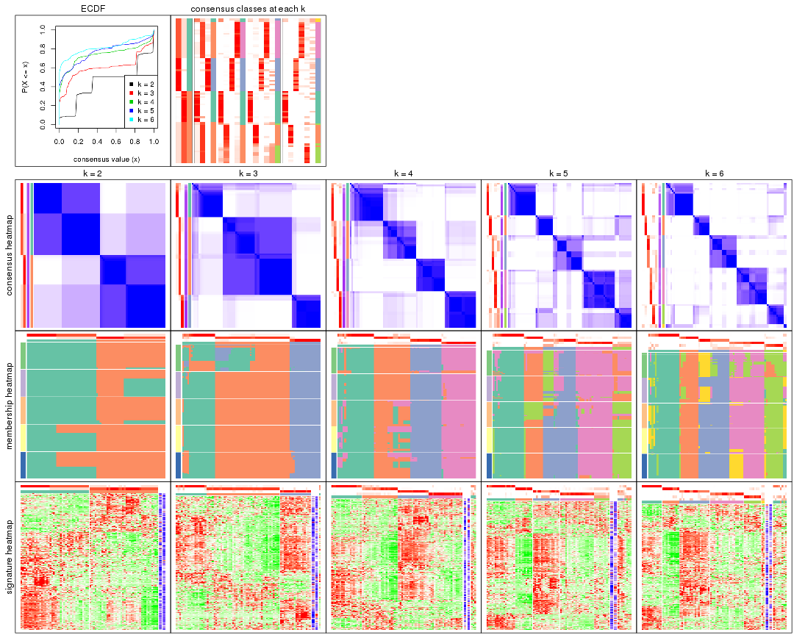
The plots are:
k and the heatmap of
predicted classes for each k.k.k.k.All the plots in panels can be made by individual functions and they are plotted later in this section.
select_partition_number() produces several plots showing different
statistics for choosing “optimized” k. There are following statistics:
k;k, the area increased is defined as \(A_k - A_{k-1}\).The detailed explanations of these statistics can be found in the cola vignette.
Generally speaking, lower PAC score, higher mean silhouette score or higher
concordance corresponds to better partition. Rand index and Jaccard index
measure how similar the current partition is compared to partition with k-1.
If they are too similar, we won't accept k is better than k-1.
select_partition_number(res)
The numeric values for all these statistics can be obtained by get_stats().
get_stats(res)
#> k 1-PAC mean_silhouette concordance area_increased Rand Jaccard
#> 2 2 0.334 0.880 0.895 0.4439 0.494 0.494
#> 3 3 0.624 0.877 0.910 0.3643 0.582 0.357
#> 4 4 0.727 0.855 0.910 0.2222 0.829 0.573
#> 5 5 0.702 0.766 0.817 0.0342 0.932 0.735
#> 6 6 0.763 0.734 0.852 0.0698 0.975 0.881
suggest_best_k() suggests the best \(k\) based on these statistics. The rules are as follows:
NA.suggest_best_k(res)
#> [1] 2
Following shows the table of the partitions (You need to click the show/hide
code output link to see it). The membership matrix (columns with name p*)
is inferred by
clue::cl_consensus()
function with the SE method. Basically the value in the membership matrix
represents the probability to belong to a certain group. The finall class
label for an item is determined with the group with highest probability it
belongs to.
In get_classes() function, the entropy is calculated from the membership
matrix and the silhouette score is calculated from the consensus matrix.
cbind(get_classes(res, k = 2), get_membership(res, k = 2))
#> class entropy silhouette p1 p2
#> 71A0AB6A-CFC2-46F6-878C-6052C5B43D22 2 0.0000 0.857 0.000 1.000
#> EFC730EC-6385-4167-A65A-F2A3AAEDA2AC 1 0.6712 0.888 0.824 0.176
#> 14F2F39A-EA0F-4027-8877-FEEEEFF1F085 2 0.6712 0.899 0.176 0.824
#> 98B2A7F8-A7BD-4DA2-8541-950E44D9ACD7 2 0.6712 0.899 0.176 0.824
#> 9166F454-2068-46C2-B2EB-FB3BE4126536 1 0.0000 0.865 1.000 0.000
#> 83B2A0BB-CE24-4DCA-B03A-D20353304365 2 0.6712 0.899 0.176 0.824
#> D3FC3968-B263-4756-BF7F-1941F70B04DA 1 0.6712 0.888 0.824 0.176
#> D357AC5C-C2A0-4CC4-B016-4572400AF117 2 0.6712 0.899 0.176 0.824
#> 1055E951-5B93-4AD7-BE5C-4DF4F6AECEF3 1 0.6712 0.888 0.824 0.176
#> F2995599-3F21-4F33-92BB-7D70A4735938 1 0.0000 0.865 1.000 0.000
#> 3EE533BD-5832-4007-8F1F-439166256EB0 2 0.6712 0.899 0.176 0.824
#> EEC6DA0C-5C49-4EFE-976A-19F432DDAA58 1 0.0000 0.865 1.000 0.000
#> E6E08C1A-4C1B-4572-92DF-DA15BCBADF76 1 0.6712 0.888 0.824 0.176
#> BCFCBBAC-EB95-47EB-9EB0-2CB4AE283A75 2 0.3431 0.875 0.064 0.936
#> 0782D6D0-668B-4B83-8C91-8A35EA3BFF6D 2 0.6712 0.899 0.176 0.824
#> AC78918E-1031-4AE6-B753-B0799171F0F0 1 0.0000 0.865 1.000 0.000
#> 6B497CED-34DA-4CF8-8F8D-696105CB3D5F 2 0.0000 0.857 0.000 1.000
#> 2328D472-583B-43A9-81A4-A21DDEBB5B18 2 0.6712 0.899 0.176 0.824
#> A6930B33-D9B2-4318-807C-4A25EB4CCCDD 2 0.6712 0.899 0.176 0.824
#> C8C48AFD-4D8B-491E-993C-3506DC6DD00F 2 0.6712 0.899 0.176 0.824
#> 093FB845-7905-4064-8E8E-76E3587D8E7C 2 0.1843 0.866 0.028 0.972
#> B216F996-CCD8-4F56-99B1-4EA9769B10B8 2 0.0000 0.857 0.000 1.000
#> CB35DED2-5FEA-43E2-AB42-B6B3A7444B66 2 0.0000 0.857 0.000 1.000
#> BA016F57-F58F-4A66-B85A-0B0F911EEA65 1 0.6712 0.888 0.824 0.176
#> 519DBD5F-66C0-4CEE-905C-799C855D28FB 1 0.0000 0.865 1.000 0.000
#> F5B9B89B-6821-43EE-BCFD-623689D03AF9 2 0.6712 0.899 0.176 0.824
#> 55A39F92-CC88-4A2F-A7D3-7A59DEBEBB42 2 0.6712 0.899 0.176 0.824
#> 3DBBDEDA-F9FC-40DC-804F-45429EA47ED4 2 0.6712 0.899 0.176 0.824
#> BB948BE8-7D48-4AEB-A404-C27A79655D7E 2 0.0000 0.857 0.000 1.000
#> 9506723F-9193-4D8E-BD97-8A0062AB2F9C 2 0.0000 0.857 0.000 1.000
#> D0758A7A-9D0E-4EA4-8EE9-7143B398647D 2 0.0000 0.857 0.000 1.000
#> F400FD4D-72D7-4933-B145-64B7EE245FFC 1 0.6712 0.888 0.824 0.176
#> 3F87E9ED-3719-48E1-8B69-E352A03E982D 2 0.0000 0.857 0.000 1.000
#> D6365FEB-CC12-4337-BF8C-66236A585B5D 2 0.6712 0.899 0.176 0.824
#> A4168812-C38E-4F15-9AF6-79F256279E72 2 0.0000 0.857 0.000 1.000
#> DB676839-02AA-42A7-962F-89D6AD892008 1 0.0000 0.865 1.000 0.000
#> 198D8E89-51FD-41DE-AD11-FB2F2FE49908 1 0.6712 0.888 0.824 0.176
#> 2BADCD01-27E8-49EC-B707-4FAE3D3CB489 1 0.6712 0.888 0.824 0.176
#> ABBD6EFE-079B-4BE3-95AB-36AF9197D684 2 0.6712 0.899 0.176 0.824
#> 39D66B95-61C7-4B76-8E81-1F9F98024B69 1 0.0000 0.865 1.000 0.000
#> 7A920210-CF3D-4458-B6D5-D9B2ADACA469 1 0.0000 0.865 1.000 0.000
#> 0CE61CDC-3257-4F03-951B-CC2CFCF675AE 1 0.6712 0.888 0.824 0.176
#> 7338D61C-77D6-4095-8847-7FD9967B7646 1 0.6712 0.888 0.824 0.176
#> 0D36FAD5-BA81-4FED-9E2A-DB016F2EF18C 1 0.0000 0.865 1.000 0.000
#> 43CD31CD-5FAE-418A-B235-49E54560590D 2 0.6712 0.899 0.176 0.824
#> B6DD72B0-EEFA-41A9-B71D-22DE1343CD32 2 0.0000 0.857 0.000 1.000
#> 2B729CD9-71A5-4336-ACBA-922A30AF4949 1 0.6712 0.888 0.824 0.176
#> B76DB955-69B7-4D05-8166-2569ED44628C 1 0.0000 0.865 1.000 0.000
#> 09CBEE39-7141-4228-AFD3-4714E32A1FB5 2 0.6712 0.899 0.176 0.824
#> AC1700D5-72E7-4C7F-A288-869DFC229252 1 0.6712 0.888 0.824 0.176
#> 535A5E8E-8478-477F-87FF-ED6742AA5473 2 0.6712 0.899 0.176 0.824
#> CFB8573C-9F36-4715-B6F1-6E5B543168A8 1 0.6712 0.888 0.824 0.176
#> 47A45491-6023-44BF-ABC2-9A470F7FC1F7 1 0.6712 0.888 0.824 0.176
#> 437C7AA7-98C0-48C7-97DA-86FF44D69B87 1 0.6712 0.888 0.824 0.176
#> 649ADE7E-6C06-4AB6-8E97-D8C2AAF79A7E 2 0.6712 0.899 0.176 0.824
#> DEA60B47-AD6A-4EBB-9402-6F97E9640E4E 1 0.6712 0.888 0.824 0.176
#> 76C574FF-26BF-49CD-9BCA-7BDDCBD06D5D 2 0.6712 0.899 0.176 0.824
#> 8B6E1F9B-1E90-4333-8E0C-EEDFF25D15C0 2 0.6438 0.897 0.164 0.836
#> A2473EE7-72D6-4D32-9DF7-5D4E444A6715 1 0.6712 0.888 0.824 0.176
#> E226C45E-5287-4D0F-A34B-CE251FA293CB 1 0.0000 0.865 1.000 0.000
#> A2C71C07-AF0C-4016-808C-DFEF458C91C7 1 0.0000 0.865 1.000 0.000
#> DA00D60F-4CF1-4003-BAF5-896EE2BEE2D4 1 0.6712 0.888 0.824 0.176
#> 1C17B65F-1930-4CF3-99B6-5D3AA9E99188 1 0.6712 0.888 0.824 0.176
#> B837D582-A0D3-46BE-8ECA-883F5396AE88 1 0.6712 0.888 0.824 0.176
#> EF1A102F-C206-4874-8F27-0BF069A613B8 1 0.6712 0.888 0.824 0.176
#> BC761676-F64C-476A-8D9B-BD3E6149B2CD 2 0.6712 0.899 0.176 0.824
#> D8351E5C-DC1D-4B4D-83E6-735B2750D944 2 0.6712 0.899 0.176 0.824
#> 59F65F61-03D0-4909-99BD-4CCB53A088A5 2 0.0000 0.857 0.000 1.000
#> EFFCCF33-60E1-4550-B13C-14C54ADCF479 2 0.0672 0.860 0.008 0.992
#> C45EB423-CC14-4BDB-A0B4-447E5DB6DA9C 1 0.0000 0.865 1.000 0.000
#> D34B0BC6-9142-48AE-A113-5923192644A0 2 0.0000 0.857 0.000 1.000
#> 634672A6-C68E-479F-AAB5-CBAFF7758EA4 1 0.0000 0.865 1.000 0.000
#> 06DAE086-D960-4156-9DC8-D126338E2F29 1 0.6712 0.888 0.824 0.176
#> 3353F579-77CA-4D0E-B794-37DE467CC065 1 0.0376 0.865 0.996 0.004
#> 976507F2-192B-4095-920A-3014889CD617 1 0.0000 0.865 1.000 0.000
#> 3FFF89D9-02F5-4D49-8631-099562BF99C7 1 0.6712 0.888 0.824 0.176
#> 8BC2213D-99DA-44E0-826F-EBF211EECFBF 1 0.0000 0.865 1.000 0.000
#> A7A16BF7-5E60-4E50-BE04-542EFC4DB472 2 0.6712 0.899 0.176 0.824
#> E25C9578-9493-466E-A2CD-546DEB076B2D 2 0.6712 0.899 0.176 0.824
#> EA35E230-DE50-45AB-A737-D5C430652A90 2 0.0000 0.857 0.000 1.000
cbind(get_classes(res, k = 3), get_membership(res, k = 3))
#> class entropy silhouette p1 p2 p3
#> 71A0AB6A-CFC2-46F6-878C-6052C5B43D22 1 0.0000 0.8988 1.000 0.000 0.000
#> EFC730EC-6385-4167-A65A-F2A3AAEDA2AC 2 0.3193 0.8752 0.100 0.896 0.004
#> 14F2F39A-EA0F-4027-8877-FEEEEFF1F085 2 0.2537 0.9040 0.080 0.920 0.000
#> 98B2A7F8-A7BD-4DA2-8541-950E44D9ACD7 2 0.2537 0.9040 0.080 0.920 0.000
#> 9166F454-2068-46C2-B2EB-FB3BE4126536 3 0.0000 0.9622 0.000 0.000 1.000
#> 83B2A0BB-CE24-4DCA-B03A-D20353304365 2 0.2537 0.9040 0.080 0.920 0.000
#> D3FC3968-B263-4756-BF7F-1941F70B04DA 2 0.3482 0.8523 0.000 0.872 0.128
#> D357AC5C-C2A0-4CC4-B016-4572400AF117 2 0.2537 0.9040 0.080 0.920 0.000
#> 1055E951-5B93-4AD7-BE5C-4DF4F6AECEF3 2 0.3116 0.8583 0.000 0.892 0.108
#> F2995599-3F21-4F33-92BB-7D70A4735938 3 0.0237 0.9616 0.000 0.004 0.996
#> 3EE533BD-5832-4007-8F1F-439166256EB0 2 0.2537 0.9040 0.080 0.920 0.000
#> EEC6DA0C-5C49-4EFE-976A-19F432DDAA58 3 0.3619 0.8132 0.000 0.136 0.864
#> E6E08C1A-4C1B-4572-92DF-DA15BCBADF76 2 0.3551 0.8517 0.000 0.868 0.132
#> BCFCBBAC-EB95-47EB-9EB0-2CB4AE283A75 1 0.6154 0.7210 0.752 0.204 0.044
#> 0782D6D0-668B-4B83-8C91-8A35EA3BFF6D 2 0.2537 0.9040 0.080 0.920 0.000
#> AC78918E-1031-4AE6-B753-B0799171F0F0 3 0.0000 0.9622 0.000 0.000 1.000
#> 6B497CED-34DA-4CF8-8F8D-696105CB3D5F 1 0.0000 0.8988 1.000 0.000 0.000
#> 2328D472-583B-43A9-81A4-A21DDEBB5B18 2 0.2537 0.9040 0.080 0.920 0.000
#> A6930B33-D9B2-4318-807C-4A25EB4CCCDD 2 0.2537 0.9040 0.080 0.920 0.000
#> C8C48AFD-4D8B-491E-993C-3506DC6DD00F 1 0.3551 0.8029 0.868 0.132 0.000
#> 093FB845-7905-4064-8E8E-76E3587D8E7C 1 0.0747 0.8899 0.984 0.016 0.000
#> B216F996-CCD8-4F56-99B1-4EA9769B10B8 1 0.0000 0.8988 1.000 0.000 0.000
#> CB35DED2-5FEA-43E2-AB42-B6B3A7444B66 1 0.0000 0.8988 1.000 0.000 0.000
#> BA016F57-F58F-4A66-B85A-0B0F911EEA65 2 0.3193 0.8752 0.100 0.896 0.004
#> 519DBD5F-66C0-4CEE-905C-799C855D28FB 3 0.0000 0.9622 0.000 0.000 1.000
#> F5B9B89B-6821-43EE-BCFD-623689D03AF9 2 0.2537 0.9040 0.080 0.920 0.000
#> 55A39F92-CC88-4A2F-A7D3-7A59DEBEBB42 2 0.4346 0.8697 0.184 0.816 0.000
#> 3DBBDEDA-F9FC-40DC-804F-45429EA47ED4 2 0.2537 0.9040 0.080 0.920 0.000
#> BB948BE8-7D48-4AEB-A404-C27A79655D7E 1 0.1753 0.8637 0.952 0.048 0.000
#> 9506723F-9193-4D8E-BD97-8A0062AB2F9C 1 0.0000 0.8988 1.000 0.000 0.000
#> D0758A7A-9D0E-4EA4-8EE9-7143B398647D 1 0.0000 0.8988 1.000 0.000 0.000
#> F400FD4D-72D7-4933-B145-64B7EE245FFC 2 0.3694 0.8742 0.052 0.896 0.052
#> 3F87E9ED-3719-48E1-8B69-E352A03E982D 1 0.0000 0.8988 1.000 0.000 0.000
#> D6365FEB-CC12-4337-BF8C-66236A585B5D 2 0.3686 0.8893 0.140 0.860 0.000
#> A4168812-C38E-4F15-9AF6-79F256279E72 1 0.0000 0.8988 1.000 0.000 0.000
#> DB676839-02AA-42A7-962F-89D6AD892008 3 0.0000 0.9622 0.000 0.000 1.000
#> 198D8E89-51FD-41DE-AD11-FB2F2FE49908 2 0.3193 0.8752 0.100 0.896 0.004
#> 2BADCD01-27E8-49EC-B707-4FAE3D3CB489 3 0.4733 0.7412 0.004 0.196 0.800
#> ABBD6EFE-079B-4BE3-95AB-36AF9197D684 2 0.2537 0.9040 0.080 0.920 0.000
#> 39D66B95-61C7-4B76-8E81-1F9F98024B69 3 0.0237 0.9616 0.000 0.004 0.996
#> 7A920210-CF3D-4458-B6D5-D9B2ADACA469 3 0.0000 0.9622 0.000 0.000 1.000
#> 0CE61CDC-3257-4F03-951B-CC2CFCF675AE 2 0.3038 0.8592 0.000 0.896 0.104
#> 7338D61C-77D6-4095-8847-7FD9967B7646 2 0.3551 0.8517 0.000 0.868 0.132
#> 0D36FAD5-BA81-4FED-9E2A-DB016F2EF18C 3 0.0237 0.9616 0.000 0.004 0.996
#> 43CD31CD-5FAE-418A-B235-49E54560590D 2 0.2537 0.9040 0.080 0.920 0.000
#> B6DD72B0-EEFA-41A9-B71D-22DE1343CD32 1 0.0000 0.8988 1.000 0.000 0.000
#> 2B729CD9-71A5-4336-ACBA-922A30AF4949 2 0.3551 0.8517 0.000 0.868 0.132
#> B76DB955-69B7-4D05-8166-2569ED44628C 3 0.0000 0.9622 0.000 0.000 1.000
#> 09CBEE39-7141-4228-AFD3-4714E32A1FB5 2 0.2537 0.9040 0.080 0.920 0.000
#> AC1700D5-72E7-4C7F-A288-869DFC229252 1 0.7418 0.6477 0.672 0.248 0.080
#> 535A5E8E-8478-477F-87FF-ED6742AA5473 2 0.2537 0.9040 0.080 0.920 0.000
#> CFB8573C-9F36-4715-B6F1-6E5B543168A8 2 0.3038 0.8592 0.000 0.896 0.104
#> 47A45491-6023-44BF-ABC2-9A470F7FC1F7 2 0.3193 0.8752 0.100 0.896 0.004
#> 437C7AA7-98C0-48C7-97DA-86FF44D69B87 2 0.3445 0.8764 0.088 0.896 0.016
#> 649ADE7E-6C06-4AB6-8E97-D8C2AAF79A7E 2 0.2537 0.9040 0.080 0.920 0.000
#> DEA60B47-AD6A-4EBB-9402-6F97E9640E4E 2 0.3295 0.8758 0.096 0.896 0.008
#> 76C574FF-26BF-49CD-9BCA-7BDDCBD06D5D 2 0.2537 0.9040 0.080 0.920 0.000
#> 8B6E1F9B-1E90-4333-8E0C-EEDFF25D15C0 2 0.4346 0.8697 0.184 0.816 0.000
#> A2473EE7-72D6-4D32-9DF7-5D4E444A6715 2 0.3193 0.8752 0.100 0.896 0.004
#> E226C45E-5287-4D0F-A34B-CE251FA293CB 3 0.0000 0.9622 0.000 0.000 1.000
#> A2C71C07-AF0C-4016-808C-DFEF458C91C7 3 0.0237 0.9616 0.000 0.004 0.996
#> DA00D60F-4CF1-4003-BAF5-896EE2BEE2D4 2 0.3193 0.8752 0.100 0.896 0.004
#> 1C17B65F-1930-4CF3-99B6-5D3AA9E99188 2 0.3193 0.8752 0.100 0.896 0.004
#> B837D582-A0D3-46BE-8ECA-883F5396AE88 1 0.7285 0.5375 0.632 0.320 0.048
#> EF1A102F-C206-4874-8F27-0BF069A613B8 2 0.3193 0.8752 0.100 0.896 0.004
#> BC761676-F64C-476A-8D9B-BD3E6149B2CD 2 0.2537 0.9040 0.080 0.920 0.000
#> D8351E5C-DC1D-4B4D-83E6-735B2750D944 2 0.2537 0.9040 0.080 0.920 0.000
#> 59F65F61-03D0-4909-99BD-4CCB53A088A5 1 0.0000 0.8988 1.000 0.000 0.000
#> EFFCCF33-60E1-4550-B13C-14C54ADCF479 1 0.6267 0.0102 0.548 0.452 0.000
#> C45EB423-CC14-4BDB-A0B4-447E5DB6DA9C 3 0.0000 0.9622 0.000 0.000 1.000
#> D34B0BC6-9142-48AE-A113-5923192644A0 1 0.0000 0.8988 1.000 0.000 0.000
#> 634672A6-C68E-479F-AAB5-CBAFF7758EA4 3 0.0237 0.9616 0.000 0.004 0.996
#> 06DAE086-D960-4156-9DC8-D126338E2F29 2 0.3551 0.8517 0.000 0.868 0.132
#> 3353F579-77CA-4D0E-B794-37DE467CC065 3 0.3412 0.8329 0.000 0.124 0.876
#> 976507F2-192B-4095-920A-3014889CD617 3 0.0000 0.9622 0.000 0.000 1.000
#> 3FFF89D9-02F5-4D49-8631-099562BF99C7 2 0.3193 0.8752 0.100 0.896 0.004
#> 8BC2213D-99DA-44E0-826F-EBF211EECFBF 3 0.0237 0.9616 0.000 0.004 0.996
#> A7A16BF7-5E60-4E50-BE04-542EFC4DB472 2 0.2537 0.9040 0.080 0.920 0.000
#> E25C9578-9493-466E-A2CD-546DEB076B2D 2 0.2537 0.9040 0.080 0.920 0.000
#> EA35E230-DE50-45AB-A737-D5C430652A90 1 0.0000 0.8988 1.000 0.000 0.000
cbind(get_classes(res, k = 4), get_membership(res, k = 4))
#> class entropy silhouette p1 p2 p3 p4
#> 71A0AB6A-CFC2-46F6-878C-6052C5B43D22 1 0.0000 0.886 1.000 0.000 0.000 0.000
#> EFC730EC-6385-4167-A65A-F2A3AAEDA2AC 4 0.0188 0.963 0.004 0.000 0.000 0.996
#> 14F2F39A-EA0F-4027-8877-FEEEEFF1F085 2 0.0921 0.818 0.000 0.972 0.000 0.028
#> 98B2A7F8-A7BD-4DA2-8541-950E44D9ACD7 2 0.0921 0.818 0.000 0.972 0.000 0.028
#> 9166F454-2068-46C2-B2EB-FB3BE4126536 3 0.0592 0.965 0.000 0.000 0.984 0.016
#> 83B2A0BB-CE24-4DCA-B03A-D20353304365 2 0.0921 0.818 0.000 0.972 0.000 0.028
#> D3FC3968-B263-4756-BF7F-1941F70B04DA 4 0.0469 0.967 0.000 0.012 0.000 0.988
#> D357AC5C-C2A0-4CC4-B016-4572400AF117 2 0.3706 0.829 0.040 0.848 0.000 0.112
#> 1055E951-5B93-4AD7-BE5C-4DF4F6AECEF3 4 0.0469 0.967 0.000 0.012 0.000 0.988
#> F2995599-3F21-4F33-92BB-7D70A4735938 3 0.1256 0.969 0.000 0.028 0.964 0.008
#> 3EE533BD-5832-4007-8F1F-439166256EB0 2 0.4188 0.816 0.040 0.812 0.000 0.148
#> EEC6DA0C-5C49-4EFE-976A-19F432DDAA58 3 0.2921 0.837 0.000 0.000 0.860 0.140
#> E6E08C1A-4C1B-4572-92DF-DA15BCBADF76 4 0.0469 0.967 0.000 0.012 0.000 0.988
#> BCFCBBAC-EB95-47EB-9EB0-2CB4AE283A75 1 0.3401 0.771 0.840 0.008 0.000 0.152
#> 0782D6D0-668B-4B83-8C91-8A35EA3BFF6D 2 0.0921 0.818 0.000 0.972 0.000 0.028
#> AC78918E-1031-4AE6-B753-B0799171F0F0 3 0.0000 0.970 0.000 0.000 1.000 0.000
#> 6B497CED-34DA-4CF8-8F8D-696105CB3D5F 1 0.0000 0.886 1.000 0.000 0.000 0.000
#> 2328D472-583B-43A9-81A4-A21DDEBB5B18 2 0.6231 0.776 0.184 0.668 0.000 0.148
#> A6930B33-D9B2-4318-807C-4A25EB4CCCDD 2 0.0921 0.818 0.000 0.972 0.000 0.028
#> C8C48AFD-4D8B-491E-993C-3506DC6DD00F 1 0.1151 0.868 0.968 0.008 0.000 0.024
#> 093FB845-7905-4064-8E8E-76E3587D8E7C 1 0.1284 0.866 0.964 0.012 0.000 0.024
#> B216F996-CCD8-4F56-99B1-4EA9769B10B8 1 0.0000 0.886 1.000 0.000 0.000 0.000
#> CB35DED2-5FEA-43E2-AB42-B6B3A7444B66 1 0.0188 0.885 0.996 0.004 0.000 0.000
#> BA016F57-F58F-4A66-B85A-0B0F911EEA65 4 0.0000 0.966 0.000 0.000 0.000 1.000
#> 519DBD5F-66C0-4CEE-905C-799C855D28FB 3 0.0000 0.970 0.000 0.000 1.000 0.000
#> F5B9B89B-6821-43EE-BCFD-623689D03AF9 2 0.0921 0.818 0.000 0.972 0.000 0.028
#> 55A39F92-CC88-4A2F-A7D3-7A59DEBEBB42 1 0.7365 -0.300 0.440 0.400 0.000 0.160
#> 3DBBDEDA-F9FC-40DC-804F-45429EA47ED4 2 0.7212 0.591 0.324 0.516 0.000 0.160
#> BB948BE8-7D48-4AEB-A404-C27A79655D7E 1 0.0000 0.886 1.000 0.000 0.000 0.000
#> 9506723F-9193-4D8E-BD97-8A0062AB2F9C 1 0.0000 0.886 1.000 0.000 0.000 0.000
#> D0758A7A-9D0E-4EA4-8EE9-7143B398647D 1 0.0000 0.886 1.000 0.000 0.000 0.000
#> F400FD4D-72D7-4933-B145-64B7EE245FFC 4 0.0469 0.967 0.000 0.012 0.000 0.988
#> 3F87E9ED-3719-48E1-8B69-E352A03E982D 1 0.0188 0.885 0.996 0.004 0.000 0.000
#> D6365FEB-CC12-4337-BF8C-66236A585B5D 2 0.6231 0.776 0.184 0.668 0.000 0.148
#> A4168812-C38E-4F15-9AF6-79F256279E72 1 0.0336 0.884 0.992 0.008 0.000 0.000
#> DB676839-02AA-42A7-962F-89D6AD892008 3 0.0000 0.970 0.000 0.000 1.000 0.000
#> 198D8E89-51FD-41DE-AD11-FB2F2FE49908 4 0.2921 0.821 0.000 0.140 0.000 0.860
#> 2BADCD01-27E8-49EC-B707-4FAE3D3CB489 3 0.2021 0.946 0.000 0.012 0.932 0.056
#> ABBD6EFE-079B-4BE3-95AB-36AF9197D684 2 0.2053 0.821 0.004 0.924 0.000 0.072
#> 39D66B95-61C7-4B76-8E81-1F9F98024B69 3 0.1256 0.969 0.000 0.028 0.964 0.008
#> 7A920210-CF3D-4458-B6D5-D9B2ADACA469 3 0.0000 0.970 0.000 0.000 1.000 0.000
#> 0CE61CDC-3257-4F03-951B-CC2CFCF675AE 4 0.0469 0.967 0.000 0.012 0.000 0.988
#> 7338D61C-77D6-4095-8847-7FD9967B7646 4 0.0000 0.966 0.000 0.000 0.000 1.000
#> 0D36FAD5-BA81-4FED-9E2A-DB016F2EF18C 3 0.1256 0.969 0.000 0.028 0.964 0.008
#> 43CD31CD-5FAE-418A-B235-49E54560590D 2 0.5950 0.792 0.156 0.696 0.000 0.148
#> B6DD72B0-EEFA-41A9-B71D-22DE1343CD32 1 0.0336 0.884 0.992 0.008 0.000 0.000
#> 2B729CD9-71A5-4336-ACBA-922A30AF4949 4 0.0000 0.966 0.000 0.000 0.000 1.000
#> B76DB955-69B7-4D05-8166-2569ED44628C 3 0.0000 0.970 0.000 0.000 1.000 0.000
#> 09CBEE39-7141-4228-AFD3-4714E32A1FB5 2 0.5950 0.792 0.156 0.696 0.000 0.148
#> AC1700D5-72E7-4C7F-A288-869DFC229252 1 0.6944 0.490 0.588 0.000 0.216 0.196
#> 535A5E8E-8478-477F-87FF-ED6742AA5473 2 0.6231 0.776 0.184 0.668 0.000 0.148
#> CFB8573C-9F36-4715-B6F1-6E5B543168A8 4 0.0000 0.966 0.000 0.000 0.000 1.000
#> 47A45491-6023-44BF-ABC2-9A470F7FC1F7 4 0.0000 0.966 0.000 0.000 0.000 1.000
#> 437C7AA7-98C0-48C7-97DA-86FF44D69B87 4 0.0469 0.967 0.000 0.012 0.000 0.988
#> 649ADE7E-6C06-4AB6-8E97-D8C2AAF79A7E 2 0.7212 0.591 0.324 0.516 0.000 0.160
#> DEA60B47-AD6A-4EBB-9402-6F97E9640E4E 4 0.0817 0.959 0.000 0.024 0.000 0.976
#> 76C574FF-26BF-49CD-9BCA-7BDDCBD06D5D 2 0.0921 0.818 0.000 0.972 0.000 0.028
#> 8B6E1F9B-1E90-4333-8E0C-EEDFF25D15C0 1 0.4152 0.699 0.808 0.032 0.000 0.160
#> A2473EE7-72D6-4D32-9DF7-5D4E444A6715 4 0.0000 0.966 0.000 0.000 0.000 1.000
#> E226C45E-5287-4D0F-A34B-CE251FA293CB 3 0.1474 0.947 0.000 0.000 0.948 0.052
#> A2C71C07-AF0C-4016-808C-DFEF458C91C7 3 0.1256 0.969 0.000 0.028 0.964 0.008
#> DA00D60F-4CF1-4003-BAF5-896EE2BEE2D4 4 0.0000 0.966 0.000 0.000 0.000 1.000
#> 1C17B65F-1930-4CF3-99B6-5D3AA9E99188 4 0.0469 0.967 0.000 0.012 0.000 0.988
#> B837D582-A0D3-46BE-8ECA-883F5396AE88 1 0.5060 0.315 0.584 0.000 0.004 0.412
#> EF1A102F-C206-4874-8F27-0BF069A613B8 4 0.3219 0.775 0.164 0.000 0.000 0.836
#> BC761676-F64C-476A-8D9B-BD3E6149B2CD 2 0.7106 0.602 0.324 0.528 0.000 0.148
#> D8351E5C-DC1D-4B4D-83E6-735B2750D944 2 0.6231 0.776 0.184 0.668 0.000 0.148
#> 59F65F61-03D0-4909-99BD-4CCB53A088A5 1 0.0000 0.886 1.000 0.000 0.000 0.000
#> EFFCCF33-60E1-4550-B13C-14C54ADCF479 1 0.2714 0.791 0.884 0.004 0.000 0.112
#> C45EB423-CC14-4BDB-A0B4-447E5DB6DA9C 3 0.0000 0.970 0.000 0.000 1.000 0.000
#> D34B0BC6-9142-48AE-A113-5923192644A0 1 0.0000 0.886 1.000 0.000 0.000 0.000
#> 634672A6-C68E-479F-AAB5-CBAFF7758EA4 3 0.1256 0.969 0.000 0.028 0.964 0.008
#> 06DAE086-D960-4156-9DC8-D126338E2F29 4 0.0817 0.959 0.000 0.024 0.000 0.976
#> 3353F579-77CA-4D0E-B794-37DE467CC065 3 0.1792 0.936 0.000 0.000 0.932 0.068
#> 976507F2-192B-4095-920A-3014889CD617 3 0.0000 0.970 0.000 0.000 1.000 0.000
#> 3FFF89D9-02F5-4D49-8631-099562BF99C7 4 0.2408 0.872 0.000 0.104 0.000 0.896
#> 8BC2213D-99DA-44E0-826F-EBF211EECFBF 3 0.1256 0.969 0.000 0.028 0.964 0.008
#> A7A16BF7-5E60-4E50-BE04-542EFC4DB472 2 0.2469 0.824 0.000 0.892 0.000 0.108
#> E25C9578-9493-466E-A2CD-546DEB076B2D 2 0.2469 0.824 0.000 0.892 0.000 0.108
#> EA35E230-DE50-45AB-A737-D5C430652A90 1 0.0188 0.885 0.996 0.004 0.000 0.000
cbind(get_classes(res, k = 5), get_membership(res, k = 5))
#> class entropy silhouette p1 p2 p3 p4 p5
#> 71A0AB6A-CFC2-46F6-878C-6052C5B43D22 1 0.0000 0.907 1.000 0.000 0.000 0.000 0.000
#> EFC730EC-6385-4167-A65A-F2A3AAEDA2AC 4 0.1893 0.884 0.000 0.024 0.000 0.928 0.048
#> 14F2F39A-EA0F-4027-8877-FEEEEFF1F085 2 0.0162 0.910 0.000 0.996 0.000 0.004 0.000
#> 98B2A7F8-A7BD-4DA2-8541-950E44D9ACD7 2 0.0162 0.910 0.000 0.996 0.000 0.004 0.000
#> 9166F454-2068-46C2-B2EB-FB3BE4126536 3 0.2921 0.713 0.000 0.020 0.856 0.124 0.000
#> 83B2A0BB-CE24-4DCA-B03A-D20353304365 2 0.0162 0.910 0.000 0.996 0.000 0.004 0.000
#> D3FC3968-B263-4756-BF7F-1941F70B04DA 4 0.0794 0.901 0.000 0.028 0.000 0.972 0.000
#> D357AC5C-C2A0-4CC4-B016-4572400AF117 2 0.4446 -0.118 0.000 0.592 0.000 0.008 0.400
#> 1055E951-5B93-4AD7-BE5C-4DF4F6AECEF3 4 0.0609 0.901 0.000 0.020 0.000 0.980 0.000
#> F2995599-3F21-4F33-92BB-7D70A4735938 3 0.4262 0.704 0.000 0.000 0.560 0.000 0.440
#> 3EE533BD-5832-4007-8F1F-439166256EB0 5 0.6219 0.584 0.000 0.420 0.000 0.140 0.440
#> EEC6DA0C-5C49-4EFE-976A-19F432DDAA58 3 0.2921 0.713 0.000 0.020 0.856 0.124 0.000
#> E6E08C1A-4C1B-4572-92DF-DA15BCBADF76 4 0.2653 0.824 0.000 0.096 0.000 0.880 0.024
#> BCFCBBAC-EB95-47EB-9EB0-2CB4AE283A75 1 0.4551 0.738 0.788 0.048 0.000 0.112 0.052
#> 0782D6D0-668B-4B83-8C91-8A35EA3BFF6D 2 0.0162 0.910 0.000 0.996 0.000 0.004 0.000
#> AC78918E-1031-4AE6-B753-B0799171F0F0 3 0.0000 0.765 0.000 0.000 1.000 0.000 0.000
#> 6B497CED-34DA-4CF8-8F8D-696105CB3D5F 1 0.0000 0.907 1.000 0.000 0.000 0.000 0.000
#> 2328D472-583B-43A9-81A4-A21DDEBB5B18 5 0.6443 0.850 0.000 0.224 0.000 0.276 0.500
#> A6930B33-D9B2-4318-807C-4A25EB4CCCDD 2 0.0162 0.910 0.000 0.996 0.000 0.004 0.000
#> C8C48AFD-4D8B-491E-993C-3506DC6DD00F 1 0.4665 0.503 0.692 0.048 0.000 0.260 0.000
#> 093FB845-7905-4064-8E8E-76E3587D8E7C 1 0.3567 0.757 0.832 0.052 0.000 0.112 0.004
#> B216F996-CCD8-4F56-99B1-4EA9769B10B8 1 0.0000 0.907 1.000 0.000 0.000 0.000 0.000
#> CB35DED2-5FEA-43E2-AB42-B6B3A7444B66 1 0.0000 0.907 1.000 0.000 0.000 0.000 0.000
#> BA016F57-F58F-4A66-B85A-0B0F911EEA65 4 0.0290 0.894 0.000 0.000 0.000 0.992 0.008
#> 519DBD5F-66C0-4CEE-905C-799C855D28FB 3 0.0000 0.765 0.000 0.000 1.000 0.000 0.000
#> F5B9B89B-6821-43EE-BCFD-623689D03AF9 2 0.0162 0.910 0.000 0.996 0.000 0.004 0.000
#> 55A39F92-CC88-4A2F-A7D3-7A59DEBEBB42 5 0.7400 0.776 0.044 0.212 0.000 0.308 0.436
#> 3DBBDEDA-F9FC-40DC-804F-45429EA47ED4 5 0.6568 0.849 0.004 0.220 0.000 0.276 0.500
#> BB948BE8-7D48-4AEB-A404-C27A79655D7E 1 0.0000 0.907 1.000 0.000 0.000 0.000 0.000
#> 9506723F-9193-4D8E-BD97-8A0062AB2F9C 1 0.0000 0.907 1.000 0.000 0.000 0.000 0.000
#> D0758A7A-9D0E-4EA4-8EE9-7143B398647D 1 0.0000 0.907 1.000 0.000 0.000 0.000 0.000
#> F400FD4D-72D7-4933-B145-64B7EE245FFC 4 0.1410 0.891 0.000 0.060 0.000 0.940 0.000
#> 3F87E9ED-3719-48E1-8B69-E352A03E982D 1 0.0000 0.907 1.000 0.000 0.000 0.000 0.000
#> D6365FEB-CC12-4337-BF8C-66236A585B5D 5 0.6443 0.850 0.000 0.224 0.000 0.276 0.500
#> A4168812-C38E-4F15-9AF6-79F256279E72 1 0.0510 0.898 0.984 0.016 0.000 0.000 0.000
#> DB676839-02AA-42A7-962F-89D6AD892008 3 0.0000 0.765 0.000 0.000 1.000 0.000 0.000
#> 198D8E89-51FD-41DE-AD11-FB2F2FE49908 4 0.2280 0.829 0.000 0.120 0.000 0.880 0.000
#> 2BADCD01-27E8-49EC-B707-4FAE3D3CB489 3 0.7250 0.439 0.080 0.016 0.520 0.308 0.076
#> ABBD6EFE-079B-4BE3-95AB-36AF9197D684 2 0.2648 0.598 0.000 0.848 0.000 0.152 0.000
#> 39D66B95-61C7-4B76-8E81-1F9F98024B69 3 0.4262 0.704 0.000 0.000 0.560 0.000 0.440
#> 7A920210-CF3D-4458-B6D5-D9B2ADACA469 3 0.0000 0.765 0.000 0.000 1.000 0.000 0.000
#> 0CE61CDC-3257-4F03-951B-CC2CFCF675AE 4 0.0609 0.901 0.000 0.020 0.000 0.980 0.000
#> 7338D61C-77D6-4095-8847-7FD9967B7646 4 0.1168 0.900 0.000 0.032 0.000 0.960 0.008
#> 0D36FAD5-BA81-4FED-9E2A-DB016F2EF18C 3 0.4256 0.706 0.000 0.000 0.564 0.000 0.436
#> 43CD31CD-5FAE-418A-B235-49E54560590D 5 0.4747 0.317 0.000 0.484 0.000 0.016 0.500
#> B6DD72B0-EEFA-41A9-B71D-22DE1343CD32 1 0.0162 0.905 0.996 0.004 0.000 0.000 0.000
#> 2B729CD9-71A5-4336-ACBA-922A30AF4949 4 0.0880 0.900 0.000 0.032 0.000 0.968 0.000
#> B76DB955-69B7-4D05-8166-2569ED44628C 3 0.0000 0.765 0.000 0.000 1.000 0.000 0.000
#> 09CBEE39-7141-4228-AFD3-4714E32A1FB5 5 0.4829 0.332 0.000 0.480 0.000 0.020 0.500
#> AC1700D5-72E7-4C7F-A288-869DFC229252 3 0.8336 0.206 0.212 0.036 0.380 0.316 0.056
#> 535A5E8E-8478-477F-87FF-ED6742AA5473 5 0.6448 0.848 0.000 0.228 0.000 0.272 0.500
#> CFB8573C-9F36-4715-B6F1-6E5B543168A8 4 0.0290 0.894 0.000 0.000 0.000 0.992 0.008
#> 47A45491-6023-44BF-ABC2-9A470F7FC1F7 4 0.0290 0.894 0.000 0.000 0.000 0.992 0.008
#> 437C7AA7-98C0-48C7-97DA-86FF44D69B87 4 0.1121 0.898 0.000 0.044 0.000 0.956 0.000
#> 649ADE7E-6C06-4AB6-8E97-D8C2AAF79A7E 5 0.6568 0.849 0.004 0.220 0.000 0.276 0.500
#> DEA60B47-AD6A-4EBB-9402-6F97E9640E4E 4 0.1608 0.883 0.000 0.072 0.000 0.928 0.000
#> 76C574FF-26BF-49CD-9BCA-7BDDCBD06D5D 2 0.0162 0.910 0.000 0.996 0.000 0.004 0.000
#> 8B6E1F9B-1E90-4333-8E0C-EEDFF25D15C0 1 0.7369 -0.184 0.428 0.064 0.000 0.144 0.364
#> A2473EE7-72D6-4D32-9DF7-5D4E444A6715 4 0.0290 0.894 0.000 0.000 0.000 0.992 0.008
#> E226C45E-5287-4D0F-A34B-CE251FA293CB 3 0.2921 0.713 0.000 0.020 0.856 0.124 0.000
#> A2C71C07-AF0C-4016-808C-DFEF458C91C7 3 0.4262 0.704 0.000 0.000 0.560 0.000 0.440
#> DA00D60F-4CF1-4003-BAF5-896EE2BEE2D4 4 0.0290 0.894 0.000 0.000 0.000 0.992 0.008
#> 1C17B65F-1930-4CF3-99B6-5D3AA9E99188 4 0.0162 0.894 0.000 0.000 0.000 0.996 0.004
#> B837D582-A0D3-46BE-8ECA-883F5396AE88 4 0.8437 -0.178 0.280 0.036 0.312 0.320 0.052
#> EF1A102F-C206-4874-8F27-0BF069A613B8 4 0.3365 0.818 0.052 0.028 0.000 0.864 0.056
#> BC761676-F64C-476A-8D9B-BD3E6149B2CD 5 0.6568 0.849 0.004 0.220 0.000 0.276 0.500
#> D8351E5C-DC1D-4B4D-83E6-735B2750D944 5 0.6443 0.850 0.000 0.224 0.000 0.276 0.500
#> 59F65F61-03D0-4909-99BD-4CCB53A088A5 1 0.0000 0.907 1.000 0.000 0.000 0.000 0.000
#> EFFCCF33-60E1-4550-B13C-14C54ADCF479 1 0.2728 0.829 0.896 0.040 0.000 0.048 0.016
#> C45EB423-CC14-4BDB-A0B4-447E5DB6DA9C 3 0.0000 0.765 0.000 0.000 1.000 0.000 0.000
#> D34B0BC6-9142-48AE-A113-5923192644A0 1 0.0000 0.907 1.000 0.000 0.000 0.000 0.000
#> 634672A6-C68E-479F-AAB5-CBAFF7758EA4 3 0.4256 0.706 0.000 0.000 0.564 0.000 0.436
#> 06DAE086-D960-4156-9DC8-D126338E2F29 4 0.2230 0.834 0.000 0.116 0.000 0.884 0.000
#> 3353F579-77CA-4D0E-B794-37DE467CC065 3 0.4679 0.488 0.000 0.032 0.652 0.316 0.000
#> 976507F2-192B-4095-920A-3014889CD617 3 0.0000 0.765 0.000 0.000 1.000 0.000 0.000
#> 3FFF89D9-02F5-4D49-8631-099562BF99C7 4 0.1851 0.872 0.000 0.088 0.000 0.912 0.000
#> 8BC2213D-99DA-44E0-826F-EBF211EECFBF 3 0.4256 0.706 0.000 0.000 0.564 0.000 0.436
#> A7A16BF7-5E60-4E50-BE04-542EFC4DB472 2 0.0162 0.910 0.000 0.996 0.000 0.004 0.000
#> E25C9578-9493-466E-A2CD-546DEB076B2D 2 0.0162 0.910 0.000 0.996 0.000 0.004 0.000
#> EA35E230-DE50-45AB-A737-D5C430652A90 1 0.0000 0.907 1.000 0.000 0.000 0.000 0.000
cbind(get_classes(res, k = 6), get_membership(res, k = 6))
#> class entropy silhouette p1 p2 p3 p4 p5 p6
#> 71A0AB6A-CFC2-46F6-878C-6052C5B43D22 1 0.0000 0.8081 1.000 0.000 0.000 0.000 0.000 0.000
#> EFC730EC-6385-4167-A65A-F2A3AAEDA2AC 4 0.4707 0.7073 0.000 0.000 0.000 0.660 0.096 0.244
#> 14F2F39A-EA0F-4027-8877-FEEEEFF1F085 2 0.0000 0.8747 0.000 1.000 0.000 0.000 0.000 0.000
#> 98B2A7F8-A7BD-4DA2-8541-950E44D9ACD7 2 0.2631 0.7578 0.000 0.820 0.000 0.000 0.180 0.000
#> 9166F454-2068-46C2-B2EB-FB3BE4126536 3 0.4818 0.7961 0.000 0.000 0.672 0.004 0.112 0.212
#> 83B2A0BB-CE24-4DCA-B03A-D20353304365 2 0.2631 0.7578 0.000 0.820 0.000 0.000 0.180 0.000
#> D3FC3968-B263-4756-BF7F-1941F70B04DA 4 0.2092 0.7544 0.000 0.000 0.000 0.876 0.124 0.000
#> D357AC5C-C2A0-4CC4-B016-4572400AF117 5 0.2883 0.7332 0.000 0.212 0.000 0.000 0.788 0.000
#> 1055E951-5B93-4AD7-BE5C-4DF4F6AECEF3 4 0.0458 0.8028 0.000 0.000 0.000 0.984 0.016 0.000
#> F2995599-3F21-4F33-92BB-7D70A4735938 3 0.0363 0.7701 0.000 0.000 0.988 0.000 0.000 0.012
#> 3EE533BD-5832-4007-8F1F-439166256EB0 2 0.4617 0.0436 0.020 0.540 0.000 0.012 0.428 0.000
#> EEC6DA0C-5C49-4EFE-976A-19F432DDAA58 3 0.4818 0.7961 0.000 0.000 0.672 0.004 0.112 0.212
#> E6E08C1A-4C1B-4572-92DF-DA15BCBADF76 4 0.2730 0.6996 0.000 0.000 0.000 0.808 0.192 0.000
#> BCFCBBAC-EB95-47EB-9EB0-2CB4AE283A75 1 0.5820 -0.5314 0.456 0.000 0.000 0.144 0.008 0.392
#> 0782D6D0-668B-4B83-8C91-8A35EA3BFF6D 2 0.0000 0.8747 0.000 1.000 0.000 0.000 0.000 0.000
#> AC78918E-1031-4AE6-B753-B0799171F0F0 3 0.3531 0.8274 0.000 0.000 0.672 0.000 0.000 0.328
#> 6B497CED-34DA-4CF8-8F8D-696105CB3D5F 1 0.0000 0.8081 1.000 0.000 0.000 0.000 0.000 0.000
#> 2328D472-583B-43A9-81A4-A21DDEBB5B18 5 0.0291 0.8467 0.000 0.004 0.000 0.004 0.992 0.000
#> A6930B33-D9B2-4318-807C-4A25EB4CCCDD 2 0.0000 0.8747 0.000 1.000 0.000 0.000 0.000 0.000
#> C8C48AFD-4D8B-491E-993C-3506DC6DD00F 1 0.3426 0.3289 0.720 0.000 0.000 0.004 0.276 0.000
#> 093FB845-7905-4064-8E8E-76E3587D8E7C 1 0.4480 0.1761 0.616 0.000 0.000 0.000 0.044 0.340
#> B216F996-CCD8-4F56-99B1-4EA9769B10B8 1 0.0000 0.8081 1.000 0.000 0.000 0.000 0.000 0.000
#> CB35DED2-5FEA-43E2-AB42-B6B3A7444B66 1 0.0000 0.8081 1.000 0.000 0.000 0.000 0.000 0.000
#> BA016F57-F58F-4A66-B85A-0B0F911EEA65 4 0.3323 0.7286 0.000 0.000 0.000 0.752 0.008 0.240
#> 519DBD5F-66C0-4CEE-905C-799C855D28FB 3 0.3531 0.8274 0.000 0.000 0.672 0.000 0.000 0.328
#> F5B9B89B-6821-43EE-BCFD-623689D03AF9 2 0.0000 0.8747 0.000 1.000 0.000 0.000 0.000 0.000
#> 55A39F92-CC88-4A2F-A7D3-7A59DEBEBB42 5 0.6503 0.2512 0.100 0.048 0.000 0.020 0.504 0.328
#> 3DBBDEDA-F9FC-40DC-804F-45429EA47ED4 5 0.0508 0.8430 0.000 0.004 0.000 0.012 0.984 0.000
#> BB948BE8-7D48-4AEB-A404-C27A79655D7E 1 0.0000 0.8081 1.000 0.000 0.000 0.000 0.000 0.000
#> 9506723F-9193-4D8E-BD97-8A0062AB2F9C 1 0.0000 0.8081 1.000 0.000 0.000 0.000 0.000 0.000
#> D0758A7A-9D0E-4EA4-8EE9-7143B398647D 1 0.0000 0.8081 1.000 0.000 0.000 0.000 0.000 0.000
#> F400FD4D-72D7-4933-B145-64B7EE245FFC 4 0.0547 0.8036 0.000 0.000 0.000 0.980 0.020 0.000
#> 3F87E9ED-3719-48E1-8B69-E352A03E982D 1 0.0000 0.8081 1.000 0.000 0.000 0.000 0.000 0.000
#> D6365FEB-CC12-4337-BF8C-66236A585B5D 5 0.0291 0.8467 0.000 0.004 0.000 0.004 0.992 0.000
#> A4168812-C38E-4F15-9AF6-79F256279E72 1 0.3266 0.4507 0.728 0.000 0.000 0.000 0.000 0.272
#> DB676839-02AA-42A7-962F-89D6AD892008 3 0.3531 0.8274 0.000 0.000 0.672 0.000 0.000 0.328
#> 198D8E89-51FD-41DE-AD11-FB2F2FE49908 4 0.1007 0.7986 0.000 0.000 0.000 0.956 0.044 0.000
#> 2BADCD01-27E8-49EC-B707-4FAE3D3CB489 3 0.5037 0.6294 0.004 0.000 0.720 0.108 0.116 0.052
#> ABBD6EFE-079B-4BE3-95AB-36AF9197D684 2 0.3136 0.7008 0.000 0.768 0.000 0.004 0.228 0.000
#> 39D66B95-61C7-4B76-8E81-1F9F98024B69 3 0.0363 0.7701 0.000 0.000 0.988 0.000 0.000 0.012
#> 7A920210-CF3D-4458-B6D5-D9B2ADACA469 3 0.3531 0.8274 0.000 0.000 0.672 0.000 0.000 0.328
#> 0CE61CDC-3257-4F03-951B-CC2CFCF675AE 4 0.0458 0.8028 0.000 0.000 0.000 0.984 0.016 0.000
#> 7338D61C-77D6-4095-8847-7FD9967B7646 4 0.5080 0.6817 0.000 0.000 0.000 0.624 0.140 0.236
#> 0D36FAD5-BA81-4FED-9E2A-DB016F2EF18C 3 0.0000 0.7757 0.000 0.000 1.000 0.000 0.000 0.000
#> 43CD31CD-5FAE-418A-B235-49E54560590D 5 0.2092 0.8277 0.000 0.124 0.000 0.000 0.876 0.000
#> B6DD72B0-EEFA-41A9-B71D-22DE1343CD32 1 0.0000 0.8081 1.000 0.000 0.000 0.000 0.000 0.000
#> 2B729CD9-71A5-4336-ACBA-922A30AF4949 4 0.2454 0.7303 0.000 0.000 0.000 0.840 0.160 0.000
#> B76DB955-69B7-4D05-8166-2569ED44628C 3 0.3531 0.8274 0.000 0.000 0.672 0.000 0.000 0.328
#> 09CBEE39-7141-4228-AFD3-4714E32A1FB5 5 0.2092 0.8277 0.000 0.124 0.000 0.000 0.876 0.000
#> AC1700D5-72E7-4C7F-A288-869DFC229252 6 0.7548 0.9660 0.260 0.000 0.020 0.176 0.120 0.424
#> 535A5E8E-8478-477F-87FF-ED6742AA5473 5 0.1958 0.8479 0.000 0.100 0.000 0.004 0.896 0.000
#> CFB8573C-9F36-4715-B6F1-6E5B543168A8 4 0.4075 0.7251 0.000 0.000 0.000 0.712 0.048 0.240
#> 47A45491-6023-44BF-ABC2-9A470F7FC1F7 4 0.3323 0.7286 0.000 0.000 0.000 0.752 0.008 0.240
#> 437C7AA7-98C0-48C7-97DA-86FF44D69B87 4 0.0458 0.8028 0.000 0.000 0.000 0.984 0.016 0.000
#> 649ADE7E-6C06-4AB6-8E97-D8C2AAF79A7E 5 0.0405 0.8454 0.000 0.004 0.000 0.008 0.988 0.000
#> DEA60B47-AD6A-4EBB-9402-6F97E9640E4E 4 0.0547 0.8036 0.000 0.000 0.000 0.980 0.020 0.000
#> 76C574FF-26BF-49CD-9BCA-7BDDCBD06D5D 2 0.0000 0.8747 0.000 1.000 0.000 0.000 0.000 0.000
#> 8B6E1F9B-1E90-4333-8E0C-EEDFF25D15C0 1 0.4452 0.1664 0.572 0.000 0.000 0.004 0.400 0.024
#> A2473EE7-72D6-4D32-9DF7-5D4E444A6715 4 0.3323 0.7286 0.000 0.000 0.000 0.752 0.008 0.240
#> E226C45E-5287-4D0F-A34B-CE251FA293CB 3 0.4818 0.7961 0.000 0.000 0.672 0.004 0.112 0.212
#> A2C71C07-AF0C-4016-808C-DFEF458C91C7 3 0.0363 0.7701 0.000 0.000 0.988 0.000 0.000 0.012
#> DA00D60F-4CF1-4003-BAF5-896EE2BEE2D4 4 0.3323 0.7286 0.000 0.000 0.000 0.752 0.008 0.240
#> 1C17B65F-1930-4CF3-99B6-5D3AA9E99188 4 0.0146 0.7948 0.000 0.000 0.000 0.996 0.004 0.000
#> B837D582-A0D3-46BE-8ECA-883F5396AE88 6 0.7137 0.9654 0.276 0.000 0.000 0.176 0.120 0.428
#> EF1A102F-C206-4874-8F27-0BF069A613B8 4 0.5208 0.6758 0.008 0.000 0.000 0.624 0.120 0.248
#> BC761676-F64C-476A-8D9B-BD3E6149B2CD 5 0.1958 0.8479 0.000 0.100 0.000 0.004 0.896 0.000
#> D8351E5C-DC1D-4B4D-83E6-735B2750D944 5 0.0935 0.8568 0.000 0.032 0.000 0.004 0.964 0.000
#> 59F65F61-03D0-4909-99BD-4CCB53A088A5 1 0.0000 0.8081 1.000 0.000 0.000 0.000 0.000 0.000
#> EFFCCF33-60E1-4550-B13C-14C54ADCF479 1 0.3244 0.4703 0.732 0.000 0.000 0.000 0.268 0.000
#> C45EB423-CC14-4BDB-A0B4-447E5DB6DA9C 3 0.3531 0.8274 0.000 0.000 0.672 0.000 0.000 0.328
#> D34B0BC6-9142-48AE-A113-5923192644A0 1 0.0000 0.8081 1.000 0.000 0.000 0.000 0.000 0.000
#> 634672A6-C68E-479F-AAB5-CBAFF7758EA4 3 0.0000 0.7757 0.000 0.000 1.000 0.000 0.000 0.000
#> 06DAE086-D960-4156-9DC8-D126338E2F29 4 0.2664 0.7080 0.000 0.000 0.000 0.816 0.184 0.000
#> 3353F579-77CA-4D0E-B794-37DE467CC065 3 0.5323 0.6321 0.000 0.000 0.668 0.136 0.160 0.036
#> 976507F2-192B-4095-920A-3014889CD617 3 0.3531 0.8274 0.000 0.000 0.672 0.000 0.000 0.328
#> 3FFF89D9-02F5-4D49-8631-099562BF99C7 4 0.0547 0.8036 0.000 0.000 0.000 0.980 0.020 0.000
#> 8BC2213D-99DA-44E0-826F-EBF211EECFBF 3 0.0000 0.7757 0.000 0.000 1.000 0.000 0.000 0.000
#> A7A16BF7-5E60-4E50-BE04-542EFC4DB472 2 0.0291 0.8724 0.000 0.992 0.000 0.004 0.004 0.000
#> E25C9578-9493-466E-A2CD-546DEB076B2D 2 0.0146 0.8739 0.000 0.996 0.000 0.000 0.004 0.000
#> EA35E230-DE50-45AB-A737-D5C430652A90 1 0.0000 0.8081 1.000 0.000 0.000 0.000 0.000 0.000
Heatmaps for the consensus matrix. It visualizes the probability of two samples to be in a same group.
consensus_heatmap(res, k = 2)
consensus_heatmap(res, k = 3)
consensus_heatmap(res, k = 4)
consensus_heatmap(res, k = 5)
consensus_heatmap(res, k = 6)
Heatmaps for the membership of samples in all partitions to see how consistent they are:
membership_heatmap(res, k = 2)
membership_heatmap(res, k = 3)
membership_heatmap(res, k = 4)
membership_heatmap(res, k = 5)
membership_heatmap(res, k = 6)

As soon as we have had the classes for columns, we can look for signatures which are significantly different between classes which can be candidate marks for certain classes. Following are the heatmaps for signatures.
Signature heatmaps where rows are scaled:
get_signatures(res, k = 2)
get_signatures(res, k = 3)
get_signatures(res, k = 4)
get_signatures(res, k = 5)
get_signatures(res, k = 6)
Signature heatmaps where rows are not scaled:
get_signatures(res, k = 2, scale_rows = FALSE)
get_signatures(res, k = 3, scale_rows = FALSE)
get_signatures(res, k = 4, scale_rows = FALSE)
get_signatures(res, k = 5, scale_rows = FALSE)
get_signatures(res, k = 6, scale_rows = FALSE)

Compare the overlap of signatures from different k:
compare_signatures(res)
get_signature() returns a data frame invisibly. TO get the list of signatures, the function
call should be assigned to a variable explicitly. In following code, if plot argument is set
to FALSE, no heatmap is plotted while only the differential analysis is performed.
# code only for demonstration
tb = get_signature(res, k = ..., plot = FALSE)
An example of the output of tb is:
#> which_row fdr mean_1 mean_2 scaled_mean_1 scaled_mean_2 km
#> 1 38 0.042760348 8.373488 9.131774 -0.5533452 0.5164555 1
#> 2 40 0.018707592 7.106213 8.469186 -0.6173731 0.5762149 1
#> 3 55 0.019134737 10.221463 11.207825 -0.6159697 0.5749050 1
#> 4 59 0.006059896 5.921854 7.869574 -0.6899429 0.6439467 1
#> 5 60 0.018055526 8.928898 10.211722 -0.6204761 0.5791110 1
#> 6 98 0.009384629 15.714769 14.887706 0.6635654 -0.6193277 2
...
The columns in tb are:
which_row: row indices corresponding to the input matrix.fdr: FDR for the differential test. mean_x: The mean value in group x.scaled_mean_x: The mean value in group x after rows are scaled.km: Row groups if k-means clustering is applied to rows.UMAP plot which shows how samples are separated.
dimension_reduction(res, k = 2, method = "UMAP")
dimension_reduction(res, k = 3, method = "UMAP")
dimension_reduction(res, k = 4, method = "UMAP")
dimension_reduction(res, k = 5, method = "UMAP")
dimension_reduction(res, k = 6, method = "UMAP")
Following heatmap shows how subgroups are split when increasing k:
collect_classes(res)
If matrix rows can be associated to genes, consider to use GO_Enrichment(res,
...) to perform function enrichment for the signature genes.
The object with results only for a single top-value method and a single partition method can be extracted as:
res = res_list["SD", "NMF"]
# you can also extract it by
# res = res_list["SD:NMF"]
A summary of res and all the functions that can be applied to it:
res
#> A 'ConsensusPartition' object with k = 2, 3, 4, 5, 6.
#> On a matrix with 16751 rows and 80 columns.
#> Top rows (1000, 2000, 3000, 4000, 5000) are extracted by 'SD' method.
#> Subgroups are detected by 'NMF' method.
#> Performed in total 1250 partitions by row resampling.
#> Best k for subgroups seems to be 3.
#>
#> Following methods can be applied to this 'ConsensusPartition' object:
#> [1] "cola_report" "collect_classes" "collect_plots"
#> [4] "collect_stats" "colnames" "compare_signatures"
#> [7] "consensus_heatmap" "dimension_reduction" "functional_enrichment"
#> [10] "get_anno_col" "get_anno" "get_classes"
#> [13] "get_consensus" "get_matrix" "get_membership"
#> [16] "get_param" "get_signatures" "get_stats"
#> [19] "is_best_k" "is_stable_k" "membership_heatmap"
#> [22] "ncol" "nrow" "plot_ecdf"
#> [25] "rownames" "select_partition_number" "show"
#> [28] "suggest_best_k" "test_to_known_factors"
collect_plots() function collects all the plots made from res for all k (number of partitions)
into one single page to provide an easy and fast comparison between different k.
collect_plots(res)
The plots are:
k and the heatmap of
predicted classes for each k.k.k.k.All the plots in panels can be made by individual functions and they are plotted later in this section.
select_partition_number() produces several plots showing different
statistics for choosing “optimized” k. There are following statistics:
k;k, the area increased is defined as \(A_k - A_{k-1}\).The detailed explanations of these statistics can be found in the cola vignette.
Generally speaking, lower PAC score, higher mean silhouette score or higher
concordance corresponds to better partition. Rand index and Jaccard index
measure how similar the current partition is compared to partition with k-1.
If they are too similar, we won't accept k is better than k-1.
select_partition_number(res)
The numeric values for all these statistics can be obtained by get_stats().
get_stats(res)
#> k 1-PAC mean_silhouette concordance area_increased Rand Jaccard
#> 2 2 0.488 0.798 0.894 0.4824 0.532 0.532
#> 3 3 0.829 0.877 0.945 0.3859 0.701 0.485
#> 4 4 0.587 0.647 0.795 0.1144 0.820 0.522
#> 5 5 0.661 0.707 0.822 0.0727 0.894 0.615
#> 6 6 0.688 0.572 0.748 0.0416 0.941 0.719
suggest_best_k() suggests the best \(k\) based on these statistics. The rules are as follows:
NA.suggest_best_k(res)
#> [1] 3
Following shows the table of the partitions (You need to click the show/hide
code output link to see it). The membership matrix (columns with name p*)
is inferred by
clue::cl_consensus()
function with the SE method. Basically the value in the membership matrix
represents the probability to belong to a certain group. The finall class
label for an item is determined with the group with highest probability it
belongs to.
In get_classes() function, the entropy is calculated from the membership
matrix and the silhouette score is calculated from the consensus matrix.
cbind(get_classes(res, k = 2), get_membership(res, k = 2))
#> class entropy silhouette p1 p2
#> 71A0AB6A-CFC2-46F6-878C-6052C5B43D22 1 0.7453 0.7892 0.788 0.212
#> EFC730EC-6385-4167-A65A-F2A3AAEDA2AC 1 0.0000 0.8600 1.000 0.000
#> 14F2F39A-EA0F-4027-8877-FEEEEFF1F085 2 0.0000 0.8899 0.000 1.000
#> 98B2A7F8-A7BD-4DA2-8541-950E44D9ACD7 2 0.0000 0.8899 0.000 1.000
#> 9166F454-2068-46C2-B2EB-FB3BE4126536 1 0.0938 0.8553 0.988 0.012
#> 83B2A0BB-CE24-4DCA-B03A-D20353304365 2 0.0000 0.8899 0.000 1.000
#> D3FC3968-B263-4756-BF7F-1941F70B04DA 1 0.9815 0.0358 0.580 0.420
#> D357AC5C-C2A0-4CC4-B016-4572400AF117 2 0.0000 0.8899 0.000 1.000
#> 1055E951-5B93-4AD7-BE5C-4DF4F6AECEF3 2 0.9933 0.3708 0.452 0.548
#> F2995599-3F21-4F33-92BB-7D70A4735938 1 0.0000 0.8600 1.000 0.000
#> 3EE533BD-5832-4007-8F1F-439166256EB0 2 0.1633 0.8718 0.024 0.976
#> EEC6DA0C-5C49-4EFE-976A-19F432DDAA58 1 0.1633 0.8489 0.976 0.024
#> E6E08C1A-4C1B-4572-92DF-DA15BCBADF76 2 0.7453 0.7598 0.212 0.788
#> BCFCBBAC-EB95-47EB-9EB0-2CB4AE283A75 1 0.7453 0.7892 0.788 0.212
#> 0782D6D0-668B-4B83-8C91-8A35EA3BFF6D 2 0.0000 0.8899 0.000 1.000
#> AC78918E-1031-4AE6-B753-B0799171F0F0 1 0.0000 0.8600 1.000 0.000
#> 6B497CED-34DA-4CF8-8F8D-696105CB3D5F 1 0.7453 0.7892 0.788 0.212
#> 2328D472-583B-43A9-81A4-A21DDEBB5B18 2 0.0000 0.8899 0.000 1.000
#> A6930B33-D9B2-4318-807C-4A25EB4CCCDD 2 0.0000 0.8899 0.000 1.000
#> C8C48AFD-4D8B-491E-993C-3506DC6DD00F 1 0.7453 0.7892 0.788 0.212
#> 093FB845-7905-4064-8E8E-76E3587D8E7C 1 0.7453 0.7892 0.788 0.212
#> B216F996-CCD8-4F56-99B1-4EA9769B10B8 1 0.7453 0.7892 0.788 0.212
#> CB35DED2-5FEA-43E2-AB42-B6B3A7444B66 1 0.7528 0.7860 0.784 0.216
#> BA016F57-F58F-4A66-B85A-0B0F911EEA65 1 0.0376 0.8589 0.996 0.004
#> 519DBD5F-66C0-4CEE-905C-799C855D28FB 1 0.0000 0.8600 1.000 0.000
#> F5B9B89B-6821-43EE-BCFD-623689D03AF9 2 0.0000 0.8899 0.000 1.000
#> 55A39F92-CC88-4A2F-A7D3-7A59DEBEBB42 1 0.7883 0.7682 0.764 0.236
#> 3DBBDEDA-F9FC-40DC-804F-45429EA47ED4 1 0.9522 0.5507 0.628 0.372
#> BB948BE8-7D48-4AEB-A404-C27A79655D7E 1 0.7453 0.7892 0.788 0.212
#> 9506723F-9193-4D8E-BD97-8A0062AB2F9C 1 0.7453 0.7892 0.788 0.212
#> D0758A7A-9D0E-4EA4-8EE9-7143B398647D 1 0.7453 0.7892 0.788 0.212
#> F400FD4D-72D7-4933-B145-64B7EE245FFC 2 0.7453 0.7598 0.212 0.788
#> 3F87E9ED-3719-48E1-8B69-E352A03E982D 1 0.9129 0.6564 0.672 0.328
#> D6365FEB-CC12-4337-BF8C-66236A585B5D 2 0.0000 0.8899 0.000 1.000
#> A4168812-C38E-4F15-9AF6-79F256279E72 1 0.7453 0.7892 0.788 0.212
#> DB676839-02AA-42A7-962F-89D6AD892008 1 0.0000 0.8600 1.000 0.000
#> 198D8E89-51FD-41DE-AD11-FB2F2FE49908 2 0.7453 0.7598 0.212 0.788
#> 2BADCD01-27E8-49EC-B707-4FAE3D3CB489 1 0.0000 0.8600 1.000 0.000
#> ABBD6EFE-079B-4BE3-95AB-36AF9197D684 2 0.2423 0.8716 0.040 0.960
#> 39D66B95-61C7-4B76-8E81-1F9F98024B69 1 0.0000 0.8600 1.000 0.000
#> 7A920210-CF3D-4458-B6D5-D9B2ADACA469 1 0.0000 0.8600 1.000 0.000
#> 0CE61CDC-3257-4F03-951B-CC2CFCF675AE 2 0.9933 0.3707 0.452 0.548
#> 7338D61C-77D6-4095-8847-7FD9967B7646 1 0.1633 0.8489 0.976 0.024
#> 0D36FAD5-BA81-4FED-9E2A-DB016F2EF18C 1 0.0000 0.8600 1.000 0.000
#> 43CD31CD-5FAE-418A-B235-49E54560590D 2 0.0000 0.8899 0.000 1.000
#> B6DD72B0-EEFA-41A9-B71D-22DE1343CD32 1 0.7453 0.7892 0.788 0.212
#> 2B729CD9-71A5-4336-ACBA-922A30AF4949 1 0.3114 0.8258 0.944 0.056
#> B76DB955-69B7-4D05-8166-2569ED44628C 1 0.0000 0.8600 1.000 0.000
#> 09CBEE39-7141-4228-AFD3-4714E32A1FB5 2 0.0000 0.8899 0.000 1.000
#> AC1700D5-72E7-4C7F-A288-869DFC229252 1 0.0000 0.8600 1.000 0.000
#> 535A5E8E-8478-477F-87FF-ED6742AA5473 2 0.0000 0.8899 0.000 1.000
#> CFB8573C-9F36-4715-B6F1-6E5B543168A8 1 0.0376 0.8589 0.996 0.004
#> 47A45491-6023-44BF-ABC2-9A470F7FC1F7 1 0.1414 0.8512 0.980 0.020
#> 437C7AA7-98C0-48C7-97DA-86FF44D69B87 2 0.9129 0.6199 0.328 0.672
#> 649ADE7E-6C06-4AB6-8E97-D8C2AAF79A7E 2 0.0000 0.8899 0.000 1.000
#> DEA60B47-AD6A-4EBB-9402-6F97E9640E4E 2 0.7453 0.7598 0.212 0.788
#> 76C574FF-26BF-49CD-9BCA-7BDDCBD06D5D 2 0.0000 0.8899 0.000 1.000
#> 8B6E1F9B-1E90-4333-8E0C-EEDFF25D15C0 1 0.9909 0.4351 0.556 0.444
#> A2473EE7-72D6-4D32-9DF7-5D4E444A6715 1 0.1633 0.8489 0.976 0.024
#> E226C45E-5287-4D0F-A34B-CE251FA293CB 1 0.0376 0.8589 0.996 0.004
#> A2C71C07-AF0C-4016-808C-DFEF458C91C7 1 0.0000 0.8600 1.000 0.000
#> DA00D60F-4CF1-4003-BAF5-896EE2BEE2D4 1 0.0376 0.8589 0.996 0.004
#> 1C17B65F-1930-4CF3-99B6-5D3AA9E99188 1 0.6438 0.7025 0.836 0.164
#> B837D582-A0D3-46BE-8ECA-883F5396AE88 1 0.2603 0.8508 0.956 0.044
#> EF1A102F-C206-4874-8F27-0BF069A613B8 1 0.0000 0.8600 1.000 0.000
#> BC761676-F64C-476A-8D9B-BD3E6149B2CD 2 0.2778 0.8519 0.048 0.952
#> D8351E5C-DC1D-4B4D-83E6-735B2750D944 2 0.0000 0.8899 0.000 1.000
#> 59F65F61-03D0-4909-99BD-4CCB53A088A5 1 0.9248 0.6382 0.660 0.340
#> EFFCCF33-60E1-4550-B13C-14C54ADCF479 1 0.9686 0.5400 0.604 0.396
#> C45EB423-CC14-4BDB-A0B4-447E5DB6DA9C 1 0.0000 0.8600 1.000 0.000
#> D34B0BC6-9142-48AE-A113-5923192644A0 1 0.7453 0.7892 0.788 0.212
#> 634672A6-C68E-479F-AAB5-CBAFF7758EA4 1 0.0000 0.8600 1.000 0.000
#> 06DAE086-D960-4156-9DC8-D126338E2F29 2 0.7453 0.7598 0.212 0.788
#> 3353F579-77CA-4D0E-B794-37DE467CC065 1 0.0000 0.8600 1.000 0.000
#> 976507F2-192B-4095-920A-3014889CD617 1 0.0000 0.8600 1.000 0.000
#> 3FFF89D9-02F5-4D49-8631-099562BF99C7 2 0.7219 0.7692 0.200 0.800
#> 8BC2213D-99DA-44E0-826F-EBF211EECFBF 1 0.0000 0.8600 1.000 0.000
#> A7A16BF7-5E60-4E50-BE04-542EFC4DB472 2 0.0376 0.8872 0.004 0.996
#> E25C9578-9493-466E-A2CD-546DEB076B2D 2 0.0000 0.8899 0.000 1.000
#> EA35E230-DE50-45AB-A737-D5C430652A90 1 0.7453 0.7892 0.788 0.212
cbind(get_classes(res, k = 3), get_membership(res, k = 3))
#> class entropy silhouette p1 p2 p3
#> 71A0AB6A-CFC2-46F6-878C-6052C5B43D22 1 0.0000 0.929 1.000 0.000 0.000
#> EFC730EC-6385-4167-A65A-F2A3AAEDA2AC 3 0.4931 0.697 0.232 0.000 0.768
#> 14F2F39A-EA0F-4027-8877-FEEEEFF1F085 2 0.0000 0.926 0.000 1.000 0.000
#> 98B2A7F8-A7BD-4DA2-8541-950E44D9ACD7 2 0.0000 0.926 0.000 1.000 0.000
#> 9166F454-2068-46C2-B2EB-FB3BE4126536 3 0.0000 0.955 0.000 0.000 1.000
#> 83B2A0BB-CE24-4DCA-B03A-D20353304365 2 0.0000 0.926 0.000 1.000 0.000
#> D3FC3968-B263-4756-BF7F-1941F70B04DA 3 0.0000 0.955 0.000 0.000 1.000
#> D357AC5C-C2A0-4CC4-B016-4572400AF117 2 0.0000 0.926 0.000 1.000 0.000
#> 1055E951-5B93-4AD7-BE5C-4DF4F6AECEF3 3 0.0000 0.955 0.000 0.000 1.000
#> F2995599-3F21-4F33-92BB-7D70A4735938 3 0.0424 0.954 0.008 0.000 0.992
#> 3EE533BD-5832-4007-8F1F-439166256EB0 1 0.6154 0.431 0.592 0.408 0.000
#> EEC6DA0C-5C49-4EFE-976A-19F432DDAA58 3 0.0000 0.955 0.000 0.000 1.000
#> E6E08C1A-4C1B-4572-92DF-DA15BCBADF76 2 0.6305 0.149 0.000 0.516 0.484
#> BCFCBBAC-EB95-47EB-9EB0-2CB4AE283A75 1 0.0000 0.929 1.000 0.000 0.000
#> 0782D6D0-668B-4B83-8C91-8A35EA3BFF6D 2 0.0000 0.926 0.000 1.000 0.000
#> AC78918E-1031-4AE6-B753-B0799171F0F0 3 0.0424 0.954 0.008 0.000 0.992
#> 6B497CED-34DA-4CF8-8F8D-696105CB3D5F 1 0.0000 0.929 1.000 0.000 0.000
#> 2328D472-583B-43A9-81A4-A21DDEBB5B18 2 0.0000 0.926 0.000 1.000 0.000
#> A6930B33-D9B2-4318-807C-4A25EB4CCCDD 2 0.0000 0.926 0.000 1.000 0.000
#> C8C48AFD-4D8B-491E-993C-3506DC6DD00F 1 0.0000 0.929 1.000 0.000 0.000
#> 093FB845-7905-4064-8E8E-76E3587D8E7C 1 0.0000 0.929 1.000 0.000 0.000
#> B216F996-CCD8-4F56-99B1-4EA9769B10B8 1 0.0747 0.927 0.984 0.016 0.000
#> CB35DED2-5FEA-43E2-AB42-B6B3A7444B66 1 0.1860 0.910 0.948 0.052 0.000
#> BA016F57-F58F-4A66-B85A-0B0F911EEA65 3 0.0000 0.955 0.000 0.000 1.000
#> 519DBD5F-66C0-4CEE-905C-799C855D28FB 3 0.0000 0.955 0.000 0.000 1.000
#> F5B9B89B-6821-43EE-BCFD-623689D03AF9 2 0.0000 0.926 0.000 1.000 0.000
#> 55A39F92-CC88-4A2F-A7D3-7A59DEBEBB42 1 0.4654 0.775 0.792 0.208 0.000
#> 3DBBDEDA-F9FC-40DC-804F-45429EA47ED4 2 0.3459 0.837 0.096 0.892 0.012
#> BB948BE8-7D48-4AEB-A404-C27A79655D7E 1 0.0424 0.929 0.992 0.008 0.000
#> 9506723F-9193-4D8E-BD97-8A0062AB2F9C 1 0.0000 0.929 1.000 0.000 0.000
#> D0758A7A-9D0E-4EA4-8EE9-7143B398647D 1 0.0000 0.929 1.000 0.000 0.000
#> F400FD4D-72D7-4933-B145-64B7EE245FFC 2 0.4399 0.787 0.000 0.812 0.188
#> 3F87E9ED-3719-48E1-8B69-E352A03E982D 1 0.1643 0.914 0.956 0.044 0.000
#> D6365FEB-CC12-4337-BF8C-66236A585B5D 2 0.0000 0.926 0.000 1.000 0.000
#> A4168812-C38E-4F15-9AF6-79F256279E72 1 0.0000 0.929 1.000 0.000 0.000
#> DB676839-02AA-42A7-962F-89D6AD892008 3 0.0592 0.952 0.012 0.000 0.988
#> 198D8E89-51FD-41DE-AD11-FB2F2FE49908 2 0.4121 0.809 0.000 0.832 0.168
#> 2BADCD01-27E8-49EC-B707-4FAE3D3CB489 3 0.6235 0.258 0.436 0.000 0.564
#> ABBD6EFE-079B-4BE3-95AB-36AF9197D684 2 0.0000 0.926 0.000 1.000 0.000
#> 39D66B95-61C7-4B76-8E81-1F9F98024B69 3 0.0747 0.949 0.016 0.000 0.984
#> 7A920210-CF3D-4458-B6D5-D9B2ADACA469 3 0.0237 0.954 0.004 0.000 0.996
#> 0CE61CDC-3257-4F03-951B-CC2CFCF675AE 3 0.0000 0.955 0.000 0.000 1.000
#> 7338D61C-77D6-4095-8847-7FD9967B7646 3 0.0000 0.955 0.000 0.000 1.000
#> 0D36FAD5-BA81-4FED-9E2A-DB016F2EF18C 3 0.0424 0.954 0.008 0.000 0.992
#> 43CD31CD-5FAE-418A-B235-49E54560590D 2 0.0000 0.926 0.000 1.000 0.000
#> B6DD72B0-EEFA-41A9-B71D-22DE1343CD32 1 0.0237 0.929 0.996 0.004 0.000
#> 2B729CD9-71A5-4336-ACBA-922A30AF4949 3 0.0000 0.955 0.000 0.000 1.000
#> B76DB955-69B7-4D05-8166-2569ED44628C 3 0.0237 0.954 0.004 0.000 0.996
#> 09CBEE39-7141-4228-AFD3-4714E32A1FB5 2 0.0000 0.926 0.000 1.000 0.000
#> AC1700D5-72E7-4C7F-A288-869DFC229252 1 0.0747 0.921 0.984 0.000 0.016
#> 535A5E8E-8478-477F-87FF-ED6742AA5473 2 0.0000 0.926 0.000 1.000 0.000
#> CFB8573C-9F36-4715-B6F1-6E5B543168A8 3 0.0000 0.955 0.000 0.000 1.000
#> 47A45491-6023-44BF-ABC2-9A470F7FC1F7 3 0.0000 0.955 0.000 0.000 1.000
#> 437C7AA7-98C0-48C7-97DA-86FF44D69B87 3 0.6215 0.141 0.000 0.428 0.572
#> 649ADE7E-6C06-4AB6-8E97-D8C2AAF79A7E 2 0.0000 0.926 0.000 1.000 0.000
#> DEA60B47-AD6A-4EBB-9402-6F97E9640E4E 2 0.4452 0.782 0.000 0.808 0.192
#> 76C574FF-26BF-49CD-9BCA-7BDDCBD06D5D 2 0.0000 0.926 0.000 1.000 0.000
#> 8B6E1F9B-1E90-4333-8E0C-EEDFF25D15C0 1 0.4062 0.823 0.836 0.164 0.000
#> A2473EE7-72D6-4D32-9DF7-5D4E444A6715 3 0.0000 0.955 0.000 0.000 1.000
#> E226C45E-5287-4D0F-A34B-CE251FA293CB 3 0.0000 0.955 0.000 0.000 1.000
#> A2C71C07-AF0C-4016-808C-DFEF458C91C7 3 0.0424 0.954 0.008 0.000 0.992
#> DA00D60F-4CF1-4003-BAF5-896EE2BEE2D4 3 0.0000 0.955 0.000 0.000 1.000
#> 1C17B65F-1930-4CF3-99B6-5D3AA9E99188 3 0.0000 0.955 0.000 0.000 1.000
#> B837D582-A0D3-46BE-8ECA-883F5396AE88 1 0.0892 0.919 0.980 0.000 0.020
#> EF1A102F-C206-4874-8F27-0BF069A613B8 1 0.2796 0.856 0.908 0.000 0.092
#> BC761676-F64C-476A-8D9B-BD3E6149B2CD 1 0.6111 0.459 0.604 0.396 0.000
#> D8351E5C-DC1D-4B4D-83E6-735B2750D944 2 0.0000 0.926 0.000 1.000 0.000
#> 59F65F61-03D0-4909-99BD-4CCB53A088A5 1 0.1163 0.922 0.972 0.028 0.000
#> EFFCCF33-60E1-4550-B13C-14C54ADCF479 1 0.3941 0.831 0.844 0.156 0.000
#> C45EB423-CC14-4BDB-A0B4-447E5DB6DA9C 3 0.0424 0.954 0.008 0.000 0.992
#> D34B0BC6-9142-48AE-A113-5923192644A0 1 0.0237 0.929 0.996 0.004 0.000
#> 634672A6-C68E-479F-AAB5-CBAFF7758EA4 3 0.0892 0.946 0.020 0.000 0.980
#> 06DAE086-D960-4156-9DC8-D126338E2F29 2 0.4842 0.741 0.000 0.776 0.224
#> 3353F579-77CA-4D0E-B794-37DE467CC065 3 0.0424 0.954 0.008 0.000 0.992
#> 976507F2-192B-4095-920A-3014889CD617 3 0.0592 0.952 0.012 0.000 0.988
#> 3FFF89D9-02F5-4D49-8631-099562BF99C7 2 0.3412 0.845 0.000 0.876 0.124
#> 8BC2213D-99DA-44E0-826F-EBF211EECFBF 3 0.1964 0.915 0.056 0.000 0.944
#> A7A16BF7-5E60-4E50-BE04-542EFC4DB472 2 0.1163 0.904 0.028 0.972 0.000
#> E25C9578-9493-466E-A2CD-546DEB076B2D 2 0.0237 0.923 0.004 0.996 0.000
#> EA35E230-DE50-45AB-A737-D5C430652A90 1 0.0237 0.929 0.996 0.004 0.000
cbind(get_classes(res, k = 4), get_membership(res, k = 4))
#> class entropy silhouette p1 p2 p3 p4
#> 71A0AB6A-CFC2-46F6-878C-6052C5B43D22 1 0.0592 0.84716 0.984 0.000 0.000 0.016
#> EFC730EC-6385-4167-A65A-F2A3AAEDA2AC 4 0.5519 0.33420 0.264 0.000 0.052 0.684
#> 14F2F39A-EA0F-4027-8877-FEEEEFF1F085 2 0.0592 0.83253 0.000 0.984 0.000 0.016
#> 98B2A7F8-A7BD-4DA2-8541-950E44D9ACD7 2 0.2345 0.81758 0.000 0.900 0.000 0.100
#> 9166F454-2068-46C2-B2EB-FB3BE4126536 3 0.0188 0.64952 0.000 0.000 0.996 0.004
#> 83B2A0BB-CE24-4DCA-B03A-D20353304365 2 0.2530 0.81731 0.000 0.888 0.000 0.112
#> D3FC3968-B263-4756-BF7F-1941F70B04DA 3 0.4907 0.00965 0.000 0.000 0.580 0.420
#> D357AC5C-C2A0-4CC4-B016-4572400AF117 2 0.4100 0.83323 0.076 0.832 0.000 0.092
#> 1055E951-5B93-4AD7-BE5C-4DF4F6AECEF3 4 0.4647 0.41319 0.000 0.008 0.288 0.704
#> F2995599-3F21-4F33-92BB-7D70A4735938 3 0.6795 0.42516 0.096 0.000 0.472 0.432
#> 3EE533BD-5832-4007-8F1F-439166256EB0 2 0.4817 0.38304 0.388 0.612 0.000 0.000
#> EEC6DA0C-5C49-4EFE-976A-19F432DDAA58 3 0.0000 0.64599 0.000 0.000 1.000 0.000
#> E6E08C1A-4C1B-4572-92DF-DA15BCBADF76 3 0.7264 0.01543 0.000 0.320 0.512 0.168
#> BCFCBBAC-EB95-47EB-9EB0-2CB4AE283A75 1 0.2408 0.80628 0.896 0.000 0.000 0.104
#> 0782D6D0-668B-4B83-8C91-8A35EA3BFF6D 2 0.2081 0.81348 0.000 0.916 0.000 0.084
#> AC78918E-1031-4AE6-B753-B0799171F0F0 3 0.2611 0.71897 0.008 0.000 0.896 0.096
#> 6B497CED-34DA-4CF8-8F8D-696105CB3D5F 1 0.0592 0.84716 0.984 0.000 0.000 0.016
#> 2328D472-583B-43A9-81A4-A21DDEBB5B18 2 0.3384 0.82544 0.024 0.860 0.000 0.116
#> A6930B33-D9B2-4318-807C-4A25EB4CCCDD 2 0.0817 0.83150 0.000 0.976 0.000 0.024
#> C8C48AFD-4D8B-491E-993C-3506DC6DD00F 1 0.1722 0.83611 0.944 0.000 0.048 0.008
#> 093FB845-7905-4064-8E8E-76E3587D8E7C 1 0.2706 0.82833 0.900 0.020 0.000 0.080
#> B216F996-CCD8-4F56-99B1-4EA9769B10B8 1 0.1452 0.84115 0.956 0.036 0.000 0.008
#> CB35DED2-5FEA-43E2-AB42-B6B3A7444B66 1 0.2081 0.81942 0.916 0.084 0.000 0.000
#> BA016F57-F58F-4A66-B85A-0B0F911EEA65 4 0.3444 0.53152 0.000 0.000 0.184 0.816
#> 519DBD5F-66C0-4CEE-905C-799C855D28FB 3 0.3024 0.73196 0.000 0.000 0.852 0.148
#> F5B9B89B-6821-43EE-BCFD-623689D03AF9 2 0.0707 0.83107 0.000 0.980 0.000 0.020
#> 55A39F92-CC88-4A2F-A7D3-7A59DEBEBB42 1 0.5204 0.74152 0.752 0.160 0.000 0.088
#> 3DBBDEDA-F9FC-40DC-804F-45429EA47ED4 3 0.8347 0.15953 0.140 0.212 0.552 0.096
#> BB948BE8-7D48-4AEB-A404-C27A79655D7E 1 0.1637 0.83293 0.940 0.000 0.000 0.060
#> 9506723F-9193-4D8E-BD97-8A0062AB2F9C 1 0.1118 0.84264 0.964 0.000 0.000 0.036
#> D0758A7A-9D0E-4EA4-8EE9-7143B398647D 1 0.0657 0.84642 0.984 0.012 0.000 0.004
#> F400FD4D-72D7-4933-B145-64B7EE245FFC 4 0.5040 0.43024 0.000 0.364 0.008 0.628
#> 3F87E9ED-3719-48E1-8B69-E352A03E982D 1 0.2589 0.79865 0.884 0.116 0.000 0.000
#> D6365FEB-CC12-4337-BF8C-66236A585B5D 2 0.3970 0.83431 0.084 0.840 0.000 0.076
#> A4168812-C38E-4F15-9AF6-79F256279E72 1 0.1388 0.84642 0.960 0.028 0.000 0.012
#> DB676839-02AA-42A7-962F-89D6AD892008 3 0.3991 0.72802 0.020 0.000 0.808 0.172
#> 198D8E89-51FD-41DE-AD11-FB2F2FE49908 4 0.4776 0.34453 0.000 0.376 0.000 0.624
#> 2BADCD01-27E8-49EC-B707-4FAE3D3CB489 1 0.6429 0.42183 0.588 0.000 0.088 0.324
#> ABBD6EFE-079B-4BE3-95AB-36AF9197D684 2 0.3545 0.76825 0.000 0.828 0.008 0.164
#> 39D66B95-61C7-4B76-8E81-1F9F98024B69 3 0.6510 0.51222 0.080 0.000 0.540 0.380
#> 7A920210-CF3D-4458-B6D5-D9B2ADACA469 3 0.3494 0.73091 0.004 0.000 0.824 0.172
#> 0CE61CDC-3257-4F03-951B-CC2CFCF675AE 4 0.4071 0.61902 0.000 0.104 0.064 0.832
#> 7338D61C-77D6-4095-8847-7FD9967B7646 4 0.4948 -0.12729 0.000 0.000 0.440 0.560
#> 0D36FAD5-BA81-4FED-9E2A-DB016F2EF18C 3 0.6280 0.60607 0.084 0.000 0.612 0.304
#> 43CD31CD-5FAE-418A-B235-49E54560590D 2 0.1940 0.82727 0.076 0.924 0.000 0.000
#> B6DD72B0-EEFA-41A9-B71D-22DE1343CD32 1 0.0336 0.84702 0.992 0.000 0.000 0.008
#> 2B729CD9-71A5-4336-ACBA-922A30AF4949 3 0.2921 0.72650 0.000 0.000 0.860 0.140
#> B76DB955-69B7-4D05-8166-2569ED44628C 3 0.3808 0.72968 0.012 0.000 0.812 0.176
#> 09CBEE39-7141-4228-AFD3-4714E32A1FB5 2 0.4595 0.77158 0.184 0.776 0.000 0.040
#> AC1700D5-72E7-4C7F-A288-869DFC229252 1 0.4576 0.63471 0.728 0.000 0.012 0.260
#> 535A5E8E-8478-477F-87FF-ED6742AA5473 2 0.2345 0.81953 0.100 0.900 0.000 0.000
#> CFB8573C-9F36-4715-B6F1-6E5B543168A8 4 0.3278 0.56395 0.020 0.000 0.116 0.864
#> 47A45491-6023-44BF-ABC2-9A470F7FC1F7 4 0.3123 0.56318 0.000 0.000 0.156 0.844
#> 437C7AA7-98C0-48C7-97DA-86FF44D69B87 4 0.5008 0.60359 0.000 0.228 0.040 0.732
#> 649ADE7E-6C06-4AB6-8E97-D8C2AAF79A7E 2 0.7722 0.62364 0.112 0.592 0.232 0.064
#> DEA60B47-AD6A-4EBB-9402-6F97E9640E4E 4 0.4891 0.52701 0.000 0.308 0.012 0.680
#> 76C574FF-26BF-49CD-9BCA-7BDDCBD06D5D 2 0.1557 0.82342 0.000 0.944 0.000 0.056
#> 8B6E1F9B-1E90-4333-8E0C-EEDFF25D15C0 1 0.3870 0.70044 0.788 0.208 0.000 0.004
#> A2473EE7-72D6-4D32-9DF7-5D4E444A6715 4 0.2553 0.59994 0.016 0.008 0.060 0.916
#> E226C45E-5287-4D0F-A34B-CE251FA293CB 3 0.2814 0.72994 0.000 0.000 0.868 0.132
#> A2C71C07-AF0C-4016-808C-DFEF458C91C7 3 0.6337 0.54596 0.072 0.000 0.568 0.360
#> DA00D60F-4CF1-4003-BAF5-896EE2BEE2D4 4 0.2704 0.57814 0.000 0.000 0.124 0.876
#> 1C17B65F-1930-4CF3-99B6-5D3AA9E99188 4 0.4356 0.60194 0.000 0.064 0.124 0.812
#> B837D582-A0D3-46BE-8ECA-883F5396AE88 1 0.5026 0.55806 0.672 0.000 0.016 0.312
#> EF1A102F-C206-4874-8F27-0BF069A613B8 1 0.5376 0.41274 0.588 0.000 0.016 0.396
#> BC761676-F64C-476A-8D9B-BD3E6149B2CD 2 0.5403 0.52563 0.348 0.628 0.000 0.024
#> D8351E5C-DC1D-4B4D-83E6-735B2750D944 2 0.3172 0.77336 0.000 0.840 0.000 0.160
#> 59F65F61-03D0-4909-99BD-4CCB53A088A5 1 0.2921 0.77566 0.860 0.140 0.000 0.000
#> EFFCCF33-60E1-4550-B13C-14C54ADCF479 1 0.4697 0.40475 0.644 0.356 0.000 0.000
#> C45EB423-CC14-4BDB-A0B4-447E5DB6DA9C 3 0.2921 0.73190 0.000 0.000 0.860 0.140
#> D34B0BC6-9142-48AE-A113-5923192644A0 1 0.1302 0.83858 0.956 0.044 0.000 0.000
#> 634672A6-C68E-479F-AAB5-CBAFF7758EA4 3 0.6362 0.61471 0.096 0.000 0.616 0.288
#> 06DAE086-D960-4156-9DC8-D126338E2F29 4 0.7793 0.15843 0.000 0.248 0.356 0.396
#> 3353F579-77CA-4D0E-B794-37DE467CC065 3 0.3991 0.70676 0.020 0.000 0.808 0.172
#> 976507F2-192B-4095-920A-3014889CD617 3 0.3695 0.73343 0.016 0.000 0.828 0.156
#> 3FFF89D9-02F5-4D49-8631-099562BF99C7 4 0.5018 0.49918 0.000 0.332 0.012 0.656
#> 8BC2213D-99DA-44E0-826F-EBF211EECFBF 3 0.7191 0.51153 0.156 0.000 0.516 0.328
#> A7A16BF7-5E60-4E50-BE04-542EFC4DB472 2 0.3024 0.79117 0.148 0.852 0.000 0.000
#> E25C9578-9493-466E-A2CD-546DEB076B2D 2 0.2408 0.81798 0.104 0.896 0.000 0.000
#> EA35E230-DE50-45AB-A737-D5C430652A90 1 0.1637 0.83389 0.940 0.060 0.000 0.000
cbind(get_classes(res, k = 5), get_membership(res, k = 5))
#> class entropy silhouette p1 p2 p3 p4 p5
#> 71A0AB6A-CFC2-46F6-878C-6052C5B43D22 1 0.2037 0.800 0.920 0.064 0.004 0.000 0.012
#> EFC730EC-6385-4167-A65A-F2A3AAEDA2AC 4 0.5909 0.541 0.212 0.012 0.144 0.632 0.000
#> 14F2F39A-EA0F-4027-8877-FEEEEFF1F085 2 0.3011 0.717 0.000 0.844 0.000 0.016 0.140
#> 98B2A7F8-A7BD-4DA2-8541-950E44D9ACD7 5 0.3809 0.687 0.000 0.256 0.000 0.008 0.736
#> 9166F454-2068-46C2-B2EB-FB3BE4126536 3 0.2230 0.813 0.000 0.000 0.884 0.000 0.116
#> 83B2A0BB-CE24-4DCA-B03A-D20353304365 5 0.2439 0.754 0.000 0.120 0.000 0.004 0.876
#> D3FC3968-B263-4756-BF7F-1941F70B04DA 4 0.4863 0.573 0.000 0.000 0.272 0.672 0.056
#> D357AC5C-C2A0-4CC4-B016-4572400AF117 5 0.4090 0.683 0.016 0.268 0.000 0.000 0.716
#> 1055E951-5B93-4AD7-BE5C-4DF4F6AECEF3 4 0.2575 0.820 0.000 0.012 0.100 0.884 0.004
#> F2995599-3F21-4F33-92BB-7D70A4735938 3 0.5861 0.604 0.128 0.012 0.632 0.228 0.000
#> 3EE533BD-5832-4007-8F1F-439166256EB0 2 0.1493 0.782 0.024 0.948 0.000 0.000 0.028
#> EEC6DA0C-5C49-4EFE-976A-19F432DDAA58 3 0.2891 0.771 0.000 0.000 0.824 0.000 0.176
#> E6E08C1A-4C1B-4572-92DF-DA15BCBADF76 5 0.4342 0.641 0.000 0.000 0.040 0.232 0.728
#> BCFCBBAC-EB95-47EB-9EB0-2CB4AE283A75 1 0.3201 0.737 0.844 0.016 0.132 0.008 0.000
#> 0782D6D0-668B-4B83-8C91-8A35EA3BFF6D 2 0.4642 0.404 0.000 0.660 0.000 0.032 0.308
#> AC78918E-1031-4AE6-B753-B0799171F0F0 3 0.2322 0.845 0.008 0.012 0.912 0.004 0.064
#> 6B497CED-34DA-4CF8-8F8D-696105CB3D5F 1 0.1725 0.800 0.936 0.044 0.000 0.000 0.020
#> 2328D472-583B-43A9-81A4-A21DDEBB5B18 5 0.3178 0.758 0.036 0.068 0.000 0.024 0.872
#> A6930B33-D9B2-4318-807C-4A25EB4CCCDD 2 0.2597 0.753 0.000 0.884 0.000 0.024 0.092
#> C8C48AFD-4D8B-491E-993C-3506DC6DD00F 1 0.1549 0.800 0.944 0.016 0.040 0.000 0.000
#> 093FB845-7905-4064-8E8E-76E3587D8E7C 1 0.4786 0.683 0.720 0.188 0.092 0.000 0.000
#> B216F996-CCD8-4F56-99B1-4EA9769B10B8 1 0.2104 0.798 0.916 0.060 0.000 0.000 0.024
#> CB35DED2-5FEA-43E2-AB42-B6B3A7444B66 1 0.4570 0.529 0.632 0.348 0.020 0.000 0.000
#> BA016F57-F58F-4A66-B85A-0B0F911EEA65 4 0.2445 0.812 0.004 0.004 0.108 0.884 0.000
#> 519DBD5F-66C0-4CEE-905C-799C855D28FB 3 0.1082 0.854 0.000 0.000 0.964 0.028 0.008
#> F5B9B89B-6821-43EE-BCFD-623689D03AF9 2 0.2654 0.754 0.000 0.884 0.000 0.032 0.084
#> 55A39F92-CC88-4A2F-A7D3-7A59DEBEBB42 1 0.3284 0.776 0.864 0.080 0.028 0.000 0.028
#> 3DBBDEDA-F9FC-40DC-804F-45429EA47ED4 5 0.3133 0.707 0.080 0.004 0.052 0.000 0.864
#> BB948BE8-7D48-4AEB-A404-C27A79655D7E 1 0.0162 0.797 0.996 0.000 0.004 0.000 0.000
#> 9506723F-9193-4D8E-BD97-8A0062AB2F9C 1 0.1569 0.802 0.944 0.044 0.004 0.000 0.008
#> D0758A7A-9D0E-4EA4-8EE9-7143B398647D 1 0.2270 0.795 0.904 0.076 0.000 0.000 0.020
#> F400FD4D-72D7-4933-B145-64B7EE245FFC 4 0.2046 0.806 0.000 0.016 0.000 0.916 0.068
#> 3F87E9ED-3719-48E1-8B69-E352A03E982D 1 0.4088 0.626 0.688 0.304 0.008 0.000 0.000
#> D6365FEB-CC12-4337-BF8C-66236A585B5D 5 0.4747 0.528 0.008 0.376 0.012 0.000 0.604
#> A4168812-C38E-4F15-9AF6-79F256279E72 1 0.4138 0.753 0.776 0.160 0.064 0.000 0.000
#> DB676839-02AA-42A7-962F-89D6AD892008 3 0.2378 0.841 0.048 0.000 0.904 0.000 0.048
#> 198D8E89-51FD-41DE-AD11-FB2F2FE49908 4 0.4403 0.237 0.000 0.008 0.000 0.608 0.384
#> 2BADCD01-27E8-49EC-B707-4FAE3D3CB489 1 0.4405 0.635 0.752 0.012 0.200 0.036 0.000
#> ABBD6EFE-079B-4BE3-95AB-36AF9197D684 5 0.4168 0.739 0.000 0.184 0.000 0.052 0.764
#> 39D66B95-61C7-4B76-8E81-1F9F98024B69 3 0.4405 0.729 0.036 0.012 0.752 0.200 0.000
#> 7A920210-CF3D-4458-B6D5-D9B2ADACA469 3 0.0794 0.854 0.000 0.000 0.972 0.028 0.000
#> 0CE61CDC-3257-4F03-951B-CC2CFCF675AE 4 0.0865 0.840 0.000 0.004 0.000 0.972 0.024
#> 7338D61C-77D6-4095-8847-7FD9967B7646 4 0.5075 0.745 0.020 0.012 0.120 0.756 0.092
#> 0D36FAD5-BA81-4FED-9E2A-DB016F2EF18C 3 0.3216 0.813 0.020 0.012 0.852 0.116 0.000
#> 43CD31CD-5FAE-418A-B235-49E54560590D 2 0.1704 0.775 0.004 0.928 0.000 0.000 0.068
#> B6DD72B0-EEFA-41A9-B71D-22DE1343CD32 1 0.1901 0.799 0.932 0.040 0.000 0.004 0.024
#> 2B729CD9-71A5-4336-ACBA-922A30AF4949 3 0.4548 0.746 0.000 0.000 0.752 0.120 0.128
#> B76DB955-69B7-4D05-8166-2569ED44628C 3 0.0865 0.855 0.000 0.000 0.972 0.024 0.004
#> 09CBEE39-7141-4228-AFD3-4714E32A1FB5 5 0.5381 0.356 0.056 0.428 0.000 0.000 0.516
#> AC1700D5-72E7-4C7F-A288-869DFC229252 1 0.1764 0.786 0.940 0.012 0.036 0.012 0.000
#> 535A5E8E-8478-477F-87FF-ED6742AA5473 2 0.1173 0.782 0.012 0.964 0.000 0.004 0.020
#> CFB8573C-9F36-4715-B6F1-6E5B543168A8 4 0.4145 0.686 0.028 0.012 0.188 0.772 0.000
#> 47A45491-6023-44BF-ABC2-9A470F7FC1F7 4 0.0794 0.843 0.000 0.000 0.028 0.972 0.000
#> 437C7AA7-98C0-48C7-97DA-86FF44D69B87 4 0.1082 0.837 0.000 0.008 0.000 0.964 0.028
#> 649ADE7E-6C06-4AB6-8E97-D8C2AAF79A7E 5 0.3451 0.668 0.012 0.024 0.128 0.000 0.836
#> DEA60B47-AD6A-4EBB-9402-6F97E9640E4E 4 0.1168 0.835 0.000 0.008 0.000 0.960 0.032
#> 76C574FF-26BF-49CD-9BCA-7BDDCBD06D5D 2 0.4167 0.540 0.000 0.724 0.000 0.024 0.252
#> 8B6E1F9B-1E90-4333-8E0C-EEDFF25D15C0 2 0.3398 0.599 0.216 0.780 0.000 0.000 0.004
#> A2473EE7-72D6-4D32-9DF7-5D4E444A6715 4 0.1405 0.841 0.016 0.008 0.000 0.956 0.020
#> E226C45E-5287-4D0F-A34B-CE251FA293CB 3 0.1670 0.847 0.000 0.000 0.936 0.012 0.052
#> A2C71C07-AF0C-4016-808C-DFEF458C91C7 3 0.3876 0.769 0.024 0.012 0.796 0.168 0.000
#> DA00D60F-4CF1-4003-BAF5-896EE2BEE2D4 4 0.1571 0.834 0.000 0.004 0.060 0.936 0.000
#> 1C17B65F-1930-4CF3-99B6-5D3AA9E99188 4 0.0671 0.843 0.000 0.004 0.016 0.980 0.000
#> B837D582-A0D3-46BE-8ECA-883F5396AE88 1 0.3039 0.732 0.836 0.000 0.012 0.152 0.000
#> EF1A102F-C206-4874-8F27-0BF069A613B8 1 0.5925 0.478 0.624 0.012 0.132 0.232 0.000
#> BC761676-F64C-476A-8D9B-BD3E6149B2CD 1 0.6569 0.224 0.448 0.216 0.000 0.000 0.336
#> D8351E5C-DC1D-4B4D-83E6-735B2750D944 5 0.4742 0.725 0.008 0.084 0.000 0.164 0.744
#> 59F65F61-03D0-4909-99BD-4CCB53A088A5 1 0.4717 0.460 0.584 0.396 0.000 0.000 0.020
#> EFFCCF33-60E1-4550-B13C-14C54ADCF479 2 0.2189 0.730 0.084 0.904 0.000 0.000 0.012
#> C45EB423-CC14-4BDB-A0B4-447E5DB6DA9C 3 0.0955 0.851 0.000 0.000 0.968 0.004 0.028
#> D34B0BC6-9142-48AE-A113-5923192644A0 1 0.3690 0.724 0.780 0.200 0.000 0.000 0.020
#> 634672A6-C68E-479F-AAB5-CBAFF7758EA4 3 0.3176 0.827 0.048 0.012 0.868 0.072 0.000
#> 06DAE086-D960-4156-9DC8-D126338E2F29 5 0.4716 0.681 0.000 0.016 0.056 0.184 0.744
#> 3353F579-77CA-4D0E-B794-37DE467CC065 3 0.6288 0.374 0.076 0.012 0.512 0.012 0.388
#> 976507F2-192B-4095-920A-3014889CD617 3 0.1018 0.854 0.016 0.000 0.968 0.016 0.000
#> 3FFF89D9-02F5-4D49-8631-099562BF99C7 4 0.1549 0.827 0.000 0.016 0.000 0.944 0.040
#> 8BC2213D-99DA-44E0-826F-EBF211EECFBF 3 0.4776 0.737 0.168 0.012 0.744 0.076 0.000
#> A7A16BF7-5E60-4E50-BE04-542EFC4DB472 2 0.1661 0.766 0.024 0.940 0.000 0.000 0.036
#> E25C9578-9493-466E-A2CD-546DEB076B2D 2 0.0566 0.778 0.012 0.984 0.000 0.000 0.004
#> EA35E230-DE50-45AB-A737-D5C430652A90 2 0.5713 -0.189 0.416 0.500 0.084 0.000 0.000
cbind(get_classes(res, k = 6), get_membership(res, k = 6))
#> class entropy silhouette p1 p2 p3 p4 p5 p6
#> 71A0AB6A-CFC2-46F6-878C-6052C5B43D22 1 0.1858 0.6230 0.904 0.004 0.000 0.000 0.000 0.092
#> EFC730EC-6385-4167-A65A-F2A3AAEDA2AC 6 0.5929 0.0639 0.032 0.000 0.104 0.372 0.000 0.492
#> 14F2F39A-EA0F-4027-8877-FEEEEFF1F085 2 0.1285 0.7376 0.000 0.944 0.000 0.000 0.052 0.004
#> 98B2A7F8-A7BD-4DA2-8541-950E44D9ACD7 5 0.3357 0.6374 0.000 0.224 0.000 0.004 0.764 0.008
#> 9166F454-2068-46C2-B2EB-FB3BE4126536 3 0.2412 0.7413 0.000 0.000 0.880 0.000 0.028 0.092
#> 83B2A0BB-CE24-4DCA-B03A-D20353304365 5 0.1410 0.7286 0.000 0.044 0.000 0.008 0.944 0.004
#> D3FC3968-B263-4756-BF7F-1941F70B04DA 4 0.3984 0.4860 0.000 0.000 0.336 0.648 0.016 0.000
#> D357AC5C-C2A0-4CC4-B016-4572400AF117 5 0.4163 0.6572 0.184 0.072 0.000 0.000 0.740 0.004
#> 1055E951-5B93-4AD7-BE5C-4DF4F6AECEF3 4 0.1958 0.8187 0.000 0.004 0.100 0.896 0.000 0.000
#> F2995599-3F21-4F33-92BB-7D70A4735938 6 0.5633 -0.2918 0.000 0.000 0.380 0.152 0.000 0.468
#> 3EE533BD-5832-4007-8F1F-439166256EB0 2 0.3503 0.7124 0.068 0.816 0.000 0.000 0.008 0.108
#> EEC6DA0C-5C49-4EFE-976A-19F432DDAA58 3 0.2510 0.7387 0.000 0.000 0.872 0.000 0.028 0.100
#> E6E08C1A-4C1B-4572-92DF-DA15BCBADF76 5 0.4560 0.5392 0.008 0.000 0.012 0.268 0.680 0.032
#> BCFCBBAC-EB95-47EB-9EB0-2CB4AE283A75 6 0.4945 0.3228 0.292 0.000 0.084 0.000 0.004 0.620
#> 0782D6D0-668B-4B83-8C91-8A35EA3BFF6D 2 0.3312 0.6257 0.000 0.792 0.000 0.000 0.180 0.028
#> AC78918E-1031-4AE6-B753-B0799171F0F0 3 0.3071 0.7812 0.000 0.000 0.804 0.000 0.016 0.180
#> 6B497CED-34DA-4CF8-8F8D-696105CB3D5F 1 0.2597 0.5187 0.824 0.000 0.000 0.000 0.000 0.176
#> 2328D472-583B-43A9-81A4-A21DDEBB5B18 5 0.1980 0.7290 0.000 0.048 0.000 0.016 0.920 0.016
#> A6930B33-D9B2-4318-807C-4A25EB4CCCDD 2 0.1901 0.7381 0.028 0.924 0.000 0.000 0.040 0.008
#> C8C48AFD-4D8B-491E-993C-3506DC6DD00F 6 0.4687 0.1888 0.456 0.008 0.004 0.000 0.020 0.512
#> 093FB845-7905-4064-8E8E-76E3587D8E7C 6 0.5930 0.2709 0.344 0.128 0.016 0.000 0.004 0.508
#> B216F996-CCD8-4F56-99B1-4EA9769B10B8 1 0.1753 0.6233 0.912 0.000 0.000 0.000 0.004 0.084
#> CB35DED2-5FEA-43E2-AB42-B6B3A7444B66 6 0.6004 0.1609 0.404 0.152 0.008 0.000 0.004 0.432
#> BA016F57-F58F-4A66-B85A-0B0F911EEA65 4 0.2487 0.8194 0.000 0.004 0.076 0.888 0.004 0.028
#> 519DBD5F-66C0-4CEE-905C-799C855D28FB 3 0.1908 0.7975 0.000 0.000 0.900 0.004 0.000 0.096
#> F5B9B89B-6821-43EE-BCFD-623689D03AF9 2 0.2512 0.7247 0.000 0.880 0.000 0.000 0.060 0.060
#> 55A39F92-CC88-4A2F-A7D3-7A59DEBEBB42 6 0.6022 0.2906 0.312 0.096 0.004 0.000 0.044 0.544
#> 3DBBDEDA-F9FC-40DC-804F-45429EA47ED4 5 0.2941 0.6940 0.124 0.000 0.012 0.004 0.848 0.012
#> BB948BE8-7D48-4AEB-A404-C27A79655D7E 6 0.4184 0.1651 0.484 0.000 0.000 0.000 0.012 0.504
#> 9506723F-9193-4D8E-BD97-8A0062AB2F9C 1 0.3636 0.2415 0.676 0.004 0.000 0.000 0.000 0.320
#> D0758A7A-9D0E-4EA4-8EE9-7143B398647D 1 0.1075 0.6335 0.952 0.000 0.000 0.000 0.000 0.048
#> F400FD4D-72D7-4933-B145-64B7EE245FFC 4 0.1367 0.8404 0.000 0.000 0.000 0.944 0.044 0.012
#> 3F87E9ED-3719-48E1-8B69-E352A03E982D 1 0.5616 0.2675 0.508 0.328 0.000 0.000 0.000 0.164
#> D6365FEB-CC12-4337-BF8C-66236A585B5D 5 0.6437 0.2687 0.140 0.348 0.020 0.000 0.472 0.020
#> A4168812-C38E-4F15-9AF6-79F256279E72 6 0.5315 0.2370 0.416 0.064 0.016 0.000 0.000 0.504
#> DB676839-02AA-42A7-962F-89D6AD892008 3 0.3109 0.7711 0.004 0.000 0.812 0.000 0.016 0.168
#> 198D8E89-51FD-41DE-AD11-FB2F2FE49908 4 0.3404 0.6224 0.000 0.000 0.000 0.760 0.224 0.016
#> 2BADCD01-27E8-49EC-B707-4FAE3D3CB489 6 0.4692 0.4071 0.240 0.000 0.068 0.012 0.000 0.680
#> ABBD6EFE-079B-4BE3-95AB-36AF9197D684 5 0.2504 0.7219 0.000 0.088 0.000 0.028 0.880 0.004
#> 39D66B95-61C7-4B76-8E81-1F9F98024B69 3 0.5218 0.6508 0.000 0.004 0.628 0.120 0.004 0.244
#> 7A920210-CF3D-4458-B6D5-D9B2ADACA469 3 0.1556 0.7981 0.000 0.000 0.920 0.000 0.000 0.080
#> 0CE61CDC-3257-4F03-951B-CC2CFCF675AE 4 0.0603 0.8582 0.000 0.000 0.000 0.980 0.016 0.004
#> 7338D61C-77D6-4095-8847-7FD9967B7646 4 0.4966 0.6629 0.000 0.000 0.040 0.708 0.100 0.152
#> 0D36FAD5-BA81-4FED-9E2A-DB016F2EF18C 3 0.4172 0.7306 0.000 0.000 0.724 0.072 0.000 0.204
#> 43CD31CD-5FAE-418A-B235-49E54560590D 2 0.3599 0.7376 0.076 0.824 0.000 0.000 0.028 0.072
#> B6DD72B0-EEFA-41A9-B71D-22DE1343CD32 1 0.2527 0.6106 0.868 0.000 0.000 0.000 0.024 0.108
#> 2B729CD9-71A5-4336-ACBA-922A30AF4949 3 0.3896 0.6788 0.000 0.000 0.784 0.136 0.012 0.068
#> B76DB955-69B7-4D05-8166-2569ED44628C 3 0.2051 0.7983 0.000 0.000 0.896 0.004 0.004 0.096
#> 09CBEE39-7141-4228-AFD3-4714E32A1FB5 1 0.5347 0.1030 0.572 0.120 0.000 0.000 0.304 0.004
#> AC1700D5-72E7-4C7F-A288-869DFC229252 6 0.4170 0.3594 0.328 0.000 0.020 0.004 0.000 0.648
#> 535A5E8E-8478-477F-87FF-ED6742AA5473 2 0.2201 0.7510 0.052 0.900 0.000 0.000 0.000 0.048
#> CFB8573C-9F36-4715-B6F1-6E5B543168A8 4 0.5069 0.4920 0.000 0.000 0.144 0.628 0.000 0.228
#> 47A45491-6023-44BF-ABC2-9A470F7FC1F7 4 0.0547 0.8579 0.000 0.000 0.020 0.980 0.000 0.000
#> 437C7AA7-98C0-48C7-97DA-86FF44D69B87 4 0.0547 0.8570 0.000 0.000 0.000 0.980 0.020 0.000
#> 649ADE7E-6C06-4AB6-8E97-D8C2AAF79A7E 5 0.5910 0.3842 0.336 0.004 0.060 0.000 0.540 0.060
#> DEA60B47-AD6A-4EBB-9402-6F97E9640E4E 4 0.0806 0.8546 0.000 0.000 0.000 0.972 0.020 0.008
#> 76C574FF-26BF-49CD-9BCA-7BDDCBD06D5D 2 0.2871 0.6983 0.024 0.852 0.000 0.000 0.116 0.008
#> 8B6E1F9B-1E90-4333-8E0C-EEDFF25D15C0 2 0.3394 0.7022 0.052 0.804 0.000 0.000 0.000 0.144
#> A2473EE7-72D6-4D32-9DF7-5D4E444A6715 4 0.0993 0.8569 0.000 0.000 0.000 0.964 0.012 0.024
#> E226C45E-5287-4D0F-A34B-CE251FA293CB 3 0.2199 0.7513 0.000 0.000 0.892 0.000 0.020 0.088
#> A2C71C07-AF0C-4016-808C-DFEF458C91C7 3 0.4820 0.7015 0.000 0.004 0.684 0.104 0.004 0.204
#> DA00D60F-4CF1-4003-BAF5-896EE2BEE2D4 4 0.1225 0.8505 0.000 0.000 0.036 0.952 0.000 0.012
#> 1C17B65F-1930-4CF3-99B6-5D3AA9E99188 4 0.0405 0.8590 0.000 0.000 0.008 0.988 0.000 0.004
#> B837D582-A0D3-46BE-8ECA-883F5396AE88 1 0.5947 -0.2620 0.408 0.000 0.004 0.184 0.000 0.404
#> EF1A102F-C206-4874-8F27-0BF069A613B8 6 0.5816 0.3930 0.184 0.000 0.048 0.152 0.000 0.616
#> BC761676-F64C-476A-8D9B-BD3E6149B2CD 1 0.2979 0.5708 0.852 0.056 0.000 0.000 0.088 0.004
#> D8351E5C-DC1D-4B4D-83E6-735B2750D944 5 0.5914 0.6103 0.024 0.120 0.000 0.072 0.664 0.120
#> 59F65F61-03D0-4909-99BD-4CCB53A088A5 1 0.2234 0.5802 0.872 0.124 0.000 0.000 0.000 0.004
#> EFFCCF33-60E1-4550-B13C-14C54ADCF479 2 0.4282 0.3633 0.420 0.560 0.000 0.000 0.000 0.020
#> C45EB423-CC14-4BDB-A0B4-447E5DB6DA9C 3 0.0993 0.7833 0.000 0.000 0.964 0.000 0.012 0.024
#> D34B0BC6-9142-48AE-A113-5923192644A0 1 0.1265 0.6217 0.948 0.044 0.000 0.000 0.008 0.000
#> 634672A6-C68E-479F-AAB5-CBAFF7758EA4 3 0.3586 0.7467 0.000 0.000 0.756 0.028 0.000 0.216
#> 06DAE086-D960-4156-9DC8-D126338E2F29 5 0.6530 0.4958 0.000 0.016 0.140 0.224 0.560 0.060
#> 3353F579-77CA-4D0E-B794-37DE467CC065 3 0.6217 0.1948 0.024 0.000 0.444 0.008 0.400 0.124
#> 976507F2-192B-4095-920A-3014889CD617 3 0.1141 0.7953 0.000 0.000 0.948 0.000 0.000 0.052
#> 3FFF89D9-02F5-4D49-8631-099562BF99C7 4 0.0993 0.8529 0.000 0.000 0.000 0.964 0.024 0.012
#> 8BC2213D-99DA-44E0-826F-EBF211EECFBF 3 0.4698 0.4240 0.000 0.000 0.504 0.044 0.000 0.452
#> A7A16BF7-5E60-4E50-BE04-542EFC4DB472 2 0.4496 0.5275 0.308 0.644 0.000 0.000 0.044 0.004
#> E25C9578-9493-466E-A2CD-546DEB076B2D 2 0.2191 0.7282 0.120 0.876 0.000 0.000 0.000 0.004
#> EA35E230-DE50-45AB-A737-D5C430652A90 2 0.6150 0.0748 0.288 0.424 0.004 0.000 0.000 0.284
Heatmaps for the consensus matrix. It visualizes the probability of two samples to be in a same group.
consensus_heatmap(res, k = 2)
consensus_heatmap(res, k = 3)
consensus_heatmap(res, k = 4)
consensus_heatmap(res, k = 5)
consensus_heatmap(res, k = 6)
Heatmaps for the membership of samples in all partitions to see how consistent they are:
membership_heatmap(res, k = 2)
membership_heatmap(res, k = 3)
membership_heatmap(res, k = 4)
membership_heatmap(res, k = 5)
membership_heatmap(res, k = 6)
As soon as we have had the classes for columns, we can look for signatures which are significantly different between classes which can be candidate marks for certain classes. Following are the heatmaps for signatures.
Signature heatmaps where rows are scaled:
get_signatures(res, k = 2)
get_signatures(res, k = 3)
get_signatures(res, k = 4)
get_signatures(res, k = 5)
get_signatures(res, k = 6)
Signature heatmaps where rows are not scaled:
get_signatures(res, k = 2, scale_rows = FALSE)
get_signatures(res, k = 3, scale_rows = FALSE)
get_signatures(res, k = 4, scale_rows = FALSE)
get_signatures(res, k = 5, scale_rows = FALSE)
get_signatures(res, k = 6, scale_rows = FALSE)
Compare the overlap of signatures from different k:
compare_signatures(res)
get_signature() returns a data frame invisibly. TO get the list of signatures, the function
call should be assigned to a variable explicitly. In following code, if plot argument is set
to FALSE, no heatmap is plotted while only the differential analysis is performed.
# code only for demonstration
tb = get_signature(res, k = ..., plot = FALSE)
An example of the output of tb is:
#> which_row fdr mean_1 mean_2 scaled_mean_1 scaled_mean_2 km
#> 1 38 0.042760348 8.373488 9.131774 -0.5533452 0.5164555 1
#> 2 40 0.018707592 7.106213 8.469186 -0.6173731 0.5762149 1
#> 3 55 0.019134737 10.221463 11.207825 -0.6159697 0.5749050 1
#> 4 59 0.006059896 5.921854 7.869574 -0.6899429 0.6439467 1
#> 5 60 0.018055526 8.928898 10.211722 -0.6204761 0.5791110 1
#> 6 98 0.009384629 15.714769 14.887706 0.6635654 -0.6193277 2
...
The columns in tb are:
which_row: row indices corresponding to the input matrix.fdr: FDR for the differential test. mean_x: The mean value in group x.scaled_mean_x: The mean value in group x after rows are scaled.km: Row groups if k-means clustering is applied to rows.UMAP plot which shows how samples are separated.
dimension_reduction(res, k = 2, method = "UMAP")
dimension_reduction(res, k = 3, method = "UMAP")
dimension_reduction(res, k = 4, method = "UMAP")
dimension_reduction(res, k = 5, method = "UMAP")
dimension_reduction(res, k = 6, method = "UMAP")
Following heatmap shows how subgroups are split when increasing k:
collect_classes(res)
If matrix rows can be associated to genes, consider to use GO_Enrichment(res,
...) to perform function enrichment for the signature genes.
The object with results only for a single top-value method and a single partition method can be extracted as:
res = res_list["CV", "hclust"]
# you can also extract it by
# res = res_list["CV:hclust"]
A summary of res and all the functions that can be applied to it:
res
#> A 'ConsensusPartition' object with k = 2, 3, 4, 5, 6.
#> On a matrix with 16751 rows and 80 columns.
#> Top rows (1000, 2000, 3000, 4000, 5000) are extracted by 'CV' method.
#> Subgroups are detected by 'hclust' method.
#> Performed in total 1250 partitions by row resampling.
#> Best k for subgroups seems to be 4.
#>
#> Following methods can be applied to this 'ConsensusPartition' object:
#> [1] "cola_report" "collect_classes" "collect_plots"
#> [4] "collect_stats" "colnames" "compare_signatures"
#> [7] "consensus_heatmap" "dimension_reduction" "functional_enrichment"
#> [10] "get_anno_col" "get_anno" "get_classes"
#> [13] "get_consensus" "get_matrix" "get_membership"
#> [16] "get_param" "get_signatures" "get_stats"
#> [19] "is_best_k" "is_stable_k" "membership_heatmap"
#> [22] "ncol" "nrow" "plot_ecdf"
#> [25] "rownames" "select_partition_number" "show"
#> [28] "suggest_best_k" "test_to_known_factors"
collect_plots() function collects all the plots made from res for all k (number of partitions)
into one single page to provide an easy and fast comparison between different k.
collect_plots(res)
The plots are:
k and the heatmap of
predicted classes for each k.k.k.k.All the plots in panels can be made by individual functions and they are plotted later in this section.
select_partition_number() produces several plots showing different
statistics for choosing “optimized” k. There are following statistics:
k;k, the area increased is defined as \(A_k - A_{k-1}\).The detailed explanations of these statistics can be found in the cola vignette.
Generally speaking, lower PAC score, higher mean silhouette score or higher
concordance corresponds to better partition. Rand index and Jaccard index
measure how similar the current partition is compared to partition with k-1.
If they are too similar, we won't accept k is better than k-1.
select_partition_number(res)
The numeric values for all these statistics can be obtained by get_stats().
get_stats(res)
#> k 1-PAC mean_silhouette concordance area_increased Rand Jaccard
#> 2 2 0.388 0.812 0.865 0.2829 0.633 0.633
#> 3 3 0.475 0.664 0.827 0.5594 0.985 0.976
#> 4 4 0.499 0.831 0.844 0.3419 0.723 0.552
#> 5 5 0.489 0.762 0.814 0.1233 0.980 0.942
#> 6 6 0.535 0.611 0.731 0.0568 0.959 0.872
suggest_best_k() suggests the best \(k\) based on these statistics. The rules are as follows:
NA.suggest_best_k(res)
#> [1] 4
Following shows the table of the partitions (You need to click the show/hide
code output link to see it). The membership matrix (columns with name p*)
is inferred by
clue::cl_consensus()
function with the SE method. Basically the value in the membership matrix
represents the probability to belong to a certain group. The finall class
label for an item is determined with the group with highest probability it
belongs to.
In get_classes() function, the entropy is calculated from the membership
matrix and the silhouette score is calculated from the consensus matrix.
cbind(get_classes(res, k = 2), get_membership(res, k = 2))
#> class entropy silhouette p1 p2
#> 71A0AB6A-CFC2-46F6-878C-6052C5B43D22 2 0.6887 0.767 0.184 0.816
#> EFC730EC-6385-4167-A65A-F2A3AAEDA2AC 2 0.4431 0.829 0.092 0.908
#> 14F2F39A-EA0F-4027-8877-FEEEEFF1F085 2 0.0000 0.869 0.000 1.000
#> 98B2A7F8-A7BD-4DA2-8541-950E44D9ACD7 2 0.0000 0.869 0.000 1.000
#> 9166F454-2068-46C2-B2EB-FB3BE4126536 1 0.9552 0.828 0.624 0.376
#> 83B2A0BB-CE24-4DCA-B03A-D20353304365 2 0.0000 0.869 0.000 1.000
#> D3FC3968-B263-4756-BF7F-1941F70B04DA 2 0.0000 0.869 0.000 1.000
#> D357AC5C-C2A0-4CC4-B016-4572400AF117 2 0.0000 0.869 0.000 1.000
#> 1055E951-5B93-4AD7-BE5C-4DF4F6AECEF3 2 0.0000 0.869 0.000 1.000
#> F2995599-3F21-4F33-92BB-7D70A4735938 1 0.9710 0.814 0.600 0.400
#> 3EE533BD-5832-4007-8F1F-439166256EB0 2 0.0000 0.869 0.000 1.000
#> EEC6DA0C-5C49-4EFE-976A-19F432DDAA58 1 0.9552 0.828 0.624 0.376
#> E6E08C1A-4C1B-4572-92DF-DA15BCBADF76 2 0.0000 0.869 0.000 1.000
#> BCFCBBAC-EB95-47EB-9EB0-2CB4AE283A75 2 0.6887 0.767 0.184 0.816
#> 0782D6D0-668B-4B83-8C91-8A35EA3BFF6D 2 0.0000 0.869 0.000 1.000
#> AC78918E-1031-4AE6-B753-B0799171F0F0 1 0.0000 0.555 1.000 0.000
#> 6B497CED-34DA-4CF8-8F8D-696105CB3D5F 2 0.6887 0.767 0.184 0.816
#> 2328D472-583B-43A9-81A4-A21DDEBB5B18 2 0.6148 0.791 0.152 0.848
#> A6930B33-D9B2-4318-807C-4A25EB4CCCDD 2 0.0000 0.869 0.000 1.000
#> C8C48AFD-4D8B-491E-993C-3506DC6DD00F 2 0.6887 0.767 0.184 0.816
#> 093FB845-7905-4064-8E8E-76E3587D8E7C 2 0.6887 0.767 0.184 0.816
#> B216F996-CCD8-4F56-99B1-4EA9769B10B8 2 0.6887 0.767 0.184 0.816
#> CB35DED2-5FEA-43E2-AB42-B6B3A7444B66 2 0.6887 0.767 0.184 0.816
#> BA016F57-F58F-4A66-B85A-0B0F911EEA65 2 0.0000 0.869 0.000 1.000
#> 519DBD5F-66C0-4CEE-905C-799C855D28FB 1 0.7056 0.682 0.808 0.192
#> F5B9B89B-6821-43EE-BCFD-623689D03AF9 2 0.0000 0.869 0.000 1.000
#> 55A39F92-CC88-4A2F-A7D3-7A59DEBEBB42 2 0.6887 0.767 0.184 0.816
#> 3DBBDEDA-F9FC-40DC-804F-45429EA47ED4 2 0.6801 0.771 0.180 0.820
#> BB948BE8-7D48-4AEB-A404-C27A79655D7E 2 0.6887 0.767 0.184 0.816
#> 9506723F-9193-4D8E-BD97-8A0062AB2F9C 2 0.6887 0.767 0.184 0.816
#> D0758A7A-9D0E-4EA4-8EE9-7143B398647D 2 0.6887 0.767 0.184 0.816
#> F400FD4D-72D7-4933-B145-64B7EE245FFC 2 0.0000 0.869 0.000 1.000
#> 3F87E9ED-3719-48E1-8B69-E352A03E982D 2 0.6887 0.767 0.184 0.816
#> D6365FEB-CC12-4337-BF8C-66236A585B5D 2 0.0672 0.861 0.008 0.992
#> A4168812-C38E-4F15-9AF6-79F256279E72 2 0.6887 0.767 0.184 0.816
#> DB676839-02AA-42A7-962F-89D6AD892008 1 0.9552 0.828 0.624 0.376
#> 198D8E89-51FD-41DE-AD11-FB2F2FE49908 2 0.0000 0.869 0.000 1.000
#> 2BADCD01-27E8-49EC-B707-4FAE3D3CB489 2 0.6887 0.767 0.184 0.816
#> ABBD6EFE-079B-4BE3-95AB-36AF9197D684 2 0.0000 0.869 0.000 1.000
#> 39D66B95-61C7-4B76-8E81-1F9F98024B69 1 0.9710 0.814 0.600 0.400
#> 7A920210-CF3D-4458-B6D5-D9B2ADACA469 1 0.9552 0.828 0.624 0.376
#> 0CE61CDC-3257-4F03-951B-CC2CFCF675AE 2 0.0000 0.869 0.000 1.000
#> 7338D61C-77D6-4095-8847-7FD9967B7646 2 0.0000 0.869 0.000 1.000
#> 0D36FAD5-BA81-4FED-9E2A-DB016F2EF18C 1 0.9710 0.814 0.600 0.400
#> 43CD31CD-5FAE-418A-B235-49E54560590D 2 0.0000 0.869 0.000 1.000
#> B6DD72B0-EEFA-41A9-B71D-22DE1343CD32 2 0.6801 0.771 0.180 0.820
#> 2B729CD9-71A5-4336-ACBA-922A30AF4949 2 0.0000 0.869 0.000 1.000
#> B76DB955-69B7-4D05-8166-2569ED44628C 1 0.9552 0.828 0.624 0.376
#> 09CBEE39-7141-4228-AFD3-4714E32A1FB5 2 0.0000 0.869 0.000 1.000
#> AC1700D5-72E7-4C7F-A288-869DFC229252 2 0.6887 0.767 0.184 0.816
#> 535A5E8E-8478-477F-87FF-ED6742AA5473 2 0.0000 0.869 0.000 1.000
#> CFB8573C-9F36-4715-B6F1-6E5B543168A8 1 0.9833 0.721 0.576 0.424
#> 47A45491-6023-44BF-ABC2-9A470F7FC1F7 2 0.0000 0.869 0.000 1.000
#> 437C7AA7-98C0-48C7-97DA-86FF44D69B87 2 0.0000 0.869 0.000 1.000
#> 649ADE7E-6C06-4AB6-8E97-D8C2AAF79A7E 1 0.7528 0.484 0.784 0.216
#> DEA60B47-AD6A-4EBB-9402-6F97E9640E4E 2 0.0000 0.869 0.000 1.000
#> 76C574FF-26BF-49CD-9BCA-7BDDCBD06D5D 2 0.0000 0.869 0.000 1.000
#> 8B6E1F9B-1E90-4333-8E0C-EEDFF25D15C0 2 0.6887 0.767 0.184 0.816
#> A2473EE7-72D6-4D32-9DF7-5D4E444A6715 2 0.0000 0.869 0.000 1.000
#> E226C45E-5287-4D0F-A34B-CE251FA293CB 1 0.9710 0.812 0.600 0.400
#> A2C71C07-AF0C-4016-808C-DFEF458C91C7 1 0.9710 0.814 0.600 0.400
#> DA00D60F-4CF1-4003-BAF5-896EE2BEE2D4 2 0.0000 0.869 0.000 1.000
#> 1C17B65F-1930-4CF3-99B6-5D3AA9E99188 2 0.0000 0.869 0.000 1.000
#> B837D582-A0D3-46BE-8ECA-883F5396AE88 2 0.4431 0.829 0.092 0.908
#> EF1A102F-C206-4874-8F27-0BF069A613B8 2 0.4431 0.829 0.092 0.908
#> BC761676-F64C-476A-8D9B-BD3E6149B2CD 2 0.0000 0.869 0.000 1.000
#> D8351E5C-DC1D-4B4D-83E6-735B2750D944 2 0.2778 0.811 0.048 0.952
#> 59F65F61-03D0-4909-99BD-4CCB53A088A5 2 0.6887 0.767 0.184 0.816
#> EFFCCF33-60E1-4550-B13C-14C54ADCF479 2 0.6887 0.767 0.184 0.816
#> C45EB423-CC14-4BDB-A0B4-447E5DB6DA9C 1 0.9552 0.828 0.624 0.376
#> D34B0BC6-9142-48AE-A113-5923192644A0 2 0.6887 0.767 0.184 0.816
#> 634672A6-C68E-479F-AAB5-CBAFF7758EA4 1 0.9710 0.814 0.600 0.400
#> 06DAE086-D960-4156-9DC8-D126338E2F29 2 0.0000 0.869 0.000 1.000
#> 3353F579-77CA-4D0E-B794-37DE467CC065 1 0.0000 0.555 1.000 0.000
#> 976507F2-192B-4095-920A-3014889CD617 1 0.9552 0.828 0.624 0.376
#> 3FFF89D9-02F5-4D49-8631-099562BF99C7 2 0.0000 0.869 0.000 1.000
#> 8BC2213D-99DA-44E0-826F-EBF211EECFBF 1 0.9710 0.814 0.600 0.400
#> A7A16BF7-5E60-4E50-BE04-542EFC4DB472 2 0.0000 0.869 0.000 1.000
#> E25C9578-9493-466E-A2CD-546DEB076B2D 2 0.0000 0.869 0.000 1.000
#> EA35E230-DE50-45AB-A737-D5C430652A90 2 0.6887 0.767 0.184 0.816
cbind(get_classes(res, k = 3), get_membership(res, k = 3))
#> class entropy silhouette p1 p2 p3
#> 71A0AB6A-CFC2-46F6-878C-6052C5B43D22 2 0.6126 0.66213 0.400 0.600 0.000
#> EFC730EC-6385-4167-A65A-F2A3AAEDA2AC 2 0.3619 0.76392 0.136 0.864 0.000
#> 14F2F39A-EA0F-4027-8877-FEEEEFF1F085 2 0.0000 0.80377 0.000 1.000 0.000
#> 98B2A7F8-A7BD-4DA2-8541-950E44D9ACD7 2 0.0000 0.80377 0.000 1.000 0.000
#> 9166F454-2068-46C2-B2EB-FB3BE4126536 3 0.0000 0.28462 0.000 0.000 1.000
#> 83B2A0BB-CE24-4DCA-B03A-D20353304365 2 0.0000 0.80377 0.000 1.000 0.000
#> D3FC3968-B263-4756-BF7F-1941F70B04DA 2 0.0000 0.80377 0.000 1.000 0.000
#> D357AC5C-C2A0-4CC4-B016-4572400AF117 2 0.0000 0.80377 0.000 1.000 0.000
#> 1055E951-5B93-4AD7-BE5C-4DF4F6AECEF3 2 0.0000 0.80377 0.000 1.000 0.000
#> F2995599-3F21-4F33-92BB-7D70A4735938 3 0.5760 0.48113 0.000 0.328 0.672
#> 3EE533BD-5832-4007-8F1F-439166256EB0 2 0.0747 0.80005 0.016 0.984 0.000
#> EEC6DA0C-5C49-4EFE-976A-19F432DDAA58 3 0.0000 0.28462 0.000 0.000 1.000
#> E6E08C1A-4C1B-4572-92DF-DA15BCBADF76 2 0.0000 0.80377 0.000 1.000 0.000
#> BCFCBBAC-EB95-47EB-9EB0-2CB4AE283A75 2 0.6483 0.65920 0.392 0.600 0.008
#> 0782D6D0-668B-4B83-8C91-8A35EA3BFF6D 2 0.0000 0.80377 0.000 1.000 0.000
#> AC78918E-1031-4AE6-B753-B0799171F0F0 1 0.6126 0.71386 0.600 0.000 0.400
#> 6B497CED-34DA-4CF8-8F8D-696105CB3D5F 2 0.6126 0.66213 0.400 0.600 0.000
#> 2328D472-583B-43A9-81A4-A21DDEBB5B18 2 0.5785 0.68969 0.332 0.668 0.000
#> A6930B33-D9B2-4318-807C-4A25EB4CCCDD 2 0.0000 0.80377 0.000 1.000 0.000
#> C8C48AFD-4D8B-491E-993C-3506DC6DD00F 2 0.6126 0.66213 0.400 0.600 0.000
#> 093FB845-7905-4064-8E8E-76E3587D8E7C 2 0.6126 0.66213 0.400 0.600 0.000
#> B216F996-CCD8-4F56-99B1-4EA9769B10B8 2 0.6126 0.66213 0.400 0.600 0.000
#> CB35DED2-5FEA-43E2-AB42-B6B3A7444B66 2 0.6126 0.66213 0.400 0.600 0.000
#> BA016F57-F58F-4A66-B85A-0B0F911EEA65 2 0.0000 0.80377 0.000 1.000 0.000
#> 519DBD5F-66C0-4CEE-905C-799C855D28FB 3 0.4346 -0.00144 0.184 0.000 0.816
#> F5B9B89B-6821-43EE-BCFD-623689D03AF9 2 0.0000 0.80377 0.000 1.000 0.000
#> 55A39F92-CC88-4A2F-A7D3-7A59DEBEBB42 2 0.6126 0.66213 0.400 0.600 0.000
#> 3DBBDEDA-F9FC-40DC-804F-45429EA47ED4 2 0.5968 0.67787 0.364 0.636 0.000
#> BB948BE8-7D48-4AEB-A404-C27A79655D7E 2 0.6126 0.66213 0.400 0.600 0.000
#> 9506723F-9193-4D8E-BD97-8A0062AB2F9C 2 0.6126 0.66213 0.400 0.600 0.000
#> D0758A7A-9D0E-4EA4-8EE9-7143B398647D 2 0.6126 0.66213 0.400 0.600 0.000
#> F400FD4D-72D7-4933-B145-64B7EE245FFC 2 0.0000 0.80377 0.000 1.000 0.000
#> 3F87E9ED-3719-48E1-8B69-E352A03E982D 2 0.6126 0.66213 0.400 0.600 0.000
#> D6365FEB-CC12-4337-BF8C-66236A585B5D 2 0.0475 0.79906 0.004 0.992 0.004
#> A4168812-C38E-4F15-9AF6-79F256279E72 2 0.6126 0.66213 0.400 0.600 0.000
#> DB676839-02AA-42A7-962F-89D6AD892008 3 0.0000 0.28462 0.000 0.000 1.000
#> 198D8E89-51FD-41DE-AD11-FB2F2FE49908 2 0.0000 0.80377 0.000 1.000 0.000
#> 2BADCD01-27E8-49EC-B707-4FAE3D3CB489 2 0.6126 0.66213 0.400 0.600 0.000
#> ABBD6EFE-079B-4BE3-95AB-36AF9197D684 2 0.0000 0.80377 0.000 1.000 0.000
#> 39D66B95-61C7-4B76-8E81-1F9F98024B69 3 0.5760 0.48113 0.000 0.328 0.672
#> 7A920210-CF3D-4458-B6D5-D9B2ADACA469 3 0.0000 0.28462 0.000 0.000 1.000
#> 0CE61CDC-3257-4F03-951B-CC2CFCF675AE 2 0.0000 0.80377 0.000 1.000 0.000
#> 7338D61C-77D6-4095-8847-7FD9967B7646 2 0.0000 0.80377 0.000 1.000 0.000
#> 0D36FAD5-BA81-4FED-9E2A-DB016F2EF18C 3 0.5760 0.47728 0.000 0.328 0.672
#> 43CD31CD-5FAE-418A-B235-49E54560590D 2 0.0000 0.80377 0.000 1.000 0.000
#> B6DD72B0-EEFA-41A9-B71D-22DE1343CD32 2 0.5968 0.67787 0.364 0.636 0.000
#> 2B729CD9-71A5-4336-ACBA-922A30AF4949 2 0.0000 0.80377 0.000 1.000 0.000
#> B76DB955-69B7-4D05-8166-2569ED44628C 3 0.0000 0.28462 0.000 0.000 1.000
#> 09CBEE39-7141-4228-AFD3-4714E32A1FB5 2 0.0000 0.80377 0.000 1.000 0.000
#> AC1700D5-72E7-4C7F-A288-869DFC229252 2 0.6126 0.66213 0.400 0.600 0.000
#> 535A5E8E-8478-477F-87FF-ED6742AA5473 2 0.0000 0.80377 0.000 1.000 0.000
#> CFB8573C-9F36-4715-B6F1-6E5B543168A8 3 0.7517 0.31899 0.040 0.420 0.540
#> 47A45491-6023-44BF-ABC2-9A470F7FC1F7 2 0.0000 0.80377 0.000 1.000 0.000
#> 437C7AA7-98C0-48C7-97DA-86FF44D69B87 2 0.0000 0.80377 0.000 1.000 0.000
#> 649ADE7E-6C06-4AB6-8E97-D8C2AAF79A7E 1 0.9333 0.45351 0.516 0.216 0.268
#> DEA60B47-AD6A-4EBB-9402-6F97E9640E4E 2 0.0000 0.80377 0.000 1.000 0.000
#> 76C574FF-26BF-49CD-9BCA-7BDDCBD06D5D 2 0.0000 0.80377 0.000 1.000 0.000
#> 8B6E1F9B-1E90-4333-8E0C-EEDFF25D15C0 2 0.6126 0.66213 0.400 0.600 0.000
#> A2473EE7-72D6-4D32-9DF7-5D4E444A6715 2 0.0000 0.80377 0.000 1.000 0.000
#> E226C45E-5287-4D0F-A34B-CE251FA293CB 3 0.5988 0.42065 0.000 0.368 0.632
#> A2C71C07-AF0C-4016-808C-DFEF458C91C7 3 0.5760 0.48113 0.000 0.328 0.672
#> DA00D60F-4CF1-4003-BAF5-896EE2BEE2D4 2 0.0000 0.80377 0.000 1.000 0.000
#> 1C17B65F-1930-4CF3-99B6-5D3AA9E99188 2 0.0000 0.80377 0.000 1.000 0.000
#> B837D582-A0D3-46BE-8ECA-883F5396AE88 2 0.3619 0.76392 0.136 0.864 0.000
#> EF1A102F-C206-4874-8F27-0BF069A613B8 2 0.3619 0.76392 0.136 0.864 0.000
#> BC761676-F64C-476A-8D9B-BD3E6149B2CD 2 0.0000 0.80377 0.000 1.000 0.000
#> D8351E5C-DC1D-4B4D-83E6-735B2750D944 2 0.1878 0.76161 0.044 0.952 0.004
#> 59F65F61-03D0-4909-99BD-4CCB53A088A5 2 0.6126 0.66213 0.400 0.600 0.000
#> EFFCCF33-60E1-4550-B13C-14C54ADCF479 2 0.6126 0.66213 0.400 0.600 0.000
#> C45EB423-CC14-4BDB-A0B4-447E5DB6DA9C 3 0.0000 0.28462 0.000 0.000 1.000
#> D34B0BC6-9142-48AE-A113-5923192644A0 2 0.6126 0.66213 0.400 0.600 0.000
#> 634672A6-C68E-479F-AAB5-CBAFF7758EA4 3 0.5760 0.48113 0.000 0.328 0.672
#> 06DAE086-D960-4156-9DC8-D126338E2F29 2 0.0000 0.80377 0.000 1.000 0.000
#> 3353F579-77CA-4D0E-B794-37DE467CC065 1 0.6126 0.71386 0.600 0.000 0.400
#> 976507F2-192B-4095-920A-3014889CD617 3 0.0000 0.28462 0.000 0.000 1.000
#> 3FFF89D9-02F5-4D49-8631-099562BF99C7 2 0.0000 0.80377 0.000 1.000 0.000
#> 8BC2213D-99DA-44E0-826F-EBF211EECFBF 3 0.5760 0.48113 0.000 0.328 0.672
#> A7A16BF7-5E60-4E50-BE04-542EFC4DB472 2 0.0000 0.80377 0.000 1.000 0.000
#> E25C9578-9493-466E-A2CD-546DEB076B2D 2 0.0000 0.80377 0.000 1.000 0.000
#> EA35E230-DE50-45AB-A737-D5C430652A90 2 0.6126 0.66213 0.400 0.600 0.000
cbind(get_classes(res, k = 4), get_membership(res, k = 4))
#> class entropy silhouette p1 p2 p3 p4
#> 71A0AB6A-CFC2-46F6-878C-6052C5B43D22 1 0.3764 0.883 0.784 0.000 0.000 0.216
#> EFC730EC-6385-4167-A65A-F2A3AAEDA2AC 4 0.2921 0.748 0.140 0.000 0.000 0.860
#> 14F2F39A-EA0F-4027-8877-FEEEEFF1F085 4 0.1792 0.893 0.068 0.000 0.000 0.932
#> 98B2A7F8-A7BD-4DA2-8541-950E44D9ACD7 4 0.0336 0.921 0.008 0.000 0.000 0.992
#> 9166F454-2068-46C2-B2EB-FB3BE4126536 3 0.0000 0.741 0.000 0.000 1.000 0.000
#> 83B2A0BB-CE24-4DCA-B03A-D20353304365 4 0.0188 0.921 0.004 0.000 0.000 0.996
#> D3FC3968-B263-4756-BF7F-1941F70B04DA 4 0.1118 0.906 0.036 0.000 0.000 0.964
#> D357AC5C-C2A0-4CC4-B016-4572400AF117 4 0.1389 0.906 0.048 0.000 0.000 0.952
#> 1055E951-5B93-4AD7-BE5C-4DF4F6AECEF3 4 0.0188 0.920 0.004 0.000 0.000 0.996
#> F2995599-3F21-4F33-92BB-7D70A4735938 3 0.5779 0.716 0.292 0.008 0.660 0.040
#> 3EE533BD-5832-4007-8F1F-439166256EB0 4 0.2081 0.878 0.084 0.000 0.000 0.916
#> EEC6DA0C-5C49-4EFE-976A-19F432DDAA58 3 0.0000 0.741 0.000 0.000 1.000 0.000
#> E6E08C1A-4C1B-4572-92DF-DA15BCBADF76 4 0.2760 0.829 0.128 0.000 0.000 0.872
#> BCFCBBAC-EB95-47EB-9EB0-2CB4AE283A75 1 0.4936 0.785 0.652 0.008 0.000 0.340
#> 0782D6D0-668B-4B83-8C91-8A35EA3BFF6D 4 0.1474 0.904 0.052 0.000 0.000 0.948
#> AC78918E-1031-4AE6-B753-B0799171F0F0 2 0.0000 0.815 0.000 1.000 0.000 0.000
#> 6B497CED-34DA-4CF8-8F8D-696105CB3D5F 1 0.3726 0.880 0.788 0.000 0.000 0.212
#> 2328D472-583B-43A9-81A4-A21DDEBB5B18 1 0.4972 0.664 0.544 0.000 0.000 0.456
#> A6930B33-D9B2-4318-807C-4A25EB4CCCDD 4 0.1792 0.893 0.068 0.000 0.000 0.932
#> C8C48AFD-4D8B-491E-993C-3506DC6DD00F 1 0.3801 0.873 0.780 0.000 0.000 0.220
#> 093FB845-7905-4064-8E8E-76E3587D8E7C 1 0.4164 0.901 0.736 0.000 0.000 0.264
#> B216F996-CCD8-4F56-99B1-4EA9769B10B8 1 0.3726 0.880 0.788 0.000 0.000 0.212
#> CB35DED2-5FEA-43E2-AB42-B6B3A7444B66 1 0.4331 0.901 0.712 0.000 0.000 0.288
#> BA016F57-F58F-4A66-B85A-0B0F911EEA65 4 0.0000 0.921 0.000 0.000 0.000 1.000
#> 519DBD5F-66C0-4CEE-905C-799C855D28FB 3 0.3444 0.658 0.000 0.184 0.816 0.000
#> F5B9B89B-6821-43EE-BCFD-623689D03AF9 4 0.1792 0.893 0.068 0.000 0.000 0.932
#> 55A39F92-CC88-4A2F-A7D3-7A59DEBEBB42 1 0.4164 0.901 0.736 0.000 0.000 0.264
#> 3DBBDEDA-F9FC-40DC-804F-45429EA47ED4 1 0.4948 0.701 0.560 0.000 0.000 0.440
#> BB948BE8-7D48-4AEB-A404-C27A79655D7E 1 0.3649 0.872 0.796 0.000 0.000 0.204
#> 9506723F-9193-4D8E-BD97-8A0062AB2F9C 1 0.3726 0.880 0.788 0.000 0.000 0.212
#> D0758A7A-9D0E-4EA4-8EE9-7143B398647D 1 0.3764 0.883 0.784 0.000 0.000 0.216
#> F400FD4D-72D7-4933-B145-64B7EE245FFC 4 0.0000 0.921 0.000 0.000 0.000 1.000
#> 3F87E9ED-3719-48E1-8B69-E352A03E982D 1 0.4382 0.898 0.704 0.000 0.000 0.296
#> D6365FEB-CC12-4337-BF8C-66236A585B5D 4 0.4086 0.686 0.216 0.008 0.000 0.776
#> A4168812-C38E-4F15-9AF6-79F256279E72 1 0.4331 0.901 0.712 0.000 0.000 0.288
#> DB676839-02AA-42A7-962F-89D6AD892008 3 0.0000 0.741 0.000 0.000 1.000 0.000
#> 198D8E89-51FD-41DE-AD11-FB2F2FE49908 4 0.2011 0.864 0.080 0.000 0.000 0.920
#> 2BADCD01-27E8-49EC-B707-4FAE3D3CB489 1 0.4134 0.838 0.740 0.000 0.000 0.260
#> ABBD6EFE-079B-4BE3-95AB-36AF9197D684 4 0.2011 0.864 0.080 0.000 0.000 0.920
#> 39D66B95-61C7-4B76-8E81-1F9F98024B69 3 0.5779 0.716 0.292 0.008 0.660 0.040
#> 7A920210-CF3D-4458-B6D5-D9B2ADACA469 3 0.0000 0.741 0.000 0.000 1.000 0.000
#> 0CE61CDC-3257-4F03-951B-CC2CFCF675AE 4 0.0000 0.921 0.000 0.000 0.000 1.000
#> 7338D61C-77D6-4095-8847-7FD9967B7646 4 0.2760 0.829 0.128 0.000 0.000 0.872
#> 0D36FAD5-BA81-4FED-9E2A-DB016F2EF18C 3 0.5466 0.717 0.292 0.000 0.668 0.040
#> 43CD31CD-5FAE-418A-B235-49E54560590D 4 0.0707 0.918 0.020 0.000 0.000 0.980
#> B6DD72B0-EEFA-41A9-B71D-22DE1343CD32 1 0.4907 0.720 0.580 0.000 0.000 0.420
#> 2B729CD9-71A5-4336-ACBA-922A30AF4949 4 0.1302 0.901 0.044 0.000 0.000 0.956
#> B76DB955-69B7-4D05-8166-2569ED44628C 3 0.0000 0.741 0.000 0.000 1.000 0.000
#> 09CBEE39-7141-4228-AFD3-4714E32A1FB5 4 0.0469 0.920 0.012 0.000 0.000 0.988
#> AC1700D5-72E7-4C7F-A288-869DFC229252 1 0.4134 0.838 0.740 0.000 0.000 0.260
#> 535A5E8E-8478-477F-87FF-ED6742AA5473 4 0.1716 0.896 0.064 0.000 0.000 0.936
#> CFB8573C-9F36-4715-B6F1-6E5B543168A8 3 0.8072 0.427 0.180 0.040 0.532 0.248
#> 47A45491-6023-44BF-ABC2-9A470F7FC1F7 4 0.0000 0.921 0.000 0.000 0.000 1.000
#> 437C7AA7-98C0-48C7-97DA-86FF44D69B87 4 0.0000 0.921 0.000 0.000 0.000 1.000
#> 649ADE7E-6C06-4AB6-8E97-D8C2AAF79A7E 2 0.4011 0.635 0.008 0.784 0.000 0.208
#> DEA60B47-AD6A-4EBB-9402-6F97E9640E4E 4 0.0000 0.921 0.000 0.000 0.000 1.000
#> 76C574FF-26BF-49CD-9BCA-7BDDCBD06D5D 4 0.1792 0.893 0.068 0.000 0.000 0.932
#> 8B6E1F9B-1E90-4333-8E0C-EEDFF25D15C0 1 0.4382 0.898 0.704 0.000 0.000 0.296
#> A2473EE7-72D6-4D32-9DF7-5D4E444A6715 4 0.0000 0.921 0.000 0.000 0.000 1.000
#> E226C45E-5287-4D0F-A34B-CE251FA293CB 3 0.6058 0.453 0.072 0.000 0.632 0.296
#> A2C71C07-AF0C-4016-808C-DFEF458C91C7 3 0.5779 0.716 0.292 0.008 0.660 0.040
#> DA00D60F-4CF1-4003-BAF5-896EE2BEE2D4 4 0.0000 0.921 0.000 0.000 0.000 1.000
#> 1C17B65F-1930-4CF3-99B6-5D3AA9E99188 4 0.0000 0.921 0.000 0.000 0.000 1.000
#> B837D582-A0D3-46BE-8ECA-883F5396AE88 4 0.2921 0.748 0.140 0.000 0.000 0.860
#> EF1A102F-C206-4874-8F27-0BF069A613B8 4 0.2921 0.748 0.140 0.000 0.000 0.860
#> BC761676-F64C-476A-8D9B-BD3E6149B2CD 4 0.0469 0.920 0.012 0.000 0.000 0.988
#> D8351E5C-DC1D-4B4D-83E6-735B2750D944 4 0.3266 0.827 0.084 0.040 0.000 0.876
#> 59F65F61-03D0-4909-99BD-4CCB53A088A5 1 0.4356 0.900 0.708 0.000 0.000 0.292
#> EFFCCF33-60E1-4550-B13C-14C54ADCF479 1 0.4382 0.898 0.704 0.000 0.000 0.296
#> C45EB423-CC14-4BDB-A0B4-447E5DB6DA9C 3 0.0000 0.741 0.000 0.000 1.000 0.000
#> D34B0BC6-9142-48AE-A113-5923192644A0 1 0.4356 0.900 0.708 0.000 0.000 0.292
#> 634672A6-C68E-479F-AAB5-CBAFF7758EA4 3 0.5779 0.716 0.292 0.008 0.660 0.040
#> 06DAE086-D960-4156-9DC8-D126338E2F29 4 0.2216 0.858 0.092 0.000 0.000 0.908
#> 3353F579-77CA-4D0E-B794-37DE467CC065 2 0.0000 0.815 0.000 1.000 0.000 0.000
#> 976507F2-192B-4095-920A-3014889CD617 3 0.0000 0.741 0.000 0.000 1.000 0.000
#> 3FFF89D9-02F5-4D49-8631-099562BF99C7 4 0.0000 0.921 0.000 0.000 0.000 1.000
#> 8BC2213D-99DA-44E0-826F-EBF211EECFBF 3 0.5779 0.716 0.292 0.008 0.660 0.040
#> A7A16BF7-5E60-4E50-BE04-542EFC4DB472 4 0.1867 0.889 0.072 0.000 0.000 0.928
#> E25C9578-9493-466E-A2CD-546DEB076B2D 4 0.1792 0.893 0.068 0.000 0.000 0.932
#> EA35E230-DE50-45AB-A737-D5C430652A90 1 0.4382 0.898 0.704 0.000 0.000 0.296
cbind(get_classes(res, k = 5), get_membership(res, k = 5))
#> class entropy silhouette p1 p2 p3 p4 p5
#> 71A0AB6A-CFC2-46F6-878C-6052C5B43D22 1 0.3555 0.8431 0.824 0.052 0.000 0.124 0.000
#> EFC730EC-6385-4167-A65A-F2A3AAEDA2AC 4 0.2561 0.7281 0.144 0.000 0.000 0.856 0.000
#> 14F2F39A-EA0F-4027-8877-FEEEEFF1F085 4 0.2690 0.7674 0.156 0.000 0.000 0.844 0.000
#> 98B2A7F8-A7BD-4DA2-8541-950E44D9ACD7 4 0.0609 0.8419 0.020 0.000 0.000 0.980 0.000
#> 9166F454-2068-46C2-B2EB-FB3BE4126536 2 0.4088 0.9786 0.000 0.632 0.368 0.000 0.000
#> 83B2A0BB-CE24-4DCA-B03A-D20353304365 4 0.0566 0.8427 0.012 0.000 0.004 0.984 0.000
#> D3FC3968-B263-4756-BF7F-1941F70B04DA 4 0.1582 0.8153 0.028 0.000 0.028 0.944 0.000
#> D357AC5C-C2A0-4CC4-B016-4572400AF117 4 0.2280 0.7968 0.120 0.000 0.000 0.880 0.000
#> 1055E951-5B93-4AD7-BE5C-4DF4F6AECEF3 4 0.0290 0.8419 0.008 0.000 0.000 0.992 0.000
#> F2995599-3F21-4F33-92BB-7D70A4735938 3 0.0798 0.6921 0.008 0.000 0.976 0.016 0.000
#> 3EE533BD-5832-4007-8F1F-439166256EB0 4 0.2852 0.7508 0.172 0.000 0.000 0.828 0.000
#> EEC6DA0C-5C49-4EFE-976A-19F432DDAA58 2 0.4088 0.9786 0.000 0.632 0.368 0.000 0.000
#> E6E08C1A-4C1B-4572-92DF-DA15BCBADF76 4 0.7592 0.4082 0.060 0.100 0.060 0.564 0.216
#> BCFCBBAC-EB95-47EB-9EB0-2CB4AE283A75 1 0.6756 0.6906 0.536 0.044 0.120 0.300 0.000
#> 0782D6D0-668B-4B83-8C91-8A35EA3BFF6D 4 0.2280 0.7971 0.120 0.000 0.000 0.880 0.000
#> AC78918E-1031-4AE6-B753-B0799171F0F0 5 0.3455 0.9096 0.000 0.208 0.008 0.000 0.784
#> 6B497CED-34DA-4CF8-8F8D-696105CB3D5F 1 0.3507 0.8408 0.828 0.052 0.000 0.120 0.000
#> 2328D472-583B-43A9-81A4-A21DDEBB5B18 1 0.4607 0.6713 0.620 0.000 0.008 0.364 0.008
#> A6930B33-D9B2-4318-807C-4A25EB4CCCDD 4 0.2690 0.7674 0.156 0.000 0.000 0.844 0.000
#> C8C48AFD-4D8B-491E-993C-3506DC6DD00F 1 0.3661 0.7966 0.836 0.056 0.012 0.096 0.000
#> 093FB845-7905-4064-8E8E-76E3587D8E7C 1 0.2763 0.8563 0.848 0.004 0.000 0.148 0.000
#> B216F996-CCD8-4F56-99B1-4EA9769B10B8 1 0.3437 0.8422 0.832 0.048 0.000 0.120 0.000
#> CB35DED2-5FEA-43E2-AB42-B6B3A7444B66 1 0.2852 0.8599 0.828 0.000 0.000 0.172 0.000
#> BA016F57-F58F-4A66-B85A-0B0F911EEA65 4 0.0162 0.8431 0.004 0.000 0.000 0.996 0.000
#> 519DBD5F-66C0-4CEE-905C-799C855D28FB 3 0.6038 -0.1176 0.000 0.240 0.576 0.000 0.184
#> F5B9B89B-6821-43EE-BCFD-623689D03AF9 4 0.2690 0.7674 0.156 0.000 0.000 0.844 0.000
#> 55A39F92-CC88-4A2F-A7D3-7A59DEBEBB42 1 0.2763 0.8563 0.848 0.004 0.000 0.148 0.000
#> 3DBBDEDA-F9FC-40DC-804F-45429EA47ED4 1 0.4403 0.6575 0.608 0.000 0.008 0.384 0.000
#> BB948BE8-7D48-4AEB-A404-C27A79655D7E 1 0.3102 0.8078 0.860 0.056 0.000 0.084 0.000
#> 9506723F-9193-4D8E-BD97-8A0062AB2F9C 1 0.3507 0.8408 0.828 0.052 0.000 0.120 0.000
#> D0758A7A-9D0E-4EA4-8EE9-7143B398647D 1 0.3485 0.8443 0.828 0.048 0.000 0.124 0.000
#> F400FD4D-72D7-4933-B145-64B7EE245FFC 4 0.0162 0.8431 0.004 0.000 0.000 0.996 0.000
#> 3F87E9ED-3719-48E1-8B69-E352A03E982D 1 0.3143 0.8624 0.796 0.000 0.000 0.204 0.000
#> D6365FEB-CC12-4337-BF8C-66236A585B5D 4 0.6177 0.5983 0.140 0.012 0.116 0.680 0.052
#> A4168812-C38E-4F15-9AF6-79F256279E72 1 0.2852 0.8599 0.828 0.000 0.000 0.172 0.000
#> DB676839-02AA-42A7-962F-89D6AD892008 2 0.4088 0.9786 0.000 0.632 0.368 0.000 0.000
#> 198D8E89-51FD-41DE-AD11-FB2F2FE49908 4 0.5728 0.6055 0.060 0.100 0.004 0.712 0.124
#> 2BADCD01-27E8-49EC-B707-4FAE3D3CB489 1 0.5254 0.7022 0.684 0.052 0.024 0.240 0.000
#> ABBD6EFE-079B-4BE3-95AB-36AF9197D684 4 0.5728 0.6055 0.060 0.100 0.004 0.712 0.124
#> 39D66B95-61C7-4B76-8E81-1F9F98024B69 3 0.0798 0.6921 0.008 0.000 0.976 0.016 0.000
#> 7A920210-CF3D-4458-B6D5-D9B2ADACA469 2 0.4114 0.9702 0.000 0.624 0.376 0.000 0.000
#> 0CE61CDC-3257-4F03-951B-CC2CFCF675AE 4 0.0162 0.8431 0.004 0.000 0.000 0.996 0.000
#> 7338D61C-77D6-4095-8847-7FD9967B7646 4 0.7592 0.4082 0.060 0.100 0.060 0.564 0.216
#> 0D36FAD5-BA81-4FED-9E2A-DB016F2EF18C 3 0.3879 0.3921 0.012 0.188 0.784 0.016 0.000
#> 43CD31CD-5FAE-418A-B235-49E54560590D 4 0.1410 0.8300 0.060 0.000 0.000 0.940 0.000
#> B6DD72B0-EEFA-41A9-B71D-22DE1343CD32 1 0.3949 0.7093 0.668 0.000 0.000 0.332 0.000
#> 2B729CD9-71A5-4336-ACBA-922A30AF4949 4 0.1869 0.8108 0.028 0.008 0.028 0.936 0.000
#> B76DB955-69B7-4D05-8166-2569ED44628C 2 0.4242 0.8795 0.000 0.572 0.428 0.000 0.000
#> 09CBEE39-7141-4228-AFD3-4714E32A1FB5 4 0.0880 0.8396 0.032 0.000 0.000 0.968 0.000
#> AC1700D5-72E7-4C7F-A288-869DFC229252 1 0.5254 0.7022 0.684 0.052 0.024 0.240 0.000
#> 535A5E8E-8478-477F-87FF-ED6742AA5473 4 0.2648 0.7711 0.152 0.000 0.000 0.848 0.000
#> CFB8573C-9F36-4715-B6F1-6E5B543168A8 3 0.6221 0.4101 0.088 0.084 0.656 0.172 0.000
#> 47A45491-6023-44BF-ABC2-9A470F7FC1F7 4 0.0162 0.8431 0.004 0.000 0.000 0.996 0.000
#> 437C7AA7-98C0-48C7-97DA-86FF44D69B87 4 0.0162 0.8431 0.004 0.000 0.000 0.996 0.000
#> 649ADE7E-6C06-4AB6-8E97-D8C2AAF79A7E 5 0.0324 0.8154 0.000 0.004 0.004 0.000 0.992
#> DEA60B47-AD6A-4EBB-9402-6F97E9640E4E 4 0.0162 0.8431 0.004 0.000 0.000 0.996 0.000
#> 76C574FF-26BF-49CD-9BCA-7BDDCBD06D5D 4 0.2690 0.7674 0.156 0.000 0.000 0.844 0.000
#> 8B6E1F9B-1E90-4333-8E0C-EEDFF25D15C0 1 0.3143 0.8624 0.796 0.000 0.000 0.204 0.000
#> A2473EE7-72D6-4D32-9DF7-5D4E444A6715 4 0.0162 0.8431 0.004 0.000 0.000 0.996 0.000
#> E226C45E-5287-4D0F-A34B-CE251FA293CB 3 0.7442 0.0944 0.052 0.224 0.460 0.264 0.000
#> A2C71C07-AF0C-4016-808C-DFEF458C91C7 3 0.0798 0.6921 0.008 0.000 0.976 0.016 0.000
#> DA00D60F-4CF1-4003-BAF5-896EE2BEE2D4 4 0.0162 0.8431 0.004 0.000 0.000 0.996 0.000
#> 1C17B65F-1930-4CF3-99B6-5D3AA9E99188 4 0.0162 0.8431 0.004 0.000 0.000 0.996 0.000
#> B837D582-A0D3-46BE-8ECA-883F5396AE88 4 0.2561 0.7281 0.144 0.000 0.000 0.856 0.000
#> EF1A102F-C206-4874-8F27-0BF069A613B8 4 0.2561 0.7281 0.144 0.000 0.000 0.856 0.000
#> BC761676-F64C-476A-8D9B-BD3E6149B2CD 4 0.0880 0.8396 0.032 0.000 0.000 0.968 0.000
#> D8351E5C-DC1D-4B4D-83E6-735B2750D944 4 0.6387 0.5693 0.084 0.096 0.020 0.680 0.120
#> 59F65F61-03D0-4909-99BD-4CCB53A088A5 1 0.3109 0.8632 0.800 0.000 0.000 0.200 0.000
#> EFFCCF33-60E1-4550-B13C-14C54ADCF479 1 0.3143 0.8624 0.796 0.000 0.000 0.204 0.000
#> C45EB423-CC14-4BDB-A0B4-447E5DB6DA9C 2 0.4088 0.9786 0.000 0.632 0.368 0.000 0.000
#> D34B0BC6-9142-48AE-A113-5923192644A0 1 0.3109 0.8632 0.800 0.000 0.000 0.200 0.000
#> 634672A6-C68E-479F-AAB5-CBAFF7758EA4 3 0.0798 0.6921 0.008 0.000 0.976 0.016 0.000
#> 06DAE086-D960-4156-9DC8-D126338E2F29 4 0.6325 0.5745 0.056 0.100 0.032 0.688 0.124
#> 3353F579-77CA-4D0E-B794-37DE467CC065 5 0.3455 0.9096 0.000 0.208 0.008 0.000 0.784
#> 976507F2-192B-4095-920A-3014889CD617 2 0.4088 0.9786 0.000 0.632 0.368 0.000 0.000
#> 3FFF89D9-02F5-4D49-8631-099562BF99C7 4 0.0162 0.8431 0.004 0.000 0.000 0.996 0.000
#> 8BC2213D-99DA-44E0-826F-EBF211EECFBF 3 0.0798 0.6921 0.008 0.000 0.976 0.016 0.000
#> A7A16BF7-5E60-4E50-BE04-542EFC4DB472 4 0.2732 0.7630 0.160 0.000 0.000 0.840 0.000
#> E25C9578-9493-466E-A2CD-546DEB076B2D 4 0.2690 0.7674 0.156 0.000 0.000 0.844 0.000
#> EA35E230-DE50-45AB-A737-D5C430652A90 1 0.3143 0.8624 0.796 0.000 0.000 0.204 0.000
cbind(get_classes(res, k = 6), get_membership(res, k = 6))
#> class entropy silhouette p1 p2 p3 p4 p5 p6
#> 71A0AB6A-CFC2-46F6-878C-6052C5B43D22 1 0.5100 0.3444 0.600 0.000 0.000 0.116 0.284 0.000
#> EFC730EC-6385-4167-A65A-F2A3AAEDA2AC 4 0.2538 0.6869 0.016 0.000 0.000 0.860 0.124 0.000
#> 14F2F39A-EA0F-4027-8877-FEEEEFF1F085 4 0.3150 0.7148 0.120 0.000 0.000 0.828 0.052 0.000
#> 98B2A7F8-A7BD-4DA2-8541-950E44D9ACD7 4 0.0820 0.8073 0.016 0.000 0.000 0.972 0.012 0.000
#> 9166F454-2068-46C2-B2EB-FB3BE4126536 3 0.2178 0.9436 0.000 0.000 0.868 0.000 0.000 0.132
#> 83B2A0BB-CE24-4DCA-B03A-D20353304365 4 0.0862 0.8081 0.008 0.000 0.000 0.972 0.016 0.004
#> D3FC3968-B263-4756-BF7F-1941F70B04DA 4 0.1562 0.7854 0.004 0.000 0.000 0.940 0.032 0.024
#> D357AC5C-C2A0-4CC4-B016-4572400AF117 4 0.2509 0.7563 0.088 0.000 0.000 0.876 0.036 0.000
#> 1055E951-5B93-4AD7-BE5C-4DF4F6AECEF3 4 0.0146 0.8077 0.000 0.000 0.000 0.996 0.004 0.000
#> F2995599-3F21-4F33-92BB-7D70A4735938 6 0.0146 0.7508 0.000 0.000 0.000 0.004 0.000 0.996
#> 3EE533BD-5832-4007-8F1F-439166256EB0 4 0.3370 0.6983 0.124 0.000 0.000 0.812 0.064 0.000
#> EEC6DA0C-5C49-4EFE-976A-19F432DDAA58 3 0.2178 0.9436 0.000 0.000 0.868 0.000 0.000 0.132
#> E6E08C1A-4C1B-4572-92DF-DA15BCBADF76 4 0.6318 0.2948 0.000 0.000 0.116 0.496 0.328 0.060
#> BCFCBBAC-EB95-47EB-9EB0-2CB4AE283A75 5 0.7158 0.2048 0.204 0.000 0.000 0.300 0.396 0.100
#> 0782D6D0-668B-4B83-8C91-8A35EA3BFF6D 4 0.2697 0.7490 0.092 0.000 0.000 0.864 0.044 0.000
#> AC78918E-1031-4AE6-B753-B0799171F0F0 2 0.0000 0.9025 0.000 1.000 0.000 0.000 0.000 0.000
#> 6B497CED-34DA-4CF8-8F8D-696105CB3D5F 1 0.5025 0.3630 0.608 0.000 0.000 0.108 0.284 0.000
#> 2328D472-583B-43A9-81A4-A21DDEBB5B18 5 0.6418 0.3106 0.312 0.000 0.004 0.288 0.388 0.008
#> A6930B33-D9B2-4318-807C-4A25EB4CCCDD 4 0.3150 0.7148 0.120 0.000 0.000 0.828 0.052 0.000
#> C8C48AFD-4D8B-491E-993C-3506DC6DD00F 1 0.1312 0.3591 0.956 0.000 0.012 0.004 0.008 0.020
#> 093FB845-7905-4064-8E8E-76E3587D8E7C 1 0.4828 0.1859 0.568 0.000 0.000 0.064 0.368 0.000
#> B216F996-CCD8-4F56-99B1-4EA9769B10B8 1 0.5160 0.3115 0.572 0.000 0.000 0.108 0.320 0.000
#> CB35DED2-5FEA-43E2-AB42-B6B3A7444B66 1 0.5478 -0.1570 0.452 0.000 0.000 0.124 0.424 0.000
#> BA016F57-F58F-4A66-B85A-0B0F911EEA65 4 0.0000 0.8088 0.000 0.000 0.000 1.000 0.000 0.000
#> 519DBD5F-66C0-4CEE-905C-799C855D28FB 6 0.5923 0.1202 0.000 0.184 0.312 0.000 0.008 0.496
#> F5B9B89B-6821-43EE-BCFD-623689D03AF9 4 0.3130 0.7157 0.124 0.000 0.000 0.828 0.048 0.000
#> 55A39F92-CC88-4A2F-A7D3-7A59DEBEBB42 1 0.4923 0.1717 0.560 0.000 0.000 0.072 0.368 0.000
#> 3DBBDEDA-F9FC-40DC-804F-45429EA47ED4 5 0.5834 0.4610 0.148 0.000 0.000 0.380 0.464 0.008
#> BB948BE8-7D48-4AEB-A404-C27A79655D7E 1 0.0748 0.3685 0.976 0.000 0.016 0.004 0.004 0.000
#> 9506723F-9193-4D8E-BD97-8A0062AB2F9C 1 0.5025 0.3630 0.608 0.000 0.000 0.108 0.284 0.000
#> D0758A7A-9D0E-4EA4-8EE9-7143B398647D 1 0.5245 0.2794 0.560 0.000 0.000 0.116 0.324 0.000
#> F400FD4D-72D7-4933-B145-64B7EE245FFC 4 0.0000 0.8088 0.000 0.000 0.000 1.000 0.000 0.000
#> 3F87E9ED-3719-48E1-8B69-E352A03E982D 5 0.5748 0.6123 0.316 0.000 0.000 0.192 0.492 0.000
#> D6365FEB-CC12-4337-BF8C-66236A585B5D 4 0.5214 0.5371 0.008 0.000 0.028 0.680 0.196 0.088
#> A4168812-C38E-4F15-9AF6-79F256279E72 1 0.5478 -0.1570 0.452 0.000 0.000 0.124 0.424 0.000
#> DB676839-02AA-42A7-962F-89D6AD892008 3 0.2178 0.9436 0.000 0.000 0.868 0.000 0.000 0.132
#> 198D8E89-51FD-41DE-AD11-FB2F2FE49908 4 0.4355 0.5089 0.000 0.000 0.032 0.644 0.320 0.004
#> 2BADCD01-27E8-49EC-B707-4FAE3D3CB489 1 0.6009 0.3173 0.568 0.000 0.004 0.224 0.180 0.024
#> ABBD6EFE-079B-4BE3-95AB-36AF9197D684 4 0.4355 0.5089 0.000 0.000 0.032 0.644 0.320 0.004
#> 39D66B95-61C7-4B76-8E81-1F9F98024B69 6 0.0146 0.7508 0.000 0.000 0.000 0.004 0.000 0.996
#> 7A920210-CF3D-4458-B6D5-D9B2ADACA469 3 0.2730 0.8967 0.000 0.000 0.808 0.000 0.000 0.192
#> 0CE61CDC-3257-4F03-951B-CC2CFCF675AE 4 0.0000 0.8088 0.000 0.000 0.000 1.000 0.000 0.000
#> 7338D61C-77D6-4095-8847-7FD9967B7646 4 0.6318 0.2948 0.000 0.000 0.116 0.496 0.328 0.060
#> 0D36FAD5-BA81-4FED-9E2A-DB016F2EF18C 6 0.3536 0.4533 0.000 0.000 0.252 0.004 0.008 0.736
#> 43CD31CD-5FAE-418A-B235-49E54560590D 4 0.1700 0.7926 0.048 0.000 0.000 0.928 0.024 0.000
#> B6DD72B0-EEFA-41A9-B71D-22DE1343CD32 5 0.5852 0.5112 0.208 0.000 0.000 0.328 0.464 0.000
#> 2B729CD9-71A5-4336-ACBA-922A30AF4949 4 0.1708 0.7803 0.004 0.000 0.000 0.932 0.040 0.024
#> B76DB955-69B7-4D05-8166-2569ED44628C 3 0.3409 0.7296 0.000 0.000 0.700 0.000 0.000 0.300
#> 09CBEE39-7141-4228-AFD3-4714E32A1FB5 4 0.1088 0.8047 0.024 0.000 0.000 0.960 0.016 0.000
#> AC1700D5-72E7-4C7F-A288-869DFC229252 1 0.6009 0.3173 0.568 0.000 0.004 0.224 0.180 0.024
#> 535A5E8E-8478-477F-87FF-ED6742AA5473 4 0.3088 0.7193 0.120 0.000 0.000 0.832 0.048 0.000
#> CFB8573C-9F36-4715-B6F1-6E5B543168A8 6 0.4426 0.5209 0.000 0.000 0.000 0.052 0.296 0.652
#> 47A45491-6023-44BF-ABC2-9A470F7FC1F7 4 0.0000 0.8088 0.000 0.000 0.000 1.000 0.000 0.000
#> 437C7AA7-98C0-48C7-97DA-86FF44D69B87 4 0.0000 0.8088 0.000 0.000 0.000 1.000 0.000 0.000
#> 649ADE7E-6C06-4AB6-8E97-D8C2AAF79A7E 2 0.3834 0.8000 0.000 0.776 0.116 0.000 0.108 0.000
#> DEA60B47-AD6A-4EBB-9402-6F97E9640E4E 4 0.0000 0.8088 0.000 0.000 0.000 1.000 0.000 0.000
#> 76C574FF-26BF-49CD-9BCA-7BDDCBD06D5D 4 0.3150 0.7148 0.120 0.000 0.000 0.828 0.052 0.000
#> 8B6E1F9B-1E90-4333-8E0C-EEDFF25D15C0 5 0.5748 0.6123 0.316 0.000 0.000 0.192 0.492 0.000
#> A2473EE7-72D6-4D32-9DF7-5D4E444A6715 4 0.0000 0.8088 0.000 0.000 0.000 1.000 0.000 0.000
#> E226C45E-5287-4D0F-A34B-CE251FA293CB 6 0.7371 0.0913 0.004 0.000 0.276 0.208 0.116 0.396
#> A2C71C07-AF0C-4016-808C-DFEF458C91C7 6 0.0146 0.7508 0.000 0.000 0.000 0.004 0.000 0.996
#> DA00D60F-4CF1-4003-BAF5-896EE2BEE2D4 4 0.0000 0.8088 0.000 0.000 0.000 1.000 0.000 0.000
#> 1C17B65F-1930-4CF3-99B6-5D3AA9E99188 4 0.0000 0.8088 0.000 0.000 0.000 1.000 0.000 0.000
#> B837D582-A0D3-46BE-8ECA-883F5396AE88 4 0.2538 0.6869 0.016 0.000 0.000 0.860 0.124 0.000
#> EF1A102F-C206-4874-8F27-0BF069A613B8 4 0.2538 0.6869 0.016 0.000 0.000 0.860 0.124 0.000
#> BC761676-F64C-476A-8D9B-BD3E6149B2CD 4 0.1088 0.8047 0.024 0.000 0.000 0.960 0.016 0.000
#> D8351E5C-DC1D-4B4D-83E6-735B2750D944 4 0.4549 0.4191 0.000 0.000 0.028 0.552 0.416 0.004
#> 59F65F61-03D0-4909-99BD-4CCB53A088A5 5 0.5736 0.6007 0.320 0.000 0.000 0.188 0.492 0.000
#> EFFCCF33-60E1-4550-B13C-14C54ADCF479 5 0.5748 0.6123 0.316 0.000 0.000 0.192 0.492 0.000
#> C45EB423-CC14-4BDB-A0B4-447E5DB6DA9C 3 0.2178 0.9436 0.000 0.000 0.868 0.000 0.000 0.132
#> D34B0BC6-9142-48AE-A113-5923192644A0 5 0.5736 0.6007 0.320 0.000 0.000 0.188 0.492 0.000
#> 634672A6-C68E-479F-AAB5-CBAFF7758EA4 6 0.0146 0.7508 0.000 0.000 0.000 0.004 0.000 0.996
#> 06DAE086-D960-4156-9DC8-D126338E2F29 4 0.5191 0.4691 0.004 0.000 0.032 0.604 0.320 0.040
#> 3353F579-77CA-4D0E-B794-37DE467CC065 2 0.0000 0.9025 0.000 1.000 0.000 0.000 0.000 0.000
#> 976507F2-192B-4095-920A-3014889CD617 3 0.2513 0.9369 0.000 0.000 0.852 0.000 0.008 0.140
#> 3FFF89D9-02F5-4D49-8631-099562BF99C7 4 0.0000 0.8088 0.000 0.000 0.000 1.000 0.000 0.000
#> 8BC2213D-99DA-44E0-826F-EBF211EECFBF 6 0.0146 0.7508 0.000 0.000 0.000 0.004 0.000 0.996
#> A7A16BF7-5E60-4E50-BE04-542EFC4DB472 4 0.3211 0.7099 0.120 0.000 0.000 0.824 0.056 0.000
#> E25C9578-9493-466E-A2CD-546DEB076B2D 4 0.3150 0.7148 0.120 0.000 0.000 0.828 0.052 0.000
#> EA35E230-DE50-45AB-A737-D5C430652A90 5 0.5748 0.6123 0.316 0.000 0.000 0.192 0.492 0.000
Heatmaps for the consensus matrix. It visualizes the probability of two samples to be in a same group.
consensus_heatmap(res, k = 2)
consensus_heatmap(res, k = 3)
consensus_heatmap(res, k = 4)
consensus_heatmap(res, k = 5)
consensus_heatmap(res, k = 6)
Heatmaps for the membership of samples in all partitions to see how consistent they are:
membership_heatmap(res, k = 2)

membership_heatmap(res, k = 3)
membership_heatmap(res, k = 4)
membership_heatmap(res, k = 5)
membership_heatmap(res, k = 6)
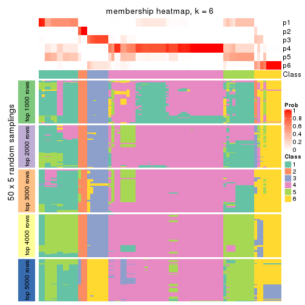
As soon as we have had the classes for columns, we can look for signatures which are significantly different between classes which can be candidate marks for certain classes. Following are the heatmaps for signatures.
Signature heatmaps where rows are scaled:
get_signatures(res, k = 2)
get_signatures(res, k = 3)
get_signatures(res, k = 4)
get_signatures(res, k = 5)
get_signatures(res, k = 6)
Signature heatmaps where rows are not scaled:
get_signatures(res, k = 2, scale_rows = FALSE)
get_signatures(res, k = 3, scale_rows = FALSE)
get_signatures(res, k = 4, scale_rows = FALSE)
get_signatures(res, k = 5, scale_rows = FALSE)
get_signatures(res, k = 6, scale_rows = FALSE)
Compare the overlap of signatures from different k:
compare_signatures(res)
get_signature() returns a data frame invisibly. TO get the list of signatures, the function
call should be assigned to a variable explicitly. In following code, if plot argument is set
to FALSE, no heatmap is plotted while only the differential analysis is performed.
# code only for demonstration
tb = get_signature(res, k = ..., plot = FALSE)
An example of the output of tb is:
#> which_row fdr mean_1 mean_2 scaled_mean_1 scaled_mean_2 km
#> 1 38 0.042760348 8.373488 9.131774 -0.5533452 0.5164555 1
#> 2 40 0.018707592 7.106213 8.469186 -0.6173731 0.5762149 1
#> 3 55 0.019134737 10.221463 11.207825 -0.6159697 0.5749050 1
#> 4 59 0.006059896 5.921854 7.869574 -0.6899429 0.6439467 1
#> 5 60 0.018055526 8.928898 10.211722 -0.6204761 0.5791110 1
#> 6 98 0.009384629 15.714769 14.887706 0.6635654 -0.6193277 2
...
The columns in tb are:
which_row: row indices corresponding to the input matrix.fdr: FDR for the differential test. mean_x: The mean value in group x.scaled_mean_x: The mean value in group x after rows are scaled.km: Row groups if k-means clustering is applied to rows.UMAP plot which shows how samples are separated.
dimension_reduction(res, k = 2, method = "UMAP")
dimension_reduction(res, k = 3, method = "UMAP")
dimension_reduction(res, k = 4, method = "UMAP")
dimension_reduction(res, k = 5, method = "UMAP")
dimension_reduction(res, k = 6, method = "UMAP")
Following heatmap shows how subgroups are split when increasing k:
collect_classes(res)
If matrix rows can be associated to genes, consider to use GO_Enrichment(res,
...) to perform function enrichment for the signature genes.
The object with results only for a single top-value method and a single partition method can be extracted as:
res = res_list["CV", "kmeans"]
# you can also extract it by
# res = res_list["CV:kmeans"]
A summary of res and all the functions that can be applied to it:
res
#> A 'ConsensusPartition' object with k = 2, 3, 4, 5, 6.
#> On a matrix with 16751 rows and 80 columns.
#> Top rows (1000, 2000, 3000, 4000, 5000) are extracted by 'CV' method.
#> Subgroups are detected by 'kmeans' method.
#> Performed in total 1250 partitions by row resampling.
#> Best k for subgroups seems to be 3.
#>
#> Following methods can be applied to this 'ConsensusPartition' object:
#> [1] "cola_report" "collect_classes" "collect_plots"
#> [4] "collect_stats" "colnames" "compare_signatures"
#> [7] "consensus_heatmap" "dimension_reduction" "functional_enrichment"
#> [10] "get_anno_col" "get_anno" "get_classes"
#> [13] "get_consensus" "get_matrix" "get_membership"
#> [16] "get_param" "get_signatures" "get_stats"
#> [19] "is_best_k" "is_stable_k" "membership_heatmap"
#> [22] "ncol" "nrow" "plot_ecdf"
#> [25] "rownames" "select_partition_number" "show"
#> [28] "suggest_best_k" "test_to_known_factors"
collect_plots() function collects all the plots made from res for all k (number of partitions)
into one single page to provide an easy and fast comparison between different k.
collect_plots(res)
The plots are:
k and the heatmap of
predicted classes for each k.k.k.k.All the plots in panels can be made by individual functions and they are plotted later in this section.
select_partition_number() produces several plots showing different
statistics for choosing “optimized” k. There are following statistics:
k;k, the area increased is defined as \(A_k - A_{k-1}\).The detailed explanations of these statistics can be found in the cola vignette.
Generally speaking, lower PAC score, higher mean silhouette score or higher
concordance corresponds to better partition. Rand index and Jaccard index
measure how similar the current partition is compared to partition with k-1.
If they are too similar, we won't accept k is better than k-1.
select_partition_number(res)
The numeric values for all these statistics can be obtained by get_stats().
get_stats(res)
#> k 1-PAC mean_silhouette concordance area_increased Rand Jaccard
#> 2 2 0.705 0.898 0.954 0.4192 0.585 0.585
#> 3 3 0.506 0.796 0.826 0.4580 0.742 0.571
#> 4 4 0.565 0.588 0.747 0.1419 0.973 0.926
#> 5 5 0.555 0.691 0.755 0.0839 0.859 0.595
#> 6 6 0.642 0.549 0.693 0.0624 0.879 0.540
suggest_best_k() suggests the best \(k\) based on these statistics. The rules are as follows:
NA.suggest_best_k(res)
#> [1] 3
Following shows the table of the partitions (You need to click the show/hide
code output link to see it). The membership matrix (columns with name p*)
is inferred by
clue::cl_consensus()
function with the SE method. Basically the value in the membership matrix
represents the probability to belong to a certain group. The finall class
label for an item is determined with the group with highest probability it
belongs to.
In get_classes() function, the entropy is calculated from the membership
matrix and the silhouette score is calculated from the consensus matrix.
cbind(get_classes(res, k = 2), get_membership(res, k = 2))
#> class entropy silhouette p1 p2
#> 71A0AB6A-CFC2-46F6-878C-6052C5B43D22 2 0.6438 0.827 0.164 0.836
#> EFC730EC-6385-4167-A65A-F2A3AAEDA2AC 2 0.1414 0.944 0.020 0.980
#> 14F2F39A-EA0F-4027-8877-FEEEEFF1F085 2 0.0000 0.953 0.000 1.000
#> 98B2A7F8-A7BD-4DA2-8541-950E44D9ACD7 2 0.0000 0.953 0.000 1.000
#> 9166F454-2068-46C2-B2EB-FB3BE4126536 1 0.0000 0.937 1.000 0.000
#> 83B2A0BB-CE24-4DCA-B03A-D20353304365 2 0.0000 0.953 0.000 1.000
#> D3FC3968-B263-4756-BF7F-1941F70B04DA 2 0.4690 0.866 0.100 0.900
#> D357AC5C-C2A0-4CC4-B016-4572400AF117 2 0.0000 0.953 0.000 1.000
#> 1055E951-5B93-4AD7-BE5C-4DF4F6AECEF3 2 0.0000 0.953 0.000 1.000
#> F2995599-3F21-4F33-92BB-7D70A4735938 1 0.0376 0.936 0.996 0.004
#> 3EE533BD-5832-4007-8F1F-439166256EB0 2 0.0000 0.953 0.000 1.000
#> EEC6DA0C-5C49-4EFE-976A-19F432DDAA58 1 0.0000 0.937 1.000 0.000
#> E6E08C1A-4C1B-4572-92DF-DA15BCBADF76 2 0.0000 0.953 0.000 1.000
#> BCFCBBAC-EB95-47EB-9EB0-2CB4AE283A75 2 0.6438 0.827 0.164 0.836
#> 0782D6D0-668B-4B83-8C91-8A35EA3BFF6D 2 0.0000 0.953 0.000 1.000
#> AC78918E-1031-4AE6-B753-B0799171F0F0 1 0.0000 0.937 1.000 0.000
#> 6B497CED-34DA-4CF8-8F8D-696105CB3D5F 2 0.6438 0.827 0.164 0.836
#> 2328D472-583B-43A9-81A4-A21DDEBB5B18 2 0.0000 0.953 0.000 1.000
#> A6930B33-D9B2-4318-807C-4A25EB4CCCDD 2 0.0000 0.953 0.000 1.000
#> C8C48AFD-4D8B-491E-993C-3506DC6DD00F 1 0.9732 0.310 0.596 0.404
#> 093FB845-7905-4064-8E8E-76E3587D8E7C 2 0.6343 0.832 0.160 0.840
#> B216F996-CCD8-4F56-99B1-4EA9769B10B8 2 0.6343 0.832 0.160 0.840
#> CB35DED2-5FEA-43E2-AB42-B6B3A7444B66 2 0.1414 0.944 0.020 0.980
#> BA016F57-F58F-4A66-B85A-0B0F911EEA65 2 0.0000 0.953 0.000 1.000
#> 519DBD5F-66C0-4CEE-905C-799C855D28FB 1 0.0000 0.937 1.000 0.000
#> F5B9B89B-6821-43EE-BCFD-623689D03AF9 2 0.0000 0.953 0.000 1.000
#> 55A39F92-CC88-4A2F-A7D3-7A59DEBEBB42 2 0.1414 0.944 0.020 0.980
#> 3DBBDEDA-F9FC-40DC-804F-45429EA47ED4 2 0.6148 0.840 0.152 0.848
#> BB948BE8-7D48-4AEB-A404-C27A79655D7E 2 0.9732 0.348 0.404 0.596
#> 9506723F-9193-4D8E-BD97-8A0062AB2F9C 2 0.6438 0.827 0.164 0.836
#> D0758A7A-9D0E-4EA4-8EE9-7143B398647D 2 0.6438 0.827 0.164 0.836
#> F400FD4D-72D7-4933-B145-64B7EE245FFC 2 0.0000 0.953 0.000 1.000
#> 3F87E9ED-3719-48E1-8B69-E352A03E982D 2 0.0000 0.953 0.000 1.000
#> D6365FEB-CC12-4337-BF8C-66236A585B5D 2 0.0000 0.953 0.000 1.000
#> A4168812-C38E-4F15-9AF6-79F256279E72 2 0.5408 0.867 0.124 0.876
#> DB676839-02AA-42A7-962F-89D6AD892008 1 0.0000 0.937 1.000 0.000
#> 198D8E89-51FD-41DE-AD11-FB2F2FE49908 2 0.0000 0.953 0.000 1.000
#> 2BADCD01-27E8-49EC-B707-4FAE3D3CB489 1 0.9710 0.321 0.600 0.400
#> ABBD6EFE-079B-4BE3-95AB-36AF9197D684 2 0.0000 0.953 0.000 1.000
#> 39D66B95-61C7-4B76-8E81-1F9F98024B69 1 0.0376 0.936 0.996 0.004
#> 7A920210-CF3D-4458-B6D5-D9B2ADACA469 1 0.0000 0.937 1.000 0.000
#> 0CE61CDC-3257-4F03-951B-CC2CFCF675AE 2 0.0000 0.953 0.000 1.000
#> 7338D61C-77D6-4095-8847-7FD9967B7646 1 0.1414 0.925 0.980 0.020
#> 0D36FAD5-BA81-4FED-9E2A-DB016F2EF18C 1 0.0376 0.936 0.996 0.004
#> 43CD31CD-5FAE-418A-B235-49E54560590D 2 0.0000 0.953 0.000 1.000
#> B6DD72B0-EEFA-41A9-B71D-22DE1343CD32 2 0.1414 0.944 0.020 0.980
#> 2B729CD9-71A5-4336-ACBA-922A30AF4949 2 0.0000 0.953 0.000 1.000
#> B76DB955-69B7-4D05-8166-2569ED44628C 1 0.0000 0.937 1.000 0.000
#> 09CBEE39-7141-4228-AFD3-4714E32A1FB5 2 0.0000 0.953 0.000 1.000
#> AC1700D5-72E7-4C7F-A288-869DFC229252 1 0.9732 0.310 0.596 0.404
#> 535A5E8E-8478-477F-87FF-ED6742AA5473 2 0.0000 0.953 0.000 1.000
#> CFB8573C-9F36-4715-B6F1-6E5B543168A8 1 0.0376 0.936 0.996 0.004
#> 47A45491-6023-44BF-ABC2-9A470F7FC1F7 2 0.0000 0.953 0.000 1.000
#> 437C7AA7-98C0-48C7-97DA-86FF44D69B87 2 0.0000 0.953 0.000 1.000
#> 649ADE7E-6C06-4AB6-8E97-D8C2AAF79A7E 1 0.1184 0.927 0.984 0.016
#> DEA60B47-AD6A-4EBB-9402-6F97E9640E4E 2 0.0000 0.953 0.000 1.000
#> 76C574FF-26BF-49CD-9BCA-7BDDCBD06D5D 2 0.0000 0.953 0.000 1.000
#> 8B6E1F9B-1E90-4333-8E0C-EEDFF25D15C0 2 0.0000 0.953 0.000 1.000
#> A2473EE7-72D6-4D32-9DF7-5D4E444A6715 2 0.0000 0.953 0.000 1.000
#> E226C45E-5287-4D0F-A34B-CE251FA293CB 1 0.0000 0.937 1.000 0.000
#> A2C71C07-AF0C-4016-808C-DFEF458C91C7 1 0.0376 0.936 0.996 0.004
#> DA00D60F-4CF1-4003-BAF5-896EE2BEE2D4 2 0.0000 0.953 0.000 1.000
#> 1C17B65F-1930-4CF3-99B6-5D3AA9E99188 2 0.0000 0.953 0.000 1.000
#> B837D582-A0D3-46BE-8ECA-883F5396AE88 2 0.1414 0.944 0.020 0.980
#> EF1A102F-C206-4874-8F27-0BF069A613B8 2 0.1414 0.944 0.020 0.980
#> BC761676-F64C-476A-8D9B-BD3E6149B2CD 2 0.0000 0.953 0.000 1.000
#> D8351E5C-DC1D-4B4D-83E6-735B2750D944 2 0.0000 0.953 0.000 1.000
#> 59F65F61-03D0-4909-99BD-4CCB53A088A5 2 0.0000 0.953 0.000 1.000
#> EFFCCF33-60E1-4550-B13C-14C54ADCF479 2 0.0000 0.953 0.000 1.000
#> C45EB423-CC14-4BDB-A0B4-447E5DB6DA9C 1 0.0000 0.937 1.000 0.000
#> D34B0BC6-9142-48AE-A113-5923192644A0 2 0.5294 0.870 0.120 0.880
#> 634672A6-C68E-479F-AAB5-CBAFF7758EA4 1 0.0000 0.937 1.000 0.000
#> 06DAE086-D960-4156-9DC8-D126338E2F29 2 0.5737 0.823 0.136 0.864
#> 3353F579-77CA-4D0E-B794-37DE467CC065 1 0.0000 0.937 1.000 0.000
#> 976507F2-192B-4095-920A-3014889CD617 1 0.0000 0.937 1.000 0.000
#> 3FFF89D9-02F5-4D49-8631-099562BF99C7 2 0.0000 0.953 0.000 1.000
#> 8BC2213D-99DA-44E0-826F-EBF211EECFBF 1 0.0000 0.937 1.000 0.000
#> A7A16BF7-5E60-4E50-BE04-542EFC4DB472 2 0.0000 0.953 0.000 1.000
#> E25C9578-9493-466E-A2CD-546DEB076B2D 2 0.0000 0.953 0.000 1.000
#> EA35E230-DE50-45AB-A737-D5C430652A90 2 0.5408 0.867 0.124 0.876
cbind(get_classes(res, k = 3), get_membership(res, k = 3))
#> class entropy silhouette p1 p2 p3
#> 71A0AB6A-CFC2-46F6-878C-6052C5B43D22 1 0.4351 0.93548 0.828 0.168 0.004
#> EFC730EC-6385-4167-A65A-F2A3AAEDA2AC 2 0.6095 -0.06723 0.392 0.608 0.000
#> 14F2F39A-EA0F-4027-8877-FEEEEFF1F085 2 0.4605 0.76641 0.204 0.796 0.000
#> 98B2A7F8-A7BD-4DA2-8541-950E44D9ACD7 2 0.4346 0.77712 0.184 0.816 0.000
#> 9166F454-2068-46C2-B2EB-FB3BE4126536 3 0.2187 0.90182 0.028 0.024 0.948
#> 83B2A0BB-CE24-4DCA-B03A-D20353304365 2 0.3816 0.79195 0.148 0.852 0.000
#> D3FC3968-B263-4756-BF7F-1941F70B04DA 2 0.1636 0.77797 0.016 0.964 0.020
#> D357AC5C-C2A0-4CC4-B016-4572400AF117 2 0.4654 0.76584 0.208 0.792 0.000
#> 1055E951-5B93-4AD7-BE5C-4DF4F6AECEF3 2 0.0237 0.79976 0.004 0.996 0.000
#> F2995599-3F21-4F33-92BB-7D70A4735938 3 0.6625 0.84970 0.080 0.176 0.744
#> 3EE533BD-5832-4007-8F1F-439166256EB0 2 0.4654 0.76295 0.208 0.792 0.000
#> EEC6DA0C-5C49-4EFE-976A-19F432DDAA58 3 0.2187 0.90182 0.028 0.024 0.948
#> E6E08C1A-4C1B-4572-92DF-DA15BCBADF76 2 0.0892 0.79003 0.020 0.980 0.000
#> BCFCBBAC-EB95-47EB-9EB0-2CB4AE283A75 1 0.4351 0.93548 0.828 0.168 0.004
#> 0782D6D0-668B-4B83-8C91-8A35EA3BFF6D 2 0.4291 0.77704 0.180 0.820 0.000
#> AC78918E-1031-4AE6-B753-B0799171F0F0 3 0.3412 0.87457 0.124 0.000 0.876
#> 6B497CED-34DA-4CF8-8F8D-696105CB3D5F 1 0.4351 0.93548 0.828 0.168 0.004
#> 2328D472-583B-43A9-81A4-A21DDEBB5B18 2 0.5621 0.65545 0.308 0.692 0.000
#> A6930B33-D9B2-4318-807C-4A25EB4CCCDD 2 0.4605 0.76641 0.204 0.796 0.000
#> C8C48AFD-4D8B-491E-993C-3506DC6DD00F 1 0.4449 0.86583 0.860 0.100 0.040
#> 093FB845-7905-4064-8E8E-76E3587D8E7C 1 0.4351 0.93548 0.828 0.168 0.004
#> B216F996-CCD8-4F56-99B1-4EA9769B10B8 1 0.4351 0.93548 0.828 0.168 0.004
#> CB35DED2-5FEA-43E2-AB42-B6B3A7444B66 1 0.4178 0.93474 0.828 0.172 0.000
#> BA016F57-F58F-4A66-B85A-0B0F911EEA65 2 0.0237 0.79976 0.004 0.996 0.000
#> 519DBD5F-66C0-4CEE-905C-799C855D28FB 3 0.3412 0.87457 0.124 0.000 0.876
#> F5B9B89B-6821-43EE-BCFD-623689D03AF9 2 0.4605 0.76641 0.204 0.796 0.000
#> 55A39F92-CC88-4A2F-A7D3-7A59DEBEBB42 1 0.4178 0.93474 0.828 0.172 0.000
#> 3DBBDEDA-F9FC-40DC-804F-45429EA47ED4 1 0.3879 0.92061 0.848 0.152 0.000
#> BB948BE8-7D48-4AEB-A404-C27A79655D7E 1 0.4136 0.88605 0.864 0.116 0.020
#> 9506723F-9193-4D8E-BD97-8A0062AB2F9C 1 0.4351 0.93548 0.828 0.168 0.004
#> D0758A7A-9D0E-4EA4-8EE9-7143B398647D 1 0.4351 0.93548 0.828 0.168 0.004
#> F400FD4D-72D7-4933-B145-64B7EE245FFC 2 0.0237 0.79976 0.004 0.996 0.000
#> 3F87E9ED-3719-48E1-8B69-E352A03E982D 1 0.4178 0.93474 0.828 0.172 0.000
#> D6365FEB-CC12-4337-BF8C-66236A585B5D 2 0.5360 0.75873 0.220 0.768 0.012
#> A4168812-C38E-4F15-9AF6-79F256279E72 1 0.4178 0.93474 0.828 0.172 0.000
#> DB676839-02AA-42A7-962F-89D6AD892008 3 0.2187 0.90182 0.028 0.024 0.948
#> 198D8E89-51FD-41DE-AD11-FB2F2FE49908 2 0.0892 0.79003 0.020 0.980 0.000
#> 2BADCD01-27E8-49EC-B707-4FAE3D3CB489 1 0.7181 0.61641 0.648 0.304 0.048
#> ABBD6EFE-079B-4BE3-95AB-36AF9197D684 2 0.2959 0.79873 0.100 0.900 0.000
#> 39D66B95-61C7-4B76-8E81-1F9F98024B69 3 0.4953 0.86132 0.016 0.176 0.808
#> 7A920210-CF3D-4458-B6D5-D9B2ADACA469 3 0.2187 0.90182 0.028 0.024 0.948
#> 0CE61CDC-3257-4F03-951B-CC2CFCF675AE 2 0.0424 0.79486 0.008 0.992 0.000
#> 7338D61C-77D6-4095-8847-7FD9967B7646 3 0.7865 0.80271 0.124 0.216 0.660
#> 0D36FAD5-BA81-4FED-9E2A-DB016F2EF18C 3 0.4953 0.86132 0.016 0.176 0.808
#> 43CD31CD-5FAE-418A-B235-49E54560590D 2 0.4654 0.76584 0.208 0.792 0.000
#> B6DD72B0-EEFA-41A9-B71D-22DE1343CD32 1 0.4121 0.93374 0.832 0.168 0.000
#> 2B729CD9-71A5-4336-ACBA-922A30AF4949 2 0.0424 0.79486 0.008 0.992 0.000
#> B76DB955-69B7-4D05-8166-2569ED44628C 3 0.2187 0.90182 0.028 0.024 0.948
#> 09CBEE39-7141-4228-AFD3-4714E32A1FB5 2 0.4842 0.75043 0.224 0.776 0.000
#> AC1700D5-72E7-4C7F-A288-869DFC229252 1 0.7012 0.61996 0.652 0.308 0.040
#> 535A5E8E-8478-477F-87FF-ED6742AA5473 2 0.4605 0.76641 0.204 0.796 0.000
#> CFB8573C-9F36-4715-B6F1-6E5B543168A8 3 0.7281 0.83505 0.140 0.148 0.712
#> 47A45491-6023-44BF-ABC2-9A470F7FC1F7 2 0.0237 0.79976 0.004 0.996 0.000
#> 437C7AA7-98C0-48C7-97DA-86FF44D69B87 2 0.0237 0.79976 0.004 0.996 0.000
#> 649ADE7E-6C06-4AB6-8E97-D8C2AAF79A7E 3 0.4995 0.87028 0.144 0.032 0.824
#> DEA60B47-AD6A-4EBB-9402-6F97E9640E4E 2 0.0237 0.79976 0.004 0.996 0.000
#> 76C574FF-26BF-49CD-9BCA-7BDDCBD06D5D 2 0.4605 0.76641 0.204 0.796 0.000
#> 8B6E1F9B-1E90-4333-8E0C-EEDFF25D15C0 1 0.5760 0.63986 0.672 0.328 0.000
#> A2473EE7-72D6-4D32-9DF7-5D4E444A6715 2 0.0424 0.79486 0.008 0.992 0.000
#> E226C45E-5287-4D0F-A34B-CE251FA293CB 3 0.2564 0.90181 0.028 0.036 0.936
#> A2C71C07-AF0C-4016-808C-DFEF458C91C7 3 0.4953 0.86132 0.016 0.176 0.808
#> DA00D60F-4CF1-4003-BAF5-896EE2BEE2D4 2 0.0237 0.79976 0.004 0.996 0.000
#> 1C17B65F-1930-4CF3-99B6-5D3AA9E99188 2 0.0237 0.79976 0.004 0.996 0.000
#> B837D582-A0D3-46BE-8ECA-883F5396AE88 2 0.6026 0.00153 0.376 0.624 0.000
#> EF1A102F-C206-4874-8F27-0BF069A613B8 2 0.6180 -0.11126 0.416 0.584 0.000
#> BC761676-F64C-476A-8D9B-BD3E6149B2CD 2 0.5497 0.65372 0.292 0.708 0.000
#> D8351E5C-DC1D-4B4D-83E6-735B2750D944 2 0.5173 0.75188 0.148 0.816 0.036
#> 59F65F61-03D0-4909-99BD-4CCB53A088A5 1 0.4178 0.93474 0.828 0.172 0.000
#> EFFCCF33-60E1-4550-B13C-14C54ADCF479 2 0.5431 0.66099 0.284 0.716 0.000
#> C45EB423-CC14-4BDB-A0B4-447E5DB6DA9C 3 0.2187 0.90182 0.028 0.024 0.948
#> D34B0BC6-9142-48AE-A113-5923192644A0 1 0.4178 0.93474 0.828 0.172 0.000
#> 634672A6-C68E-479F-AAB5-CBAFF7758EA4 3 0.4475 0.87702 0.016 0.144 0.840
#> 06DAE086-D960-4156-9DC8-D126338E2F29 2 0.2743 0.74476 0.020 0.928 0.052
#> 3353F579-77CA-4D0E-B794-37DE467CC065 3 0.4810 0.87260 0.140 0.028 0.832
#> 976507F2-192B-4095-920A-3014889CD617 3 0.1163 0.89282 0.028 0.000 0.972
#> 3FFF89D9-02F5-4D49-8631-099562BF99C7 2 0.0237 0.79976 0.004 0.996 0.000
#> 8BC2213D-99DA-44E0-826F-EBF211EECFBF 3 0.1905 0.90172 0.016 0.028 0.956
#> A7A16BF7-5E60-4E50-BE04-542EFC4DB472 2 0.4605 0.76641 0.204 0.796 0.000
#> E25C9578-9493-466E-A2CD-546DEB076B2D 2 0.4605 0.76641 0.204 0.796 0.000
#> EA35E230-DE50-45AB-A737-D5C430652A90 1 0.4178 0.93474 0.828 0.172 0.000
cbind(get_classes(res, k = 4), get_membership(res, k = 4))
#> class entropy silhouette p1 p2 p3 p4
#> 71A0AB6A-CFC2-46F6-878C-6052C5B43D22 1 0.2125 0.872 0.920 0.004 0.000 0.076
#> EFC730EC-6385-4167-A65A-F2A3AAEDA2AC 2 0.7254 0.356 0.300 0.524 0.000 0.176
#> 14F2F39A-EA0F-4027-8877-FEEEEFF1F085 2 0.4304 0.543 0.284 0.716 0.000 0.000
#> 98B2A7F8-A7BD-4DA2-8541-950E44D9ACD7 2 0.4807 0.560 0.248 0.728 0.000 0.024
#> 9166F454-2068-46C2-B2EB-FB3BE4126536 3 0.0188 0.667 0.000 0.000 0.996 0.004
#> 83B2A0BB-CE24-4DCA-B03A-D20353304365 2 0.5532 0.554 0.228 0.704 0.000 0.068
#> D3FC3968-B263-4756-BF7F-1941F70B04DA 2 0.3907 0.588 0.000 0.768 0.000 0.232
#> D357AC5C-C2A0-4CC4-B016-4572400AF117 2 0.4988 0.529 0.288 0.692 0.000 0.020
#> 1055E951-5B93-4AD7-BE5C-4DF4F6AECEF3 2 0.4228 0.596 0.008 0.760 0.000 0.232
#> F2995599-3F21-4F33-92BB-7D70A4735938 3 0.7563 0.174 0.004 0.240 0.516 0.240
#> 3EE533BD-5832-4007-8F1F-439166256EB0 2 0.4776 0.431 0.376 0.624 0.000 0.000
#> EEC6DA0C-5C49-4EFE-976A-19F432DDAA58 3 0.0188 0.667 0.000 0.000 0.996 0.004
#> E6E08C1A-4C1B-4572-92DF-DA15BCBADF76 2 0.4454 0.550 0.000 0.692 0.000 0.308
#> BCFCBBAC-EB95-47EB-9EB0-2CB4AE283A75 1 0.0469 0.871 0.988 0.012 0.000 0.000
#> 0782D6D0-668B-4B83-8C91-8A35EA3BFF6D 2 0.4040 0.564 0.248 0.752 0.000 0.000
#> AC78918E-1031-4AE6-B753-B0799171F0F0 4 0.4877 0.623 0.000 0.000 0.408 0.592
#> 6B497CED-34DA-4CF8-8F8D-696105CB3D5F 1 0.2197 0.871 0.916 0.004 0.000 0.080
#> 2328D472-583B-43A9-81A4-A21DDEBB5B18 2 0.6665 0.348 0.360 0.544 0.000 0.096
#> A6930B33-D9B2-4318-807C-4A25EB4CCCDD 2 0.4304 0.543 0.284 0.716 0.000 0.000
#> C8C48AFD-4D8B-491E-993C-3506DC6DD00F 1 0.2676 0.863 0.896 0.012 0.000 0.092
#> 093FB845-7905-4064-8E8E-76E3587D8E7C 1 0.1182 0.871 0.968 0.016 0.000 0.016
#> B216F996-CCD8-4F56-99B1-4EA9769B10B8 1 0.2334 0.870 0.908 0.004 0.000 0.088
#> CB35DED2-5FEA-43E2-AB42-B6B3A7444B66 1 0.1182 0.871 0.968 0.016 0.000 0.016
#> BA016F57-F58F-4A66-B85A-0B0F911EEA65 2 0.4228 0.596 0.008 0.760 0.000 0.232
#> 519DBD5F-66C0-4CEE-905C-799C855D28FB 4 0.4877 0.623 0.000 0.000 0.408 0.592
#> F5B9B89B-6821-43EE-BCFD-623689D03AF9 2 0.4304 0.543 0.284 0.716 0.000 0.000
#> 55A39F92-CC88-4A2F-A7D3-7A59DEBEBB42 1 0.1182 0.871 0.968 0.016 0.000 0.016
#> 3DBBDEDA-F9FC-40DC-804F-45429EA47ED4 1 0.3606 0.824 0.840 0.020 0.000 0.140
#> BB948BE8-7D48-4AEB-A404-C27A79655D7E 1 0.2345 0.865 0.900 0.000 0.000 0.100
#> 9506723F-9193-4D8E-BD97-8A0062AB2F9C 1 0.2197 0.871 0.916 0.004 0.000 0.080
#> D0758A7A-9D0E-4EA4-8EE9-7143B398647D 1 0.2197 0.871 0.916 0.004 0.000 0.080
#> F400FD4D-72D7-4933-B145-64B7EE245FFC 2 0.4228 0.596 0.008 0.760 0.000 0.232
#> 3F87E9ED-3719-48E1-8B69-E352A03E982D 1 0.0817 0.866 0.976 0.024 0.000 0.000
#> D6365FEB-CC12-4337-BF8C-66236A585B5D 2 0.6195 0.498 0.100 0.648 0.000 0.252
#> A4168812-C38E-4F15-9AF6-79F256279E72 1 0.0592 0.869 0.984 0.016 0.000 0.000
#> DB676839-02AA-42A7-962F-89D6AD892008 3 0.0188 0.667 0.000 0.000 0.996 0.004
#> 198D8E89-51FD-41DE-AD11-FB2F2FE49908 2 0.4722 0.564 0.008 0.692 0.000 0.300
#> 2BADCD01-27E8-49EC-B707-4FAE3D3CB489 1 0.9010 0.147 0.448 0.284 0.164 0.104
#> ABBD6EFE-079B-4BE3-95AB-36AF9197D684 2 0.4100 0.598 0.092 0.832 0.000 0.076
#> 39D66B95-61C7-4B76-8E81-1F9F98024B69 3 0.7195 0.304 0.004 0.232 0.572 0.192
#> 7A920210-CF3D-4458-B6D5-D9B2ADACA469 3 0.0000 0.667 0.000 0.000 1.000 0.000
#> 0CE61CDC-3257-4F03-951B-CC2CFCF675AE 2 0.4228 0.596 0.008 0.760 0.000 0.232
#> 7338D61C-77D6-4095-8847-7FD9967B7646 4 0.6275 0.141 0.004 0.272 0.084 0.640
#> 0D36FAD5-BA81-4FED-9E2A-DB016F2EF18C 3 0.7195 0.304 0.004 0.232 0.572 0.192
#> 43CD31CD-5FAE-418A-B235-49E54560590D 2 0.5157 0.533 0.284 0.688 0.000 0.028
#> B6DD72B0-EEFA-41A9-B71D-22DE1343CD32 1 0.1978 0.874 0.928 0.004 0.000 0.068
#> 2B729CD9-71A5-4336-ACBA-922A30AF4949 2 0.3907 0.588 0.000 0.768 0.000 0.232
#> B76DB955-69B7-4D05-8166-2569ED44628C 3 0.0000 0.667 0.000 0.000 1.000 0.000
#> 09CBEE39-7141-4228-AFD3-4714E32A1FB5 2 0.5453 0.479 0.320 0.648 0.000 0.032
#> AC1700D5-72E7-4C7F-A288-869DFC229252 1 0.6172 0.448 0.632 0.284 0.000 0.084
#> 535A5E8E-8478-477F-87FF-ED6742AA5473 2 0.4304 0.543 0.284 0.716 0.000 0.000
#> CFB8573C-9F36-4715-B6F1-6E5B543168A8 4 0.6087 0.586 0.004 0.048 0.352 0.596
#> 47A45491-6023-44BF-ABC2-9A470F7FC1F7 2 0.4228 0.596 0.008 0.760 0.000 0.232
#> 437C7AA7-98C0-48C7-97DA-86FF44D69B87 2 0.4228 0.596 0.008 0.760 0.000 0.232
#> 649ADE7E-6C06-4AB6-8E97-D8C2AAF79A7E 4 0.5184 0.598 0.000 0.024 0.304 0.672
#> DEA60B47-AD6A-4EBB-9402-6F97E9640E4E 2 0.4228 0.596 0.008 0.760 0.000 0.232
#> 76C574FF-26BF-49CD-9BCA-7BDDCBD06D5D 2 0.4304 0.543 0.284 0.716 0.000 0.000
#> 8B6E1F9B-1E90-4333-8E0C-EEDFF25D15C0 1 0.4817 0.228 0.612 0.388 0.000 0.000
#> A2473EE7-72D6-4D32-9DF7-5D4E444A6715 2 0.4262 0.594 0.008 0.756 0.000 0.236
#> E226C45E-5287-4D0F-A34B-CE251FA293CB 3 0.0524 0.663 0.000 0.008 0.988 0.004
#> A2C71C07-AF0C-4016-808C-DFEF458C91C7 3 0.7195 0.304 0.004 0.232 0.572 0.192
#> DA00D60F-4CF1-4003-BAF5-896EE2BEE2D4 2 0.4262 0.594 0.008 0.756 0.000 0.236
#> 1C17B65F-1930-4CF3-99B6-5D3AA9E99188 2 0.4228 0.596 0.008 0.760 0.000 0.232
#> B837D582-A0D3-46BE-8ECA-883F5396AE88 2 0.7295 0.366 0.288 0.524 0.000 0.188
#> EF1A102F-C206-4874-8F27-0BF069A613B8 2 0.7254 0.356 0.300 0.524 0.000 0.176
#> BC761676-F64C-476A-8D9B-BD3E6149B2CD 2 0.5950 0.294 0.416 0.544 0.000 0.040
#> D8351E5C-DC1D-4B4D-83E6-735B2750D944 2 0.5157 0.466 0.028 0.688 0.000 0.284
#> 59F65F61-03D0-4909-99BD-4CCB53A088A5 1 0.3271 0.756 0.856 0.132 0.000 0.012
#> EFFCCF33-60E1-4550-B13C-14C54ADCF479 2 0.4998 0.156 0.488 0.512 0.000 0.000
#> C45EB423-CC14-4BDB-A0B4-447E5DB6DA9C 3 0.0188 0.667 0.000 0.000 0.996 0.004
#> D34B0BC6-9142-48AE-A113-5923192644A0 1 0.0657 0.871 0.984 0.004 0.000 0.012
#> 634672A6-C68E-479F-AAB5-CBAFF7758EA4 3 0.6825 0.340 0.004 0.200 0.620 0.176
#> 06DAE086-D960-4156-9DC8-D126338E2F29 2 0.4382 0.556 0.000 0.704 0.000 0.296
#> 3353F579-77CA-4D0E-B794-37DE467CC065 4 0.5125 0.638 0.000 0.008 0.388 0.604
#> 976507F2-192B-4095-920A-3014889CD617 3 0.0188 0.667 0.000 0.000 0.996 0.004
#> 3FFF89D9-02F5-4D49-8631-099562BF99C7 2 0.4228 0.596 0.008 0.760 0.000 0.232
#> 8BC2213D-99DA-44E0-826F-EBF211EECFBF 3 0.4128 0.477 0.004 0.020 0.808 0.168
#> A7A16BF7-5E60-4E50-BE04-542EFC4DB472 2 0.4382 0.529 0.296 0.704 0.000 0.000
#> E25C9578-9493-466E-A2CD-546DEB076B2D 2 0.4304 0.543 0.284 0.716 0.000 0.000
#> EA35E230-DE50-45AB-A737-D5C430652A90 1 0.0817 0.866 0.976 0.024 0.000 0.000
cbind(get_classes(res, k = 5), get_membership(res, k = 5))
#> class entropy silhouette p1 p2 p3 p4 p5
#> 71A0AB6A-CFC2-46F6-878C-6052C5B43D22 1 0.2370 0.7793 0.904 0.056 0.000 0.000 0.040
#> EFC730EC-6385-4167-A65A-F2A3AAEDA2AC 4 0.4201 0.6394 0.204 0.044 0.000 0.752 0.000
#> 14F2F39A-EA0F-4027-8877-FEEEEFF1F085 2 0.5878 0.8076 0.116 0.548 0.000 0.336 0.000
#> 98B2A7F8-A7BD-4DA2-8541-950E44D9ACD7 2 0.5768 0.7893 0.084 0.580 0.000 0.328 0.008
#> 9166F454-2068-46C2-B2EB-FB3BE4126536 3 0.0000 0.6836 0.000 0.000 1.000 0.000 0.000
#> 83B2A0BB-CE24-4DCA-B03A-D20353304365 2 0.4888 0.6464 0.020 0.652 0.000 0.312 0.016
#> D3FC3968-B263-4756-BF7F-1941F70B04DA 4 0.0880 0.8545 0.000 0.032 0.000 0.968 0.000
#> D357AC5C-C2A0-4CC4-B016-4572400AF117 2 0.6359 0.8067 0.152 0.532 0.000 0.308 0.008
#> 1055E951-5B93-4AD7-BE5C-4DF4F6AECEF3 4 0.0000 0.8662 0.000 0.000 0.000 1.000 0.000
#> F2995599-3F21-4F33-92BB-7D70A4735938 3 0.8274 0.2551 0.000 0.220 0.372 0.144 0.264
#> 3EE533BD-5832-4007-8F1F-439166256EB0 2 0.6232 0.7206 0.208 0.568 0.000 0.220 0.004
#> EEC6DA0C-5C49-4EFE-976A-19F432DDAA58 3 0.0000 0.6836 0.000 0.000 1.000 0.000 0.000
#> E6E08C1A-4C1B-4572-92DF-DA15BCBADF76 4 0.3536 0.7366 0.000 0.156 0.000 0.812 0.032
#> BCFCBBAC-EB95-47EB-9EB0-2CB4AE283A75 1 0.2798 0.7600 0.852 0.140 0.000 0.000 0.008
#> 0782D6D0-668B-4B83-8C91-8A35EA3BFF6D 2 0.5182 0.7148 0.044 0.544 0.000 0.412 0.000
#> AC78918E-1031-4AE6-B753-B0799171F0F0 5 0.2179 0.8733 0.000 0.000 0.112 0.000 0.888
#> 6B497CED-34DA-4CF8-8F8D-696105CB3D5F 1 0.2228 0.7749 0.912 0.048 0.000 0.000 0.040
#> 2328D472-583B-43A9-81A4-A21DDEBB5B18 2 0.6622 0.6430 0.220 0.584 0.000 0.156 0.040
#> A6930B33-D9B2-4318-807C-4A25EB4CCCDD 2 0.5927 0.8059 0.120 0.540 0.000 0.340 0.000
#> C8C48AFD-4D8B-491E-993C-3506DC6DD00F 1 0.3339 0.7671 0.840 0.112 0.000 0.000 0.048
#> 093FB845-7905-4064-8E8E-76E3587D8E7C 1 0.3474 0.7318 0.796 0.192 0.000 0.004 0.008
#> B216F996-CCD8-4F56-99B1-4EA9769B10B8 1 0.2300 0.7743 0.908 0.052 0.000 0.000 0.040
#> CB35DED2-5FEA-43E2-AB42-B6B3A7444B66 1 0.3509 0.7281 0.792 0.196 0.000 0.004 0.008
#> BA016F57-F58F-4A66-B85A-0B0F911EEA65 4 0.0000 0.8662 0.000 0.000 0.000 1.000 0.000
#> 519DBD5F-66C0-4CEE-905C-799C855D28FB 5 0.2179 0.8733 0.000 0.000 0.112 0.000 0.888
#> F5B9B89B-6821-43EE-BCFD-623689D03AF9 2 0.5889 0.8057 0.116 0.544 0.000 0.340 0.000
#> 55A39F92-CC88-4A2F-A7D3-7A59DEBEBB42 1 0.3509 0.7291 0.792 0.196 0.000 0.004 0.008
#> 3DBBDEDA-F9FC-40DC-804F-45429EA47ED4 1 0.4509 0.6295 0.716 0.236 0.000 0.000 0.048
#> BB948BE8-7D48-4AEB-A404-C27A79655D7E 1 0.2782 0.7616 0.880 0.072 0.000 0.000 0.048
#> 9506723F-9193-4D8E-BD97-8A0062AB2F9C 1 0.2228 0.7796 0.912 0.048 0.000 0.000 0.040
#> D0758A7A-9D0E-4EA4-8EE9-7143B398647D 1 0.2153 0.7796 0.916 0.044 0.000 0.000 0.040
#> F400FD4D-72D7-4933-B145-64B7EE245FFC 4 0.0000 0.8662 0.000 0.000 0.000 1.000 0.000
#> 3F87E9ED-3719-48E1-8B69-E352A03E982D 1 0.3582 0.7011 0.768 0.224 0.000 0.000 0.008
#> D6365FEB-CC12-4337-BF8C-66236A585B5D 2 0.6520 0.6643 0.056 0.612 0.000 0.204 0.128
#> A4168812-C38E-4F15-9AF6-79F256279E72 1 0.3489 0.7151 0.784 0.208 0.000 0.004 0.004
#> DB676839-02AA-42A7-962F-89D6AD892008 3 0.0000 0.6836 0.000 0.000 1.000 0.000 0.000
#> 198D8E89-51FD-41DE-AD11-FB2F2FE49908 4 0.3098 0.7587 0.000 0.148 0.000 0.836 0.016
#> 2BADCD01-27E8-49EC-B707-4FAE3D3CB489 1 0.9460 -0.1379 0.296 0.196 0.204 0.240 0.064
#> ABBD6EFE-079B-4BE3-95AB-36AF9197D684 2 0.5324 0.6151 0.020 0.636 0.000 0.304 0.040
#> 39D66B95-61C7-4B76-8E81-1F9F98024B69 3 0.8116 0.3819 0.000 0.188 0.432 0.172 0.208
#> 7A920210-CF3D-4458-B6D5-D9B2ADACA469 3 0.0000 0.6836 0.000 0.000 1.000 0.000 0.000
#> 0CE61CDC-3257-4F03-951B-CC2CFCF675AE 4 0.0290 0.8647 0.000 0.008 0.000 0.992 0.000
#> 7338D61C-77D6-4095-8847-7FD9967B7646 4 0.6862 -0.0614 0.000 0.316 0.004 0.412 0.268
#> 0D36FAD5-BA81-4FED-9E2A-DB016F2EF18C 3 0.8118 0.3823 0.000 0.192 0.432 0.172 0.204
#> 43CD31CD-5FAE-418A-B235-49E54560590D 2 0.6017 0.8122 0.132 0.572 0.000 0.292 0.004
#> B6DD72B0-EEFA-41A9-B71D-22DE1343CD32 1 0.1582 0.7808 0.944 0.028 0.000 0.000 0.028
#> 2B729CD9-71A5-4336-ACBA-922A30AF4949 4 0.0880 0.8545 0.000 0.032 0.000 0.968 0.000
#> B76DB955-69B7-4D05-8166-2569ED44628C 3 0.0000 0.6836 0.000 0.000 1.000 0.000 0.000
#> 09CBEE39-7141-4228-AFD3-4714E32A1FB5 2 0.6555 0.7736 0.212 0.524 0.000 0.256 0.008
#> AC1700D5-72E7-4C7F-A288-869DFC229252 1 0.6925 0.3867 0.560 0.188 0.000 0.200 0.052
#> 535A5E8E-8478-477F-87FF-ED6742AA5473 2 0.5938 0.8120 0.128 0.552 0.000 0.320 0.000
#> CFB8573C-9F36-4715-B6F1-6E5B543168A8 5 0.5715 0.6543 0.000 0.204 0.080 0.040 0.676
#> 47A45491-6023-44BF-ABC2-9A470F7FC1F7 4 0.0000 0.8662 0.000 0.000 0.000 1.000 0.000
#> 437C7AA7-98C0-48C7-97DA-86FF44D69B87 4 0.0000 0.8662 0.000 0.000 0.000 1.000 0.000
#> 649ADE7E-6C06-4AB6-8E97-D8C2AAF79A7E 5 0.2719 0.8013 0.000 0.068 0.048 0.000 0.884
#> DEA60B47-AD6A-4EBB-9402-6F97E9640E4E 4 0.0000 0.8662 0.000 0.000 0.000 1.000 0.000
#> 76C574FF-26BF-49CD-9BCA-7BDDCBD06D5D 2 0.5927 0.8059 0.120 0.540 0.000 0.340 0.000
#> 8B6E1F9B-1E90-4333-8E0C-EEDFF25D15C0 2 0.5718 0.3698 0.380 0.544 0.000 0.068 0.008
#> A2473EE7-72D6-4D32-9DF7-5D4E444A6715 4 0.0290 0.8647 0.000 0.008 0.000 0.992 0.000
#> E226C45E-5287-4D0F-A34B-CE251FA293CB 3 0.0162 0.6814 0.000 0.004 0.996 0.000 0.000
#> A2C71C07-AF0C-4016-808C-DFEF458C91C7 3 0.8116 0.3819 0.000 0.188 0.432 0.172 0.208
#> DA00D60F-4CF1-4003-BAF5-896EE2BEE2D4 4 0.0000 0.8662 0.000 0.000 0.000 1.000 0.000
#> 1C17B65F-1930-4CF3-99B6-5D3AA9E99188 4 0.0000 0.8662 0.000 0.000 0.000 1.000 0.000
#> B837D582-A0D3-46BE-8ECA-883F5396AE88 4 0.4134 0.6500 0.196 0.044 0.000 0.760 0.000
#> EF1A102F-C206-4874-8F27-0BF069A613B8 4 0.4201 0.6394 0.204 0.044 0.000 0.752 0.000
#> BC761676-F64C-476A-8D9B-BD3E6149B2CD 2 0.6528 0.6002 0.344 0.496 0.000 0.148 0.012
#> D8351E5C-DC1D-4B4D-83E6-735B2750D944 2 0.6177 0.5303 0.000 0.556 0.000 0.232 0.212
#> 59F65F61-03D0-4909-99BD-4CCB53A088A5 1 0.4201 0.4212 0.664 0.328 0.000 0.000 0.008
#> EFFCCF33-60E1-4550-B13C-14C54ADCF479 2 0.5946 0.4388 0.356 0.544 0.000 0.092 0.008
#> C45EB423-CC14-4BDB-A0B4-447E5DB6DA9C 3 0.0000 0.6836 0.000 0.000 1.000 0.000 0.000
#> D34B0BC6-9142-48AE-A113-5923192644A0 1 0.1764 0.7719 0.928 0.064 0.000 0.000 0.008
#> 634672A6-C68E-479F-AAB5-CBAFF7758EA4 3 0.7935 0.4014 0.000 0.188 0.460 0.144 0.208
#> 06DAE086-D960-4156-9DC8-D126338E2F29 4 0.2727 0.7846 0.000 0.116 0.000 0.868 0.016
#> 3353F579-77CA-4D0E-B794-37DE467CC065 5 0.2068 0.8736 0.000 0.004 0.092 0.000 0.904
#> 976507F2-192B-4095-920A-3014889CD617 3 0.0000 0.6836 0.000 0.000 1.000 0.000 0.000
#> 3FFF89D9-02F5-4D49-8631-099562BF99C7 4 0.0000 0.8662 0.000 0.000 0.000 1.000 0.000
#> 8BC2213D-99DA-44E0-826F-EBF211EECFBF 3 0.6240 0.4425 0.000 0.188 0.592 0.012 0.208
#> A7A16BF7-5E60-4E50-BE04-542EFC4DB472 2 0.6009 0.8093 0.136 0.544 0.000 0.320 0.000
#> E25C9578-9493-466E-A2CD-546DEB076B2D 2 0.5987 0.8092 0.132 0.544 0.000 0.324 0.000
#> EA35E230-DE50-45AB-A737-D5C430652A90 1 0.3737 0.6973 0.764 0.224 0.000 0.004 0.008
cbind(get_classes(res, k = 6), get_membership(res, k = 6))
#> class entropy silhouette p1 p2 p3 p4 p5 p6
#> 71A0AB6A-CFC2-46F6-878C-6052C5B43D22 1 0.1908 0.7197 0.900 0.096 0.000 0.000 0.004 0.000
#> EFC730EC-6385-4167-A65A-F2A3AAEDA2AC 4 0.5510 0.5817 0.060 0.132 0.000 0.692 0.100 0.016
#> 14F2F39A-EA0F-4027-8877-FEEEEFF1F085 2 0.2994 0.5432 0.000 0.788 0.000 0.208 0.004 0.000
#> 98B2A7F8-A7BD-4DA2-8541-950E44D9ACD7 2 0.4877 0.2234 0.000 0.660 0.000 0.148 0.192 0.000
#> 9166F454-2068-46C2-B2EB-FB3BE4126536 3 0.0000 0.9974 0.000 0.000 1.000 0.000 0.000 0.000
#> 83B2A0BB-CE24-4DCA-B03A-D20353304365 5 0.5837 0.6118 0.020 0.404 0.000 0.112 0.464 0.000
#> D3FC3968-B263-4756-BF7F-1941F70B04DA 4 0.0458 0.8296 0.000 0.000 0.000 0.984 0.016 0.000
#> D357AC5C-C2A0-4CC4-B016-4572400AF117 2 0.4760 0.4440 0.040 0.728 0.000 0.144 0.088 0.000
#> 1055E951-5B93-4AD7-BE5C-4DF4F6AECEF3 4 0.0363 0.8432 0.000 0.012 0.000 0.988 0.000 0.000
#> F2995599-3F21-4F33-92BB-7D70A4735938 6 0.5794 0.5303 0.000 0.000 0.252 0.124 0.036 0.588
#> 3EE533BD-5832-4007-8F1F-439166256EB0 2 0.2039 0.5253 0.000 0.904 0.000 0.076 0.020 0.000
#> EEC6DA0C-5C49-4EFE-976A-19F432DDAA58 3 0.0000 0.9974 0.000 0.000 1.000 0.000 0.000 0.000
#> E6E08C1A-4C1B-4572-92DF-DA15BCBADF76 4 0.4361 0.1425 0.000 0.024 0.000 0.552 0.424 0.000
#> BCFCBBAC-EB95-47EB-9EB0-2CB4AE283A75 1 0.5913 0.3850 0.532 0.320 0.000 0.004 0.124 0.020
#> 0782D6D0-668B-4B83-8C91-8A35EA3BFF6D 2 0.3489 0.4303 0.000 0.708 0.000 0.288 0.004 0.000
#> AC78918E-1031-4AE6-B753-B0799171F0F0 6 0.5537 0.4651 0.048 0.020 0.036 0.000 0.272 0.624
#> 6B497CED-34DA-4CF8-8F8D-696105CB3D5F 1 0.1531 0.7320 0.928 0.068 0.000 0.000 0.004 0.000
#> 2328D472-583B-43A9-81A4-A21DDEBB5B18 5 0.6049 0.6227 0.112 0.316 0.000 0.044 0.528 0.000
#> A6930B33-D9B2-4318-807C-4A25EB4CCCDD 2 0.3134 0.5443 0.004 0.784 0.000 0.208 0.004 0.000
#> C8C48AFD-4D8B-491E-993C-3506DC6DD00F 1 0.3738 0.5752 0.752 0.040 0.000 0.000 0.208 0.000
#> 093FB845-7905-4064-8E8E-76E3587D8E7C 1 0.6396 0.1889 0.392 0.384 0.000 0.000 0.200 0.024
#> B216F996-CCD8-4F56-99B1-4EA9769B10B8 1 0.1643 0.7318 0.924 0.068 0.000 0.000 0.008 0.000
#> CB35DED2-5FEA-43E2-AB42-B6B3A7444B66 2 0.6362 -0.2565 0.376 0.408 0.000 0.000 0.192 0.024
#> BA016F57-F58F-4A66-B85A-0B0F911EEA65 4 0.0363 0.8432 0.000 0.012 0.000 0.988 0.000 0.000
#> 519DBD5F-66C0-4CEE-905C-799C855D28FB 6 0.5520 0.4672 0.048 0.016 0.040 0.000 0.272 0.624
#> F5B9B89B-6821-43EE-BCFD-623689D03AF9 2 0.2854 0.5439 0.000 0.792 0.000 0.208 0.000 0.000
#> 55A39F92-CC88-4A2F-A7D3-7A59DEBEBB42 2 0.6396 -0.2787 0.388 0.388 0.000 0.000 0.200 0.024
#> 3DBBDEDA-F9FC-40DC-804F-45429EA47ED4 5 0.5289 0.2402 0.336 0.092 0.000 0.008 0.564 0.000
#> BB948BE8-7D48-4AEB-A404-C27A79655D7E 1 0.3062 0.6782 0.836 0.052 0.000 0.000 0.112 0.000
#> 9506723F-9193-4D8E-BD97-8A0062AB2F9C 1 0.1556 0.7305 0.920 0.080 0.000 0.000 0.000 0.000
#> D0758A7A-9D0E-4EA4-8EE9-7143B398647D 1 0.1700 0.7299 0.916 0.080 0.000 0.000 0.004 0.000
#> F400FD4D-72D7-4933-B145-64B7EE245FFC 4 0.0363 0.8432 0.000 0.012 0.000 0.988 0.000 0.000
#> 3F87E9ED-3719-48E1-8B69-E352A03E982D 2 0.5974 -0.0296 0.344 0.508 0.000 0.004 0.124 0.020
#> D6365FEB-CC12-4337-BF8C-66236A585B5D 5 0.5436 0.6174 0.016 0.408 0.000 0.064 0.508 0.004
#> A4168812-C38E-4F15-9AF6-79F256279E72 2 0.6127 -0.1240 0.376 0.468 0.000 0.004 0.128 0.024
#> DB676839-02AA-42A7-962F-89D6AD892008 3 0.0000 0.9974 0.000 0.000 1.000 0.000 0.000 0.000
#> 198D8E89-51FD-41DE-AD11-FB2F2FE49908 4 0.4453 0.1783 0.000 0.032 0.000 0.568 0.400 0.000
#> 2BADCD01-27E8-49EC-B707-4FAE3D3CB489 1 0.7851 -0.0512 0.372 0.008 0.068 0.276 0.036 0.240
#> ABBD6EFE-079B-4BE3-95AB-36AF9197D684 5 0.5811 0.6572 0.020 0.360 0.000 0.116 0.504 0.000
#> 39D66B95-61C7-4B76-8E81-1F9F98024B69 6 0.5454 0.5165 0.000 0.000 0.292 0.156 0.000 0.552
#> 7A920210-CF3D-4458-B6D5-D9B2ADACA469 3 0.0146 0.9957 0.000 0.000 0.996 0.000 0.000 0.004
#> 0CE61CDC-3257-4F03-951B-CC2CFCF675AE 4 0.0146 0.8381 0.000 0.000 0.000 0.996 0.004 0.000
#> 7338D61C-77D6-4095-8847-7FD9967B7646 5 0.6443 0.1425 0.000 0.024 0.000 0.320 0.428 0.228
#> 0D36FAD5-BA81-4FED-9E2A-DB016F2EF18C 6 0.5454 0.5165 0.000 0.000 0.292 0.156 0.000 0.552
#> 43CD31CD-5FAE-418A-B235-49E54560590D 2 0.3698 0.4156 0.000 0.788 0.000 0.096 0.116 0.000
#> B6DD72B0-EEFA-41A9-B71D-22DE1343CD32 1 0.2852 0.7200 0.856 0.080 0.000 0.000 0.064 0.000
#> 2B729CD9-71A5-4336-ACBA-922A30AF4949 4 0.0260 0.8359 0.000 0.000 0.000 0.992 0.008 0.000
#> B76DB955-69B7-4D05-8166-2569ED44628C 3 0.0146 0.9957 0.000 0.000 0.996 0.000 0.000 0.004
#> 09CBEE39-7141-4228-AFD3-4714E32A1FB5 2 0.5323 0.3782 0.096 0.692 0.000 0.120 0.092 0.000
#> AC1700D5-72E7-4C7F-A288-869DFC229252 1 0.6079 0.3653 0.588 0.008 0.000 0.212 0.036 0.156
#> 535A5E8E-8478-477F-87FF-ED6742AA5473 2 0.2948 0.5408 0.000 0.804 0.000 0.188 0.008 0.000
#> CFB8573C-9F36-4715-B6F1-6E5B543168A8 6 0.3806 0.4972 0.000 0.000 0.024 0.040 0.144 0.792
#> 47A45491-6023-44BF-ABC2-9A470F7FC1F7 4 0.0363 0.8432 0.000 0.012 0.000 0.988 0.000 0.000
#> 437C7AA7-98C0-48C7-97DA-86FF44D69B87 4 0.0363 0.8432 0.000 0.012 0.000 0.988 0.000 0.000
#> 649ADE7E-6C06-4AB6-8E97-D8C2AAF79A7E 6 0.5360 0.2805 0.048 0.016 0.008 0.000 0.428 0.500
#> DEA60B47-AD6A-4EBB-9402-6F97E9640E4E 4 0.0363 0.8432 0.000 0.012 0.000 0.988 0.000 0.000
#> 76C574FF-26BF-49CD-9BCA-7BDDCBD06D5D 2 0.3134 0.5443 0.004 0.784 0.000 0.208 0.004 0.000
#> 8B6E1F9B-1E90-4333-8E0C-EEDFF25D15C0 2 0.4294 0.4694 0.048 0.784 0.000 0.028 0.120 0.020
#> A2473EE7-72D6-4D32-9DF7-5D4E444A6715 4 0.0363 0.8374 0.000 0.000 0.000 0.988 0.012 0.000
#> E226C45E-5287-4D0F-A34B-CE251FA293CB 3 0.0146 0.9957 0.000 0.000 0.996 0.000 0.000 0.004
#> A2C71C07-AF0C-4016-808C-DFEF458C91C7 6 0.5454 0.5165 0.000 0.000 0.292 0.156 0.000 0.552
#> DA00D60F-4CF1-4003-BAF5-896EE2BEE2D4 4 0.0622 0.8403 0.000 0.012 0.000 0.980 0.008 0.000
#> 1C17B65F-1930-4CF3-99B6-5D3AA9E99188 4 0.0363 0.8432 0.000 0.012 0.000 0.988 0.000 0.000
#> B837D582-A0D3-46BE-8ECA-883F5396AE88 4 0.5278 0.5995 0.044 0.132 0.000 0.708 0.100 0.016
#> EF1A102F-C206-4874-8F27-0BF069A613B8 4 0.5510 0.5817 0.060 0.132 0.000 0.692 0.100 0.016
#> BC761676-F64C-476A-8D9B-BD3E6149B2CD 2 0.5071 0.3305 0.148 0.704 0.000 0.052 0.096 0.000
#> D8351E5C-DC1D-4B4D-83E6-735B2750D944 5 0.5607 0.6747 0.016 0.320 0.000 0.088 0.568 0.008
#> 59F65F61-03D0-4909-99BD-4CCB53A088A5 2 0.5688 0.0220 0.368 0.512 0.000 0.000 0.100 0.020
#> EFFCCF33-60E1-4550-B13C-14C54ADCF479 2 0.4110 0.4820 0.036 0.800 0.000 0.036 0.108 0.020
#> C45EB423-CC14-4BDB-A0B4-447E5DB6DA9C 3 0.0000 0.9974 0.000 0.000 1.000 0.000 0.000 0.000
#> D34B0BC6-9142-48AE-A113-5923192644A0 1 0.5136 0.5373 0.656 0.224 0.000 0.000 0.100 0.020
#> 634672A6-C68E-479F-AAB5-CBAFF7758EA4 6 0.5244 0.4777 0.000 0.000 0.336 0.112 0.000 0.552
#> 06DAE086-D960-4156-9DC8-D126338E2F29 4 0.4047 0.4320 0.000 0.028 0.000 0.676 0.296 0.000
#> 3353F579-77CA-4D0E-B794-37DE467CC065 6 0.5490 0.4636 0.048 0.020 0.032 0.000 0.276 0.624
#> 976507F2-192B-4095-920A-3014889CD617 3 0.0000 0.9974 0.000 0.000 1.000 0.000 0.000 0.000
#> 3FFF89D9-02F5-4D49-8631-099562BF99C7 4 0.0363 0.8432 0.000 0.012 0.000 0.988 0.000 0.000
#> 8BC2213D-99DA-44E0-826F-EBF211EECFBF 6 0.4482 0.3429 0.000 0.000 0.416 0.032 0.000 0.552
#> A7A16BF7-5E60-4E50-BE04-542EFC4DB472 2 0.3074 0.5481 0.004 0.792 0.000 0.200 0.004 0.000
#> E25C9578-9493-466E-A2CD-546DEB076B2D 2 0.2933 0.5488 0.004 0.796 0.000 0.200 0.000 0.000
#> EA35E230-DE50-45AB-A737-D5C430652A90 2 0.5998 -0.0634 0.356 0.496 0.000 0.004 0.124 0.020
Heatmaps for the consensus matrix. It visualizes the probability of two samples to be in a same group.
consensus_heatmap(res, k = 2)
consensus_heatmap(res, k = 3)
consensus_heatmap(res, k = 4)

consensus_heatmap(res, k = 5)
consensus_heatmap(res, k = 6)
Heatmaps for the membership of samples in all partitions to see how consistent they are:
membership_heatmap(res, k = 2)
membership_heatmap(res, k = 3)
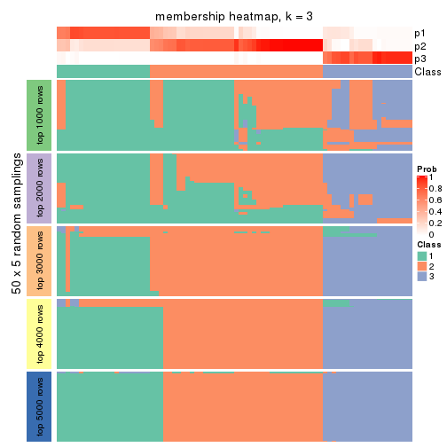
membership_heatmap(res, k = 4)
membership_heatmap(res, k = 5)
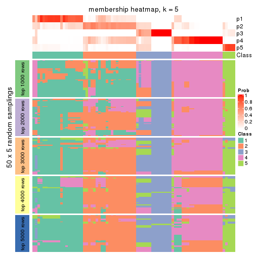
membership_heatmap(res, k = 6)
As soon as we have had the classes for columns, we can look for signatures which are significantly different between classes which can be candidate marks for certain classes. Following are the heatmaps for signatures.
Signature heatmaps where rows are scaled:
get_signatures(res, k = 2)
get_signatures(res, k = 3)
get_signatures(res, k = 4)
get_signatures(res, k = 5)

get_signatures(res, k = 6)
Signature heatmaps where rows are not scaled:
get_signatures(res, k = 2, scale_rows = FALSE)
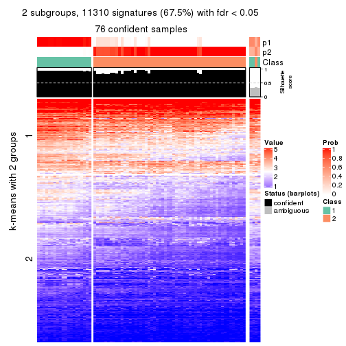
get_signatures(res, k = 3, scale_rows = FALSE)
get_signatures(res, k = 4, scale_rows = FALSE)
get_signatures(res, k = 5, scale_rows = FALSE)
get_signatures(res, k = 6, scale_rows = FALSE)
Compare the overlap of signatures from different k:
compare_signatures(res)
get_signature() returns a data frame invisibly. TO get the list of signatures, the function
call should be assigned to a variable explicitly. In following code, if plot argument is set
to FALSE, no heatmap is plotted while only the differential analysis is performed.
# code only for demonstration
tb = get_signature(res, k = ..., plot = FALSE)
An example of the output of tb is:
#> which_row fdr mean_1 mean_2 scaled_mean_1 scaled_mean_2 km
#> 1 38 0.042760348 8.373488 9.131774 -0.5533452 0.5164555 1
#> 2 40 0.018707592 7.106213 8.469186 -0.6173731 0.5762149 1
#> 3 55 0.019134737 10.221463 11.207825 -0.6159697 0.5749050 1
#> 4 59 0.006059896 5.921854 7.869574 -0.6899429 0.6439467 1
#> 5 60 0.018055526 8.928898 10.211722 -0.6204761 0.5791110 1
#> 6 98 0.009384629 15.714769 14.887706 0.6635654 -0.6193277 2
...
The columns in tb are:
which_row: row indices corresponding to the input matrix.fdr: FDR for the differential test. mean_x: The mean value in group x.scaled_mean_x: The mean value in group x after rows are scaled.km: Row groups if k-means clustering is applied to rows.UMAP plot which shows how samples are separated.
dimension_reduction(res, k = 2, method = "UMAP")
dimension_reduction(res, k = 3, method = "UMAP")
dimension_reduction(res, k = 4, method = "UMAP")
dimension_reduction(res, k = 5, method = "UMAP")
dimension_reduction(res, k = 6, method = "UMAP")
Following heatmap shows how subgroups are split when increasing k:
collect_classes(res)
If matrix rows can be associated to genes, consider to use GO_Enrichment(res,
...) to perform function enrichment for the signature genes.
The object with results only for a single top-value method and a single partition method can be extracted as:
res = res_list["CV", "skmeans"]
# you can also extract it by
# res = res_list["CV:skmeans"]
A summary of res and all the functions that can be applied to it:
res
#> A 'ConsensusPartition' object with k = 2, 3, 4, 5, 6.
#> On a matrix with 16751 rows and 80 columns.
#> Top rows (1000, 2000, 3000, 4000, 5000) are extracted by 'CV' method.
#> Subgroups are detected by 'skmeans' method.
#> Performed in total 1250 partitions by row resampling.
#> Best k for subgroups seems to be 4.
#>
#> Following methods can be applied to this 'ConsensusPartition' object:
#> [1] "cola_report" "collect_classes" "collect_plots"
#> [4] "collect_stats" "colnames" "compare_signatures"
#> [7] "consensus_heatmap" "dimension_reduction" "functional_enrichment"
#> [10] "get_anno_col" "get_anno" "get_classes"
#> [13] "get_consensus" "get_matrix" "get_membership"
#> [16] "get_param" "get_signatures" "get_stats"
#> [19] "is_best_k" "is_stable_k" "membership_heatmap"
#> [22] "ncol" "nrow" "plot_ecdf"
#> [25] "rownames" "select_partition_number" "show"
#> [28] "suggest_best_k" "test_to_known_factors"
collect_plots() function collects all the plots made from res for all k (number of partitions)
into one single page to provide an easy and fast comparison between different k.
collect_plots(res)
The plots are:
k and the heatmap of
predicted classes for each k.k.k.k.All the plots in panels can be made by individual functions and they are plotted later in this section.
select_partition_number() produces several plots showing different
statistics for choosing “optimized” k. There are following statistics:
k;k, the area increased is defined as \(A_k - A_{k-1}\).The detailed explanations of these statistics can be found in the cola vignette.
Generally speaking, lower PAC score, higher mean silhouette score or higher
concordance corresponds to better partition. Rand index and Jaccard index
measure how similar the current partition is compared to partition with k-1.
If they are too similar, we won't accept k is better than k-1.
select_partition_number(res)
The numeric values for all these statistics can be obtained by get_stats().
get_stats(res)
#> k 1-PAC mean_silhouette concordance area_increased Rand Jaccard
#> 2 2 0.525 0.732 0.888 0.4835 0.539 0.539
#> 3 3 0.666 0.718 0.871 0.3592 0.696 0.489
#> 4 4 0.758 0.850 0.889 0.1427 0.852 0.598
#> 5 5 0.753 0.716 0.856 0.0666 0.910 0.658
#> 6 6 0.753 0.655 0.791 0.0348 0.981 0.905
suggest_best_k() suggests the best \(k\) based on these statistics. The rules are as follows:
NA.suggest_best_k(res)
#> [1] 4
Following shows the table of the partitions (You need to click the show/hide
code output link to see it). The membership matrix (columns with name p*)
is inferred by
clue::cl_consensus()
function with the SE method. Basically the value in the membership matrix
represents the probability to belong to a certain group. The finall class
label for an item is determined with the group with highest probability it
belongs to.
In get_classes() function, the entropy is calculated from the membership
matrix and the silhouette score is calculated from the consensus matrix.
cbind(get_classes(res, k = 2), get_membership(res, k = 2))
#> class entropy silhouette p1 p2
#> 71A0AB6A-CFC2-46F6-878C-6052C5B43D22 2 0.9933 0.3233 0.452 0.548
#> EFC730EC-6385-4167-A65A-F2A3AAEDA2AC 2 0.7139 0.7174 0.196 0.804
#> 14F2F39A-EA0F-4027-8877-FEEEEFF1F085 2 0.0000 0.8365 0.000 1.000
#> 98B2A7F8-A7BD-4DA2-8541-950E44D9ACD7 2 0.0000 0.8365 0.000 1.000
#> 9166F454-2068-46C2-B2EB-FB3BE4126536 1 0.0000 0.9050 1.000 0.000
#> 83B2A0BB-CE24-4DCA-B03A-D20353304365 2 0.0000 0.8365 0.000 1.000
#> D3FC3968-B263-4756-BF7F-1941F70B04DA 1 0.9996 0.0561 0.512 0.488
#> D357AC5C-C2A0-4CC4-B016-4572400AF117 2 0.0000 0.8365 0.000 1.000
#> 1055E951-5B93-4AD7-BE5C-4DF4F6AECEF3 2 0.1633 0.8297 0.024 0.976
#> F2995599-3F21-4F33-92BB-7D70A4735938 1 0.0000 0.9050 1.000 0.000
#> 3EE533BD-5832-4007-8F1F-439166256EB0 2 0.0000 0.8365 0.000 1.000
#> EEC6DA0C-5C49-4EFE-976A-19F432DDAA58 1 0.0000 0.9050 1.000 0.000
#> E6E08C1A-4C1B-4572-92DF-DA15BCBADF76 1 0.9933 0.1630 0.548 0.452
#> BCFCBBAC-EB95-47EB-9EB0-2CB4AE283A75 2 0.9954 0.3024 0.460 0.540
#> 0782D6D0-668B-4B83-8C91-8A35EA3BFF6D 2 0.0000 0.8365 0.000 1.000
#> AC78918E-1031-4AE6-B753-B0799171F0F0 1 0.0000 0.9050 1.000 0.000
#> 6B497CED-34DA-4CF8-8F8D-696105CB3D5F 2 0.9933 0.3233 0.452 0.548
#> 2328D472-583B-43A9-81A4-A21DDEBB5B18 2 0.0000 0.8365 0.000 1.000
#> A6930B33-D9B2-4318-807C-4A25EB4CCCDD 2 0.0000 0.8365 0.000 1.000
#> C8C48AFD-4D8B-491E-993C-3506DC6DD00F 1 0.1184 0.8913 0.984 0.016
#> 093FB845-7905-4064-8E8E-76E3587D8E7C 2 0.9933 0.3233 0.452 0.548
#> B216F996-CCD8-4F56-99B1-4EA9769B10B8 2 0.9933 0.3233 0.452 0.548
#> CB35DED2-5FEA-43E2-AB42-B6B3A7444B66 2 0.7219 0.7056 0.200 0.800
#> BA016F57-F58F-4A66-B85A-0B0F911EEA65 2 0.1184 0.8332 0.016 0.984
#> 519DBD5F-66C0-4CEE-905C-799C855D28FB 1 0.0000 0.9050 1.000 0.000
#> F5B9B89B-6821-43EE-BCFD-623689D03AF9 2 0.0000 0.8365 0.000 1.000
#> 55A39F92-CC88-4A2F-A7D3-7A59DEBEBB42 2 0.7056 0.7133 0.192 0.808
#> 3DBBDEDA-F9FC-40DC-804F-45429EA47ED4 1 0.1633 0.8857 0.976 0.024
#> BB948BE8-7D48-4AEB-A404-C27A79655D7E 1 0.9710 0.1405 0.600 0.400
#> 9506723F-9193-4D8E-BD97-8A0062AB2F9C 2 0.9933 0.3233 0.452 0.548
#> D0758A7A-9D0E-4EA4-8EE9-7143B398647D 2 0.9933 0.3233 0.452 0.548
#> F400FD4D-72D7-4933-B145-64B7EE245FFC 2 0.1184 0.8332 0.016 0.984
#> 3F87E9ED-3719-48E1-8B69-E352A03E982D 2 0.0000 0.8365 0.000 1.000
#> D6365FEB-CC12-4337-BF8C-66236A585B5D 2 0.7376 0.6399 0.208 0.792
#> A4168812-C38E-4F15-9AF6-79F256279E72 2 0.9710 0.4299 0.400 0.600
#> DB676839-02AA-42A7-962F-89D6AD892008 1 0.0000 0.9050 1.000 0.000
#> 198D8E89-51FD-41DE-AD11-FB2F2FE49908 2 0.1843 0.8275 0.028 0.972
#> 2BADCD01-27E8-49EC-B707-4FAE3D3CB489 1 0.0000 0.9050 1.000 0.000
#> ABBD6EFE-079B-4BE3-95AB-36AF9197D684 2 0.4815 0.7629 0.104 0.896
#> 39D66B95-61C7-4B76-8E81-1F9F98024B69 1 0.0000 0.9050 1.000 0.000
#> 7A920210-CF3D-4458-B6D5-D9B2ADACA469 1 0.0000 0.9050 1.000 0.000
#> 0CE61CDC-3257-4F03-951B-CC2CFCF675AE 2 0.6148 0.7198 0.152 0.848
#> 7338D61C-77D6-4095-8847-7FD9967B7646 1 0.0000 0.9050 1.000 0.000
#> 0D36FAD5-BA81-4FED-9E2A-DB016F2EF18C 1 0.0000 0.9050 1.000 0.000
#> 43CD31CD-5FAE-418A-B235-49E54560590D 2 0.0000 0.8365 0.000 1.000
#> B6DD72B0-EEFA-41A9-B71D-22DE1343CD32 2 0.8955 0.5701 0.312 0.688
#> 2B729CD9-71A5-4336-ACBA-922A30AF4949 2 0.9710 0.2571 0.400 0.600
#> B76DB955-69B7-4D05-8166-2569ED44628C 1 0.0000 0.9050 1.000 0.000
#> 09CBEE39-7141-4228-AFD3-4714E32A1FB5 2 0.0000 0.8365 0.000 1.000
#> AC1700D5-72E7-4C7F-A288-869DFC229252 1 0.6887 0.6632 0.816 0.184
#> 535A5E8E-8478-477F-87FF-ED6742AA5473 2 0.0000 0.8365 0.000 1.000
#> CFB8573C-9F36-4715-B6F1-6E5B543168A8 1 0.0000 0.9050 1.000 0.000
#> 47A45491-6023-44BF-ABC2-9A470F7FC1F7 2 0.1184 0.8332 0.016 0.984
#> 437C7AA7-98C0-48C7-97DA-86FF44D69B87 2 0.1184 0.8332 0.016 0.984
#> 649ADE7E-6C06-4AB6-8E97-D8C2AAF79A7E 1 0.0672 0.8984 0.992 0.008
#> DEA60B47-AD6A-4EBB-9402-6F97E9640E4E 2 0.0938 0.8342 0.012 0.988
#> 76C574FF-26BF-49CD-9BCA-7BDDCBD06D5D 2 0.0000 0.8365 0.000 1.000
#> 8B6E1F9B-1E90-4333-8E0C-EEDFF25D15C0 2 0.0000 0.8365 0.000 1.000
#> A2473EE7-72D6-4D32-9DF7-5D4E444A6715 2 0.1184 0.8332 0.016 0.984
#> E226C45E-5287-4D0F-A34B-CE251FA293CB 1 0.0000 0.9050 1.000 0.000
#> A2C71C07-AF0C-4016-808C-DFEF458C91C7 1 0.0000 0.9050 1.000 0.000
#> DA00D60F-4CF1-4003-BAF5-896EE2BEE2D4 2 0.1184 0.8332 0.016 0.984
#> 1C17B65F-1930-4CF3-99B6-5D3AA9E99188 2 0.1184 0.8332 0.016 0.984
#> B837D582-A0D3-46BE-8ECA-883F5396AE88 2 0.7453 0.7020 0.212 0.788
#> EF1A102F-C206-4874-8F27-0BF069A613B8 2 0.5178 0.7762 0.116 0.884
#> BC761676-F64C-476A-8D9B-BD3E6149B2CD 2 0.0000 0.8365 0.000 1.000
#> D8351E5C-DC1D-4B4D-83E6-735B2750D944 2 0.8016 0.5845 0.244 0.756
#> 59F65F61-03D0-4909-99BD-4CCB53A088A5 2 0.0000 0.8365 0.000 1.000
#> EFFCCF33-60E1-4550-B13C-14C54ADCF479 2 0.0000 0.8365 0.000 1.000
#> C45EB423-CC14-4BDB-A0B4-447E5DB6DA9C 1 0.0000 0.9050 1.000 0.000
#> D34B0BC6-9142-48AE-A113-5923192644A0 2 0.9710 0.4299 0.400 0.600
#> 634672A6-C68E-479F-AAB5-CBAFF7758EA4 1 0.0000 0.9050 1.000 0.000
#> 06DAE086-D960-4156-9DC8-D126338E2F29 1 0.9933 0.1630 0.548 0.452
#> 3353F579-77CA-4D0E-B794-37DE467CC065 1 0.0000 0.9050 1.000 0.000
#> 976507F2-192B-4095-920A-3014889CD617 1 0.0000 0.9050 1.000 0.000
#> 3FFF89D9-02F5-4D49-8631-099562BF99C7 2 0.0938 0.8342 0.012 0.988
#> 8BC2213D-99DA-44E0-826F-EBF211EECFBF 1 0.0000 0.9050 1.000 0.000
#> A7A16BF7-5E60-4E50-BE04-542EFC4DB472 2 0.0000 0.8365 0.000 1.000
#> E25C9578-9493-466E-A2CD-546DEB076B2D 2 0.0000 0.8365 0.000 1.000
#> EA35E230-DE50-45AB-A737-D5C430652A90 2 0.9710 0.4299 0.400 0.600
cbind(get_classes(res, k = 3), get_membership(res, k = 3))
#> class entropy silhouette p1 p2 p3
#> 71A0AB6A-CFC2-46F6-878C-6052C5B43D22 1 0.000 0.8553 1.000 0.000 0.000
#> EFC730EC-6385-4167-A65A-F2A3AAEDA2AC 2 0.624 0.0705 0.440 0.560 0.000
#> 14F2F39A-EA0F-4027-8877-FEEEEFF1F085 2 0.613 0.5610 0.400 0.600 0.000
#> 98B2A7F8-A7BD-4DA2-8541-950E44D9ACD7 2 0.588 0.5989 0.348 0.652 0.000
#> 9166F454-2068-46C2-B2EB-FB3BE4126536 3 0.000 0.9894 0.000 0.000 1.000
#> 83B2A0BB-CE24-4DCA-B03A-D20353304365 2 0.583 0.6039 0.340 0.660 0.000
#> D3FC3968-B263-4756-BF7F-1941F70B04DA 2 0.369 0.6693 0.000 0.860 0.140
#> D357AC5C-C2A0-4CC4-B016-4572400AF117 2 0.613 0.5610 0.400 0.600 0.000
#> 1055E951-5B93-4AD7-BE5C-4DF4F6AECEF3 2 0.000 0.7194 0.000 1.000 0.000
#> F2995599-3F21-4F33-92BB-7D70A4735938 3 0.000 0.9894 0.000 0.000 1.000
#> 3EE533BD-5832-4007-8F1F-439166256EB0 2 0.617 0.5425 0.412 0.588 0.000
#> EEC6DA0C-5C49-4EFE-976A-19F432DDAA58 3 0.000 0.9894 0.000 0.000 1.000
#> E6E08C1A-4C1B-4572-92DF-DA15BCBADF76 2 0.319 0.6825 0.000 0.888 0.112
#> BCFCBBAC-EB95-47EB-9EB0-2CB4AE283A75 1 0.000 0.8553 1.000 0.000 0.000
#> 0782D6D0-668B-4B83-8C91-8A35EA3BFF6D 2 0.000 0.7194 0.000 1.000 0.000
#> AC78918E-1031-4AE6-B753-B0799171F0F0 3 0.000 0.9894 0.000 0.000 1.000
#> 6B497CED-34DA-4CF8-8F8D-696105CB3D5F 1 0.000 0.8553 1.000 0.000 0.000
#> 2328D472-583B-43A9-81A4-A21DDEBB5B18 1 0.624 -0.2108 0.560 0.440 0.000
#> A6930B33-D9B2-4318-807C-4A25EB4CCCDD 2 0.613 0.5610 0.400 0.600 0.000
#> C8C48AFD-4D8B-491E-993C-3506DC6DD00F 1 0.622 0.1438 0.568 0.000 0.432
#> 093FB845-7905-4064-8E8E-76E3587D8E7C 1 0.000 0.8553 1.000 0.000 0.000
#> B216F996-CCD8-4F56-99B1-4EA9769B10B8 1 0.000 0.8553 1.000 0.000 0.000
#> CB35DED2-5FEA-43E2-AB42-B6B3A7444B66 1 0.000 0.8553 1.000 0.000 0.000
#> BA016F57-F58F-4A66-B85A-0B0F911EEA65 2 0.000 0.7194 0.000 1.000 0.000
#> 519DBD5F-66C0-4CEE-905C-799C855D28FB 3 0.000 0.9894 0.000 0.000 1.000
#> F5B9B89B-6821-43EE-BCFD-623689D03AF9 2 0.613 0.5610 0.400 0.600 0.000
#> 55A39F92-CC88-4A2F-A7D3-7A59DEBEBB42 1 0.000 0.8553 1.000 0.000 0.000
#> 3DBBDEDA-F9FC-40DC-804F-45429EA47ED4 1 0.631 0.0960 0.508 0.000 0.492
#> BB948BE8-7D48-4AEB-A404-C27A79655D7E 1 0.000 0.8553 1.000 0.000 0.000
#> 9506723F-9193-4D8E-BD97-8A0062AB2F9C 1 0.000 0.8553 1.000 0.000 0.000
#> D0758A7A-9D0E-4EA4-8EE9-7143B398647D 1 0.000 0.8553 1.000 0.000 0.000
#> F400FD4D-72D7-4933-B145-64B7EE245FFC 2 0.000 0.7194 0.000 1.000 0.000
#> 3F87E9ED-3719-48E1-8B69-E352A03E982D 1 0.000 0.8553 1.000 0.000 0.000
#> D6365FEB-CC12-4337-BF8C-66236A585B5D 2 0.633 0.5624 0.396 0.600 0.004
#> A4168812-C38E-4F15-9AF6-79F256279E72 1 0.000 0.8553 1.000 0.000 0.000
#> DB676839-02AA-42A7-962F-89D6AD892008 3 0.000 0.9894 0.000 0.000 1.000
#> 198D8E89-51FD-41DE-AD11-FB2F2FE49908 2 0.000 0.7194 0.000 1.000 0.000
#> 2BADCD01-27E8-49EC-B707-4FAE3D3CB489 3 0.455 0.7672 0.000 0.200 0.800
#> ABBD6EFE-079B-4BE3-95AB-36AF9197D684 2 0.493 0.6582 0.232 0.768 0.000
#> 39D66B95-61C7-4B76-8E81-1F9F98024B69 3 0.000 0.9894 0.000 0.000 1.000
#> 7A920210-CF3D-4458-B6D5-D9B2ADACA469 3 0.000 0.9894 0.000 0.000 1.000
#> 0CE61CDC-3257-4F03-951B-CC2CFCF675AE 2 0.000 0.7194 0.000 1.000 0.000
#> 7338D61C-77D6-4095-8847-7FD9967B7646 3 0.000 0.9894 0.000 0.000 1.000
#> 0D36FAD5-BA81-4FED-9E2A-DB016F2EF18C 3 0.000 0.9894 0.000 0.000 1.000
#> 43CD31CD-5FAE-418A-B235-49E54560590D 2 0.613 0.5610 0.400 0.600 0.000
#> B6DD72B0-EEFA-41A9-B71D-22DE1343CD32 1 0.000 0.8553 1.000 0.000 0.000
#> 2B729CD9-71A5-4336-ACBA-922A30AF4949 2 0.000 0.7194 0.000 1.000 0.000
#> B76DB955-69B7-4D05-8166-2569ED44628C 3 0.000 0.9894 0.000 0.000 1.000
#> 09CBEE39-7141-4228-AFD3-4714E32A1FB5 2 0.613 0.5610 0.400 0.600 0.000
#> AC1700D5-72E7-4C7F-A288-869DFC229252 1 0.956 0.0819 0.444 0.200 0.356
#> 535A5E8E-8478-477F-87FF-ED6742AA5473 2 0.613 0.5610 0.400 0.600 0.000
#> CFB8573C-9F36-4715-B6F1-6E5B543168A8 3 0.000 0.9894 0.000 0.000 1.000
#> 47A45491-6023-44BF-ABC2-9A470F7FC1F7 2 0.000 0.7194 0.000 1.000 0.000
#> 437C7AA7-98C0-48C7-97DA-86FF44D69B87 2 0.000 0.7194 0.000 1.000 0.000
#> 649ADE7E-6C06-4AB6-8E97-D8C2AAF79A7E 3 0.000 0.9894 0.000 0.000 1.000
#> DEA60B47-AD6A-4EBB-9402-6F97E9640E4E 2 0.000 0.7194 0.000 1.000 0.000
#> 76C574FF-26BF-49CD-9BCA-7BDDCBD06D5D 2 0.613 0.5610 0.400 0.600 0.000
#> 8B6E1F9B-1E90-4333-8E0C-EEDFF25D15C0 1 0.000 0.8553 1.000 0.000 0.000
#> A2473EE7-72D6-4D32-9DF7-5D4E444A6715 2 0.000 0.7194 0.000 1.000 0.000
#> E226C45E-5287-4D0F-A34B-CE251FA293CB 3 0.000 0.9894 0.000 0.000 1.000
#> A2C71C07-AF0C-4016-808C-DFEF458C91C7 3 0.000 0.9894 0.000 0.000 1.000
#> DA00D60F-4CF1-4003-BAF5-896EE2BEE2D4 2 0.000 0.7194 0.000 1.000 0.000
#> 1C17B65F-1930-4CF3-99B6-5D3AA9E99188 2 0.000 0.7194 0.000 1.000 0.000
#> B837D582-A0D3-46BE-8ECA-883F5396AE88 2 0.623 0.0803 0.436 0.564 0.000
#> EF1A102F-C206-4874-8F27-0BF069A613B8 2 0.624 0.0705 0.440 0.560 0.000
#> BC761676-F64C-476A-8D9B-BD3E6149B2CD 1 0.613 -0.0842 0.600 0.400 0.000
#> D8351E5C-DC1D-4B4D-83E6-735B2750D944 2 0.744 0.6117 0.108 0.692 0.200
#> 59F65F61-03D0-4909-99BD-4CCB53A088A5 1 0.000 0.8553 1.000 0.000 0.000
#> EFFCCF33-60E1-4550-B13C-14C54ADCF479 1 0.000 0.8553 1.000 0.000 0.000
#> C45EB423-CC14-4BDB-A0B4-447E5DB6DA9C 3 0.000 0.9894 0.000 0.000 1.000
#> D34B0BC6-9142-48AE-A113-5923192644A0 1 0.000 0.8553 1.000 0.000 0.000
#> 634672A6-C68E-479F-AAB5-CBAFF7758EA4 3 0.000 0.9894 0.000 0.000 1.000
#> 06DAE086-D960-4156-9DC8-D126338E2F29 2 0.480 0.6217 0.000 0.780 0.220
#> 3353F579-77CA-4D0E-B794-37DE467CC065 3 0.000 0.9894 0.000 0.000 1.000
#> 976507F2-192B-4095-920A-3014889CD617 3 0.000 0.9894 0.000 0.000 1.000
#> 3FFF89D9-02F5-4D49-8631-099562BF99C7 2 0.000 0.7194 0.000 1.000 0.000
#> 8BC2213D-99DA-44E0-826F-EBF211EECFBF 3 0.000 0.9894 0.000 0.000 1.000
#> A7A16BF7-5E60-4E50-BE04-542EFC4DB472 2 0.613 0.5610 0.400 0.600 0.000
#> E25C9578-9493-466E-A2CD-546DEB076B2D 2 0.613 0.5610 0.400 0.600 0.000
#> EA35E230-DE50-45AB-A737-D5C430652A90 1 0.000 0.8553 1.000 0.000 0.000
cbind(get_classes(res, k = 4), get_membership(res, k = 4))
#> class entropy silhouette p1 p2 p3 p4
#> 71A0AB6A-CFC2-46F6-878C-6052C5B43D22 1 0.0000 0.914 1.000 0.000 0.000 0.000
#> EFC730EC-6385-4167-A65A-F2A3AAEDA2AC 4 0.4008 0.675 0.244 0.000 0.000 0.756
#> 14F2F39A-EA0F-4027-8877-FEEEEFF1F085 2 0.4741 0.894 0.228 0.744 0.000 0.028
#> 98B2A7F8-A7BD-4DA2-8541-950E44D9ACD7 2 0.3726 0.890 0.212 0.788 0.000 0.000
#> 9166F454-2068-46C2-B2EB-FB3BE4126536 3 0.0000 0.916 0.000 0.000 1.000 0.000
#> 83B2A0BB-CE24-4DCA-B03A-D20353304365 2 0.0188 0.742 0.004 0.996 0.000 0.000
#> D3FC3968-B263-4756-BF7F-1941F70B04DA 4 0.3610 0.744 0.000 0.000 0.200 0.800
#> D357AC5C-C2A0-4CC4-B016-4572400AF117 2 0.3837 0.892 0.224 0.776 0.000 0.000
#> 1055E951-5B93-4AD7-BE5C-4DF4F6AECEF3 4 0.0000 0.899 0.000 0.000 0.000 1.000
#> F2995599-3F21-4F33-92BB-7D70A4735938 3 0.3569 0.852 0.000 0.196 0.804 0.000
#> 3EE533BD-5832-4007-8F1F-439166256EB0 2 0.4741 0.894 0.228 0.744 0.000 0.028
#> EEC6DA0C-5C49-4EFE-976A-19F432DDAA58 3 0.0000 0.916 0.000 0.000 1.000 0.000
#> E6E08C1A-4C1B-4572-92DF-DA15BCBADF76 4 0.4630 0.712 0.000 0.252 0.016 0.732
#> BCFCBBAC-EB95-47EB-9EB0-2CB4AE283A75 1 0.0000 0.914 1.000 0.000 0.000 0.000
#> 0782D6D0-668B-4B83-8C91-8A35EA3BFF6D 2 0.4103 0.646 0.000 0.744 0.000 0.256
#> AC78918E-1031-4AE6-B753-B0799171F0F0 3 0.3726 0.844 0.000 0.212 0.788 0.000
#> 6B497CED-34DA-4CF8-8F8D-696105CB3D5F 1 0.0000 0.914 1.000 0.000 0.000 0.000
#> 2328D472-583B-43A9-81A4-A21DDEBB5B18 2 0.3907 0.872 0.232 0.768 0.000 0.000
#> A6930B33-D9B2-4318-807C-4A25EB4CCCDD 2 0.4741 0.894 0.228 0.744 0.000 0.028
#> C8C48AFD-4D8B-491E-993C-3506DC6DD00F 1 0.4155 0.654 0.756 0.004 0.240 0.000
#> 093FB845-7905-4064-8E8E-76E3587D8E7C 1 0.0336 0.912 0.992 0.008 0.000 0.000
#> B216F996-CCD8-4F56-99B1-4EA9769B10B8 1 0.0188 0.912 0.996 0.004 0.000 0.000
#> CB35DED2-5FEA-43E2-AB42-B6B3A7444B66 1 0.0469 0.910 0.988 0.012 0.000 0.000
#> BA016F57-F58F-4A66-B85A-0B0F911EEA65 4 0.0000 0.899 0.000 0.000 0.000 1.000
#> 519DBD5F-66C0-4CEE-905C-799C855D28FB 3 0.3569 0.852 0.000 0.196 0.804 0.000
#> F5B9B89B-6821-43EE-BCFD-623689D03AF9 2 0.4741 0.894 0.228 0.744 0.000 0.028
#> 55A39F92-CC88-4A2F-A7D3-7A59DEBEBB42 1 0.0817 0.902 0.976 0.024 0.000 0.000
#> 3DBBDEDA-F9FC-40DC-804F-45429EA47ED4 1 0.6792 0.495 0.588 0.272 0.140 0.000
#> BB948BE8-7D48-4AEB-A404-C27A79655D7E 1 0.0469 0.908 0.988 0.012 0.000 0.000
#> 9506723F-9193-4D8E-BD97-8A0062AB2F9C 1 0.0000 0.914 1.000 0.000 0.000 0.000
#> D0758A7A-9D0E-4EA4-8EE9-7143B398647D 1 0.0000 0.914 1.000 0.000 0.000 0.000
#> F400FD4D-72D7-4933-B145-64B7EE245FFC 4 0.0000 0.899 0.000 0.000 0.000 1.000
#> 3F87E9ED-3719-48E1-8B69-E352A03E982D 1 0.1022 0.895 0.968 0.032 0.000 0.000
#> D6365FEB-CC12-4337-BF8C-66236A585B5D 2 0.0000 0.739 0.000 1.000 0.000 0.000
#> A4168812-C38E-4F15-9AF6-79F256279E72 1 0.0336 0.912 0.992 0.008 0.000 0.000
#> DB676839-02AA-42A7-962F-89D6AD892008 3 0.0000 0.916 0.000 0.000 1.000 0.000
#> 198D8E89-51FD-41DE-AD11-FB2F2FE49908 4 0.4008 0.734 0.000 0.244 0.000 0.756
#> 2BADCD01-27E8-49EC-B707-4FAE3D3CB489 3 0.3610 0.750 0.000 0.000 0.800 0.200
#> ABBD6EFE-079B-4BE3-95AB-36AF9197D684 2 0.0000 0.739 0.000 1.000 0.000 0.000
#> 39D66B95-61C7-4B76-8E81-1F9F98024B69 3 0.0000 0.916 0.000 0.000 1.000 0.000
#> 7A920210-CF3D-4458-B6D5-D9B2ADACA469 3 0.0000 0.916 0.000 0.000 1.000 0.000
#> 0CE61CDC-3257-4F03-951B-CC2CFCF675AE 4 0.0000 0.899 0.000 0.000 0.000 1.000
#> 7338D61C-77D6-4095-8847-7FD9967B7646 3 0.3801 0.840 0.000 0.220 0.780 0.000
#> 0D36FAD5-BA81-4FED-9E2A-DB016F2EF18C 3 0.0000 0.916 0.000 0.000 1.000 0.000
#> 43CD31CD-5FAE-418A-B235-49E54560590D 2 0.3873 0.892 0.228 0.772 0.000 0.000
#> B6DD72B0-EEFA-41A9-B71D-22DE1343CD32 1 0.0188 0.912 0.996 0.004 0.000 0.000
#> 2B729CD9-71A5-4336-ACBA-922A30AF4949 4 0.0000 0.899 0.000 0.000 0.000 1.000
#> B76DB955-69B7-4D05-8166-2569ED44628C 3 0.0000 0.916 0.000 0.000 1.000 0.000
#> 09CBEE39-7141-4228-AFD3-4714E32A1FB5 2 0.3837 0.892 0.224 0.776 0.000 0.000
#> AC1700D5-72E7-4C7F-A288-869DFC229252 1 0.4669 0.628 0.764 0.000 0.036 0.200
#> 535A5E8E-8478-477F-87FF-ED6742AA5473 2 0.4053 0.894 0.228 0.768 0.000 0.004
#> CFB8573C-9F36-4715-B6F1-6E5B543168A8 3 0.3764 0.842 0.000 0.216 0.784 0.000
#> 47A45491-6023-44BF-ABC2-9A470F7FC1F7 4 0.0000 0.899 0.000 0.000 0.000 1.000
#> 437C7AA7-98C0-48C7-97DA-86FF44D69B87 4 0.0000 0.899 0.000 0.000 0.000 1.000
#> 649ADE7E-6C06-4AB6-8E97-D8C2AAF79A7E 3 0.4072 0.815 0.000 0.252 0.748 0.000
#> DEA60B47-AD6A-4EBB-9402-6F97E9640E4E 4 0.0000 0.899 0.000 0.000 0.000 1.000
#> 76C574FF-26BF-49CD-9BCA-7BDDCBD06D5D 2 0.4741 0.894 0.228 0.744 0.000 0.028
#> 8B6E1F9B-1E90-4333-8E0C-EEDFF25D15C0 2 0.4193 0.869 0.268 0.732 0.000 0.000
#> A2473EE7-72D6-4D32-9DF7-5D4E444A6715 4 0.0000 0.899 0.000 0.000 0.000 1.000
#> E226C45E-5287-4D0F-A34B-CE251FA293CB 3 0.0000 0.916 0.000 0.000 1.000 0.000
#> A2C71C07-AF0C-4016-808C-DFEF458C91C7 3 0.0000 0.916 0.000 0.000 1.000 0.000
#> DA00D60F-4CF1-4003-BAF5-896EE2BEE2D4 4 0.0000 0.899 0.000 0.000 0.000 1.000
#> 1C17B65F-1930-4CF3-99B6-5D3AA9E99188 4 0.0000 0.899 0.000 0.000 0.000 1.000
#> B837D582-A0D3-46BE-8ECA-883F5396AE88 4 0.3726 0.717 0.212 0.000 0.000 0.788
#> EF1A102F-C206-4874-8F27-0BF069A613B8 4 0.4072 0.663 0.252 0.000 0.000 0.748
#> BC761676-F64C-476A-8D9B-BD3E6149B2CD 2 0.4193 0.864 0.268 0.732 0.000 0.000
#> D8351E5C-DC1D-4B4D-83E6-735B2750D944 2 0.0000 0.739 0.000 1.000 0.000 0.000
#> 59F65F61-03D0-4909-99BD-4CCB53A088A5 1 0.3528 0.636 0.808 0.192 0.000 0.000
#> EFFCCF33-60E1-4550-B13C-14C54ADCF479 2 0.4103 0.880 0.256 0.744 0.000 0.000
#> C45EB423-CC14-4BDB-A0B4-447E5DB6DA9C 3 0.0000 0.916 0.000 0.000 1.000 0.000
#> D34B0BC6-9142-48AE-A113-5923192644A0 1 0.0000 0.914 1.000 0.000 0.000 0.000
#> 634672A6-C68E-479F-AAB5-CBAFF7758EA4 3 0.0000 0.916 0.000 0.000 1.000 0.000
#> 06DAE086-D960-4156-9DC8-D126338E2F29 4 0.5558 0.544 0.000 0.036 0.324 0.640
#> 3353F579-77CA-4D0E-B794-37DE467CC065 3 0.3801 0.840 0.000 0.220 0.780 0.000
#> 976507F2-192B-4095-920A-3014889CD617 3 0.0000 0.916 0.000 0.000 1.000 0.000
#> 3FFF89D9-02F5-4D49-8631-099562BF99C7 4 0.0000 0.899 0.000 0.000 0.000 1.000
#> 8BC2213D-99DA-44E0-826F-EBF211EECFBF 3 0.0000 0.916 0.000 0.000 1.000 0.000
#> A7A16BF7-5E60-4E50-BE04-542EFC4DB472 2 0.4741 0.894 0.228 0.744 0.000 0.028
#> E25C9578-9493-466E-A2CD-546DEB076B2D 2 0.4741 0.894 0.228 0.744 0.000 0.028
#> EA35E230-DE50-45AB-A737-D5C430652A90 1 0.1022 0.895 0.968 0.032 0.000 0.000
cbind(get_classes(res, k = 5), get_membership(res, k = 5))
#> class entropy silhouette p1 p2 p3 p4 p5
#> 71A0AB6A-CFC2-46F6-878C-6052C5B43D22 1 0.1121 0.8248 0.956 0.044 0.000 0.000 0.000
#> EFC730EC-6385-4167-A65A-F2A3AAEDA2AC 4 0.4509 0.6879 0.152 0.000 0.000 0.752 0.096
#> 14F2F39A-EA0F-4027-8877-FEEEEFF1F085 2 0.0162 0.8739 0.004 0.996 0.000 0.000 0.000
#> 98B2A7F8-A7BD-4DA2-8541-950E44D9ACD7 2 0.2376 0.8282 0.052 0.904 0.000 0.000 0.044
#> 9166F454-2068-46C2-B2EB-FB3BE4126536 3 0.0000 0.9060 0.000 0.000 1.000 0.000 0.000
#> 83B2A0BB-CE24-4DCA-B03A-D20353304365 2 0.5046 0.0171 0.032 0.500 0.000 0.000 0.468
#> D3FC3968-B263-4756-BF7F-1941F70B04DA 4 0.3003 0.6910 0.000 0.000 0.188 0.812 0.000
#> D357AC5C-C2A0-4CC4-B016-4572400AF117 2 0.3081 0.7640 0.156 0.832 0.000 0.000 0.012
#> 1055E951-5B93-4AD7-BE5C-4DF4F6AECEF3 4 0.0000 0.8870 0.000 0.000 0.000 1.000 0.000
#> F2995599-3F21-4F33-92BB-7D70A4735938 3 0.3690 0.6604 0.012 0.000 0.764 0.000 0.224
#> 3EE533BD-5832-4007-8F1F-439166256EB0 2 0.0566 0.8693 0.004 0.984 0.000 0.000 0.012
#> EEC6DA0C-5C49-4EFE-976A-19F432DDAA58 3 0.0000 0.9060 0.000 0.000 1.000 0.000 0.000
#> E6E08C1A-4C1B-4572-92DF-DA15BCBADF76 5 0.3861 0.4501 0.004 0.000 0.000 0.284 0.712
#> BCFCBBAC-EB95-47EB-9EB0-2CB4AE283A75 1 0.2595 0.8187 0.888 0.080 0.000 0.000 0.032
#> 0782D6D0-668B-4B83-8C91-8A35EA3BFF6D 2 0.0880 0.8517 0.000 0.968 0.000 0.032 0.000
#> AC78918E-1031-4AE6-B753-B0799171F0F0 5 0.4291 0.0677 0.000 0.000 0.464 0.000 0.536
#> 6B497CED-34DA-4CF8-8F8D-696105CB3D5F 1 0.0510 0.8201 0.984 0.016 0.000 0.000 0.000
#> 2328D472-583B-43A9-81A4-A21DDEBB5B18 5 0.6724 0.0329 0.252 0.356 0.000 0.000 0.392
#> A6930B33-D9B2-4318-807C-4A25EB4CCCDD 2 0.0162 0.8739 0.004 0.996 0.000 0.000 0.000
#> C8C48AFD-4D8B-491E-993C-3506DC6DD00F 1 0.3910 0.5981 0.720 0.000 0.272 0.000 0.008
#> 093FB845-7905-4064-8E8E-76E3587D8E7C 1 0.4876 0.7501 0.700 0.220 0.000 0.000 0.080
#> B216F996-CCD8-4F56-99B1-4EA9769B10B8 1 0.0510 0.8201 0.984 0.016 0.000 0.000 0.000
#> CB35DED2-5FEA-43E2-AB42-B6B3A7444B66 1 0.4822 0.7512 0.704 0.220 0.000 0.000 0.076
#> BA016F57-F58F-4A66-B85A-0B0F911EEA65 4 0.0000 0.8870 0.000 0.000 0.000 1.000 0.000
#> 519DBD5F-66C0-4CEE-905C-799C855D28FB 3 0.4227 0.2007 0.000 0.000 0.580 0.000 0.420
#> F5B9B89B-6821-43EE-BCFD-623689D03AF9 2 0.0162 0.8739 0.004 0.996 0.000 0.000 0.000
#> 55A39F92-CC88-4A2F-A7D3-7A59DEBEBB42 1 0.4905 0.7467 0.696 0.224 0.000 0.000 0.080
#> 3DBBDEDA-F9FC-40DC-804F-45429EA47ED4 5 0.5107 0.3854 0.332 0.004 0.044 0.000 0.620
#> BB948BE8-7D48-4AEB-A404-C27A79655D7E 1 0.0671 0.8196 0.980 0.016 0.000 0.000 0.004
#> 9506723F-9193-4D8E-BD97-8A0062AB2F9C 1 0.0963 0.8254 0.964 0.036 0.000 0.000 0.000
#> D0758A7A-9D0E-4EA4-8EE9-7143B398647D 1 0.0703 0.8216 0.976 0.024 0.000 0.000 0.000
#> F400FD4D-72D7-4933-B145-64B7EE245FFC 4 0.0000 0.8870 0.000 0.000 0.000 1.000 0.000
#> 3F87E9ED-3719-48E1-8B69-E352A03E982D 1 0.5441 0.6325 0.596 0.324 0.000 0.000 0.080
#> D6365FEB-CC12-4337-BF8C-66236A585B5D 5 0.2773 0.5880 0.000 0.164 0.000 0.000 0.836
#> A4168812-C38E-4F15-9AF6-79F256279E72 1 0.4737 0.7538 0.708 0.224 0.000 0.000 0.068
#> DB676839-02AA-42A7-962F-89D6AD892008 3 0.0000 0.9060 0.000 0.000 1.000 0.000 0.000
#> 198D8E89-51FD-41DE-AD11-FB2F2FE49908 5 0.4403 0.1557 0.004 0.000 0.000 0.436 0.560
#> 2BADCD01-27E8-49EC-B707-4FAE3D3CB489 3 0.5572 0.5771 0.084 0.000 0.692 0.188 0.036
#> ABBD6EFE-079B-4BE3-95AB-36AF9197D684 5 0.3928 0.4289 0.004 0.296 0.000 0.000 0.700
#> 39D66B95-61C7-4B76-8E81-1F9F98024B69 3 0.1364 0.8975 0.012 0.000 0.952 0.000 0.036
#> 7A920210-CF3D-4458-B6D5-D9B2ADACA469 3 0.0000 0.9060 0.000 0.000 1.000 0.000 0.000
#> 0CE61CDC-3257-4F03-951B-CC2CFCF675AE 4 0.0000 0.8870 0.000 0.000 0.000 1.000 0.000
#> 7338D61C-77D6-4095-8847-7FD9967B7646 5 0.2929 0.5591 0.000 0.000 0.180 0.000 0.820
#> 0D36FAD5-BA81-4FED-9E2A-DB016F2EF18C 3 0.1281 0.8981 0.012 0.000 0.956 0.000 0.032
#> 43CD31CD-5FAE-418A-B235-49E54560590D 2 0.1117 0.8647 0.016 0.964 0.000 0.000 0.020
#> B6DD72B0-EEFA-41A9-B71D-22DE1343CD32 1 0.0898 0.8161 0.972 0.020 0.000 0.000 0.008
#> 2B729CD9-71A5-4336-ACBA-922A30AF4949 4 0.0404 0.8791 0.000 0.000 0.012 0.988 0.000
#> B76DB955-69B7-4D05-8166-2569ED44628C 3 0.0000 0.9060 0.000 0.000 1.000 0.000 0.000
#> 09CBEE39-7141-4228-AFD3-4714E32A1FB5 2 0.3304 0.7507 0.168 0.816 0.000 0.000 0.016
#> AC1700D5-72E7-4C7F-A288-869DFC229252 1 0.4074 0.6637 0.772 0.000 0.004 0.188 0.036
#> 535A5E8E-8478-477F-87FF-ED6742AA5473 2 0.0162 0.8739 0.004 0.996 0.000 0.000 0.000
#> CFB8573C-9F36-4715-B6F1-6E5B543168A8 5 0.4262 0.1076 0.000 0.000 0.440 0.000 0.560
#> 47A45491-6023-44BF-ABC2-9A470F7FC1F7 4 0.0000 0.8870 0.000 0.000 0.000 1.000 0.000
#> 437C7AA7-98C0-48C7-97DA-86FF44D69B87 4 0.0000 0.8870 0.000 0.000 0.000 1.000 0.000
#> 649ADE7E-6C06-4AB6-8E97-D8C2AAF79A7E 5 0.2230 0.6003 0.000 0.000 0.116 0.000 0.884
#> DEA60B47-AD6A-4EBB-9402-6F97E9640E4E 4 0.0000 0.8870 0.000 0.000 0.000 1.000 0.000
#> 76C574FF-26BF-49CD-9BCA-7BDDCBD06D5D 2 0.0162 0.8739 0.004 0.996 0.000 0.000 0.000
#> 8B6E1F9B-1E90-4333-8E0C-EEDFF25D15C0 2 0.2017 0.8155 0.008 0.912 0.000 0.000 0.080
#> A2473EE7-72D6-4D32-9DF7-5D4E444A6715 4 0.0000 0.8870 0.000 0.000 0.000 1.000 0.000
#> E226C45E-5287-4D0F-A34B-CE251FA293CB 3 0.0000 0.9060 0.000 0.000 1.000 0.000 0.000
#> A2C71C07-AF0C-4016-808C-DFEF458C91C7 3 0.1364 0.8975 0.012 0.000 0.952 0.000 0.036
#> DA00D60F-4CF1-4003-BAF5-896EE2BEE2D4 4 0.0000 0.8870 0.000 0.000 0.000 1.000 0.000
#> 1C17B65F-1930-4CF3-99B6-5D3AA9E99188 4 0.0000 0.8870 0.000 0.000 0.000 1.000 0.000
#> B837D582-A0D3-46BE-8ECA-883F5396AE88 4 0.4469 0.6932 0.148 0.000 0.000 0.756 0.096
#> EF1A102F-C206-4874-8F27-0BF069A613B8 4 0.4509 0.6879 0.152 0.000 0.000 0.752 0.096
#> BC761676-F64C-476A-8D9B-BD3E6149B2CD 2 0.3789 0.6967 0.224 0.760 0.000 0.000 0.016
#> D8351E5C-DC1D-4B4D-83E6-735B2750D944 5 0.2648 0.5953 0.000 0.152 0.000 0.000 0.848
#> 59F65F61-03D0-4909-99BD-4CCB53A088A5 2 0.4807 0.2101 0.448 0.532 0.000 0.000 0.020
#> EFFCCF33-60E1-4550-B13C-14C54ADCF479 2 0.0865 0.8638 0.004 0.972 0.000 0.000 0.024
#> C45EB423-CC14-4BDB-A0B4-447E5DB6DA9C 3 0.0000 0.9060 0.000 0.000 1.000 0.000 0.000
#> D34B0BC6-9142-48AE-A113-5923192644A0 1 0.1408 0.8246 0.948 0.044 0.000 0.000 0.008
#> 634672A6-C68E-479F-AAB5-CBAFF7758EA4 3 0.1364 0.8975 0.012 0.000 0.952 0.000 0.036
#> 06DAE086-D960-4156-9DC8-D126338E2F29 4 0.6738 -0.0799 0.000 0.000 0.364 0.380 0.256
#> 3353F579-77CA-4D0E-B794-37DE467CC065 5 0.4161 0.2577 0.000 0.000 0.392 0.000 0.608
#> 976507F2-192B-4095-920A-3014889CD617 3 0.0000 0.9060 0.000 0.000 1.000 0.000 0.000
#> 3FFF89D9-02F5-4D49-8631-099562BF99C7 4 0.0000 0.8870 0.000 0.000 0.000 1.000 0.000
#> 8BC2213D-99DA-44E0-826F-EBF211EECFBF 3 0.1364 0.8975 0.012 0.000 0.952 0.000 0.036
#> A7A16BF7-5E60-4E50-BE04-542EFC4DB472 2 0.0162 0.8739 0.004 0.996 0.000 0.000 0.000
#> E25C9578-9493-466E-A2CD-546DEB076B2D 2 0.0162 0.8739 0.004 0.996 0.000 0.000 0.000
#> EA35E230-DE50-45AB-A737-D5C430652A90 1 0.5456 0.6259 0.592 0.328 0.000 0.000 0.080
cbind(get_classes(res, k = 6), get_membership(res, k = 6))
#> class entropy silhouette p1 p2 p3 p4 p5 p6
#> 71A0AB6A-CFC2-46F6-878C-6052C5B43D22 1 0.0603 0.7189 0.980 0.016 0.000 0.000 0.000 NA
#> EFC730EC-6385-4167-A65A-F2A3AAEDA2AC 4 0.5005 0.6573 0.060 0.000 0.020 0.692 0.016 NA
#> 14F2F39A-EA0F-4027-8877-FEEEEFF1F085 2 0.0146 0.8500 0.000 0.996 0.000 0.000 0.000 NA
#> 98B2A7F8-A7BD-4DA2-8541-950E44D9ACD7 2 0.4325 0.7252 0.044 0.768 0.000 0.000 0.064 NA
#> 9166F454-2068-46C2-B2EB-FB3BE4126536 3 0.3874 0.7674 0.000 0.000 0.636 0.000 0.008 NA
#> 83B2A0BB-CE24-4DCA-B03A-D20353304365 2 0.6005 0.1356 0.008 0.464 0.000 0.000 0.340 NA
#> D3FC3968-B263-4756-BF7F-1941F70B04DA 4 0.3908 0.6547 0.000 0.000 0.100 0.768 0.000 NA
#> D357AC5C-C2A0-4CC4-B016-4572400AF117 2 0.4428 0.6964 0.164 0.740 0.000 0.000 0.020 NA
#> 1055E951-5B93-4AD7-BE5C-4DF4F6AECEF3 4 0.0146 0.8754 0.000 0.000 0.000 0.996 0.000 NA
#> F2995599-3F21-4F33-92BB-7D70A4735938 3 0.2882 0.4339 0.000 0.000 0.812 0.000 0.180 NA
#> 3EE533BD-5832-4007-8F1F-439166256EB0 2 0.1387 0.8137 0.000 0.932 0.000 0.000 0.000 NA
#> EEC6DA0C-5C49-4EFE-976A-19F432DDAA58 3 0.3874 0.7674 0.000 0.000 0.636 0.000 0.008 NA
#> E6E08C1A-4C1B-4572-92DF-DA15BCBADF76 5 0.5054 0.5454 0.004 0.004 0.004 0.184 0.676 NA
#> BCFCBBAC-EB95-47EB-9EB0-2CB4AE283A75 1 0.4124 0.6724 0.764 0.068 0.004 0.000 0.008 NA
#> 0782D6D0-668B-4B83-8C91-8A35EA3BFF6D 2 0.0458 0.8440 0.000 0.984 0.000 0.016 0.000 NA
#> AC78918E-1031-4AE6-B753-B0799171F0F0 5 0.4524 0.2971 0.000 0.000 0.404 0.000 0.560 NA
#> 6B497CED-34DA-4CF8-8F8D-696105CB3D5F 1 0.0260 0.7181 0.992 0.008 0.000 0.000 0.000 NA
#> 2328D472-583B-43A9-81A4-A21DDEBB5B18 5 0.7528 0.2259 0.168 0.208 0.000 0.000 0.348 NA
#> A6930B33-D9B2-4318-807C-4A25EB4CCCDD 2 0.0000 0.8498 0.000 1.000 0.000 0.000 0.000 NA
#> C8C48AFD-4D8B-491E-993C-3506DC6DD00F 1 0.5198 0.4409 0.564 0.000 0.092 0.000 0.004 NA
#> 093FB845-7905-4064-8E8E-76E3587D8E7C 1 0.5696 0.6254 0.564 0.200 0.000 0.000 0.008 NA
#> B216F996-CCD8-4F56-99B1-4EA9769B10B8 1 0.0806 0.7156 0.972 0.008 0.000 0.000 0.000 NA
#> CB35DED2-5FEA-43E2-AB42-B6B3A7444B66 1 0.5577 0.6230 0.572 0.216 0.000 0.000 0.004 NA
#> BA016F57-F58F-4A66-B85A-0B0F911EEA65 4 0.0000 0.8765 0.000 0.000 0.000 1.000 0.000 NA
#> 519DBD5F-66C0-4CEE-905C-799C855D28FB 5 0.5201 0.1395 0.000 0.000 0.408 0.000 0.500 NA
#> F5B9B89B-6821-43EE-BCFD-623689D03AF9 2 0.0260 0.8490 0.000 0.992 0.000 0.000 0.000 NA
#> 55A39F92-CC88-4A2F-A7D3-7A59DEBEBB42 1 0.5837 0.6085 0.536 0.212 0.000 0.000 0.008 NA
#> 3DBBDEDA-F9FC-40DC-804F-45429EA47ED4 5 0.5972 0.3309 0.240 0.000 0.004 0.000 0.484 NA
#> BB948BE8-7D48-4AEB-A404-C27A79655D7E 1 0.1949 0.7004 0.904 0.004 0.000 0.000 0.004 NA
#> 9506723F-9193-4D8E-BD97-8A0062AB2F9C 1 0.0363 0.7195 0.988 0.012 0.000 0.000 0.000 NA
#> D0758A7A-9D0E-4EA4-8EE9-7143B398647D 1 0.0458 0.7191 0.984 0.016 0.000 0.000 0.000 NA
#> F400FD4D-72D7-4933-B145-64B7EE245FFC 4 0.0000 0.8765 0.000 0.000 0.000 1.000 0.000 NA
#> 3F87E9ED-3719-48E1-8B69-E352A03E982D 1 0.5916 0.4953 0.476 0.324 0.000 0.000 0.004 NA
#> D6365FEB-CC12-4337-BF8C-66236A585B5D 5 0.2333 0.6295 0.000 0.092 0.000 0.000 0.884 NA
#> A4168812-C38E-4F15-9AF6-79F256279E72 1 0.5076 0.6304 0.636 0.236 0.000 0.000 0.004 NA
#> DB676839-02AA-42A7-962F-89D6AD892008 3 0.3874 0.7674 0.000 0.000 0.636 0.000 0.008 NA
#> 198D8E89-51FD-41DE-AD11-FB2F2FE49908 5 0.5984 0.2882 0.004 0.008 0.000 0.344 0.484 NA
#> 2BADCD01-27E8-49EC-B707-4FAE3D3CB489 3 0.4741 0.4678 0.044 0.000 0.740 0.136 0.004 NA
#> ABBD6EFE-079B-4BE3-95AB-36AF9197D684 5 0.5174 0.5258 0.004 0.152 0.000 0.008 0.660 NA
#> 39D66B95-61C7-4B76-8E81-1F9F98024B69 3 0.0260 0.6923 0.000 0.000 0.992 0.000 0.008 NA
#> 7A920210-CF3D-4458-B6D5-D9B2ADACA469 3 0.3874 0.7674 0.000 0.000 0.636 0.000 0.008 NA
#> 0CE61CDC-3257-4F03-951B-CC2CFCF675AE 4 0.0458 0.8696 0.000 0.000 0.000 0.984 0.000 NA
#> 7338D61C-77D6-4095-8847-7FD9967B7646 5 0.3649 0.5983 0.004 0.000 0.132 0.000 0.796 NA
#> 0D36FAD5-BA81-4FED-9E2A-DB016F2EF18C 3 0.0405 0.6936 0.000 0.000 0.988 0.000 0.008 NA
#> 43CD31CD-5FAE-418A-B235-49E54560590D 2 0.2345 0.8211 0.020 0.900 0.000 0.000 0.020 NA
#> B6DD72B0-EEFA-41A9-B71D-22DE1343CD32 1 0.2001 0.6933 0.900 0.004 0.000 0.000 0.004 NA
#> 2B729CD9-71A5-4336-ACBA-922A30AF4949 4 0.0603 0.8683 0.000 0.000 0.004 0.980 0.000 NA
#> B76DB955-69B7-4D05-8166-2569ED44628C 3 0.3874 0.7674 0.000 0.000 0.636 0.000 0.008 NA
#> 09CBEE39-7141-4228-AFD3-4714E32A1FB5 2 0.4668 0.6696 0.188 0.712 0.000 0.000 0.020 NA
#> AC1700D5-72E7-4C7F-A288-869DFC229252 1 0.6771 0.3102 0.496 0.000 0.276 0.128 0.004 NA
#> 535A5E8E-8478-477F-87FF-ED6742AA5473 2 0.0405 0.8492 0.000 0.988 0.000 0.000 0.004 NA
#> CFB8573C-9F36-4715-B6F1-6E5B543168A8 5 0.3828 0.3153 0.000 0.000 0.440 0.000 0.560 NA
#> 47A45491-6023-44BF-ABC2-9A470F7FC1F7 4 0.0000 0.8765 0.000 0.000 0.000 1.000 0.000 NA
#> 437C7AA7-98C0-48C7-97DA-86FF44D69B87 4 0.0000 0.8765 0.000 0.000 0.000 1.000 0.000 NA
#> 649ADE7E-6C06-4AB6-8E97-D8C2AAF79A7E 5 0.0806 0.6265 0.000 0.000 0.020 0.000 0.972 NA
#> DEA60B47-AD6A-4EBB-9402-6F97E9640E4E 4 0.0000 0.8765 0.000 0.000 0.000 1.000 0.000 NA
#> 76C574FF-26BF-49CD-9BCA-7BDDCBD06D5D 2 0.0000 0.8498 0.000 1.000 0.000 0.000 0.000 NA
#> 8B6E1F9B-1E90-4333-8E0C-EEDFF25D15C0 2 0.3409 0.6714 0.024 0.788 0.000 0.000 0.004 NA
#> A2473EE7-72D6-4D32-9DF7-5D4E444A6715 4 0.0363 0.8731 0.000 0.000 0.000 0.988 0.000 NA
#> E226C45E-5287-4D0F-A34B-CE251FA293CB 3 0.3874 0.7674 0.000 0.000 0.636 0.000 0.008 NA
#> A2C71C07-AF0C-4016-808C-DFEF458C91C7 3 0.0260 0.6923 0.000 0.000 0.992 0.000 0.008 NA
#> DA00D60F-4CF1-4003-BAF5-896EE2BEE2D4 4 0.0260 0.8742 0.000 0.000 0.000 0.992 0.000 NA
#> 1C17B65F-1930-4CF3-99B6-5D3AA9E99188 4 0.0000 0.8765 0.000 0.000 0.000 1.000 0.000 NA
#> B837D582-A0D3-46BE-8ECA-883F5396AE88 4 0.4863 0.6604 0.052 0.000 0.016 0.696 0.016 NA
#> EF1A102F-C206-4874-8F27-0BF069A613B8 4 0.5005 0.6573 0.060 0.000 0.020 0.692 0.016 NA
#> BC761676-F64C-476A-8D9B-BD3E6149B2CD 2 0.4926 0.5984 0.252 0.660 0.000 0.000 0.020 NA
#> D8351E5C-DC1D-4B4D-83E6-735B2750D944 5 0.2384 0.6370 0.000 0.064 0.000 0.000 0.888 NA
#> 59F65F61-03D0-4909-99BD-4CCB53A088A5 1 0.5141 0.0482 0.504 0.420 0.000 0.000 0.004 NA
#> EFFCCF33-60E1-4550-B13C-14C54ADCF479 2 0.2006 0.7828 0.000 0.892 0.000 0.000 0.004 NA
#> C45EB423-CC14-4BDB-A0B4-447E5DB6DA9C 3 0.3874 0.7674 0.000 0.000 0.636 0.000 0.008 NA
#> D34B0BC6-9142-48AE-A113-5923192644A0 1 0.1536 0.7150 0.940 0.016 0.000 0.000 0.004 NA
#> 634672A6-C68E-479F-AAB5-CBAFF7758EA4 3 0.0260 0.6923 0.000 0.000 0.992 0.000 0.008 NA
#> 06DAE086-D960-4156-9DC8-D126338E2F29 4 0.7526 -0.1328 0.000 0.000 0.184 0.328 0.180 NA
#> 3353F579-77CA-4D0E-B794-37DE467CC065 5 0.3887 0.4042 0.000 0.000 0.360 0.000 0.632 NA
#> 976507F2-192B-4095-920A-3014889CD617 3 0.3861 0.7669 0.000 0.000 0.640 0.000 0.008 NA
#> 3FFF89D9-02F5-4D49-8631-099562BF99C7 4 0.0000 0.8765 0.000 0.000 0.000 1.000 0.000 NA
#> 8BC2213D-99DA-44E0-826F-EBF211EECFBF 3 0.0260 0.6923 0.000 0.000 0.992 0.000 0.008 NA
#> A7A16BF7-5E60-4E50-BE04-542EFC4DB472 2 0.0000 0.8498 0.000 1.000 0.000 0.000 0.000 NA
#> E25C9578-9493-466E-A2CD-546DEB076B2D 2 0.0000 0.8498 0.000 1.000 0.000 0.000 0.000 NA
#> EA35E230-DE50-45AB-A737-D5C430652A90 1 0.5907 0.5010 0.480 0.320 0.000 0.000 0.004 NA
Heatmaps for the consensus matrix. It visualizes the probability of two samples to be in a same group.
consensus_heatmap(res, k = 2)
consensus_heatmap(res, k = 3)
consensus_heatmap(res, k = 4)
consensus_heatmap(res, k = 5)
consensus_heatmap(res, k = 6)
Heatmaps for the membership of samples in all partitions to see how consistent they are:
membership_heatmap(res, k = 2)
membership_heatmap(res, k = 3)
membership_heatmap(res, k = 4)
membership_heatmap(res, k = 5)
membership_heatmap(res, k = 6)
As soon as we have had the classes for columns, we can look for signatures which are significantly different between classes which can be candidate marks for certain classes. Following are the heatmaps for signatures.
Signature heatmaps where rows are scaled:
get_signatures(res, k = 2)
get_signatures(res, k = 3)
get_signatures(res, k = 4)
get_signatures(res, k = 5)
get_signatures(res, k = 6)
Signature heatmaps where rows are not scaled:
get_signatures(res, k = 2, scale_rows = FALSE)
get_signatures(res, k = 3, scale_rows = FALSE)
get_signatures(res, k = 4, scale_rows = FALSE)
get_signatures(res, k = 5, scale_rows = FALSE)
get_signatures(res, k = 6, scale_rows = FALSE)
Compare the overlap of signatures from different k:
compare_signatures(res)
get_signature() returns a data frame invisibly. TO get the list of signatures, the function
call should be assigned to a variable explicitly. In following code, if plot argument is set
to FALSE, no heatmap is plotted while only the differential analysis is performed.
# code only for demonstration
tb = get_signature(res, k = ..., plot = FALSE)
An example of the output of tb is:
#> which_row fdr mean_1 mean_2 scaled_mean_1 scaled_mean_2 km
#> 1 38 0.042760348 8.373488 9.131774 -0.5533452 0.5164555 1
#> 2 40 0.018707592 7.106213 8.469186 -0.6173731 0.5762149 1
#> 3 55 0.019134737 10.221463 11.207825 -0.6159697 0.5749050 1
#> 4 59 0.006059896 5.921854 7.869574 -0.6899429 0.6439467 1
#> 5 60 0.018055526 8.928898 10.211722 -0.6204761 0.5791110 1
#> 6 98 0.009384629 15.714769 14.887706 0.6635654 -0.6193277 2
...
The columns in tb are:
which_row: row indices corresponding to the input matrix.fdr: FDR for the differential test. mean_x: The mean value in group x.scaled_mean_x: The mean value in group x after rows are scaled.km: Row groups if k-means clustering is applied to rows.UMAP plot which shows how samples are separated.
dimension_reduction(res, k = 2, method = "UMAP")
dimension_reduction(res, k = 3, method = "UMAP")
dimension_reduction(res, k = 4, method = "UMAP")
dimension_reduction(res, k = 5, method = "UMAP")
dimension_reduction(res, k = 6, method = "UMAP")
Following heatmap shows how subgroups are split when increasing k:
collect_classes(res)
If matrix rows can be associated to genes, consider to use GO_Enrichment(res,
...) to perform function enrichment for the signature genes.
The object with results only for a single top-value method and a single partition method can be extracted as:
res = res_list["CV", "pam"]
# you can also extract it by
# res = res_list["CV:pam"]
A summary of res and all the functions that can be applied to it:
res
#> A 'ConsensusPartition' object with k = 2, 3, 4, 5, 6.
#> On a matrix with 16751 rows and 80 columns.
#> Top rows (1000, 2000, 3000, 4000, 5000) are extracted by 'CV' method.
#> Subgroups are detected by 'pam' method.
#> Performed in total 1250 partitions by row resampling.
#> Best k for subgroups seems to be 3.
#>
#> Following methods can be applied to this 'ConsensusPartition' object:
#> [1] "cola_report" "collect_classes" "collect_plots"
#> [4] "collect_stats" "colnames" "compare_signatures"
#> [7] "consensus_heatmap" "dimension_reduction" "functional_enrichment"
#> [10] "get_anno_col" "get_anno" "get_classes"
#> [13] "get_consensus" "get_matrix" "get_membership"
#> [16] "get_param" "get_signatures" "get_stats"
#> [19] "is_best_k" "is_stable_k" "membership_heatmap"
#> [22] "ncol" "nrow" "plot_ecdf"
#> [25] "rownames" "select_partition_number" "show"
#> [28] "suggest_best_k" "test_to_known_factors"
collect_plots() function collects all the plots made from res for all k (number of partitions)
into one single page to provide an easy and fast comparison between different k.
collect_plots(res)
The plots are:
k and the heatmap of
predicted classes for each k.k.k.k.All the plots in panels can be made by individual functions and they are plotted later in this section.
select_partition_number() produces several plots showing different
statistics for choosing “optimized” k. There are following statistics:
k;k, the area increased is defined as \(A_k - A_{k-1}\).The detailed explanations of these statistics can be found in the cola vignette.
Generally speaking, lower PAC score, higher mean silhouette score or higher
concordance corresponds to better partition. Rand index and Jaccard index
measure how similar the current partition is compared to partition with k-1.
If they are too similar, we won't accept k is better than k-1.
select_partition_number(res)
The numeric values for all these statistics can be obtained by get_stats().
get_stats(res)
#> k 1-PAC mean_silhouette concordance area_increased Rand Jaccard
#> 2 2 0.505 0.812 0.913 0.3809 0.633 0.633
#> 3 3 0.551 0.716 0.858 0.6220 0.692 0.533
#> 4 4 0.538 0.588 0.678 0.1311 0.760 0.488
#> 5 5 0.707 0.665 0.846 0.0952 0.871 0.617
#> 6 6 0.799 0.747 0.905 0.0317 0.970 0.871
suggest_best_k() suggests the best \(k\) based on these statistics. The rules are as follows:
NA.suggest_best_k(res)
#> [1] 3
Following shows the table of the partitions (You need to click the show/hide
code output link to see it). The membership matrix (columns with name p*)
is inferred by
clue::cl_consensus()
function with the SE method. Basically the value in the membership matrix
represents the probability to belong to a certain group. The finall class
label for an item is determined with the group with highest probability it
belongs to.
In get_classes() function, the entropy is calculated from the membership
matrix and the silhouette score is calculated from the consensus matrix.
cbind(get_classes(res, k = 2), get_membership(res, k = 2))
#> class entropy silhouette p1 p2
#> 71A0AB6A-CFC2-46F6-878C-6052C5B43D22 2 0.0938 0.896 0.012 0.988
#> EFC730EC-6385-4167-A65A-F2A3AAEDA2AC 2 0.0000 0.902 0.000 1.000
#> 14F2F39A-EA0F-4027-8877-FEEEEFF1F085 2 0.0000 0.902 0.000 1.000
#> 98B2A7F8-A7BD-4DA2-8541-950E44D9ACD7 2 0.0000 0.902 0.000 1.000
#> 9166F454-2068-46C2-B2EB-FB3BE4126536 1 0.0000 0.860 1.000 0.000
#> 83B2A0BB-CE24-4DCA-B03A-D20353304365 2 0.3114 0.884 0.056 0.944
#> D3FC3968-B263-4756-BF7F-1941F70B04DA 2 0.6247 0.823 0.156 0.844
#> D357AC5C-C2A0-4CC4-B016-4572400AF117 2 0.0000 0.902 0.000 1.000
#> 1055E951-5B93-4AD7-BE5C-4DF4F6AECEF3 2 0.5946 0.834 0.144 0.856
#> F2995599-3F21-4F33-92BB-7D70A4735938 1 0.7602 0.755 0.780 0.220
#> 3EE533BD-5832-4007-8F1F-439166256EB0 2 0.0000 0.902 0.000 1.000
#> EEC6DA0C-5C49-4EFE-976A-19F432DDAA58 1 0.4298 0.833 0.912 0.088
#> E6E08C1A-4C1B-4572-92DF-DA15BCBADF76 2 0.5946 0.834 0.144 0.856
#> BCFCBBAC-EB95-47EB-9EB0-2CB4AE283A75 2 0.0000 0.902 0.000 1.000
#> 0782D6D0-668B-4B83-8C91-8A35EA3BFF6D 2 0.0000 0.902 0.000 1.000
#> AC78918E-1031-4AE6-B753-B0799171F0F0 1 0.0000 0.860 1.000 0.000
#> 6B497CED-34DA-4CF8-8F8D-696105CB3D5F 2 0.8144 0.571 0.252 0.748
#> 2328D472-583B-43A9-81A4-A21DDEBB5B18 2 0.0000 0.902 0.000 1.000
#> A6930B33-D9B2-4318-807C-4A25EB4CCCDD 2 0.0000 0.902 0.000 1.000
#> C8C48AFD-4D8B-491E-993C-3506DC6DD00F 1 0.8955 0.643 0.688 0.312
#> 093FB845-7905-4064-8E8E-76E3587D8E7C 2 0.0000 0.902 0.000 1.000
#> B216F996-CCD8-4F56-99B1-4EA9769B10B8 2 0.0000 0.902 0.000 1.000
#> CB35DED2-5FEA-43E2-AB42-B6B3A7444B66 2 0.0000 0.902 0.000 1.000
#> BA016F57-F58F-4A66-B85A-0B0F911EEA65 2 0.5946 0.834 0.144 0.856
#> 519DBD5F-66C0-4CEE-905C-799C855D28FB 1 0.0000 0.860 1.000 0.000
#> F5B9B89B-6821-43EE-BCFD-623689D03AF9 2 0.0000 0.902 0.000 1.000
#> 55A39F92-CC88-4A2F-A7D3-7A59DEBEBB42 2 0.0000 0.902 0.000 1.000
#> 3DBBDEDA-F9FC-40DC-804F-45429EA47ED4 2 0.3879 0.876 0.076 0.924
#> BB948BE8-7D48-4AEB-A404-C27A79655D7E 2 0.9988 -0.180 0.480 0.520
#> 9506723F-9193-4D8E-BD97-8A0062AB2F9C 2 0.7139 0.680 0.196 0.804
#> D0758A7A-9D0E-4EA4-8EE9-7143B398647D 2 0.0000 0.902 0.000 1.000
#> F400FD4D-72D7-4933-B145-64B7EE245FFC 2 0.5946 0.834 0.144 0.856
#> 3F87E9ED-3719-48E1-8B69-E352A03E982D 2 0.0000 0.902 0.000 1.000
#> D6365FEB-CC12-4337-BF8C-66236A585B5D 2 0.0938 0.899 0.012 0.988
#> A4168812-C38E-4F15-9AF6-79F256279E72 2 0.0000 0.902 0.000 1.000
#> DB676839-02AA-42A7-962F-89D6AD892008 1 0.0000 0.860 1.000 0.000
#> 198D8E89-51FD-41DE-AD11-FB2F2FE49908 2 0.5946 0.834 0.144 0.856
#> 2BADCD01-27E8-49EC-B707-4FAE3D3CB489 1 0.8327 0.690 0.736 0.264
#> ABBD6EFE-079B-4BE3-95AB-36AF9197D684 2 0.3431 0.881 0.064 0.936
#> 39D66B95-61C7-4B76-8E81-1F9F98024B69 1 0.7602 0.755 0.780 0.220
#> 7A920210-CF3D-4458-B6D5-D9B2ADACA469 1 0.0000 0.860 1.000 0.000
#> 0CE61CDC-3257-4F03-951B-CC2CFCF675AE 2 0.5946 0.834 0.144 0.856
#> 7338D61C-77D6-4095-8847-7FD9967B7646 2 0.6247 0.823 0.156 0.844
#> 0D36FAD5-BA81-4FED-9E2A-DB016F2EF18C 1 0.7602 0.755 0.780 0.220
#> 43CD31CD-5FAE-418A-B235-49E54560590D 2 0.0000 0.902 0.000 1.000
#> B6DD72B0-EEFA-41A9-B71D-22DE1343CD32 2 0.0000 0.902 0.000 1.000
#> 2B729CD9-71A5-4336-ACBA-922A30AF4949 2 0.6148 0.827 0.152 0.848
#> B76DB955-69B7-4D05-8166-2569ED44628C 1 0.6531 0.783 0.832 0.168
#> 09CBEE39-7141-4228-AFD3-4714E32A1FB5 2 0.0000 0.902 0.000 1.000
#> AC1700D5-72E7-4C7F-A288-869DFC229252 2 0.9998 -0.202 0.492 0.508
#> 535A5E8E-8478-477F-87FF-ED6742AA5473 2 0.0000 0.902 0.000 1.000
#> CFB8573C-9F36-4715-B6F1-6E5B543168A8 2 0.9993 0.054 0.484 0.516
#> 47A45491-6023-44BF-ABC2-9A470F7FC1F7 2 0.4431 0.867 0.092 0.908
#> 437C7AA7-98C0-48C7-97DA-86FF44D69B87 2 0.5946 0.834 0.144 0.856
#> 649ADE7E-6C06-4AB6-8E97-D8C2AAF79A7E 2 0.8661 0.647 0.288 0.712
#> DEA60B47-AD6A-4EBB-9402-6F97E9640E4E 2 0.4431 0.868 0.092 0.908
#> 76C574FF-26BF-49CD-9BCA-7BDDCBD06D5D 2 0.0000 0.902 0.000 1.000
#> 8B6E1F9B-1E90-4333-8E0C-EEDFF25D15C0 2 0.0000 0.902 0.000 1.000
#> A2473EE7-72D6-4D32-9DF7-5D4E444A6715 2 0.5629 0.843 0.132 0.868
#> E226C45E-5287-4D0F-A34B-CE251FA293CB 1 0.9815 0.270 0.580 0.420
#> A2C71C07-AF0C-4016-808C-DFEF458C91C7 1 0.4815 0.843 0.896 0.104
#> DA00D60F-4CF1-4003-BAF5-896EE2BEE2D4 2 0.5946 0.834 0.144 0.856
#> 1C17B65F-1930-4CF3-99B6-5D3AA9E99188 2 0.5946 0.834 0.144 0.856
#> B837D582-A0D3-46BE-8ECA-883F5396AE88 2 0.0672 0.900 0.008 0.992
#> EF1A102F-C206-4874-8F27-0BF069A613B8 2 0.0000 0.902 0.000 1.000
#> BC761676-F64C-476A-8D9B-BD3E6149B2CD 2 0.0000 0.902 0.000 1.000
#> D8351E5C-DC1D-4B4D-83E6-735B2750D944 2 0.5842 0.837 0.140 0.860
#> 59F65F61-03D0-4909-99BD-4CCB53A088A5 2 0.0000 0.902 0.000 1.000
#> EFFCCF33-60E1-4550-B13C-14C54ADCF479 2 0.0000 0.902 0.000 1.000
#> C45EB423-CC14-4BDB-A0B4-447E5DB6DA9C 1 0.0000 0.860 1.000 0.000
#> D34B0BC6-9142-48AE-A113-5923192644A0 2 0.0000 0.902 0.000 1.000
#> 634672A6-C68E-479F-AAB5-CBAFF7758EA4 1 0.3114 0.861 0.944 0.056
#> 06DAE086-D960-4156-9DC8-D126338E2F29 2 0.6247 0.823 0.156 0.844
#> 3353F579-77CA-4D0E-B794-37DE467CC065 1 0.3114 0.861 0.944 0.056
#> 976507F2-192B-4095-920A-3014889CD617 1 0.0000 0.860 1.000 0.000
#> 3FFF89D9-02F5-4D49-8631-099562BF99C7 2 0.0938 0.899 0.012 0.988
#> 8BC2213D-99DA-44E0-826F-EBF211EECFBF 1 0.1633 0.863 0.976 0.024
#> A7A16BF7-5E60-4E50-BE04-542EFC4DB472 2 0.0000 0.902 0.000 1.000
#> E25C9578-9493-466E-A2CD-546DEB076B2D 2 0.0000 0.902 0.000 1.000
#> EA35E230-DE50-45AB-A737-D5C430652A90 2 0.0000 0.902 0.000 1.000
cbind(get_classes(res, k = 3), get_membership(res, k = 3))
#> class entropy silhouette p1 p2 p3
#> 71A0AB6A-CFC2-46F6-878C-6052C5B43D22 1 0.0000 0.8643 1.000 0.000 0.000
#> EFC730EC-6385-4167-A65A-F2A3AAEDA2AC 2 0.0000 0.7735 0.000 1.000 0.000
#> 14F2F39A-EA0F-4027-8877-FEEEEFF1F085 2 0.6126 0.5527 0.400 0.600 0.000
#> 98B2A7F8-A7BD-4DA2-8541-950E44D9ACD7 2 0.5098 0.6825 0.248 0.752 0.000
#> 9166F454-2068-46C2-B2EB-FB3BE4126536 3 0.0000 0.8452 0.000 0.000 1.000
#> 83B2A0BB-CE24-4DCA-B03A-D20353304365 2 0.4346 0.7176 0.184 0.816 0.000
#> D3FC3968-B263-4756-BF7F-1941F70B04DA 2 0.0000 0.7735 0.000 1.000 0.000
#> D357AC5C-C2A0-4CC4-B016-4572400AF117 2 0.5254 0.6706 0.264 0.736 0.000
#> 1055E951-5B93-4AD7-BE5C-4DF4F6AECEF3 2 0.0000 0.7735 0.000 1.000 0.000
#> F2995599-3F21-4F33-92BB-7D70A4735938 3 0.6140 0.6276 0.000 0.404 0.596
#> 3EE533BD-5832-4007-8F1F-439166256EB0 2 0.6126 0.5527 0.400 0.600 0.000
#> EEC6DA0C-5C49-4EFE-976A-19F432DDAA58 3 0.0000 0.8452 0.000 0.000 1.000
#> E6E08C1A-4C1B-4572-92DF-DA15BCBADF76 2 0.0000 0.7735 0.000 1.000 0.000
#> BCFCBBAC-EB95-47EB-9EB0-2CB4AE283A75 1 0.4062 0.7218 0.836 0.164 0.000
#> 0782D6D0-668B-4B83-8C91-8A35EA3BFF6D 2 0.5859 0.6034 0.344 0.656 0.000
#> AC78918E-1031-4AE6-B753-B0799171F0F0 3 0.0000 0.8452 0.000 0.000 1.000
#> 6B497CED-34DA-4CF8-8F8D-696105CB3D5F 1 0.0000 0.8643 1.000 0.000 0.000
#> 2328D472-583B-43A9-81A4-A21DDEBB5B18 1 0.1964 0.8195 0.944 0.056 0.000
#> A6930B33-D9B2-4318-807C-4A25EB4CCCDD 2 0.6126 0.5527 0.400 0.600 0.000
#> C8C48AFD-4D8B-491E-993C-3506DC6DD00F 1 0.1163 0.8471 0.972 0.028 0.000
#> 093FB845-7905-4064-8E8E-76E3587D8E7C 1 0.0237 0.8624 0.996 0.004 0.000
#> B216F996-CCD8-4F56-99B1-4EA9769B10B8 1 0.0000 0.8643 1.000 0.000 0.000
#> CB35DED2-5FEA-43E2-AB42-B6B3A7444B66 1 0.0000 0.8643 1.000 0.000 0.000
#> BA016F57-F58F-4A66-B85A-0B0F911EEA65 2 0.0000 0.7735 0.000 1.000 0.000
#> 519DBD5F-66C0-4CEE-905C-799C855D28FB 3 0.0000 0.8452 0.000 0.000 1.000
#> F5B9B89B-6821-43EE-BCFD-623689D03AF9 2 0.6126 0.5527 0.400 0.600 0.000
#> 55A39F92-CC88-4A2F-A7D3-7A59DEBEBB42 1 0.0000 0.8643 1.000 0.000 0.000
#> 3DBBDEDA-F9FC-40DC-804F-45429EA47ED4 1 0.5058 0.6187 0.756 0.244 0.000
#> BB948BE8-7D48-4AEB-A404-C27A79655D7E 1 0.0000 0.8643 1.000 0.000 0.000
#> 9506723F-9193-4D8E-BD97-8A0062AB2F9C 1 0.0000 0.8643 1.000 0.000 0.000
#> D0758A7A-9D0E-4EA4-8EE9-7143B398647D 1 0.0000 0.8643 1.000 0.000 0.000
#> F400FD4D-72D7-4933-B145-64B7EE245FFC 2 0.0000 0.7735 0.000 1.000 0.000
#> 3F87E9ED-3719-48E1-8B69-E352A03E982D 1 0.6192 -0.0922 0.580 0.420 0.000
#> D6365FEB-CC12-4337-BF8C-66236A585B5D 2 0.4654 0.7019 0.208 0.792 0.000
#> A4168812-C38E-4F15-9AF6-79F256279E72 1 0.0000 0.8643 1.000 0.000 0.000
#> DB676839-02AA-42A7-962F-89D6AD892008 3 0.0000 0.8452 0.000 0.000 1.000
#> 198D8E89-51FD-41DE-AD11-FB2F2FE49908 2 0.0000 0.7735 0.000 1.000 0.000
#> 2BADCD01-27E8-49EC-B707-4FAE3D3CB489 2 0.8582 0.1185 0.308 0.568 0.124
#> ABBD6EFE-079B-4BE3-95AB-36AF9197D684 2 0.4842 0.6962 0.224 0.776 0.000
#> 39D66B95-61C7-4B76-8E81-1F9F98024B69 3 0.6079 0.6499 0.000 0.388 0.612
#> 7A920210-CF3D-4458-B6D5-D9B2ADACA469 3 0.0000 0.8452 0.000 0.000 1.000
#> 0CE61CDC-3257-4F03-951B-CC2CFCF675AE 2 0.0000 0.7735 0.000 1.000 0.000
#> 7338D61C-77D6-4095-8847-7FD9967B7646 2 0.0000 0.7735 0.000 1.000 0.000
#> 0D36FAD5-BA81-4FED-9E2A-DB016F2EF18C 3 0.6111 0.6399 0.000 0.396 0.604
#> 43CD31CD-5FAE-418A-B235-49E54560590D 2 0.6126 0.5527 0.400 0.600 0.000
#> B6DD72B0-EEFA-41A9-B71D-22DE1343CD32 1 0.0000 0.8643 1.000 0.000 0.000
#> 2B729CD9-71A5-4336-ACBA-922A30AF4949 2 0.0000 0.7735 0.000 1.000 0.000
#> B76DB955-69B7-4D05-8166-2569ED44628C 3 0.1643 0.8404 0.000 0.044 0.956
#> 09CBEE39-7141-4228-AFD3-4714E32A1FB5 2 0.6126 0.5527 0.400 0.600 0.000
#> AC1700D5-72E7-4C7F-A288-869DFC229252 1 0.6126 0.3603 0.600 0.400 0.000
#> 535A5E8E-8478-477F-87FF-ED6742AA5473 2 0.6126 0.5527 0.400 0.600 0.000
#> CFB8573C-9F36-4715-B6F1-6E5B543168A8 2 0.0000 0.7735 0.000 1.000 0.000
#> 47A45491-6023-44BF-ABC2-9A470F7FC1F7 2 0.0000 0.7735 0.000 1.000 0.000
#> 437C7AA7-98C0-48C7-97DA-86FF44D69B87 2 0.0000 0.7735 0.000 1.000 0.000
#> 649ADE7E-6C06-4AB6-8E97-D8C2AAF79A7E 1 0.8491 0.4038 0.572 0.312 0.116
#> DEA60B47-AD6A-4EBB-9402-6F97E9640E4E 2 0.0000 0.7735 0.000 1.000 0.000
#> 76C574FF-26BF-49CD-9BCA-7BDDCBD06D5D 2 0.6126 0.5527 0.400 0.600 0.000
#> 8B6E1F9B-1E90-4333-8E0C-EEDFF25D15C0 2 0.6126 0.5527 0.400 0.600 0.000
#> A2473EE7-72D6-4D32-9DF7-5D4E444A6715 2 0.0000 0.7735 0.000 1.000 0.000
#> E226C45E-5287-4D0F-A34B-CE251FA293CB 3 0.4702 0.8025 0.000 0.212 0.788
#> A2C71C07-AF0C-4016-808C-DFEF458C91C7 3 0.5178 0.7806 0.000 0.256 0.744
#> DA00D60F-4CF1-4003-BAF5-896EE2BEE2D4 2 0.0000 0.7735 0.000 1.000 0.000
#> 1C17B65F-1930-4CF3-99B6-5D3AA9E99188 2 0.0000 0.7735 0.000 1.000 0.000
#> B837D582-A0D3-46BE-8ECA-883F5396AE88 2 0.0000 0.7735 0.000 1.000 0.000
#> EF1A102F-C206-4874-8F27-0BF069A613B8 2 0.0000 0.7735 0.000 1.000 0.000
#> BC761676-F64C-476A-8D9B-BD3E6149B2CD 1 0.4974 0.5353 0.764 0.236 0.000
#> D8351E5C-DC1D-4B4D-83E6-735B2750D944 2 0.3816 0.7347 0.148 0.852 0.000
#> 59F65F61-03D0-4909-99BD-4CCB53A088A5 1 0.0000 0.8643 1.000 0.000 0.000
#> EFFCCF33-60E1-4550-B13C-14C54ADCF479 2 0.6126 0.5527 0.400 0.600 0.000
#> C45EB423-CC14-4BDB-A0B4-447E5DB6DA9C 3 0.0000 0.8452 0.000 0.000 1.000
#> D34B0BC6-9142-48AE-A113-5923192644A0 1 0.0000 0.8643 1.000 0.000 0.000
#> 634672A6-C68E-479F-AAB5-CBAFF7758EA4 3 0.4750 0.8025 0.000 0.216 0.784
#> 06DAE086-D960-4156-9DC8-D126338E2F29 2 0.0000 0.7735 0.000 1.000 0.000
#> 3353F579-77CA-4D0E-B794-37DE467CC065 1 0.7997 0.4611 0.644 0.120 0.236
#> 976507F2-192B-4095-920A-3014889CD617 3 0.0000 0.8452 0.000 0.000 1.000
#> 3FFF89D9-02F5-4D49-8631-099562BF99C7 2 0.0000 0.7735 0.000 1.000 0.000
#> 8BC2213D-99DA-44E0-826F-EBF211EECFBF 3 0.4504 0.8104 0.000 0.196 0.804
#> A7A16BF7-5E60-4E50-BE04-542EFC4DB472 2 0.6126 0.5527 0.400 0.600 0.000
#> E25C9578-9493-466E-A2CD-546DEB076B2D 2 0.6126 0.5527 0.400 0.600 0.000
#> EA35E230-DE50-45AB-A737-D5C430652A90 1 0.1289 0.8418 0.968 0.032 0.000
cbind(get_classes(res, k = 4), get_membership(res, k = 4))
#> class entropy silhouette p1 p2 p3 p4
#> 71A0AB6A-CFC2-46F6-878C-6052C5B43D22 1 0.361 0.55312 0.800 0.200 0.000 0.000
#> EFC730EC-6385-4167-A65A-F2A3AAEDA2AC 4 0.000 0.83486 0.000 0.000 0.000 1.000
#> 14F2F39A-EA0F-4027-8877-FEEEEFF1F085 1 0.741 0.54300 0.512 0.000 0.272 0.216
#> 98B2A7F8-A7BD-4DA2-8541-950E44D9ACD7 4 0.802 -0.03018 0.232 0.016 0.272 0.480
#> 9166F454-2068-46C2-B2EB-FB3BE4126536 3 0.422 0.91096 0.000 0.272 0.728 0.000
#> 83B2A0BB-CE24-4DCA-B03A-D20353304365 4 0.715 0.34464 0.176 0.016 0.196 0.612
#> D3FC3968-B263-4756-BF7F-1941F70B04DA 4 0.000 0.83486 0.000 0.000 0.000 1.000
#> D357AC5C-C2A0-4CC4-B016-4572400AF117 4 0.795 0.00876 0.248 0.016 0.240 0.496
#> 1055E951-5B93-4AD7-BE5C-4DF4F6AECEF3 4 0.000 0.83486 0.000 0.000 0.000 1.000
#> F2995599-3F21-4F33-92BB-7D70A4735938 2 0.661 0.55720 0.000 0.592 0.112 0.296
#> 3EE533BD-5832-4007-8F1F-439166256EB0 1 0.741 0.54300 0.512 0.000 0.272 0.216
#> EEC6DA0C-5C49-4EFE-976A-19F432DDAA58 3 0.422 0.91096 0.000 0.272 0.728 0.000
#> E6E08C1A-4C1B-4572-92DF-DA15BCBADF76 4 0.000 0.83486 0.000 0.000 0.000 1.000
#> BCFCBBAC-EB95-47EB-9EB0-2CB4AE283A75 1 0.548 0.46650 0.736 0.128 0.000 0.136
#> 0782D6D0-668B-4B83-8C91-8A35EA3BFF6D 1 0.787 0.45797 0.448 0.004 0.272 0.276
#> AC78918E-1031-4AE6-B753-B0799171F0F0 2 0.365 0.23708 0.000 0.796 0.204 0.000
#> 6B497CED-34DA-4CF8-8F8D-696105CB3D5F 1 0.361 0.55312 0.800 0.200 0.000 0.000
#> 2328D472-583B-43A9-81A4-A21DDEBB5B18 1 0.507 0.55494 0.744 0.200 0.000 0.056
#> A6930B33-D9B2-4318-807C-4A25EB4CCCDD 1 0.741 0.54300 0.512 0.000 0.272 0.216
#> C8C48AFD-4D8B-491E-993C-3506DC6DD00F 1 0.436 0.53418 0.784 0.188 0.000 0.028
#> 093FB845-7905-4064-8E8E-76E3587D8E7C 1 0.000 0.59212 1.000 0.000 0.000 0.000
#> B216F996-CCD8-4F56-99B1-4EA9769B10B8 1 0.361 0.55312 0.800 0.200 0.000 0.000
#> CB35DED2-5FEA-43E2-AB42-B6B3A7444B66 1 0.000 0.59212 1.000 0.000 0.000 0.000
#> BA016F57-F58F-4A66-B85A-0B0F911EEA65 4 0.000 0.83486 0.000 0.000 0.000 1.000
#> 519DBD5F-66C0-4CEE-905C-799C855D28FB 2 0.365 0.23708 0.000 0.796 0.204 0.000
#> F5B9B89B-6821-43EE-BCFD-623689D03AF9 1 0.741 0.54300 0.512 0.000 0.272 0.216
#> 55A39F92-CC88-4A2F-A7D3-7A59DEBEBB42 1 0.000 0.59212 1.000 0.000 0.000 0.000
#> 3DBBDEDA-F9FC-40DC-804F-45429EA47ED4 1 0.676 0.33194 0.612 0.200 0.000 0.188
#> BB948BE8-7D48-4AEB-A404-C27A79655D7E 1 0.344 0.55555 0.816 0.184 0.000 0.000
#> 9506723F-9193-4D8E-BD97-8A0062AB2F9C 1 0.344 0.55555 0.816 0.184 0.000 0.000
#> D0758A7A-9D0E-4EA4-8EE9-7143B398647D 1 0.361 0.55312 0.800 0.200 0.000 0.000
#> F400FD4D-72D7-4933-B145-64B7EE245FFC 4 0.000 0.83486 0.000 0.000 0.000 1.000
#> 3F87E9ED-3719-48E1-8B69-E352A03E982D 1 0.683 0.57592 0.584 0.000 0.272 0.144
#> D6365FEB-CC12-4337-BF8C-66236A585B5D 4 0.530 0.51589 0.228 0.016 0.028 0.728
#> A4168812-C38E-4F15-9AF6-79F256279E72 1 0.000 0.59212 1.000 0.000 0.000 0.000
#> DB676839-02AA-42A7-962F-89D6AD892008 3 0.422 0.91096 0.000 0.272 0.728 0.000
#> 198D8E89-51FD-41DE-AD11-FB2F2FE49908 4 0.000 0.83486 0.000 0.000 0.000 1.000
#> 2BADCD01-27E8-49EC-B707-4FAE3D3CB489 4 0.818 -0.19410 0.168 0.312 0.036 0.484
#> ABBD6EFE-079B-4BE3-95AB-36AF9197D684 4 0.436 0.57297 0.220 0.016 0.000 0.764
#> 39D66B95-61C7-4B76-8E81-1F9F98024B69 2 0.661 0.55720 0.000 0.592 0.112 0.296
#> 7A920210-CF3D-4458-B6D5-D9B2ADACA469 3 0.422 0.91096 0.000 0.272 0.728 0.000
#> 0CE61CDC-3257-4F03-951B-CC2CFCF675AE 4 0.000 0.83486 0.000 0.000 0.000 1.000
#> 7338D61C-77D6-4095-8847-7FD9967B7646 4 0.413 0.40514 0.000 0.260 0.000 0.740
#> 0D36FAD5-BA81-4FED-9E2A-DB016F2EF18C 2 0.663 0.55827 0.000 0.592 0.116 0.292
#> 43CD31CD-5FAE-418A-B235-49E54560590D 1 0.741 0.54300 0.512 0.000 0.272 0.216
#> B6DD72B0-EEFA-41A9-B71D-22DE1343CD32 1 0.361 0.55312 0.800 0.200 0.000 0.000
#> 2B729CD9-71A5-4336-ACBA-922A30AF4949 4 0.000 0.83486 0.000 0.000 0.000 1.000
#> B76DB955-69B7-4D05-8166-2569ED44628C 3 0.440 0.90431 0.000 0.272 0.724 0.004
#> 09CBEE39-7141-4228-AFD3-4714E32A1FB5 1 0.805 0.53524 0.488 0.020 0.272 0.220
#> AC1700D5-72E7-4C7F-A288-869DFC229252 1 0.790 -0.27241 0.356 0.296 0.000 0.348
#> 535A5E8E-8478-477F-87FF-ED6742AA5473 1 0.771 0.54102 0.504 0.008 0.272 0.216
#> CFB8573C-9F36-4715-B6F1-6E5B543168A8 4 0.452 0.27046 0.000 0.320 0.000 0.680
#> 47A45491-6023-44BF-ABC2-9A470F7FC1F7 4 0.000 0.83486 0.000 0.000 0.000 1.000
#> 437C7AA7-98C0-48C7-97DA-86FF44D69B87 4 0.000 0.83486 0.000 0.000 0.000 1.000
#> 649ADE7E-6C06-4AB6-8E97-D8C2AAF79A7E 2 0.613 0.30304 0.152 0.700 0.008 0.140
#> DEA60B47-AD6A-4EBB-9402-6F97E9640E4E 4 0.000 0.83486 0.000 0.000 0.000 1.000
#> 76C574FF-26BF-49CD-9BCA-7BDDCBD06D5D 1 0.741 0.54300 0.512 0.000 0.272 0.216
#> 8B6E1F9B-1E90-4333-8E0C-EEDFF25D15C0 1 0.741 0.54300 0.512 0.000 0.272 0.216
#> A2473EE7-72D6-4D32-9DF7-5D4E444A6715 4 0.000 0.83486 0.000 0.000 0.000 1.000
#> E226C45E-5287-4D0F-A34B-CE251FA293CB 3 0.768 0.22456 0.000 0.268 0.460 0.272
#> A2C71C07-AF0C-4016-808C-DFEF458C91C7 2 0.691 0.53571 0.000 0.592 0.188 0.220
#> DA00D60F-4CF1-4003-BAF5-896EE2BEE2D4 4 0.000 0.83486 0.000 0.000 0.000 1.000
#> 1C17B65F-1930-4CF3-99B6-5D3AA9E99188 4 0.000 0.83486 0.000 0.000 0.000 1.000
#> B837D582-A0D3-46BE-8ECA-883F5396AE88 4 0.000 0.83486 0.000 0.000 0.000 1.000
#> EF1A102F-C206-4874-8F27-0BF069A613B8 4 0.000 0.83486 0.000 0.000 0.000 1.000
#> BC761676-F64C-476A-8D9B-BD3E6149B2CD 1 0.918 0.57864 0.428 0.196 0.272 0.104
#> D8351E5C-DC1D-4B4D-83E6-735B2750D944 4 0.360 0.69502 0.148 0.016 0.000 0.836
#> 59F65F61-03D0-4909-99BD-4CCB53A088A5 1 0.729 0.57890 0.532 0.200 0.268 0.000
#> EFFCCF33-60E1-4550-B13C-14C54ADCF479 1 0.741 0.54300 0.512 0.000 0.272 0.216
#> C45EB423-CC14-4BDB-A0B4-447E5DB6DA9C 3 0.422 0.91096 0.000 0.272 0.728 0.000
#> D34B0BC6-9142-48AE-A113-5923192644A0 1 0.361 0.55312 0.800 0.200 0.000 0.000
#> 634672A6-C68E-479F-AAB5-CBAFF7758EA4 2 0.691 0.53165 0.000 0.592 0.192 0.216
#> 06DAE086-D960-4156-9DC8-D126338E2F29 4 0.000 0.83486 0.000 0.000 0.000 1.000
#> 3353F579-77CA-4D0E-B794-37DE467CC065 2 0.514 0.25334 0.264 0.708 0.020 0.008
#> 976507F2-192B-4095-920A-3014889CD617 3 0.422 0.91096 0.000 0.272 0.728 0.000
#> 3FFF89D9-02F5-4D49-8631-099562BF99C7 4 0.000 0.83486 0.000 0.000 0.000 1.000
#> 8BC2213D-99DA-44E0-826F-EBF211EECFBF 2 0.691 0.49322 0.000 0.592 0.216 0.192
#> A7A16BF7-5E60-4E50-BE04-542EFC4DB472 1 0.741 0.54300 0.512 0.000 0.272 0.216
#> E25C9578-9493-466E-A2CD-546DEB076B2D 1 0.741 0.54300 0.512 0.000 0.272 0.216
#> EA35E230-DE50-45AB-A737-D5C430652A90 1 0.353 0.59955 0.836 0.000 0.152 0.012
cbind(get_classes(res, k = 5), get_membership(res, k = 5))
#> class entropy silhouette p1 p2 p3 p4 p5
#> 71A0AB6A-CFC2-46F6-878C-6052C5B43D22 1 0.1341 0.8240 0.944 0.056 0.000 0.000 0.000
#> EFC730EC-6385-4167-A65A-F2A3AAEDA2AC 4 0.0000 0.8781 0.000 0.000 0.000 1.000 0.000
#> 14F2F39A-EA0F-4027-8877-FEEEEFF1F085 2 0.0000 0.7709 0.000 1.000 0.000 0.000 0.000
#> 98B2A7F8-A7BD-4DA2-8541-950E44D9ACD7 2 0.5810 0.3621 0.124 0.580 0.000 0.296 0.000
#> 9166F454-2068-46C2-B2EB-FB3BE4126536 5 0.0000 0.9295 0.000 0.000 0.000 0.000 1.000
#> 83B2A0BB-CE24-4DCA-B03A-D20353304365 4 0.6089 0.0315 0.124 0.408 0.000 0.468 0.000
#> D3FC3968-B263-4756-BF7F-1941F70B04DA 4 0.0000 0.8781 0.000 0.000 0.000 1.000 0.000
#> D357AC5C-C2A0-4CC4-B016-4572400AF117 2 0.5902 0.3338 0.124 0.556 0.000 0.320 0.000
#> 1055E951-5B93-4AD7-BE5C-4DF4F6AECEF3 4 0.0000 0.8781 0.000 0.000 0.000 1.000 0.000
#> F2995599-3F21-4F33-92BB-7D70A4735938 3 0.7346 0.6638 0.056 0.000 0.488 0.200 0.256
#> 3EE533BD-5832-4007-8F1F-439166256EB0 2 0.0000 0.7709 0.000 1.000 0.000 0.000 0.000
#> EEC6DA0C-5C49-4EFE-976A-19F432DDAA58 5 0.0000 0.9295 0.000 0.000 0.000 0.000 1.000
#> E6E08C1A-4C1B-4572-92DF-DA15BCBADF76 4 0.0000 0.8781 0.000 0.000 0.000 1.000 0.000
#> BCFCBBAC-EB95-47EB-9EB0-2CB4AE283A75 1 0.4835 0.6151 0.724 0.156 0.000 0.120 0.000
#> 0782D6D0-668B-4B83-8C91-8A35EA3BFF6D 2 0.2376 0.7219 0.044 0.904 0.000 0.052 0.000
#> AC78918E-1031-4AE6-B753-B0799171F0F0 3 0.0794 0.5507 0.000 0.000 0.972 0.000 0.028
#> 6B497CED-34DA-4CF8-8F8D-696105CB3D5F 1 0.1341 0.8240 0.944 0.056 0.000 0.000 0.000
#> 2328D472-583B-43A9-81A4-A21DDEBB5B18 1 0.2661 0.7831 0.888 0.056 0.000 0.056 0.000
#> A6930B33-D9B2-4318-807C-4A25EB4CCCDD 2 0.0000 0.7709 0.000 1.000 0.000 0.000 0.000
#> C8C48AFD-4D8B-491E-993C-3506DC6DD00F 1 0.3241 0.7472 0.832 0.144 0.000 0.024 0.000
#> 093FB845-7905-4064-8E8E-76E3587D8E7C 2 0.4262 0.1459 0.440 0.560 0.000 0.000 0.000
#> B216F996-CCD8-4F56-99B1-4EA9769B10B8 1 0.1341 0.8240 0.944 0.056 0.000 0.000 0.000
#> CB35DED2-5FEA-43E2-AB42-B6B3A7444B66 2 0.4262 0.1459 0.440 0.560 0.000 0.000 0.000
#> BA016F57-F58F-4A66-B85A-0B0F911EEA65 4 0.0000 0.8781 0.000 0.000 0.000 1.000 0.000
#> 519DBD5F-66C0-4CEE-905C-799C855D28FB 3 0.0794 0.5507 0.000 0.000 0.972 0.000 0.028
#> F5B9B89B-6821-43EE-BCFD-623689D03AF9 2 0.0000 0.7709 0.000 1.000 0.000 0.000 0.000
#> 55A39F92-CC88-4A2F-A7D3-7A59DEBEBB42 2 0.4262 0.1459 0.440 0.560 0.000 0.000 0.000
#> 3DBBDEDA-F9FC-40DC-804F-45429EA47ED4 1 0.1341 0.8240 0.944 0.056 0.000 0.000 0.000
#> BB948BE8-7D48-4AEB-A404-C27A79655D7E 1 0.2891 0.7331 0.824 0.176 0.000 0.000 0.000
#> 9506723F-9193-4D8E-BD97-8A0062AB2F9C 1 0.2929 0.7284 0.820 0.180 0.000 0.000 0.000
#> D0758A7A-9D0E-4EA4-8EE9-7143B398647D 1 0.1341 0.8240 0.944 0.056 0.000 0.000 0.000
#> F400FD4D-72D7-4933-B145-64B7EE245FFC 4 0.0000 0.8781 0.000 0.000 0.000 1.000 0.000
#> 3F87E9ED-3719-48E1-8B69-E352A03E982D 2 0.0000 0.7709 0.000 1.000 0.000 0.000 0.000
#> D6365FEB-CC12-4337-BF8C-66236A585B5D 4 0.5222 0.5328 0.124 0.196 0.000 0.680 0.000
#> A4168812-C38E-4F15-9AF6-79F256279E72 2 0.4262 0.1459 0.440 0.560 0.000 0.000 0.000
#> DB676839-02AA-42A7-962F-89D6AD892008 5 0.0000 0.9295 0.000 0.000 0.000 0.000 1.000
#> 198D8E89-51FD-41DE-AD11-FB2F2FE49908 4 0.0000 0.8781 0.000 0.000 0.000 1.000 0.000
#> 2BADCD01-27E8-49EC-B707-4FAE3D3CB489 4 0.7330 -0.3870 0.044 0.000 0.332 0.436 0.188
#> ABBD6EFE-079B-4BE3-95AB-36AF9197D684 4 0.4593 0.6165 0.124 0.128 0.000 0.748 0.000
#> 39D66B95-61C7-4B76-8E81-1F9F98024B69 3 0.7346 0.6638 0.056 0.000 0.488 0.200 0.256
#> 7A920210-CF3D-4458-B6D5-D9B2ADACA469 5 0.0000 0.9295 0.000 0.000 0.000 0.000 1.000
#> 0CE61CDC-3257-4F03-951B-CC2CFCF675AE 4 0.0000 0.8781 0.000 0.000 0.000 1.000 0.000
#> 7338D61C-77D6-4095-8847-7FD9967B7646 4 0.4150 0.0945 0.000 0.000 0.388 0.612 0.000
#> 0D36FAD5-BA81-4FED-9E2A-DB016F2EF18C 3 0.7346 0.6638 0.056 0.000 0.488 0.200 0.256
#> 43CD31CD-5FAE-418A-B235-49E54560590D 2 0.0510 0.7642 0.016 0.984 0.000 0.000 0.000
#> B6DD72B0-EEFA-41A9-B71D-22DE1343CD32 1 0.1341 0.8240 0.944 0.056 0.000 0.000 0.000
#> 2B729CD9-71A5-4336-ACBA-922A30AF4949 4 0.0000 0.8781 0.000 0.000 0.000 1.000 0.000
#> B76DB955-69B7-4D05-8166-2569ED44628C 5 0.0000 0.9295 0.000 0.000 0.000 0.000 1.000
#> 09CBEE39-7141-4228-AFD3-4714E32A1FB5 2 0.2629 0.6743 0.136 0.860 0.000 0.004 0.000
#> AC1700D5-72E7-4C7F-A288-869DFC229252 1 0.6763 -0.1879 0.396 0.000 0.280 0.324 0.000
#> 535A5E8E-8478-477F-87FF-ED6742AA5473 2 0.1792 0.7210 0.084 0.916 0.000 0.000 0.000
#> CFB8573C-9F36-4715-B6F1-6E5B543168A8 3 0.5403 0.3067 0.056 0.000 0.488 0.456 0.000
#> 47A45491-6023-44BF-ABC2-9A470F7FC1F7 4 0.0000 0.8781 0.000 0.000 0.000 1.000 0.000
#> 437C7AA7-98C0-48C7-97DA-86FF44D69B87 4 0.0000 0.8781 0.000 0.000 0.000 1.000 0.000
#> 649ADE7E-6C06-4AB6-8E97-D8C2AAF79A7E 3 0.0794 0.5596 0.000 0.000 0.972 0.028 0.000
#> DEA60B47-AD6A-4EBB-9402-6F97E9640E4E 4 0.0000 0.8781 0.000 0.000 0.000 1.000 0.000
#> 76C574FF-26BF-49CD-9BCA-7BDDCBD06D5D 2 0.0000 0.7709 0.000 1.000 0.000 0.000 0.000
#> 8B6E1F9B-1E90-4333-8E0C-EEDFF25D15C0 2 0.0000 0.7709 0.000 1.000 0.000 0.000 0.000
#> A2473EE7-72D6-4D32-9DF7-5D4E444A6715 4 0.0000 0.8781 0.000 0.000 0.000 1.000 0.000
#> E226C45E-5287-4D0F-A34B-CE251FA293CB 5 0.3796 0.4073 0.000 0.000 0.000 0.300 0.700
#> A2C71C07-AF0C-4016-808C-DFEF458C91C7 3 0.7323 0.6591 0.056 0.000 0.488 0.188 0.268
#> DA00D60F-4CF1-4003-BAF5-896EE2BEE2D4 4 0.0000 0.8781 0.000 0.000 0.000 1.000 0.000
#> 1C17B65F-1930-4CF3-99B6-5D3AA9E99188 4 0.0000 0.8781 0.000 0.000 0.000 1.000 0.000
#> B837D582-A0D3-46BE-8ECA-883F5396AE88 4 0.0000 0.8781 0.000 0.000 0.000 1.000 0.000
#> EF1A102F-C206-4874-8F27-0BF069A613B8 4 0.0000 0.8781 0.000 0.000 0.000 1.000 0.000
#> BC761676-F64C-476A-8D9B-BD3E6149B2CD 2 0.4307 -0.0133 0.496 0.504 0.000 0.000 0.000
#> D8351E5C-DC1D-4B4D-83E6-735B2750D944 4 0.3992 0.6820 0.124 0.080 0.000 0.796 0.000
#> 59F65F61-03D0-4909-99BD-4CCB53A088A5 1 0.4306 -0.0662 0.508 0.492 0.000 0.000 0.000
#> EFFCCF33-60E1-4550-B13C-14C54ADCF479 2 0.0000 0.7709 0.000 1.000 0.000 0.000 0.000
#> C45EB423-CC14-4BDB-A0B4-447E5DB6DA9C 5 0.0000 0.9295 0.000 0.000 0.000 0.000 1.000
#> D34B0BC6-9142-48AE-A113-5923192644A0 1 0.1341 0.8240 0.944 0.056 0.000 0.000 0.000
#> 634672A6-C68E-479F-AAB5-CBAFF7758EA4 3 0.7314 0.6560 0.056 0.000 0.488 0.184 0.272
#> 06DAE086-D960-4156-9DC8-D126338E2F29 4 0.0000 0.8781 0.000 0.000 0.000 1.000 0.000
#> 3353F579-77CA-4D0E-B794-37DE467CC065 3 0.0000 0.5619 0.000 0.000 1.000 0.000 0.000
#> 976507F2-192B-4095-920A-3014889CD617 5 0.0000 0.9295 0.000 0.000 0.000 0.000 1.000
#> 3FFF89D9-02F5-4D49-8631-099562BF99C7 4 0.0000 0.8781 0.000 0.000 0.000 1.000 0.000
#> 8BC2213D-99DA-44E0-826F-EBF211EECFBF 3 0.7150 0.6010 0.056 0.000 0.488 0.140 0.316
#> A7A16BF7-5E60-4E50-BE04-542EFC4DB472 2 0.0000 0.7709 0.000 1.000 0.000 0.000 0.000
#> E25C9578-9493-466E-A2CD-546DEB076B2D 2 0.0000 0.7709 0.000 1.000 0.000 0.000 0.000
#> EA35E230-DE50-45AB-A737-D5C430652A90 2 0.3109 0.5893 0.200 0.800 0.000 0.000 0.000
cbind(get_classes(res, k = 6), get_membership(res, k = 6))
#> class entropy silhouette p1 p2 p3 p4 p5 p6
#> 71A0AB6A-CFC2-46F6-878C-6052C5B43D22 1 0.0146 0.7942 0.996 0.004 0.000 0.000 0 0.000
#> EFC730EC-6385-4167-A65A-F2A3AAEDA2AC 4 0.0000 0.9327 0.000 0.000 0.000 1.000 0 0.000
#> 14F2F39A-EA0F-4027-8877-FEEEEFF1F085 2 0.0000 0.7811 0.000 1.000 0.000 0.000 0 0.000
#> 98B2A7F8-A7BD-4DA2-8541-950E44D9ACD7 2 0.5575 0.3011 0.172 0.532 0.000 0.296 0 0.000
#> 9166F454-2068-46C2-B2EB-FB3BE4126536 3 0.0000 0.8920 0.000 0.000 1.000 0.000 0 0.000
#> 83B2A0BB-CE24-4DCA-B03A-D20353304365 4 0.5742 -0.0317 0.168 0.400 0.000 0.432 0 0.000
#> D3FC3968-B263-4756-BF7F-1941F70B04DA 4 0.0000 0.9327 0.000 0.000 0.000 1.000 0 0.000
#> D357AC5C-C2A0-4CC4-B016-4572400AF117 2 0.5721 0.2221 0.176 0.480 0.000 0.344 0 0.000
#> 1055E951-5B93-4AD7-BE5C-4DF4F6AECEF3 4 0.0000 0.9327 0.000 0.000 0.000 1.000 0 0.000
#> F2995599-3F21-4F33-92BB-7D70A4735938 6 0.0146 0.8951 0.000 0.000 0.000 0.004 0 0.996
#> 3EE533BD-5832-4007-8F1F-439166256EB0 2 0.0000 0.7811 0.000 1.000 0.000 0.000 0 0.000
#> EEC6DA0C-5C49-4EFE-976A-19F432DDAA58 3 0.0000 0.8920 0.000 0.000 1.000 0.000 0 0.000
#> E6E08C1A-4C1B-4572-92DF-DA15BCBADF76 4 0.0000 0.9327 0.000 0.000 0.000 1.000 0 0.000
#> BCFCBBAC-EB95-47EB-9EB0-2CB4AE283A75 1 0.3869 0.6294 0.772 0.100 0.000 0.128 0 0.000
#> 0782D6D0-668B-4B83-8C91-8A35EA3BFF6D 2 0.2190 0.7257 0.060 0.900 0.000 0.040 0 0.000
#> AC78918E-1031-4AE6-B753-B0799171F0F0 5 0.0000 1.0000 0.000 0.000 0.000 0.000 1 0.000
#> 6B497CED-34DA-4CF8-8F8D-696105CB3D5F 1 0.0000 0.7953 1.000 0.000 0.000 0.000 0 0.000
#> 2328D472-583B-43A9-81A4-A21DDEBB5B18 1 0.1204 0.7555 0.944 0.000 0.000 0.056 0 0.000
#> A6930B33-D9B2-4318-807C-4A25EB4CCCDD 2 0.0000 0.7811 0.000 1.000 0.000 0.000 0 0.000
#> C8C48AFD-4D8B-491E-993C-3506DC6DD00F 1 0.2454 0.6979 0.840 0.160 0.000 0.000 0 0.000
#> 093FB845-7905-4064-8E8E-76E3587D8E7C 2 0.3823 0.2026 0.436 0.564 0.000 0.000 0 0.000
#> B216F996-CCD8-4F56-99B1-4EA9769B10B8 1 0.0000 0.7953 1.000 0.000 0.000 0.000 0 0.000
#> CB35DED2-5FEA-43E2-AB42-B6B3A7444B66 2 0.3823 0.2026 0.436 0.564 0.000 0.000 0 0.000
#> BA016F57-F58F-4A66-B85A-0B0F911EEA65 4 0.0000 0.9327 0.000 0.000 0.000 1.000 0 0.000
#> 519DBD5F-66C0-4CEE-905C-799C855D28FB 5 0.0000 1.0000 0.000 0.000 0.000 0.000 1 0.000
#> F5B9B89B-6821-43EE-BCFD-623689D03AF9 2 0.0000 0.7811 0.000 1.000 0.000 0.000 0 0.000
#> 55A39F92-CC88-4A2F-A7D3-7A59DEBEBB42 2 0.3823 0.2026 0.436 0.564 0.000 0.000 0 0.000
#> 3DBBDEDA-F9FC-40DC-804F-45429EA47ED4 1 0.0000 0.7953 1.000 0.000 0.000 0.000 0 0.000
#> BB948BE8-7D48-4AEB-A404-C27A79655D7E 1 0.2491 0.6883 0.836 0.164 0.000 0.000 0 0.000
#> 9506723F-9193-4D8E-BD97-8A0062AB2F9C 1 0.2562 0.6792 0.828 0.172 0.000 0.000 0 0.000
#> D0758A7A-9D0E-4EA4-8EE9-7143B398647D 1 0.0000 0.7953 1.000 0.000 0.000 0.000 0 0.000
#> F400FD4D-72D7-4933-B145-64B7EE245FFC 4 0.0000 0.9327 0.000 0.000 0.000 1.000 0 0.000
#> 3F87E9ED-3719-48E1-8B69-E352A03E982D 2 0.0000 0.7811 0.000 1.000 0.000 0.000 0 0.000
#> D6365FEB-CC12-4337-BF8C-66236A585B5D 4 0.4434 0.6413 0.172 0.116 0.000 0.712 0 0.000
#> A4168812-C38E-4F15-9AF6-79F256279E72 2 0.3823 0.2026 0.436 0.564 0.000 0.000 0 0.000
#> DB676839-02AA-42A7-962F-89D6AD892008 3 0.0000 0.8920 0.000 0.000 1.000 0.000 0 0.000
#> 198D8E89-51FD-41DE-AD11-FB2F2FE49908 4 0.0000 0.9327 0.000 0.000 0.000 1.000 0 0.000
#> 2BADCD01-27E8-49EC-B707-4FAE3D3CB489 6 0.3810 0.2517 0.000 0.000 0.000 0.428 0 0.572
#> ABBD6EFE-079B-4BE3-95AB-36AF9197D684 4 0.4094 0.6793 0.168 0.088 0.000 0.744 0 0.000
#> 39D66B95-61C7-4B76-8E81-1F9F98024B69 6 0.0000 0.8995 0.000 0.000 0.000 0.000 0 1.000
#> 7A920210-CF3D-4458-B6D5-D9B2ADACA469 3 0.0000 0.8920 0.000 0.000 1.000 0.000 0 0.000
#> 0CE61CDC-3257-4F03-951B-CC2CFCF675AE 4 0.0000 0.9327 0.000 0.000 0.000 1.000 0 0.000
#> 7338D61C-77D6-4095-8847-7FD9967B7646 4 0.0000 0.9327 0.000 0.000 0.000 1.000 0 0.000
#> 0D36FAD5-BA81-4FED-9E2A-DB016F2EF18C 6 0.0000 0.8995 0.000 0.000 0.000 0.000 0 1.000
#> 43CD31CD-5FAE-418A-B235-49E54560590D 2 0.0547 0.7720 0.020 0.980 0.000 0.000 0 0.000
#> B6DD72B0-EEFA-41A9-B71D-22DE1343CD32 1 0.0000 0.7953 1.000 0.000 0.000 0.000 0 0.000
#> 2B729CD9-71A5-4336-ACBA-922A30AF4949 4 0.0000 0.9327 0.000 0.000 0.000 1.000 0 0.000
#> B76DB955-69B7-4D05-8166-2569ED44628C 3 0.0000 0.8920 0.000 0.000 1.000 0.000 0 0.000
#> 09CBEE39-7141-4228-AFD3-4714E32A1FB5 2 0.2948 0.6179 0.188 0.804 0.000 0.008 0 0.000
#> AC1700D5-72E7-4C7F-A288-869DFC229252 1 0.3607 0.4368 0.652 0.000 0.000 0.348 0 0.000
#> 535A5E8E-8478-477F-87FF-ED6742AA5473 2 0.1863 0.7112 0.104 0.896 0.000 0.000 0 0.000
#> CFB8573C-9F36-4715-B6F1-6E5B543168A8 6 0.0000 0.8995 0.000 0.000 0.000 0.000 0 1.000
#> 47A45491-6023-44BF-ABC2-9A470F7FC1F7 4 0.0000 0.9327 0.000 0.000 0.000 1.000 0 0.000
#> 437C7AA7-98C0-48C7-97DA-86FF44D69B87 4 0.0000 0.9327 0.000 0.000 0.000 1.000 0 0.000
#> 649ADE7E-6C06-4AB6-8E97-D8C2AAF79A7E 5 0.0000 1.0000 0.000 0.000 0.000 0.000 1 0.000
#> DEA60B47-AD6A-4EBB-9402-6F97E9640E4E 4 0.0000 0.9327 0.000 0.000 0.000 1.000 0 0.000
#> 76C574FF-26BF-49CD-9BCA-7BDDCBD06D5D 2 0.0000 0.7811 0.000 1.000 0.000 0.000 0 0.000
#> 8B6E1F9B-1E90-4333-8E0C-EEDFF25D15C0 2 0.0000 0.7811 0.000 1.000 0.000 0.000 0 0.000
#> A2473EE7-72D6-4D32-9DF7-5D4E444A6715 4 0.0000 0.9327 0.000 0.000 0.000 1.000 0 0.000
#> E226C45E-5287-4D0F-A34B-CE251FA293CB 3 0.3854 0.1245 0.000 0.000 0.536 0.464 0 0.000
#> A2C71C07-AF0C-4016-808C-DFEF458C91C7 6 0.0000 0.8995 0.000 0.000 0.000 0.000 0 1.000
#> DA00D60F-4CF1-4003-BAF5-896EE2BEE2D4 4 0.0000 0.9327 0.000 0.000 0.000 1.000 0 0.000
#> 1C17B65F-1930-4CF3-99B6-5D3AA9E99188 4 0.0000 0.9327 0.000 0.000 0.000 1.000 0 0.000
#> B837D582-A0D3-46BE-8ECA-883F5396AE88 4 0.0000 0.9327 0.000 0.000 0.000 1.000 0 0.000
#> EF1A102F-C206-4874-8F27-0BF069A613B8 4 0.0000 0.9327 0.000 0.000 0.000 1.000 0 0.000
#> BC761676-F64C-476A-8D9B-BD3E6149B2CD 1 0.3833 0.1077 0.556 0.444 0.000 0.000 0 0.000
#> D8351E5C-DC1D-4B4D-83E6-735B2750D944 4 0.4187 0.6738 0.168 0.096 0.000 0.736 0 0.000
#> 59F65F61-03D0-4909-99BD-4CCB53A088A5 1 0.3823 0.1291 0.564 0.436 0.000 0.000 0 0.000
#> EFFCCF33-60E1-4550-B13C-14C54ADCF479 2 0.0000 0.7811 0.000 1.000 0.000 0.000 0 0.000
#> C45EB423-CC14-4BDB-A0B4-447E5DB6DA9C 3 0.0000 0.8920 0.000 0.000 1.000 0.000 0 0.000
#> D34B0BC6-9142-48AE-A113-5923192644A0 1 0.0000 0.7953 1.000 0.000 0.000 0.000 0 0.000
#> 634672A6-C68E-479F-AAB5-CBAFF7758EA4 6 0.0000 0.8995 0.000 0.000 0.000 0.000 0 1.000
#> 06DAE086-D960-4156-9DC8-D126338E2F29 4 0.0000 0.9327 0.000 0.000 0.000 1.000 0 0.000
#> 3353F579-77CA-4D0E-B794-37DE467CC065 5 0.0000 1.0000 0.000 0.000 0.000 0.000 1 0.000
#> 976507F2-192B-4095-920A-3014889CD617 3 0.0000 0.8920 0.000 0.000 1.000 0.000 0 0.000
#> 3FFF89D9-02F5-4D49-8631-099562BF99C7 4 0.0000 0.9327 0.000 0.000 0.000 1.000 0 0.000
#> 8BC2213D-99DA-44E0-826F-EBF211EECFBF 6 0.0000 0.8995 0.000 0.000 0.000 0.000 0 1.000
#> A7A16BF7-5E60-4E50-BE04-542EFC4DB472 2 0.0000 0.7811 0.000 1.000 0.000 0.000 0 0.000
#> E25C9578-9493-466E-A2CD-546DEB076B2D 2 0.0000 0.7811 0.000 1.000 0.000 0.000 0 0.000
#> EA35E230-DE50-45AB-A737-D5C430652A90 2 0.2793 0.6025 0.200 0.800 0.000 0.000 0 0.000
Heatmaps for the consensus matrix. It visualizes the probability of two samples to be in a same group.
consensus_heatmap(res, k = 2)
consensus_heatmap(res, k = 3)
consensus_heatmap(res, k = 4)
consensus_heatmap(res, k = 5)
consensus_heatmap(res, k = 6)
Heatmaps for the membership of samples in all partitions to see how consistent they are:
membership_heatmap(res, k = 2)
membership_heatmap(res, k = 3)
membership_heatmap(res, k = 4)

membership_heatmap(res, k = 5)
membership_heatmap(res, k = 6)
As soon as we have had the classes for columns, we can look for signatures which are significantly different between classes which can be candidate marks for certain classes. Following are the heatmaps for signatures.
Signature heatmaps where rows are scaled:
get_signatures(res, k = 2)
get_signatures(res, k = 3)
get_signatures(res, k = 4)

get_signatures(res, k = 5)
get_signatures(res, k = 6)
Signature heatmaps where rows are not scaled:
get_signatures(res, k = 2, scale_rows = FALSE)
get_signatures(res, k = 3, scale_rows = FALSE)
get_signatures(res, k = 4, scale_rows = FALSE)
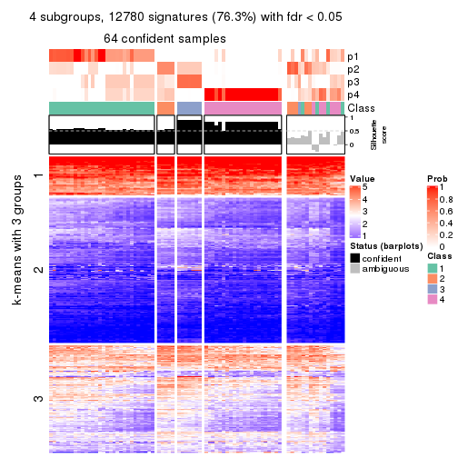
get_signatures(res, k = 5, scale_rows = FALSE)
get_signatures(res, k = 6, scale_rows = FALSE)
Compare the overlap of signatures from different k:
compare_signatures(res)
get_signature() returns a data frame invisibly. TO get the list of signatures, the function
call should be assigned to a variable explicitly. In following code, if plot argument is set
to FALSE, no heatmap is plotted while only the differential analysis is performed.
# code only for demonstration
tb = get_signature(res, k = ..., plot = FALSE)
An example of the output of tb is:
#> which_row fdr mean_1 mean_2 scaled_mean_1 scaled_mean_2 km
#> 1 38 0.042760348 8.373488 9.131774 -0.5533452 0.5164555 1
#> 2 40 0.018707592 7.106213 8.469186 -0.6173731 0.5762149 1
#> 3 55 0.019134737 10.221463 11.207825 -0.6159697 0.5749050 1
#> 4 59 0.006059896 5.921854 7.869574 -0.6899429 0.6439467 1
#> 5 60 0.018055526 8.928898 10.211722 -0.6204761 0.5791110 1
#> 6 98 0.009384629 15.714769 14.887706 0.6635654 -0.6193277 2
...
The columns in tb are:
which_row: row indices corresponding to the input matrix.fdr: FDR for the differential test. mean_x: The mean value in group x.scaled_mean_x: The mean value in group x after rows are scaled.km: Row groups if k-means clustering is applied to rows.UMAP plot which shows how samples are separated.
dimension_reduction(res, k = 2, method = "UMAP")
dimension_reduction(res, k = 3, method = "UMAP")
dimension_reduction(res, k = 4, method = "UMAP")
dimension_reduction(res, k = 5, method = "UMAP")
dimension_reduction(res, k = 6, method = "UMAP")
Following heatmap shows how subgroups are split when increasing k:
collect_classes(res)
If matrix rows can be associated to genes, consider to use GO_Enrichment(res,
...) to perform function enrichment for the signature genes.
The object with results only for a single top-value method and a single partition method can be extracted as:
res = res_list["CV", "mclust"]
# you can also extract it by
# res = res_list["CV:mclust"]
A summary of res and all the functions that can be applied to it:
res
#> A 'ConsensusPartition' object with k = 2, 3, 4, 5, 6.
#> On a matrix with 16751 rows and 80 columns.
#> Top rows (1000, 2000, 3000, 4000, 5000) are extracted by 'CV' method.
#> Subgroups are detected by 'mclust' method.
#> Performed in total 1250 partitions by row resampling.
#> Best k for subgroups seems to be 2.
#>
#> Following methods can be applied to this 'ConsensusPartition' object:
#> [1] "cola_report" "collect_classes" "collect_plots"
#> [4] "collect_stats" "colnames" "compare_signatures"
#> [7] "consensus_heatmap" "dimension_reduction" "functional_enrichment"
#> [10] "get_anno_col" "get_anno" "get_classes"
#> [13] "get_consensus" "get_matrix" "get_membership"
#> [16] "get_param" "get_signatures" "get_stats"
#> [19] "is_best_k" "is_stable_k" "membership_heatmap"
#> [22] "ncol" "nrow" "plot_ecdf"
#> [25] "rownames" "select_partition_number" "show"
#> [28] "suggest_best_k" "test_to_known_factors"
collect_plots() function collects all the plots made from res for all k (number of partitions)
into one single page to provide an easy and fast comparison between different k.
collect_plots(res)

The plots are:
k and the heatmap of
predicted classes for each k.k.k.k.All the plots in panels can be made by individual functions and they are plotted later in this section.
select_partition_number() produces several plots showing different
statistics for choosing “optimized” k. There are following statistics:
k;k, the area increased is defined as \(A_k - A_{k-1}\).The detailed explanations of these statistics can be found in the cola vignette.
Generally speaking, lower PAC score, higher mean silhouette score or higher
concordance corresponds to better partition. Rand index and Jaccard index
measure how similar the current partition is compared to partition with k-1.
If they are too similar, we won't accept k is better than k-1.
select_partition_number(res)
The numeric values for all these statistics can be obtained by get_stats().
get_stats(res)
#> k 1-PAC mean_silhouette concordance area_increased Rand Jaccard
#> 2 2 0.404 0.697 0.855 0.4626 0.596 0.596
#> 3 3 0.451 0.738 0.822 0.3422 0.753 0.594
#> 4 4 0.491 0.566 0.762 0.1149 0.929 0.822
#> 5 5 0.556 0.631 0.742 0.0891 0.832 0.548
#> 6 6 0.629 0.588 0.765 0.0523 0.857 0.486
suggest_best_k() suggests the best \(k\) based on these statistics. The rules are as follows:
NA.suggest_best_k(res)
#> [1] 2
Following shows the table of the partitions (You need to click the show/hide
code output link to see it). The membership matrix (columns with name p*)
is inferred by
clue::cl_consensus()
function with the SE method. Basically the value in the membership matrix
represents the probability to belong to a certain group. The finall class
label for an item is determined with the group with highest probability it
belongs to.
In get_classes() function, the entropy is calculated from the membership
matrix and the silhouette score is calculated from the consensus matrix.
cbind(get_classes(res, k = 2), get_membership(res, k = 2))
#> class entropy silhouette p1 p2
#> 71A0AB6A-CFC2-46F6-878C-6052C5B43D22 2 0.8763 0.6356 0.296 0.704
#> EFC730EC-6385-4167-A65A-F2A3AAEDA2AC 2 0.9170 0.6162 0.332 0.668
#> 14F2F39A-EA0F-4027-8877-FEEEEFF1F085 2 0.0000 0.7696 0.000 1.000
#> 98B2A7F8-A7BD-4DA2-8541-950E44D9ACD7 2 0.8763 0.4910 0.296 0.704
#> 9166F454-2068-46C2-B2EB-FB3BE4126536 1 0.0000 0.9385 1.000 0.000
#> 83B2A0BB-CE24-4DCA-B03A-D20353304365 2 0.9209 0.4466 0.336 0.664
#> D3FC3968-B263-4756-BF7F-1941F70B04DA 2 0.8713 0.5381 0.292 0.708
#> D357AC5C-C2A0-4CC4-B016-4572400AF117 2 0.0000 0.7696 0.000 1.000
#> 1055E951-5B93-4AD7-BE5C-4DF4F6AECEF3 2 0.4431 0.7467 0.092 0.908
#> F2995599-3F21-4F33-92BB-7D70A4735938 1 0.0000 0.9385 1.000 0.000
#> 3EE533BD-5832-4007-8F1F-439166256EB0 2 0.0672 0.7696 0.008 0.992
#> EEC6DA0C-5C49-4EFE-976A-19F432DDAA58 1 0.0000 0.9385 1.000 0.000
#> E6E08C1A-4C1B-4572-92DF-DA15BCBADF76 2 0.9993 0.1115 0.484 0.516
#> BCFCBBAC-EB95-47EB-9EB0-2CB4AE283A75 2 0.9000 0.6257 0.316 0.684
#> 0782D6D0-668B-4B83-8C91-8A35EA3BFF6D 2 0.0938 0.7704 0.012 0.988
#> AC78918E-1031-4AE6-B753-B0799171F0F0 1 0.0672 0.9336 0.992 0.008
#> 6B497CED-34DA-4CF8-8F8D-696105CB3D5F 2 0.8763 0.6356 0.296 0.704
#> 2328D472-583B-43A9-81A4-A21DDEBB5B18 2 0.5059 0.7261 0.112 0.888
#> A6930B33-D9B2-4318-807C-4A25EB4CCCDD 2 0.0000 0.7696 0.000 1.000
#> C8C48AFD-4D8B-491E-993C-3506DC6DD00F 2 1.0000 0.3048 0.496 0.504
#> 093FB845-7905-4064-8E8E-76E3587D8E7C 2 0.8813 0.6343 0.300 0.700
#> B216F996-CCD8-4F56-99B1-4EA9769B10B8 2 0.8763 0.6356 0.296 0.704
#> CB35DED2-5FEA-43E2-AB42-B6B3A7444B66 2 0.8081 0.6758 0.248 0.752
#> BA016F57-F58F-4A66-B85A-0B0F911EEA65 2 0.2236 0.7698 0.036 0.964
#> 519DBD5F-66C0-4CEE-905C-799C855D28FB 1 0.0672 0.9336 0.992 0.008
#> F5B9B89B-6821-43EE-BCFD-623689D03AF9 2 0.0000 0.7696 0.000 1.000
#> 55A39F92-CC88-4A2F-A7D3-7A59DEBEBB42 2 0.7139 0.7098 0.196 0.804
#> 3DBBDEDA-F9FC-40DC-804F-45429EA47ED4 1 0.9815 -0.0885 0.580 0.420
#> BB948BE8-7D48-4AEB-A404-C27A79655D7E 2 0.8861 0.6314 0.304 0.696
#> 9506723F-9193-4D8E-BD97-8A0062AB2F9C 2 0.8763 0.6356 0.296 0.704
#> D0758A7A-9D0E-4EA4-8EE9-7143B398647D 2 0.8763 0.6356 0.296 0.704
#> F400FD4D-72D7-4933-B145-64B7EE245FFC 2 0.2236 0.7698 0.036 0.964
#> 3F87E9ED-3719-48E1-8B69-E352A03E982D 2 0.6887 0.7163 0.184 0.816
#> D6365FEB-CC12-4337-BF8C-66236A585B5D 2 0.9996 0.0998 0.488 0.512
#> A4168812-C38E-4F15-9AF6-79F256279E72 2 0.8763 0.6356 0.296 0.704
#> DB676839-02AA-42A7-962F-89D6AD892008 1 0.0000 0.9385 1.000 0.000
#> 198D8E89-51FD-41DE-AD11-FB2F2FE49908 2 0.9983 0.1343 0.476 0.524
#> 2BADCD01-27E8-49EC-B707-4FAE3D3CB489 1 0.9922 -0.1716 0.552 0.448
#> ABBD6EFE-079B-4BE3-95AB-36AF9197D684 2 0.9881 0.2390 0.436 0.564
#> 39D66B95-61C7-4B76-8E81-1F9F98024B69 1 0.0000 0.9385 1.000 0.000
#> 7A920210-CF3D-4458-B6D5-D9B2ADACA469 1 0.0000 0.9385 1.000 0.000
#> 0CE61CDC-3257-4F03-951B-CC2CFCF675AE 2 0.2236 0.7698 0.036 0.964
#> 7338D61C-77D6-4095-8847-7FD9967B7646 1 0.1414 0.9226 0.980 0.020
#> 0D36FAD5-BA81-4FED-9E2A-DB016F2EF18C 1 0.0000 0.9385 1.000 0.000
#> 43CD31CD-5FAE-418A-B235-49E54560590D 2 0.4022 0.7410 0.080 0.920
#> B6DD72B0-EEFA-41A9-B71D-22DE1343CD32 2 0.8763 0.6356 0.296 0.704
#> 2B729CD9-71A5-4336-ACBA-922A30AF4949 2 0.8327 0.5778 0.264 0.736
#> B76DB955-69B7-4D05-8166-2569ED44628C 1 0.0000 0.9385 1.000 0.000
#> 09CBEE39-7141-4228-AFD3-4714E32A1FB5 2 0.0000 0.7696 0.000 1.000
#> AC1700D5-72E7-4C7F-A288-869DFC229252 2 0.9170 0.6162 0.332 0.668
#> 535A5E8E-8478-477F-87FF-ED6742AA5473 2 0.0000 0.7696 0.000 1.000
#> CFB8573C-9F36-4715-B6F1-6E5B543168A8 1 0.0672 0.9336 0.992 0.008
#> 47A45491-6023-44BF-ABC2-9A470F7FC1F7 2 0.2236 0.7698 0.036 0.964
#> 437C7AA7-98C0-48C7-97DA-86FF44D69B87 2 0.2236 0.7698 0.036 0.964
#> 649ADE7E-6C06-4AB6-8E97-D8C2AAF79A7E 1 0.0672 0.9336 0.992 0.008
#> DEA60B47-AD6A-4EBB-9402-6F97E9640E4E 2 0.2236 0.7698 0.036 0.964
#> 76C574FF-26BF-49CD-9BCA-7BDDCBD06D5D 2 0.0000 0.7696 0.000 1.000
#> 8B6E1F9B-1E90-4333-8E0C-EEDFF25D15C0 2 0.0672 0.7696 0.008 0.992
#> A2473EE7-72D6-4D32-9DF7-5D4E444A6715 2 0.4161 0.7520 0.084 0.916
#> E226C45E-5287-4D0F-A34B-CE251FA293CB 1 0.0000 0.9385 1.000 0.000
#> A2C71C07-AF0C-4016-808C-DFEF458C91C7 1 0.0000 0.9385 1.000 0.000
#> DA00D60F-4CF1-4003-BAF5-896EE2BEE2D4 2 0.2236 0.7698 0.036 0.964
#> 1C17B65F-1930-4CF3-99B6-5D3AA9E99188 2 0.2236 0.7698 0.036 0.964
#> B837D582-A0D3-46BE-8ECA-883F5396AE88 2 0.7602 0.7115 0.220 0.780
#> EF1A102F-C206-4874-8F27-0BF069A613B8 2 0.8813 0.6525 0.300 0.700
#> BC761676-F64C-476A-8D9B-BD3E6149B2CD 2 0.0000 0.7696 0.000 1.000
#> D8351E5C-DC1D-4B4D-83E6-735B2750D944 2 0.9998 0.0869 0.492 0.508
#> 59F65F61-03D0-4909-99BD-4CCB53A088A5 2 0.6887 0.7163 0.184 0.816
#> EFFCCF33-60E1-4550-B13C-14C54ADCF479 2 0.0672 0.7696 0.008 0.992
#> C45EB423-CC14-4BDB-A0B4-447E5DB6DA9C 1 0.0000 0.9385 1.000 0.000
#> D34B0BC6-9142-48AE-A113-5923192644A0 2 0.8763 0.6356 0.296 0.704
#> 634672A6-C68E-479F-AAB5-CBAFF7758EA4 1 0.0000 0.9385 1.000 0.000
#> 06DAE086-D960-4156-9DC8-D126338E2F29 2 0.8713 0.5381 0.292 0.708
#> 3353F579-77CA-4D0E-B794-37DE467CC065 1 0.0672 0.9336 0.992 0.008
#> 976507F2-192B-4095-920A-3014889CD617 1 0.0000 0.9385 1.000 0.000
#> 3FFF89D9-02F5-4D49-8631-099562BF99C7 2 0.2236 0.7698 0.036 0.964
#> 8BC2213D-99DA-44E0-826F-EBF211EECFBF 1 0.0000 0.9385 1.000 0.000
#> A7A16BF7-5E60-4E50-BE04-542EFC4DB472 2 0.0000 0.7696 0.000 1.000
#> E25C9578-9493-466E-A2CD-546DEB076B2D 2 0.0000 0.7696 0.000 1.000
#> EA35E230-DE50-45AB-A737-D5C430652A90 2 0.8763 0.6356 0.296 0.704
cbind(get_classes(res, k = 3), get_membership(res, k = 3))
#> class entropy silhouette p1 p2 p3
#> 71A0AB6A-CFC2-46F6-878C-6052C5B43D22 1 0.175 0.888 0.952 0.048 0.000
#> EFC730EC-6385-4167-A65A-F2A3AAEDA2AC 2 0.577 0.494 0.260 0.728 0.012
#> 14F2F39A-EA0F-4027-8877-FEEEEFF1F085 2 0.613 0.626 0.400 0.600 0.000
#> 98B2A7F8-A7BD-4DA2-8541-950E44D9ACD7 2 0.597 0.639 0.364 0.636 0.000
#> 9166F454-2068-46C2-B2EB-FB3BE4126536 3 0.000 0.906 0.000 0.000 1.000
#> 83B2A0BB-CE24-4DCA-B03A-D20353304365 2 0.840 0.657 0.220 0.620 0.160
#> D3FC3968-B263-4756-BF7F-1941F70B04DA 2 0.286 0.706 0.004 0.912 0.084
#> D357AC5C-C2A0-4CC4-B016-4572400AF117 2 0.613 0.626 0.400 0.600 0.000
#> 1055E951-5B93-4AD7-BE5C-4DF4F6AECEF3 2 0.103 0.717 0.024 0.976 0.000
#> F2995599-3F21-4F33-92BB-7D70A4735938 3 0.236 0.885 0.000 0.072 0.928
#> 3EE533BD-5832-4007-8F1F-439166256EB0 2 0.608 0.637 0.388 0.612 0.000
#> EEC6DA0C-5C49-4EFE-976A-19F432DDAA58 3 0.000 0.906 0.000 0.000 1.000
#> E6E08C1A-4C1B-4572-92DF-DA15BCBADF76 2 0.656 0.630 0.040 0.708 0.252
#> BCFCBBAC-EB95-47EB-9EB0-2CB4AE283A75 1 0.531 0.767 0.816 0.048 0.136
#> 0782D6D0-668B-4B83-8C91-8A35EA3BFF6D 2 0.412 0.733 0.108 0.868 0.024
#> AC78918E-1031-4AE6-B753-B0799171F0F0 3 0.277 0.888 0.048 0.024 0.928
#> 6B497CED-34DA-4CF8-8F8D-696105CB3D5F 1 0.175 0.888 0.952 0.048 0.000
#> 2328D472-583B-43A9-81A4-A21DDEBB5B18 2 0.795 0.649 0.320 0.600 0.080
#> A6930B33-D9B2-4318-807C-4A25EB4CCCDD 2 0.556 0.689 0.300 0.700 0.000
#> C8C48AFD-4D8B-491E-993C-3506DC6DD00F 1 0.762 0.314 0.560 0.048 0.392
#> 093FB845-7905-4064-8E8E-76E3587D8E7C 1 0.264 0.876 0.932 0.048 0.020
#> B216F996-CCD8-4F56-99B1-4EA9769B10B8 1 0.175 0.888 0.952 0.048 0.000
#> CB35DED2-5FEA-43E2-AB42-B6B3A7444B66 1 0.254 0.857 0.920 0.080 0.000
#> BA016F57-F58F-4A66-B85A-0B0F911EEA65 2 0.103 0.717 0.024 0.976 0.000
#> 519DBD5F-66C0-4CEE-905C-799C855D28FB 3 0.277 0.888 0.048 0.024 0.928
#> F5B9B89B-6821-43EE-BCFD-623689D03AF9 2 0.571 0.681 0.320 0.680 0.000
#> 55A39F92-CC88-4A2F-A7D3-7A59DEBEBB42 1 0.288 0.836 0.904 0.096 0.000
#> 3DBBDEDA-F9FC-40DC-804F-45429EA47ED4 2 0.901 0.482 0.140 0.500 0.360
#> BB948BE8-7D48-4AEB-A404-C27A79655D7E 1 0.579 0.732 0.784 0.048 0.168
#> 9506723F-9193-4D8E-BD97-8A0062AB2F9C 1 0.175 0.888 0.952 0.048 0.000
#> D0758A7A-9D0E-4EA4-8EE9-7143B398647D 1 0.175 0.888 0.952 0.048 0.000
#> F400FD4D-72D7-4933-B145-64B7EE245FFC 2 0.103 0.717 0.024 0.976 0.000
#> 3F87E9ED-3719-48E1-8B69-E352A03E982D 1 0.175 0.888 0.952 0.048 0.000
#> D6365FEB-CC12-4337-BF8C-66236A585B5D 2 0.625 0.497 0.004 0.620 0.376
#> A4168812-C38E-4F15-9AF6-79F256279E72 1 0.175 0.888 0.952 0.048 0.000
#> DB676839-02AA-42A7-962F-89D6AD892008 3 0.000 0.906 0.000 0.000 1.000
#> 198D8E89-51FD-41DE-AD11-FB2F2FE49908 2 0.748 0.675 0.132 0.696 0.172
#> 2BADCD01-27E8-49EC-B707-4FAE3D3CB489 3 0.839 0.565 0.224 0.156 0.620
#> ABBD6EFE-079B-4BE3-95AB-36AF9197D684 2 0.807 0.630 0.120 0.636 0.244
#> 39D66B95-61C7-4B76-8E81-1F9F98024B69 3 0.327 0.861 0.000 0.116 0.884
#> 7A920210-CF3D-4458-B6D5-D9B2ADACA469 3 0.000 0.906 0.000 0.000 1.000
#> 0CE61CDC-3257-4F03-951B-CC2CFCF675AE 2 0.145 0.718 0.024 0.968 0.008
#> 7338D61C-77D6-4095-8847-7FD9967B7646 3 0.606 0.537 0.004 0.340 0.656
#> 0D36FAD5-BA81-4FED-9E2A-DB016F2EF18C 3 0.327 0.861 0.000 0.116 0.884
#> 43CD31CD-5FAE-418A-B235-49E54560590D 2 0.613 0.626 0.400 0.600 0.000
#> B6DD72B0-EEFA-41A9-B71D-22DE1343CD32 1 0.175 0.888 0.952 0.048 0.000
#> 2B729CD9-71A5-4336-ACBA-922A30AF4949 2 0.346 0.716 0.024 0.900 0.076
#> B76DB955-69B7-4D05-8166-2569ED44628C 3 0.000 0.906 0.000 0.000 1.000
#> 09CBEE39-7141-4228-AFD3-4714E32A1FB5 2 0.613 0.626 0.400 0.600 0.000
#> AC1700D5-72E7-4C7F-A288-869DFC229252 1 0.832 0.520 0.628 0.160 0.212
#> 535A5E8E-8478-477F-87FF-ED6742AA5473 2 0.613 0.700 0.268 0.712 0.020
#> CFB8573C-9F36-4715-B6F1-6E5B543168A8 3 0.357 0.861 0.004 0.120 0.876
#> 47A45491-6023-44BF-ABC2-9A470F7FC1F7 2 0.103 0.717 0.024 0.976 0.000
#> 437C7AA7-98C0-48C7-97DA-86FF44D69B87 2 0.103 0.717 0.024 0.976 0.000
#> 649ADE7E-6C06-4AB6-8E97-D8C2AAF79A7E 3 0.648 0.659 0.048 0.224 0.728
#> DEA60B47-AD6A-4EBB-9402-6F97E9640E4E 2 0.207 0.724 0.060 0.940 0.000
#> 76C574FF-26BF-49CD-9BCA-7BDDCBD06D5D 2 0.579 0.674 0.332 0.668 0.000
#> 8B6E1F9B-1E90-4333-8E0C-EEDFF25D15C0 2 0.613 0.626 0.400 0.600 0.000
#> A2473EE7-72D6-4D32-9DF7-5D4E444A6715 2 0.704 0.697 0.136 0.728 0.136
#> E226C45E-5287-4D0F-A34B-CE251FA293CB 3 0.000 0.906 0.000 0.000 1.000
#> A2C71C07-AF0C-4016-808C-DFEF458C91C7 3 0.327 0.861 0.000 0.116 0.884
#> DA00D60F-4CF1-4003-BAF5-896EE2BEE2D4 2 0.103 0.717 0.024 0.976 0.000
#> 1C17B65F-1930-4CF3-99B6-5D3AA9E99188 2 0.103 0.717 0.024 0.976 0.000
#> B837D582-A0D3-46BE-8ECA-883F5396AE88 2 0.483 0.620 0.204 0.792 0.004
#> EF1A102F-C206-4874-8F27-0BF069A613B8 2 0.558 0.511 0.256 0.736 0.008
#> BC761676-F64C-476A-8D9B-BD3E6149B2CD 2 0.613 0.626 0.400 0.600 0.000
#> D8351E5C-DC1D-4B4D-83E6-735B2750D944 2 0.625 0.497 0.004 0.620 0.376
#> 59F65F61-03D0-4909-99BD-4CCB53A088A5 1 0.450 0.644 0.804 0.196 0.000
#> EFFCCF33-60E1-4550-B13C-14C54ADCF479 2 0.613 0.626 0.400 0.600 0.000
#> C45EB423-CC14-4BDB-A0B4-447E5DB6DA9C 3 0.000 0.906 0.000 0.000 1.000
#> D34B0BC6-9142-48AE-A113-5923192644A0 1 0.175 0.888 0.952 0.048 0.000
#> 634672A6-C68E-479F-AAB5-CBAFF7758EA4 3 0.236 0.885 0.000 0.072 0.928
#> 06DAE086-D960-4156-9DC8-D126338E2F29 2 0.327 0.699 0.000 0.884 0.116
#> 3353F579-77CA-4D0E-B794-37DE467CC065 3 0.277 0.888 0.048 0.024 0.928
#> 976507F2-192B-4095-920A-3014889CD617 3 0.000 0.906 0.000 0.000 1.000
#> 3FFF89D9-02F5-4D49-8631-099562BF99C7 2 0.207 0.724 0.060 0.940 0.000
#> 8BC2213D-99DA-44E0-826F-EBF211EECFBF 3 0.000 0.906 0.000 0.000 1.000
#> A7A16BF7-5E60-4E50-BE04-542EFC4DB472 2 0.610 0.634 0.392 0.608 0.000
#> E25C9578-9493-466E-A2CD-546DEB076B2D 2 0.568 0.682 0.316 0.684 0.000
#> EA35E230-DE50-45AB-A737-D5C430652A90 1 0.175 0.888 0.952 0.048 0.000
cbind(get_classes(res, k = 4), get_membership(res, k = 4))
#> class entropy silhouette p1 p2 p3 p4
#> 71A0AB6A-CFC2-46F6-878C-6052C5B43D22 1 0.0000 0.82762 1.000 0.000 0.000 0.000
#> EFC730EC-6385-4167-A65A-F2A3AAEDA2AC 2 0.5693 0.48644 0.240 0.704 0.024 0.032
#> 14F2F39A-EA0F-4027-8877-FEEEEFF1F085 2 0.4790 0.48558 0.380 0.620 0.000 0.000
#> 98B2A7F8-A7BD-4DA2-8541-950E44D9ACD7 2 0.6261 0.52305 0.320 0.620 0.020 0.040
#> 9166F454-2068-46C2-B2EB-FB3BE4126536 3 0.3219 0.58037 0.000 0.000 0.836 0.164
#> 83B2A0BB-CE24-4DCA-B03A-D20353304365 2 0.7685 0.50784 0.132 0.620 0.168 0.080
#> D3FC3968-B263-4756-BF7F-1941F70B04DA 2 0.6922 0.54030 0.000 0.584 0.168 0.248
#> D357AC5C-C2A0-4CC4-B016-4572400AF117 2 0.4855 0.46163 0.400 0.600 0.000 0.000
#> 1055E951-5B93-4AD7-BE5C-4DF4F6AECEF3 2 0.3942 0.58763 0.000 0.764 0.000 0.236
#> F2995599-3F21-4F33-92BB-7D70A4735938 3 0.4079 0.35174 0.000 0.020 0.800 0.180
#> 3EE533BD-5832-4007-8F1F-439166256EB0 2 0.3801 0.62152 0.220 0.780 0.000 0.000
#> EEC6DA0C-5C49-4EFE-976A-19F432DDAA58 3 0.3219 0.58037 0.000 0.000 0.836 0.164
#> E6E08C1A-4C1B-4572-92DF-DA15BCBADF76 2 0.7058 0.43208 0.000 0.560 0.168 0.272
#> BCFCBBAC-EB95-47EB-9EB0-2CB4AE283A75 1 0.5053 0.52840 0.732 0.020 0.236 0.012
#> 0782D6D0-668B-4B83-8C91-8A35EA3BFF6D 2 0.3734 0.61772 0.020 0.852 0.116 0.012
#> AC78918E-1031-4AE6-B753-B0799171F0F0 4 0.4855 0.94376 0.000 0.000 0.400 0.600
#> 6B497CED-34DA-4CF8-8F8D-696105CB3D5F 1 0.0188 0.82721 0.996 0.000 0.000 0.004
#> 2328D472-583B-43A9-81A4-A21DDEBB5B18 2 0.6637 0.51125 0.292 0.608 0.092 0.008
#> A6930B33-D9B2-4318-807C-4A25EB4CCCDD 2 0.3726 0.62540 0.212 0.788 0.000 0.000
#> C8C48AFD-4D8B-491E-993C-3506DC6DD00F 1 0.6109 0.22360 0.560 0.016 0.400 0.024
#> 093FB845-7905-4064-8E8E-76E3587D8E7C 1 0.2589 0.74303 0.884 0.000 0.116 0.000
#> B216F996-CCD8-4F56-99B1-4EA9769B10B8 1 0.0188 0.82721 0.996 0.000 0.000 0.004
#> CB35DED2-5FEA-43E2-AB42-B6B3A7444B66 1 0.0921 0.80829 0.972 0.028 0.000 0.000
#> BA016F57-F58F-4A66-B85A-0B0F911EEA65 2 0.3942 0.58763 0.000 0.764 0.000 0.236
#> 519DBD5F-66C0-4CEE-905C-799C855D28FB 3 0.4907 -0.53434 0.000 0.000 0.580 0.420
#> F5B9B89B-6821-43EE-BCFD-623689D03AF9 2 0.3726 0.62540 0.212 0.788 0.000 0.000
#> 55A39F92-CC88-4A2F-A7D3-7A59DEBEBB42 1 0.1297 0.81594 0.964 0.020 0.016 0.000
#> 3DBBDEDA-F9FC-40DC-804F-45429EA47ED4 3 0.8039 -0.18044 0.176 0.372 0.432 0.020
#> BB948BE8-7D48-4AEB-A404-C27A79655D7E 1 0.5497 0.32187 0.608 0.012 0.372 0.008
#> 9506723F-9193-4D8E-BD97-8A0062AB2F9C 1 0.0188 0.82721 0.996 0.000 0.000 0.004
#> D0758A7A-9D0E-4EA4-8EE9-7143B398647D 1 0.0188 0.82721 0.996 0.000 0.000 0.004
#> F400FD4D-72D7-4933-B145-64B7EE245FFC 2 0.3942 0.58763 0.000 0.764 0.000 0.236
#> 3F87E9ED-3719-48E1-8B69-E352A03E982D 1 0.0592 0.81974 0.984 0.016 0.000 0.000
#> D6365FEB-CC12-4337-BF8C-66236A585B5D 2 0.7183 0.44355 0.020 0.616 0.168 0.196
#> A4168812-C38E-4F15-9AF6-79F256279E72 1 0.0000 0.82762 1.000 0.000 0.000 0.000
#> DB676839-02AA-42A7-962F-89D6AD892008 3 0.3219 0.58037 0.000 0.000 0.836 0.164
#> 198D8E89-51FD-41DE-AD11-FB2F2FE49908 2 0.7587 0.46416 0.040 0.600 0.168 0.192
#> 2BADCD01-27E8-49EC-B707-4FAE3D3CB489 3 0.4639 0.51642 0.112 0.052 0.816 0.020
#> ABBD6EFE-079B-4BE3-95AB-36AF9197D684 2 0.7004 0.44095 0.012 0.620 0.168 0.200
#> 39D66B95-61C7-4B76-8E81-1F9F98024B69 3 0.1174 0.69254 0.000 0.020 0.968 0.012
#> 7A920210-CF3D-4458-B6D5-D9B2ADACA469 3 0.0592 0.69418 0.000 0.000 0.984 0.016
#> 0CE61CDC-3257-4F03-951B-CC2CFCF675AE 2 0.4535 0.58858 0.000 0.744 0.016 0.240
#> 7338D61C-77D6-4095-8847-7FD9967B7646 2 0.7747 -0.00891 0.000 0.388 0.380 0.232
#> 0D36FAD5-BA81-4FED-9E2A-DB016F2EF18C 3 0.1174 0.69254 0.000 0.020 0.968 0.012
#> 43CD31CD-5FAE-418A-B235-49E54560590D 2 0.4855 0.46163 0.400 0.600 0.000 0.000
#> B6DD72B0-EEFA-41A9-B71D-22DE1343CD32 1 0.0000 0.82762 1.000 0.000 0.000 0.000
#> 2B729CD9-71A5-4336-ACBA-922A30AF4949 2 0.6823 0.54666 0.000 0.596 0.160 0.244
#> B76DB955-69B7-4D05-8166-2569ED44628C 3 0.0592 0.69418 0.000 0.000 0.984 0.016
#> 09CBEE39-7141-4228-AFD3-4714E32A1FB5 2 0.4855 0.46163 0.400 0.600 0.000 0.000
#> AC1700D5-72E7-4C7F-A288-869DFC229252 1 0.6612 0.25239 0.560 0.048 0.372 0.020
#> 535A5E8E-8478-477F-87FF-ED6742AA5473 2 0.3870 0.62706 0.208 0.788 0.000 0.004
#> CFB8573C-9F36-4715-B6F1-6E5B543168A8 3 0.4327 0.24062 0.000 0.016 0.768 0.216
#> 47A45491-6023-44BF-ABC2-9A470F7FC1F7 2 0.3942 0.58763 0.000 0.764 0.000 0.236
#> 437C7AA7-98C0-48C7-97DA-86FF44D69B87 2 0.3942 0.58763 0.000 0.764 0.000 0.236
#> 649ADE7E-6C06-4AB6-8E97-D8C2AAF79A7E 4 0.5428 0.97266 0.000 0.020 0.380 0.600
#> DEA60B47-AD6A-4EBB-9402-6F97E9640E4E 2 0.3764 0.59708 0.000 0.784 0.000 0.216
#> 76C574FF-26BF-49CD-9BCA-7BDDCBD06D5D 2 0.3764 0.62363 0.216 0.784 0.000 0.000
#> 8B6E1F9B-1E90-4333-8E0C-EEDFF25D15C0 1 0.4961 -0.28017 0.552 0.448 0.000 0.000
#> A2473EE7-72D6-4D32-9DF7-5D4E444A6715 2 0.7307 0.42791 0.000 0.468 0.156 0.376
#> E226C45E-5287-4D0F-A34B-CE251FA293CB 3 0.1059 0.69569 0.000 0.016 0.972 0.012
#> A2C71C07-AF0C-4016-808C-DFEF458C91C7 3 0.1174 0.69254 0.000 0.020 0.968 0.012
#> DA00D60F-4CF1-4003-BAF5-896EE2BEE2D4 2 0.3942 0.58763 0.000 0.764 0.000 0.236
#> 1C17B65F-1930-4CF3-99B6-5D3AA9E99188 2 0.3942 0.58763 0.000 0.764 0.000 0.236
#> B837D582-A0D3-46BE-8ECA-883F5396AE88 2 0.5192 0.54453 0.204 0.748 0.020 0.028
#> EF1A102F-C206-4874-8F27-0BF069A613B8 2 0.5530 0.51801 0.220 0.724 0.024 0.032
#> BC761676-F64C-476A-8D9B-BD3E6149B2CD 2 0.4855 0.46163 0.400 0.600 0.000 0.000
#> D8351E5C-DC1D-4B4D-83E6-735B2750D944 2 0.6702 0.42925 0.000 0.616 0.168 0.216
#> 59F65F61-03D0-4909-99BD-4CCB53A088A5 1 0.2281 0.72017 0.904 0.096 0.000 0.000
#> EFFCCF33-60E1-4550-B13C-14C54ADCF479 2 0.4948 0.42069 0.440 0.560 0.000 0.000
#> C45EB423-CC14-4BDB-A0B4-447E5DB6DA9C 3 0.3219 0.58037 0.000 0.000 0.836 0.164
#> D34B0BC6-9142-48AE-A113-5923192644A0 1 0.0000 0.82762 1.000 0.000 0.000 0.000
#> 634672A6-C68E-479F-AAB5-CBAFF7758EA4 3 0.1174 0.69254 0.000 0.020 0.968 0.012
#> 06DAE086-D960-4156-9DC8-D126338E2F29 2 0.5470 0.57611 0.000 0.732 0.168 0.100
#> 3353F579-77CA-4D0E-B794-37DE467CC065 4 0.5428 0.97266 0.000 0.020 0.380 0.600
#> 976507F2-192B-4095-920A-3014889CD617 3 0.0707 0.69146 0.000 0.000 0.980 0.020
#> 3FFF89D9-02F5-4D49-8631-099562BF99C7 2 0.3942 0.58763 0.000 0.764 0.000 0.236
#> 8BC2213D-99DA-44E0-826F-EBF211EECFBF 3 0.0592 0.69626 0.000 0.016 0.984 0.000
#> A7A16BF7-5E60-4E50-BE04-542EFC4DB472 2 0.3975 0.60965 0.240 0.760 0.000 0.000
#> E25C9578-9493-466E-A2CD-546DEB076B2D 2 0.3726 0.62540 0.212 0.788 0.000 0.000
#> EA35E230-DE50-45AB-A737-D5C430652A90 1 0.0000 0.82762 1.000 0.000 0.000 0.000
cbind(get_classes(res, k = 5), get_membership(res, k = 5))
#> class entropy silhouette p1 p2 p3 p4 p5
#> 71A0AB6A-CFC2-46F6-878C-6052C5B43D22 1 0.507 0.7892 0.696 0.188 0.000 0.000 0.116
#> EFC730EC-6385-4167-A65A-F2A3AAEDA2AC 4 0.344 0.6327 0.008 0.188 0.004 0.800 0.000
#> 14F2F39A-EA0F-4027-8877-FEEEEFF1F085 2 0.468 0.6616 0.072 0.720 0.000 0.208 0.000
#> 98B2A7F8-A7BD-4DA2-8541-950E44D9ACD7 2 0.479 0.5656 0.212 0.728 0.000 0.028 0.032
#> 9166F454-2068-46C2-B2EB-FB3BE4126536 3 0.000 0.6553 0.000 0.000 1.000 0.000 0.000
#> 83B2A0BB-CE24-4DCA-B03A-D20353304365 2 0.533 0.5042 0.240 0.680 0.000 0.028 0.052
#> D3FC3968-B263-4756-BF7F-1941F70B04DA 4 0.474 0.5559 0.296 0.004 0.000 0.668 0.032
#> D357AC5C-C2A0-4CC4-B016-4572400AF117 2 0.459 0.6598 0.068 0.728 0.000 0.204 0.000
#> 1055E951-5B93-4AD7-BE5C-4DF4F6AECEF3 4 0.000 0.7445 0.000 0.000 0.000 1.000 0.000
#> F2995599-3F21-4F33-92BB-7D70A4735938 3 0.532 0.6417 0.296 0.000 0.624 0.000 0.080
#> 3EE533BD-5832-4007-8F1F-439166256EB0 2 0.372 0.6825 0.004 0.776 0.000 0.208 0.012
#> EEC6DA0C-5C49-4EFE-976A-19F432DDAA58 3 0.000 0.6553 0.000 0.000 1.000 0.000 0.000
#> E6E08C1A-4C1B-4572-92DF-DA15BCBADF76 4 0.801 0.1863 0.296 0.208 0.000 0.392 0.104
#> BCFCBBAC-EB95-47EB-9EB0-2CB4AE283A75 1 0.340 0.5756 0.840 0.096 0.064 0.000 0.000
#> 0782D6D0-668B-4B83-8C91-8A35EA3BFF6D 2 0.621 0.4881 0.184 0.540 0.000 0.276 0.000
#> AC78918E-1031-4AE6-B753-B0799171F0F0 5 0.247 0.8291 0.136 0.000 0.000 0.000 0.864
#> 6B497CED-34DA-4CF8-8F8D-696105CB3D5F 1 0.509 0.7881 0.696 0.180 0.000 0.000 0.124
#> 2328D472-583B-43A9-81A4-A21DDEBB5B18 2 0.374 0.5939 0.064 0.848 0.060 0.020 0.008
#> A6930B33-D9B2-4318-807C-4A25EB4CCCDD 2 0.356 0.6828 0.000 0.780 0.000 0.208 0.012
#> C8C48AFD-4D8B-491E-993C-3506DC6DD00F 1 0.241 0.3769 0.896 0.004 0.088 0.000 0.012
#> 093FB845-7905-4064-8E8E-76E3587D8E7C 1 0.501 0.7742 0.644 0.300 0.056 0.000 0.000
#> B216F996-CCD8-4F56-99B1-4EA9769B10B8 1 0.509 0.7881 0.696 0.180 0.000 0.000 0.124
#> CB35DED2-5FEA-43E2-AB42-B6B3A7444B66 1 0.411 0.7902 0.684 0.308 0.000 0.000 0.008
#> BA016F57-F58F-4A66-B85A-0B0F911EEA65 4 0.000 0.7445 0.000 0.000 0.000 1.000 0.000
#> 519DBD5F-66C0-4CEE-905C-799C855D28FB 5 0.631 0.0961 0.136 0.004 0.392 0.000 0.468
#> F5B9B89B-6821-43EE-BCFD-623689D03AF9 2 0.356 0.6828 0.000 0.780 0.000 0.208 0.012
#> 55A39F92-CC88-4A2F-A7D3-7A59DEBEBB42 1 0.391 0.7823 0.676 0.324 0.000 0.000 0.000
#> 3DBBDEDA-F9FC-40DC-804F-45429EA47ED4 2 0.602 0.1868 0.364 0.536 0.088 0.000 0.012
#> BB948BE8-7D48-4AEB-A404-C27A79655D7E 1 0.210 0.4135 0.916 0.004 0.068 0.000 0.012
#> 9506723F-9193-4D8E-BD97-8A0062AB2F9C 1 0.509 0.7881 0.696 0.180 0.000 0.000 0.124
#> D0758A7A-9D0E-4EA4-8EE9-7143B398647D 1 0.509 0.7881 0.696 0.180 0.000 0.000 0.124
#> F400FD4D-72D7-4933-B145-64B7EE245FFC 4 0.000 0.7445 0.000 0.000 0.000 1.000 0.000
#> 3F87E9ED-3719-48E1-8B69-E352A03E982D 1 0.389 0.7824 0.680 0.320 0.000 0.000 0.000
#> D6365FEB-CC12-4337-BF8C-66236A585B5D 2 0.565 0.2883 0.304 0.600 0.000 0.004 0.092
#> A4168812-C38E-4F15-9AF6-79F256279E72 1 0.384 0.7908 0.692 0.308 0.000 0.000 0.000
#> DB676839-02AA-42A7-962F-89D6AD892008 3 0.000 0.6553 0.000 0.000 1.000 0.000 0.000
#> 198D8E89-51FD-41DE-AD11-FB2F2FE49908 2 0.588 0.3229 0.320 0.584 0.000 0.016 0.080
#> 2BADCD01-27E8-49EC-B707-4FAE3D3CB489 3 0.450 0.7280 0.304 0.004 0.676 0.004 0.012
#> ABBD6EFE-079B-4BE3-95AB-36AF9197D684 2 0.562 0.2907 0.308 0.600 0.000 0.004 0.088
#> 39D66B95-61C7-4B76-8E81-1F9F98024B69 3 0.415 0.7417 0.296 0.000 0.692 0.000 0.012
#> 7A920210-CF3D-4458-B6D5-D9B2ADACA469 3 0.104 0.6831 0.040 0.000 0.960 0.000 0.000
#> 0CE61CDC-3257-4F03-951B-CC2CFCF675AE 4 0.212 0.7134 0.096 0.000 0.000 0.900 0.004
#> 7338D61C-77D6-4095-8847-7FD9967B7646 4 0.798 0.1930 0.296 0.208 0.000 0.396 0.100
#> 0D36FAD5-BA81-4FED-9E2A-DB016F2EF18C 3 0.415 0.7417 0.296 0.000 0.692 0.000 0.012
#> 43CD31CD-5FAE-418A-B235-49E54560590D 2 0.251 0.5910 0.080 0.892 0.000 0.028 0.000
#> B6DD72B0-EEFA-41A9-B71D-22DE1343CD32 1 0.410 0.7937 0.692 0.300 0.004 0.000 0.004
#> 2B729CD9-71A5-4336-ACBA-922A30AF4949 4 0.416 0.5827 0.280 0.000 0.000 0.704 0.016
#> B76DB955-69B7-4D05-8166-2569ED44628C 3 0.252 0.7163 0.108 0.000 0.880 0.000 0.012
#> 09CBEE39-7141-4228-AFD3-4714E32A1FB5 2 0.359 0.6286 0.080 0.828 0.000 0.092 0.000
#> AC1700D5-72E7-4C7F-A288-869DFC229252 1 0.257 0.3802 0.892 0.004 0.088 0.004 0.012
#> 535A5E8E-8478-477F-87FF-ED6742AA5473 2 0.361 0.6810 0.008 0.780 0.004 0.208 0.000
#> CFB8573C-9F36-4715-B6F1-6E5B543168A8 4 0.914 0.0463 0.296 0.208 0.072 0.324 0.100
#> 47A45491-6023-44BF-ABC2-9A470F7FC1F7 4 0.000 0.7445 0.000 0.000 0.000 1.000 0.000
#> 437C7AA7-98C0-48C7-97DA-86FF44D69B87 4 0.000 0.7445 0.000 0.000 0.000 1.000 0.000
#> 649ADE7E-6C06-4AB6-8E97-D8C2AAF79A7E 5 0.263 0.8269 0.136 0.004 0.000 0.000 0.860
#> DEA60B47-AD6A-4EBB-9402-6F97E9640E4E 4 0.000 0.7445 0.000 0.000 0.000 1.000 0.000
#> 76C574FF-26BF-49CD-9BCA-7BDDCBD06D5D 2 0.356 0.6828 0.000 0.780 0.000 0.208 0.012
#> 8B6E1F9B-1E90-4333-8E0C-EEDFF25D15C0 2 0.488 0.6278 0.108 0.716 0.000 0.176 0.000
#> A2473EE7-72D6-4D32-9DF7-5D4E444A6715 4 0.636 0.5382 0.256 0.060 0.000 0.604 0.080
#> E226C45E-5287-4D0F-A34B-CE251FA293CB 3 0.415 0.7417 0.296 0.000 0.692 0.000 0.012
#> A2C71C07-AF0C-4016-808C-DFEF458C91C7 3 0.415 0.7417 0.296 0.000 0.692 0.000 0.012
#> DA00D60F-4CF1-4003-BAF5-896EE2BEE2D4 4 0.000 0.7445 0.000 0.000 0.000 1.000 0.000
#> 1C17B65F-1930-4CF3-99B6-5D3AA9E99188 4 0.000 0.7445 0.000 0.000 0.000 1.000 0.000
#> B837D582-A0D3-46BE-8ECA-883F5396AE88 4 0.407 0.6292 0.036 0.188 0.004 0.772 0.000
#> EF1A102F-C206-4874-8F27-0BF069A613B8 4 0.344 0.6327 0.008 0.188 0.004 0.800 0.000
#> BC761676-F64C-476A-8D9B-BD3E6149B2CD 2 0.309 0.6027 0.088 0.860 0.000 0.052 0.000
#> D8351E5C-DC1D-4B4D-83E6-735B2750D944 2 0.571 0.2774 0.296 0.600 0.000 0.004 0.100
#> 59F65F61-03D0-4909-99BD-4CCB53A088A5 1 0.473 0.6453 0.580 0.400 0.000 0.000 0.020
#> EFFCCF33-60E1-4550-B13C-14C54ADCF479 2 0.476 0.6507 0.080 0.716 0.000 0.204 0.000
#> C45EB423-CC14-4BDB-A0B4-447E5DB6DA9C 3 0.000 0.6553 0.000 0.000 1.000 0.000 0.000
#> D34B0BC6-9142-48AE-A113-5923192644A0 1 0.442 0.7966 0.692 0.280 0.000 0.000 0.028
#> 634672A6-C68E-479F-AAB5-CBAFF7758EA4 3 0.413 0.7434 0.292 0.000 0.696 0.000 0.012
#> 06DAE086-D960-4156-9DC8-D126338E2F29 4 0.531 0.5346 0.296 0.028 0.000 0.644 0.032
#> 3353F579-77CA-4D0E-B794-37DE467CC065 5 0.247 0.8291 0.136 0.000 0.000 0.000 0.864
#> 976507F2-192B-4095-920A-3014889CD617 3 0.247 0.7156 0.104 0.000 0.884 0.000 0.012
#> 3FFF89D9-02F5-4D49-8631-099562BF99C7 4 0.000 0.7445 0.000 0.000 0.000 1.000 0.000
#> 8BC2213D-99DA-44E0-826F-EBF211EECFBF 3 0.404 0.7461 0.276 0.000 0.712 0.000 0.012
#> A7A16BF7-5E60-4E50-BE04-542EFC4DB472 2 0.356 0.6828 0.000 0.780 0.000 0.208 0.012
#> E25C9578-9493-466E-A2CD-546DEB076B2D 2 0.356 0.6828 0.000 0.780 0.000 0.208 0.012
#> EA35E230-DE50-45AB-A737-D5C430652A90 1 0.384 0.7908 0.692 0.308 0.000 0.000 0.000
cbind(get_classes(res, k = 6), get_membership(res, k = 6))
#> class entropy silhouette p1 p2 p3 p4 p5 p6
#> 71A0AB6A-CFC2-46F6-878C-6052C5B43D22 1 0.3790 0.6537 0.772 0.024 0.000 0.000 0.020 0.184
#> EFC730EC-6385-4167-A65A-F2A3AAEDA2AC 1 0.5873 0.3206 0.432 0.200 0.000 0.368 0.000 0.000
#> 14F2F39A-EA0F-4027-8877-FEEEEFF1F085 2 0.2106 0.7815 0.032 0.904 0.000 0.000 0.064 0.000
#> 98B2A7F8-A7BD-4DA2-8541-950E44D9ACD7 5 0.3789 0.0522 0.000 0.416 0.000 0.000 0.584 0.000
#> 9166F454-2068-46C2-B2EB-FB3BE4126536 3 0.0291 0.5941 0.000 0.000 0.992 0.000 0.004 0.004
#> 83B2A0BB-CE24-4DCA-B03A-D20353304365 5 0.3050 0.4732 0.000 0.236 0.000 0.000 0.764 0.000
#> D3FC3968-B263-4756-BF7F-1941F70B04DA 4 0.3866 -0.0509 0.000 0.000 0.000 0.516 0.484 0.000
#> D357AC5C-C2A0-4CC4-B016-4572400AF117 2 0.4222 0.7151 0.088 0.728 0.000 0.000 0.184 0.000
#> 1055E951-5B93-4AD7-BE5C-4DF4F6AECEF3 4 0.0000 0.8523 0.000 0.000 0.000 1.000 0.000 0.000
#> F2995599-3F21-4F33-92BB-7D70A4735938 3 0.3756 0.5905 0.000 0.000 0.600 0.000 0.400 0.000
#> 3EE533BD-5832-4007-8F1F-439166256EB0 2 0.2473 0.6964 0.136 0.856 0.000 0.000 0.008 0.000
#> EEC6DA0C-5C49-4EFE-976A-19F432DDAA58 3 0.0291 0.5941 0.000 0.000 0.992 0.000 0.004 0.004
#> E6E08C1A-4C1B-4572-92DF-DA15BCBADF76 5 0.2092 0.6566 0.000 0.000 0.000 0.124 0.876 0.000
#> BCFCBBAC-EB95-47EB-9EB0-2CB4AE283A75 1 0.3265 0.5373 0.748 0.000 0.000 0.000 0.248 0.004
#> 0782D6D0-668B-4B83-8C91-8A35EA3BFF6D 2 0.3440 0.5582 0.000 0.776 0.000 0.028 0.196 0.000
#> AC78918E-1031-4AE6-B753-B0799171F0F0 6 0.2664 0.8202 0.000 0.000 0.000 0.000 0.184 0.816
#> 6B497CED-34DA-4CF8-8F8D-696105CB3D5F 1 0.3189 0.6428 0.796 0.000 0.000 0.000 0.020 0.184
#> 2328D472-583B-43A9-81A4-A21DDEBB5B18 5 0.2325 0.6401 0.048 0.060 0.000 0.000 0.892 0.000
#> A6930B33-D9B2-4318-807C-4A25EB4CCCDD 2 0.0000 0.7998 0.000 1.000 0.000 0.000 0.000 0.000
#> C8C48AFD-4D8B-491E-993C-3506DC6DD00F 1 0.4101 0.2942 0.580 0.000 0.000 0.000 0.408 0.012
#> 093FB845-7905-4064-8E8E-76E3587D8E7C 1 0.2003 0.6859 0.884 0.116 0.000 0.000 0.000 0.000
#> B216F996-CCD8-4F56-99B1-4EA9769B10B8 1 0.3088 0.6481 0.808 0.000 0.000 0.000 0.020 0.172
#> CB35DED2-5FEA-43E2-AB42-B6B3A7444B66 1 0.1765 0.6904 0.904 0.096 0.000 0.000 0.000 0.000
#> BA016F57-F58F-4A66-B85A-0B0F911EEA65 4 0.0000 0.8523 0.000 0.000 0.000 1.000 0.000 0.000
#> 519DBD5F-66C0-4CEE-905C-799C855D28FB 6 0.5915 0.1922 0.000 0.000 0.360 0.000 0.212 0.428
#> F5B9B89B-6821-43EE-BCFD-623689D03AF9 2 0.0000 0.7998 0.000 1.000 0.000 0.000 0.000 0.000
#> 55A39F92-CC88-4A2F-A7D3-7A59DEBEBB42 1 0.2340 0.6699 0.852 0.148 0.000 0.000 0.000 0.000
#> 3DBBDEDA-F9FC-40DC-804F-45429EA47ED4 5 0.2009 0.6543 0.068 0.024 0.000 0.000 0.908 0.000
#> BB948BE8-7D48-4AEB-A404-C27A79655D7E 1 0.4101 0.3277 0.580 0.000 0.000 0.000 0.408 0.012
#> 9506723F-9193-4D8E-BD97-8A0062AB2F9C 1 0.3189 0.6428 0.796 0.000 0.000 0.000 0.020 0.184
#> D0758A7A-9D0E-4EA4-8EE9-7143B398647D 1 0.3189 0.6428 0.796 0.000 0.000 0.000 0.020 0.184
#> F400FD4D-72D7-4933-B145-64B7EE245FFC 4 0.0000 0.8523 0.000 0.000 0.000 1.000 0.000 0.000
#> 3F87E9ED-3719-48E1-8B69-E352A03E982D 1 0.2135 0.6805 0.872 0.128 0.000 0.000 0.000 0.000
#> D6365FEB-CC12-4337-BF8C-66236A585B5D 5 0.0937 0.6873 0.000 0.040 0.000 0.000 0.960 0.000
#> A4168812-C38E-4F15-9AF6-79F256279E72 1 0.2048 0.6850 0.880 0.120 0.000 0.000 0.000 0.000
#> DB676839-02AA-42A7-962F-89D6AD892008 3 0.0000 0.5973 0.000 0.000 1.000 0.000 0.000 0.000
#> 198D8E89-51FD-41DE-AD11-FB2F2FE49908 5 0.1219 0.6894 0.000 0.048 0.000 0.004 0.948 0.000
#> 2BADCD01-27E8-49EC-B707-4FAE3D3CB489 5 0.5839 -0.2783 0.188 0.000 0.404 0.000 0.408 0.000
#> ABBD6EFE-079B-4BE3-95AB-36AF9197D684 5 0.1141 0.6880 0.000 0.052 0.000 0.000 0.948 0.000
#> 39D66B95-61C7-4B76-8E81-1F9F98024B69 3 0.3756 0.5905 0.000 0.000 0.600 0.000 0.400 0.000
#> 7A920210-CF3D-4458-B6D5-D9B2ADACA469 3 0.0000 0.5973 0.000 0.000 1.000 0.000 0.000 0.000
#> 0CE61CDC-3257-4F03-951B-CC2CFCF675AE 4 0.2260 0.7101 0.000 0.000 0.000 0.860 0.140 0.000
#> 7338D61C-77D6-4095-8847-7FD9967B7646 5 0.2234 0.6534 0.000 0.000 0.000 0.124 0.872 0.004
#> 0D36FAD5-BA81-4FED-9E2A-DB016F2EF18C 3 0.3756 0.5905 0.000 0.000 0.600 0.000 0.400 0.000
#> 43CD31CD-5FAE-418A-B235-49E54560590D 2 0.5228 0.4394 0.096 0.504 0.000 0.000 0.400 0.000
#> B6DD72B0-EEFA-41A9-B71D-22DE1343CD32 1 0.2358 0.6892 0.876 0.108 0.000 0.000 0.016 0.000
#> 2B729CD9-71A5-4336-ACBA-922A30AF4949 4 0.3717 0.2303 0.000 0.000 0.000 0.616 0.384 0.000
#> B76DB955-69B7-4D05-8166-2569ED44628C 3 0.1910 0.6241 0.000 0.000 0.892 0.000 0.108 0.000
#> 09CBEE39-7141-4228-AFD3-4714E32A1FB5 2 0.5144 0.5215 0.100 0.560 0.000 0.000 0.340 0.000
#> AC1700D5-72E7-4C7F-A288-869DFC229252 1 0.4010 0.2964 0.584 0.000 0.000 0.000 0.408 0.008
#> 535A5E8E-8478-477F-87FF-ED6742AA5473 2 0.3693 0.7514 0.092 0.788 0.000 0.000 0.120 0.000
#> CFB8573C-9F36-4715-B6F1-6E5B543168A8 5 0.4414 0.0795 0.000 0.000 0.336 0.032 0.628 0.004
#> 47A45491-6023-44BF-ABC2-9A470F7FC1F7 4 0.0000 0.8523 0.000 0.000 0.000 1.000 0.000 0.000
#> 437C7AA7-98C0-48C7-97DA-86FF44D69B87 4 0.0000 0.8523 0.000 0.000 0.000 1.000 0.000 0.000
#> 649ADE7E-6C06-4AB6-8E97-D8C2AAF79A7E 6 0.2994 0.8118 0.000 0.004 0.000 0.000 0.208 0.788
#> DEA60B47-AD6A-4EBB-9402-6F97E9640E4E 4 0.1007 0.8243 0.000 0.044 0.000 0.956 0.000 0.000
#> 76C574FF-26BF-49CD-9BCA-7BDDCBD06D5D 2 0.0000 0.7998 0.000 1.000 0.000 0.000 0.000 0.000
#> 8B6E1F9B-1E90-4333-8E0C-EEDFF25D15C0 1 0.3684 0.4097 0.628 0.372 0.000 0.000 0.000 0.000
#> A2473EE7-72D6-4D32-9DF7-5D4E444A6715 5 0.4911 0.2547 0.000 0.068 0.000 0.384 0.548 0.000
#> E226C45E-5287-4D0F-A34B-CE251FA293CB 3 0.3907 0.5784 0.000 0.000 0.588 0.000 0.408 0.004
#> A2C71C07-AF0C-4016-808C-DFEF458C91C7 3 0.3756 0.5905 0.000 0.000 0.600 0.000 0.400 0.000
#> DA00D60F-4CF1-4003-BAF5-896EE2BEE2D4 4 0.0000 0.8523 0.000 0.000 0.000 1.000 0.000 0.000
#> 1C17B65F-1930-4CF3-99B6-5D3AA9E99188 4 0.0000 0.8523 0.000 0.000 0.000 1.000 0.000 0.000
#> B837D582-A0D3-46BE-8ECA-883F5396AE88 1 0.6631 0.3275 0.428 0.200 0.000 0.328 0.044 0.000
#> EF1A102F-C206-4874-8F27-0BF069A613B8 1 0.5873 0.3206 0.432 0.200 0.000 0.368 0.000 0.000
#> BC761676-F64C-476A-8D9B-BD3E6149B2CD 1 0.5940 0.0606 0.456 0.248 0.000 0.000 0.296 0.000
#> D8351E5C-DC1D-4B4D-83E6-735B2750D944 5 0.0937 0.6873 0.000 0.040 0.000 0.000 0.960 0.000
#> 59F65F61-03D0-4909-99BD-4CCB53A088A5 1 0.1327 0.6896 0.936 0.064 0.000 0.000 0.000 0.000
#> EFFCCF33-60E1-4550-B13C-14C54ADCF479 1 0.3995 0.1793 0.516 0.480 0.000 0.000 0.004 0.000
#> C45EB423-CC14-4BDB-A0B4-447E5DB6DA9C 3 0.0000 0.5973 0.000 0.000 1.000 0.000 0.000 0.000
#> D34B0BC6-9142-48AE-A113-5923192644A0 1 0.0632 0.6899 0.976 0.024 0.000 0.000 0.000 0.000
#> 634672A6-C68E-479F-AAB5-CBAFF7758EA4 3 0.3672 0.6155 0.000 0.000 0.632 0.000 0.368 0.000
#> 06DAE086-D960-4156-9DC8-D126338E2F29 5 0.2631 0.6160 0.000 0.000 0.000 0.180 0.820 0.000
#> 3353F579-77CA-4D0E-B794-37DE467CC065 6 0.2664 0.8202 0.000 0.000 0.000 0.000 0.184 0.816
#> 976507F2-192B-4095-920A-3014889CD617 3 0.2070 0.6215 0.000 0.000 0.892 0.000 0.100 0.008
#> 3FFF89D9-02F5-4D49-8631-099562BF99C7 4 0.1007 0.8243 0.000 0.044 0.000 0.956 0.000 0.000
#> 8BC2213D-99DA-44E0-826F-EBF211EECFBF 3 0.3428 0.6337 0.000 0.000 0.696 0.000 0.304 0.000
#> A7A16BF7-5E60-4E50-BE04-542EFC4DB472 2 0.0000 0.7998 0.000 1.000 0.000 0.000 0.000 0.000
#> E25C9578-9493-466E-A2CD-546DEB076B2D 2 0.0000 0.7998 0.000 1.000 0.000 0.000 0.000 0.000
#> EA35E230-DE50-45AB-A737-D5C430652A90 1 0.2003 0.6859 0.884 0.116 0.000 0.000 0.000 0.000
Heatmaps for the consensus matrix. It visualizes the probability of two samples to be in a same group.
consensus_heatmap(res, k = 2)
consensus_heatmap(res, k = 3)
consensus_heatmap(res, k = 4)
consensus_heatmap(res, k = 5)
consensus_heatmap(res, k = 6)
Heatmaps for the membership of samples in all partitions to see how consistent they are:
membership_heatmap(res, k = 2)
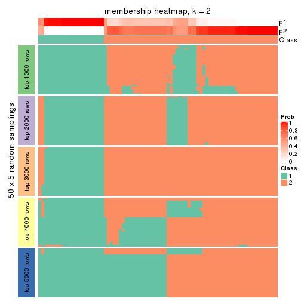
membership_heatmap(res, k = 3)
membership_heatmap(res, k = 4)
membership_heatmap(res, k = 5)
membership_heatmap(res, k = 6)
As soon as we have had the classes for columns, we can look for signatures which are significantly different between classes which can be candidate marks for certain classes. Following are the heatmaps for signatures.
Signature heatmaps where rows are scaled:
get_signatures(res, k = 2)
get_signatures(res, k = 3)
get_signatures(res, k = 4)
get_signatures(res, k = 5)
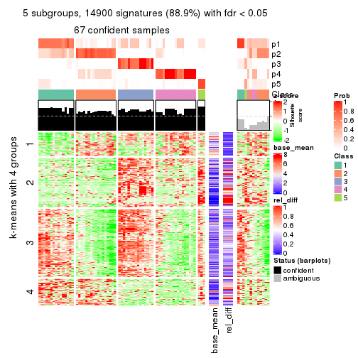
get_signatures(res, k = 6)
Signature heatmaps where rows are not scaled:
get_signatures(res, k = 2, scale_rows = FALSE)
get_signatures(res, k = 3, scale_rows = FALSE)

get_signatures(res, k = 4, scale_rows = FALSE)

get_signatures(res, k = 5, scale_rows = FALSE)
get_signatures(res, k = 6, scale_rows = FALSE)
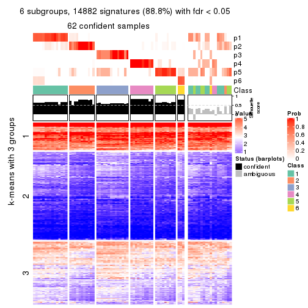
Compare the overlap of signatures from different k:
compare_signatures(res)

get_signature() returns a data frame invisibly. TO get the list of signatures, the function
call should be assigned to a variable explicitly. In following code, if plot argument is set
to FALSE, no heatmap is plotted while only the differential analysis is performed.
# code only for demonstration
tb = get_signature(res, k = ..., plot = FALSE)
An example of the output of tb is:
#> which_row fdr mean_1 mean_2 scaled_mean_1 scaled_mean_2 km
#> 1 38 0.042760348 8.373488 9.131774 -0.5533452 0.5164555 1
#> 2 40 0.018707592 7.106213 8.469186 -0.6173731 0.5762149 1
#> 3 55 0.019134737 10.221463 11.207825 -0.6159697 0.5749050 1
#> 4 59 0.006059896 5.921854 7.869574 -0.6899429 0.6439467 1
#> 5 60 0.018055526 8.928898 10.211722 -0.6204761 0.5791110 1
#> 6 98 0.009384629 15.714769 14.887706 0.6635654 -0.6193277 2
...
The columns in tb are:
which_row: row indices corresponding to the input matrix.fdr: FDR for the differential test. mean_x: The mean value in group x.scaled_mean_x: The mean value in group x after rows are scaled.km: Row groups if k-means clustering is applied to rows.UMAP plot which shows how samples are separated.
dimension_reduction(res, k = 2, method = "UMAP")
dimension_reduction(res, k = 3, method = "UMAP")
dimension_reduction(res, k = 4, method = "UMAP")
dimension_reduction(res, k = 5, method = "UMAP")
dimension_reduction(res, k = 6, method = "UMAP")
Following heatmap shows how subgroups are split when increasing k:
collect_classes(res)

If matrix rows can be associated to genes, consider to use GO_Enrichment(res,
...) to perform function enrichment for the signature genes.
The object with results only for a single top-value method and a single partition method can be extracted as:
res = res_list["CV", "NMF"]
# you can also extract it by
# res = res_list["CV:NMF"]
A summary of res and all the functions that can be applied to it:
res
#> A 'ConsensusPartition' object with k = 2, 3, 4, 5, 6.
#> On a matrix with 16751 rows and 80 columns.
#> Top rows (1000, 2000, 3000, 4000, 5000) are extracted by 'CV' method.
#> Subgroups are detected by 'NMF' method.
#> Performed in total 1250 partitions by row resampling.
#> Best k for subgroups seems to be 2.
#>
#> Following methods can be applied to this 'ConsensusPartition' object:
#> [1] "cola_report" "collect_classes" "collect_plots"
#> [4] "collect_stats" "colnames" "compare_signatures"
#> [7] "consensus_heatmap" "dimension_reduction" "functional_enrichment"
#> [10] "get_anno_col" "get_anno" "get_classes"
#> [13] "get_consensus" "get_matrix" "get_membership"
#> [16] "get_param" "get_signatures" "get_stats"
#> [19] "is_best_k" "is_stable_k" "membership_heatmap"
#> [22] "ncol" "nrow" "plot_ecdf"
#> [25] "rownames" "select_partition_number" "show"
#> [28] "suggest_best_k" "test_to_known_factors"
collect_plots() function collects all the plots made from res for all k (number of partitions)
into one single page to provide an easy and fast comparison between different k.
collect_plots(res)
The plots are:
k and the heatmap of
predicted classes for each k.k.k.k.All the plots in panels can be made by individual functions and they are plotted later in this section.
select_partition_number() produces several plots showing different
statistics for choosing “optimized” k. There are following statistics:
k;k, the area increased is defined as \(A_k - A_{k-1}\).The detailed explanations of these statistics can be found in the cola vignette.
Generally speaking, lower PAC score, higher mean silhouette score or higher
concordance corresponds to better partition. Rand index and Jaccard index
measure how similar the current partition is compared to partition with k-1.
If they are too similar, we won't accept k is better than k-1.
select_partition_number(res)
The numeric values for all these statistics can be obtained by get_stats().
get_stats(res)
#> k 1-PAC mean_silhouette concordance area_increased Rand Jaccard
#> 2 2 0.921 0.923 0.969 0.5060 0.494 0.494
#> 3 3 0.630 0.672 0.843 0.3133 0.740 0.520
#> 4 4 0.566 0.472 0.748 0.1117 0.686 0.302
#> 5 5 0.780 0.741 0.876 0.0783 0.855 0.520
#> 6 6 0.750 0.644 0.796 0.0448 0.863 0.466
suggest_best_k() suggests the best \(k\) based on these statistics. The rules are as follows:
NA.suggest_best_k(res)
#> [1] 2
Following shows the table of the partitions (You need to click the show/hide
code output link to see it). The membership matrix (columns with name p*)
is inferred by
clue::cl_consensus()
function with the SE method. Basically the value in the membership matrix
represents the probability to belong to a certain group. The finall class
label for an item is determined with the group with highest probability it
belongs to.
In get_classes() function, the entropy is calculated from the membership
matrix and the silhouette score is calculated from the consensus matrix.
cbind(get_classes(res, k = 2), get_membership(res, k = 2))
#> class entropy silhouette p1 p2
#> 71A0AB6A-CFC2-46F6-878C-6052C5B43D22 2 0.0000 0.953 0.000 1.000
#> EFC730EC-6385-4167-A65A-F2A3AAEDA2AC 1 0.9323 0.429 0.652 0.348
#> 14F2F39A-EA0F-4027-8877-FEEEEFF1F085 2 0.0000 0.953 0.000 1.000
#> 98B2A7F8-A7BD-4DA2-8541-950E44D9ACD7 2 0.4431 0.873 0.092 0.908
#> 9166F454-2068-46C2-B2EB-FB3BE4126536 1 0.0000 0.980 1.000 0.000
#> 83B2A0BB-CE24-4DCA-B03A-D20353304365 2 0.8016 0.686 0.244 0.756
#> D3FC3968-B263-4756-BF7F-1941F70B04DA 1 0.0000 0.980 1.000 0.000
#> D357AC5C-C2A0-4CC4-B016-4572400AF117 2 0.0000 0.953 0.000 1.000
#> 1055E951-5B93-4AD7-BE5C-4DF4F6AECEF3 1 0.0000 0.980 1.000 0.000
#> F2995599-3F21-4F33-92BB-7D70A4735938 1 0.0000 0.980 1.000 0.000
#> 3EE533BD-5832-4007-8F1F-439166256EB0 2 0.0000 0.953 0.000 1.000
#> EEC6DA0C-5C49-4EFE-976A-19F432DDAA58 1 0.0000 0.980 1.000 0.000
#> E6E08C1A-4C1B-4572-92DF-DA15BCBADF76 1 0.0000 0.980 1.000 0.000
#> BCFCBBAC-EB95-47EB-9EB0-2CB4AE283A75 2 0.0000 0.953 0.000 1.000
#> 0782D6D0-668B-4B83-8C91-8A35EA3BFF6D 2 0.0000 0.953 0.000 1.000
#> AC78918E-1031-4AE6-B753-B0799171F0F0 1 0.0000 0.980 1.000 0.000
#> 6B497CED-34DA-4CF8-8F8D-696105CB3D5F 2 0.0000 0.953 0.000 1.000
#> 2328D472-583B-43A9-81A4-A21DDEBB5B18 2 0.0000 0.953 0.000 1.000
#> A6930B33-D9B2-4318-807C-4A25EB4CCCDD 2 0.0000 0.953 0.000 1.000
#> C8C48AFD-4D8B-491E-993C-3506DC6DD00F 2 0.3584 0.897 0.068 0.932
#> 093FB845-7905-4064-8E8E-76E3587D8E7C 2 0.0000 0.953 0.000 1.000
#> B216F996-CCD8-4F56-99B1-4EA9769B10B8 2 0.0000 0.953 0.000 1.000
#> CB35DED2-5FEA-43E2-AB42-B6B3A7444B66 2 0.0000 0.953 0.000 1.000
#> BA016F57-F58F-4A66-B85A-0B0F911EEA65 1 0.0000 0.980 1.000 0.000
#> 519DBD5F-66C0-4CEE-905C-799C855D28FB 1 0.0000 0.980 1.000 0.000
#> F5B9B89B-6821-43EE-BCFD-623689D03AF9 2 0.0000 0.953 0.000 1.000
#> 55A39F92-CC88-4A2F-A7D3-7A59DEBEBB42 2 0.0000 0.953 0.000 1.000
#> 3DBBDEDA-F9FC-40DC-804F-45429EA47ED4 2 0.0672 0.947 0.008 0.992
#> BB948BE8-7D48-4AEB-A404-C27A79655D7E 2 0.0000 0.953 0.000 1.000
#> 9506723F-9193-4D8E-BD97-8A0062AB2F9C 2 0.0000 0.953 0.000 1.000
#> D0758A7A-9D0E-4EA4-8EE9-7143B398647D 2 0.0000 0.953 0.000 1.000
#> F400FD4D-72D7-4933-B145-64B7EE245FFC 1 0.0000 0.980 1.000 0.000
#> 3F87E9ED-3719-48E1-8B69-E352A03E982D 2 0.0000 0.953 0.000 1.000
#> D6365FEB-CC12-4337-BF8C-66236A585B5D 2 0.8763 0.591 0.296 0.704
#> A4168812-C38E-4F15-9AF6-79F256279E72 2 0.0000 0.953 0.000 1.000
#> DB676839-02AA-42A7-962F-89D6AD892008 1 0.0000 0.980 1.000 0.000
#> 198D8E89-51FD-41DE-AD11-FB2F2FE49908 1 0.0000 0.980 1.000 0.000
#> 2BADCD01-27E8-49EC-B707-4FAE3D3CB489 1 0.0376 0.976 0.996 0.004
#> ABBD6EFE-079B-4BE3-95AB-36AF9197D684 1 0.9661 0.314 0.608 0.392
#> 39D66B95-61C7-4B76-8E81-1F9F98024B69 1 0.0000 0.980 1.000 0.000
#> 7A920210-CF3D-4458-B6D5-D9B2ADACA469 1 0.0000 0.980 1.000 0.000
#> 0CE61CDC-3257-4F03-951B-CC2CFCF675AE 1 0.0000 0.980 1.000 0.000
#> 7338D61C-77D6-4095-8847-7FD9967B7646 1 0.0000 0.980 1.000 0.000
#> 0D36FAD5-BA81-4FED-9E2A-DB016F2EF18C 1 0.0000 0.980 1.000 0.000
#> 43CD31CD-5FAE-418A-B235-49E54560590D 2 0.0000 0.953 0.000 1.000
#> B6DD72B0-EEFA-41A9-B71D-22DE1343CD32 2 0.0000 0.953 0.000 1.000
#> 2B729CD9-71A5-4336-ACBA-922A30AF4949 1 0.0000 0.980 1.000 0.000
#> B76DB955-69B7-4D05-8166-2569ED44628C 1 0.0000 0.980 1.000 0.000
#> 09CBEE39-7141-4228-AFD3-4714E32A1FB5 2 0.0000 0.953 0.000 1.000
#> AC1700D5-72E7-4C7F-A288-869DFC229252 2 0.9358 0.478 0.352 0.648
#> 535A5E8E-8478-477F-87FF-ED6742AA5473 2 0.0000 0.953 0.000 1.000
#> CFB8573C-9F36-4715-B6F1-6E5B543168A8 1 0.0000 0.980 1.000 0.000
#> 47A45491-6023-44BF-ABC2-9A470F7FC1F7 1 0.0000 0.980 1.000 0.000
#> 437C7AA7-98C0-48C7-97DA-86FF44D69B87 1 0.0000 0.980 1.000 0.000
#> 649ADE7E-6C06-4AB6-8E97-D8C2AAF79A7E 1 0.0000 0.980 1.000 0.000
#> DEA60B47-AD6A-4EBB-9402-6F97E9640E4E 1 0.0000 0.980 1.000 0.000
#> 76C574FF-26BF-49CD-9BCA-7BDDCBD06D5D 2 0.0000 0.953 0.000 1.000
#> 8B6E1F9B-1E90-4333-8E0C-EEDFF25D15C0 2 0.0000 0.953 0.000 1.000
#> A2473EE7-72D6-4D32-9DF7-5D4E444A6715 1 0.0000 0.980 1.000 0.000
#> E226C45E-5287-4D0F-A34B-CE251FA293CB 1 0.0000 0.980 1.000 0.000
#> A2C71C07-AF0C-4016-808C-DFEF458C91C7 1 0.0000 0.980 1.000 0.000
#> DA00D60F-4CF1-4003-BAF5-896EE2BEE2D4 1 0.0000 0.980 1.000 0.000
#> 1C17B65F-1930-4CF3-99B6-5D3AA9E99188 1 0.0000 0.980 1.000 0.000
#> B837D582-A0D3-46BE-8ECA-883F5396AE88 2 0.9850 0.280 0.428 0.572
#> EF1A102F-C206-4874-8F27-0BF069A613B8 2 0.8499 0.629 0.276 0.724
#> BC761676-F64C-476A-8D9B-BD3E6149B2CD 2 0.0000 0.953 0.000 1.000
#> D8351E5C-DC1D-4B4D-83E6-735B2750D944 1 0.0000 0.980 1.000 0.000
#> 59F65F61-03D0-4909-99BD-4CCB53A088A5 2 0.0000 0.953 0.000 1.000
#> EFFCCF33-60E1-4550-B13C-14C54ADCF479 2 0.0000 0.953 0.000 1.000
#> C45EB423-CC14-4BDB-A0B4-447E5DB6DA9C 1 0.0000 0.980 1.000 0.000
#> D34B0BC6-9142-48AE-A113-5923192644A0 2 0.0000 0.953 0.000 1.000
#> 634672A6-C68E-479F-AAB5-CBAFF7758EA4 1 0.0000 0.980 1.000 0.000
#> 06DAE086-D960-4156-9DC8-D126338E2F29 1 0.0000 0.980 1.000 0.000
#> 3353F579-77CA-4D0E-B794-37DE467CC065 1 0.0000 0.980 1.000 0.000
#> 976507F2-192B-4095-920A-3014889CD617 1 0.0000 0.980 1.000 0.000
#> 3FFF89D9-02F5-4D49-8631-099562BF99C7 1 0.0000 0.980 1.000 0.000
#> 8BC2213D-99DA-44E0-826F-EBF211EECFBF 1 0.0000 0.980 1.000 0.000
#> A7A16BF7-5E60-4E50-BE04-542EFC4DB472 2 0.0000 0.953 0.000 1.000
#> E25C9578-9493-466E-A2CD-546DEB076B2D 2 0.0000 0.953 0.000 1.000
#> EA35E230-DE50-45AB-A737-D5C430652A90 2 0.0000 0.953 0.000 1.000
cbind(get_classes(res, k = 3), get_membership(res, k = 3))
#> class entropy silhouette p1 p2 p3
#> 71A0AB6A-CFC2-46F6-878C-6052C5B43D22 1 0.6095 0.8911 0.608 0.392 0.000
#> EFC730EC-6385-4167-A65A-F2A3AAEDA2AC 3 0.6299 0.0285 0.476 0.000 0.524
#> 14F2F39A-EA0F-4027-8877-FEEEEFF1F085 2 0.2537 0.6112 0.080 0.920 0.000
#> 98B2A7F8-A7BD-4DA2-8541-950E44D9ACD7 2 0.6062 0.6597 0.384 0.616 0.000
#> 9166F454-2068-46C2-B2EB-FB3BE4126536 3 0.0000 0.8654 0.000 0.000 1.000
#> 83B2A0BB-CE24-4DCA-B03A-D20353304365 2 0.6095 0.6565 0.392 0.608 0.000
#> D3FC3968-B263-4756-BF7F-1941F70B04DA 3 0.0000 0.8654 0.000 0.000 1.000
#> D357AC5C-C2A0-4CC4-B016-4572400AF117 2 0.0424 0.5642 0.008 0.992 0.000
#> 1055E951-5B93-4AD7-BE5C-4DF4F6AECEF3 3 0.0237 0.8636 0.000 0.004 0.996
#> F2995599-3F21-4F33-92BB-7D70A4735938 3 0.4346 0.7435 0.184 0.000 0.816
#> 3EE533BD-5832-4007-8F1F-439166256EB0 1 0.6305 0.7899 0.516 0.484 0.000
#> EEC6DA0C-5C49-4EFE-976A-19F432DDAA58 3 0.0000 0.8654 0.000 0.000 1.000
#> E6E08C1A-4C1B-4572-92DF-DA15BCBADF76 2 0.8447 0.5737 0.392 0.516 0.092
#> BCFCBBAC-EB95-47EB-9EB0-2CB4AE283A75 1 0.6095 0.8911 0.608 0.392 0.000
#> 0782D6D0-668B-4B83-8C91-8A35EA3BFF6D 2 0.0592 0.5676 0.012 0.988 0.000
#> AC78918E-1031-4AE6-B753-B0799171F0F0 3 0.6632 0.5107 0.392 0.012 0.596
#> 6B497CED-34DA-4CF8-8F8D-696105CB3D5F 1 0.6095 0.8911 0.608 0.392 0.000
#> 2328D472-583B-43A9-81A4-A21DDEBB5B18 2 0.0592 0.5790 0.012 0.988 0.000
#> A6930B33-D9B2-4318-807C-4A25EB4CCCDD 2 0.2537 0.4384 0.080 0.920 0.000
#> C8C48AFD-4D8B-491E-993C-3506DC6DD00F 1 0.8550 0.6394 0.608 0.176 0.216
#> 093FB845-7905-4064-8E8E-76E3587D8E7C 1 0.6095 0.8911 0.608 0.392 0.000
#> B216F996-CCD8-4F56-99B1-4EA9769B10B8 1 0.6095 0.8911 0.608 0.392 0.000
#> CB35DED2-5FEA-43E2-AB42-B6B3A7444B66 1 0.6140 0.8839 0.596 0.404 0.000
#> BA016F57-F58F-4A66-B85A-0B0F911EEA65 3 0.0000 0.8654 0.000 0.000 1.000
#> 519DBD5F-66C0-4CEE-905C-799C855D28FB 3 0.5158 0.7013 0.232 0.004 0.764
#> F5B9B89B-6821-43EE-BCFD-623689D03AF9 2 0.0424 0.5642 0.008 0.992 0.000
#> 55A39F92-CC88-4A2F-A7D3-7A59DEBEBB42 1 0.6095 0.8911 0.608 0.392 0.000
#> 3DBBDEDA-F9FC-40DC-804F-45429EA47ED4 2 0.0848 0.5670 0.008 0.984 0.008
#> BB948BE8-7D48-4AEB-A404-C27A79655D7E 1 0.6095 0.8911 0.608 0.392 0.000
#> 9506723F-9193-4D8E-BD97-8A0062AB2F9C 1 0.6095 0.8911 0.608 0.392 0.000
#> D0758A7A-9D0E-4EA4-8EE9-7143B398647D 1 0.6095 0.8911 0.608 0.392 0.000
#> F400FD4D-72D7-4933-B145-64B7EE245FFC 2 0.9320 0.3625 0.184 0.496 0.320
#> 3F87E9ED-3719-48E1-8B69-E352A03E982D 1 0.6154 0.8806 0.592 0.408 0.000
#> D6365FEB-CC12-4337-BF8C-66236A585B5D 2 0.6095 0.6565 0.392 0.608 0.000
#> A4168812-C38E-4F15-9AF6-79F256279E72 1 0.6095 0.8911 0.608 0.392 0.000
#> DB676839-02AA-42A7-962F-89D6AD892008 3 0.0000 0.8654 0.000 0.000 1.000
#> 198D8E89-51FD-41DE-AD11-FB2F2FE49908 2 0.6769 0.6454 0.392 0.592 0.016
#> 2BADCD01-27E8-49EC-B707-4FAE3D3CB489 3 0.4291 0.6931 0.180 0.000 0.820
#> ABBD6EFE-079B-4BE3-95AB-36AF9197D684 2 0.6095 0.6565 0.392 0.608 0.000
#> 39D66B95-61C7-4B76-8E81-1F9F98024B69 3 0.0000 0.8654 0.000 0.000 1.000
#> 7A920210-CF3D-4458-B6D5-D9B2ADACA469 3 0.0000 0.8654 0.000 0.000 1.000
#> 0CE61CDC-3257-4F03-951B-CC2CFCF675AE 3 0.5896 0.6334 0.292 0.008 0.700
#> 7338D61C-77D6-4095-8847-7FD9967B7646 3 0.8991 0.2850 0.392 0.132 0.476
#> 0D36FAD5-BA81-4FED-9E2A-DB016F2EF18C 3 0.0000 0.8654 0.000 0.000 1.000
#> 43CD31CD-5FAE-418A-B235-49E54560590D 2 0.4346 0.6416 0.184 0.816 0.000
#> B6DD72B0-EEFA-41A9-B71D-22DE1343CD32 1 0.6111 0.8890 0.604 0.396 0.000
#> 2B729CD9-71A5-4336-ACBA-922A30AF4949 3 0.0000 0.8654 0.000 0.000 1.000
#> B76DB955-69B7-4D05-8166-2569ED44628C 3 0.0000 0.8654 0.000 0.000 1.000
#> 09CBEE39-7141-4228-AFD3-4714E32A1FB5 2 0.0424 0.5642 0.008 0.992 0.000
#> AC1700D5-72E7-4C7F-A288-869DFC229252 1 0.6839 0.3943 0.624 0.024 0.352
#> 535A5E8E-8478-477F-87FF-ED6742AA5473 2 0.0424 0.5642 0.008 0.992 0.000
#> CFB8573C-9F36-4715-B6F1-6E5B543168A8 3 0.6483 0.5159 0.392 0.008 0.600
#> 47A45491-6023-44BF-ABC2-9A470F7FC1F7 3 0.0237 0.8642 0.004 0.000 0.996
#> 437C7AA7-98C0-48C7-97DA-86FF44D69B87 3 0.0237 0.8642 0.004 0.000 0.996
#> 649ADE7E-6C06-4AB6-8E97-D8C2AAF79A7E 2 0.6314 0.6540 0.392 0.604 0.004
#> DEA60B47-AD6A-4EBB-9402-6F97E9640E4E 2 0.8756 0.5747 0.332 0.540 0.128
#> 76C574FF-26BF-49CD-9BCA-7BDDCBD06D5D 2 0.0424 0.5642 0.008 0.992 0.000
#> 8B6E1F9B-1E90-4333-8E0C-EEDFF25D15C0 1 0.6299 0.8019 0.524 0.476 0.000
#> A2473EE7-72D6-4D32-9DF7-5D4E444A6715 3 0.9392 0.1854 0.392 0.172 0.436
#> E226C45E-5287-4D0F-A34B-CE251FA293CB 3 0.0000 0.8654 0.000 0.000 1.000
#> A2C71C07-AF0C-4016-808C-DFEF458C91C7 3 0.0000 0.8654 0.000 0.000 1.000
#> DA00D60F-4CF1-4003-BAF5-896EE2BEE2D4 3 0.0237 0.8642 0.004 0.000 0.996
#> 1C17B65F-1930-4CF3-99B6-5D3AA9E99188 3 0.0237 0.8642 0.004 0.000 0.996
#> B837D582-A0D3-46BE-8ECA-883F5396AE88 1 0.8297 0.6129 0.632 0.200 0.168
#> EF1A102F-C206-4874-8F27-0BF069A613B8 1 0.7222 0.3397 0.580 0.032 0.388
#> BC761676-F64C-476A-8D9B-BD3E6149B2CD 2 0.5254 -0.1476 0.264 0.736 0.000
#> D8351E5C-DC1D-4B4D-83E6-735B2750D944 2 0.6095 0.6565 0.392 0.608 0.000
#> 59F65F61-03D0-4909-99BD-4CCB53A088A5 1 0.6140 0.8839 0.596 0.404 0.000
#> EFFCCF33-60E1-4550-B13C-14C54ADCF479 1 0.6280 0.8234 0.540 0.460 0.000
#> C45EB423-CC14-4BDB-A0B4-447E5DB6DA9C 3 0.0000 0.8654 0.000 0.000 1.000
#> D34B0BC6-9142-48AE-A113-5923192644A0 1 0.6095 0.8911 0.608 0.392 0.000
#> 634672A6-C68E-479F-AAB5-CBAFF7758EA4 3 0.0000 0.8654 0.000 0.000 1.000
#> 06DAE086-D960-4156-9DC8-D126338E2F29 3 0.7059 0.0295 0.020 0.460 0.520
#> 3353F579-77CA-4D0E-B794-37DE467CC065 2 0.9574 0.4226 0.392 0.412 0.196
#> 976507F2-192B-4095-920A-3014889CD617 3 0.0000 0.8654 0.000 0.000 1.000
#> 3FFF89D9-02F5-4D49-8631-099562BF99C7 2 0.8920 0.3754 0.144 0.532 0.324
#> 8BC2213D-99DA-44E0-826F-EBF211EECFBF 3 0.0424 0.8605 0.008 0.000 0.992
#> A7A16BF7-5E60-4E50-BE04-542EFC4DB472 2 0.5138 -0.1016 0.252 0.748 0.000
#> E25C9578-9493-466E-A2CD-546DEB076B2D 2 0.5497 -0.2512 0.292 0.708 0.000
#> EA35E230-DE50-45AB-A737-D5C430652A90 1 0.6095 0.8911 0.608 0.392 0.000
cbind(get_classes(res, k = 4), get_membership(res, k = 4))
#> class entropy silhouette p1 p2 p3 p4
#> 71A0AB6A-CFC2-46F6-878C-6052C5B43D22 1 0.4989 -0.1147 0.528 0.472 0.000 0.000
#> EFC730EC-6385-4167-A65A-F2A3AAEDA2AC 1 0.1975 0.4148 0.936 0.000 0.048 0.016
#> 14F2F39A-EA0F-4027-8877-FEEEEFF1F085 2 0.3710 0.7215 0.004 0.804 0.000 0.192
#> 98B2A7F8-A7BD-4DA2-8541-950E44D9ACD7 2 0.5396 0.2379 0.012 0.524 0.000 0.464
#> 9166F454-2068-46C2-B2EB-FB3BE4126536 3 0.0000 0.8693 0.000 0.000 1.000 0.000
#> 83B2A0BB-CE24-4DCA-B03A-D20353304365 4 0.4866 -0.0485 0.000 0.404 0.000 0.596
#> D3FC3968-B263-4756-BF7F-1941F70B04DA 3 0.0895 0.8563 0.004 0.000 0.976 0.020
#> D357AC5C-C2A0-4CC4-B016-4572400AF117 2 0.4171 0.7617 0.060 0.824 0.000 0.116
#> 1055E951-5B93-4AD7-BE5C-4DF4F6AECEF3 1 0.7431 -0.1877 0.448 0.000 0.172 0.380
#> F2995599-3F21-4F33-92BB-7D70A4735938 4 0.6452 0.2529 0.460 0.000 0.068 0.472
#> 3EE533BD-5832-4007-8F1F-439166256EB0 2 0.0188 0.7573 0.004 0.996 0.000 0.000
#> EEC6DA0C-5C49-4EFE-976A-19F432DDAA58 3 0.0000 0.8693 0.000 0.000 1.000 0.000
#> E6E08C1A-4C1B-4572-92DF-DA15BCBADF76 4 0.1191 0.6823 0.004 0.004 0.024 0.968
#> BCFCBBAC-EB95-47EB-9EB0-2CB4AE283A75 1 0.4948 -0.0568 0.560 0.440 0.000 0.000
#> 0782D6D0-668B-4B83-8C91-8A35EA3BFF6D 2 0.3448 0.7373 0.004 0.828 0.000 0.168
#> AC78918E-1031-4AE6-B753-B0799171F0F0 4 0.3505 0.6540 0.048 0.000 0.088 0.864
#> 6B497CED-34DA-4CF8-8F8D-696105CB3D5F 1 0.4985 -0.1128 0.532 0.468 0.000 0.000
#> 2328D472-583B-43A9-81A4-A21DDEBB5B18 2 0.4501 0.7273 0.024 0.764 0.000 0.212
#> A6930B33-D9B2-4318-807C-4A25EB4CCCDD 2 0.2859 0.7643 0.008 0.880 0.000 0.112
#> C8C48AFD-4D8B-491E-993C-3506DC6DD00F 3 0.6715 0.3714 0.252 0.144 0.604 0.000
#> 093FB845-7905-4064-8E8E-76E3587D8E7C 2 0.4790 0.3516 0.380 0.620 0.000 0.000
#> B216F996-CCD8-4F56-99B1-4EA9769B10B8 2 0.4948 0.2868 0.440 0.560 0.000 0.000
#> CB35DED2-5FEA-43E2-AB42-B6B3A7444B66 2 0.2647 0.7021 0.120 0.880 0.000 0.000
#> BA016F57-F58F-4A66-B85A-0B0F911EEA65 1 0.7338 -0.1709 0.464 0.000 0.160 0.376
#> 519DBD5F-66C0-4CEE-905C-799C855D28FB 3 0.5894 0.1901 0.036 0.000 0.536 0.428
#> F5B9B89B-6821-43EE-BCFD-623689D03AF9 2 0.2773 0.7614 0.004 0.880 0.000 0.116
#> 55A39F92-CC88-4A2F-A7D3-7A59DEBEBB42 2 0.4250 0.5323 0.276 0.724 0.000 0.000
#> 3DBBDEDA-F9FC-40DC-804F-45429EA47ED4 2 0.7281 0.6315 0.052 0.644 0.144 0.160
#> BB948BE8-7D48-4AEB-A404-C27A79655D7E 1 0.4989 -0.1149 0.528 0.472 0.000 0.000
#> 9506723F-9193-4D8E-BD97-8A0062AB2F9C 1 0.4985 -0.1128 0.532 0.468 0.000 0.000
#> D0758A7A-9D0E-4EA4-8EE9-7143B398647D 1 0.4985 -0.1128 0.532 0.468 0.000 0.000
#> F400FD4D-72D7-4933-B145-64B7EE245FFC 4 0.7254 0.3675 0.316 0.012 0.124 0.548
#> 3F87E9ED-3719-48E1-8B69-E352A03E982D 2 0.2589 0.7125 0.116 0.884 0.000 0.000
#> D6365FEB-CC12-4337-BF8C-66236A585B5D 4 0.1389 0.6708 0.000 0.048 0.000 0.952
#> A4168812-C38E-4F15-9AF6-79F256279E72 1 0.4994 -0.1228 0.520 0.480 0.000 0.000
#> DB676839-02AA-42A7-962F-89D6AD892008 3 0.0000 0.8693 0.000 0.000 1.000 0.000
#> 198D8E89-51FD-41DE-AD11-FB2F2FE49908 4 0.0188 0.6851 0.004 0.000 0.000 0.996
#> 2BADCD01-27E8-49EC-B707-4FAE3D3CB489 1 0.3370 0.4281 0.872 0.048 0.080 0.000
#> ABBD6EFE-079B-4BE3-95AB-36AF9197D684 4 0.2124 0.6573 0.008 0.068 0.000 0.924
#> 39D66B95-61C7-4B76-8E81-1F9F98024B69 1 0.4452 0.3584 0.796 0.000 0.156 0.048
#> 7A920210-CF3D-4458-B6D5-D9B2ADACA469 3 0.0000 0.8693 0.000 0.000 1.000 0.000
#> 0CE61CDC-3257-4F03-951B-CC2CFCF675AE 4 0.6600 0.3450 0.396 0.000 0.084 0.520
#> 7338D61C-77D6-4095-8847-7FD9967B7646 4 0.3108 0.6599 0.112 0.000 0.016 0.872
#> 0D36FAD5-BA81-4FED-9E2A-DB016F2EF18C 3 0.4948 0.2081 0.440 0.000 0.560 0.000
#> 43CD31CD-5FAE-418A-B235-49E54560590D 2 0.4690 0.6126 0.012 0.712 0.000 0.276
#> B6DD72B0-EEFA-41A9-B71D-22DE1343CD32 2 0.4643 0.4722 0.344 0.656 0.000 0.000
#> 2B729CD9-71A5-4336-ACBA-922A30AF4949 3 0.0657 0.8612 0.004 0.000 0.984 0.012
#> B76DB955-69B7-4D05-8166-2569ED44628C 3 0.0000 0.8693 0.000 0.000 1.000 0.000
#> 09CBEE39-7141-4228-AFD3-4714E32A1FB5 2 0.4206 0.7572 0.048 0.816 0.000 0.136
#> AC1700D5-72E7-4C7F-A288-869DFC229252 1 0.2651 0.4228 0.896 0.096 0.004 0.004
#> 535A5E8E-8478-477F-87FF-ED6742AA5473 2 0.2714 0.7625 0.004 0.884 0.000 0.112
#> CFB8573C-9F36-4715-B6F1-6E5B543168A8 4 0.4420 0.5747 0.240 0.000 0.012 0.748
#> 47A45491-6023-44BF-ABC2-9A470F7FC1F7 1 0.7171 -0.1953 0.464 0.000 0.136 0.400
#> 437C7AA7-98C0-48C7-97DA-86FF44D69B87 1 0.7171 -0.1953 0.464 0.000 0.136 0.400
#> 649ADE7E-6C06-4AB6-8E97-D8C2AAF79A7E 4 0.1724 0.6744 0.000 0.032 0.020 0.948
#> DEA60B47-AD6A-4EBB-9402-6F97E9640E4E 4 0.6388 0.5664 0.188 0.048 0.064 0.700
#> 76C574FF-26BF-49CD-9BCA-7BDDCBD06D5D 2 0.3448 0.7401 0.004 0.828 0.000 0.168
#> 8B6E1F9B-1E90-4333-8E0C-EEDFF25D15C0 2 0.0336 0.7555 0.008 0.992 0.000 0.000
#> A2473EE7-72D6-4D32-9DF7-5D4E444A6715 4 0.5853 0.3100 0.460 0.000 0.032 0.508
#> E226C45E-5287-4D0F-A34B-CE251FA293CB 3 0.0000 0.8693 0.000 0.000 1.000 0.000
#> A2C71C07-AF0C-4016-808C-DFEF458C91C7 1 0.5497 0.2664 0.672 0.000 0.284 0.044
#> DA00D60F-4CF1-4003-BAF5-896EE2BEE2D4 1 0.7171 -0.1953 0.464 0.000 0.136 0.400
#> 1C17B65F-1930-4CF3-99B6-5D3AA9E99188 1 0.7171 -0.1953 0.464 0.000 0.136 0.400
#> B837D582-A0D3-46BE-8ECA-883F5396AE88 1 0.3242 0.3755 0.884 0.016 0.016 0.084
#> EF1A102F-C206-4874-8F27-0BF069A613B8 1 0.1247 0.4204 0.968 0.016 0.012 0.004
#> BC761676-F64C-476A-8D9B-BD3E6149B2CD 2 0.3088 0.7630 0.060 0.888 0.000 0.052
#> D8351E5C-DC1D-4B4D-83E6-735B2750D944 4 0.1109 0.6798 0.000 0.028 0.004 0.968
#> 59F65F61-03D0-4909-99BD-4CCB53A088A5 2 0.2530 0.7173 0.112 0.888 0.000 0.000
#> EFFCCF33-60E1-4550-B13C-14C54ADCF479 2 0.0469 0.7550 0.012 0.988 0.000 0.000
#> C45EB423-CC14-4BDB-A0B4-447E5DB6DA9C 3 0.0000 0.8693 0.000 0.000 1.000 0.000
#> D34B0BC6-9142-48AE-A113-5923192644A0 2 0.4877 0.3564 0.408 0.592 0.000 0.000
#> 634672A6-C68E-479F-AAB5-CBAFF7758EA4 1 0.4699 0.2259 0.676 0.000 0.320 0.004
#> 06DAE086-D960-4156-9DC8-D126338E2F29 3 0.3182 0.7509 0.004 0.004 0.860 0.132
#> 3353F579-77CA-4D0E-B794-37DE467CC065 4 0.2521 0.6795 0.064 0.000 0.024 0.912
#> 976507F2-192B-4095-920A-3014889CD617 3 0.0000 0.8693 0.000 0.000 1.000 0.000
#> 3FFF89D9-02F5-4D49-8631-099562BF99C7 4 0.7522 0.3379 0.348 0.020 0.120 0.512
#> 8BC2213D-99DA-44E0-826F-EBF211EECFBF 1 0.3688 0.3670 0.792 0.000 0.208 0.000
#> A7A16BF7-5E60-4E50-BE04-542EFC4DB472 2 0.2271 0.7688 0.008 0.916 0.000 0.076
#> E25C9578-9493-466E-A2CD-546DEB076B2D 2 0.1661 0.7679 0.004 0.944 0.000 0.052
#> EA35E230-DE50-45AB-A737-D5C430652A90 2 0.4250 0.5287 0.276 0.724 0.000 0.000
cbind(get_classes(res, k = 5), get_membership(res, k = 5))
#> class entropy silhouette p1 p2 p3 p4 p5
#> 71A0AB6A-CFC2-46F6-878C-6052C5B43D22 1 0.0324 0.8091 0.992 0.004 0.000 0.004 0.000
#> EFC730EC-6385-4167-A65A-F2A3AAEDA2AC 4 0.3480 0.6161 0.248 0.000 0.000 0.752 0.000
#> 14F2F39A-EA0F-4027-8877-FEEEEFF1F085 2 0.0290 0.8227 0.008 0.992 0.000 0.000 0.000
#> 98B2A7F8-A7BD-4DA2-8541-950E44D9ACD7 2 0.4356 0.4061 0.000 0.648 0.000 0.012 0.340
#> 9166F454-2068-46C2-B2EB-FB3BE4126536 3 0.0000 0.8966 0.000 0.000 1.000 0.000 0.000
#> 83B2A0BB-CE24-4DCA-B03A-D20353304365 5 0.0854 0.9241 0.008 0.004 0.000 0.012 0.976
#> D3FC3968-B263-4756-BF7F-1941F70B04DA 3 0.3461 0.6805 0.000 0.000 0.772 0.224 0.004
#> D357AC5C-C2A0-4CC4-B016-4572400AF117 2 0.3671 0.7491 0.236 0.756 0.000 0.008 0.000
#> 1055E951-5B93-4AD7-BE5C-4DF4F6AECEF3 4 0.0981 0.8764 0.000 0.008 0.012 0.972 0.008
#> F2995599-3F21-4F33-92BB-7D70A4735938 4 0.0807 0.8711 0.012 0.000 0.012 0.976 0.000
#> 3EE533BD-5832-4007-8F1F-439166256EB0 2 0.1410 0.8409 0.060 0.940 0.000 0.000 0.000
#> EEC6DA0C-5C49-4EFE-976A-19F432DDAA58 3 0.0000 0.8966 0.000 0.000 1.000 0.000 0.000
#> E6E08C1A-4C1B-4572-92DF-DA15BCBADF76 5 0.1522 0.9155 0.000 0.044 0.000 0.012 0.944
#> BCFCBBAC-EB95-47EB-9EB0-2CB4AE283A75 1 0.1485 0.7938 0.948 0.032 0.000 0.020 0.000
#> 0782D6D0-668B-4B83-8C91-8A35EA3BFF6D 2 0.0404 0.8250 0.012 0.988 0.000 0.000 0.000
#> AC78918E-1031-4AE6-B753-B0799171F0F0 5 0.0000 0.9281 0.000 0.000 0.000 0.000 1.000
#> 6B497CED-34DA-4CF8-8F8D-696105CB3D5F 1 0.0162 0.8092 0.996 0.004 0.000 0.000 0.000
#> 2328D472-583B-43A9-81A4-A21DDEBB5B18 2 0.4458 0.7212 0.108 0.780 0.000 0.012 0.100
#> A6930B33-D9B2-4318-807C-4A25EB4CCCDD 2 0.1410 0.8412 0.060 0.940 0.000 0.000 0.000
#> C8C48AFD-4D8B-491E-993C-3506DC6DD00F 3 0.3774 0.5264 0.296 0.000 0.704 0.000 0.000
#> 093FB845-7905-4064-8E8E-76E3587D8E7C 1 0.4504 0.1658 0.564 0.428 0.000 0.008 0.000
#> B216F996-CCD8-4F56-99B1-4EA9769B10B8 1 0.0162 0.8092 0.996 0.004 0.000 0.000 0.000
#> CB35DED2-5FEA-43E2-AB42-B6B3A7444B66 2 0.3395 0.7064 0.236 0.764 0.000 0.000 0.000
#> BA016F57-F58F-4A66-B85A-0B0F911EEA65 4 0.0854 0.8766 0.000 0.004 0.012 0.976 0.008
#> 519DBD5F-66C0-4CEE-905C-799C855D28FB 5 0.4294 0.1047 0.000 0.000 0.468 0.000 0.532
#> F5B9B89B-6821-43EE-BCFD-623689D03AF9 2 0.1341 0.8407 0.056 0.944 0.000 0.000 0.000
#> 55A39F92-CC88-4A2F-A7D3-7A59DEBEBB42 1 0.4561 -0.0683 0.504 0.488 0.000 0.008 0.000
#> 3DBBDEDA-F9FC-40DC-804F-45429EA47ED4 2 0.8715 0.2276 0.264 0.344 0.184 0.012 0.196
#> BB948BE8-7D48-4AEB-A404-C27A79655D7E 1 0.0162 0.8092 0.996 0.004 0.000 0.000 0.000
#> 9506723F-9193-4D8E-BD97-8A0062AB2F9C 1 0.0324 0.8091 0.992 0.004 0.000 0.004 0.000
#> D0758A7A-9D0E-4EA4-8EE9-7143B398647D 1 0.0162 0.8092 0.996 0.004 0.000 0.000 0.000
#> F400FD4D-72D7-4933-B145-64B7EE245FFC 4 0.0807 0.8719 0.000 0.012 0.000 0.976 0.012
#> 3F87E9ED-3719-48E1-8B69-E352A03E982D 2 0.2690 0.8040 0.156 0.844 0.000 0.000 0.000
#> D6365FEB-CC12-4337-BF8C-66236A585B5D 5 0.0000 0.9281 0.000 0.000 0.000 0.000 1.000
#> A4168812-C38E-4F15-9AF6-79F256279E72 1 0.1697 0.7782 0.932 0.060 0.000 0.008 0.000
#> DB676839-02AA-42A7-962F-89D6AD892008 3 0.0000 0.8966 0.000 0.000 1.000 0.000 0.000
#> 198D8E89-51FD-41DE-AD11-FB2F2FE49908 5 0.1670 0.9114 0.000 0.052 0.000 0.012 0.936
#> 2BADCD01-27E8-49EC-B707-4FAE3D3CB489 1 0.4321 0.2716 0.600 0.000 0.004 0.396 0.000
#> ABBD6EFE-079B-4BE3-95AB-36AF9197D684 5 0.1740 0.9094 0.000 0.056 0.000 0.012 0.932
#> 39D66B95-61C7-4B76-8E81-1F9F98024B69 4 0.0566 0.8737 0.004 0.000 0.012 0.984 0.000
#> 7A920210-CF3D-4458-B6D5-D9B2ADACA469 3 0.0000 0.8966 0.000 0.000 1.000 0.000 0.000
#> 0CE61CDC-3257-4F03-951B-CC2CFCF675AE 4 0.2069 0.8553 0.000 0.052 0.012 0.924 0.012
#> 7338D61C-77D6-4095-8847-7FD9967B7646 5 0.0880 0.9233 0.000 0.032 0.000 0.000 0.968
#> 0D36FAD5-BA81-4FED-9E2A-DB016F2EF18C 3 0.4321 0.2576 0.004 0.000 0.600 0.396 0.000
#> 43CD31CD-5FAE-418A-B235-49E54560590D 2 0.0404 0.8143 0.000 0.988 0.000 0.012 0.000
#> B6DD72B0-EEFA-41A9-B71D-22DE1343CD32 1 0.0162 0.8092 0.996 0.004 0.000 0.000 0.000
#> 2B729CD9-71A5-4336-ACBA-922A30AF4949 3 0.0162 0.8943 0.000 0.004 0.996 0.000 0.000
#> B76DB955-69B7-4D05-8166-2569ED44628C 3 0.0000 0.8966 0.000 0.000 1.000 0.000 0.000
#> 09CBEE39-7141-4228-AFD3-4714E32A1FB5 2 0.3737 0.7573 0.224 0.764 0.000 0.008 0.004
#> AC1700D5-72E7-4C7F-A288-869DFC229252 1 0.3274 0.6108 0.780 0.000 0.000 0.220 0.000
#> 535A5E8E-8478-477F-87FF-ED6742AA5473 2 0.1121 0.8383 0.044 0.956 0.000 0.000 0.000
#> CFB8573C-9F36-4715-B6F1-6E5B543168A8 4 0.4294 0.1182 0.000 0.000 0.000 0.532 0.468
#> 47A45491-6023-44BF-ABC2-9A470F7FC1F7 4 0.0854 0.8766 0.000 0.004 0.012 0.976 0.008
#> 437C7AA7-98C0-48C7-97DA-86FF44D69B87 4 0.0867 0.8762 0.000 0.008 0.008 0.976 0.008
#> 649ADE7E-6C06-4AB6-8E97-D8C2AAF79A7E 5 0.0000 0.9281 0.000 0.000 0.000 0.000 1.000
#> DEA60B47-AD6A-4EBB-9402-6F97E9640E4E 4 0.2006 0.8370 0.000 0.072 0.000 0.916 0.012
#> 76C574FF-26BF-49CD-9BCA-7BDDCBD06D5D 2 0.1341 0.8409 0.056 0.944 0.000 0.000 0.000
#> 8B6E1F9B-1E90-4333-8E0C-EEDFF25D15C0 2 0.1478 0.8408 0.064 0.936 0.000 0.000 0.000
#> A2473EE7-72D6-4D32-9DF7-5D4E444A6715 4 0.0566 0.8739 0.000 0.004 0.000 0.984 0.012
#> E226C45E-5287-4D0F-A34B-CE251FA293CB 3 0.0000 0.8966 0.000 0.000 1.000 0.000 0.000
#> A2C71C07-AF0C-4016-808C-DFEF458C91C7 4 0.0566 0.8737 0.004 0.000 0.012 0.984 0.000
#> DA00D60F-4CF1-4003-BAF5-896EE2BEE2D4 4 0.0693 0.8763 0.000 0.000 0.012 0.980 0.008
#> 1C17B65F-1930-4CF3-99B6-5D3AA9E99188 4 0.0693 0.8763 0.000 0.000 0.012 0.980 0.008
#> B837D582-A0D3-46BE-8ECA-883F5396AE88 4 0.3730 0.7160 0.168 0.028 0.004 0.800 0.000
#> EF1A102F-C206-4874-8F27-0BF069A613B8 1 0.4302 0.0246 0.520 0.000 0.000 0.480 0.000
#> BC761676-F64C-476A-8D9B-BD3E6149B2CD 2 0.4118 0.6373 0.336 0.660 0.000 0.004 0.000
#> D8351E5C-DC1D-4B4D-83E6-735B2750D944 5 0.0000 0.9281 0.000 0.000 0.000 0.000 1.000
#> 59F65F61-03D0-4909-99BD-4CCB53A088A5 2 0.4171 0.5362 0.396 0.604 0.000 0.000 0.000
#> EFFCCF33-60E1-4550-B13C-14C54ADCF479 2 0.1544 0.8399 0.068 0.932 0.000 0.000 0.000
#> C45EB423-CC14-4BDB-A0B4-447E5DB6DA9C 3 0.0000 0.8966 0.000 0.000 1.000 0.000 0.000
#> D34B0BC6-9142-48AE-A113-5923192644A0 1 0.0609 0.8012 0.980 0.020 0.000 0.000 0.000
#> 634672A6-C68E-479F-AAB5-CBAFF7758EA4 4 0.6053 0.4570 0.196 0.000 0.228 0.576 0.000
#> 06DAE086-D960-4156-9DC8-D126338E2F29 3 0.2772 0.8311 0.000 0.052 0.892 0.044 0.012
#> 3353F579-77CA-4D0E-B794-37DE467CC065 5 0.0000 0.9281 0.000 0.000 0.000 0.000 1.000
#> 976507F2-192B-4095-920A-3014889CD617 3 0.0000 0.8966 0.000 0.000 1.000 0.000 0.000
#> 3FFF89D9-02F5-4D49-8631-099562BF99C7 4 0.1168 0.8652 0.000 0.032 0.000 0.960 0.008
#> 8BC2213D-99DA-44E0-826F-EBF211EECFBF 4 0.5952 0.3597 0.304 0.000 0.136 0.560 0.000
#> A7A16BF7-5E60-4E50-BE04-542EFC4DB472 2 0.1732 0.8377 0.080 0.920 0.000 0.000 0.000
#> E25C9578-9493-466E-A2CD-546DEB076B2D 2 0.1410 0.8412 0.060 0.940 0.000 0.000 0.000
#> EA35E230-DE50-45AB-A737-D5C430652A90 2 0.3895 0.5511 0.320 0.680 0.000 0.000 0.000
cbind(get_classes(res, k = 6), get_membership(res, k = 6))
#> class entropy silhouette p1 p2 p3 p4 p5 p6
#> 71A0AB6A-CFC2-46F6-878C-6052C5B43D22 1 0.2790 0.6749 0.840 0.020 0.000 0.000 0.000 0.140
#> EFC730EC-6385-4167-A65A-F2A3AAEDA2AC 4 0.4131 0.6445 0.020 0.000 0.000 0.624 0.000 0.356
#> 14F2F39A-EA0F-4027-8877-FEEEEFF1F085 2 0.0547 0.9324 0.000 0.980 0.000 0.000 0.000 0.020
#> 98B2A7F8-A7BD-4DA2-8541-950E44D9ACD7 6 0.5097 0.4198 0.004 0.092 0.000 0.004 0.276 0.624
#> 9166F454-2068-46C2-B2EB-FB3BE4126536 3 0.0000 0.9220 0.000 0.000 1.000 0.000 0.000 0.000
#> 83B2A0BB-CE24-4DCA-B03A-D20353304365 6 0.5423 0.2781 0.120 0.000 0.000 0.000 0.392 0.488
#> D3FC3968-B263-4756-BF7F-1941F70B04DA 3 0.4707 0.5288 0.000 0.000 0.656 0.252 0.000 0.092
#> D357AC5C-C2A0-4CC4-B016-4572400AF117 1 0.5758 0.1379 0.504 0.212 0.000 0.000 0.000 0.284
#> 1055E951-5B93-4AD7-BE5C-4DF4F6AECEF3 4 0.1285 0.7049 0.000 0.004 0.000 0.944 0.000 0.052
#> F2995599-3F21-4F33-92BB-7D70A4735938 4 0.3217 0.7045 0.008 0.000 0.000 0.768 0.000 0.224
#> 3EE533BD-5832-4007-8F1F-439166256EB0 2 0.0603 0.9366 0.004 0.980 0.000 0.000 0.000 0.016
#> EEC6DA0C-5C49-4EFE-976A-19F432DDAA58 3 0.0000 0.9220 0.000 0.000 1.000 0.000 0.000 0.000
#> E6E08C1A-4C1B-4572-92DF-DA15BCBADF76 6 0.4739 0.2345 0.000 0.000 0.000 0.048 0.436 0.516
#> BCFCBBAC-EB95-47EB-9EB0-2CB4AE283A75 6 0.7312 -0.2805 0.304 0.268 0.000 0.016 0.056 0.356
#> 0782D6D0-668B-4B83-8C91-8A35EA3BFF6D 2 0.1753 0.8715 0.000 0.912 0.000 0.004 0.000 0.084
#> AC78918E-1031-4AE6-B753-B0799171F0F0 5 0.0000 0.8729 0.000 0.000 0.000 0.000 1.000 0.000
#> 6B497CED-34DA-4CF8-8F8D-696105CB3D5F 1 0.0972 0.7014 0.964 0.008 0.000 0.000 0.000 0.028
#> 2328D472-583B-43A9-81A4-A21DDEBB5B18 6 0.5294 0.1082 0.416 0.016 0.000 0.008 0.044 0.516
#> A6930B33-D9B2-4318-807C-4A25EB4CCCDD 2 0.0146 0.9415 0.004 0.996 0.000 0.000 0.000 0.000
#> C8C48AFD-4D8B-491E-993C-3506DC6DD00F 1 0.3730 0.6097 0.772 0.000 0.168 0.000 0.000 0.060
#> 093FB845-7905-4064-8E8E-76E3587D8E7C 1 0.5483 0.4993 0.560 0.296 0.000 0.004 0.000 0.140
#> B216F996-CCD8-4F56-99B1-4EA9769B10B8 1 0.0405 0.6983 0.988 0.008 0.000 0.000 0.000 0.004
#> CB35DED2-5FEA-43E2-AB42-B6B3A7444B66 1 0.4455 0.5928 0.688 0.232 0.000 0.000 0.000 0.080
#> BA016F57-F58F-4A66-B85A-0B0F911EEA65 4 0.0790 0.7164 0.000 0.000 0.000 0.968 0.000 0.032
#> 519DBD5F-66C0-4CEE-905C-799C855D28FB 5 0.3138 0.7346 0.000 0.000 0.108 0.000 0.832 0.060
#> F5B9B89B-6821-43EE-BCFD-623689D03AF9 2 0.0935 0.9227 0.004 0.964 0.000 0.000 0.000 0.032
#> 55A39F92-CC88-4A2F-A7D3-7A59DEBEBB42 1 0.4979 0.5770 0.640 0.224 0.000 0.000 0.000 0.136
#> 3DBBDEDA-F9FC-40DC-804F-45429EA47ED4 1 0.3675 0.4690 0.732 0.004 0.008 0.000 0.004 0.252
#> BB948BE8-7D48-4AEB-A404-C27A79655D7E 1 0.0972 0.7016 0.964 0.008 0.000 0.000 0.000 0.028
#> 9506723F-9193-4D8E-BD97-8A0062AB2F9C 1 0.2706 0.6672 0.832 0.008 0.000 0.000 0.000 0.160
#> D0758A7A-9D0E-4EA4-8EE9-7143B398647D 1 0.0725 0.7007 0.976 0.012 0.000 0.000 0.000 0.012
#> F400FD4D-72D7-4933-B145-64B7EE245FFC 4 0.2454 0.6116 0.000 0.000 0.000 0.840 0.000 0.160
#> 3F87E9ED-3719-48E1-8B69-E352A03E982D 2 0.0146 0.9415 0.004 0.996 0.000 0.000 0.000 0.000
#> D6365FEB-CC12-4337-BF8C-66236A585B5D 5 0.0000 0.8729 0.000 0.000 0.000 0.000 1.000 0.000
#> A4168812-C38E-4F15-9AF6-79F256279E72 1 0.5482 0.5017 0.548 0.292 0.000 0.000 0.000 0.160
#> DB676839-02AA-42A7-962F-89D6AD892008 3 0.0000 0.9220 0.000 0.000 1.000 0.000 0.000 0.000
#> 198D8E89-51FD-41DE-AD11-FB2F2FE49908 6 0.4957 0.3804 0.000 0.000 0.000 0.084 0.332 0.584
#> 2BADCD01-27E8-49EC-B707-4FAE3D3CB489 4 0.6047 0.3453 0.260 0.000 0.000 0.400 0.000 0.340
#> ABBD6EFE-079B-4BE3-95AB-36AF9197D684 6 0.3717 0.3372 0.000 0.000 0.000 0.000 0.384 0.616
#> 39D66B95-61C7-4B76-8E81-1F9F98024B69 4 0.2902 0.7113 0.004 0.000 0.000 0.800 0.000 0.196
#> 7A920210-CF3D-4458-B6D5-D9B2ADACA469 3 0.0000 0.9220 0.000 0.000 1.000 0.000 0.000 0.000
#> 0CE61CDC-3257-4F03-951B-CC2CFCF675AE 4 0.3428 0.3854 0.000 0.000 0.000 0.696 0.000 0.304
#> 7338D61C-77D6-4095-8847-7FD9967B7646 5 0.2631 0.6644 0.000 0.000 0.000 0.000 0.820 0.180
#> 0D36FAD5-BA81-4FED-9E2A-DB016F2EF18C 4 0.6127 0.4175 0.008 0.000 0.292 0.460 0.000 0.240
#> 43CD31CD-5FAE-418A-B235-49E54560590D 6 0.4567 0.3324 0.052 0.332 0.000 0.000 0.000 0.616
#> B6DD72B0-EEFA-41A9-B71D-22DE1343CD32 1 0.0806 0.6917 0.972 0.008 0.000 0.000 0.000 0.020
#> 2B729CD9-71A5-4336-ACBA-922A30AF4949 3 0.3215 0.7707 0.000 0.000 0.828 0.072 0.000 0.100
#> B76DB955-69B7-4D05-8166-2569ED44628C 3 0.0713 0.9064 0.000 0.000 0.972 0.000 0.000 0.028
#> 09CBEE39-7141-4228-AFD3-4714E32A1FB5 1 0.6010 -0.0959 0.400 0.240 0.000 0.000 0.000 0.360
#> AC1700D5-72E7-4C7F-A288-869DFC229252 1 0.5278 0.4305 0.604 0.000 0.000 0.192 0.000 0.204
#> 535A5E8E-8478-477F-87FF-ED6742AA5473 2 0.0865 0.9219 0.000 0.964 0.000 0.000 0.000 0.036
#> CFB8573C-9F36-4715-B6F1-6E5B543168A8 5 0.4104 0.6069 0.000 0.000 0.000 0.148 0.748 0.104
#> 47A45491-6023-44BF-ABC2-9A470F7FC1F7 4 0.0146 0.7242 0.000 0.000 0.000 0.996 0.000 0.004
#> 437C7AA7-98C0-48C7-97DA-86FF44D69B87 4 0.1501 0.6901 0.000 0.000 0.000 0.924 0.000 0.076
#> 649ADE7E-6C06-4AB6-8E97-D8C2AAF79A7E 5 0.0000 0.8729 0.000 0.000 0.000 0.000 1.000 0.000
#> DEA60B47-AD6A-4EBB-9402-6F97E9640E4E 6 0.3996 0.0826 0.000 0.004 0.000 0.484 0.000 0.512
#> 76C574FF-26BF-49CD-9BCA-7BDDCBD06D5D 2 0.0146 0.9415 0.004 0.996 0.000 0.000 0.000 0.000
#> 8B6E1F9B-1E90-4333-8E0C-EEDFF25D15C0 2 0.0291 0.9405 0.004 0.992 0.000 0.000 0.000 0.004
#> A2473EE7-72D6-4D32-9DF7-5D4E444A6715 4 0.0972 0.7200 0.008 0.000 0.000 0.964 0.000 0.028
#> E226C45E-5287-4D0F-A34B-CE251FA293CB 3 0.0000 0.9220 0.000 0.000 1.000 0.000 0.000 0.000
#> A2C71C07-AF0C-4016-808C-DFEF458C91C7 4 0.2902 0.7113 0.004 0.000 0.000 0.800 0.000 0.196
#> DA00D60F-4CF1-4003-BAF5-896EE2BEE2D4 4 0.0713 0.7273 0.000 0.000 0.000 0.972 0.000 0.028
#> 1C17B65F-1930-4CF3-99B6-5D3AA9E99188 4 0.0260 0.7238 0.000 0.000 0.000 0.992 0.000 0.008
#> B837D582-A0D3-46BE-8ECA-883F5396AE88 4 0.4054 0.6587 0.072 0.000 0.000 0.740 0.000 0.188
#> EF1A102F-C206-4874-8F27-0BF069A613B8 4 0.5166 0.5798 0.096 0.000 0.000 0.540 0.000 0.364
#> BC761676-F64C-476A-8D9B-BD3E6149B2CD 1 0.4008 0.5126 0.740 0.064 0.000 0.000 0.000 0.196
#> D8351E5C-DC1D-4B4D-83E6-735B2750D944 5 0.0777 0.8557 0.004 0.000 0.000 0.000 0.972 0.024
#> 59F65F61-03D0-4909-99BD-4CCB53A088A5 2 0.3823 0.1388 0.436 0.564 0.000 0.000 0.000 0.000
#> EFFCCF33-60E1-4550-B13C-14C54ADCF479 2 0.0146 0.9415 0.004 0.996 0.000 0.000 0.000 0.000
#> C45EB423-CC14-4BDB-A0B4-447E5DB6DA9C 3 0.0000 0.9220 0.000 0.000 1.000 0.000 0.000 0.000
#> D34B0BC6-9142-48AE-A113-5923192644A0 1 0.2350 0.6883 0.880 0.100 0.000 0.000 0.000 0.020
#> 634672A6-C68E-479F-AAB5-CBAFF7758EA4 4 0.5181 0.6083 0.012 0.000 0.068 0.560 0.000 0.360
#> 06DAE086-D960-4156-9DC8-D126338E2F29 6 0.5586 0.1230 0.000 0.004 0.372 0.128 0.000 0.496
#> 3353F579-77CA-4D0E-B794-37DE467CC065 5 0.0000 0.8729 0.000 0.000 0.000 0.000 1.000 0.000
#> 976507F2-192B-4095-920A-3014889CD617 3 0.1387 0.8745 0.000 0.000 0.932 0.000 0.000 0.068
#> 3FFF89D9-02F5-4D49-8631-099562BF99C7 4 0.2902 0.5603 0.000 0.004 0.000 0.800 0.000 0.196
#> 8BC2213D-99DA-44E0-826F-EBF211EECFBF 4 0.5275 0.6064 0.024 0.000 0.056 0.556 0.000 0.364
#> A7A16BF7-5E60-4E50-BE04-542EFC4DB472 2 0.0146 0.9415 0.004 0.996 0.000 0.000 0.000 0.000
#> E25C9578-9493-466E-A2CD-546DEB076B2D 2 0.0146 0.9415 0.004 0.996 0.000 0.000 0.000 0.000
#> EA35E230-DE50-45AB-A737-D5C430652A90 2 0.0146 0.9415 0.004 0.996 0.000 0.000 0.000 0.000
Heatmaps for the consensus matrix. It visualizes the probability of two samples to be in a same group.
consensus_heatmap(res, k = 2)
consensus_heatmap(res, k = 3)
consensus_heatmap(res, k = 4)
consensus_heatmap(res, k = 5)
consensus_heatmap(res, k = 6)
Heatmaps for the membership of samples in all partitions to see how consistent they are:
membership_heatmap(res, k = 2)
membership_heatmap(res, k = 3)
membership_heatmap(res, k = 4)
membership_heatmap(res, k = 5)
membership_heatmap(res, k = 6)
As soon as we have had the classes for columns, we can look for signatures which are significantly different between classes which can be candidate marks for certain classes. Following are the heatmaps for signatures.
Signature heatmaps where rows are scaled:
get_signatures(res, k = 2)
get_signatures(res, k = 3)
get_signatures(res, k = 4)
get_signatures(res, k = 5)
get_signatures(res, k = 6)

Signature heatmaps where rows are not scaled:
get_signatures(res, k = 2, scale_rows = FALSE)
get_signatures(res, k = 3, scale_rows = FALSE)
get_signatures(res, k = 4, scale_rows = FALSE)
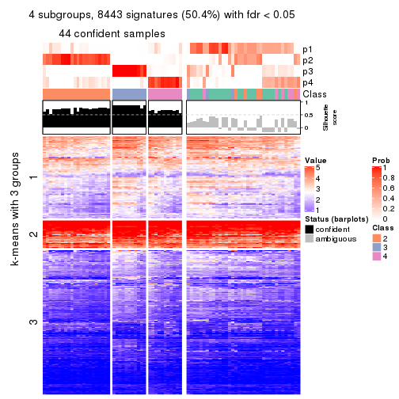
get_signatures(res, k = 5, scale_rows = FALSE)
get_signatures(res, k = 6, scale_rows = FALSE)
Compare the overlap of signatures from different k:
compare_signatures(res)
get_signature() returns a data frame invisibly. TO get the list of signatures, the function
call should be assigned to a variable explicitly. In following code, if plot argument is set
to FALSE, no heatmap is plotted while only the differential analysis is performed.
# code only for demonstration
tb = get_signature(res, k = ..., plot = FALSE)
An example of the output of tb is:
#> which_row fdr mean_1 mean_2 scaled_mean_1 scaled_mean_2 km
#> 1 38 0.042760348 8.373488 9.131774 -0.5533452 0.5164555 1
#> 2 40 0.018707592 7.106213 8.469186 -0.6173731 0.5762149 1
#> 3 55 0.019134737 10.221463 11.207825 -0.6159697 0.5749050 1
#> 4 59 0.006059896 5.921854 7.869574 -0.6899429 0.6439467 1
#> 5 60 0.018055526 8.928898 10.211722 -0.6204761 0.5791110 1
#> 6 98 0.009384629 15.714769 14.887706 0.6635654 -0.6193277 2
...
The columns in tb are:
which_row: row indices corresponding to the input matrix.fdr: FDR for the differential test. mean_x: The mean value in group x.scaled_mean_x: The mean value in group x after rows are scaled.km: Row groups if k-means clustering is applied to rows.UMAP plot which shows how samples are separated.
dimension_reduction(res, k = 2, method = "UMAP")
dimension_reduction(res, k = 3, method = "UMAP")
dimension_reduction(res, k = 4, method = "UMAP")
dimension_reduction(res, k = 5, method = "UMAP")
dimension_reduction(res, k = 6, method = "UMAP")
Following heatmap shows how subgroups are split when increasing k:
collect_classes(res)
If matrix rows can be associated to genes, consider to use GO_Enrichment(res,
...) to perform function enrichment for the signature genes.
The object with results only for a single top-value method and a single partition method can be extracted as:
res = res_list["MAD", "hclust"]
# you can also extract it by
# res = res_list["MAD:hclust"]
A summary of res and all the functions that can be applied to it:
res
#> A 'ConsensusPartition' object with k = 2, 3, 4, 5, 6.
#> On a matrix with 16751 rows and 80 columns.
#> Top rows (1000, 2000, 3000, 4000, 5000) are extracted by 'MAD' method.
#> Subgroups are detected by 'hclust' method.
#> Performed in total 1250 partitions by row resampling.
#> Best k for subgroups seems to be 2.
#>
#> Following methods can be applied to this 'ConsensusPartition' object:
#> [1] "cola_report" "collect_classes" "collect_plots"
#> [4] "collect_stats" "colnames" "compare_signatures"
#> [7] "consensus_heatmap" "dimension_reduction" "functional_enrichment"
#> [10] "get_anno_col" "get_anno" "get_classes"
#> [13] "get_consensus" "get_matrix" "get_membership"
#> [16] "get_param" "get_signatures" "get_stats"
#> [19] "is_best_k" "is_stable_k" "membership_heatmap"
#> [22] "ncol" "nrow" "plot_ecdf"
#> [25] "rownames" "select_partition_number" "show"
#> [28] "suggest_best_k" "test_to_known_factors"
collect_plots() function collects all the plots made from res for all k (number of partitions)
into one single page to provide an easy and fast comparison between different k.
collect_plots(res)
The plots are:
k and the heatmap of
predicted classes for each k.k.k.k.All the plots in panels can be made by individual functions and they are plotted later in this section.
select_partition_number() produces several plots showing different
statistics for choosing “optimized” k. There are following statistics:
k;k, the area increased is defined as \(A_k - A_{k-1}\).The detailed explanations of these statistics can be found in the cola vignette.
Generally speaking, lower PAC score, higher mean silhouette score or higher
concordance corresponds to better partition. Rand index and Jaccard index
measure how similar the current partition is compared to partition with k-1.
If they are too similar, we won't accept k is better than k-1.
select_partition_number(res)
The numeric values for all these statistics can be obtained by get_stats().
get_stats(res)
#> k 1-PAC mean_silhouette concordance area_increased Rand Jaccard
#> 2 2 0.873 0.935 0.968 0.5011 0.494 0.494
#> 3 3 0.625 0.725 0.782 0.2644 0.893 0.783
#> 4 4 0.727 0.780 0.868 0.1660 0.837 0.591
#> 5 5 0.735 0.589 0.751 0.0638 0.912 0.675
#> 6 6 0.808 0.726 0.847 0.0497 0.879 0.506
suggest_best_k() suggests the best \(k\) based on these statistics. The rules are as follows:
NA.suggest_best_k(res)
#> [1] 2
Following shows the table of the partitions (You need to click the show/hide
code output link to see it). The membership matrix (columns with name p*)
is inferred by
clue::cl_consensus()
function with the SE method. Basically the value in the membership matrix
represents the probability to belong to a certain group. The finall class
label for an item is determined with the group with highest probability it
belongs to.
In get_classes() function, the entropy is calculated from the membership
matrix and the silhouette score is calculated from the consensus matrix.
cbind(get_classes(res, k = 2), get_membership(res, k = 2))
#> class entropy silhouette p1 p2
#> 71A0AB6A-CFC2-46F6-878C-6052C5B43D22 1 0.0000 0.984 1.000 0.000
#> EFC730EC-6385-4167-A65A-F2A3AAEDA2AC 1 0.0000 0.984 1.000 0.000
#> 14F2F39A-EA0F-4027-8877-FEEEEFF1F085 2 0.0000 0.946 0.000 1.000
#> 98B2A7F8-A7BD-4DA2-8541-950E44D9ACD7 2 0.0000 0.946 0.000 1.000
#> 9166F454-2068-46C2-B2EB-FB3BE4126536 1 0.0000 0.984 1.000 0.000
#> 83B2A0BB-CE24-4DCA-B03A-D20353304365 2 0.0000 0.946 0.000 1.000
#> D3FC3968-B263-4756-BF7F-1941F70B04DA 2 0.0938 0.943 0.012 0.988
#> D357AC5C-C2A0-4CC4-B016-4572400AF117 2 0.0000 0.946 0.000 1.000
#> 1055E951-5B93-4AD7-BE5C-4DF4F6AECEF3 2 0.3114 0.916 0.056 0.944
#> F2995599-3F21-4F33-92BB-7D70A4735938 1 0.0000 0.984 1.000 0.000
#> 3EE533BD-5832-4007-8F1F-439166256EB0 2 0.0938 0.942 0.012 0.988
#> EEC6DA0C-5C49-4EFE-976A-19F432DDAA58 1 0.0000 0.984 1.000 0.000
#> E6E08C1A-4C1B-4572-92DF-DA15BCBADF76 2 0.0376 0.945 0.004 0.996
#> BCFCBBAC-EB95-47EB-9EB0-2CB4AE283A75 1 0.0000 0.984 1.000 0.000
#> 0782D6D0-668B-4B83-8C91-8A35EA3BFF6D 2 0.0000 0.946 0.000 1.000
#> AC78918E-1031-4AE6-B753-B0799171F0F0 1 0.0000 0.984 1.000 0.000
#> 6B497CED-34DA-4CF8-8F8D-696105CB3D5F 1 0.0000 0.984 1.000 0.000
#> 2328D472-583B-43A9-81A4-A21DDEBB5B18 2 0.0000 0.946 0.000 1.000
#> A6930B33-D9B2-4318-807C-4A25EB4CCCDD 2 0.0000 0.946 0.000 1.000
#> C8C48AFD-4D8B-491E-993C-3506DC6DD00F 1 0.0000 0.984 1.000 0.000
#> 093FB845-7905-4064-8E8E-76E3587D8E7C 1 0.0000 0.984 1.000 0.000
#> B216F996-CCD8-4F56-99B1-4EA9769B10B8 1 0.0000 0.984 1.000 0.000
#> CB35DED2-5FEA-43E2-AB42-B6B3A7444B66 1 0.0000 0.984 1.000 0.000
#> BA016F57-F58F-4A66-B85A-0B0F911EEA65 2 0.7883 0.739 0.236 0.764
#> 519DBD5F-66C0-4CEE-905C-799C855D28FB 1 0.0000 0.984 1.000 0.000
#> F5B9B89B-6821-43EE-BCFD-623689D03AF9 2 0.0000 0.946 0.000 1.000
#> 55A39F92-CC88-4A2F-A7D3-7A59DEBEBB42 1 0.0672 0.977 0.992 0.008
#> 3DBBDEDA-F9FC-40DC-804F-45429EA47ED4 2 0.6887 0.801 0.184 0.816
#> BB948BE8-7D48-4AEB-A404-C27A79655D7E 1 0.0000 0.984 1.000 0.000
#> 9506723F-9193-4D8E-BD97-8A0062AB2F9C 1 0.0000 0.984 1.000 0.000
#> D0758A7A-9D0E-4EA4-8EE9-7143B398647D 1 0.0000 0.984 1.000 0.000
#> F400FD4D-72D7-4933-B145-64B7EE245FFC 2 0.0000 0.946 0.000 1.000
#> 3F87E9ED-3719-48E1-8B69-E352A03E982D 1 0.1184 0.969 0.984 0.016
#> D6365FEB-CC12-4337-BF8C-66236A585B5D 2 0.1843 0.934 0.028 0.972
#> A4168812-C38E-4F15-9AF6-79F256279E72 1 0.0000 0.984 1.000 0.000
#> DB676839-02AA-42A7-962F-89D6AD892008 1 0.0000 0.984 1.000 0.000
#> 198D8E89-51FD-41DE-AD11-FB2F2FE49908 2 0.0000 0.946 0.000 1.000
#> 2BADCD01-27E8-49EC-B707-4FAE3D3CB489 1 0.0000 0.984 1.000 0.000
#> ABBD6EFE-079B-4BE3-95AB-36AF9197D684 2 0.0000 0.946 0.000 1.000
#> 39D66B95-61C7-4B76-8E81-1F9F98024B69 1 0.0000 0.984 1.000 0.000
#> 7A920210-CF3D-4458-B6D5-D9B2ADACA469 1 0.0000 0.984 1.000 0.000
#> 0CE61CDC-3257-4F03-951B-CC2CFCF675AE 2 0.0938 0.943 0.012 0.988
#> 7338D61C-77D6-4095-8847-7FD9967B7646 2 0.8327 0.698 0.264 0.736
#> 0D36FAD5-BA81-4FED-9E2A-DB016F2EF18C 1 0.0000 0.984 1.000 0.000
#> 43CD31CD-5FAE-418A-B235-49E54560590D 2 0.0000 0.946 0.000 1.000
#> B6DD72B0-EEFA-41A9-B71D-22DE1343CD32 1 0.0000 0.984 1.000 0.000
#> 2B729CD9-71A5-4336-ACBA-922A30AF4949 2 0.1843 0.935 0.028 0.972
#> B76DB955-69B7-4D05-8166-2569ED44628C 1 0.0000 0.984 1.000 0.000
#> 09CBEE39-7141-4228-AFD3-4714E32A1FB5 2 0.0000 0.946 0.000 1.000
#> AC1700D5-72E7-4C7F-A288-869DFC229252 1 0.0000 0.984 1.000 0.000
#> 535A5E8E-8478-477F-87FF-ED6742AA5473 2 0.0000 0.946 0.000 1.000
#> CFB8573C-9F36-4715-B6F1-6E5B543168A8 2 0.8861 0.632 0.304 0.696
#> 47A45491-6023-44BF-ABC2-9A470F7FC1F7 2 0.7745 0.749 0.228 0.772
#> 437C7AA7-98C0-48C7-97DA-86FF44D69B87 2 0.0376 0.945 0.004 0.996
#> 649ADE7E-6C06-4AB6-8E97-D8C2AAF79A7E 2 0.2236 0.928 0.036 0.964
#> DEA60B47-AD6A-4EBB-9402-6F97E9640E4E 2 0.0000 0.946 0.000 1.000
#> 76C574FF-26BF-49CD-9BCA-7BDDCBD06D5D 2 0.0000 0.946 0.000 1.000
#> 8B6E1F9B-1E90-4333-8E0C-EEDFF25D15C0 1 0.8661 0.561 0.712 0.288
#> A2473EE7-72D6-4D32-9DF7-5D4E444A6715 2 0.7883 0.739 0.236 0.764
#> E226C45E-5287-4D0F-A34B-CE251FA293CB 1 0.0000 0.984 1.000 0.000
#> A2C71C07-AF0C-4016-808C-DFEF458C91C7 1 0.0000 0.984 1.000 0.000
#> DA00D60F-4CF1-4003-BAF5-896EE2BEE2D4 2 0.7883 0.739 0.236 0.764
#> 1C17B65F-1930-4CF3-99B6-5D3AA9E99188 2 0.4298 0.892 0.088 0.912
#> B837D582-A0D3-46BE-8ECA-883F5396AE88 1 0.0000 0.984 1.000 0.000
#> EF1A102F-C206-4874-8F27-0BF069A613B8 1 0.0000 0.984 1.000 0.000
#> BC761676-F64C-476A-8D9B-BD3E6149B2CD 2 0.0672 0.944 0.008 0.992
#> D8351E5C-DC1D-4B4D-83E6-735B2750D944 2 0.0000 0.946 0.000 1.000
#> 59F65F61-03D0-4909-99BD-4CCB53A088A5 1 0.0000 0.984 1.000 0.000
#> EFFCCF33-60E1-4550-B13C-14C54ADCF479 1 0.8267 0.618 0.740 0.260
#> C45EB423-CC14-4BDB-A0B4-447E5DB6DA9C 1 0.0000 0.984 1.000 0.000
#> D34B0BC6-9142-48AE-A113-5923192644A0 1 0.0000 0.984 1.000 0.000
#> 634672A6-C68E-479F-AAB5-CBAFF7758EA4 1 0.0000 0.984 1.000 0.000
#> 06DAE086-D960-4156-9DC8-D126338E2F29 2 0.0000 0.946 0.000 1.000
#> 3353F579-77CA-4D0E-B794-37DE467CC065 1 0.0000 0.984 1.000 0.000
#> 976507F2-192B-4095-920A-3014889CD617 1 0.0000 0.984 1.000 0.000
#> 3FFF89D9-02F5-4D49-8631-099562BF99C7 2 0.0000 0.946 0.000 1.000
#> 8BC2213D-99DA-44E0-826F-EBF211EECFBF 1 0.0000 0.984 1.000 0.000
#> A7A16BF7-5E60-4E50-BE04-542EFC4DB472 2 0.0000 0.946 0.000 1.000
#> E25C9578-9493-466E-A2CD-546DEB076B2D 2 0.0000 0.946 0.000 1.000
#> EA35E230-DE50-45AB-A737-D5C430652A90 1 0.0000 0.984 1.000 0.000
cbind(get_classes(res, k = 3), get_membership(res, k = 3))
#> class entropy silhouette p1 p2 p3
#> 71A0AB6A-CFC2-46F6-878C-6052C5B43D22 1 0.0000 0.823 1.000 0.000 0.000
#> EFC730EC-6385-4167-A65A-F2A3AAEDA2AC 1 0.1529 0.814 0.960 0.000 0.040
#> 14F2F39A-EA0F-4027-8877-FEEEEFF1F085 2 0.0000 0.800 0.000 1.000 0.000
#> 98B2A7F8-A7BD-4DA2-8541-950E44D9ACD7 2 0.0000 0.800 0.000 1.000 0.000
#> 9166F454-2068-46C2-B2EB-FB3BE4126536 1 0.5835 0.774 0.660 0.000 0.340
#> 83B2A0BB-CE24-4DCA-B03A-D20353304365 2 0.0000 0.800 0.000 1.000 0.000
#> D3FC3968-B263-4756-BF7F-1941F70B04DA 3 0.6026 0.606 0.000 0.376 0.624
#> D357AC5C-C2A0-4CC4-B016-4572400AF117 2 0.5497 0.533 0.000 0.708 0.292
#> 1055E951-5B93-4AD7-BE5C-4DF4F6AECEF3 3 0.5785 0.667 0.000 0.332 0.668
#> F2995599-3F21-4F33-92BB-7D70A4735938 1 0.5835 0.774 0.660 0.000 0.340
#> 3EE533BD-5832-4007-8F1F-439166256EB0 2 0.3293 0.781 0.012 0.900 0.088
#> EEC6DA0C-5C49-4EFE-976A-19F432DDAA58 1 0.5835 0.774 0.660 0.000 0.340
#> E6E08C1A-4C1B-4572-92DF-DA15BCBADF76 2 0.2537 0.797 0.000 0.920 0.080
#> BCFCBBAC-EB95-47EB-9EB0-2CB4AE283A75 1 0.1529 0.814 0.960 0.000 0.040
#> 0782D6D0-668B-4B83-8C91-8A35EA3BFF6D 2 0.0000 0.800 0.000 1.000 0.000
#> AC78918E-1031-4AE6-B753-B0799171F0F0 1 0.5835 0.774 0.660 0.000 0.340
#> 6B497CED-34DA-4CF8-8F8D-696105CB3D5F 1 0.0000 0.823 1.000 0.000 0.000
#> 2328D472-583B-43A9-81A4-A21DDEBB5B18 2 0.6154 0.215 0.000 0.592 0.408
#> A6930B33-D9B2-4318-807C-4A25EB4CCCDD 2 0.0000 0.800 0.000 1.000 0.000
#> C8C48AFD-4D8B-491E-993C-3506DC6DD00F 1 0.0237 0.824 0.996 0.000 0.004
#> 093FB845-7905-4064-8E8E-76E3587D8E7C 1 0.1163 0.810 0.972 0.000 0.028
#> B216F996-CCD8-4F56-99B1-4EA9769B10B8 1 0.0000 0.823 1.000 0.000 0.000
#> CB35DED2-5FEA-43E2-AB42-B6B3A7444B66 1 0.0424 0.820 0.992 0.000 0.008
#> BA016F57-F58F-4A66-B85A-0B0F911EEA65 3 0.7042 0.764 0.140 0.132 0.728
#> 519DBD5F-66C0-4CEE-905C-799C855D28FB 1 0.5835 0.774 0.660 0.000 0.340
#> F5B9B89B-6821-43EE-BCFD-623689D03AF9 2 0.0747 0.803 0.000 0.984 0.016
#> 55A39F92-CC88-4A2F-A7D3-7A59DEBEBB42 1 0.1411 0.805 0.964 0.000 0.036
#> 3DBBDEDA-F9FC-40DC-804F-45429EA47ED4 3 0.8423 0.697 0.156 0.228 0.616
#> BB948BE8-7D48-4AEB-A404-C27A79655D7E 1 0.0237 0.824 0.996 0.000 0.004
#> 9506723F-9193-4D8E-BD97-8A0062AB2F9C 1 0.0000 0.823 1.000 0.000 0.000
#> D0758A7A-9D0E-4EA4-8EE9-7143B398647D 1 0.0000 0.823 1.000 0.000 0.000
#> F400FD4D-72D7-4933-B145-64B7EE245FFC 2 0.2165 0.804 0.000 0.936 0.064
#> 3F87E9ED-3719-48E1-8B69-E352A03E982D 1 0.1015 0.816 0.980 0.008 0.012
#> D6365FEB-CC12-4337-BF8C-66236A585B5D 3 0.6126 0.518 0.000 0.400 0.600
#> A4168812-C38E-4F15-9AF6-79F256279E72 1 0.0000 0.823 1.000 0.000 0.000
#> DB676839-02AA-42A7-962F-89D6AD892008 1 0.5835 0.774 0.660 0.000 0.340
#> 198D8E89-51FD-41DE-AD11-FB2F2FE49908 2 0.2165 0.804 0.000 0.936 0.064
#> 2BADCD01-27E8-49EC-B707-4FAE3D3CB489 1 0.1031 0.824 0.976 0.000 0.024
#> ABBD6EFE-079B-4BE3-95AB-36AF9197D684 2 0.0000 0.800 0.000 1.000 0.000
#> 39D66B95-61C7-4B76-8E81-1F9F98024B69 1 0.5835 0.774 0.660 0.000 0.340
#> 7A920210-CF3D-4458-B6D5-D9B2ADACA469 1 0.5835 0.774 0.660 0.000 0.340
#> 0CE61CDC-3257-4F03-951B-CC2CFCF675AE 3 0.6026 0.606 0.000 0.376 0.624
#> 7338D61C-77D6-4095-8847-7FD9967B7646 3 0.6037 0.723 0.100 0.112 0.788
#> 0D36FAD5-BA81-4FED-9E2A-DB016F2EF18C 1 0.5835 0.774 0.660 0.000 0.340
#> 43CD31CD-5FAE-418A-B235-49E54560590D 2 0.5621 0.507 0.000 0.692 0.308
#> B6DD72B0-EEFA-41A9-B71D-22DE1343CD32 1 0.0237 0.822 0.996 0.000 0.004
#> 2B729CD9-71A5-4336-ACBA-922A30AF4949 2 0.6307 -0.161 0.000 0.512 0.488
#> B76DB955-69B7-4D05-8166-2569ED44628C 1 0.5835 0.774 0.660 0.000 0.340
#> 09CBEE39-7141-4228-AFD3-4714E32A1FB5 2 0.5621 0.507 0.000 0.692 0.308
#> AC1700D5-72E7-4C7F-A288-869DFC229252 1 0.1031 0.824 0.976 0.000 0.024
#> 535A5E8E-8478-477F-87FF-ED6742AA5473 2 0.5621 0.507 0.000 0.692 0.308
#> CFB8573C-9F36-4715-B6F1-6E5B543168A8 3 0.7248 0.700 0.184 0.108 0.708
#> 47A45491-6023-44BF-ABC2-9A470F7FC1F7 3 0.7164 0.764 0.140 0.140 0.720
#> 437C7AA7-98C0-48C7-97DA-86FF44D69B87 2 0.2261 0.802 0.000 0.932 0.068
#> 649ADE7E-6C06-4AB6-8E97-D8C2AAF79A7E 3 0.6490 0.611 0.012 0.360 0.628
#> DEA60B47-AD6A-4EBB-9402-6F97E9640E4E 2 0.2165 0.804 0.000 0.936 0.064
#> 76C574FF-26BF-49CD-9BCA-7BDDCBD06D5D 2 0.0000 0.800 0.000 1.000 0.000
#> 8B6E1F9B-1E90-4333-8E0C-EEDFF25D15C0 1 0.6018 0.374 0.684 0.008 0.308
#> A2473EE7-72D6-4D32-9DF7-5D4E444A6715 3 0.7042 0.764 0.140 0.132 0.728
#> E226C45E-5287-4D0F-A34B-CE251FA293CB 1 0.5835 0.774 0.660 0.000 0.340
#> A2C71C07-AF0C-4016-808C-DFEF458C91C7 1 0.5835 0.774 0.660 0.000 0.340
#> DA00D60F-4CF1-4003-BAF5-896EE2BEE2D4 3 0.7042 0.764 0.140 0.132 0.728
#> 1C17B65F-1930-4CF3-99B6-5D3AA9E99188 3 0.5497 0.695 0.000 0.292 0.708
#> B837D582-A0D3-46BE-8ECA-883F5396AE88 1 0.1031 0.824 0.976 0.000 0.024
#> EF1A102F-C206-4874-8F27-0BF069A613B8 1 0.1529 0.814 0.960 0.000 0.040
#> BC761676-F64C-476A-8D9B-BD3E6149B2CD 2 0.5882 0.431 0.000 0.652 0.348
#> D8351E5C-DC1D-4B4D-83E6-735B2750D944 2 0.6168 0.198 0.000 0.588 0.412
#> 59F65F61-03D0-4909-99BD-4CCB53A088A5 1 0.0000 0.823 1.000 0.000 0.000
#> EFFCCF33-60E1-4550-B13C-14C54ADCF479 1 0.5797 0.443 0.712 0.008 0.280
#> C45EB423-CC14-4BDB-A0B4-447E5DB6DA9C 1 0.5835 0.774 0.660 0.000 0.340
#> D34B0BC6-9142-48AE-A113-5923192644A0 1 0.0000 0.823 1.000 0.000 0.000
#> 634672A6-C68E-479F-AAB5-CBAFF7758EA4 1 0.5835 0.774 0.660 0.000 0.340
#> 06DAE086-D960-4156-9DC8-D126338E2F29 2 0.2165 0.804 0.000 0.936 0.064
#> 3353F579-77CA-4D0E-B794-37DE467CC065 1 0.5835 0.774 0.660 0.000 0.340
#> 976507F2-192B-4095-920A-3014889CD617 1 0.5835 0.774 0.660 0.000 0.340
#> 3FFF89D9-02F5-4D49-8631-099562BF99C7 2 0.2165 0.804 0.000 0.936 0.064
#> 8BC2213D-99DA-44E0-826F-EBF211EECFBF 1 0.5835 0.774 0.660 0.000 0.340
#> A7A16BF7-5E60-4E50-BE04-542EFC4DB472 2 0.0424 0.801 0.000 0.992 0.008
#> E25C9578-9493-466E-A2CD-546DEB076B2D 2 0.0424 0.801 0.000 0.992 0.008
#> EA35E230-DE50-45AB-A737-D5C430652A90 1 0.0000 0.823 1.000 0.000 0.000
cbind(get_classes(res, k = 4), get_membership(res, k = 4))
#> class entropy silhouette p1 p2 p3 p4
#> 71A0AB6A-CFC2-46F6-878C-6052C5B43D22 1 0.1637 0.8827 0.940 0.000 0.060 0.000
#> EFC730EC-6385-4167-A65A-F2A3AAEDA2AC 1 0.3208 0.8665 0.848 0.000 0.004 0.148
#> 14F2F39A-EA0F-4027-8877-FEEEEFF1F085 2 0.0000 0.7897 0.000 1.000 0.000 0.000
#> 98B2A7F8-A7BD-4DA2-8541-950E44D9ACD7 2 0.0000 0.7897 0.000 1.000 0.000 0.000
#> 9166F454-2068-46C2-B2EB-FB3BE4126536 3 0.0000 0.9998 0.000 0.000 1.000 0.000
#> 83B2A0BB-CE24-4DCA-B03A-D20353304365 2 0.0000 0.7897 0.000 1.000 0.000 0.000
#> D3FC3968-B263-4756-BF7F-1941F70B04DA 4 0.3975 0.6732 0.000 0.240 0.000 0.760
#> D357AC5C-C2A0-4CC4-B016-4572400AF117 2 0.4454 0.4894 0.000 0.692 0.000 0.308
#> 1055E951-5B93-4AD7-BE5C-4DF4F6AECEF3 4 0.3569 0.6989 0.000 0.196 0.000 0.804
#> F2995599-3F21-4F33-92BB-7D70A4735938 3 0.0000 0.9998 0.000 0.000 1.000 0.000
#> 3EE533BD-5832-4007-8F1F-439166256EB0 2 0.2805 0.7724 0.012 0.888 0.000 0.100
#> EEC6DA0C-5C49-4EFE-976A-19F432DDAA58 3 0.0000 0.9998 0.000 0.000 1.000 0.000
#> E6E08C1A-4C1B-4572-92DF-DA15BCBADF76 2 0.3726 0.7284 0.000 0.788 0.000 0.212
#> BCFCBBAC-EB95-47EB-9EB0-2CB4AE283A75 1 0.3208 0.8665 0.848 0.000 0.004 0.148
#> 0782D6D0-668B-4B83-8C91-8A35EA3BFF6D 2 0.0000 0.7897 0.000 1.000 0.000 0.000
#> AC78918E-1031-4AE6-B753-B0799171F0F0 3 0.0000 0.9998 0.000 0.000 1.000 0.000
#> 6B497CED-34DA-4CF8-8F8D-696105CB3D5F 1 0.1637 0.8827 0.940 0.000 0.060 0.000
#> 2328D472-583B-43A9-81A4-A21DDEBB5B18 4 0.4989 0.1042 0.000 0.472 0.000 0.528
#> A6930B33-D9B2-4318-807C-4A25EB4CCCDD 2 0.0000 0.7897 0.000 1.000 0.000 0.000
#> C8C48AFD-4D8B-491E-993C-3506DC6DD00F 1 0.2011 0.8756 0.920 0.000 0.080 0.000
#> 093FB845-7905-4064-8E8E-76E3587D8E7C 1 0.2760 0.8702 0.872 0.000 0.000 0.128
#> B216F996-CCD8-4F56-99B1-4EA9769B10B8 1 0.1637 0.8827 0.940 0.000 0.060 0.000
#> CB35DED2-5FEA-43E2-AB42-B6B3A7444B66 1 0.3931 0.8869 0.832 0.000 0.040 0.128
#> BA016F57-F58F-4A66-B85A-0B0F911EEA65 4 0.0336 0.7132 0.008 0.000 0.000 0.992
#> 519DBD5F-66C0-4CEE-905C-799C855D28FB 3 0.0000 0.9998 0.000 0.000 1.000 0.000
#> F5B9B89B-6821-43EE-BCFD-623689D03AF9 2 0.0921 0.7922 0.000 0.972 0.000 0.028
#> 55A39F92-CC88-4A2F-A7D3-7A59DEBEBB42 1 0.2868 0.8683 0.864 0.000 0.000 0.136
#> 3DBBDEDA-F9FC-40DC-804F-45429EA47ED4 4 0.5375 0.6773 0.116 0.140 0.000 0.744
#> BB948BE8-7D48-4AEB-A404-C27A79655D7E 1 0.2011 0.8756 0.920 0.000 0.080 0.000
#> 9506723F-9193-4D8E-BD97-8A0062AB2F9C 1 0.1637 0.8827 0.940 0.000 0.060 0.000
#> D0758A7A-9D0E-4EA4-8EE9-7143B398647D 1 0.1637 0.8827 0.940 0.000 0.060 0.000
#> F400FD4D-72D7-4933-B145-64B7EE245FFC 2 0.3569 0.7425 0.000 0.804 0.000 0.196
#> 3F87E9ED-3719-48E1-8B69-E352A03E982D 1 0.4439 0.8858 0.808 0.004 0.048 0.140
#> D6365FEB-CC12-4337-BF8C-66236A585B5D 4 0.5206 0.5931 0.024 0.308 0.000 0.668
#> A4168812-C38E-4F15-9AF6-79F256279E72 1 0.3991 0.8902 0.832 0.000 0.048 0.120
#> DB676839-02AA-42A7-962F-89D6AD892008 3 0.0000 0.9998 0.000 0.000 1.000 0.000
#> 198D8E89-51FD-41DE-AD11-FB2F2FE49908 2 0.3172 0.7664 0.000 0.840 0.000 0.160
#> 2BADCD01-27E8-49EC-B707-4FAE3D3CB489 1 0.2987 0.8616 0.880 0.000 0.104 0.016
#> ABBD6EFE-079B-4BE3-95AB-36AF9197D684 2 0.0336 0.7917 0.000 0.992 0.000 0.008
#> 39D66B95-61C7-4B76-8E81-1F9F98024B69 3 0.0000 0.9998 0.000 0.000 1.000 0.000
#> 7A920210-CF3D-4458-B6D5-D9B2ADACA469 3 0.0000 0.9998 0.000 0.000 1.000 0.000
#> 0CE61CDC-3257-4F03-951B-CC2CFCF675AE 4 0.4008 0.6700 0.000 0.244 0.000 0.756
#> 7338D61C-77D6-4095-8847-7FD9967B7646 4 0.2345 0.6773 0.000 0.000 0.100 0.900
#> 0D36FAD5-BA81-4FED-9E2A-DB016F2EF18C 3 0.0000 0.9998 0.000 0.000 1.000 0.000
#> 43CD31CD-5FAE-418A-B235-49E54560590D 2 0.4843 0.3408 0.000 0.604 0.000 0.396
#> B6DD72B0-EEFA-41A9-B71D-22DE1343CD32 1 0.3398 0.8913 0.872 0.000 0.060 0.068
#> 2B729CD9-71A5-4336-ACBA-922A30AF4949 4 0.4776 0.4030 0.000 0.376 0.000 0.624
#> B76DB955-69B7-4D05-8166-2569ED44628C 3 0.0000 0.9998 0.000 0.000 1.000 0.000
#> 09CBEE39-7141-4228-AFD3-4714E32A1FB5 2 0.4855 0.3306 0.000 0.600 0.000 0.400
#> AC1700D5-72E7-4C7F-A288-869DFC229252 1 0.2987 0.8616 0.880 0.000 0.104 0.016
#> 535A5E8E-8478-477F-87FF-ED6742AA5473 2 0.4843 0.3408 0.000 0.604 0.000 0.396
#> CFB8573C-9F36-4715-B6F1-6E5B543168A8 4 0.2053 0.6721 0.072 0.000 0.004 0.924
#> 47A45491-6023-44BF-ABC2-9A470F7FC1F7 4 0.0672 0.7153 0.008 0.008 0.000 0.984
#> 437C7AA7-98C0-48C7-97DA-86FF44D69B87 2 0.3649 0.7362 0.000 0.796 0.000 0.204
#> 649ADE7E-6C06-4AB6-8E97-D8C2AAF79A7E 4 0.5282 0.6389 0.036 0.276 0.000 0.688
#> DEA60B47-AD6A-4EBB-9402-6F97E9640E4E 2 0.3172 0.7664 0.000 0.840 0.000 0.160
#> 76C574FF-26BF-49CD-9BCA-7BDDCBD06D5D 2 0.0000 0.7897 0.000 1.000 0.000 0.000
#> 8B6E1F9B-1E90-4333-8E0C-EEDFF25D15C0 1 0.5060 0.5086 0.584 0.004 0.000 0.412
#> A2473EE7-72D6-4D32-9DF7-5D4E444A6715 4 0.0336 0.7132 0.008 0.000 0.000 0.992
#> E226C45E-5287-4D0F-A34B-CE251FA293CB 3 0.0000 0.9998 0.000 0.000 1.000 0.000
#> A2C71C07-AF0C-4016-808C-DFEF458C91C7 3 0.0000 0.9998 0.000 0.000 1.000 0.000
#> DA00D60F-4CF1-4003-BAF5-896EE2BEE2D4 4 0.0336 0.7132 0.008 0.000 0.000 0.992
#> 1C17B65F-1930-4CF3-99B6-5D3AA9E99188 4 0.3123 0.7104 0.000 0.156 0.000 0.844
#> B837D582-A0D3-46BE-8ECA-883F5396AE88 1 0.2987 0.8616 0.880 0.000 0.104 0.016
#> EF1A102F-C206-4874-8F27-0BF069A613B8 1 0.3208 0.8665 0.848 0.000 0.004 0.148
#> BC761676-F64C-476A-8D9B-BD3E6149B2CD 2 0.5236 0.2128 0.008 0.560 0.000 0.432
#> D8351E5C-DC1D-4B4D-83E6-735B2750D944 4 0.4999 0.0424 0.000 0.492 0.000 0.508
#> 59F65F61-03D0-4909-99BD-4CCB53A088A5 1 0.4046 0.8895 0.828 0.000 0.048 0.124
#> EFFCCF33-60E1-4550-B13C-14C54ADCF479 1 0.4978 0.5664 0.612 0.004 0.000 0.384
#> C45EB423-CC14-4BDB-A0B4-447E5DB6DA9C 3 0.0000 0.9998 0.000 0.000 1.000 0.000
#> D34B0BC6-9142-48AE-A113-5923192644A0 1 0.4046 0.8895 0.828 0.000 0.048 0.124
#> 634672A6-C68E-479F-AAB5-CBAFF7758EA4 3 0.0000 0.9998 0.000 0.000 1.000 0.000
#> 06DAE086-D960-4156-9DC8-D126338E2F29 2 0.3569 0.7425 0.000 0.804 0.000 0.196
#> 3353F579-77CA-4D0E-B794-37DE467CC065 3 0.0188 0.9961 0.000 0.000 0.996 0.004
#> 976507F2-192B-4095-920A-3014889CD617 3 0.0000 0.9998 0.000 0.000 1.000 0.000
#> 3FFF89D9-02F5-4D49-8631-099562BF99C7 2 0.3172 0.7664 0.000 0.840 0.000 0.160
#> 8BC2213D-99DA-44E0-826F-EBF211EECFBF 3 0.0000 0.9998 0.000 0.000 1.000 0.000
#> A7A16BF7-5E60-4E50-BE04-542EFC4DB472 2 0.0336 0.7901 0.000 0.992 0.000 0.008
#> E25C9578-9493-466E-A2CD-546DEB076B2D 2 0.0336 0.7901 0.000 0.992 0.000 0.008
#> EA35E230-DE50-45AB-A737-D5C430652A90 1 0.4046 0.8895 0.828 0.000 0.048 0.124
cbind(get_classes(res, k = 5), get_membership(res, k = 5))
#> class entropy silhouette p1 p2 p3 p4 p5
#> 71A0AB6A-CFC2-46F6-878C-6052C5B43D22 1 0.0510 0.6909 0.984 0.000 0.016 0.000 0.000
#> EFC730EC-6385-4167-A65A-F2A3AAEDA2AC 5 0.4367 0.5129 0.416 0.000 0.000 0.004 0.580
#> 14F2F39A-EA0F-4027-8877-FEEEEFF1F085 2 0.0703 0.7415 0.000 0.976 0.000 0.000 0.024
#> 98B2A7F8-A7BD-4DA2-8541-950E44D9ACD7 2 0.1830 0.7448 0.000 0.932 0.000 0.028 0.040
#> 9166F454-2068-46C2-B2EB-FB3BE4126536 3 0.0000 0.9997 0.000 0.000 1.000 0.000 0.000
#> 83B2A0BB-CE24-4DCA-B03A-D20353304365 2 0.1830 0.7448 0.000 0.932 0.000 0.028 0.040
#> D3FC3968-B263-4756-BF7F-1941F70B04DA 4 0.5570 0.5572 0.000 0.104 0.000 0.608 0.288
#> D357AC5C-C2A0-4CC4-B016-4572400AF117 2 0.4830 0.3151 0.004 0.560 0.000 0.420 0.016
#> 1055E951-5B93-4AD7-BE5C-4DF4F6AECEF3 4 0.5308 0.5658 0.000 0.076 0.000 0.620 0.304
#> F2995599-3F21-4F33-92BB-7D70A4735938 3 0.0000 0.9997 0.000 0.000 1.000 0.000 0.000
#> 3EE533BD-5832-4007-8F1F-439166256EB0 2 0.3264 0.7000 0.004 0.836 0.000 0.140 0.020
#> EEC6DA0C-5C49-4EFE-976A-19F432DDAA58 3 0.0000 0.9997 0.000 0.000 1.000 0.000 0.000
#> E6E08C1A-4C1B-4572-92DF-DA15BCBADF76 2 0.4663 0.5395 0.000 0.604 0.000 0.376 0.020
#> BCFCBBAC-EB95-47EB-9EB0-2CB4AE283A75 5 0.4367 0.5129 0.416 0.000 0.000 0.004 0.580
#> 0782D6D0-668B-4B83-8C91-8A35EA3BFF6D 2 0.1043 0.7329 0.000 0.960 0.000 0.000 0.040
#> AC78918E-1031-4AE6-B753-B0799171F0F0 3 0.0000 0.9997 0.000 0.000 1.000 0.000 0.000
#> 6B497CED-34DA-4CF8-8F8D-696105CB3D5F 1 0.0510 0.6909 0.984 0.000 0.016 0.000 0.000
#> 2328D472-583B-43A9-81A4-A21DDEBB5B18 4 0.3835 0.2687 0.000 0.260 0.000 0.732 0.008
#> A6930B33-D9B2-4318-807C-4A25EB4CCCDD 2 0.0000 0.7481 0.000 1.000 0.000 0.000 0.000
#> C8C48AFD-4D8B-491E-993C-3506DC6DD00F 1 0.1753 0.6753 0.936 0.000 0.032 0.000 0.032
#> 093FB845-7905-4064-8E8E-76E3587D8E7C 5 0.4273 0.4692 0.448 0.000 0.000 0.000 0.552
#> B216F996-CCD8-4F56-99B1-4EA9769B10B8 1 0.0510 0.6909 0.984 0.000 0.016 0.000 0.000
#> CB35DED2-5FEA-43E2-AB42-B6B3A7444B66 1 0.4582 -0.0502 0.572 0.000 0.012 0.000 0.416
#> BA016F57-F58F-4A66-B85A-0B0F911EEA65 4 0.4294 0.4373 0.000 0.000 0.000 0.532 0.468
#> 519DBD5F-66C0-4CEE-905C-799C855D28FB 3 0.0000 0.9997 0.000 0.000 1.000 0.000 0.000
#> F5B9B89B-6821-43EE-BCFD-623689D03AF9 2 0.1544 0.7421 0.000 0.932 0.000 0.068 0.000
#> 55A39F92-CC88-4A2F-A7D3-7A59DEBEBB42 5 0.4522 0.4810 0.440 0.000 0.000 0.008 0.552
#> 3DBBDEDA-F9FC-40DC-804F-45429EA47ED4 4 0.4573 0.4496 0.012 0.032 0.000 0.724 0.232
#> BB948BE8-7D48-4AEB-A404-C27A79655D7E 1 0.1753 0.6753 0.936 0.000 0.032 0.000 0.032
#> 9506723F-9193-4D8E-BD97-8A0062AB2F9C 1 0.0510 0.6909 0.984 0.000 0.016 0.000 0.000
#> D0758A7A-9D0E-4EA4-8EE9-7143B398647D 1 0.0510 0.6909 0.984 0.000 0.016 0.000 0.000
#> F400FD4D-72D7-4933-B145-64B7EE245FFC 2 0.4613 0.5600 0.000 0.620 0.000 0.360 0.020
#> 3F87E9ED-3719-48E1-8B69-E352A03E982D 1 0.5047 0.0662 0.588 0.000 0.016 0.016 0.380
#> D6365FEB-CC12-4337-BF8C-66236A585B5D 4 0.4194 0.4658 0.004 0.128 0.000 0.788 0.080
#> A4168812-C38E-4F15-9AF6-79F256279E72 1 0.4511 0.1787 0.628 0.000 0.016 0.000 0.356
#> DB676839-02AA-42A7-962F-89D6AD892008 3 0.0000 0.9997 0.000 0.000 1.000 0.000 0.000
#> 198D8E89-51FD-41DE-AD11-FB2F2FE49908 2 0.4437 0.6109 0.000 0.664 0.000 0.316 0.020
#> 2BADCD01-27E8-49EC-B707-4FAE3D3CB489 1 0.2661 0.6476 0.888 0.000 0.056 0.000 0.056
#> ABBD6EFE-079B-4BE3-95AB-36AF9197D684 2 0.2077 0.7456 0.000 0.920 0.000 0.040 0.040
#> 39D66B95-61C7-4B76-8E81-1F9F98024B69 3 0.0000 0.9997 0.000 0.000 1.000 0.000 0.000
#> 7A920210-CF3D-4458-B6D5-D9B2ADACA469 3 0.0000 0.9997 0.000 0.000 1.000 0.000 0.000
#> 0CE61CDC-3257-4F03-951B-CC2CFCF675AE 4 0.5613 0.5557 0.000 0.108 0.000 0.604 0.288
#> 7338D61C-77D6-4095-8847-7FD9967B7646 4 0.5849 0.4275 0.000 0.000 0.100 0.508 0.392
#> 0D36FAD5-BA81-4FED-9E2A-DB016F2EF18C 3 0.0000 0.9997 0.000 0.000 1.000 0.000 0.000
#> 43CD31CD-5FAE-418A-B235-49E54560590D 4 0.4779 -0.0439 0.004 0.396 0.000 0.584 0.016
#> B6DD72B0-EEFA-41A9-B71D-22DE1343CD32 1 0.3098 0.5721 0.836 0.000 0.016 0.000 0.148
#> 2B729CD9-71A5-4336-ACBA-922A30AF4949 4 0.5980 0.4647 0.000 0.176 0.000 0.584 0.240
#> B76DB955-69B7-4D05-8166-2569ED44628C 3 0.0000 0.9997 0.000 0.000 1.000 0.000 0.000
#> 09CBEE39-7141-4228-AFD3-4714E32A1FB5 4 0.4769 -0.0336 0.004 0.392 0.000 0.588 0.016
#> AC1700D5-72E7-4C7F-A288-869DFC229252 1 0.2661 0.6476 0.888 0.000 0.056 0.000 0.056
#> 535A5E8E-8478-477F-87FF-ED6742AA5473 4 0.4779 -0.0439 0.004 0.396 0.000 0.584 0.016
#> CFB8573C-9F36-4715-B6F1-6E5B543168A8 5 0.4655 -0.4556 0.012 0.000 0.000 0.476 0.512
#> 47A45491-6023-44BF-ABC2-9A470F7FC1F7 4 0.4273 0.4461 0.000 0.000 0.000 0.552 0.448
#> 437C7AA7-98C0-48C7-97DA-86FF44D69B87 2 0.4709 0.5505 0.000 0.612 0.000 0.364 0.024
#> 649ADE7E-6C06-4AB6-8E97-D8C2AAF79A7E 4 0.4191 0.4905 0.008 0.108 0.000 0.796 0.088
#> DEA60B47-AD6A-4EBB-9402-6F97E9640E4E 2 0.4437 0.6109 0.000 0.664 0.000 0.316 0.020
#> 76C574FF-26BF-49CD-9BCA-7BDDCBD06D5D 2 0.1043 0.7329 0.000 0.960 0.000 0.000 0.040
#> 8B6E1F9B-1E90-4333-8E0C-EEDFF25D15C0 5 0.6618 0.4399 0.304 0.000 0.000 0.244 0.452
#> A2473EE7-72D6-4D32-9DF7-5D4E444A6715 4 0.4283 0.4389 0.000 0.000 0.000 0.544 0.456
#> E226C45E-5287-4D0F-A34B-CE251FA293CB 3 0.0000 0.9997 0.000 0.000 1.000 0.000 0.000
#> A2C71C07-AF0C-4016-808C-DFEF458C91C7 3 0.0000 0.9997 0.000 0.000 1.000 0.000 0.000
#> DA00D60F-4CF1-4003-BAF5-896EE2BEE2D4 4 0.4294 0.4373 0.000 0.000 0.000 0.532 0.468
#> 1C17B65F-1930-4CF3-99B6-5D3AA9E99188 4 0.5129 0.5680 0.000 0.056 0.000 0.616 0.328
#> B837D582-A0D3-46BE-8ECA-883F5396AE88 1 0.2661 0.6476 0.888 0.000 0.056 0.000 0.056
#> EF1A102F-C206-4874-8F27-0BF069A613B8 5 0.4367 0.5129 0.416 0.000 0.000 0.004 0.580
#> BC761676-F64C-476A-8D9B-BD3E6149B2CD 4 0.4972 0.0607 0.004 0.352 0.000 0.612 0.032
#> D8351E5C-DC1D-4B4D-83E6-735B2750D944 4 0.3980 0.2381 0.000 0.284 0.000 0.708 0.008
#> 59F65F61-03D0-4909-99BD-4CCB53A088A5 1 0.4564 0.1422 0.612 0.000 0.016 0.000 0.372
#> EFFCCF33-60E1-4550-B13C-14C54ADCF479 5 0.6561 0.4483 0.332 0.000 0.000 0.216 0.452
#> C45EB423-CC14-4BDB-A0B4-447E5DB6DA9C 3 0.0000 0.9997 0.000 0.000 1.000 0.000 0.000
#> D34B0BC6-9142-48AE-A113-5923192644A0 1 0.4564 0.1422 0.612 0.000 0.016 0.000 0.372
#> 634672A6-C68E-479F-AAB5-CBAFF7758EA4 3 0.0000 0.9997 0.000 0.000 1.000 0.000 0.000
#> 06DAE086-D960-4156-9DC8-D126338E2F29 2 0.4613 0.5600 0.000 0.620 0.000 0.360 0.020
#> 3353F579-77CA-4D0E-B794-37DE467CC065 3 0.0162 0.9959 0.000 0.000 0.996 0.000 0.004
#> 976507F2-192B-4095-920A-3014889CD617 3 0.0000 0.9997 0.000 0.000 1.000 0.000 0.000
#> 3FFF89D9-02F5-4D49-8631-099562BF99C7 2 0.4437 0.6109 0.000 0.664 0.000 0.316 0.020
#> 8BC2213D-99DA-44E0-826F-EBF211EECFBF 3 0.0000 0.9997 0.000 0.000 1.000 0.000 0.000
#> A7A16BF7-5E60-4E50-BE04-542EFC4DB472 2 0.0671 0.7478 0.000 0.980 0.000 0.016 0.004
#> E25C9578-9493-466E-A2CD-546DEB076B2D 2 0.0451 0.7471 0.000 0.988 0.000 0.008 0.004
#> EA35E230-DE50-45AB-A737-D5C430652A90 1 0.4564 0.1422 0.612 0.000 0.016 0.000 0.372
cbind(get_classes(res, k = 6), get_membership(res, k = 6))
#> class entropy silhouette p1 p2 p3 p4 p5 p6
#> 71A0AB6A-CFC2-46F6-878C-6052C5B43D22 1 0.1267 0.9171 0.940 0.000 0.000 0.000 0.000 0.060
#> EFC730EC-6385-4167-A65A-F2A3AAEDA2AC 6 0.0405 0.7355 0.004 0.000 0.000 0.008 0.000 0.988
#> 14F2F39A-EA0F-4027-8877-FEEEEFF1F085 2 0.0937 0.8380 0.000 0.960 0.000 0.000 0.040 0.000
#> 98B2A7F8-A7BD-4DA2-8541-950E44D9ACD7 2 0.1444 0.8167 0.000 0.928 0.000 0.000 0.072 0.000
#> 9166F454-2068-46C2-B2EB-FB3BE4126536 3 0.0000 0.9997 0.000 0.000 1.000 0.000 0.000 0.000
#> 83B2A0BB-CE24-4DCA-B03A-D20353304365 2 0.1444 0.8167 0.000 0.928 0.000 0.000 0.072 0.000
#> D3FC3968-B263-4756-BF7F-1941F70B04DA 4 0.4236 0.5507 0.000 0.036 0.000 0.656 0.308 0.000
#> D357AC5C-C2A0-4CC4-B016-4572400AF117 5 0.3468 0.2940 0.000 0.284 0.000 0.000 0.712 0.004
#> 1055E951-5B93-4AD7-BE5C-4DF4F6AECEF3 4 0.3834 0.6709 0.000 0.036 0.000 0.732 0.232 0.000
#> F2995599-3F21-4F33-92BB-7D70A4735938 3 0.0000 0.9997 0.000 0.000 1.000 0.000 0.000 0.000
#> 3EE533BD-5832-4007-8F1F-439166256EB0 2 0.4181 0.4488 0.000 0.600 0.000 0.004 0.384 0.012
#> EEC6DA0C-5C49-4EFE-976A-19F432DDAA58 3 0.0000 0.9997 0.000 0.000 1.000 0.000 0.000 0.000
#> E6E08C1A-4C1B-4572-92DF-DA15BCBADF76 5 0.4703 0.4563 0.000 0.312 0.000 0.068 0.620 0.000
#> BCFCBBAC-EB95-47EB-9EB0-2CB4AE283A75 6 0.0405 0.7355 0.004 0.000 0.000 0.008 0.000 0.988
#> 0782D6D0-668B-4B83-8C91-8A35EA3BFF6D 2 0.0000 0.8235 0.000 1.000 0.000 0.000 0.000 0.000
#> AC78918E-1031-4AE6-B753-B0799171F0F0 3 0.0000 0.9997 0.000 0.000 1.000 0.000 0.000 0.000
#> 6B497CED-34DA-4CF8-8F8D-696105CB3D5F 1 0.1267 0.9171 0.940 0.000 0.000 0.000 0.000 0.060
#> 2328D472-583B-43A9-81A4-A21DDEBB5B18 5 0.3139 0.5318 0.000 0.028 0.000 0.160 0.812 0.000
#> A6930B33-D9B2-4318-807C-4A25EB4CCCDD 2 0.1957 0.8298 0.000 0.888 0.000 0.000 0.112 0.000
#> C8C48AFD-4D8B-491E-993C-3506DC6DD00F 1 0.0000 0.9102 1.000 0.000 0.000 0.000 0.000 0.000
#> 093FB845-7905-4064-8E8E-76E3587D8E7C 6 0.0937 0.7417 0.040 0.000 0.000 0.000 0.000 0.960
#> B216F996-CCD8-4F56-99B1-4EA9769B10B8 1 0.1267 0.9171 0.940 0.000 0.000 0.000 0.000 0.060
#> CB35DED2-5FEA-43E2-AB42-B6B3A7444B66 6 0.3309 0.6978 0.280 0.000 0.000 0.000 0.000 0.720
#> BA016F57-F58F-4A66-B85A-0B0F911EEA65 4 0.0891 0.8059 0.000 0.000 0.000 0.968 0.024 0.008
#> 519DBD5F-66C0-4CEE-905C-799C855D28FB 3 0.0000 0.9997 0.000 0.000 1.000 0.000 0.000 0.000
#> F5B9B89B-6821-43EE-BCFD-623689D03AF9 2 0.3428 0.5948 0.000 0.696 0.000 0.000 0.304 0.000
#> 55A39F92-CC88-4A2F-A7D3-7A59DEBEBB42 6 0.1049 0.7420 0.032 0.000 0.000 0.000 0.008 0.960
#> 3DBBDEDA-F9FC-40DC-804F-45429EA47ED4 5 0.5713 -0.0168 0.004 0.000 0.000 0.336 0.504 0.156
#> BB948BE8-7D48-4AEB-A404-C27A79655D7E 1 0.0000 0.9102 1.000 0.000 0.000 0.000 0.000 0.000
#> 9506723F-9193-4D8E-BD97-8A0062AB2F9C 1 0.1267 0.9171 0.940 0.000 0.000 0.000 0.000 0.060
#> D0758A7A-9D0E-4EA4-8EE9-7143B398647D 1 0.1267 0.9171 0.940 0.000 0.000 0.000 0.000 0.060
#> F400FD4D-72D7-4933-B145-64B7EE245FFC 5 0.4646 0.4450 0.000 0.324 0.000 0.060 0.616 0.000
#> 3F87E9ED-3719-48E1-8B69-E352A03E982D 6 0.4008 0.6744 0.308 0.000 0.000 0.004 0.016 0.672
#> D6365FEB-CC12-4337-BF8C-66236A585B5D 5 0.4035 0.2620 0.000 0.020 0.000 0.296 0.680 0.004
#> A4168812-C38E-4F15-9AF6-79F256279E72 6 0.3756 0.5956 0.400 0.000 0.000 0.000 0.000 0.600
#> DB676839-02AA-42A7-962F-89D6AD892008 3 0.0000 0.9997 0.000 0.000 1.000 0.000 0.000 0.000
#> 198D8E89-51FD-41DE-AD11-FB2F2FE49908 5 0.4779 0.3953 0.000 0.368 0.000 0.060 0.572 0.000
#> 2BADCD01-27E8-49EC-B707-4FAE3D3CB489 1 0.1261 0.8931 0.952 0.000 0.024 0.000 0.000 0.024
#> ABBD6EFE-079B-4BE3-95AB-36AF9197D684 2 0.1700 0.8070 0.000 0.916 0.000 0.004 0.080 0.000
#> 39D66B95-61C7-4B76-8E81-1F9F98024B69 3 0.0000 0.9997 0.000 0.000 1.000 0.000 0.000 0.000
#> 7A920210-CF3D-4458-B6D5-D9B2ADACA469 3 0.0000 0.9997 0.000 0.000 1.000 0.000 0.000 0.000
#> 0CE61CDC-3257-4F03-951B-CC2CFCF675AE 4 0.4285 0.5304 0.000 0.036 0.000 0.644 0.320 0.000
#> 7338D61C-77D6-4095-8847-7FD9967B7646 4 0.2860 0.7487 0.000 0.000 0.100 0.852 0.048 0.000
#> 0D36FAD5-BA81-4FED-9E2A-DB016F2EF18C 3 0.0000 0.9997 0.000 0.000 1.000 0.000 0.000 0.000
#> 43CD31CD-5FAE-418A-B235-49E54560590D 5 0.2009 0.5756 0.000 0.084 0.000 0.008 0.904 0.004
#> B6DD72B0-EEFA-41A9-B71D-22DE1343CD32 1 0.3290 0.6202 0.744 0.000 0.000 0.000 0.004 0.252
#> 2B729CD9-71A5-4336-ACBA-922A30AF4949 5 0.3862 -0.1156 0.000 0.000 0.000 0.476 0.524 0.000
#> B76DB955-69B7-4D05-8166-2569ED44628C 3 0.0000 0.9997 0.000 0.000 1.000 0.000 0.000 0.000
#> 09CBEE39-7141-4228-AFD3-4714E32A1FB5 5 0.2009 0.5760 0.000 0.084 0.000 0.008 0.904 0.004
#> AC1700D5-72E7-4C7F-A288-869DFC229252 1 0.1261 0.8931 0.952 0.000 0.024 0.000 0.000 0.024
#> 535A5E8E-8478-477F-87FF-ED6742AA5473 5 0.2009 0.5756 0.000 0.084 0.000 0.008 0.904 0.004
#> CFB8573C-9F36-4715-B6F1-6E5B543168A8 4 0.1501 0.7607 0.000 0.000 0.000 0.924 0.000 0.076
#> 47A45491-6023-44BF-ABC2-9A470F7FC1F7 4 0.1462 0.8042 0.000 0.000 0.000 0.936 0.056 0.008
#> 437C7AA7-98C0-48C7-97DA-86FF44D69B87 5 0.4918 0.4409 0.000 0.320 0.000 0.084 0.596 0.000
#> 649ADE7E-6C06-4AB6-8E97-D8C2AAF79A7E 5 0.4695 0.1835 0.000 0.032 0.000 0.336 0.616 0.016
#> DEA60B47-AD6A-4EBB-9402-6F97E9640E4E 5 0.4779 0.3953 0.000 0.368 0.000 0.060 0.572 0.000
#> 76C574FF-26BF-49CD-9BCA-7BDDCBD06D5D 2 0.0000 0.8235 0.000 1.000 0.000 0.000 0.000 0.000
#> 8B6E1F9B-1E90-4333-8E0C-EEDFF25D15C0 6 0.5304 0.6045 0.028 0.000 0.000 0.180 0.132 0.660
#> A2473EE7-72D6-4D32-9DF7-5D4E444A6715 4 0.1124 0.8026 0.000 0.000 0.000 0.956 0.036 0.008
#> E226C45E-5287-4D0F-A34B-CE251FA293CB 3 0.0000 0.9997 0.000 0.000 1.000 0.000 0.000 0.000
#> A2C71C07-AF0C-4016-808C-DFEF458C91C7 3 0.0000 0.9997 0.000 0.000 1.000 0.000 0.000 0.000
#> DA00D60F-4CF1-4003-BAF5-896EE2BEE2D4 4 0.0891 0.8059 0.000 0.000 0.000 0.968 0.024 0.008
#> 1C17B65F-1930-4CF3-99B6-5D3AA9E99188 4 0.3062 0.7459 0.000 0.032 0.000 0.824 0.144 0.000
#> B837D582-A0D3-46BE-8ECA-883F5396AE88 1 0.1261 0.8931 0.952 0.000 0.024 0.000 0.000 0.024
#> EF1A102F-C206-4874-8F27-0BF069A613B8 6 0.0405 0.7355 0.004 0.000 0.000 0.008 0.000 0.988
#> BC761676-F64C-476A-8D9B-BD3E6149B2CD 5 0.2078 0.5886 0.000 0.044 0.000 0.040 0.912 0.004
#> D8351E5C-DC1D-4B4D-83E6-735B2750D944 5 0.3566 0.5437 0.000 0.056 0.000 0.156 0.788 0.000
#> 59F65F61-03D0-4909-99BD-4CCB53A088A5 6 0.3706 0.6215 0.380 0.000 0.000 0.000 0.000 0.620
#> EFFCCF33-60E1-4550-B13C-14C54ADCF479 6 0.5031 0.6305 0.028 0.000 0.000 0.180 0.104 0.688
#> C45EB423-CC14-4BDB-A0B4-447E5DB6DA9C 3 0.0000 0.9997 0.000 0.000 1.000 0.000 0.000 0.000
#> D34B0BC6-9142-48AE-A113-5923192644A0 6 0.3706 0.6215 0.380 0.000 0.000 0.000 0.000 0.620
#> 634672A6-C68E-479F-AAB5-CBAFF7758EA4 3 0.0000 0.9997 0.000 0.000 1.000 0.000 0.000 0.000
#> 06DAE086-D960-4156-9DC8-D126338E2F29 5 0.4646 0.4450 0.000 0.324 0.000 0.060 0.616 0.000
#> 3353F579-77CA-4D0E-B794-37DE467CC065 3 0.0146 0.9957 0.000 0.000 0.996 0.004 0.000 0.000
#> 976507F2-192B-4095-920A-3014889CD617 3 0.0000 0.9997 0.000 0.000 1.000 0.000 0.000 0.000
#> 3FFF89D9-02F5-4D49-8631-099562BF99C7 5 0.4779 0.3953 0.000 0.368 0.000 0.060 0.572 0.000
#> 8BC2213D-99DA-44E0-826F-EBF211EECFBF 3 0.0000 0.9997 0.000 0.000 1.000 0.000 0.000 0.000
#> A7A16BF7-5E60-4E50-BE04-542EFC4DB472 2 0.2219 0.8210 0.000 0.864 0.000 0.000 0.136 0.000
#> E25C9578-9493-466E-A2CD-546DEB076B2D 2 0.2135 0.8249 0.000 0.872 0.000 0.000 0.128 0.000
#> EA35E230-DE50-45AB-A737-D5C430652A90 6 0.3706 0.6215 0.380 0.000 0.000 0.000 0.000 0.620
Heatmaps for the consensus matrix. It visualizes the probability of two samples to be in a same group.
consensus_heatmap(res, k = 2)
consensus_heatmap(res, k = 3)
consensus_heatmap(res, k = 4)
consensus_heatmap(res, k = 5)
consensus_heatmap(res, k = 6)
Heatmaps for the membership of samples in all partitions to see how consistent they are:
membership_heatmap(res, k = 2)
membership_heatmap(res, k = 3)
membership_heatmap(res, k = 4)
membership_heatmap(res, k = 5)
membership_heatmap(res, k = 6)
As soon as we have had the classes for columns, we can look for signatures which are significantly different between classes which can be candidate marks for certain classes. Following are the heatmaps for signatures.
Signature heatmaps where rows are scaled:
get_signatures(res, k = 2)
get_signatures(res, k = 3)
get_signatures(res, k = 4)
get_signatures(res, k = 5)
get_signatures(res, k = 6)
Signature heatmaps where rows are not scaled:
get_signatures(res, k = 2, scale_rows = FALSE)
get_signatures(res, k = 3, scale_rows = FALSE)
get_signatures(res, k = 4, scale_rows = FALSE)
get_signatures(res, k = 5, scale_rows = FALSE)
get_signatures(res, k = 6, scale_rows = FALSE)
Compare the overlap of signatures from different k:
compare_signatures(res)
get_signature() returns a data frame invisibly. TO get the list of signatures, the function
call should be assigned to a variable explicitly. In following code, if plot argument is set
to FALSE, no heatmap is plotted while only the differential analysis is performed.
# code only for demonstration
tb = get_signature(res, k = ..., plot = FALSE)
An example of the output of tb is:
#> which_row fdr mean_1 mean_2 scaled_mean_1 scaled_mean_2 km
#> 1 38 0.042760348 8.373488 9.131774 -0.5533452 0.5164555 1
#> 2 40 0.018707592 7.106213 8.469186 -0.6173731 0.5762149 1
#> 3 55 0.019134737 10.221463 11.207825 -0.6159697 0.5749050 1
#> 4 59 0.006059896 5.921854 7.869574 -0.6899429 0.6439467 1
#> 5 60 0.018055526 8.928898 10.211722 -0.6204761 0.5791110 1
#> 6 98 0.009384629 15.714769 14.887706 0.6635654 -0.6193277 2
...
The columns in tb are:
which_row: row indices corresponding to the input matrix.fdr: FDR for the differential test. mean_x: The mean value in group x.scaled_mean_x: The mean value in group x after rows are scaled.km: Row groups if k-means clustering is applied to rows.UMAP plot which shows how samples are separated.
dimension_reduction(res, k = 2, method = "UMAP")
dimension_reduction(res, k = 3, method = "UMAP")
dimension_reduction(res, k = 4, method = "UMAP")
dimension_reduction(res, k = 5, method = "UMAP")
dimension_reduction(res, k = 6, method = "UMAP")
Following heatmap shows how subgroups are split when increasing k:
collect_classes(res)
If matrix rows can be associated to genes, consider to use GO_Enrichment(res,
...) to perform function enrichment for the signature genes.
The object with results only for a single top-value method and a single partition method can be extracted as:
res = res_list["MAD", "kmeans"]
# you can also extract it by
# res = res_list["MAD:kmeans"]
A summary of res and all the functions that can be applied to it:
res
#> A 'ConsensusPartition' object with k = 2, 3, 4, 5, 6.
#> On a matrix with 16751 rows and 80 columns.
#> Top rows (1000, 2000, 3000, 4000, 5000) are extracted by 'MAD' method.
#> Subgroups are detected by 'kmeans' method.
#> Performed in total 1250 partitions by row resampling.
#> Best k for subgroups seems to be 2.
#>
#> Following methods can be applied to this 'ConsensusPartition' object:
#> [1] "cola_report" "collect_classes" "collect_plots"
#> [4] "collect_stats" "colnames" "compare_signatures"
#> [7] "consensus_heatmap" "dimension_reduction" "functional_enrichment"
#> [10] "get_anno_col" "get_anno" "get_classes"
#> [13] "get_consensus" "get_matrix" "get_membership"
#> [16] "get_param" "get_signatures" "get_stats"
#> [19] "is_best_k" "is_stable_k" "membership_heatmap"
#> [22] "ncol" "nrow" "plot_ecdf"
#> [25] "rownames" "select_partition_number" "show"
#> [28] "suggest_best_k" "test_to_known_factors"
collect_plots() function collects all the plots made from res for all k (number of partitions)
into one single page to provide an easy and fast comparison between different k.
collect_plots(res)
The plots are:
k and the heatmap of
predicted classes for each k.k.k.k.All the plots in panels can be made by individual functions and they are plotted later in this section.
select_partition_number() produces several plots showing different
statistics for choosing “optimized” k. There are following statistics:
k;k, the area increased is defined as \(A_k - A_{k-1}\).The detailed explanations of these statistics can be found in the cola vignette.
Generally speaking, lower PAC score, higher mean silhouette score or higher
concordance corresponds to better partition. Rand index and Jaccard index
measure how similar the current partition is compared to partition with k-1.
If they are too similar, we won't accept k is better than k-1.
select_partition_number(res)
The numeric values for all these statistics can be obtained by get_stats().
get_stats(res)
#> k 1-PAC mean_silhouette concordance area_increased Rand Jaccard
#> 2 2 0.992 0.934 0.965 0.4988 0.494 0.494
#> 3 3 0.680 0.879 0.875 0.3046 0.821 0.649
#> 4 4 0.833 0.802 0.907 0.1567 0.868 0.636
#> 5 5 0.759 0.716 0.826 0.0587 0.920 0.689
#> 6 6 0.782 0.697 0.790 0.0396 0.922 0.651
suggest_best_k() suggests the best \(k\) based on these statistics. The rules are as follows:
NA.suggest_best_k(res)
#> [1] 2
Following shows the table of the partitions (You need to click the show/hide
code output link to see it). The membership matrix (columns with name p*)
is inferred by
clue::cl_consensus()
function with the SE method. Basically the value in the membership matrix
represents the probability to belong to a certain group. The finall class
label for an item is determined with the group with highest probability it
belongs to.
In get_classes() function, the entropy is calculated from the membership
matrix and the silhouette score is calculated from the consensus matrix.
cbind(get_classes(res, k = 2), get_membership(res, k = 2))
#> class entropy silhouette p1 p2
#> 71A0AB6A-CFC2-46F6-878C-6052C5B43D22 1 0.4161 0.940 0.916 0.084
#> EFC730EC-6385-4167-A65A-F2A3AAEDA2AC 1 0.3879 0.941 0.924 0.076
#> 14F2F39A-EA0F-4027-8877-FEEEEFF1F085 2 0.0000 0.962 0.000 1.000
#> 98B2A7F8-A7BD-4DA2-8541-950E44D9ACD7 2 0.0000 0.962 0.000 1.000
#> 9166F454-2068-46C2-B2EB-FB3BE4126536 1 0.0376 0.961 0.996 0.004
#> 83B2A0BB-CE24-4DCA-B03A-D20353304365 2 0.0000 0.962 0.000 1.000
#> D3FC3968-B263-4756-BF7F-1941F70B04DA 2 0.0672 0.958 0.008 0.992
#> D357AC5C-C2A0-4CC4-B016-4572400AF117 2 0.0000 0.962 0.000 1.000
#> 1055E951-5B93-4AD7-BE5C-4DF4F6AECEF3 2 0.0672 0.958 0.008 0.992
#> F2995599-3F21-4F33-92BB-7D70A4735938 1 0.0376 0.961 0.996 0.004
#> 3EE533BD-5832-4007-8F1F-439166256EB0 2 0.0376 0.960 0.004 0.996
#> EEC6DA0C-5C49-4EFE-976A-19F432DDAA58 1 0.0376 0.961 0.996 0.004
#> E6E08C1A-4C1B-4572-92DF-DA15BCBADF76 2 0.0000 0.962 0.000 1.000
#> BCFCBBAC-EB95-47EB-9EB0-2CB4AE283A75 1 0.4161 0.940 0.916 0.084
#> 0782D6D0-668B-4B83-8C91-8A35EA3BFF6D 2 0.0000 0.962 0.000 1.000
#> AC78918E-1031-4AE6-B753-B0799171F0F0 1 0.0376 0.961 0.996 0.004
#> 6B497CED-34DA-4CF8-8F8D-696105CB3D5F 1 0.4161 0.940 0.916 0.084
#> 2328D472-583B-43A9-81A4-A21DDEBB5B18 2 0.0000 0.962 0.000 1.000
#> A6930B33-D9B2-4318-807C-4A25EB4CCCDD 2 0.0000 0.962 0.000 1.000
#> C8C48AFD-4D8B-491E-993C-3506DC6DD00F 1 0.0000 0.960 1.000 0.000
#> 093FB845-7905-4064-8E8E-76E3587D8E7C 1 0.4161 0.940 0.916 0.084
#> B216F996-CCD8-4F56-99B1-4EA9769B10B8 1 0.4161 0.940 0.916 0.084
#> CB35DED2-5FEA-43E2-AB42-B6B3A7444B66 1 0.4431 0.934 0.908 0.092
#> BA016F57-F58F-4A66-B85A-0B0F911EEA65 2 0.0672 0.958 0.008 0.992
#> 519DBD5F-66C0-4CEE-905C-799C855D28FB 1 0.0376 0.961 0.996 0.004
#> F5B9B89B-6821-43EE-BCFD-623689D03AF9 2 0.0000 0.962 0.000 1.000
#> 55A39F92-CC88-4A2F-A7D3-7A59DEBEBB42 2 0.8813 0.570 0.300 0.700
#> 3DBBDEDA-F9FC-40DC-804F-45429EA47ED4 2 0.9044 0.525 0.320 0.680
#> BB948BE8-7D48-4AEB-A404-C27A79655D7E 1 0.0672 0.959 0.992 0.008
#> 9506723F-9193-4D8E-BD97-8A0062AB2F9C 1 0.4161 0.940 0.916 0.084
#> D0758A7A-9D0E-4EA4-8EE9-7143B398647D 1 0.4161 0.940 0.916 0.084
#> F400FD4D-72D7-4933-B145-64B7EE245FFC 2 0.0000 0.962 0.000 1.000
#> 3F87E9ED-3719-48E1-8B69-E352A03E982D 1 0.4431 0.934 0.908 0.092
#> D6365FEB-CC12-4337-BF8C-66236A585B5D 2 0.0000 0.962 0.000 1.000
#> A4168812-C38E-4F15-9AF6-79F256279E72 1 0.4161 0.940 0.916 0.084
#> DB676839-02AA-42A7-962F-89D6AD892008 1 0.0376 0.961 0.996 0.004
#> 198D8E89-51FD-41DE-AD11-FB2F2FE49908 2 0.0000 0.962 0.000 1.000
#> 2BADCD01-27E8-49EC-B707-4FAE3D3CB489 1 0.0000 0.960 1.000 0.000
#> ABBD6EFE-079B-4BE3-95AB-36AF9197D684 2 0.0000 0.962 0.000 1.000
#> 39D66B95-61C7-4B76-8E81-1F9F98024B69 1 0.0376 0.961 0.996 0.004
#> 7A920210-CF3D-4458-B6D5-D9B2ADACA469 1 0.0376 0.961 0.996 0.004
#> 0CE61CDC-3257-4F03-951B-CC2CFCF675AE 2 0.0000 0.962 0.000 1.000
#> 7338D61C-77D6-4095-8847-7FD9967B7646 1 0.0376 0.961 0.996 0.004
#> 0D36FAD5-BA81-4FED-9E2A-DB016F2EF18C 1 0.0376 0.961 0.996 0.004
#> 43CD31CD-5FAE-418A-B235-49E54560590D 2 0.0000 0.962 0.000 1.000
#> B6DD72B0-EEFA-41A9-B71D-22DE1343CD32 1 0.4161 0.940 0.916 0.084
#> 2B729CD9-71A5-4336-ACBA-922A30AF4949 2 0.0672 0.958 0.008 0.992
#> B76DB955-69B7-4D05-8166-2569ED44628C 1 0.0376 0.961 0.996 0.004
#> 09CBEE39-7141-4228-AFD3-4714E32A1FB5 2 0.0000 0.962 0.000 1.000
#> AC1700D5-72E7-4C7F-A288-869DFC229252 1 0.0000 0.960 1.000 0.000
#> 535A5E8E-8478-477F-87FF-ED6742AA5473 2 0.0000 0.962 0.000 1.000
#> CFB8573C-9F36-4715-B6F1-6E5B543168A8 1 0.0376 0.961 0.996 0.004
#> 47A45491-6023-44BF-ABC2-9A470F7FC1F7 2 0.0672 0.958 0.008 0.992
#> 437C7AA7-98C0-48C7-97DA-86FF44D69B87 2 0.0000 0.962 0.000 1.000
#> 649ADE7E-6C06-4AB6-8E97-D8C2AAF79A7E 2 0.0000 0.962 0.000 1.000
#> DEA60B47-AD6A-4EBB-9402-6F97E9640E4E 2 0.0000 0.962 0.000 1.000
#> 76C574FF-26BF-49CD-9BCA-7BDDCBD06D5D 2 0.0000 0.962 0.000 1.000
#> 8B6E1F9B-1E90-4333-8E0C-EEDFF25D15C0 2 0.9000 0.538 0.316 0.684
#> A2473EE7-72D6-4D32-9DF7-5D4E444A6715 2 0.0672 0.958 0.008 0.992
#> E226C45E-5287-4D0F-A34B-CE251FA293CB 1 0.0376 0.961 0.996 0.004
#> A2C71C07-AF0C-4016-808C-DFEF458C91C7 1 0.0376 0.961 0.996 0.004
#> DA00D60F-4CF1-4003-BAF5-896EE2BEE2D4 2 0.0938 0.956 0.012 0.988
#> 1C17B65F-1930-4CF3-99B6-5D3AA9E99188 2 0.0672 0.958 0.008 0.992
#> B837D582-A0D3-46BE-8ECA-883F5396AE88 1 0.0000 0.960 1.000 0.000
#> EF1A102F-C206-4874-8F27-0BF069A613B8 1 0.4431 0.934 0.908 0.092
#> BC761676-F64C-476A-8D9B-BD3E6149B2CD 2 0.0376 0.960 0.004 0.996
#> D8351E5C-DC1D-4B4D-83E6-735B2750D944 2 0.0000 0.962 0.000 1.000
#> 59F65F61-03D0-4909-99BD-4CCB53A088A5 1 0.4562 0.930 0.904 0.096
#> EFFCCF33-60E1-4550-B13C-14C54ADCF479 2 0.9323 0.466 0.348 0.652
#> C45EB423-CC14-4BDB-A0B4-447E5DB6DA9C 1 0.0376 0.961 0.996 0.004
#> D34B0BC6-9142-48AE-A113-5923192644A0 1 0.4431 0.934 0.908 0.092
#> 634672A6-C68E-479F-AAB5-CBAFF7758EA4 1 0.0376 0.961 0.996 0.004
#> 06DAE086-D960-4156-9DC8-D126338E2F29 2 0.0000 0.962 0.000 1.000
#> 3353F579-77CA-4D0E-B794-37DE467CC065 1 0.0376 0.961 0.996 0.004
#> 976507F2-192B-4095-920A-3014889CD617 1 0.0376 0.961 0.996 0.004
#> 3FFF89D9-02F5-4D49-8631-099562BF99C7 2 0.0000 0.962 0.000 1.000
#> 8BC2213D-99DA-44E0-826F-EBF211EECFBF 1 0.0376 0.961 0.996 0.004
#> A7A16BF7-5E60-4E50-BE04-542EFC4DB472 2 0.0376 0.960 0.004 0.996
#> E25C9578-9493-466E-A2CD-546DEB076B2D 2 0.0376 0.960 0.004 0.996
#> EA35E230-DE50-45AB-A737-D5C430652A90 1 0.4161 0.940 0.916 0.084
cbind(get_classes(res, k = 3), get_membership(res, k = 3))
#> class entropy silhouette p1 p2 p3
#> 71A0AB6A-CFC2-46F6-878C-6052C5B43D22 1 0.1031 0.911 0.976 0.000 0.024
#> EFC730EC-6385-4167-A65A-F2A3AAEDA2AC 1 0.4602 0.816 0.852 0.040 0.108
#> 14F2F39A-EA0F-4027-8877-FEEEEFF1F085 2 0.3947 0.882 0.040 0.884 0.076
#> 98B2A7F8-A7BD-4DA2-8541-950E44D9ACD7 2 0.3947 0.882 0.040 0.884 0.076
#> 9166F454-2068-46C2-B2EB-FB3BE4126536 3 0.4842 0.947 0.224 0.000 0.776
#> 83B2A0BB-CE24-4DCA-B03A-D20353304365 2 0.3947 0.882 0.040 0.884 0.076
#> D3FC3968-B263-4756-BF7F-1941F70B04DA 2 0.3752 0.876 0.000 0.856 0.144
#> D357AC5C-C2A0-4CC4-B016-4572400AF117 2 0.3947 0.882 0.040 0.884 0.076
#> 1055E951-5B93-4AD7-BE5C-4DF4F6AECEF3 2 0.3816 0.875 0.000 0.852 0.148
#> F2995599-3F21-4F33-92BB-7D70A4735938 3 0.4842 0.947 0.224 0.000 0.776
#> 3EE533BD-5832-4007-8F1F-439166256EB0 2 0.4289 0.891 0.040 0.868 0.092
#> EEC6DA0C-5C49-4EFE-976A-19F432DDAA58 3 0.3686 0.852 0.140 0.000 0.860
#> E6E08C1A-4C1B-4572-92DF-DA15BCBADF76 2 0.3816 0.875 0.000 0.852 0.148
#> BCFCBBAC-EB95-47EB-9EB0-2CB4AE283A75 1 0.1031 0.911 0.976 0.000 0.024
#> 0782D6D0-668B-4B83-8C91-8A35EA3BFF6D 2 0.3947 0.882 0.040 0.884 0.076
#> AC78918E-1031-4AE6-B753-B0799171F0F0 3 0.4842 0.947 0.224 0.000 0.776
#> 6B497CED-34DA-4CF8-8F8D-696105CB3D5F 1 0.1031 0.911 0.976 0.000 0.024
#> 2328D472-583B-43A9-81A4-A21DDEBB5B18 2 0.4289 0.886 0.040 0.868 0.092
#> A6930B33-D9B2-4318-807C-4A25EB4CCCDD 2 0.3947 0.882 0.040 0.884 0.076
#> C8C48AFD-4D8B-491E-993C-3506DC6DD00F 1 0.1529 0.894 0.960 0.000 0.040
#> 093FB845-7905-4064-8E8E-76E3587D8E7C 1 0.0000 0.915 1.000 0.000 0.000
#> B216F996-CCD8-4F56-99B1-4EA9769B10B8 1 0.0000 0.915 1.000 0.000 0.000
#> CB35DED2-5FEA-43E2-AB42-B6B3A7444B66 1 0.0000 0.915 1.000 0.000 0.000
#> BA016F57-F58F-4A66-B85A-0B0F911EEA65 2 0.3816 0.875 0.000 0.852 0.148
#> 519DBD5F-66C0-4CEE-905C-799C855D28FB 3 0.4842 0.947 0.224 0.000 0.776
#> F5B9B89B-6821-43EE-BCFD-623689D03AF9 2 0.3947 0.882 0.040 0.884 0.076
#> 55A39F92-CC88-4A2F-A7D3-7A59DEBEBB42 1 0.6234 0.723 0.776 0.096 0.128
#> 3DBBDEDA-F9FC-40DC-804F-45429EA47ED4 2 0.8902 0.253 0.396 0.480 0.124
#> BB948BE8-7D48-4AEB-A404-C27A79655D7E 1 0.1031 0.911 0.976 0.000 0.024
#> 9506723F-9193-4D8E-BD97-8A0062AB2F9C 1 0.1031 0.911 0.976 0.000 0.024
#> D0758A7A-9D0E-4EA4-8EE9-7143B398647D 1 0.0237 0.915 0.996 0.000 0.004
#> F400FD4D-72D7-4933-B145-64B7EE245FFC 2 0.1860 0.892 0.000 0.948 0.052
#> 3F87E9ED-3719-48E1-8B69-E352A03E982D 1 0.0592 0.909 0.988 0.000 0.012
#> D6365FEB-CC12-4337-BF8C-66236A585B5D 2 0.4289 0.886 0.040 0.868 0.092
#> A4168812-C38E-4F15-9AF6-79F256279E72 1 0.1031 0.911 0.976 0.000 0.024
#> DB676839-02AA-42A7-962F-89D6AD892008 3 0.4842 0.947 0.224 0.000 0.776
#> 198D8E89-51FD-41DE-AD11-FB2F2FE49908 2 0.1643 0.893 0.000 0.956 0.044
#> 2BADCD01-27E8-49EC-B707-4FAE3D3CB489 3 0.4842 0.947 0.224 0.000 0.776
#> ABBD6EFE-079B-4BE3-95AB-36AF9197D684 2 0.3461 0.883 0.024 0.900 0.076
#> 39D66B95-61C7-4B76-8E81-1F9F98024B69 3 0.4842 0.947 0.224 0.000 0.776
#> 7A920210-CF3D-4458-B6D5-D9B2ADACA469 3 0.4842 0.947 0.224 0.000 0.776
#> 0CE61CDC-3257-4F03-951B-CC2CFCF675AE 2 0.3752 0.876 0.000 0.856 0.144
#> 7338D61C-77D6-4095-8847-7FD9967B7646 3 0.3267 0.653 0.000 0.116 0.884
#> 0D36FAD5-BA81-4FED-9E2A-DB016F2EF18C 3 0.4842 0.947 0.224 0.000 0.776
#> 43CD31CD-5FAE-418A-B235-49E54560590D 2 0.3472 0.886 0.040 0.904 0.056
#> B6DD72B0-EEFA-41A9-B71D-22DE1343CD32 1 0.0000 0.915 1.000 0.000 0.000
#> 2B729CD9-71A5-4336-ACBA-922A30AF4949 2 0.3816 0.875 0.000 0.852 0.148
#> B76DB955-69B7-4D05-8166-2569ED44628C 3 0.4842 0.947 0.224 0.000 0.776
#> 09CBEE39-7141-4228-AFD3-4714E32A1FB5 2 0.3764 0.884 0.040 0.892 0.068
#> AC1700D5-72E7-4C7F-A288-869DFC229252 3 0.5948 0.755 0.360 0.000 0.640
#> 535A5E8E-8478-477F-87FF-ED6742AA5473 2 0.2926 0.890 0.040 0.924 0.036
#> CFB8573C-9F36-4715-B6F1-6E5B543168A8 3 0.3267 0.653 0.000 0.116 0.884
#> 47A45491-6023-44BF-ABC2-9A470F7FC1F7 2 0.3816 0.875 0.000 0.852 0.148
#> 437C7AA7-98C0-48C7-97DA-86FF44D69B87 2 0.1964 0.890 0.000 0.944 0.056
#> 649ADE7E-6C06-4AB6-8E97-D8C2AAF79A7E 2 0.4369 0.886 0.040 0.864 0.096
#> DEA60B47-AD6A-4EBB-9402-6F97E9640E4E 2 0.1643 0.893 0.000 0.956 0.044
#> 76C574FF-26BF-49CD-9BCA-7BDDCBD06D5D 2 0.3947 0.882 0.040 0.884 0.076
#> 8B6E1F9B-1E90-4333-8E0C-EEDFF25D15C0 1 0.6184 0.729 0.780 0.108 0.112
#> A2473EE7-72D6-4D32-9DF7-5D4E444A6715 2 0.3816 0.875 0.000 0.852 0.148
#> E226C45E-5287-4D0F-A34B-CE251FA293CB 3 0.4842 0.947 0.224 0.000 0.776
#> A2C71C07-AF0C-4016-808C-DFEF458C91C7 3 0.4842 0.947 0.224 0.000 0.776
#> DA00D60F-4CF1-4003-BAF5-896EE2BEE2D4 2 0.3816 0.875 0.000 0.852 0.148
#> 1C17B65F-1930-4CF3-99B6-5D3AA9E99188 2 0.3816 0.875 0.000 0.852 0.148
#> B837D582-A0D3-46BE-8ECA-883F5396AE88 1 0.1529 0.894 0.960 0.000 0.040
#> EF1A102F-C206-4874-8F27-0BF069A613B8 1 0.5237 0.788 0.824 0.056 0.120
#> BC761676-F64C-476A-8D9B-BD3E6149B2CD 2 0.4676 0.886 0.040 0.848 0.112
#> D8351E5C-DC1D-4B4D-83E6-735B2750D944 2 0.4636 0.885 0.036 0.848 0.116
#> 59F65F61-03D0-4909-99BD-4CCB53A088A5 1 0.0000 0.915 1.000 0.000 0.000
#> EFFCCF33-60E1-4550-B13C-14C54ADCF479 1 0.6111 0.735 0.784 0.104 0.112
#> C45EB423-CC14-4BDB-A0B4-447E5DB6DA9C 3 0.4842 0.947 0.224 0.000 0.776
#> D34B0BC6-9142-48AE-A113-5923192644A0 1 0.0000 0.915 1.000 0.000 0.000
#> 634672A6-C68E-479F-AAB5-CBAFF7758EA4 3 0.4842 0.947 0.224 0.000 0.776
#> 06DAE086-D960-4156-9DC8-D126338E2F29 2 0.1643 0.893 0.000 0.956 0.044
#> 3353F579-77CA-4D0E-B794-37DE467CC065 3 0.4842 0.947 0.224 0.000 0.776
#> 976507F2-192B-4095-920A-3014889CD617 3 0.4842 0.947 0.224 0.000 0.776
#> 3FFF89D9-02F5-4D49-8631-099562BF99C7 2 0.1643 0.893 0.000 0.956 0.044
#> 8BC2213D-99DA-44E0-826F-EBF211EECFBF 3 0.4842 0.947 0.224 0.000 0.776
#> A7A16BF7-5E60-4E50-BE04-542EFC4DB472 2 0.3947 0.882 0.040 0.884 0.076
#> E25C9578-9493-466E-A2CD-546DEB076B2D 2 0.3947 0.882 0.040 0.884 0.076
#> EA35E230-DE50-45AB-A737-D5C430652A90 1 0.1031 0.911 0.976 0.000 0.024
cbind(get_classes(res, k = 4), get_membership(res, k = 4))
#> class entropy silhouette p1 p2 p3 p4
#> 71A0AB6A-CFC2-46F6-878C-6052C5B43D22 1 0.0188 0.936 0.996 0.000 0.000 0.004
#> EFC730EC-6385-4167-A65A-F2A3AAEDA2AC 1 0.4964 0.507 0.616 0.004 0.000 0.380
#> 14F2F39A-EA0F-4027-8877-FEEEEFF1F085 2 0.0188 0.864 0.000 0.996 0.000 0.004
#> 98B2A7F8-A7BD-4DA2-8541-950E44D9ACD7 2 0.0188 0.864 0.000 0.996 0.000 0.004
#> 9166F454-2068-46C2-B2EB-FB3BE4126536 3 0.0188 0.976 0.000 0.000 0.996 0.004
#> 83B2A0BB-CE24-4DCA-B03A-D20353304365 2 0.0188 0.864 0.000 0.996 0.000 0.004
#> D3FC3968-B263-4756-BF7F-1941F70B04DA 4 0.1940 0.783 0.000 0.076 0.000 0.924
#> D357AC5C-C2A0-4CC4-B016-4572400AF117 2 0.0188 0.864 0.000 0.996 0.000 0.004
#> 1055E951-5B93-4AD7-BE5C-4DF4F6AECEF3 4 0.1716 0.785 0.000 0.064 0.000 0.936
#> F2995599-3F21-4F33-92BB-7D70A4735938 3 0.0469 0.974 0.000 0.000 0.988 0.012
#> 3EE533BD-5832-4007-8F1F-439166256EB0 2 0.2973 0.747 0.000 0.856 0.000 0.144
#> EEC6DA0C-5C49-4EFE-976A-19F432DDAA58 3 0.0188 0.976 0.000 0.000 0.996 0.004
#> E6E08C1A-4C1B-4572-92DF-DA15BCBADF76 4 0.1716 0.785 0.000 0.064 0.000 0.936
#> BCFCBBAC-EB95-47EB-9EB0-2CB4AE283A75 1 0.0188 0.936 0.996 0.004 0.000 0.000
#> 0782D6D0-668B-4B83-8C91-8A35EA3BFF6D 2 0.0188 0.864 0.000 0.996 0.000 0.004
#> AC78918E-1031-4AE6-B753-B0799171F0F0 3 0.0188 0.976 0.000 0.000 0.996 0.004
#> 6B497CED-34DA-4CF8-8F8D-696105CB3D5F 1 0.0188 0.936 0.996 0.000 0.000 0.004
#> 2328D472-583B-43A9-81A4-A21DDEBB5B18 2 0.4898 0.278 0.000 0.584 0.000 0.416
#> A6930B33-D9B2-4318-807C-4A25EB4CCCDD 2 0.0188 0.864 0.000 0.996 0.000 0.004
#> C8C48AFD-4D8B-491E-993C-3506DC6DD00F 1 0.0469 0.933 0.988 0.000 0.000 0.012
#> 093FB845-7905-4064-8E8E-76E3587D8E7C 1 0.0188 0.936 0.996 0.004 0.000 0.000
#> B216F996-CCD8-4F56-99B1-4EA9769B10B8 1 0.0188 0.936 0.996 0.000 0.000 0.004
#> CB35DED2-5FEA-43E2-AB42-B6B3A7444B66 1 0.0188 0.936 0.996 0.004 0.000 0.000
#> BA016F57-F58F-4A66-B85A-0B0F911EEA65 4 0.0921 0.787 0.000 0.028 0.000 0.972
#> 519DBD5F-66C0-4CEE-905C-799C855D28FB 3 0.0000 0.976 0.000 0.000 1.000 0.000
#> F5B9B89B-6821-43EE-BCFD-623689D03AF9 2 0.0188 0.864 0.000 0.996 0.000 0.004
#> 55A39F92-CC88-4A2F-A7D3-7A59DEBEBB42 1 0.4632 0.623 0.688 0.004 0.000 0.308
#> 3DBBDEDA-F9FC-40DC-804F-45429EA47ED4 4 0.5527 0.565 0.104 0.168 0.000 0.728
#> BB948BE8-7D48-4AEB-A404-C27A79655D7E 1 0.0469 0.933 0.988 0.000 0.000 0.012
#> 9506723F-9193-4D8E-BD97-8A0062AB2F9C 1 0.0188 0.936 0.996 0.000 0.000 0.004
#> D0758A7A-9D0E-4EA4-8EE9-7143B398647D 1 0.0188 0.936 0.996 0.000 0.000 0.004
#> F400FD4D-72D7-4933-B145-64B7EE245FFC 4 0.4972 0.379 0.000 0.456 0.000 0.544
#> 3F87E9ED-3719-48E1-8B69-E352A03E982D 1 0.0188 0.936 0.996 0.004 0.000 0.000
#> D6365FEB-CC12-4337-BF8C-66236A585B5D 2 0.4898 0.278 0.000 0.584 0.000 0.416
#> A4168812-C38E-4F15-9AF6-79F256279E72 1 0.0000 0.936 1.000 0.000 0.000 0.000
#> DB676839-02AA-42A7-962F-89D6AD892008 3 0.0188 0.976 0.000 0.000 0.996 0.004
#> 198D8E89-51FD-41DE-AD11-FB2F2FE49908 4 0.4972 0.379 0.000 0.456 0.000 0.544
#> 2BADCD01-27E8-49EC-B707-4FAE3D3CB489 3 0.0817 0.971 0.000 0.000 0.976 0.024
#> ABBD6EFE-079B-4BE3-95AB-36AF9197D684 2 0.0188 0.864 0.000 0.996 0.000 0.004
#> 39D66B95-61C7-4B76-8E81-1F9F98024B69 3 0.0469 0.974 0.000 0.000 0.988 0.012
#> 7A920210-CF3D-4458-B6D5-D9B2ADACA469 3 0.0000 0.976 0.000 0.000 1.000 0.000
#> 0CE61CDC-3257-4F03-951B-CC2CFCF675AE 4 0.1940 0.783 0.000 0.076 0.000 0.924
#> 7338D61C-77D6-4095-8847-7FD9967B7646 4 0.0921 0.766 0.000 0.000 0.028 0.972
#> 0D36FAD5-BA81-4FED-9E2A-DB016F2EF18C 3 0.0469 0.974 0.000 0.000 0.988 0.012
#> 43CD31CD-5FAE-418A-B235-49E54560590D 2 0.1022 0.852 0.000 0.968 0.000 0.032
#> B6DD72B0-EEFA-41A9-B71D-22DE1343CD32 1 0.0188 0.936 0.996 0.000 0.000 0.004
#> 2B729CD9-71A5-4336-ACBA-922A30AF4949 4 0.0921 0.787 0.000 0.028 0.000 0.972
#> B76DB955-69B7-4D05-8166-2569ED44628C 3 0.0188 0.976 0.000 0.000 0.996 0.004
#> 09CBEE39-7141-4228-AFD3-4714E32A1FB5 2 0.0817 0.857 0.000 0.976 0.000 0.024
#> AC1700D5-72E7-4C7F-A288-869DFC229252 3 0.5231 0.542 0.296 0.000 0.676 0.028
#> 535A5E8E-8478-477F-87FF-ED6742AA5473 2 0.2408 0.799 0.000 0.896 0.000 0.104
#> CFB8573C-9F36-4715-B6F1-6E5B543168A8 4 0.0817 0.761 0.000 0.000 0.024 0.976
#> 47A45491-6023-44BF-ABC2-9A470F7FC1F7 4 0.0921 0.787 0.000 0.028 0.000 0.972
#> 437C7AA7-98C0-48C7-97DA-86FF44D69B87 4 0.4277 0.622 0.000 0.280 0.000 0.720
#> 649ADE7E-6C06-4AB6-8E97-D8C2AAF79A7E 2 0.4985 0.122 0.000 0.532 0.000 0.468
#> DEA60B47-AD6A-4EBB-9402-6F97E9640E4E 4 0.4972 0.379 0.000 0.456 0.000 0.544
#> 76C574FF-26BF-49CD-9BCA-7BDDCBD06D5D 2 0.0188 0.864 0.000 0.996 0.000 0.004
#> 8B6E1F9B-1E90-4333-8E0C-EEDFF25D15C0 1 0.3355 0.797 0.836 0.004 0.000 0.160
#> A2473EE7-72D6-4D32-9DF7-5D4E444A6715 4 0.0921 0.787 0.000 0.028 0.000 0.972
#> E226C45E-5287-4D0F-A34B-CE251FA293CB 3 0.0188 0.976 0.000 0.000 0.996 0.004
#> A2C71C07-AF0C-4016-808C-DFEF458C91C7 3 0.0469 0.974 0.000 0.000 0.988 0.012
#> DA00D60F-4CF1-4003-BAF5-896EE2BEE2D4 4 0.0921 0.787 0.000 0.028 0.000 0.972
#> 1C17B65F-1930-4CF3-99B6-5D3AA9E99188 4 0.0921 0.787 0.000 0.028 0.000 0.972
#> B837D582-A0D3-46BE-8ECA-883F5396AE88 1 0.0336 0.934 0.992 0.000 0.000 0.008
#> EF1A102F-C206-4874-8F27-0BF069A613B8 1 0.4964 0.507 0.616 0.004 0.000 0.380
#> BC761676-F64C-476A-8D9B-BD3E6149B2CD 2 0.4454 0.521 0.000 0.692 0.000 0.308
#> D8351E5C-DC1D-4B4D-83E6-735B2750D944 4 0.4817 0.352 0.000 0.388 0.000 0.612
#> 59F65F61-03D0-4909-99BD-4CCB53A088A5 1 0.0188 0.936 0.996 0.004 0.000 0.000
#> EFFCCF33-60E1-4550-B13C-14C54ADCF479 1 0.0657 0.930 0.984 0.004 0.000 0.012
#> C45EB423-CC14-4BDB-A0B4-447E5DB6DA9C 3 0.0188 0.976 0.000 0.000 0.996 0.004
#> D34B0BC6-9142-48AE-A113-5923192644A0 1 0.0188 0.936 0.996 0.004 0.000 0.000
#> 634672A6-C68E-479F-AAB5-CBAFF7758EA4 3 0.0469 0.974 0.000 0.000 0.988 0.012
#> 06DAE086-D960-4156-9DC8-D126338E2F29 4 0.4967 0.387 0.000 0.452 0.000 0.548
#> 3353F579-77CA-4D0E-B794-37DE467CC065 3 0.0188 0.976 0.000 0.000 0.996 0.004
#> 976507F2-192B-4095-920A-3014889CD617 3 0.0000 0.976 0.000 0.000 1.000 0.000
#> 3FFF89D9-02F5-4D49-8631-099562BF99C7 4 0.4948 0.402 0.000 0.440 0.000 0.560
#> 8BC2213D-99DA-44E0-826F-EBF211EECFBF 3 0.0469 0.974 0.000 0.000 0.988 0.012
#> A7A16BF7-5E60-4E50-BE04-542EFC4DB472 2 0.0000 0.862 0.000 1.000 0.000 0.000
#> E25C9578-9493-466E-A2CD-546DEB076B2D 2 0.0000 0.862 0.000 1.000 0.000 0.000
#> EA35E230-DE50-45AB-A737-D5C430652A90 1 0.0188 0.936 0.996 0.004 0.000 0.000
cbind(get_classes(res, k = 5), get_membership(res, k = 5))
#> class entropy silhouette p1 p2 p3 p4 p5
#> 71A0AB6A-CFC2-46F6-878C-6052C5B43D22 1 0.0000 0.88524 1.000 0.000 0.000 0.000 0.000
#> EFC730EC-6385-4167-A65A-F2A3AAEDA2AC 5 0.6661 0.17798 0.272 0.000 0.000 0.284 0.444
#> 14F2F39A-EA0F-4027-8877-FEEEEFF1F085 2 0.0000 0.83234 0.000 1.000 0.000 0.000 0.000
#> 98B2A7F8-A7BD-4DA2-8541-950E44D9ACD7 2 0.0000 0.83234 0.000 1.000 0.000 0.000 0.000
#> 9166F454-2068-46C2-B2EB-FB3BE4126536 3 0.2127 0.93821 0.000 0.000 0.892 0.000 0.108
#> 83B2A0BB-CE24-4DCA-B03A-D20353304365 2 0.0000 0.83234 0.000 1.000 0.000 0.000 0.000
#> D3FC3968-B263-4756-BF7F-1941F70B04DA 4 0.0880 0.73324 0.000 0.032 0.000 0.968 0.000
#> D357AC5C-C2A0-4CC4-B016-4572400AF117 2 0.0290 0.82953 0.000 0.992 0.000 0.000 0.008
#> 1055E951-5B93-4AD7-BE5C-4DF4F6AECEF3 4 0.0794 0.73228 0.000 0.028 0.000 0.972 0.000
#> F2995599-3F21-4F33-92BB-7D70A4735938 3 0.1205 0.93790 0.000 0.000 0.956 0.004 0.040
#> 3EE533BD-5832-4007-8F1F-439166256EB0 2 0.5658 0.14040 0.000 0.512 0.000 0.080 0.408
#> EEC6DA0C-5C49-4EFE-976A-19F432DDAA58 3 0.2127 0.93821 0.000 0.000 0.892 0.000 0.108
#> E6E08C1A-4C1B-4572-92DF-DA15BCBADF76 4 0.1082 0.73056 0.000 0.028 0.000 0.964 0.008
#> BCFCBBAC-EB95-47EB-9EB0-2CB4AE283A75 1 0.3452 0.77619 0.756 0.000 0.000 0.000 0.244
#> 0782D6D0-668B-4B83-8C91-8A35EA3BFF6D 2 0.0000 0.83234 0.000 1.000 0.000 0.000 0.000
#> AC78918E-1031-4AE6-B753-B0799171F0F0 3 0.1908 0.94231 0.000 0.000 0.908 0.000 0.092
#> 6B497CED-34DA-4CF8-8F8D-696105CB3D5F 1 0.0162 0.88488 0.996 0.000 0.000 0.000 0.004
#> 2328D472-583B-43A9-81A4-A21DDEBB5B18 5 0.6618 0.33743 0.000 0.304 0.000 0.244 0.452
#> A6930B33-D9B2-4318-807C-4A25EB4CCCDD 2 0.0000 0.83234 0.000 1.000 0.000 0.000 0.000
#> C8C48AFD-4D8B-491E-993C-3506DC6DD00F 1 0.0880 0.87423 0.968 0.000 0.000 0.000 0.032
#> 093FB845-7905-4064-8E8E-76E3587D8E7C 1 0.2732 0.85026 0.840 0.000 0.000 0.000 0.160
#> B216F996-CCD8-4F56-99B1-4EA9769B10B8 1 0.0162 0.88488 0.996 0.000 0.000 0.000 0.004
#> CB35DED2-5FEA-43E2-AB42-B6B3A7444B66 1 0.2179 0.87236 0.888 0.000 0.000 0.000 0.112
#> BA016F57-F58F-4A66-B85A-0B0F911EEA65 4 0.3109 0.68003 0.000 0.000 0.000 0.800 0.200
#> 519DBD5F-66C0-4CEE-905C-799C855D28FB 3 0.0404 0.94316 0.000 0.000 0.988 0.000 0.012
#> F5B9B89B-6821-43EE-BCFD-623689D03AF9 2 0.0000 0.83234 0.000 1.000 0.000 0.000 0.000
#> 55A39F92-CC88-4A2F-A7D3-7A59DEBEBB42 5 0.5153 0.41677 0.204 0.000 0.000 0.112 0.684
#> 3DBBDEDA-F9FC-40DC-804F-45429EA47ED4 5 0.5538 0.42221 0.000 0.088 0.000 0.324 0.588
#> BB948BE8-7D48-4AEB-A404-C27A79655D7E 1 0.0880 0.87423 0.968 0.000 0.000 0.000 0.032
#> 9506723F-9193-4D8E-BD97-8A0062AB2F9C 1 0.0000 0.88524 1.000 0.000 0.000 0.000 0.000
#> D0758A7A-9D0E-4EA4-8EE9-7143B398647D 1 0.0000 0.88524 1.000 0.000 0.000 0.000 0.000
#> F400FD4D-72D7-4933-B145-64B7EE245FFC 4 0.4046 0.59042 0.000 0.296 0.000 0.696 0.008
#> 3F87E9ED-3719-48E1-8B69-E352A03E982D 1 0.2648 0.84726 0.848 0.000 0.000 0.000 0.152
#> D6365FEB-CC12-4337-BF8C-66236A585B5D 5 0.6597 0.35157 0.000 0.296 0.000 0.244 0.460
#> A4168812-C38E-4F15-9AF6-79F256279E72 1 0.1608 0.88365 0.928 0.000 0.000 0.000 0.072
#> DB676839-02AA-42A7-962F-89D6AD892008 3 0.2020 0.94112 0.000 0.000 0.900 0.000 0.100
#> 198D8E89-51FD-41DE-AD11-FB2F2FE49908 4 0.4046 0.59042 0.000 0.296 0.000 0.696 0.008
#> 2BADCD01-27E8-49EC-B707-4FAE3D3CB489 3 0.2629 0.93108 0.000 0.000 0.860 0.004 0.136
#> ABBD6EFE-079B-4BE3-95AB-36AF9197D684 2 0.0992 0.80276 0.000 0.968 0.000 0.024 0.008
#> 39D66B95-61C7-4B76-8E81-1F9F98024B69 3 0.1124 0.93859 0.000 0.000 0.960 0.004 0.036
#> 7A920210-CF3D-4458-B6D5-D9B2ADACA469 3 0.0000 0.94327 0.000 0.000 1.000 0.000 0.000
#> 0CE61CDC-3257-4F03-951B-CC2CFCF675AE 4 0.0880 0.73324 0.000 0.032 0.000 0.968 0.000
#> 7338D61C-77D6-4095-8847-7FD9967B7646 4 0.3430 0.66505 0.000 0.000 0.004 0.776 0.220
#> 0D36FAD5-BA81-4FED-9E2A-DB016F2EF18C 3 0.1124 0.93859 0.000 0.000 0.960 0.004 0.036
#> 43CD31CD-5FAE-418A-B235-49E54560590D 2 0.5002 0.36357 0.000 0.596 0.000 0.040 0.364
#> B6DD72B0-EEFA-41A9-B71D-22DE1343CD32 1 0.0510 0.88483 0.984 0.000 0.000 0.000 0.016
#> 2B729CD9-71A5-4336-ACBA-922A30AF4949 4 0.2286 0.70267 0.000 0.004 0.000 0.888 0.108
#> B76DB955-69B7-4D05-8166-2569ED44628C 3 0.1908 0.94231 0.000 0.000 0.908 0.000 0.092
#> 09CBEE39-7141-4228-AFD3-4714E32A1FB5 2 0.5068 0.35536 0.000 0.592 0.000 0.044 0.364
#> AC1700D5-72E7-4C7F-A288-869DFC229252 1 0.6581 0.28709 0.500 0.000 0.264 0.004 0.232
#> 535A5E8E-8478-477F-87FF-ED6742AA5473 2 0.5708 0.20479 0.000 0.528 0.000 0.088 0.384
#> CFB8573C-9F36-4715-B6F1-6E5B543168A8 4 0.3949 0.53959 0.000 0.000 0.000 0.668 0.332
#> 47A45491-6023-44BF-ABC2-9A470F7FC1F7 4 0.3231 0.68247 0.000 0.004 0.000 0.800 0.196
#> 437C7AA7-98C0-48C7-97DA-86FF44D69B87 4 0.2813 0.68078 0.000 0.168 0.000 0.832 0.000
#> 649ADE7E-6C06-4AB6-8E97-D8C2AAF79A7E 5 0.6460 0.41109 0.000 0.252 0.000 0.248 0.500
#> DEA60B47-AD6A-4EBB-9402-6F97E9640E4E 4 0.4046 0.59042 0.000 0.296 0.000 0.696 0.008
#> 76C574FF-26BF-49CD-9BCA-7BDDCBD06D5D 2 0.0000 0.83234 0.000 1.000 0.000 0.000 0.000
#> 8B6E1F9B-1E90-4333-8E0C-EEDFF25D15C0 5 0.4988 0.35302 0.284 0.000 0.000 0.060 0.656
#> A2473EE7-72D6-4D32-9DF7-5D4E444A6715 4 0.3266 0.67948 0.000 0.004 0.000 0.796 0.200
#> E226C45E-5287-4D0F-A34B-CE251FA293CB 3 0.2127 0.93821 0.000 0.000 0.892 0.000 0.108
#> A2C71C07-AF0C-4016-808C-DFEF458C91C7 3 0.1124 0.93859 0.000 0.000 0.960 0.004 0.036
#> DA00D60F-4CF1-4003-BAF5-896EE2BEE2D4 4 0.3109 0.68003 0.000 0.000 0.000 0.800 0.200
#> 1C17B65F-1930-4CF3-99B6-5D3AA9E99188 4 0.2011 0.71822 0.000 0.004 0.000 0.908 0.088
#> B837D582-A0D3-46BE-8ECA-883F5396AE88 1 0.3586 0.76742 0.736 0.000 0.000 0.000 0.264
#> EF1A102F-C206-4874-8F27-0BF069A613B8 5 0.6661 0.17798 0.272 0.000 0.000 0.284 0.444
#> BC761676-F64C-476A-8D9B-BD3E6149B2CD 5 0.6281 0.25070 0.000 0.352 0.000 0.160 0.488
#> D8351E5C-DC1D-4B4D-83E6-735B2750D944 5 0.6468 0.38603 0.000 0.188 0.000 0.360 0.452
#> 59F65F61-03D0-4909-99BD-4CCB53A088A5 1 0.2020 0.87532 0.900 0.000 0.000 0.000 0.100
#> EFFCCF33-60E1-4550-B13C-14C54ADCF479 5 0.4420 -0.00385 0.448 0.000 0.000 0.004 0.548
#> C45EB423-CC14-4BDB-A0B4-447E5DB6DA9C 3 0.1908 0.94231 0.000 0.000 0.908 0.000 0.092
#> D34B0BC6-9142-48AE-A113-5923192644A0 1 0.1965 0.87646 0.904 0.000 0.000 0.000 0.096
#> 634672A6-C68E-479F-AAB5-CBAFF7758EA4 3 0.1124 0.93859 0.000 0.000 0.960 0.004 0.036
#> 06DAE086-D960-4156-9DC8-D126338E2F29 4 0.3980 0.60107 0.000 0.284 0.000 0.708 0.008
#> 3353F579-77CA-4D0E-B794-37DE467CC065 3 0.2230 0.93565 0.000 0.000 0.884 0.000 0.116
#> 976507F2-192B-4095-920A-3014889CD617 3 0.0404 0.94262 0.000 0.000 0.988 0.000 0.012
#> 3FFF89D9-02F5-4D49-8631-099562BF99C7 4 0.3957 0.59962 0.000 0.280 0.000 0.712 0.008
#> 8BC2213D-99DA-44E0-826F-EBF211EECFBF 3 0.1205 0.93790 0.000 0.000 0.956 0.004 0.040
#> A7A16BF7-5E60-4E50-BE04-542EFC4DB472 2 0.0162 0.83109 0.000 0.996 0.000 0.000 0.004
#> E25C9578-9493-466E-A2CD-546DEB076B2D 2 0.0162 0.83109 0.000 0.996 0.000 0.000 0.004
#> EA35E230-DE50-45AB-A737-D5C430652A90 1 0.1908 0.87871 0.908 0.000 0.000 0.000 0.092
cbind(get_classes(res, k = 6), get_membership(res, k = 6))
#> class entropy silhouette p1 p2 p3 p4 p5 p6
#> 71A0AB6A-CFC2-46F6-878C-6052C5B43D22 1 0.0000 0.8736 1.000 0.000 0.000 0.000 0.000 0.000
#> EFC730EC-6385-4167-A65A-F2A3AAEDA2AC 6 0.5487 0.3790 0.040 0.000 0.000 0.300 0.068 0.592
#> 14F2F39A-EA0F-4027-8877-FEEEEFF1F085 2 0.0000 0.9664 0.000 1.000 0.000 0.000 0.000 0.000
#> 98B2A7F8-A7BD-4DA2-8541-950E44D9ACD7 2 0.0725 0.9608 0.000 0.976 0.000 0.012 0.012 0.000
#> 9166F454-2068-46C2-B2EB-FB3BE4126536 3 0.1364 0.8712 0.000 0.000 0.944 0.004 0.048 0.004
#> 83B2A0BB-CE24-4DCA-B03A-D20353304365 2 0.0725 0.9608 0.000 0.976 0.000 0.012 0.012 0.000
#> D3FC3968-B263-4756-BF7F-1941F70B04DA 6 0.4848 -0.7431 0.000 0.012 0.000 0.468 0.032 0.488
#> D357AC5C-C2A0-4CC4-B016-4572400AF117 2 0.2669 0.7857 0.000 0.836 0.000 0.008 0.156 0.000
#> 1055E951-5B93-4AD7-BE5C-4DF4F6AECEF3 6 0.4821 -0.7359 0.000 0.008 0.000 0.468 0.036 0.488
#> F2995599-3F21-4F33-92BB-7D70A4735938 3 0.3252 0.8871 0.000 0.000 0.824 0.108 0.068 0.000
#> 3EE533BD-5832-4007-8F1F-439166256EB0 5 0.4382 0.6667 0.000 0.332 0.000 0.020 0.636 0.012
#> EEC6DA0C-5C49-4EFE-976A-19F432DDAA58 3 0.1364 0.8712 0.000 0.000 0.944 0.004 0.048 0.004
#> E6E08C1A-4C1B-4572-92DF-DA15BCBADF76 4 0.5174 0.7351 0.000 0.008 0.000 0.472 0.064 0.456
#> BCFCBBAC-EB95-47EB-9EB0-2CB4AE283A75 1 0.5378 0.6890 0.576 0.000 0.000 0.304 0.112 0.008
#> 0782D6D0-668B-4B83-8C91-8A35EA3BFF6D 2 0.0146 0.9657 0.000 0.996 0.000 0.004 0.000 0.000
#> AC78918E-1031-4AE6-B753-B0799171F0F0 3 0.0260 0.8864 0.000 0.000 0.992 0.000 0.008 0.000
#> 6B497CED-34DA-4CF8-8F8D-696105CB3D5F 1 0.0000 0.8736 1.000 0.000 0.000 0.000 0.000 0.000
#> 2328D472-583B-43A9-81A4-A21DDEBB5B18 5 0.4571 0.8032 0.000 0.136 0.000 0.036 0.744 0.084
#> A6930B33-D9B2-4318-807C-4A25EB4CCCDD 2 0.0260 0.9658 0.000 0.992 0.000 0.008 0.000 0.000
#> C8C48AFD-4D8B-491E-993C-3506DC6DD00F 1 0.1701 0.8538 0.920 0.000 0.000 0.072 0.008 0.000
#> 093FB845-7905-4064-8E8E-76E3587D8E7C 1 0.4512 0.8051 0.708 0.000 0.000 0.192 0.096 0.004
#> B216F996-CCD8-4F56-99B1-4EA9769B10B8 1 0.0000 0.8736 1.000 0.000 0.000 0.000 0.000 0.000
#> CB35DED2-5FEA-43E2-AB42-B6B3A7444B66 1 0.3956 0.8303 0.760 0.000 0.000 0.152 0.088 0.000
#> BA016F57-F58F-4A66-B85A-0B0F911EEA65 6 0.0405 0.4530 0.000 0.000 0.000 0.004 0.008 0.988
#> 519DBD5F-66C0-4CEE-905C-799C855D28FB 3 0.2088 0.8930 0.000 0.000 0.904 0.068 0.028 0.000
#> F5B9B89B-6821-43EE-BCFD-623689D03AF9 2 0.0260 0.9658 0.000 0.992 0.000 0.008 0.000 0.000
#> 55A39F92-CC88-4A2F-A7D3-7A59DEBEBB42 6 0.7041 0.0285 0.068 0.000 0.000 0.264 0.292 0.376
#> 3DBBDEDA-F9FC-40DC-804F-45429EA47ED4 5 0.3845 0.7600 0.000 0.048 0.000 0.032 0.800 0.120
#> BB948BE8-7D48-4AEB-A404-C27A79655D7E 1 0.1701 0.8538 0.920 0.000 0.000 0.072 0.008 0.000
#> 9506723F-9193-4D8E-BD97-8A0062AB2F9C 1 0.0000 0.8736 1.000 0.000 0.000 0.000 0.000 0.000
#> D0758A7A-9D0E-4EA4-8EE9-7143B398647D 1 0.0000 0.8736 1.000 0.000 0.000 0.000 0.000 0.000
#> F400FD4D-72D7-4933-B145-64B7EE245FFC 4 0.6257 0.9257 0.000 0.112 0.000 0.472 0.052 0.364
#> 3F87E9ED-3719-48E1-8B69-E352A03E982D 1 0.4036 0.8242 0.756 0.000 0.000 0.136 0.108 0.000
#> D6365FEB-CC12-4337-BF8C-66236A585B5D 5 0.4453 0.8046 0.000 0.136 0.000 0.032 0.752 0.080
#> A4168812-C38E-4F15-9AF6-79F256279E72 1 0.3439 0.8496 0.808 0.000 0.000 0.120 0.072 0.000
#> DB676839-02AA-42A7-962F-89D6AD892008 3 0.0520 0.8860 0.000 0.000 0.984 0.008 0.008 0.000
#> 198D8E89-51FD-41DE-AD11-FB2F2FE49908 4 0.6251 0.9234 0.000 0.112 0.000 0.476 0.052 0.360
#> 2BADCD01-27E8-49EC-B707-4FAE3D3CB489 3 0.3150 0.8685 0.000 0.000 0.828 0.120 0.052 0.000
#> ABBD6EFE-079B-4BE3-95AB-36AF9197D684 2 0.1391 0.9371 0.000 0.944 0.000 0.016 0.040 0.000
#> 39D66B95-61C7-4B76-8E81-1F9F98024B69 3 0.3159 0.8884 0.000 0.000 0.832 0.100 0.068 0.000
#> 7A920210-CF3D-4458-B6D5-D9B2ADACA469 3 0.2563 0.8929 0.000 0.000 0.876 0.072 0.052 0.000
#> 0CE61CDC-3257-4F03-951B-CC2CFCF675AE 6 0.4848 -0.7431 0.000 0.012 0.000 0.468 0.032 0.488
#> 7338D61C-77D6-4095-8847-7FD9967B7646 6 0.1285 0.4539 0.000 0.000 0.004 0.000 0.052 0.944
#> 0D36FAD5-BA81-4FED-9E2A-DB016F2EF18C 3 0.3159 0.8884 0.000 0.000 0.832 0.100 0.068 0.000
#> 43CD31CD-5FAE-418A-B235-49E54560590D 5 0.3534 0.7321 0.000 0.276 0.000 0.008 0.716 0.000
#> B6DD72B0-EEFA-41A9-B71D-22DE1343CD32 1 0.0146 0.8731 0.996 0.000 0.000 0.000 0.004 0.000
#> 2B729CD9-71A5-4336-ACBA-922A30AF4949 6 0.4170 -0.3138 0.000 0.000 0.000 0.308 0.032 0.660
#> B76DB955-69B7-4D05-8166-2569ED44628C 3 0.0146 0.8872 0.000 0.000 0.996 0.000 0.004 0.000
#> 09CBEE39-7141-4228-AFD3-4714E32A1FB5 5 0.3309 0.7300 0.000 0.280 0.000 0.000 0.720 0.000
#> AC1700D5-72E7-4C7F-A288-869DFC229252 3 0.7029 0.0284 0.336 0.000 0.372 0.236 0.048 0.008
#> 535A5E8E-8478-477F-87FF-ED6742AA5473 5 0.3838 0.7653 0.000 0.240 0.000 0.008 0.732 0.020
#> CFB8573C-9F36-4715-B6F1-6E5B543168A8 6 0.3487 0.4433 0.000 0.000 0.000 0.168 0.044 0.788
#> 47A45491-6023-44BF-ABC2-9A470F7FC1F7 6 0.0405 0.4530 0.000 0.000 0.000 0.004 0.008 0.988
#> 437C7AA7-98C0-48C7-97DA-86FF44D69B87 4 0.5598 0.8370 0.000 0.064 0.000 0.472 0.032 0.432
#> 649ADE7E-6C06-4AB6-8E97-D8C2AAF79A7E 5 0.4032 0.7924 0.000 0.084 0.000 0.032 0.792 0.092
#> DEA60B47-AD6A-4EBB-9402-6F97E9640E4E 4 0.6257 0.9257 0.000 0.112 0.000 0.472 0.052 0.364
#> 76C574FF-26BF-49CD-9BCA-7BDDCBD06D5D 2 0.0146 0.9657 0.000 0.996 0.000 0.004 0.000 0.000
#> 8B6E1F9B-1E90-4333-8E0C-EEDFF25D15C0 5 0.5425 0.4906 0.148 0.000 0.000 0.152 0.660 0.040
#> A2473EE7-72D6-4D32-9DF7-5D4E444A6715 6 0.0363 0.4569 0.000 0.000 0.000 0.000 0.012 0.988
#> E226C45E-5287-4D0F-A34B-CE251FA293CB 3 0.1364 0.8712 0.000 0.000 0.944 0.004 0.048 0.004
#> A2C71C07-AF0C-4016-808C-DFEF458C91C7 3 0.3159 0.8884 0.000 0.000 0.832 0.100 0.068 0.000
#> DA00D60F-4CF1-4003-BAF5-896EE2BEE2D4 6 0.0260 0.4555 0.000 0.000 0.000 0.000 0.008 0.992
#> 1C17B65F-1930-4CF3-99B6-5D3AA9E99188 6 0.3862 -0.4699 0.000 0.000 0.000 0.388 0.004 0.608
#> B837D582-A0D3-46BE-8ECA-883F5396AE88 1 0.5844 0.6795 0.544 0.000 0.028 0.340 0.076 0.012
#> EF1A102F-C206-4874-8F27-0BF069A613B8 6 0.5487 0.3790 0.040 0.000 0.000 0.300 0.068 0.592
#> BC761676-F64C-476A-8D9B-BD3E6149B2CD 5 0.3860 0.8008 0.000 0.164 0.000 0.000 0.764 0.072
#> D8351E5C-DC1D-4B4D-83E6-735B2750D944 5 0.4680 0.7796 0.000 0.092 0.000 0.044 0.740 0.124
#> 59F65F61-03D0-4909-99BD-4CCB53A088A5 1 0.1789 0.8721 0.924 0.000 0.000 0.032 0.044 0.000
#> EFFCCF33-60E1-4550-B13C-14C54ADCF479 5 0.5042 0.4139 0.212 0.000 0.000 0.136 0.648 0.004
#> C45EB423-CC14-4BDB-A0B4-447E5DB6DA9C 3 0.0146 0.8872 0.000 0.000 0.996 0.000 0.004 0.000
#> D34B0BC6-9142-48AE-A113-5923192644A0 1 0.1720 0.8726 0.928 0.000 0.000 0.032 0.040 0.000
#> 634672A6-C68E-479F-AAB5-CBAFF7758EA4 3 0.3159 0.8884 0.000 0.000 0.832 0.100 0.068 0.000
#> 06DAE086-D960-4156-9DC8-D126338E2F29 4 0.6251 0.9234 0.000 0.112 0.000 0.476 0.052 0.360
#> 3353F579-77CA-4D0E-B794-37DE467CC065 3 0.1578 0.8698 0.000 0.000 0.936 0.012 0.048 0.004
#> 976507F2-192B-4095-920A-3014889CD617 3 0.2837 0.8917 0.000 0.000 0.856 0.088 0.056 0.000
#> 3FFF89D9-02F5-4D49-8631-099562BF99C7 4 0.6203 0.9221 0.000 0.104 0.000 0.472 0.052 0.372
#> 8BC2213D-99DA-44E0-826F-EBF211EECFBF 3 0.3252 0.8871 0.000 0.000 0.824 0.108 0.068 0.000
#> A7A16BF7-5E60-4E50-BE04-542EFC4DB472 2 0.0405 0.9648 0.000 0.988 0.000 0.008 0.004 0.000
#> E25C9578-9493-466E-A2CD-546DEB076B2D 2 0.0405 0.9648 0.000 0.988 0.000 0.008 0.004 0.000
#> EA35E230-DE50-45AB-A737-D5C430652A90 1 0.3757 0.8368 0.780 0.000 0.000 0.136 0.084 0.000
Heatmaps for the consensus matrix. It visualizes the probability of two samples to be in a same group.
consensus_heatmap(res, k = 2)
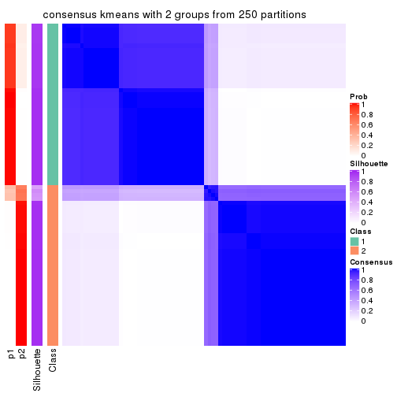
consensus_heatmap(res, k = 3)
consensus_heatmap(res, k = 4)
consensus_heatmap(res, k = 5)
consensus_heatmap(res, k = 6)
Heatmaps for the membership of samples in all partitions to see how consistent they are:
membership_heatmap(res, k = 2)
membership_heatmap(res, k = 3)
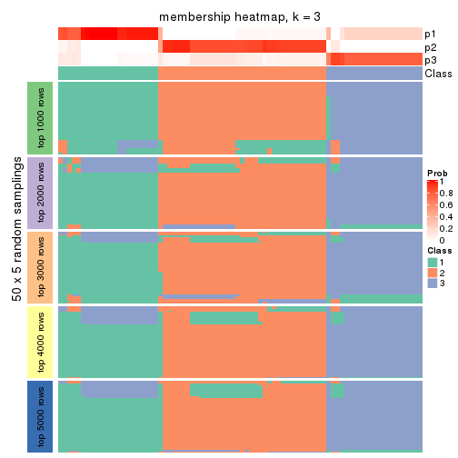
membership_heatmap(res, k = 4)
membership_heatmap(res, k = 5)
membership_heatmap(res, k = 6)
As soon as we have had the classes for columns, we can look for signatures which are significantly different between classes which can be candidate marks for certain classes. Following are the heatmaps for signatures.
Signature heatmaps where rows are scaled:
get_signatures(res, k = 2)
get_signatures(res, k = 3)
get_signatures(res, k = 4)
get_signatures(res, k = 5)
get_signatures(res, k = 6)

Signature heatmaps where rows are not scaled:
get_signatures(res, k = 2, scale_rows = FALSE)
get_signatures(res, k = 3, scale_rows = FALSE)
get_signatures(res, k = 4, scale_rows = FALSE)
get_signatures(res, k = 5, scale_rows = FALSE)
get_signatures(res, k = 6, scale_rows = FALSE)
Compare the overlap of signatures from different k:
compare_signatures(res)
get_signature() returns a data frame invisibly. TO get the list of signatures, the function
call should be assigned to a variable explicitly. In following code, if plot argument is set
to FALSE, no heatmap is plotted while only the differential analysis is performed.
# code only for demonstration
tb = get_signature(res, k = ..., plot = FALSE)
An example of the output of tb is:
#> which_row fdr mean_1 mean_2 scaled_mean_1 scaled_mean_2 km
#> 1 38 0.042760348 8.373488 9.131774 -0.5533452 0.5164555 1
#> 2 40 0.018707592 7.106213 8.469186 -0.6173731 0.5762149 1
#> 3 55 0.019134737 10.221463 11.207825 -0.6159697 0.5749050 1
#> 4 59 0.006059896 5.921854 7.869574 -0.6899429 0.6439467 1
#> 5 60 0.018055526 8.928898 10.211722 -0.6204761 0.5791110 1
#> 6 98 0.009384629 15.714769 14.887706 0.6635654 -0.6193277 2
...
The columns in tb are:
which_row: row indices corresponding to the input matrix.fdr: FDR for the differential test. mean_x: The mean value in group x.scaled_mean_x: The mean value in group x after rows are scaled.km: Row groups if k-means clustering is applied to rows.UMAP plot which shows how samples are separated.
dimension_reduction(res, k = 2, method = "UMAP")
dimension_reduction(res, k = 3, method = "UMAP")
dimension_reduction(res, k = 4, method = "UMAP")
dimension_reduction(res, k = 5, method = "UMAP")
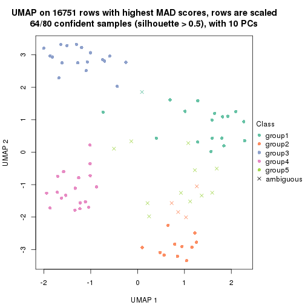
dimension_reduction(res, k = 6, method = "UMAP")
Following heatmap shows how subgroups are split when increasing k:
collect_classes(res)
If matrix rows can be associated to genes, consider to use GO_Enrichment(res,
...) to perform function enrichment for the signature genes.
The object with results only for a single top-value method and a single partition method can be extracted as:
res = res_list["MAD", "skmeans"]
# you can also extract it by
# res = res_list["MAD:skmeans"]
A summary of res and all the functions that can be applied to it:
res
#> A 'ConsensusPartition' object with k = 2, 3, 4, 5, 6.
#> On a matrix with 16751 rows and 80 columns.
#> Top rows (1000, 2000, 3000, 4000, 5000) are extracted by 'MAD' method.
#> Subgroups are detected by 'skmeans' method.
#> Performed in total 1250 partitions by row resampling.
#> Best k for subgroups seems to be 5.
#>
#> Following methods can be applied to this 'ConsensusPartition' object:
#> [1] "cola_report" "collect_classes" "collect_plots"
#> [4] "collect_stats" "colnames" "compare_signatures"
#> [7] "consensus_heatmap" "dimension_reduction" "functional_enrichment"
#> [10] "get_anno_col" "get_anno" "get_classes"
#> [13] "get_consensus" "get_matrix" "get_membership"
#> [16] "get_param" "get_signatures" "get_stats"
#> [19] "is_best_k" "is_stable_k" "membership_heatmap"
#> [22] "ncol" "nrow" "plot_ecdf"
#> [25] "rownames" "select_partition_number" "show"
#> [28] "suggest_best_k" "test_to_known_factors"
collect_plots() function collects all the plots made from res for all k (number of partitions)
into one single page to provide an easy and fast comparison between different k.
collect_plots(res)
The plots are:
k and the heatmap of
predicted classes for each k.k.k.k.All the plots in panels can be made by individual functions and they are plotted later in this section.
select_partition_number() produces several plots showing different
statistics for choosing “optimized” k. There are following statistics:
k;k, the area increased is defined as \(A_k - A_{k-1}\).The detailed explanations of these statistics can be found in the cola vignette.
Generally speaking, lower PAC score, higher mean silhouette score or higher
concordance corresponds to better partition. Rand index and Jaccard index
measure how similar the current partition is compared to partition with k-1.
If they are too similar, we won't accept k is better than k-1.
select_partition_number(res)
The numeric values for all these statistics can be obtained by get_stats().
get_stats(res)
#> k 1-PAC mean_silhouette concordance area_increased Rand Jaccard
#> 2 2 1.000 0.992 0.996 0.5067 0.494 0.494
#> 3 3 1.000 0.961 0.985 0.2902 0.806 0.625
#> 4 4 1.000 0.976 0.988 0.1555 0.888 0.682
#> 5 5 0.959 0.913 0.957 0.0393 0.969 0.876
#> 6 6 0.887 0.780 0.895 0.0312 0.982 0.916
suggest_best_k() suggests the best \(k\) based on these statistics. The rules are as follows:
NA.suggest_best_k(res)
#> [1] 5
#> attr(,"optional")
#> [1] 2 3 4
There is also optional best \(k\) = 2 3 4 that is worth to check.
Following shows the table of the partitions (You need to click the show/hide
code output link to see it). The membership matrix (columns with name p*)
is inferred by
clue::cl_consensus()
function with the SE method. Basically the value in the membership matrix
represents the probability to belong to a certain group. The finall class
label for an item is determined with the group with highest probability it
belongs to.
In get_classes() function, the entropy is calculated from the membership
matrix and the silhouette score is calculated from the consensus matrix.
cbind(get_classes(res, k = 2), get_membership(res, k = 2))
#> class entropy silhouette p1 p2
#> 71A0AB6A-CFC2-46F6-878C-6052C5B43D22 1 0.000 1.000 1.00 0.00
#> EFC730EC-6385-4167-A65A-F2A3AAEDA2AC 1 0.000 1.000 1.00 0.00
#> 14F2F39A-EA0F-4027-8877-FEEEEFF1F085 2 0.000 0.992 0.00 1.00
#> 98B2A7F8-A7BD-4DA2-8541-950E44D9ACD7 2 0.000 0.992 0.00 1.00
#> 9166F454-2068-46C2-B2EB-FB3BE4126536 1 0.000 1.000 1.00 0.00
#> 83B2A0BB-CE24-4DCA-B03A-D20353304365 2 0.000 0.992 0.00 1.00
#> D3FC3968-B263-4756-BF7F-1941F70B04DA 2 0.000 0.992 0.00 1.00
#> D357AC5C-C2A0-4CC4-B016-4572400AF117 2 0.000 0.992 0.00 1.00
#> 1055E951-5B93-4AD7-BE5C-4DF4F6AECEF3 2 0.000 0.992 0.00 1.00
#> F2995599-3F21-4F33-92BB-7D70A4735938 1 0.000 1.000 1.00 0.00
#> 3EE533BD-5832-4007-8F1F-439166256EB0 2 0.000 0.992 0.00 1.00
#> EEC6DA0C-5C49-4EFE-976A-19F432DDAA58 1 0.000 1.000 1.00 0.00
#> E6E08C1A-4C1B-4572-92DF-DA15BCBADF76 2 0.000 0.992 0.00 1.00
#> BCFCBBAC-EB95-47EB-9EB0-2CB4AE283A75 1 0.000 1.000 1.00 0.00
#> 0782D6D0-668B-4B83-8C91-8A35EA3BFF6D 2 0.000 0.992 0.00 1.00
#> AC78918E-1031-4AE6-B753-B0799171F0F0 1 0.000 1.000 1.00 0.00
#> 6B497CED-34DA-4CF8-8F8D-696105CB3D5F 1 0.000 1.000 1.00 0.00
#> 2328D472-583B-43A9-81A4-A21DDEBB5B18 2 0.000 0.992 0.00 1.00
#> A6930B33-D9B2-4318-807C-4A25EB4CCCDD 2 0.000 0.992 0.00 1.00
#> C8C48AFD-4D8B-491E-993C-3506DC6DD00F 1 0.000 1.000 1.00 0.00
#> 093FB845-7905-4064-8E8E-76E3587D8E7C 1 0.000 1.000 1.00 0.00
#> B216F996-CCD8-4F56-99B1-4EA9769B10B8 1 0.000 1.000 1.00 0.00
#> CB35DED2-5FEA-43E2-AB42-B6B3A7444B66 1 0.000 1.000 1.00 0.00
#> BA016F57-F58F-4A66-B85A-0B0F911EEA65 2 0.000 0.992 0.00 1.00
#> 519DBD5F-66C0-4CEE-905C-799C855D28FB 1 0.000 1.000 1.00 0.00
#> F5B9B89B-6821-43EE-BCFD-623689D03AF9 2 0.000 0.992 0.00 1.00
#> 55A39F92-CC88-4A2F-A7D3-7A59DEBEBB42 2 0.000 0.992 0.00 1.00
#> 3DBBDEDA-F9FC-40DC-804F-45429EA47ED4 2 0.529 0.866 0.12 0.88
#> BB948BE8-7D48-4AEB-A404-C27A79655D7E 1 0.000 1.000 1.00 0.00
#> 9506723F-9193-4D8E-BD97-8A0062AB2F9C 1 0.000 1.000 1.00 0.00
#> D0758A7A-9D0E-4EA4-8EE9-7143B398647D 1 0.000 1.000 1.00 0.00
#> F400FD4D-72D7-4933-B145-64B7EE245FFC 2 0.000 0.992 0.00 1.00
#> 3F87E9ED-3719-48E1-8B69-E352A03E982D 1 0.000 1.000 1.00 0.00
#> D6365FEB-CC12-4337-BF8C-66236A585B5D 2 0.000 0.992 0.00 1.00
#> A4168812-C38E-4F15-9AF6-79F256279E72 1 0.000 1.000 1.00 0.00
#> DB676839-02AA-42A7-962F-89D6AD892008 1 0.000 1.000 1.00 0.00
#> 198D8E89-51FD-41DE-AD11-FB2F2FE49908 2 0.000 0.992 0.00 1.00
#> 2BADCD01-27E8-49EC-B707-4FAE3D3CB489 1 0.000 1.000 1.00 0.00
#> ABBD6EFE-079B-4BE3-95AB-36AF9197D684 2 0.000 0.992 0.00 1.00
#> 39D66B95-61C7-4B76-8E81-1F9F98024B69 1 0.000 1.000 1.00 0.00
#> 7A920210-CF3D-4458-B6D5-D9B2ADACA469 1 0.000 1.000 1.00 0.00
#> 0CE61CDC-3257-4F03-951B-CC2CFCF675AE 2 0.000 0.992 0.00 1.00
#> 7338D61C-77D6-4095-8847-7FD9967B7646 1 0.000 1.000 1.00 0.00
#> 0D36FAD5-BA81-4FED-9E2A-DB016F2EF18C 1 0.000 1.000 1.00 0.00
#> 43CD31CD-5FAE-418A-B235-49E54560590D 2 0.000 0.992 0.00 1.00
#> B6DD72B0-EEFA-41A9-B71D-22DE1343CD32 1 0.000 1.000 1.00 0.00
#> 2B729CD9-71A5-4336-ACBA-922A30AF4949 2 0.000 0.992 0.00 1.00
#> B76DB955-69B7-4D05-8166-2569ED44628C 1 0.000 1.000 1.00 0.00
#> 09CBEE39-7141-4228-AFD3-4714E32A1FB5 2 0.000 0.992 0.00 1.00
#> AC1700D5-72E7-4C7F-A288-869DFC229252 1 0.000 1.000 1.00 0.00
#> 535A5E8E-8478-477F-87FF-ED6742AA5473 2 0.000 0.992 0.00 1.00
#> CFB8573C-9F36-4715-B6F1-6E5B543168A8 1 0.000 1.000 1.00 0.00
#> 47A45491-6023-44BF-ABC2-9A470F7FC1F7 2 0.000 0.992 0.00 1.00
#> 437C7AA7-98C0-48C7-97DA-86FF44D69B87 2 0.000 0.992 0.00 1.00
#> 649ADE7E-6C06-4AB6-8E97-D8C2AAF79A7E 2 0.000 0.992 0.00 1.00
#> DEA60B47-AD6A-4EBB-9402-6F97E9640E4E 2 0.000 0.992 0.00 1.00
#> 76C574FF-26BF-49CD-9BCA-7BDDCBD06D5D 2 0.000 0.992 0.00 1.00
#> 8B6E1F9B-1E90-4333-8E0C-EEDFF25D15C0 2 0.000 0.992 0.00 1.00
#> A2473EE7-72D6-4D32-9DF7-5D4E444A6715 2 0.000 0.992 0.00 1.00
#> E226C45E-5287-4D0F-A34B-CE251FA293CB 1 0.000 1.000 1.00 0.00
#> A2C71C07-AF0C-4016-808C-DFEF458C91C7 1 0.000 1.000 1.00 0.00
#> DA00D60F-4CF1-4003-BAF5-896EE2BEE2D4 2 0.000 0.992 0.00 1.00
#> 1C17B65F-1930-4CF3-99B6-5D3AA9E99188 2 0.000 0.992 0.00 1.00
#> B837D582-A0D3-46BE-8ECA-883F5396AE88 1 0.000 1.000 1.00 0.00
#> EF1A102F-C206-4874-8F27-0BF069A613B8 1 0.000 1.000 1.00 0.00
#> BC761676-F64C-476A-8D9B-BD3E6149B2CD 2 0.000 0.992 0.00 1.00
#> D8351E5C-DC1D-4B4D-83E6-735B2750D944 2 0.000 0.992 0.00 1.00
#> 59F65F61-03D0-4909-99BD-4CCB53A088A5 1 0.000 1.000 1.00 0.00
#> EFFCCF33-60E1-4550-B13C-14C54ADCF479 2 0.680 0.785 0.18 0.82
#> C45EB423-CC14-4BDB-A0B4-447E5DB6DA9C 1 0.000 1.000 1.00 0.00
#> D34B0BC6-9142-48AE-A113-5923192644A0 1 0.000 1.000 1.00 0.00
#> 634672A6-C68E-479F-AAB5-CBAFF7758EA4 1 0.000 1.000 1.00 0.00
#> 06DAE086-D960-4156-9DC8-D126338E2F29 2 0.000 0.992 0.00 1.00
#> 3353F579-77CA-4D0E-B794-37DE467CC065 1 0.000 1.000 1.00 0.00
#> 976507F2-192B-4095-920A-3014889CD617 1 0.000 1.000 1.00 0.00
#> 3FFF89D9-02F5-4D49-8631-099562BF99C7 2 0.000 0.992 0.00 1.00
#> 8BC2213D-99DA-44E0-826F-EBF211EECFBF 1 0.000 1.000 1.00 0.00
#> A7A16BF7-5E60-4E50-BE04-542EFC4DB472 2 0.000 0.992 0.00 1.00
#> E25C9578-9493-466E-A2CD-546DEB076B2D 2 0.000 0.992 0.00 1.00
#> EA35E230-DE50-45AB-A737-D5C430652A90 1 0.000 1.000 1.00 0.00
cbind(get_classes(res, k = 3), get_membership(res, k = 3))
#> class entropy silhouette p1 p2 p3
#> 71A0AB6A-CFC2-46F6-878C-6052C5B43D22 1 0.0000 1.000 1.000 0.000 0.000
#> EFC730EC-6385-4167-A65A-F2A3AAEDA2AC 3 0.3482 0.832 0.128 0.000 0.872
#> 14F2F39A-EA0F-4027-8877-FEEEEFF1F085 2 0.0000 0.990 0.000 1.000 0.000
#> 98B2A7F8-A7BD-4DA2-8541-950E44D9ACD7 2 0.0000 0.990 0.000 1.000 0.000
#> 9166F454-2068-46C2-B2EB-FB3BE4126536 3 0.0000 0.958 0.000 0.000 1.000
#> 83B2A0BB-CE24-4DCA-B03A-D20353304365 2 0.0000 0.990 0.000 1.000 0.000
#> D3FC3968-B263-4756-BF7F-1941F70B04DA 2 0.0000 0.990 0.000 1.000 0.000
#> D357AC5C-C2A0-4CC4-B016-4572400AF117 2 0.0000 0.990 0.000 1.000 0.000
#> 1055E951-5B93-4AD7-BE5C-4DF4F6AECEF3 2 0.0000 0.990 0.000 1.000 0.000
#> F2995599-3F21-4F33-92BB-7D70A4735938 3 0.0000 0.958 0.000 0.000 1.000
#> 3EE533BD-5832-4007-8F1F-439166256EB0 2 0.0000 0.990 0.000 1.000 0.000
#> EEC6DA0C-5C49-4EFE-976A-19F432DDAA58 3 0.0000 0.958 0.000 0.000 1.000
#> E6E08C1A-4C1B-4572-92DF-DA15BCBADF76 2 0.0000 0.990 0.000 1.000 0.000
#> BCFCBBAC-EB95-47EB-9EB0-2CB4AE283A75 1 0.0000 1.000 1.000 0.000 0.000
#> 0782D6D0-668B-4B83-8C91-8A35EA3BFF6D 2 0.0000 0.990 0.000 1.000 0.000
#> AC78918E-1031-4AE6-B753-B0799171F0F0 3 0.0000 0.958 0.000 0.000 1.000
#> 6B497CED-34DA-4CF8-8F8D-696105CB3D5F 1 0.0000 1.000 1.000 0.000 0.000
#> 2328D472-583B-43A9-81A4-A21DDEBB5B18 2 0.0000 0.990 0.000 1.000 0.000
#> A6930B33-D9B2-4318-807C-4A25EB4CCCDD 2 0.0000 0.990 0.000 1.000 0.000
#> C8C48AFD-4D8B-491E-993C-3506DC6DD00F 1 0.0000 1.000 1.000 0.000 0.000
#> 093FB845-7905-4064-8E8E-76E3587D8E7C 1 0.0000 1.000 1.000 0.000 0.000
#> B216F996-CCD8-4F56-99B1-4EA9769B10B8 1 0.0000 1.000 1.000 0.000 0.000
#> CB35DED2-5FEA-43E2-AB42-B6B3A7444B66 1 0.0000 1.000 1.000 0.000 0.000
#> BA016F57-F58F-4A66-B85A-0B0F911EEA65 2 0.0892 0.972 0.000 0.980 0.020
#> 519DBD5F-66C0-4CEE-905C-799C855D28FB 3 0.0000 0.958 0.000 0.000 1.000
#> F5B9B89B-6821-43EE-BCFD-623689D03AF9 2 0.0000 0.990 0.000 1.000 0.000
#> 55A39F92-CC88-4A2F-A7D3-7A59DEBEBB42 1 0.0000 1.000 1.000 0.000 0.000
#> 3DBBDEDA-F9FC-40DC-804F-45429EA47ED4 2 0.5621 0.552 0.308 0.692 0.000
#> BB948BE8-7D48-4AEB-A404-C27A79655D7E 1 0.0000 1.000 1.000 0.000 0.000
#> 9506723F-9193-4D8E-BD97-8A0062AB2F9C 1 0.0000 1.000 1.000 0.000 0.000
#> D0758A7A-9D0E-4EA4-8EE9-7143B398647D 1 0.0000 1.000 1.000 0.000 0.000
#> F400FD4D-72D7-4933-B145-64B7EE245FFC 2 0.0000 0.990 0.000 1.000 0.000
#> 3F87E9ED-3719-48E1-8B69-E352A03E982D 1 0.0000 1.000 1.000 0.000 0.000
#> D6365FEB-CC12-4337-BF8C-66236A585B5D 2 0.0000 0.990 0.000 1.000 0.000
#> A4168812-C38E-4F15-9AF6-79F256279E72 1 0.0000 1.000 1.000 0.000 0.000
#> DB676839-02AA-42A7-962F-89D6AD892008 3 0.0000 0.958 0.000 0.000 1.000
#> 198D8E89-51FD-41DE-AD11-FB2F2FE49908 2 0.0000 0.990 0.000 1.000 0.000
#> 2BADCD01-27E8-49EC-B707-4FAE3D3CB489 3 0.0000 0.958 0.000 0.000 1.000
#> ABBD6EFE-079B-4BE3-95AB-36AF9197D684 2 0.0000 0.990 0.000 1.000 0.000
#> 39D66B95-61C7-4B76-8E81-1F9F98024B69 3 0.0000 0.958 0.000 0.000 1.000
#> 7A920210-CF3D-4458-B6D5-D9B2ADACA469 3 0.0000 0.958 0.000 0.000 1.000
#> 0CE61CDC-3257-4F03-951B-CC2CFCF675AE 2 0.0000 0.990 0.000 1.000 0.000
#> 7338D61C-77D6-4095-8847-7FD9967B7646 3 0.0000 0.958 0.000 0.000 1.000
#> 0D36FAD5-BA81-4FED-9E2A-DB016F2EF18C 3 0.0000 0.958 0.000 0.000 1.000
#> 43CD31CD-5FAE-418A-B235-49E54560590D 2 0.0000 0.990 0.000 1.000 0.000
#> B6DD72B0-EEFA-41A9-B71D-22DE1343CD32 1 0.0000 1.000 1.000 0.000 0.000
#> 2B729CD9-71A5-4336-ACBA-922A30AF4949 2 0.0000 0.990 0.000 1.000 0.000
#> B76DB955-69B7-4D05-8166-2569ED44628C 3 0.0000 0.958 0.000 0.000 1.000
#> 09CBEE39-7141-4228-AFD3-4714E32A1FB5 2 0.0000 0.990 0.000 1.000 0.000
#> AC1700D5-72E7-4C7F-A288-869DFC229252 3 0.0000 0.958 0.000 0.000 1.000
#> 535A5E8E-8478-477F-87FF-ED6742AA5473 2 0.0000 0.990 0.000 1.000 0.000
#> CFB8573C-9F36-4715-B6F1-6E5B543168A8 3 0.0000 0.958 0.000 0.000 1.000
#> 47A45491-6023-44BF-ABC2-9A470F7FC1F7 2 0.0592 0.979 0.000 0.988 0.012
#> 437C7AA7-98C0-48C7-97DA-86FF44D69B87 2 0.0000 0.990 0.000 1.000 0.000
#> 649ADE7E-6C06-4AB6-8E97-D8C2AAF79A7E 2 0.0000 0.990 0.000 1.000 0.000
#> DEA60B47-AD6A-4EBB-9402-6F97E9640E4E 2 0.0000 0.990 0.000 1.000 0.000
#> 76C574FF-26BF-49CD-9BCA-7BDDCBD06D5D 2 0.0000 0.990 0.000 1.000 0.000
#> 8B6E1F9B-1E90-4333-8E0C-EEDFF25D15C0 1 0.0000 1.000 1.000 0.000 0.000
#> A2473EE7-72D6-4D32-9DF7-5D4E444A6715 2 0.0424 0.983 0.000 0.992 0.008
#> E226C45E-5287-4D0F-A34B-CE251FA293CB 3 0.0000 0.958 0.000 0.000 1.000
#> A2C71C07-AF0C-4016-808C-DFEF458C91C7 3 0.0000 0.958 0.000 0.000 1.000
#> DA00D60F-4CF1-4003-BAF5-896EE2BEE2D4 3 0.6244 0.211 0.000 0.440 0.560
#> 1C17B65F-1930-4CF3-99B6-5D3AA9E99188 2 0.0000 0.990 0.000 1.000 0.000
#> B837D582-A0D3-46BE-8ECA-883F5396AE88 3 0.5678 0.534 0.316 0.000 0.684
#> EF1A102F-C206-4874-8F27-0BF069A613B8 1 0.0237 0.996 0.996 0.000 0.004
#> BC761676-F64C-476A-8D9B-BD3E6149B2CD 2 0.0000 0.990 0.000 1.000 0.000
#> D8351E5C-DC1D-4B4D-83E6-735B2750D944 2 0.0000 0.990 0.000 1.000 0.000
#> 59F65F61-03D0-4909-99BD-4CCB53A088A5 1 0.0000 1.000 1.000 0.000 0.000
#> EFFCCF33-60E1-4550-B13C-14C54ADCF479 1 0.0000 1.000 1.000 0.000 0.000
#> C45EB423-CC14-4BDB-A0B4-447E5DB6DA9C 3 0.0000 0.958 0.000 0.000 1.000
#> D34B0BC6-9142-48AE-A113-5923192644A0 1 0.0000 1.000 1.000 0.000 0.000
#> 634672A6-C68E-479F-AAB5-CBAFF7758EA4 3 0.0000 0.958 0.000 0.000 1.000
#> 06DAE086-D960-4156-9DC8-D126338E2F29 2 0.0000 0.990 0.000 1.000 0.000
#> 3353F579-77CA-4D0E-B794-37DE467CC065 3 0.0000 0.958 0.000 0.000 1.000
#> 976507F2-192B-4095-920A-3014889CD617 3 0.0000 0.958 0.000 0.000 1.000
#> 3FFF89D9-02F5-4D49-8631-099562BF99C7 2 0.0000 0.990 0.000 1.000 0.000
#> 8BC2213D-99DA-44E0-826F-EBF211EECFBF 3 0.0000 0.958 0.000 0.000 1.000
#> A7A16BF7-5E60-4E50-BE04-542EFC4DB472 2 0.0000 0.990 0.000 1.000 0.000
#> E25C9578-9493-466E-A2CD-546DEB076B2D 2 0.0000 0.990 0.000 1.000 0.000
#> EA35E230-DE50-45AB-A737-D5C430652A90 1 0.0000 1.000 1.000 0.000 0.000
cbind(get_classes(res, k = 4), get_membership(res, k = 4))
#> class entropy silhouette p1 p2 p3 p4
#> 71A0AB6A-CFC2-46F6-878C-6052C5B43D22 1 0.0000 0.999 1.000 0.000 0.000 0.000
#> EFC730EC-6385-4167-A65A-F2A3AAEDA2AC 3 0.5343 0.530 0.316 0.000 0.656 0.028
#> 14F2F39A-EA0F-4027-8877-FEEEEFF1F085 2 0.0000 0.999 0.000 1.000 0.000 0.000
#> 98B2A7F8-A7BD-4DA2-8541-950E44D9ACD7 2 0.0000 0.999 0.000 1.000 0.000 0.000
#> 9166F454-2068-46C2-B2EB-FB3BE4126536 3 0.0000 0.967 0.000 0.000 1.000 0.000
#> 83B2A0BB-CE24-4DCA-B03A-D20353304365 2 0.0000 0.999 0.000 1.000 0.000 0.000
#> D3FC3968-B263-4756-BF7F-1941F70B04DA 4 0.0592 0.987 0.000 0.016 0.000 0.984
#> D357AC5C-C2A0-4CC4-B016-4572400AF117 2 0.0000 0.999 0.000 1.000 0.000 0.000
#> 1055E951-5B93-4AD7-BE5C-4DF4F6AECEF3 4 0.0592 0.987 0.000 0.016 0.000 0.984
#> F2995599-3F21-4F33-92BB-7D70A4735938 3 0.0000 0.967 0.000 0.000 1.000 0.000
#> 3EE533BD-5832-4007-8F1F-439166256EB0 2 0.0000 0.999 0.000 1.000 0.000 0.000
#> EEC6DA0C-5C49-4EFE-976A-19F432DDAA58 3 0.0000 0.967 0.000 0.000 1.000 0.000
#> E6E08C1A-4C1B-4572-92DF-DA15BCBADF76 4 0.0921 0.984 0.000 0.028 0.000 0.972
#> BCFCBBAC-EB95-47EB-9EB0-2CB4AE283A75 1 0.0000 0.999 1.000 0.000 0.000 0.000
#> 0782D6D0-668B-4B83-8C91-8A35EA3BFF6D 2 0.0000 0.999 0.000 1.000 0.000 0.000
#> AC78918E-1031-4AE6-B753-B0799171F0F0 3 0.0000 0.967 0.000 0.000 1.000 0.000
#> 6B497CED-34DA-4CF8-8F8D-696105CB3D5F 1 0.0000 0.999 1.000 0.000 0.000 0.000
#> 2328D472-583B-43A9-81A4-A21DDEBB5B18 2 0.0000 0.999 0.000 1.000 0.000 0.000
#> A6930B33-D9B2-4318-807C-4A25EB4CCCDD 2 0.0000 0.999 0.000 1.000 0.000 0.000
#> C8C48AFD-4D8B-491E-993C-3506DC6DD00F 1 0.0000 0.999 1.000 0.000 0.000 0.000
#> 093FB845-7905-4064-8E8E-76E3587D8E7C 1 0.0000 0.999 1.000 0.000 0.000 0.000
#> B216F996-CCD8-4F56-99B1-4EA9769B10B8 1 0.0000 0.999 1.000 0.000 0.000 0.000
#> CB35DED2-5FEA-43E2-AB42-B6B3A7444B66 1 0.0000 0.999 1.000 0.000 0.000 0.000
#> BA016F57-F58F-4A66-B85A-0B0F911EEA65 4 0.0000 0.983 0.000 0.000 0.000 1.000
#> 519DBD5F-66C0-4CEE-905C-799C855D28FB 3 0.0000 0.967 0.000 0.000 1.000 0.000
#> F5B9B89B-6821-43EE-BCFD-623689D03AF9 2 0.0000 0.999 0.000 1.000 0.000 0.000
#> 55A39F92-CC88-4A2F-A7D3-7A59DEBEBB42 1 0.0000 0.999 1.000 0.000 0.000 0.000
#> 3DBBDEDA-F9FC-40DC-804F-45429EA47ED4 2 0.0469 0.986 0.012 0.988 0.000 0.000
#> BB948BE8-7D48-4AEB-A404-C27A79655D7E 1 0.0000 0.999 1.000 0.000 0.000 0.000
#> 9506723F-9193-4D8E-BD97-8A0062AB2F9C 1 0.0000 0.999 1.000 0.000 0.000 0.000
#> D0758A7A-9D0E-4EA4-8EE9-7143B398647D 1 0.0000 0.999 1.000 0.000 0.000 0.000
#> F400FD4D-72D7-4933-B145-64B7EE245FFC 4 0.0921 0.984 0.000 0.028 0.000 0.972
#> 3F87E9ED-3719-48E1-8B69-E352A03E982D 1 0.0000 0.999 1.000 0.000 0.000 0.000
#> D6365FEB-CC12-4337-BF8C-66236A585B5D 2 0.0000 0.999 0.000 1.000 0.000 0.000
#> A4168812-C38E-4F15-9AF6-79F256279E72 1 0.0000 0.999 1.000 0.000 0.000 0.000
#> DB676839-02AA-42A7-962F-89D6AD892008 3 0.0000 0.967 0.000 0.000 1.000 0.000
#> 198D8E89-51FD-41DE-AD11-FB2F2FE49908 4 0.1022 0.982 0.000 0.032 0.000 0.968
#> 2BADCD01-27E8-49EC-B707-4FAE3D3CB489 3 0.0000 0.967 0.000 0.000 1.000 0.000
#> ABBD6EFE-079B-4BE3-95AB-36AF9197D684 2 0.0000 0.999 0.000 1.000 0.000 0.000
#> 39D66B95-61C7-4B76-8E81-1F9F98024B69 3 0.0000 0.967 0.000 0.000 1.000 0.000
#> 7A920210-CF3D-4458-B6D5-D9B2ADACA469 3 0.0000 0.967 0.000 0.000 1.000 0.000
#> 0CE61CDC-3257-4F03-951B-CC2CFCF675AE 4 0.0592 0.987 0.000 0.016 0.000 0.984
#> 7338D61C-77D6-4095-8847-7FD9967B7646 3 0.1118 0.941 0.000 0.000 0.964 0.036
#> 0D36FAD5-BA81-4FED-9E2A-DB016F2EF18C 3 0.0000 0.967 0.000 0.000 1.000 0.000
#> 43CD31CD-5FAE-418A-B235-49E54560590D 2 0.0000 0.999 0.000 1.000 0.000 0.000
#> B6DD72B0-EEFA-41A9-B71D-22DE1343CD32 1 0.0000 0.999 1.000 0.000 0.000 0.000
#> 2B729CD9-71A5-4336-ACBA-922A30AF4949 4 0.0000 0.983 0.000 0.000 0.000 1.000
#> B76DB955-69B7-4D05-8166-2569ED44628C 3 0.0000 0.967 0.000 0.000 1.000 0.000
#> 09CBEE39-7141-4228-AFD3-4714E32A1FB5 2 0.0000 0.999 0.000 1.000 0.000 0.000
#> AC1700D5-72E7-4C7F-A288-869DFC229252 3 0.0000 0.967 0.000 0.000 1.000 0.000
#> 535A5E8E-8478-477F-87FF-ED6742AA5473 2 0.0000 0.999 0.000 1.000 0.000 0.000
#> CFB8573C-9F36-4715-B6F1-6E5B543168A8 3 0.1022 0.945 0.000 0.000 0.968 0.032
#> 47A45491-6023-44BF-ABC2-9A470F7FC1F7 4 0.0000 0.983 0.000 0.000 0.000 1.000
#> 437C7AA7-98C0-48C7-97DA-86FF44D69B87 4 0.0592 0.987 0.000 0.016 0.000 0.984
#> 649ADE7E-6C06-4AB6-8E97-D8C2AAF79A7E 2 0.0000 0.999 0.000 1.000 0.000 0.000
#> DEA60B47-AD6A-4EBB-9402-6F97E9640E4E 4 0.1022 0.982 0.000 0.032 0.000 0.968
#> 76C574FF-26BF-49CD-9BCA-7BDDCBD06D5D 2 0.0000 0.999 0.000 1.000 0.000 0.000
#> 8B6E1F9B-1E90-4333-8E0C-EEDFF25D15C0 1 0.0000 0.999 1.000 0.000 0.000 0.000
#> A2473EE7-72D6-4D32-9DF7-5D4E444A6715 4 0.0000 0.983 0.000 0.000 0.000 1.000
#> E226C45E-5287-4D0F-A34B-CE251FA293CB 3 0.0000 0.967 0.000 0.000 1.000 0.000
#> A2C71C07-AF0C-4016-808C-DFEF458C91C7 3 0.0000 0.967 0.000 0.000 1.000 0.000
#> DA00D60F-4CF1-4003-BAF5-896EE2BEE2D4 4 0.0000 0.983 0.000 0.000 0.000 1.000
#> 1C17B65F-1930-4CF3-99B6-5D3AA9E99188 4 0.0000 0.983 0.000 0.000 0.000 1.000
#> B837D582-A0D3-46BE-8ECA-883F5396AE88 3 0.4406 0.587 0.300 0.000 0.700 0.000
#> EF1A102F-C206-4874-8F27-0BF069A613B8 1 0.0921 0.974 0.972 0.000 0.000 0.028
#> BC761676-F64C-476A-8D9B-BD3E6149B2CD 2 0.0000 0.999 0.000 1.000 0.000 0.000
#> D8351E5C-DC1D-4B4D-83E6-735B2750D944 2 0.0000 0.999 0.000 1.000 0.000 0.000
#> 59F65F61-03D0-4909-99BD-4CCB53A088A5 1 0.0000 0.999 1.000 0.000 0.000 0.000
#> EFFCCF33-60E1-4550-B13C-14C54ADCF479 1 0.0000 0.999 1.000 0.000 0.000 0.000
#> C45EB423-CC14-4BDB-A0B4-447E5DB6DA9C 3 0.0000 0.967 0.000 0.000 1.000 0.000
#> D34B0BC6-9142-48AE-A113-5923192644A0 1 0.0000 0.999 1.000 0.000 0.000 0.000
#> 634672A6-C68E-479F-AAB5-CBAFF7758EA4 3 0.0000 0.967 0.000 0.000 1.000 0.000
#> 06DAE086-D960-4156-9DC8-D126338E2F29 4 0.0921 0.984 0.000 0.028 0.000 0.972
#> 3353F579-77CA-4D0E-B794-37DE467CC065 3 0.0000 0.967 0.000 0.000 1.000 0.000
#> 976507F2-192B-4095-920A-3014889CD617 3 0.0000 0.967 0.000 0.000 1.000 0.000
#> 3FFF89D9-02F5-4D49-8631-099562BF99C7 4 0.1022 0.982 0.000 0.032 0.000 0.968
#> 8BC2213D-99DA-44E0-826F-EBF211EECFBF 3 0.0000 0.967 0.000 0.000 1.000 0.000
#> A7A16BF7-5E60-4E50-BE04-542EFC4DB472 2 0.0000 0.999 0.000 1.000 0.000 0.000
#> E25C9578-9493-466E-A2CD-546DEB076B2D 2 0.0000 0.999 0.000 1.000 0.000 0.000
#> EA35E230-DE50-45AB-A737-D5C430652A90 1 0.0000 0.999 1.000 0.000 0.000 0.000
cbind(get_classes(res, k = 5), get_membership(res, k = 5))
#> class entropy silhouette p1 p2 p3 p4 p5
#> 71A0AB6A-CFC2-46F6-878C-6052C5B43D22 1 0.0000 0.949 1.000 0.000 0.000 0.000 0.000
#> EFC730EC-6385-4167-A65A-F2A3AAEDA2AC 5 0.1597 0.703 0.048 0.000 0.012 0.000 0.940
#> 14F2F39A-EA0F-4027-8877-FEEEEFF1F085 2 0.0451 0.988 0.000 0.988 0.000 0.008 0.004
#> 98B2A7F8-A7BD-4DA2-8541-950E44D9ACD7 2 0.0290 0.988 0.000 0.992 0.000 0.008 0.000
#> 9166F454-2068-46C2-B2EB-FB3BE4126536 3 0.0000 0.959 0.000 0.000 1.000 0.000 0.000
#> 83B2A0BB-CE24-4DCA-B03A-D20353304365 2 0.0290 0.988 0.000 0.992 0.000 0.008 0.000
#> D3FC3968-B263-4756-BF7F-1941F70B04DA 4 0.0000 0.976 0.000 0.000 0.000 1.000 0.000
#> D357AC5C-C2A0-4CC4-B016-4572400AF117 2 0.0162 0.987 0.000 0.996 0.000 0.004 0.000
#> 1055E951-5B93-4AD7-BE5C-4DF4F6AECEF3 4 0.0000 0.976 0.000 0.000 0.000 1.000 0.000
#> F2995599-3F21-4F33-92BB-7D70A4735938 3 0.0000 0.959 0.000 0.000 1.000 0.000 0.000
#> 3EE533BD-5832-4007-8F1F-439166256EB0 2 0.0671 0.981 0.000 0.980 0.000 0.004 0.016
#> EEC6DA0C-5C49-4EFE-976A-19F432DDAA58 3 0.0000 0.959 0.000 0.000 1.000 0.000 0.000
#> E6E08C1A-4C1B-4572-92DF-DA15BCBADF76 4 0.0000 0.976 0.000 0.000 0.000 1.000 0.000
#> BCFCBBAC-EB95-47EB-9EB0-2CB4AE283A75 1 0.3983 0.570 0.660 0.000 0.000 0.000 0.340
#> 0782D6D0-668B-4B83-8C91-8A35EA3BFF6D 2 0.0451 0.988 0.000 0.988 0.000 0.008 0.004
#> AC78918E-1031-4AE6-B753-B0799171F0F0 3 0.0000 0.959 0.000 0.000 1.000 0.000 0.000
#> 6B497CED-34DA-4CF8-8F8D-696105CB3D5F 1 0.0000 0.949 1.000 0.000 0.000 0.000 0.000
#> 2328D472-583B-43A9-81A4-A21DDEBB5B18 2 0.0671 0.981 0.000 0.980 0.000 0.004 0.016
#> A6930B33-D9B2-4318-807C-4A25EB4CCCDD 2 0.0451 0.988 0.000 0.988 0.000 0.008 0.004
#> C8C48AFD-4D8B-491E-993C-3506DC6DD00F 1 0.0000 0.949 1.000 0.000 0.000 0.000 0.000
#> 093FB845-7905-4064-8E8E-76E3587D8E7C 1 0.1671 0.913 0.924 0.000 0.000 0.000 0.076
#> B216F996-CCD8-4F56-99B1-4EA9769B10B8 1 0.0000 0.949 1.000 0.000 0.000 0.000 0.000
#> CB35DED2-5FEA-43E2-AB42-B6B3A7444B66 1 0.0510 0.945 0.984 0.000 0.000 0.000 0.016
#> BA016F57-F58F-4A66-B85A-0B0F911EEA65 4 0.2852 0.745 0.000 0.000 0.000 0.828 0.172
#> 519DBD5F-66C0-4CEE-905C-799C855D28FB 3 0.0000 0.959 0.000 0.000 1.000 0.000 0.000
#> F5B9B89B-6821-43EE-BCFD-623689D03AF9 2 0.0451 0.988 0.000 0.988 0.000 0.008 0.004
#> 55A39F92-CC88-4A2F-A7D3-7A59DEBEBB42 1 0.3999 0.590 0.656 0.000 0.000 0.000 0.344
#> 3DBBDEDA-F9FC-40DC-804F-45429EA47ED4 2 0.1522 0.952 0.012 0.944 0.000 0.000 0.044
#> BB948BE8-7D48-4AEB-A404-C27A79655D7E 1 0.0000 0.949 1.000 0.000 0.000 0.000 0.000
#> 9506723F-9193-4D8E-BD97-8A0062AB2F9C 1 0.0000 0.949 1.000 0.000 0.000 0.000 0.000
#> D0758A7A-9D0E-4EA4-8EE9-7143B398647D 1 0.0000 0.949 1.000 0.000 0.000 0.000 0.000
#> F400FD4D-72D7-4933-B145-64B7EE245FFC 4 0.0000 0.976 0.000 0.000 0.000 1.000 0.000
#> 3F87E9ED-3719-48E1-8B69-E352A03E982D 1 0.0703 0.943 0.976 0.000 0.000 0.000 0.024
#> D6365FEB-CC12-4337-BF8C-66236A585B5D 2 0.0290 0.984 0.000 0.992 0.000 0.000 0.008
#> A4168812-C38E-4F15-9AF6-79F256279E72 1 0.0000 0.949 1.000 0.000 0.000 0.000 0.000
#> DB676839-02AA-42A7-962F-89D6AD892008 3 0.0000 0.959 0.000 0.000 1.000 0.000 0.000
#> 198D8E89-51FD-41DE-AD11-FB2F2FE49908 4 0.0000 0.976 0.000 0.000 0.000 1.000 0.000
#> 2BADCD01-27E8-49EC-B707-4FAE3D3CB489 3 0.0000 0.959 0.000 0.000 1.000 0.000 0.000
#> ABBD6EFE-079B-4BE3-95AB-36AF9197D684 2 0.0290 0.988 0.000 0.992 0.000 0.008 0.000
#> 39D66B95-61C7-4B76-8E81-1F9F98024B69 3 0.0000 0.959 0.000 0.000 1.000 0.000 0.000
#> 7A920210-CF3D-4458-B6D5-D9B2ADACA469 3 0.0000 0.959 0.000 0.000 1.000 0.000 0.000
#> 0CE61CDC-3257-4F03-951B-CC2CFCF675AE 4 0.0000 0.976 0.000 0.000 0.000 1.000 0.000
#> 7338D61C-77D6-4095-8847-7FD9967B7646 3 0.4584 0.466 0.000 0.000 0.660 0.028 0.312
#> 0D36FAD5-BA81-4FED-9E2A-DB016F2EF18C 3 0.0000 0.959 0.000 0.000 1.000 0.000 0.000
#> 43CD31CD-5FAE-418A-B235-49E54560590D 2 0.0324 0.987 0.000 0.992 0.000 0.004 0.004
#> B6DD72B0-EEFA-41A9-B71D-22DE1343CD32 1 0.0000 0.949 1.000 0.000 0.000 0.000 0.000
#> 2B729CD9-71A5-4336-ACBA-922A30AF4949 4 0.0000 0.976 0.000 0.000 0.000 1.000 0.000
#> B76DB955-69B7-4D05-8166-2569ED44628C 3 0.0000 0.959 0.000 0.000 1.000 0.000 0.000
#> 09CBEE39-7141-4228-AFD3-4714E32A1FB5 2 0.0000 0.986 0.000 1.000 0.000 0.000 0.000
#> AC1700D5-72E7-4C7F-A288-869DFC229252 3 0.2597 0.850 0.024 0.000 0.884 0.000 0.092
#> 535A5E8E-8478-477F-87FF-ED6742AA5473 2 0.0324 0.987 0.000 0.992 0.000 0.004 0.004
#> CFB8573C-9F36-4715-B6F1-6E5B543168A8 5 0.2648 0.651 0.000 0.000 0.152 0.000 0.848
#> 47A45491-6023-44BF-ABC2-9A470F7FC1F7 4 0.0404 0.965 0.000 0.000 0.000 0.988 0.012
#> 437C7AA7-98C0-48C7-97DA-86FF44D69B87 4 0.0000 0.976 0.000 0.000 0.000 1.000 0.000
#> 649ADE7E-6C06-4AB6-8E97-D8C2AAF79A7E 2 0.1043 0.965 0.000 0.960 0.000 0.000 0.040
#> DEA60B47-AD6A-4EBB-9402-6F97E9640E4E 4 0.0000 0.976 0.000 0.000 0.000 1.000 0.000
#> 76C574FF-26BF-49CD-9BCA-7BDDCBD06D5D 2 0.0451 0.988 0.000 0.988 0.000 0.008 0.004
#> 8B6E1F9B-1E90-4333-8E0C-EEDFF25D15C0 1 0.1768 0.917 0.924 0.004 0.000 0.000 0.072
#> A2473EE7-72D6-4D32-9DF7-5D4E444A6715 5 0.4273 0.331 0.000 0.000 0.000 0.448 0.552
#> E226C45E-5287-4D0F-A34B-CE251FA293CB 3 0.0000 0.959 0.000 0.000 1.000 0.000 0.000
#> A2C71C07-AF0C-4016-808C-DFEF458C91C7 3 0.0000 0.959 0.000 0.000 1.000 0.000 0.000
#> DA00D60F-4CF1-4003-BAF5-896EE2BEE2D4 5 0.4256 0.358 0.000 0.000 0.000 0.436 0.564
#> 1C17B65F-1930-4CF3-99B6-5D3AA9E99188 4 0.1410 0.914 0.000 0.000 0.000 0.940 0.060
#> B837D582-A0D3-46BE-8ECA-883F5396AE88 3 0.5039 0.581 0.184 0.000 0.700 0.000 0.116
#> EF1A102F-C206-4874-8F27-0BF069A613B8 5 0.1410 0.698 0.060 0.000 0.000 0.000 0.940
#> BC761676-F64C-476A-8D9B-BD3E6149B2CD 2 0.1043 0.965 0.000 0.960 0.000 0.000 0.040
#> D8351E5C-DC1D-4B4D-83E6-735B2750D944 2 0.0671 0.982 0.000 0.980 0.000 0.004 0.016
#> 59F65F61-03D0-4909-99BD-4CCB53A088A5 1 0.0880 0.937 0.968 0.000 0.000 0.000 0.032
#> EFFCCF33-60E1-4550-B13C-14C54ADCF479 1 0.1357 0.928 0.948 0.004 0.000 0.000 0.048
#> C45EB423-CC14-4BDB-A0B4-447E5DB6DA9C 3 0.0000 0.959 0.000 0.000 1.000 0.000 0.000
#> D34B0BC6-9142-48AE-A113-5923192644A0 1 0.0162 0.948 0.996 0.000 0.000 0.000 0.004
#> 634672A6-C68E-479F-AAB5-CBAFF7758EA4 3 0.0000 0.959 0.000 0.000 1.000 0.000 0.000
#> 06DAE086-D960-4156-9DC8-D126338E2F29 4 0.0000 0.976 0.000 0.000 0.000 1.000 0.000
#> 3353F579-77CA-4D0E-B794-37DE467CC065 3 0.0000 0.959 0.000 0.000 1.000 0.000 0.000
#> 976507F2-192B-4095-920A-3014889CD617 3 0.0000 0.959 0.000 0.000 1.000 0.000 0.000
#> 3FFF89D9-02F5-4D49-8631-099562BF99C7 4 0.0000 0.976 0.000 0.000 0.000 1.000 0.000
#> 8BC2213D-99DA-44E0-826F-EBF211EECFBF 3 0.0000 0.959 0.000 0.000 1.000 0.000 0.000
#> A7A16BF7-5E60-4E50-BE04-542EFC4DB472 2 0.0451 0.988 0.000 0.988 0.000 0.008 0.004
#> E25C9578-9493-466E-A2CD-546DEB076B2D 2 0.0324 0.987 0.000 0.992 0.000 0.004 0.004
#> EA35E230-DE50-45AB-A737-D5C430652A90 1 0.0404 0.947 0.988 0.000 0.000 0.000 0.012
cbind(get_classes(res, k = 6), get_membership(res, k = 6))
#> class entropy silhouette p1 p2 p3 p4 p5 p6
#> 71A0AB6A-CFC2-46F6-878C-6052C5B43D22 1 0.0000 0.8643 1.000 0.000 0.000 0.000 0.000 0.000
#> EFC730EC-6385-4167-A65A-F2A3AAEDA2AC 6 0.1753 0.6804 0.004 0.000 0.000 0.000 0.084 0.912
#> 14F2F39A-EA0F-4027-8877-FEEEEFF1F085 2 0.0260 0.8626 0.000 0.992 0.000 0.000 0.008 0.000
#> 98B2A7F8-A7BD-4DA2-8541-950E44D9ACD7 2 0.0713 0.8567 0.000 0.972 0.000 0.000 0.028 0.000
#> 9166F454-2068-46C2-B2EB-FB3BE4126536 3 0.0000 0.9407 0.000 0.000 1.000 0.000 0.000 0.000
#> 83B2A0BB-CE24-4DCA-B03A-D20353304365 2 0.0713 0.8567 0.000 0.972 0.000 0.000 0.028 0.000
#> D3FC3968-B263-4756-BF7F-1941F70B04DA 4 0.0000 0.9522 0.000 0.000 0.000 1.000 0.000 0.000
#> D357AC5C-C2A0-4CC4-B016-4572400AF117 2 0.1204 0.8444 0.000 0.944 0.000 0.000 0.056 0.000
#> 1055E951-5B93-4AD7-BE5C-4DF4F6AECEF3 4 0.0146 0.9512 0.000 0.000 0.000 0.996 0.000 0.004
#> F2995599-3F21-4F33-92BB-7D70A4735938 3 0.0000 0.9407 0.000 0.000 1.000 0.000 0.000 0.000
#> 3EE533BD-5832-4007-8F1F-439166256EB0 2 0.2631 0.6177 0.000 0.820 0.000 0.000 0.180 0.000
#> EEC6DA0C-5C49-4EFE-976A-19F432DDAA58 3 0.0260 0.9355 0.000 0.000 0.992 0.000 0.008 0.000
#> E6E08C1A-4C1B-4572-92DF-DA15BCBADF76 4 0.0000 0.9522 0.000 0.000 0.000 1.000 0.000 0.000
#> BCFCBBAC-EB95-47EB-9EB0-2CB4AE283A75 1 0.4918 0.5704 0.644 0.000 0.000 0.000 0.124 0.232
#> 0782D6D0-668B-4B83-8C91-8A35EA3BFF6D 2 0.0260 0.8626 0.000 0.992 0.000 0.000 0.008 0.000
#> AC78918E-1031-4AE6-B753-B0799171F0F0 3 0.0000 0.9407 0.000 0.000 1.000 0.000 0.000 0.000
#> 6B497CED-34DA-4CF8-8F8D-696105CB3D5F 1 0.0146 0.8641 0.996 0.000 0.000 0.000 0.004 0.000
#> 2328D472-583B-43A9-81A4-A21DDEBB5B18 2 0.3426 0.5487 0.000 0.720 0.000 0.000 0.276 0.004
#> A6930B33-D9B2-4318-807C-4A25EB4CCCDD 2 0.0260 0.8626 0.000 0.992 0.000 0.000 0.008 0.000
#> C8C48AFD-4D8B-491E-993C-3506DC6DD00F 1 0.0458 0.8620 0.984 0.000 0.000 0.000 0.016 0.000
#> 093FB845-7905-4064-8E8E-76E3587D8E7C 1 0.4313 0.6831 0.668 0.000 0.000 0.000 0.284 0.048
#> B216F996-CCD8-4F56-99B1-4EA9769B10B8 1 0.0146 0.8641 0.996 0.000 0.000 0.000 0.004 0.000
#> CB35DED2-5FEA-43E2-AB42-B6B3A7444B66 1 0.3221 0.7431 0.736 0.000 0.000 0.000 0.264 0.000
#> BA016F57-F58F-4A66-B85A-0B0F911EEA65 4 0.3566 0.6522 0.000 0.000 0.000 0.752 0.024 0.224
#> 519DBD5F-66C0-4CEE-905C-799C855D28FB 3 0.0000 0.9407 0.000 0.000 1.000 0.000 0.000 0.000
#> F5B9B89B-6821-43EE-BCFD-623689D03AF9 2 0.0260 0.8626 0.000 0.992 0.000 0.000 0.008 0.000
#> 55A39F92-CC88-4A2F-A7D3-7A59DEBEBB42 5 0.6780 -0.3697 0.328 0.044 0.000 0.000 0.384 0.244
#> 3DBBDEDA-F9FC-40DC-804F-45429EA47ED4 5 0.4625 0.1038 0.032 0.424 0.000 0.000 0.540 0.004
#> BB948BE8-7D48-4AEB-A404-C27A79655D7E 1 0.0458 0.8620 0.984 0.000 0.000 0.000 0.016 0.000
#> 9506723F-9193-4D8E-BD97-8A0062AB2F9C 1 0.0000 0.8643 1.000 0.000 0.000 0.000 0.000 0.000
#> D0758A7A-9D0E-4EA4-8EE9-7143B398647D 1 0.0146 0.8641 0.996 0.000 0.000 0.000 0.004 0.000
#> F400FD4D-72D7-4933-B145-64B7EE245FFC 4 0.0146 0.9509 0.000 0.004 0.000 0.996 0.000 0.000
#> 3F87E9ED-3719-48E1-8B69-E352A03E982D 1 0.2912 0.7826 0.784 0.000 0.000 0.000 0.216 0.000
#> D6365FEB-CC12-4337-BF8C-66236A585B5D 2 0.3023 0.6706 0.000 0.784 0.000 0.000 0.212 0.004
#> A4168812-C38E-4F15-9AF6-79F256279E72 1 0.0458 0.8638 0.984 0.000 0.000 0.000 0.016 0.000
#> DB676839-02AA-42A7-962F-89D6AD892008 3 0.0000 0.9407 0.000 0.000 1.000 0.000 0.000 0.000
#> 198D8E89-51FD-41DE-AD11-FB2F2FE49908 4 0.0458 0.9443 0.000 0.016 0.000 0.984 0.000 0.000
#> 2BADCD01-27E8-49EC-B707-4FAE3D3CB489 3 0.0146 0.9381 0.000 0.000 0.996 0.000 0.004 0.000
#> ABBD6EFE-079B-4BE3-95AB-36AF9197D684 2 0.1219 0.8477 0.000 0.948 0.000 0.000 0.048 0.004
#> 39D66B95-61C7-4B76-8E81-1F9F98024B69 3 0.0000 0.9407 0.000 0.000 1.000 0.000 0.000 0.000
#> 7A920210-CF3D-4458-B6D5-D9B2ADACA469 3 0.0000 0.9407 0.000 0.000 1.000 0.000 0.000 0.000
#> 0CE61CDC-3257-4F03-951B-CC2CFCF675AE 4 0.0000 0.9522 0.000 0.000 0.000 1.000 0.000 0.000
#> 7338D61C-77D6-4095-8847-7FD9967B7646 3 0.5285 0.0594 0.000 0.000 0.512 0.036 0.036 0.416
#> 0D36FAD5-BA81-4FED-9E2A-DB016F2EF18C 3 0.0000 0.9407 0.000 0.000 1.000 0.000 0.000 0.000
#> 43CD31CD-5FAE-418A-B235-49E54560590D 2 0.0458 0.8606 0.000 0.984 0.000 0.000 0.016 0.000
#> B6DD72B0-EEFA-41A9-B71D-22DE1343CD32 1 0.0146 0.8641 0.996 0.000 0.000 0.000 0.004 0.000
#> 2B729CD9-71A5-4336-ACBA-922A30AF4949 4 0.0508 0.9463 0.000 0.000 0.000 0.984 0.012 0.004
#> B76DB955-69B7-4D05-8166-2569ED44628C 3 0.0000 0.9407 0.000 0.000 1.000 0.000 0.000 0.000
#> 09CBEE39-7141-4228-AFD3-4714E32A1FB5 2 0.2300 0.7632 0.000 0.856 0.000 0.000 0.144 0.000
#> AC1700D5-72E7-4C7F-A288-869DFC229252 3 0.3505 0.7680 0.092 0.000 0.824 0.000 0.016 0.068
#> 535A5E8E-8478-477F-87FF-ED6742AA5473 2 0.0865 0.8543 0.000 0.964 0.000 0.000 0.036 0.000
#> CFB8573C-9F36-4715-B6F1-6E5B543168A8 6 0.1753 0.6646 0.000 0.000 0.084 0.004 0.000 0.912
#> 47A45491-6023-44BF-ABC2-9A470F7FC1F7 4 0.2066 0.8801 0.000 0.000 0.000 0.904 0.024 0.072
#> 437C7AA7-98C0-48C7-97DA-86FF44D69B87 4 0.0000 0.9522 0.000 0.000 0.000 1.000 0.000 0.000
#> 649ADE7E-6C06-4AB6-8E97-D8C2AAF79A7E 5 0.3995 -0.0522 0.000 0.480 0.000 0.000 0.516 0.004
#> DEA60B47-AD6A-4EBB-9402-6F97E9640E4E 4 0.0458 0.9443 0.000 0.016 0.000 0.984 0.000 0.000
#> 76C574FF-26BF-49CD-9BCA-7BDDCBD06D5D 2 0.0260 0.8626 0.000 0.992 0.000 0.000 0.008 0.000
#> 8B6E1F9B-1E90-4333-8E0C-EEDFF25D15C0 1 0.4754 0.5730 0.568 0.032 0.000 0.000 0.388 0.012
#> A2473EE7-72D6-4D32-9DF7-5D4E444A6715 6 0.4193 0.4941 0.000 0.000 0.000 0.352 0.024 0.624
#> E226C45E-5287-4D0F-A34B-CE251FA293CB 3 0.0000 0.9407 0.000 0.000 1.000 0.000 0.000 0.000
#> A2C71C07-AF0C-4016-808C-DFEF458C91C7 3 0.0000 0.9407 0.000 0.000 1.000 0.000 0.000 0.000
#> DA00D60F-4CF1-4003-BAF5-896EE2BEE2D4 6 0.4078 0.5509 0.000 0.000 0.000 0.320 0.024 0.656
#> 1C17B65F-1930-4CF3-99B6-5D3AA9E99188 4 0.2121 0.8651 0.000 0.000 0.000 0.892 0.012 0.096
#> B837D582-A0D3-46BE-8ECA-883F5396AE88 3 0.5587 0.3677 0.312 0.000 0.572 0.000 0.032 0.084
#> EF1A102F-C206-4874-8F27-0BF069A613B8 6 0.1753 0.6804 0.004 0.000 0.000 0.000 0.084 0.912
#> BC761676-F64C-476A-8D9B-BD3E6149B2CD 2 0.3717 0.1911 0.000 0.616 0.000 0.000 0.384 0.000
#> D8351E5C-DC1D-4B4D-83E6-735B2750D944 2 0.3583 0.5507 0.000 0.728 0.000 0.008 0.260 0.004
#> 59F65F61-03D0-4909-99BD-4CCB53A088A5 1 0.1267 0.8534 0.940 0.000 0.000 0.000 0.060 0.000
#> EFFCCF33-60E1-4550-B13C-14C54ADCF479 1 0.4429 0.5406 0.548 0.028 0.000 0.000 0.424 0.000
#> C45EB423-CC14-4BDB-A0B4-447E5DB6DA9C 3 0.0000 0.9407 0.000 0.000 1.000 0.000 0.000 0.000
#> D34B0BC6-9142-48AE-A113-5923192644A0 1 0.0937 0.8578 0.960 0.000 0.000 0.000 0.040 0.000
#> 634672A6-C68E-479F-AAB5-CBAFF7758EA4 3 0.0000 0.9407 0.000 0.000 1.000 0.000 0.000 0.000
#> 06DAE086-D960-4156-9DC8-D126338E2F29 4 0.0000 0.9522 0.000 0.000 0.000 1.000 0.000 0.000
#> 3353F579-77CA-4D0E-B794-37DE467CC065 3 0.0146 0.9382 0.000 0.000 0.996 0.000 0.004 0.000
#> 976507F2-192B-4095-920A-3014889CD617 3 0.0000 0.9407 0.000 0.000 1.000 0.000 0.000 0.000
#> 3FFF89D9-02F5-4D49-8631-099562BF99C7 4 0.0458 0.9443 0.000 0.016 0.000 0.984 0.000 0.000
#> 8BC2213D-99DA-44E0-826F-EBF211EECFBF 3 0.0000 0.9407 0.000 0.000 1.000 0.000 0.000 0.000
#> A7A16BF7-5E60-4E50-BE04-542EFC4DB472 2 0.0260 0.8626 0.000 0.992 0.000 0.000 0.008 0.000
#> E25C9578-9493-466E-A2CD-546DEB076B2D 2 0.0363 0.8604 0.000 0.988 0.000 0.000 0.012 0.000
#> EA35E230-DE50-45AB-A737-D5C430652A90 1 0.2491 0.8140 0.836 0.000 0.000 0.000 0.164 0.000
Heatmaps for the consensus matrix. It visualizes the probability of two samples to be in a same group.
consensus_heatmap(res, k = 2)
consensus_heatmap(res, k = 3)
consensus_heatmap(res, k = 4)
consensus_heatmap(res, k = 5)
consensus_heatmap(res, k = 6)
Heatmaps for the membership of samples in all partitions to see how consistent they are:
membership_heatmap(res, k = 2)
membership_heatmap(res, k = 3)
membership_heatmap(res, k = 4)
membership_heatmap(res, k = 5)
membership_heatmap(res, k = 6)
As soon as we have had the classes for columns, we can look for signatures which are significantly different between classes which can be candidate marks for certain classes. Following are the heatmaps for signatures.
Signature heatmaps where rows are scaled:
get_signatures(res, k = 2)

get_signatures(res, k = 3)
get_signatures(res, k = 4)
get_signatures(res, k = 5)
get_signatures(res, k = 6)
Signature heatmaps where rows are not scaled:
get_signatures(res, k = 2, scale_rows = FALSE)
get_signatures(res, k = 3, scale_rows = FALSE)
get_signatures(res, k = 4, scale_rows = FALSE)
get_signatures(res, k = 5, scale_rows = FALSE)
get_signatures(res, k = 6, scale_rows = FALSE)
Compare the overlap of signatures from different k:
compare_signatures(res)
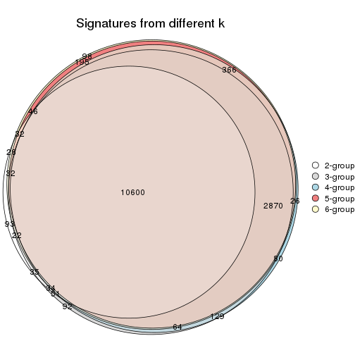
get_signature() returns a data frame invisibly. TO get the list of signatures, the function
call should be assigned to a variable explicitly. In following code, if plot argument is set
to FALSE, no heatmap is plotted while only the differential analysis is performed.
# code only for demonstration
tb = get_signature(res, k = ..., plot = FALSE)
An example of the output of tb is:
#> which_row fdr mean_1 mean_2 scaled_mean_1 scaled_mean_2 km
#> 1 38 0.042760348 8.373488 9.131774 -0.5533452 0.5164555 1
#> 2 40 0.018707592 7.106213 8.469186 -0.6173731 0.5762149 1
#> 3 55 0.019134737 10.221463 11.207825 -0.6159697 0.5749050 1
#> 4 59 0.006059896 5.921854 7.869574 -0.6899429 0.6439467 1
#> 5 60 0.018055526 8.928898 10.211722 -0.6204761 0.5791110 1
#> 6 98 0.009384629 15.714769 14.887706 0.6635654 -0.6193277 2
...
The columns in tb are:
which_row: row indices corresponding to the input matrix.fdr: FDR for the differential test. mean_x: The mean value in group x.scaled_mean_x: The mean value in group x after rows are scaled.km: Row groups if k-means clustering is applied to rows.UMAP plot which shows how samples are separated.
dimension_reduction(res, k = 2, method = "UMAP")

dimension_reduction(res, k = 3, method = "UMAP")
dimension_reduction(res, k = 4, method = "UMAP")
dimension_reduction(res, k = 5, method = "UMAP")
dimension_reduction(res, k = 6, method = "UMAP")
Following heatmap shows how subgroups are split when increasing k:
collect_classes(res)
If matrix rows can be associated to genes, consider to use GO_Enrichment(res,
...) to perform function enrichment for the signature genes.
The object with results only for a single top-value method and a single partition method can be extracted as:
res = res_list["MAD", "pam"]
# you can also extract it by
# res = res_list["MAD:pam"]
A summary of res and all the functions that can be applied to it:
res
#> A 'ConsensusPartition' object with k = 2, 3, 4, 5, 6.
#> On a matrix with 16751 rows and 80 columns.
#> Top rows (1000, 2000, 3000, 4000, 5000) are extracted by 'MAD' method.
#> Subgroups are detected by 'pam' method.
#> Performed in total 1250 partitions by row resampling.
#> Best k for subgroups seems to be 4.
#>
#> Following methods can be applied to this 'ConsensusPartition' object:
#> [1] "cola_report" "collect_classes" "collect_plots"
#> [4] "collect_stats" "colnames" "compare_signatures"
#> [7] "consensus_heatmap" "dimension_reduction" "functional_enrichment"
#> [10] "get_anno_col" "get_anno" "get_classes"
#> [13] "get_consensus" "get_matrix" "get_membership"
#> [16] "get_param" "get_signatures" "get_stats"
#> [19] "is_best_k" "is_stable_k" "membership_heatmap"
#> [22] "ncol" "nrow" "plot_ecdf"
#> [25] "rownames" "select_partition_number" "show"
#> [28] "suggest_best_k" "test_to_known_factors"
collect_plots() function collects all the plots made from res for all k (number of partitions)
into one single page to provide an easy and fast comparison between different k.
collect_plots(res)
The plots are:
k and the heatmap of
predicted classes for each k.k.k.k.All the plots in panels can be made by individual functions and they are plotted later in this section.
select_partition_number() produces several plots showing different
statistics for choosing “optimized” k. There are following statistics:
k;k, the area increased is defined as \(A_k - A_{k-1}\).The detailed explanations of these statistics can be found in the cola vignette.
Generally speaking, lower PAC score, higher mean silhouette score or higher
concordance corresponds to better partition. Rand index and Jaccard index
measure how similar the current partition is compared to partition with k-1.
If they are too similar, we won't accept k is better than k-1.
select_partition_number(res)
The numeric values for all these statistics can be obtained by get_stats().
get_stats(res)
#> k 1-PAC mean_silhouette concordance area_increased Rand Jaccard
#> 2 2 0.495 0.853 0.890 0.4888 0.499 0.499
#> 3 3 0.947 0.955 0.981 0.3157 0.807 0.634
#> 4 4 0.915 0.910 0.963 0.1768 0.860 0.625
#> 5 5 0.868 0.752 0.852 0.0526 0.925 0.710
#> 6 6 0.853 0.806 0.859 0.0385 0.929 0.681
suggest_best_k() suggests the best \(k\) based on these statistics. The rules are as follows:
NA.suggest_best_k(res)
#> [1] 4
#> attr(,"optional")
#> [1] 3
There is also optional best \(k\) = 3 that is worth to check.
Following shows the table of the partitions (You need to click the show/hide
code output link to see it). The membership matrix (columns with name p*)
is inferred by
clue::cl_consensus()
function with the SE method. Basically the value in the membership matrix
represents the probability to belong to a certain group. The finall class
label for an item is determined with the group with highest probability it
belongs to.
In get_classes() function, the entropy is calculated from the membership
matrix and the silhouette score is calculated from the consensus matrix.
cbind(get_classes(res, k = 2), get_membership(res, k = 2))
#> class entropy silhouette p1 p2
#> 71A0AB6A-CFC2-46F6-878C-6052C5B43D22 1 0.5737 0.847 0.864 0.136
#> EFC730EC-6385-4167-A65A-F2A3AAEDA2AC 2 0.3584 0.901 0.068 0.932
#> 14F2F39A-EA0F-4027-8877-FEEEEFF1F085 2 0.0000 0.924 0.000 1.000
#> 98B2A7F8-A7BD-4DA2-8541-950E44D9ACD7 2 0.0000 0.924 0.000 1.000
#> 9166F454-2068-46C2-B2EB-FB3BE4126536 1 0.3584 0.880 0.932 0.068
#> 83B2A0BB-CE24-4DCA-B03A-D20353304365 2 0.0000 0.924 0.000 1.000
#> D3FC3968-B263-4756-BF7F-1941F70B04DA 2 0.5178 0.844 0.116 0.884
#> D357AC5C-C2A0-4CC4-B016-4572400AF117 2 0.2043 0.910 0.032 0.968
#> 1055E951-5B93-4AD7-BE5C-4DF4F6AECEF3 2 0.3733 0.898 0.072 0.928
#> F2995599-3F21-4F33-92BB-7D70A4735938 1 0.3584 0.880 0.932 0.068
#> 3EE533BD-5832-4007-8F1F-439166256EB0 2 0.3584 0.888 0.068 0.932
#> EEC6DA0C-5C49-4EFE-976A-19F432DDAA58 1 0.3584 0.880 0.932 0.068
#> E6E08C1A-4C1B-4572-92DF-DA15BCBADF76 2 0.2236 0.913 0.036 0.964
#> BCFCBBAC-EB95-47EB-9EB0-2CB4AE283A75 1 0.5737 0.847 0.864 0.136
#> 0782D6D0-668B-4B83-8C91-8A35EA3BFF6D 2 0.0000 0.924 0.000 1.000
#> AC78918E-1031-4AE6-B753-B0799171F0F0 1 0.3584 0.880 0.932 0.068
#> 6B497CED-34DA-4CF8-8F8D-696105CB3D5F 1 0.5737 0.847 0.864 0.136
#> 2328D472-583B-43A9-81A4-A21DDEBB5B18 2 0.3431 0.895 0.064 0.936
#> A6930B33-D9B2-4318-807C-4A25EB4CCCDD 2 0.0000 0.924 0.000 1.000
#> C8C48AFD-4D8B-491E-993C-3506DC6DD00F 1 0.4161 0.861 0.916 0.084
#> 093FB845-7905-4064-8E8E-76E3587D8E7C 1 0.5842 0.845 0.860 0.140
#> B216F996-CCD8-4F56-99B1-4EA9769B10B8 1 0.5842 0.845 0.860 0.140
#> CB35DED2-5FEA-43E2-AB42-B6B3A7444B66 1 0.8813 0.639 0.700 0.300
#> BA016F57-F58F-4A66-B85A-0B0F911EEA65 2 0.3431 0.903 0.064 0.936
#> 519DBD5F-66C0-4CEE-905C-799C855D28FB 1 0.3584 0.880 0.932 0.068
#> F5B9B89B-6821-43EE-BCFD-623689D03AF9 2 0.0000 0.924 0.000 1.000
#> 55A39F92-CC88-4A2F-A7D3-7A59DEBEBB42 2 0.3584 0.888 0.068 0.932
#> 3DBBDEDA-F9FC-40DC-804F-45429EA47ED4 2 0.9427 0.468 0.360 0.640
#> BB948BE8-7D48-4AEB-A404-C27A79655D7E 1 0.5519 0.850 0.872 0.128
#> 9506723F-9193-4D8E-BD97-8A0062AB2F9C 1 0.5737 0.847 0.864 0.136
#> D0758A7A-9D0E-4EA4-8EE9-7143B398647D 1 0.5842 0.845 0.860 0.140
#> F400FD4D-72D7-4933-B145-64B7EE245FFC 2 0.0376 0.924 0.004 0.996
#> 3F87E9ED-3719-48E1-8B69-E352A03E982D 1 0.9977 0.156 0.528 0.472
#> D6365FEB-CC12-4337-BF8C-66236A585B5D 2 0.0000 0.924 0.000 1.000
#> A4168812-C38E-4F15-9AF6-79F256279E72 1 0.5294 0.852 0.880 0.120
#> DB676839-02AA-42A7-962F-89D6AD892008 1 0.3584 0.880 0.932 0.068
#> 198D8E89-51FD-41DE-AD11-FB2F2FE49908 2 0.0376 0.924 0.004 0.996
#> 2BADCD01-27E8-49EC-B707-4FAE3D3CB489 1 0.0000 0.861 1.000 0.000
#> ABBD6EFE-079B-4BE3-95AB-36AF9197D684 2 0.0376 0.924 0.004 0.996
#> 39D66B95-61C7-4B76-8E81-1F9F98024B69 1 0.3584 0.880 0.932 0.068
#> 7A920210-CF3D-4458-B6D5-D9B2ADACA469 1 0.3584 0.880 0.932 0.068
#> 0CE61CDC-3257-4F03-951B-CC2CFCF675AE 2 0.1414 0.920 0.020 0.980
#> 7338D61C-77D6-4095-8847-7FD9967B7646 2 0.8813 0.633 0.300 0.700
#> 0D36FAD5-BA81-4FED-9E2A-DB016F2EF18C 1 0.3584 0.880 0.932 0.068
#> 43CD31CD-5FAE-418A-B235-49E54560590D 2 0.0000 0.924 0.000 1.000
#> B6DD72B0-EEFA-41A9-B71D-22DE1343CD32 1 0.5842 0.845 0.860 0.140
#> 2B729CD9-71A5-4336-ACBA-922A30AF4949 2 0.6148 0.818 0.152 0.848
#> B76DB955-69B7-4D05-8166-2569ED44628C 1 0.3584 0.880 0.932 0.068
#> 09CBEE39-7141-4228-AFD3-4714E32A1FB5 2 0.3584 0.888 0.068 0.932
#> AC1700D5-72E7-4C7F-A288-869DFC229252 1 0.0000 0.861 1.000 0.000
#> 535A5E8E-8478-477F-87FF-ED6742AA5473 2 0.0000 0.924 0.000 1.000
#> CFB8573C-9F36-4715-B6F1-6E5B543168A8 2 0.8661 0.651 0.288 0.712
#> 47A45491-6023-44BF-ABC2-9A470F7FC1F7 2 0.3733 0.899 0.072 0.928
#> 437C7AA7-98C0-48C7-97DA-86FF44D69B87 2 0.1633 0.918 0.024 0.976
#> 649ADE7E-6C06-4AB6-8E97-D8C2AAF79A7E 2 0.6247 0.810 0.156 0.844
#> DEA60B47-AD6A-4EBB-9402-6F97E9640E4E 2 0.0376 0.924 0.004 0.996
#> 76C574FF-26BF-49CD-9BCA-7BDDCBD06D5D 2 0.0000 0.924 0.000 1.000
#> 8B6E1F9B-1E90-4333-8E0C-EEDFF25D15C0 2 0.7299 0.763 0.204 0.796
#> A2473EE7-72D6-4D32-9DF7-5D4E444A6715 2 0.3879 0.896 0.076 0.924
#> E226C45E-5287-4D0F-A34B-CE251FA293CB 1 0.3584 0.880 0.932 0.068
#> A2C71C07-AF0C-4016-808C-DFEF458C91C7 1 0.3584 0.880 0.932 0.068
#> DA00D60F-4CF1-4003-BAF5-896EE2BEE2D4 2 0.3733 0.898 0.072 0.928
#> 1C17B65F-1930-4CF3-99B6-5D3AA9E99188 2 0.4022 0.892 0.080 0.920
#> B837D582-A0D3-46BE-8ECA-883F5396AE88 1 0.6247 0.856 0.844 0.156
#> EF1A102F-C206-4874-8F27-0BF069A613B8 2 0.1843 0.916 0.028 0.972
#> BC761676-F64C-476A-8D9B-BD3E6149B2CD 2 0.3584 0.888 0.068 0.932
#> D8351E5C-DC1D-4B4D-83E6-735B2750D944 2 0.0000 0.924 0.000 1.000
#> 59F65F61-03D0-4909-99BD-4CCB53A088A5 1 0.9129 0.598 0.672 0.328
#> EFFCCF33-60E1-4550-B13C-14C54ADCF479 2 0.7299 0.763 0.204 0.796
#> C45EB423-CC14-4BDB-A0B4-447E5DB6DA9C 1 0.3584 0.880 0.932 0.068
#> D34B0BC6-9142-48AE-A113-5923192644A0 1 0.9129 0.598 0.672 0.328
#> 634672A6-C68E-479F-AAB5-CBAFF7758EA4 1 0.3584 0.880 0.932 0.068
#> 06DAE086-D960-4156-9DC8-D126338E2F29 2 0.2236 0.913 0.036 0.964
#> 3353F579-77CA-4D0E-B794-37DE467CC065 1 0.3584 0.880 0.932 0.068
#> 976507F2-192B-4095-920A-3014889CD617 1 0.3584 0.880 0.932 0.068
#> 3FFF89D9-02F5-4D49-8631-099562BF99C7 2 0.0000 0.924 0.000 1.000
#> 8BC2213D-99DA-44E0-826F-EBF211EECFBF 1 0.3584 0.880 0.932 0.068
#> A7A16BF7-5E60-4E50-BE04-542EFC4DB472 2 0.3584 0.888 0.068 0.932
#> E25C9578-9493-466E-A2CD-546DEB076B2D 2 0.3431 0.891 0.064 0.936
#> EA35E230-DE50-45AB-A737-D5C430652A90 1 0.5737 0.847 0.864 0.136
cbind(get_classes(res, k = 3), get_membership(res, k = 3))
#> class entropy silhouette p1 p2 p3
#> 71A0AB6A-CFC2-46F6-878C-6052C5B43D22 1 0.000 0.979 1.000 0.000 0.000
#> EFC730EC-6385-4167-A65A-F2A3AAEDA2AC 2 0.327 0.863 0.116 0.884 0.000
#> 14F2F39A-EA0F-4027-8877-FEEEEFF1F085 2 0.000 0.969 0.000 1.000 0.000
#> 98B2A7F8-A7BD-4DA2-8541-950E44D9ACD7 2 0.000 0.969 0.000 1.000 0.000
#> 9166F454-2068-46C2-B2EB-FB3BE4126536 3 0.000 1.000 0.000 0.000 1.000
#> 83B2A0BB-CE24-4DCA-B03A-D20353304365 2 0.000 0.969 0.000 1.000 0.000
#> D3FC3968-B263-4756-BF7F-1941F70B04DA 2 0.000 0.969 0.000 1.000 0.000
#> D357AC5C-C2A0-4CC4-B016-4572400AF117 2 0.000 0.969 0.000 1.000 0.000
#> 1055E951-5B93-4AD7-BE5C-4DF4F6AECEF3 2 0.000 0.969 0.000 1.000 0.000
#> F2995599-3F21-4F33-92BB-7D70A4735938 3 0.000 1.000 0.000 0.000 1.000
#> 3EE533BD-5832-4007-8F1F-439166256EB0 2 0.593 0.459 0.356 0.644 0.000
#> EEC6DA0C-5C49-4EFE-976A-19F432DDAA58 3 0.000 1.000 0.000 0.000 1.000
#> E6E08C1A-4C1B-4572-92DF-DA15BCBADF76 2 0.000 0.969 0.000 1.000 0.000
#> BCFCBBAC-EB95-47EB-9EB0-2CB4AE283A75 1 0.000 0.979 1.000 0.000 0.000
#> 0782D6D0-668B-4B83-8C91-8A35EA3BFF6D 2 0.000 0.969 0.000 1.000 0.000
#> AC78918E-1031-4AE6-B753-B0799171F0F0 3 0.000 1.000 0.000 0.000 1.000
#> 6B497CED-34DA-4CF8-8F8D-696105CB3D5F 1 0.000 0.979 1.000 0.000 0.000
#> 2328D472-583B-43A9-81A4-A21DDEBB5B18 2 0.000 0.969 0.000 1.000 0.000
#> A6930B33-D9B2-4318-807C-4A25EB4CCCDD 2 0.000 0.969 0.000 1.000 0.000
#> C8C48AFD-4D8B-491E-993C-3506DC6DD00F 1 0.000 0.979 1.000 0.000 0.000
#> 093FB845-7905-4064-8E8E-76E3587D8E7C 1 0.000 0.979 1.000 0.000 0.000
#> B216F996-CCD8-4F56-99B1-4EA9769B10B8 1 0.000 0.979 1.000 0.000 0.000
#> CB35DED2-5FEA-43E2-AB42-B6B3A7444B66 1 0.000 0.979 1.000 0.000 0.000
#> BA016F57-F58F-4A66-B85A-0B0F911EEA65 2 0.000 0.969 0.000 1.000 0.000
#> 519DBD5F-66C0-4CEE-905C-799C855D28FB 3 0.000 1.000 0.000 0.000 1.000
#> F5B9B89B-6821-43EE-BCFD-623689D03AF9 2 0.000 0.969 0.000 1.000 0.000
#> 55A39F92-CC88-4A2F-A7D3-7A59DEBEBB42 1 0.000 0.979 1.000 0.000 0.000
#> 3DBBDEDA-F9FC-40DC-804F-45429EA47ED4 1 0.000 0.979 1.000 0.000 0.000
#> BB948BE8-7D48-4AEB-A404-C27A79655D7E 1 0.000 0.979 1.000 0.000 0.000
#> 9506723F-9193-4D8E-BD97-8A0062AB2F9C 1 0.000 0.979 1.000 0.000 0.000
#> D0758A7A-9D0E-4EA4-8EE9-7143B398647D 1 0.000 0.979 1.000 0.000 0.000
#> F400FD4D-72D7-4933-B145-64B7EE245FFC 2 0.000 0.969 0.000 1.000 0.000
#> 3F87E9ED-3719-48E1-8B69-E352A03E982D 1 0.000 0.979 1.000 0.000 0.000
#> D6365FEB-CC12-4337-BF8C-66236A585B5D 2 0.000 0.969 0.000 1.000 0.000
#> A4168812-C38E-4F15-9AF6-79F256279E72 1 0.000 0.979 1.000 0.000 0.000
#> DB676839-02AA-42A7-962F-89D6AD892008 3 0.000 1.000 0.000 0.000 1.000
#> 198D8E89-51FD-41DE-AD11-FB2F2FE49908 2 0.000 0.969 0.000 1.000 0.000
#> 2BADCD01-27E8-49EC-B707-4FAE3D3CB489 3 0.000 1.000 0.000 0.000 1.000
#> ABBD6EFE-079B-4BE3-95AB-36AF9197D684 2 0.000 0.969 0.000 1.000 0.000
#> 39D66B95-61C7-4B76-8E81-1F9F98024B69 3 0.000 1.000 0.000 0.000 1.000
#> 7A920210-CF3D-4458-B6D5-D9B2ADACA469 3 0.000 1.000 0.000 0.000 1.000
#> 0CE61CDC-3257-4F03-951B-CC2CFCF675AE 2 0.000 0.969 0.000 1.000 0.000
#> 7338D61C-77D6-4095-8847-7FD9967B7646 2 0.000 0.969 0.000 1.000 0.000
#> 0D36FAD5-BA81-4FED-9E2A-DB016F2EF18C 3 0.000 1.000 0.000 0.000 1.000
#> 43CD31CD-5FAE-418A-B235-49E54560590D 2 0.000 0.969 0.000 1.000 0.000
#> B6DD72B0-EEFA-41A9-B71D-22DE1343CD32 1 0.000 0.979 1.000 0.000 0.000
#> 2B729CD9-71A5-4336-ACBA-922A30AF4949 2 0.000 0.969 0.000 1.000 0.000
#> B76DB955-69B7-4D05-8166-2569ED44628C 3 0.000 1.000 0.000 0.000 1.000
#> 09CBEE39-7141-4228-AFD3-4714E32A1FB5 2 0.455 0.750 0.200 0.800 0.000
#> AC1700D5-72E7-4C7F-A288-869DFC229252 1 0.565 0.552 0.688 0.000 0.312
#> 535A5E8E-8478-477F-87FF-ED6742AA5473 2 0.000 0.969 0.000 1.000 0.000
#> CFB8573C-9F36-4715-B6F1-6E5B543168A8 2 0.000 0.969 0.000 1.000 0.000
#> 47A45491-6023-44BF-ABC2-9A470F7FC1F7 2 0.000 0.969 0.000 1.000 0.000
#> 437C7AA7-98C0-48C7-97DA-86FF44D69B87 2 0.000 0.969 0.000 1.000 0.000
#> 649ADE7E-6C06-4AB6-8E97-D8C2AAF79A7E 2 0.571 0.550 0.320 0.680 0.000
#> DEA60B47-AD6A-4EBB-9402-6F97E9640E4E 2 0.000 0.969 0.000 1.000 0.000
#> 76C574FF-26BF-49CD-9BCA-7BDDCBD06D5D 2 0.000 0.969 0.000 1.000 0.000
#> 8B6E1F9B-1E90-4333-8E0C-EEDFF25D15C0 1 0.000 0.979 1.000 0.000 0.000
#> A2473EE7-72D6-4D32-9DF7-5D4E444A6715 2 0.000 0.969 0.000 1.000 0.000
#> E226C45E-5287-4D0F-A34B-CE251FA293CB 3 0.000 1.000 0.000 0.000 1.000
#> A2C71C07-AF0C-4016-808C-DFEF458C91C7 3 0.000 1.000 0.000 0.000 1.000
#> DA00D60F-4CF1-4003-BAF5-896EE2BEE2D4 2 0.000 0.969 0.000 1.000 0.000
#> 1C17B65F-1930-4CF3-99B6-5D3AA9E99188 2 0.000 0.969 0.000 1.000 0.000
#> B837D582-A0D3-46BE-8ECA-883F5396AE88 1 0.355 0.841 0.868 0.000 0.132
#> EF1A102F-C206-4874-8F27-0BF069A613B8 2 0.334 0.859 0.120 0.880 0.000
#> BC761676-F64C-476A-8D9B-BD3E6149B2CD 1 0.000 0.979 1.000 0.000 0.000
#> D8351E5C-DC1D-4B4D-83E6-735B2750D944 2 0.000 0.969 0.000 1.000 0.000
#> 59F65F61-03D0-4909-99BD-4CCB53A088A5 1 0.000 0.979 1.000 0.000 0.000
#> EFFCCF33-60E1-4550-B13C-14C54ADCF479 1 0.000 0.979 1.000 0.000 0.000
#> C45EB423-CC14-4BDB-A0B4-447E5DB6DA9C 3 0.000 1.000 0.000 0.000 1.000
#> D34B0BC6-9142-48AE-A113-5923192644A0 1 0.000 0.979 1.000 0.000 0.000
#> 634672A6-C68E-479F-AAB5-CBAFF7758EA4 3 0.000 1.000 0.000 0.000 1.000
#> 06DAE086-D960-4156-9DC8-D126338E2F29 2 0.000 0.969 0.000 1.000 0.000
#> 3353F579-77CA-4D0E-B794-37DE467CC065 3 0.000 1.000 0.000 0.000 1.000
#> 976507F2-192B-4095-920A-3014889CD617 3 0.000 1.000 0.000 0.000 1.000
#> 3FFF89D9-02F5-4D49-8631-099562BF99C7 2 0.000 0.969 0.000 1.000 0.000
#> 8BC2213D-99DA-44E0-826F-EBF211EECFBF 3 0.000 1.000 0.000 0.000 1.000
#> A7A16BF7-5E60-4E50-BE04-542EFC4DB472 2 0.000 0.969 0.000 1.000 0.000
#> E25C9578-9493-466E-A2CD-546DEB076B2D 2 0.000 0.969 0.000 1.000 0.000
#> EA35E230-DE50-45AB-A737-D5C430652A90 1 0.000 0.979 1.000 0.000 0.000
cbind(get_classes(res, k = 4), get_membership(res, k = 4))
#> class entropy silhouette p1 p2 p3 p4
#> 71A0AB6A-CFC2-46F6-878C-6052C5B43D22 1 0.0000 0.972 1.000 0.000 0.000 0.000
#> EFC730EC-6385-4167-A65A-F2A3AAEDA2AC 4 0.2589 0.828 0.116 0.000 0.000 0.884
#> 14F2F39A-EA0F-4027-8877-FEEEEFF1F085 2 0.0000 0.937 0.000 1.000 0.000 0.000
#> 98B2A7F8-A7BD-4DA2-8541-950E44D9ACD7 2 0.0000 0.937 0.000 1.000 0.000 0.000
#> 9166F454-2068-46C2-B2EB-FB3BE4126536 3 0.0000 0.998 0.000 0.000 1.000 0.000
#> 83B2A0BB-CE24-4DCA-B03A-D20353304365 2 0.0469 0.928 0.000 0.988 0.000 0.012
#> D3FC3968-B263-4756-BF7F-1941F70B04DA 4 0.0000 0.930 0.000 0.000 0.000 1.000
#> D357AC5C-C2A0-4CC4-B016-4572400AF117 2 0.0000 0.937 0.000 1.000 0.000 0.000
#> 1055E951-5B93-4AD7-BE5C-4DF4F6AECEF3 4 0.0000 0.930 0.000 0.000 0.000 1.000
#> F2995599-3F21-4F33-92BB-7D70A4735938 3 0.0000 0.998 0.000 0.000 1.000 0.000
#> 3EE533BD-5832-4007-8F1F-439166256EB0 2 0.0000 0.937 0.000 1.000 0.000 0.000
#> EEC6DA0C-5C49-4EFE-976A-19F432DDAA58 3 0.0000 0.998 0.000 0.000 1.000 0.000
#> E6E08C1A-4C1B-4572-92DF-DA15BCBADF76 4 0.0000 0.930 0.000 0.000 0.000 1.000
#> BCFCBBAC-EB95-47EB-9EB0-2CB4AE283A75 1 0.0000 0.972 1.000 0.000 0.000 0.000
#> 0782D6D0-668B-4B83-8C91-8A35EA3BFF6D 2 0.0000 0.937 0.000 1.000 0.000 0.000
#> AC78918E-1031-4AE6-B753-B0799171F0F0 3 0.0000 0.998 0.000 0.000 1.000 0.000
#> 6B497CED-34DA-4CF8-8F8D-696105CB3D5F 1 0.0000 0.972 1.000 0.000 0.000 0.000
#> 2328D472-583B-43A9-81A4-A21DDEBB5B18 4 0.4843 0.371 0.000 0.396 0.000 0.604
#> A6930B33-D9B2-4318-807C-4A25EB4CCCDD 2 0.0000 0.937 0.000 1.000 0.000 0.000
#> C8C48AFD-4D8B-491E-993C-3506DC6DD00F 1 0.0000 0.972 1.000 0.000 0.000 0.000
#> 093FB845-7905-4064-8E8E-76E3587D8E7C 1 0.0000 0.972 1.000 0.000 0.000 0.000
#> B216F996-CCD8-4F56-99B1-4EA9769B10B8 1 0.0000 0.972 1.000 0.000 0.000 0.000
#> CB35DED2-5FEA-43E2-AB42-B6B3A7444B66 1 0.0000 0.972 1.000 0.000 0.000 0.000
#> BA016F57-F58F-4A66-B85A-0B0F911EEA65 4 0.0000 0.930 0.000 0.000 0.000 1.000
#> 519DBD5F-66C0-4CEE-905C-799C855D28FB 3 0.0000 0.998 0.000 0.000 1.000 0.000
#> F5B9B89B-6821-43EE-BCFD-623689D03AF9 2 0.0000 0.937 0.000 1.000 0.000 0.000
#> 55A39F92-CC88-4A2F-A7D3-7A59DEBEBB42 1 0.0000 0.972 1.000 0.000 0.000 0.000
#> 3DBBDEDA-F9FC-40DC-804F-45429EA47ED4 1 0.1474 0.920 0.948 0.052 0.000 0.000
#> BB948BE8-7D48-4AEB-A404-C27A79655D7E 1 0.0000 0.972 1.000 0.000 0.000 0.000
#> 9506723F-9193-4D8E-BD97-8A0062AB2F9C 1 0.0000 0.972 1.000 0.000 0.000 0.000
#> D0758A7A-9D0E-4EA4-8EE9-7143B398647D 1 0.0000 0.972 1.000 0.000 0.000 0.000
#> F400FD4D-72D7-4933-B145-64B7EE245FFC 4 0.0000 0.930 0.000 0.000 0.000 1.000
#> 3F87E9ED-3719-48E1-8B69-E352A03E982D 1 0.0000 0.972 1.000 0.000 0.000 0.000
#> D6365FEB-CC12-4337-BF8C-66236A585B5D 2 0.3486 0.718 0.000 0.812 0.000 0.188
#> A4168812-C38E-4F15-9AF6-79F256279E72 1 0.0000 0.972 1.000 0.000 0.000 0.000
#> DB676839-02AA-42A7-962F-89D6AD892008 3 0.0000 0.998 0.000 0.000 1.000 0.000
#> 198D8E89-51FD-41DE-AD11-FB2F2FE49908 4 0.0000 0.930 0.000 0.000 0.000 1.000
#> 2BADCD01-27E8-49EC-B707-4FAE3D3CB489 3 0.0000 0.998 0.000 0.000 1.000 0.000
#> ABBD6EFE-079B-4BE3-95AB-36AF9197D684 4 0.4843 0.371 0.000 0.396 0.000 0.604
#> 39D66B95-61C7-4B76-8E81-1F9F98024B69 3 0.0000 0.998 0.000 0.000 1.000 0.000
#> 7A920210-CF3D-4458-B6D5-D9B2ADACA469 3 0.0000 0.998 0.000 0.000 1.000 0.000
#> 0CE61CDC-3257-4F03-951B-CC2CFCF675AE 4 0.0000 0.930 0.000 0.000 0.000 1.000
#> 7338D61C-77D6-4095-8847-7FD9967B7646 4 0.0000 0.930 0.000 0.000 0.000 1.000
#> 0D36FAD5-BA81-4FED-9E2A-DB016F2EF18C 3 0.0000 0.998 0.000 0.000 1.000 0.000
#> 43CD31CD-5FAE-418A-B235-49E54560590D 2 0.0000 0.937 0.000 1.000 0.000 0.000
#> B6DD72B0-EEFA-41A9-B71D-22DE1343CD32 1 0.0000 0.972 1.000 0.000 0.000 0.000
#> 2B729CD9-71A5-4336-ACBA-922A30AF4949 4 0.0000 0.930 0.000 0.000 0.000 1.000
#> B76DB955-69B7-4D05-8166-2569ED44628C 3 0.0000 0.998 0.000 0.000 1.000 0.000
#> 09CBEE39-7141-4228-AFD3-4714E32A1FB5 2 0.0000 0.937 0.000 1.000 0.000 0.000
#> AC1700D5-72E7-4C7F-A288-869DFC229252 1 0.4477 0.552 0.688 0.000 0.312 0.000
#> 535A5E8E-8478-477F-87FF-ED6742AA5473 2 0.0000 0.937 0.000 1.000 0.000 0.000
#> CFB8573C-9F36-4715-B6F1-6E5B543168A8 4 0.0000 0.930 0.000 0.000 0.000 1.000
#> 47A45491-6023-44BF-ABC2-9A470F7FC1F7 4 0.0000 0.930 0.000 0.000 0.000 1.000
#> 437C7AA7-98C0-48C7-97DA-86FF44D69B87 4 0.0000 0.930 0.000 0.000 0.000 1.000
#> 649ADE7E-6C06-4AB6-8E97-D8C2AAF79A7E 2 0.7004 0.473 0.220 0.580 0.000 0.200
#> DEA60B47-AD6A-4EBB-9402-6F97E9640E4E 4 0.0000 0.930 0.000 0.000 0.000 1.000
#> 76C574FF-26BF-49CD-9BCA-7BDDCBD06D5D 2 0.0000 0.937 0.000 1.000 0.000 0.000
#> 8B6E1F9B-1E90-4333-8E0C-EEDFF25D15C0 1 0.0000 0.972 1.000 0.000 0.000 0.000
#> A2473EE7-72D6-4D32-9DF7-5D4E444A6715 4 0.0000 0.930 0.000 0.000 0.000 1.000
#> E226C45E-5287-4D0F-A34B-CE251FA293CB 3 0.0000 0.998 0.000 0.000 1.000 0.000
#> A2C71C07-AF0C-4016-808C-DFEF458C91C7 3 0.0000 0.998 0.000 0.000 1.000 0.000
#> DA00D60F-4CF1-4003-BAF5-896EE2BEE2D4 4 0.0000 0.930 0.000 0.000 0.000 1.000
#> 1C17B65F-1930-4CF3-99B6-5D3AA9E99188 4 0.0000 0.930 0.000 0.000 0.000 1.000
#> B837D582-A0D3-46BE-8ECA-883F5396AE88 1 0.3895 0.814 0.832 0.000 0.132 0.036
#> EF1A102F-C206-4874-8F27-0BF069A613B8 4 0.2647 0.824 0.120 0.000 0.000 0.880
#> BC761676-F64C-476A-8D9B-BD3E6149B2CD 2 0.0000 0.937 0.000 1.000 0.000 0.000
#> D8351E5C-DC1D-4B4D-83E6-735B2750D944 4 0.4804 0.399 0.000 0.384 0.000 0.616
#> 59F65F61-03D0-4909-99BD-4CCB53A088A5 1 0.0000 0.972 1.000 0.000 0.000 0.000
#> EFFCCF33-60E1-4550-B13C-14C54ADCF479 2 0.4843 0.299 0.396 0.604 0.000 0.000
#> C45EB423-CC14-4BDB-A0B4-447E5DB6DA9C 3 0.0000 0.998 0.000 0.000 1.000 0.000
#> D34B0BC6-9142-48AE-A113-5923192644A0 1 0.0000 0.972 1.000 0.000 0.000 0.000
#> 634672A6-C68E-479F-AAB5-CBAFF7758EA4 3 0.0000 0.998 0.000 0.000 1.000 0.000
#> 06DAE086-D960-4156-9DC8-D126338E2F29 4 0.0000 0.930 0.000 0.000 0.000 1.000
#> 3353F579-77CA-4D0E-B794-37DE467CC065 3 0.0921 0.969 0.000 0.000 0.972 0.028
#> 976507F2-192B-4095-920A-3014889CD617 3 0.0000 0.998 0.000 0.000 1.000 0.000
#> 3FFF89D9-02F5-4D49-8631-099562BF99C7 4 0.0000 0.930 0.000 0.000 0.000 1.000
#> 8BC2213D-99DA-44E0-826F-EBF211EECFBF 3 0.0000 0.998 0.000 0.000 1.000 0.000
#> A7A16BF7-5E60-4E50-BE04-542EFC4DB472 2 0.0000 0.937 0.000 1.000 0.000 0.000
#> E25C9578-9493-466E-A2CD-546DEB076B2D 2 0.0000 0.937 0.000 1.000 0.000 0.000
#> EA35E230-DE50-45AB-A737-D5C430652A90 1 0.0000 0.972 1.000 0.000 0.000 0.000
cbind(get_classes(res, k = 5), get_membership(res, k = 5))
#> class entropy silhouette p1 p2 p3 p4 p5
#> 71A0AB6A-CFC2-46F6-878C-6052C5B43D22 1 0.0000 0.8504 1.000 0.000 0.000 0.000 0.000
#> EFC730EC-6385-4167-A65A-F2A3AAEDA2AC 4 0.0000 0.7436 0.000 0.000 0.000 1.000 0.000
#> 14F2F39A-EA0F-4027-8877-FEEEEFF1F085 2 0.0609 0.8785 0.000 0.980 0.000 0.000 0.020
#> 98B2A7F8-A7BD-4DA2-8541-950E44D9ACD7 2 0.1544 0.8595 0.000 0.932 0.000 0.000 0.068
#> 9166F454-2068-46C2-B2EB-FB3BE4126536 3 0.0000 0.9980 0.000 0.000 1.000 0.000 0.000
#> 83B2A0BB-CE24-4DCA-B03A-D20353304365 2 0.1478 0.8615 0.000 0.936 0.000 0.000 0.064
#> D3FC3968-B263-4756-BF7F-1941F70B04DA 5 0.4300 0.6829 0.000 0.000 0.000 0.476 0.524
#> D357AC5C-C2A0-4CC4-B016-4572400AF117 2 0.1478 0.8615 0.000 0.936 0.000 0.000 0.064
#> 1055E951-5B93-4AD7-BE5C-4DF4F6AECEF3 4 0.0000 0.7436 0.000 0.000 0.000 1.000 0.000
#> F2995599-3F21-4F33-92BB-7D70A4735938 3 0.0000 0.9980 0.000 0.000 1.000 0.000 0.000
#> 3EE533BD-5832-4007-8F1F-439166256EB0 2 0.3999 0.5638 0.000 0.656 0.000 0.000 0.344
#> EEC6DA0C-5C49-4EFE-976A-19F432DDAA58 3 0.0000 0.9980 0.000 0.000 1.000 0.000 0.000
#> E6E08C1A-4C1B-4572-92DF-DA15BCBADF76 4 0.1410 0.6771 0.000 0.000 0.000 0.940 0.060
#> BCFCBBAC-EB95-47EB-9EB0-2CB4AE283A75 1 0.4161 0.6813 0.608 0.000 0.000 0.000 0.392
#> 0782D6D0-668B-4B83-8C91-8A35EA3BFF6D 2 0.0609 0.8785 0.000 0.980 0.000 0.000 0.020
#> AC78918E-1031-4AE6-B753-B0799171F0F0 3 0.0000 0.9980 0.000 0.000 1.000 0.000 0.000
#> 6B497CED-34DA-4CF8-8F8D-696105CB3D5F 1 0.0000 0.8504 1.000 0.000 0.000 0.000 0.000
#> 2328D472-583B-43A9-81A4-A21DDEBB5B18 2 0.6102 -0.1387 0.000 0.440 0.000 0.436 0.124
#> A6930B33-D9B2-4318-807C-4A25EB4CCCDD 2 0.0609 0.8785 0.000 0.980 0.000 0.000 0.020
#> C8C48AFD-4D8B-491E-993C-3506DC6DD00F 1 0.0000 0.8504 1.000 0.000 0.000 0.000 0.000
#> 093FB845-7905-4064-8E8E-76E3587D8E7C 1 0.4161 0.6813 0.608 0.000 0.000 0.000 0.392
#> B216F996-CCD8-4F56-99B1-4EA9769B10B8 1 0.0000 0.8504 1.000 0.000 0.000 0.000 0.000
#> CB35DED2-5FEA-43E2-AB42-B6B3A7444B66 1 0.3966 0.7108 0.664 0.000 0.000 0.000 0.336
#> BA016F57-F58F-4A66-B85A-0B0F911EEA65 4 0.0000 0.7436 0.000 0.000 0.000 1.000 0.000
#> 519DBD5F-66C0-4CEE-905C-799C855D28FB 3 0.0000 0.9980 0.000 0.000 1.000 0.000 0.000
#> F5B9B89B-6821-43EE-BCFD-623689D03AF9 2 0.0609 0.8785 0.000 0.980 0.000 0.000 0.020
#> 55A39F92-CC88-4A2F-A7D3-7A59DEBEBB42 1 0.2329 0.8121 0.876 0.000 0.000 0.000 0.124
#> 3DBBDEDA-F9FC-40DC-804F-45429EA47ED4 1 0.1270 0.8240 0.948 0.052 0.000 0.000 0.000
#> BB948BE8-7D48-4AEB-A404-C27A79655D7E 1 0.0000 0.8504 1.000 0.000 0.000 0.000 0.000
#> 9506723F-9193-4D8E-BD97-8A0062AB2F9C 1 0.0880 0.8442 0.968 0.000 0.000 0.000 0.032
#> D0758A7A-9D0E-4EA4-8EE9-7143B398647D 1 0.0000 0.8504 1.000 0.000 0.000 0.000 0.000
#> F400FD4D-72D7-4933-B145-64B7EE245FFC 5 0.4300 0.6829 0.000 0.000 0.000 0.476 0.524
#> 3F87E9ED-3719-48E1-8B69-E352A03E982D 1 0.4161 0.6813 0.608 0.000 0.000 0.000 0.392
#> D6365FEB-CC12-4337-BF8C-66236A585B5D 4 0.5505 0.0347 0.000 0.452 0.000 0.484 0.064
#> A4168812-C38E-4F15-9AF6-79F256279E72 1 0.0000 0.8504 1.000 0.000 0.000 0.000 0.000
#> DB676839-02AA-42A7-962F-89D6AD892008 3 0.0000 0.9980 0.000 0.000 1.000 0.000 0.000
#> 198D8E89-51FD-41DE-AD11-FB2F2FE49908 5 0.4300 0.6829 0.000 0.000 0.000 0.476 0.524
#> 2BADCD01-27E8-49EC-B707-4FAE3D3CB489 3 0.0000 0.9980 0.000 0.000 1.000 0.000 0.000
#> ABBD6EFE-079B-4BE3-95AB-36AF9197D684 5 0.5393 -0.1433 0.000 0.440 0.000 0.056 0.504
#> 39D66B95-61C7-4B76-8E81-1F9F98024B69 3 0.0000 0.9980 0.000 0.000 1.000 0.000 0.000
#> 7A920210-CF3D-4458-B6D5-D9B2ADACA469 3 0.0000 0.9980 0.000 0.000 1.000 0.000 0.000
#> 0CE61CDC-3257-4F03-951B-CC2CFCF675AE 4 0.1792 0.6383 0.000 0.000 0.000 0.916 0.084
#> 7338D61C-77D6-4095-8847-7FD9967B7646 4 0.0000 0.7436 0.000 0.000 0.000 1.000 0.000
#> 0D36FAD5-BA81-4FED-9E2A-DB016F2EF18C 3 0.0000 0.9980 0.000 0.000 1.000 0.000 0.000
#> 43CD31CD-5FAE-418A-B235-49E54560590D 2 0.0000 0.8771 0.000 1.000 0.000 0.000 0.000
#> B6DD72B0-EEFA-41A9-B71D-22DE1343CD32 1 0.0000 0.8504 1.000 0.000 0.000 0.000 0.000
#> 2B729CD9-71A5-4336-ACBA-922A30AF4949 4 0.0404 0.7334 0.000 0.000 0.000 0.988 0.012
#> B76DB955-69B7-4D05-8166-2569ED44628C 3 0.0000 0.9980 0.000 0.000 1.000 0.000 0.000
#> 09CBEE39-7141-4228-AFD3-4714E32A1FB5 2 0.1478 0.8615 0.000 0.936 0.000 0.000 0.064
#> AC1700D5-72E7-4C7F-A288-869DFC229252 1 0.3857 0.4966 0.688 0.000 0.312 0.000 0.000
#> 535A5E8E-8478-477F-87FF-ED6742AA5473 2 0.0000 0.8771 0.000 1.000 0.000 0.000 0.000
#> CFB8573C-9F36-4715-B6F1-6E5B543168A8 4 0.0000 0.7436 0.000 0.000 0.000 1.000 0.000
#> 47A45491-6023-44BF-ABC2-9A470F7FC1F7 4 0.0000 0.7436 0.000 0.000 0.000 1.000 0.000
#> 437C7AA7-98C0-48C7-97DA-86FF44D69B87 5 0.4300 0.6829 0.000 0.000 0.000 0.476 0.524
#> 649ADE7E-6C06-4AB6-8E97-D8C2AAF79A7E 4 0.5942 0.0346 0.008 0.440 0.000 0.472 0.080
#> DEA60B47-AD6A-4EBB-9402-6F97E9640E4E 5 0.4300 0.6829 0.000 0.000 0.000 0.476 0.524
#> 76C574FF-26BF-49CD-9BCA-7BDDCBD06D5D 2 0.0609 0.8785 0.000 0.980 0.000 0.000 0.020
#> 8B6E1F9B-1E90-4333-8E0C-EEDFF25D15C0 5 0.6746 -0.3673 0.344 0.000 0.000 0.264 0.392
#> A2473EE7-72D6-4D32-9DF7-5D4E444A6715 4 0.0000 0.7436 0.000 0.000 0.000 1.000 0.000
#> E226C45E-5287-4D0F-A34B-CE251FA293CB 3 0.0000 0.9980 0.000 0.000 1.000 0.000 0.000
#> A2C71C07-AF0C-4016-808C-DFEF458C91C7 3 0.0000 0.9980 0.000 0.000 1.000 0.000 0.000
#> DA00D60F-4CF1-4003-BAF5-896EE2BEE2D4 4 0.0000 0.7436 0.000 0.000 0.000 1.000 0.000
#> 1C17B65F-1930-4CF3-99B6-5D3AA9E99188 5 0.4300 0.6829 0.000 0.000 0.000 0.476 0.524
#> B837D582-A0D3-46BE-8ECA-883F5396AE88 1 0.6749 0.5782 0.528 0.000 0.132 0.036 0.304
#> EF1A102F-C206-4874-8F27-0BF069A613B8 4 0.3730 0.3981 0.000 0.000 0.000 0.712 0.288
#> BC761676-F64C-476A-8D9B-BD3E6149B2CD 2 0.1478 0.8615 0.000 0.936 0.000 0.000 0.064
#> D8351E5C-DC1D-4B4D-83E6-735B2750D944 4 0.5740 0.3403 0.000 0.272 0.000 0.600 0.128
#> 59F65F61-03D0-4909-99BD-4CCB53A088A5 1 0.0000 0.8504 1.000 0.000 0.000 0.000 0.000
#> EFFCCF33-60E1-4550-B13C-14C54ADCF479 2 0.5708 0.3475 0.084 0.504 0.000 0.000 0.412
#> C45EB423-CC14-4BDB-A0B4-447E5DB6DA9C 3 0.0000 0.9980 0.000 0.000 1.000 0.000 0.000
#> D34B0BC6-9142-48AE-A113-5923192644A0 1 0.0000 0.8504 1.000 0.000 0.000 0.000 0.000
#> 634672A6-C68E-479F-AAB5-CBAFF7758EA4 3 0.0000 0.9980 0.000 0.000 1.000 0.000 0.000
#> 06DAE086-D960-4156-9DC8-D126338E2F29 5 0.4300 0.6829 0.000 0.000 0.000 0.476 0.524
#> 3353F579-77CA-4D0E-B794-37DE467CC065 3 0.0794 0.9657 0.000 0.000 0.972 0.028 0.000
#> 976507F2-192B-4095-920A-3014889CD617 3 0.0000 0.9980 0.000 0.000 1.000 0.000 0.000
#> 3FFF89D9-02F5-4D49-8631-099562BF99C7 4 0.1410 0.6771 0.000 0.000 0.000 0.940 0.060
#> 8BC2213D-99DA-44E0-826F-EBF211EECFBF 3 0.0000 0.9980 0.000 0.000 1.000 0.000 0.000
#> A7A16BF7-5E60-4E50-BE04-542EFC4DB472 2 0.0609 0.8785 0.000 0.980 0.000 0.000 0.020
#> E25C9578-9493-466E-A2CD-546DEB076B2D 2 0.0609 0.8785 0.000 0.980 0.000 0.000 0.020
#> EA35E230-DE50-45AB-A737-D5C430652A90 1 0.4161 0.6813 0.608 0.000 0.000 0.000 0.392
cbind(get_classes(res, k = 6), get_membership(res, k = 6))
#> class entropy silhouette p1 p2 p3 p4 p5 p6
#> 71A0AB6A-CFC2-46F6-878C-6052C5B43D22 1 0.0000 0.933 1.000 0.000 0.000 0.000 0.000 0.000
#> EFC730EC-6385-4167-A65A-F2A3AAEDA2AC 4 0.0000 0.882 0.000 0.000 0.000 1.000 0.000 0.000
#> 14F2F39A-EA0F-4027-8877-FEEEEFF1F085 2 0.4155 0.693 0.000 0.616 0.000 0.000 0.364 0.020
#> 98B2A7F8-A7BD-4DA2-8541-950E44D9ACD7 2 0.0363 0.676 0.000 0.988 0.000 0.000 0.000 0.012
#> 9166F454-2068-46C2-B2EB-FB3BE4126536 3 0.0000 0.988 0.000 0.000 1.000 0.000 0.000 0.000
#> 83B2A0BB-CE24-4DCA-B03A-D20353304365 2 0.0000 0.677 0.000 1.000 0.000 0.000 0.000 0.000
#> D3FC3968-B263-4756-BF7F-1941F70B04DA 6 0.3309 1.000 0.000 0.000 0.000 0.280 0.000 0.720
#> D357AC5C-C2A0-4CC4-B016-4572400AF117 2 0.0000 0.677 0.000 1.000 0.000 0.000 0.000 0.000
#> 1055E951-5B93-4AD7-BE5C-4DF4F6AECEF3 4 0.0000 0.882 0.000 0.000 0.000 1.000 0.000 0.000
#> F2995599-3F21-4F33-92BB-7D70A4735938 3 0.0458 0.985 0.000 0.000 0.984 0.000 0.000 0.016
#> 3EE533BD-5832-4007-8F1F-439166256EB0 5 0.3684 -0.384 0.000 0.372 0.000 0.000 0.628 0.000
#> EEC6DA0C-5C49-4EFE-976A-19F432DDAA58 3 0.0000 0.988 0.000 0.000 1.000 0.000 0.000 0.000
#> E6E08C1A-4C1B-4572-92DF-DA15BCBADF76 4 0.0790 0.861 0.000 0.000 0.000 0.968 0.000 0.032
#> BCFCBBAC-EB95-47EB-9EB0-2CB4AE283A75 5 0.4963 0.824 0.124 0.000 0.000 0.000 0.636 0.240
#> 0782D6D0-668B-4B83-8C91-8A35EA3BFF6D 2 0.4230 0.692 0.000 0.612 0.000 0.000 0.364 0.024
#> AC78918E-1031-4AE6-B753-B0799171F0F0 3 0.0000 0.988 0.000 0.000 1.000 0.000 0.000 0.000
#> 6B497CED-34DA-4CF8-8F8D-696105CB3D5F 1 0.0000 0.933 1.000 0.000 0.000 0.000 0.000 0.000
#> 2328D472-583B-43A9-81A4-A21DDEBB5B18 2 0.4181 0.268 0.000 0.644 0.000 0.328 0.000 0.028
#> A6930B33-D9B2-4318-807C-4A25EB4CCCDD 2 0.4230 0.692 0.000 0.612 0.000 0.000 0.364 0.024
#> C8C48AFD-4D8B-491E-993C-3506DC6DD00F 1 0.0000 0.933 1.000 0.000 0.000 0.000 0.000 0.000
#> 093FB845-7905-4064-8E8E-76E3587D8E7C 5 0.4999 0.822 0.128 0.000 0.000 0.000 0.632 0.240
#> B216F996-CCD8-4F56-99B1-4EA9769B10B8 1 0.0000 0.933 1.000 0.000 0.000 0.000 0.000 0.000
#> CB35DED2-5FEA-43E2-AB42-B6B3A7444B66 5 0.5565 0.750 0.208 0.000 0.000 0.000 0.552 0.240
#> BA016F57-F58F-4A66-B85A-0B0F911EEA65 4 0.0000 0.882 0.000 0.000 0.000 1.000 0.000 0.000
#> 519DBD5F-66C0-4CEE-905C-799C855D28FB 3 0.0000 0.988 0.000 0.000 1.000 0.000 0.000 0.000
#> F5B9B89B-6821-43EE-BCFD-623689D03AF9 2 0.4230 0.692 0.000 0.612 0.000 0.000 0.364 0.024
#> 55A39F92-CC88-4A2F-A7D3-7A59DEBEBB42 1 0.2595 0.746 0.836 0.000 0.000 0.000 0.160 0.004
#> 3DBBDEDA-F9FC-40DC-804F-45429EA47ED4 1 0.1204 0.876 0.944 0.056 0.000 0.000 0.000 0.000
#> BB948BE8-7D48-4AEB-A404-C27A79655D7E 1 0.0000 0.933 1.000 0.000 0.000 0.000 0.000 0.000
#> 9506723F-9193-4D8E-BD97-8A0062AB2F9C 1 0.0632 0.914 0.976 0.000 0.000 0.000 0.024 0.000
#> D0758A7A-9D0E-4EA4-8EE9-7143B398647D 1 0.0000 0.933 1.000 0.000 0.000 0.000 0.000 0.000
#> F400FD4D-72D7-4933-B145-64B7EE245FFC 6 0.3309 1.000 0.000 0.000 0.000 0.280 0.000 0.720
#> 3F87E9ED-3719-48E1-8B69-E352A03E982D 5 0.4963 0.824 0.124 0.000 0.000 0.000 0.636 0.240
#> D6365FEB-CC12-4337-BF8C-66236A585B5D 2 0.3634 0.254 0.000 0.644 0.000 0.356 0.000 0.000
#> A4168812-C38E-4F15-9AF6-79F256279E72 1 0.0000 0.933 1.000 0.000 0.000 0.000 0.000 0.000
#> DB676839-02AA-42A7-962F-89D6AD892008 3 0.0000 0.988 0.000 0.000 1.000 0.000 0.000 0.000
#> 198D8E89-51FD-41DE-AD11-FB2F2FE49908 6 0.3309 1.000 0.000 0.000 0.000 0.280 0.000 0.720
#> 2BADCD01-27E8-49EC-B707-4FAE3D3CB489 3 0.0363 0.986 0.000 0.000 0.988 0.000 0.000 0.012
#> ABBD6EFE-079B-4BE3-95AB-36AF9197D684 2 0.3737 0.217 0.000 0.608 0.000 0.000 0.000 0.392
#> 39D66B95-61C7-4B76-8E81-1F9F98024B69 3 0.0458 0.985 0.000 0.000 0.984 0.000 0.000 0.016
#> 7A920210-CF3D-4458-B6D5-D9B2ADACA469 3 0.0000 0.988 0.000 0.000 1.000 0.000 0.000 0.000
#> 0CE61CDC-3257-4F03-951B-CC2CFCF675AE 4 0.1814 0.786 0.000 0.000 0.000 0.900 0.000 0.100
#> 7338D61C-77D6-4095-8847-7FD9967B7646 4 0.0000 0.882 0.000 0.000 0.000 1.000 0.000 0.000
#> 0D36FAD5-BA81-4FED-9E2A-DB016F2EF18C 3 0.0458 0.985 0.000 0.000 0.984 0.000 0.000 0.016
#> 43CD31CD-5FAE-418A-B235-49E54560590D 2 0.3446 0.703 0.000 0.692 0.000 0.000 0.308 0.000
#> B6DD72B0-EEFA-41A9-B71D-22DE1343CD32 1 0.0000 0.933 1.000 0.000 0.000 0.000 0.000 0.000
#> 2B729CD9-71A5-4336-ACBA-922A30AF4949 4 0.2730 0.613 0.000 0.000 0.000 0.808 0.000 0.192
#> B76DB955-69B7-4D05-8166-2569ED44628C 3 0.0000 0.988 0.000 0.000 1.000 0.000 0.000 0.000
#> 09CBEE39-7141-4228-AFD3-4714E32A1FB5 2 0.0000 0.677 0.000 1.000 0.000 0.000 0.000 0.000
#> AC1700D5-72E7-4C7F-A288-869DFC229252 1 0.4057 0.335 0.600 0.000 0.388 0.000 0.000 0.012
#> 535A5E8E-8478-477F-87FF-ED6742AA5473 2 0.3351 0.703 0.000 0.712 0.000 0.000 0.288 0.000
#> CFB8573C-9F36-4715-B6F1-6E5B543168A8 4 0.0363 0.873 0.000 0.000 0.000 0.988 0.000 0.012
#> 47A45491-6023-44BF-ABC2-9A470F7FC1F7 4 0.0000 0.882 0.000 0.000 0.000 1.000 0.000 0.000
#> 437C7AA7-98C0-48C7-97DA-86FF44D69B87 6 0.3309 1.000 0.000 0.000 0.000 0.280 0.000 0.720
#> 649ADE7E-6C06-4AB6-8E97-D8C2AAF79A7E 2 0.3634 0.254 0.000 0.644 0.000 0.356 0.000 0.000
#> DEA60B47-AD6A-4EBB-9402-6F97E9640E4E 6 0.3309 1.000 0.000 0.000 0.000 0.280 0.000 0.720
#> 76C574FF-26BF-49CD-9BCA-7BDDCBD06D5D 2 0.4230 0.692 0.000 0.612 0.000 0.000 0.364 0.024
#> 8B6E1F9B-1E90-4333-8E0C-EEDFF25D15C0 5 0.5303 0.816 0.100 0.000 0.000 0.024 0.636 0.240
#> A2473EE7-72D6-4D32-9DF7-5D4E444A6715 4 0.0000 0.882 0.000 0.000 0.000 1.000 0.000 0.000
#> E226C45E-5287-4D0F-A34B-CE251FA293CB 3 0.0000 0.988 0.000 0.000 1.000 0.000 0.000 0.000
#> A2C71C07-AF0C-4016-808C-DFEF458C91C7 3 0.0458 0.985 0.000 0.000 0.984 0.000 0.000 0.016
#> DA00D60F-4CF1-4003-BAF5-896EE2BEE2D4 4 0.0000 0.882 0.000 0.000 0.000 1.000 0.000 0.000
#> 1C17B65F-1930-4CF3-99B6-5D3AA9E99188 6 0.3309 1.000 0.000 0.000 0.000 0.280 0.000 0.720
#> B837D582-A0D3-46BE-8ECA-883F5396AE88 5 0.7799 0.658 0.128 0.000 0.052 0.156 0.448 0.216
#> EF1A102F-C206-4874-8F27-0BF069A613B8 4 0.4134 0.515 0.000 0.000 0.000 0.708 0.052 0.240
#> BC761676-F64C-476A-8D9B-BD3E6149B2CD 2 0.0000 0.677 0.000 1.000 0.000 0.000 0.000 0.000
#> D8351E5C-DC1D-4B4D-83E6-735B2750D944 4 0.5208 0.440 0.000 0.248 0.000 0.604 0.148 0.000
#> 59F65F61-03D0-4909-99BD-4CCB53A088A5 1 0.0000 0.933 1.000 0.000 0.000 0.000 0.000 0.000
#> EFFCCF33-60E1-4550-B13C-14C54ADCF479 5 0.3050 0.734 0.000 0.000 0.000 0.000 0.764 0.236
#> C45EB423-CC14-4BDB-A0B4-447E5DB6DA9C 3 0.0000 0.988 0.000 0.000 1.000 0.000 0.000 0.000
#> D34B0BC6-9142-48AE-A113-5923192644A0 1 0.0000 0.933 1.000 0.000 0.000 0.000 0.000 0.000
#> 634672A6-C68E-479F-AAB5-CBAFF7758EA4 3 0.0458 0.985 0.000 0.000 0.984 0.000 0.000 0.016
#> 06DAE086-D960-4156-9DC8-D126338E2F29 6 0.3309 1.000 0.000 0.000 0.000 0.280 0.000 0.720
#> 3353F579-77CA-4D0E-B794-37DE467CC065 3 0.2121 0.885 0.000 0.000 0.892 0.096 0.000 0.012
#> 976507F2-192B-4095-920A-3014889CD617 3 0.0000 0.988 0.000 0.000 1.000 0.000 0.000 0.000
#> 3FFF89D9-02F5-4D49-8631-099562BF99C7 4 0.0790 0.861 0.000 0.000 0.000 0.968 0.000 0.032
#> 8BC2213D-99DA-44E0-826F-EBF211EECFBF 3 0.0458 0.985 0.000 0.000 0.984 0.000 0.000 0.016
#> A7A16BF7-5E60-4E50-BE04-542EFC4DB472 2 0.3659 0.696 0.000 0.636 0.000 0.000 0.364 0.000
#> E25C9578-9493-466E-A2CD-546DEB076B2D 2 0.3992 0.693 0.000 0.624 0.000 0.000 0.364 0.012
#> EA35E230-DE50-45AB-A737-D5C430652A90 5 0.4963 0.824 0.124 0.000 0.000 0.000 0.636 0.240
Heatmaps for the consensus matrix. It visualizes the probability of two samples to be in a same group.
consensus_heatmap(res, k = 2)

consensus_heatmap(res, k = 3)
consensus_heatmap(res, k = 4)
consensus_heatmap(res, k = 5)
consensus_heatmap(res, k = 6)
Heatmaps for the membership of samples in all partitions to see how consistent they are:
membership_heatmap(res, k = 2)
membership_heatmap(res, k = 3)
membership_heatmap(res, k = 4)
membership_heatmap(res, k = 5)
membership_heatmap(res, k = 6)
As soon as we have had the classes for columns, we can look for signatures which are significantly different between classes which can be candidate marks for certain classes. Following are the heatmaps for signatures.
Signature heatmaps where rows are scaled:
get_signatures(res, k = 2)
get_signatures(res, k = 3)
get_signatures(res, k = 4)
get_signatures(res, k = 5)
get_signatures(res, k = 6)
Signature heatmaps where rows are not scaled:
get_signatures(res, k = 2, scale_rows = FALSE)
get_signatures(res, k = 3, scale_rows = FALSE)
get_signatures(res, k = 4, scale_rows = FALSE)
get_signatures(res, k = 5, scale_rows = FALSE)
get_signatures(res, k = 6, scale_rows = FALSE)
Compare the overlap of signatures from different k:
compare_signatures(res)
get_signature() returns a data frame invisibly. TO get the list of signatures, the function
call should be assigned to a variable explicitly. In following code, if plot argument is set
to FALSE, no heatmap is plotted while only the differential analysis is performed.
# code only for demonstration
tb = get_signature(res, k = ..., plot = FALSE)
An example of the output of tb is:
#> which_row fdr mean_1 mean_2 scaled_mean_1 scaled_mean_2 km
#> 1 38 0.042760348 8.373488 9.131774 -0.5533452 0.5164555 1
#> 2 40 0.018707592 7.106213 8.469186 -0.6173731 0.5762149 1
#> 3 55 0.019134737 10.221463 11.207825 -0.6159697 0.5749050 1
#> 4 59 0.006059896 5.921854 7.869574 -0.6899429 0.6439467 1
#> 5 60 0.018055526 8.928898 10.211722 -0.6204761 0.5791110 1
#> 6 98 0.009384629 15.714769 14.887706 0.6635654 -0.6193277 2
...
The columns in tb are:
which_row: row indices corresponding to the input matrix.fdr: FDR for the differential test. mean_x: The mean value in group x.scaled_mean_x: The mean value in group x after rows are scaled.km: Row groups if k-means clustering is applied to rows.UMAP plot which shows how samples are separated.
dimension_reduction(res, k = 2, method = "UMAP")
dimension_reduction(res, k = 3, method = "UMAP")
dimension_reduction(res, k = 4, method = "UMAP")
dimension_reduction(res, k = 5, method = "UMAP")
dimension_reduction(res, k = 6, method = "UMAP")
Following heatmap shows how subgroups are split when increasing k:
collect_classes(res)
If matrix rows can be associated to genes, consider to use GO_Enrichment(res,
...) to perform function enrichment for the signature genes.
The object with results only for a single top-value method and a single partition method can be extracted as:
res = res_list["MAD", "mclust"]
# you can also extract it by
# res = res_list["MAD:mclust"]
A summary of res and all the functions that can be applied to it:
res
#> A 'ConsensusPartition' object with k = 2, 3, 4, 5, 6.
#> On a matrix with 16751 rows and 80 columns.
#> Top rows (1000, 2000, 3000, 4000, 5000) are extracted by 'MAD' method.
#> Subgroups are detected by 'mclust' method.
#> Performed in total 1250 partitions by row resampling.
#> Best k for subgroups seems to be 5.
#>
#> Following methods can be applied to this 'ConsensusPartition' object:
#> [1] "cola_report" "collect_classes" "collect_plots"
#> [4] "collect_stats" "colnames" "compare_signatures"
#> [7] "consensus_heatmap" "dimension_reduction" "functional_enrichment"
#> [10] "get_anno_col" "get_anno" "get_classes"
#> [13] "get_consensus" "get_matrix" "get_membership"
#> [16] "get_param" "get_signatures" "get_stats"
#> [19] "is_best_k" "is_stable_k" "membership_heatmap"
#> [22] "ncol" "nrow" "plot_ecdf"
#> [25] "rownames" "select_partition_number" "show"
#> [28] "suggest_best_k" "test_to_known_factors"
collect_plots() function collects all the plots made from res for all k (number of partitions)
into one single page to provide an easy and fast comparison between different k.
collect_plots(res)
The plots are:
k and the heatmap of
predicted classes for each k.k.k.k.All the plots in panels can be made by individual functions and they are plotted later in this section.
select_partition_number() produces several plots showing different
statistics for choosing “optimized” k. There are following statistics:
k;k, the area increased is defined as \(A_k - A_{k-1}\).The detailed explanations of these statistics can be found in the cola vignette.
Generally speaking, lower PAC score, higher mean silhouette score or higher
concordance corresponds to better partition. Rand index and Jaccard index
measure how similar the current partition is compared to partition with k-1.
If they are too similar, we won't accept k is better than k-1.
select_partition_number(res)
The numeric values for all these statistics can be obtained by get_stats().
get_stats(res)
#> k 1-PAC mean_silhouette concordance area_increased Rand Jaccard
#> 2 2 0.585 0.856 0.883 0.4386 0.494 0.494
#> 3 3 0.938 0.894 0.963 0.3347 0.576 0.354
#> 4 4 0.827 0.868 0.928 0.2658 0.810 0.541
#> 5 5 0.941 0.893 0.941 0.0713 0.925 0.709
#> 6 6 0.898 0.868 0.913 0.0376 0.956 0.793
suggest_best_k() suggests the best \(k\) based on these statistics. The rules are as follows:
NA.suggest_best_k(res)
#> [1] 5
#> attr(,"optional")
#> [1] 3
There is also optional best \(k\) = 3 that is worth to check.
Following shows the table of the partitions (You need to click the show/hide
code output link to see it). The membership matrix (columns with name p*)
is inferred by
clue::cl_consensus()
function with the SE method. Basically the value in the membership matrix
represents the probability to belong to a certain group. The finall class
label for an item is determined with the group with highest probability it
belongs to.
In get_classes() function, the entropy is calculated from the membership
matrix and the silhouette score is calculated from the consensus matrix.
cbind(get_classes(res, k = 2), get_membership(res, k = 2))
#> class entropy silhouette p1 p2
#> 71A0AB6A-CFC2-46F6-878C-6052C5B43D22 2 0.973 1.000 0.404 0.596
#> EFC730EC-6385-4167-A65A-F2A3AAEDA2AC 1 0.000 0.707 1.000 0.000
#> 14F2F39A-EA0F-4027-8877-FEEEEFF1F085 2 0.973 1.000 0.404 0.596
#> 98B2A7F8-A7BD-4DA2-8541-950E44D9ACD7 2 0.973 1.000 0.404 0.596
#> 9166F454-2068-46C2-B2EB-FB3BE4126536 1 0.966 0.720 0.608 0.392
#> 83B2A0BB-CE24-4DCA-B03A-D20353304365 2 0.973 1.000 0.404 0.596
#> D3FC3968-B263-4756-BF7F-1941F70B04DA 1 0.000 0.707 1.000 0.000
#> D357AC5C-C2A0-4CC4-B016-4572400AF117 2 0.973 1.000 0.404 0.596
#> 1055E951-5B93-4AD7-BE5C-4DF4F6AECEF3 1 0.000 0.707 1.000 0.000
#> F2995599-3F21-4F33-92BB-7D70A4735938 1 0.973 0.719 0.596 0.404
#> 3EE533BD-5832-4007-8F1F-439166256EB0 2 0.973 1.000 0.404 0.596
#> EEC6DA0C-5C49-4EFE-976A-19F432DDAA58 1 0.966 0.720 0.608 0.392
#> E6E08C1A-4C1B-4572-92DF-DA15BCBADF76 1 0.000 0.707 1.000 0.000
#> BCFCBBAC-EB95-47EB-9EB0-2CB4AE283A75 2 0.973 1.000 0.404 0.596
#> 0782D6D0-668B-4B83-8C91-8A35EA3BFF6D 2 0.973 1.000 0.404 0.596
#> AC78918E-1031-4AE6-B753-B0799171F0F0 1 0.973 0.719 0.596 0.404
#> 6B497CED-34DA-4CF8-8F8D-696105CB3D5F 2 0.973 1.000 0.404 0.596
#> 2328D472-583B-43A9-81A4-A21DDEBB5B18 2 0.973 1.000 0.404 0.596
#> A6930B33-D9B2-4318-807C-4A25EB4CCCDD 2 0.973 1.000 0.404 0.596
#> C8C48AFD-4D8B-491E-993C-3506DC6DD00F 2 0.973 1.000 0.404 0.596
#> 093FB845-7905-4064-8E8E-76E3587D8E7C 2 0.973 1.000 0.404 0.596
#> B216F996-CCD8-4F56-99B1-4EA9769B10B8 2 0.973 1.000 0.404 0.596
#> CB35DED2-5FEA-43E2-AB42-B6B3A7444B66 2 0.973 1.000 0.404 0.596
#> BA016F57-F58F-4A66-B85A-0B0F911EEA65 1 0.000 0.707 1.000 0.000
#> 519DBD5F-66C0-4CEE-905C-799C855D28FB 1 0.973 0.719 0.596 0.404
#> F5B9B89B-6821-43EE-BCFD-623689D03AF9 2 0.973 1.000 0.404 0.596
#> 55A39F92-CC88-4A2F-A7D3-7A59DEBEBB42 2 0.973 1.000 0.404 0.596
#> 3DBBDEDA-F9FC-40DC-804F-45429EA47ED4 2 0.973 1.000 0.404 0.596
#> BB948BE8-7D48-4AEB-A404-C27A79655D7E 2 0.973 1.000 0.404 0.596
#> 9506723F-9193-4D8E-BD97-8A0062AB2F9C 2 0.973 1.000 0.404 0.596
#> D0758A7A-9D0E-4EA4-8EE9-7143B398647D 2 0.973 1.000 0.404 0.596
#> F400FD4D-72D7-4933-B145-64B7EE245FFC 1 0.000 0.707 1.000 0.000
#> 3F87E9ED-3719-48E1-8B69-E352A03E982D 2 0.973 1.000 0.404 0.596
#> D6365FEB-CC12-4337-BF8C-66236A585B5D 2 0.973 1.000 0.404 0.596
#> A4168812-C38E-4F15-9AF6-79F256279E72 2 0.973 1.000 0.404 0.596
#> DB676839-02AA-42A7-962F-89D6AD892008 1 0.973 0.719 0.596 0.404
#> 198D8E89-51FD-41DE-AD11-FB2F2FE49908 1 0.000 0.707 1.000 0.000
#> 2BADCD01-27E8-49EC-B707-4FAE3D3CB489 1 0.000 0.707 1.000 0.000
#> ABBD6EFE-079B-4BE3-95AB-36AF9197D684 2 0.973 1.000 0.404 0.596
#> 39D66B95-61C7-4B76-8E81-1F9F98024B69 1 0.973 0.719 0.596 0.404
#> 7A920210-CF3D-4458-B6D5-D9B2ADACA469 1 0.973 0.719 0.596 0.404
#> 0CE61CDC-3257-4F03-951B-CC2CFCF675AE 1 0.000 0.707 1.000 0.000
#> 7338D61C-77D6-4095-8847-7FD9967B7646 1 0.000 0.707 1.000 0.000
#> 0D36FAD5-BA81-4FED-9E2A-DB016F2EF18C 1 0.973 0.719 0.596 0.404
#> 43CD31CD-5FAE-418A-B235-49E54560590D 2 0.973 1.000 0.404 0.596
#> B6DD72B0-EEFA-41A9-B71D-22DE1343CD32 2 0.973 1.000 0.404 0.596
#> 2B729CD9-71A5-4336-ACBA-922A30AF4949 1 0.000 0.707 1.000 0.000
#> B76DB955-69B7-4D05-8166-2569ED44628C 1 0.973 0.719 0.596 0.404
#> 09CBEE39-7141-4228-AFD3-4714E32A1FB5 2 0.973 1.000 0.404 0.596
#> AC1700D5-72E7-4C7F-A288-869DFC229252 1 0.000 0.707 1.000 0.000
#> 535A5E8E-8478-477F-87FF-ED6742AA5473 2 0.973 1.000 0.404 0.596
#> CFB8573C-9F36-4715-B6F1-6E5B543168A8 1 0.000 0.707 1.000 0.000
#> 47A45491-6023-44BF-ABC2-9A470F7FC1F7 1 0.000 0.707 1.000 0.000
#> 437C7AA7-98C0-48C7-97DA-86FF44D69B87 1 0.000 0.707 1.000 0.000
#> 649ADE7E-6C06-4AB6-8E97-D8C2AAF79A7E 2 0.973 1.000 0.404 0.596
#> DEA60B47-AD6A-4EBB-9402-6F97E9640E4E 1 0.000 0.707 1.000 0.000
#> 76C574FF-26BF-49CD-9BCA-7BDDCBD06D5D 2 0.973 1.000 0.404 0.596
#> 8B6E1F9B-1E90-4333-8E0C-EEDFF25D15C0 2 0.973 1.000 0.404 0.596
#> A2473EE7-72D6-4D32-9DF7-5D4E444A6715 1 0.000 0.707 1.000 0.000
#> E226C45E-5287-4D0F-A34B-CE251FA293CB 1 0.966 0.720 0.608 0.392
#> A2C71C07-AF0C-4016-808C-DFEF458C91C7 1 0.973 0.719 0.596 0.404
#> DA00D60F-4CF1-4003-BAF5-896EE2BEE2D4 1 0.000 0.707 1.000 0.000
#> 1C17B65F-1930-4CF3-99B6-5D3AA9E99188 1 0.000 0.707 1.000 0.000
#> B837D582-A0D3-46BE-8ECA-883F5396AE88 1 0.000 0.707 1.000 0.000
#> EF1A102F-C206-4874-8F27-0BF069A613B8 1 0.000 0.707 1.000 0.000
#> BC761676-F64C-476A-8D9B-BD3E6149B2CD 2 0.973 1.000 0.404 0.596
#> D8351E5C-DC1D-4B4D-83E6-735B2750D944 2 0.973 1.000 0.404 0.596
#> 59F65F61-03D0-4909-99BD-4CCB53A088A5 2 0.973 1.000 0.404 0.596
#> EFFCCF33-60E1-4550-B13C-14C54ADCF479 2 0.973 1.000 0.404 0.596
#> C45EB423-CC14-4BDB-A0B4-447E5DB6DA9C 1 0.973 0.719 0.596 0.404
#> D34B0BC6-9142-48AE-A113-5923192644A0 2 0.973 1.000 0.404 0.596
#> 634672A6-C68E-479F-AAB5-CBAFF7758EA4 1 0.973 0.719 0.596 0.404
#> 06DAE086-D960-4156-9DC8-D126338E2F29 1 0.000 0.707 1.000 0.000
#> 3353F579-77CA-4D0E-B794-37DE467CC065 1 0.966 0.720 0.608 0.392
#> 976507F2-192B-4095-920A-3014889CD617 1 0.973 0.719 0.596 0.404
#> 3FFF89D9-02F5-4D49-8631-099562BF99C7 1 0.000 0.707 1.000 0.000
#> 8BC2213D-99DA-44E0-826F-EBF211EECFBF 1 0.973 0.719 0.596 0.404
#> A7A16BF7-5E60-4E50-BE04-542EFC4DB472 2 0.973 1.000 0.404 0.596
#> E25C9578-9493-466E-A2CD-546DEB076B2D 2 0.973 1.000 0.404 0.596
#> EA35E230-DE50-45AB-A737-D5C430652A90 2 0.973 1.000 0.404 0.596
cbind(get_classes(res, k = 3), get_membership(res, k = 3))
#> class entropy silhouette p1 p2 p3
#> 71A0AB6A-CFC2-46F6-878C-6052C5B43D22 1 0.0000 0.8584 1.000 0.000 0.000
#> EFC730EC-6385-4167-A65A-F2A3AAEDA2AC 2 0.0000 0.9869 0.000 1.000 0.000
#> 14F2F39A-EA0F-4027-8877-FEEEEFF1F085 2 0.0000 0.9869 0.000 1.000 0.000
#> 98B2A7F8-A7BD-4DA2-8541-950E44D9ACD7 2 0.0000 0.9869 0.000 1.000 0.000
#> 9166F454-2068-46C2-B2EB-FB3BE4126536 3 0.0000 0.9468 0.000 0.000 1.000
#> 83B2A0BB-CE24-4DCA-B03A-D20353304365 2 0.0000 0.9869 0.000 1.000 0.000
#> D3FC3968-B263-4756-BF7F-1941F70B04DA 2 0.0000 0.9869 0.000 1.000 0.000
#> D357AC5C-C2A0-4CC4-B016-4572400AF117 2 0.0000 0.9869 0.000 1.000 0.000
#> 1055E951-5B93-4AD7-BE5C-4DF4F6AECEF3 2 0.0000 0.9869 0.000 1.000 0.000
#> F2995599-3F21-4F33-92BB-7D70A4735938 3 0.0000 0.9468 0.000 0.000 1.000
#> 3EE533BD-5832-4007-8F1F-439166256EB0 2 0.0000 0.9869 0.000 1.000 0.000
#> EEC6DA0C-5C49-4EFE-976A-19F432DDAA58 2 0.6307 -0.0123 0.000 0.512 0.488
#> E6E08C1A-4C1B-4572-92DF-DA15BCBADF76 2 0.0000 0.9869 0.000 1.000 0.000
#> BCFCBBAC-EB95-47EB-9EB0-2CB4AE283A75 1 0.6225 0.3366 0.568 0.432 0.000
#> 0782D6D0-668B-4B83-8C91-8A35EA3BFF6D 2 0.0000 0.9869 0.000 1.000 0.000
#> AC78918E-1031-4AE6-B753-B0799171F0F0 3 0.0000 0.9468 0.000 0.000 1.000
#> 6B497CED-34DA-4CF8-8F8D-696105CB3D5F 1 0.0000 0.8584 1.000 0.000 0.000
#> 2328D472-583B-43A9-81A4-A21DDEBB5B18 2 0.0000 0.9869 0.000 1.000 0.000
#> A6930B33-D9B2-4318-807C-4A25EB4CCCDD 2 0.0000 0.9869 0.000 1.000 0.000
#> C8C48AFD-4D8B-491E-993C-3506DC6DD00F 1 0.0000 0.8584 1.000 0.000 0.000
#> 093FB845-7905-4064-8E8E-76E3587D8E7C 1 0.0000 0.8584 1.000 0.000 0.000
#> B216F996-CCD8-4F56-99B1-4EA9769B10B8 1 0.0000 0.8584 1.000 0.000 0.000
#> CB35DED2-5FEA-43E2-AB42-B6B3A7444B66 1 0.0000 0.8584 1.000 0.000 0.000
#> BA016F57-F58F-4A66-B85A-0B0F911EEA65 2 0.0000 0.9869 0.000 1.000 0.000
#> 519DBD5F-66C0-4CEE-905C-799C855D28FB 3 0.0000 0.9468 0.000 0.000 1.000
#> F5B9B89B-6821-43EE-BCFD-623689D03AF9 2 0.0000 0.9869 0.000 1.000 0.000
#> 55A39F92-CC88-4A2F-A7D3-7A59DEBEBB42 2 0.0000 0.9869 0.000 1.000 0.000
#> 3DBBDEDA-F9FC-40DC-804F-45429EA47ED4 2 0.0000 0.9869 0.000 1.000 0.000
#> BB948BE8-7D48-4AEB-A404-C27A79655D7E 1 0.0000 0.8584 1.000 0.000 0.000
#> 9506723F-9193-4D8E-BD97-8A0062AB2F9C 1 0.0000 0.8584 1.000 0.000 0.000
#> D0758A7A-9D0E-4EA4-8EE9-7143B398647D 1 0.0000 0.8584 1.000 0.000 0.000
#> F400FD4D-72D7-4933-B145-64B7EE245FFC 2 0.0000 0.9869 0.000 1.000 0.000
#> 3F87E9ED-3719-48E1-8B69-E352A03E982D 1 0.0000 0.8584 1.000 0.000 0.000
#> D6365FEB-CC12-4337-BF8C-66236A585B5D 2 0.0000 0.9869 0.000 1.000 0.000
#> A4168812-C38E-4F15-9AF6-79F256279E72 1 0.0000 0.8584 1.000 0.000 0.000
#> DB676839-02AA-42A7-962F-89D6AD892008 3 0.0000 0.9468 0.000 0.000 1.000
#> 198D8E89-51FD-41DE-AD11-FB2F2FE49908 2 0.0000 0.9869 0.000 1.000 0.000
#> 2BADCD01-27E8-49EC-B707-4FAE3D3CB489 3 0.6225 0.2228 0.000 0.432 0.568
#> ABBD6EFE-079B-4BE3-95AB-36AF9197D684 2 0.0000 0.9869 0.000 1.000 0.000
#> 39D66B95-61C7-4B76-8E81-1F9F98024B69 3 0.0000 0.9468 0.000 0.000 1.000
#> 7A920210-CF3D-4458-B6D5-D9B2ADACA469 3 0.0000 0.9468 0.000 0.000 1.000
#> 0CE61CDC-3257-4F03-951B-CC2CFCF675AE 2 0.0000 0.9869 0.000 1.000 0.000
#> 7338D61C-77D6-4095-8847-7FD9967B7646 2 0.0000 0.9869 0.000 1.000 0.000
#> 0D36FAD5-BA81-4FED-9E2A-DB016F2EF18C 3 0.0000 0.9468 0.000 0.000 1.000
#> 43CD31CD-5FAE-418A-B235-49E54560590D 2 0.0000 0.9869 0.000 1.000 0.000
#> B6DD72B0-EEFA-41A9-B71D-22DE1343CD32 1 0.0000 0.8584 1.000 0.000 0.000
#> 2B729CD9-71A5-4336-ACBA-922A30AF4949 2 0.0000 0.9869 0.000 1.000 0.000
#> B76DB955-69B7-4D05-8166-2569ED44628C 3 0.0000 0.9468 0.000 0.000 1.000
#> 09CBEE39-7141-4228-AFD3-4714E32A1FB5 2 0.0000 0.9869 0.000 1.000 0.000
#> AC1700D5-72E7-4C7F-A288-869DFC229252 1 0.7256 0.2960 0.532 0.440 0.028
#> 535A5E8E-8478-477F-87FF-ED6742AA5473 2 0.0000 0.9869 0.000 1.000 0.000
#> CFB8573C-9F36-4715-B6F1-6E5B543168A8 2 0.0000 0.9869 0.000 1.000 0.000
#> 47A45491-6023-44BF-ABC2-9A470F7FC1F7 2 0.0000 0.9869 0.000 1.000 0.000
#> 437C7AA7-98C0-48C7-97DA-86FF44D69B87 2 0.0000 0.9869 0.000 1.000 0.000
#> 649ADE7E-6C06-4AB6-8E97-D8C2AAF79A7E 2 0.0000 0.9869 0.000 1.000 0.000
#> DEA60B47-AD6A-4EBB-9402-6F97E9640E4E 2 0.0000 0.9869 0.000 1.000 0.000
#> 76C574FF-26BF-49CD-9BCA-7BDDCBD06D5D 2 0.0000 0.9869 0.000 1.000 0.000
#> 8B6E1F9B-1E90-4333-8E0C-EEDFF25D15C0 2 0.0592 0.9738 0.012 0.988 0.000
#> A2473EE7-72D6-4D32-9DF7-5D4E444A6715 2 0.0000 0.9869 0.000 1.000 0.000
#> E226C45E-5287-4D0F-A34B-CE251FA293CB 3 0.0000 0.9468 0.000 0.000 1.000
#> A2C71C07-AF0C-4016-808C-DFEF458C91C7 3 0.0000 0.9468 0.000 0.000 1.000
#> DA00D60F-4CF1-4003-BAF5-896EE2BEE2D4 2 0.0000 0.9869 0.000 1.000 0.000
#> 1C17B65F-1930-4CF3-99B6-5D3AA9E99188 2 0.0000 0.9869 0.000 1.000 0.000
#> B837D582-A0D3-46BE-8ECA-883F5396AE88 1 0.6307 0.1781 0.512 0.488 0.000
#> EF1A102F-C206-4874-8F27-0BF069A613B8 2 0.0000 0.9869 0.000 1.000 0.000
#> BC761676-F64C-476A-8D9B-BD3E6149B2CD 2 0.0000 0.9869 0.000 1.000 0.000
#> D8351E5C-DC1D-4B4D-83E6-735B2750D944 2 0.0000 0.9869 0.000 1.000 0.000
#> 59F65F61-03D0-4909-99BD-4CCB53A088A5 1 0.0000 0.8584 1.000 0.000 0.000
#> EFFCCF33-60E1-4550-B13C-14C54ADCF479 1 0.6267 0.2877 0.548 0.452 0.000
#> C45EB423-CC14-4BDB-A0B4-447E5DB6DA9C 3 0.0000 0.9468 0.000 0.000 1.000
#> D34B0BC6-9142-48AE-A113-5923192644A0 1 0.0000 0.8584 1.000 0.000 0.000
#> 634672A6-C68E-479F-AAB5-CBAFF7758EA4 3 0.0000 0.9468 0.000 0.000 1.000
#> 06DAE086-D960-4156-9DC8-D126338E2F29 2 0.0000 0.9869 0.000 1.000 0.000
#> 3353F579-77CA-4D0E-B794-37DE467CC065 3 0.4178 0.7261 0.000 0.172 0.828
#> 976507F2-192B-4095-920A-3014889CD617 3 0.0000 0.9468 0.000 0.000 1.000
#> 3FFF89D9-02F5-4D49-8631-099562BF99C7 2 0.0000 0.9869 0.000 1.000 0.000
#> 8BC2213D-99DA-44E0-826F-EBF211EECFBF 3 0.0000 0.9468 0.000 0.000 1.000
#> A7A16BF7-5E60-4E50-BE04-542EFC4DB472 2 0.0000 0.9869 0.000 1.000 0.000
#> E25C9578-9493-466E-A2CD-546DEB076B2D 2 0.0000 0.9869 0.000 1.000 0.000
#> EA35E230-DE50-45AB-A737-D5C430652A90 1 0.0000 0.8584 1.000 0.000 0.000
cbind(get_classes(res, k = 4), get_membership(res, k = 4))
#> class entropy silhouette p1 p2 p3 p4
#> 71A0AB6A-CFC2-46F6-878C-6052C5B43D22 1 0.0000 0.903 1.000 0.000 0.000 0.000
#> EFC730EC-6385-4167-A65A-F2A3AAEDA2AC 4 0.2814 0.813 0.132 0.000 0.000 0.868
#> 14F2F39A-EA0F-4027-8877-FEEEEFF1F085 2 0.4103 0.806 0.000 0.744 0.000 0.256
#> 98B2A7F8-A7BD-4DA2-8541-950E44D9ACD7 2 0.4103 0.806 0.000 0.744 0.000 0.256
#> 9166F454-2068-46C2-B2EB-FB3BE4126536 3 0.0000 0.977 0.000 0.000 1.000 0.000
#> 83B2A0BB-CE24-4DCA-B03A-D20353304365 2 0.4103 0.806 0.000 0.744 0.000 0.256
#> D3FC3968-B263-4756-BF7F-1941F70B04DA 4 0.0000 0.962 0.000 0.000 0.000 1.000
#> D357AC5C-C2A0-4CC4-B016-4572400AF117 2 0.0657 0.817 0.012 0.984 0.000 0.004
#> 1055E951-5B93-4AD7-BE5C-4DF4F6AECEF3 4 0.0000 0.962 0.000 0.000 0.000 1.000
#> F2995599-3F21-4F33-92BB-7D70A4735938 3 0.0000 0.977 0.000 0.000 1.000 0.000
#> 3EE533BD-5832-4007-8F1F-439166256EB0 2 0.4546 0.802 0.012 0.732 0.000 0.256
#> EEC6DA0C-5C49-4EFE-976A-19F432DDAA58 3 0.0707 0.963 0.000 0.000 0.980 0.020
#> E6E08C1A-4C1B-4572-92DF-DA15BCBADF76 4 0.0000 0.962 0.000 0.000 0.000 1.000
#> BCFCBBAC-EB95-47EB-9EB0-2CB4AE283A75 1 0.4343 0.621 0.732 0.004 0.000 0.264
#> 0782D6D0-668B-4B83-8C91-8A35EA3BFF6D 2 0.4103 0.806 0.000 0.744 0.000 0.256
#> AC78918E-1031-4AE6-B753-B0799171F0F0 3 0.0000 0.977 0.000 0.000 1.000 0.000
#> 6B497CED-34DA-4CF8-8F8D-696105CB3D5F 1 0.0000 0.903 1.000 0.000 0.000 0.000
#> 2328D472-583B-43A9-81A4-A21DDEBB5B18 2 0.0657 0.817 0.012 0.984 0.000 0.004
#> A6930B33-D9B2-4318-807C-4A25EB4CCCDD 2 0.4103 0.806 0.000 0.744 0.000 0.256
#> C8C48AFD-4D8B-491E-993C-3506DC6DD00F 1 0.0000 0.903 1.000 0.000 0.000 0.000
#> 093FB845-7905-4064-8E8E-76E3587D8E7C 1 0.0188 0.901 0.996 0.004 0.000 0.000
#> B216F996-CCD8-4F56-99B1-4EA9769B10B8 1 0.0000 0.903 1.000 0.000 0.000 0.000
#> CB35DED2-5FEA-43E2-AB42-B6B3A7444B66 1 0.0000 0.903 1.000 0.000 0.000 0.000
#> BA016F57-F58F-4A66-B85A-0B0F911EEA65 4 0.0000 0.962 0.000 0.000 0.000 1.000
#> 519DBD5F-66C0-4CEE-905C-799C855D28FB 3 0.0000 0.977 0.000 0.000 1.000 0.000
#> F5B9B89B-6821-43EE-BCFD-623689D03AF9 2 0.4103 0.806 0.000 0.744 0.000 0.256
#> 55A39F92-CC88-4A2F-A7D3-7A59DEBEBB42 1 0.6567 0.497 0.616 0.128 0.000 0.256
#> 3DBBDEDA-F9FC-40DC-804F-45429EA47ED4 2 0.1970 0.789 0.060 0.932 0.000 0.008
#> BB948BE8-7D48-4AEB-A404-C27A79655D7E 1 0.0000 0.903 1.000 0.000 0.000 0.000
#> 9506723F-9193-4D8E-BD97-8A0062AB2F9C 1 0.0000 0.903 1.000 0.000 0.000 0.000
#> D0758A7A-9D0E-4EA4-8EE9-7143B398647D 1 0.0000 0.903 1.000 0.000 0.000 0.000
#> F400FD4D-72D7-4933-B145-64B7EE245FFC 4 0.0000 0.962 0.000 0.000 0.000 1.000
#> 3F87E9ED-3719-48E1-8B69-E352A03E982D 1 0.0000 0.903 1.000 0.000 0.000 0.000
#> D6365FEB-CC12-4337-BF8C-66236A585B5D 2 0.0469 0.815 0.012 0.988 0.000 0.000
#> A4168812-C38E-4F15-9AF6-79F256279E72 1 0.0188 0.901 0.996 0.004 0.000 0.000
#> DB676839-02AA-42A7-962F-89D6AD892008 3 0.0000 0.977 0.000 0.000 1.000 0.000
#> 198D8E89-51FD-41DE-AD11-FB2F2FE49908 4 0.0188 0.958 0.000 0.004 0.000 0.996
#> 2BADCD01-27E8-49EC-B707-4FAE3D3CB489 3 0.4193 0.565 0.000 0.000 0.732 0.268
#> ABBD6EFE-079B-4BE3-95AB-36AF9197D684 2 0.4164 0.799 0.000 0.736 0.000 0.264
#> 39D66B95-61C7-4B76-8E81-1F9F98024B69 3 0.0000 0.977 0.000 0.000 1.000 0.000
#> 7A920210-CF3D-4458-B6D5-D9B2ADACA469 3 0.0000 0.977 0.000 0.000 1.000 0.000
#> 0CE61CDC-3257-4F03-951B-CC2CFCF675AE 4 0.0000 0.962 0.000 0.000 0.000 1.000
#> 7338D61C-77D6-4095-8847-7FD9967B7646 4 0.0000 0.962 0.000 0.000 0.000 1.000
#> 0D36FAD5-BA81-4FED-9E2A-DB016F2EF18C 3 0.0000 0.977 0.000 0.000 1.000 0.000
#> 43CD31CD-5FAE-418A-B235-49E54560590D 2 0.0657 0.817 0.012 0.984 0.000 0.004
#> B6DD72B0-EEFA-41A9-B71D-22DE1343CD32 1 0.0000 0.903 1.000 0.000 0.000 0.000
#> 2B729CD9-71A5-4336-ACBA-922A30AF4949 4 0.0000 0.962 0.000 0.000 0.000 1.000
#> B76DB955-69B7-4D05-8166-2569ED44628C 3 0.0000 0.977 0.000 0.000 1.000 0.000
#> 09CBEE39-7141-4228-AFD3-4714E32A1FB5 2 0.0657 0.817 0.012 0.984 0.000 0.004
#> AC1700D5-72E7-4C7F-A288-869DFC229252 1 0.7037 0.460 0.564 0.000 0.168 0.268
#> 535A5E8E-8478-477F-87FF-ED6742AA5473 2 0.0657 0.817 0.012 0.984 0.000 0.004
#> CFB8573C-9F36-4715-B6F1-6E5B543168A8 4 0.0000 0.962 0.000 0.000 0.000 1.000
#> 47A45491-6023-44BF-ABC2-9A470F7FC1F7 4 0.0000 0.962 0.000 0.000 0.000 1.000
#> 437C7AA7-98C0-48C7-97DA-86FF44D69B87 4 0.0000 0.962 0.000 0.000 0.000 1.000
#> 649ADE7E-6C06-4AB6-8E97-D8C2AAF79A7E 2 0.1743 0.793 0.056 0.940 0.000 0.004
#> DEA60B47-AD6A-4EBB-9402-6F97E9640E4E 4 0.0000 0.962 0.000 0.000 0.000 1.000
#> 76C574FF-26BF-49CD-9BCA-7BDDCBD06D5D 2 0.4103 0.806 0.000 0.744 0.000 0.256
#> 8B6E1F9B-1E90-4333-8E0C-EEDFF25D15C0 1 0.4661 0.621 0.728 0.016 0.000 0.256
#> A2473EE7-72D6-4D32-9DF7-5D4E444A6715 4 0.0000 0.962 0.000 0.000 0.000 1.000
#> E226C45E-5287-4D0F-A34B-CE251FA293CB 3 0.0592 0.966 0.000 0.000 0.984 0.016
#> A2C71C07-AF0C-4016-808C-DFEF458C91C7 3 0.0000 0.977 0.000 0.000 1.000 0.000
#> DA00D60F-4CF1-4003-BAF5-896EE2BEE2D4 4 0.0000 0.962 0.000 0.000 0.000 1.000
#> 1C17B65F-1930-4CF3-99B6-5D3AA9E99188 4 0.0000 0.962 0.000 0.000 0.000 1.000
#> B837D582-A0D3-46BE-8ECA-883F5396AE88 1 0.6316 0.493 0.612 0.000 0.088 0.300
#> EF1A102F-C206-4874-8F27-0BF069A613B8 4 0.4941 0.119 0.436 0.000 0.000 0.564
#> BC761676-F64C-476A-8D9B-BD3E6149B2CD 2 0.1743 0.793 0.056 0.940 0.000 0.004
#> D8351E5C-DC1D-4B4D-83E6-735B2750D944 2 0.0469 0.815 0.012 0.988 0.000 0.000
#> 59F65F61-03D0-4909-99BD-4CCB53A088A5 1 0.0000 0.903 1.000 0.000 0.000 0.000
#> EFFCCF33-60E1-4550-B13C-14C54ADCF479 1 0.0188 0.900 0.996 0.000 0.000 0.004
#> C45EB423-CC14-4BDB-A0B4-447E5DB6DA9C 3 0.0000 0.977 0.000 0.000 1.000 0.000
#> D34B0BC6-9142-48AE-A113-5923192644A0 1 0.0000 0.903 1.000 0.000 0.000 0.000
#> 634672A6-C68E-479F-AAB5-CBAFF7758EA4 3 0.0000 0.977 0.000 0.000 1.000 0.000
#> 06DAE086-D960-4156-9DC8-D126338E2F29 4 0.0000 0.962 0.000 0.000 0.000 1.000
#> 3353F579-77CA-4D0E-B794-37DE467CC065 3 0.0592 0.966 0.000 0.000 0.984 0.016
#> 976507F2-192B-4095-920A-3014889CD617 3 0.0000 0.977 0.000 0.000 1.000 0.000
#> 3FFF89D9-02F5-4D49-8631-099562BF99C7 4 0.0336 0.954 0.000 0.008 0.000 0.992
#> 8BC2213D-99DA-44E0-826F-EBF211EECFBF 3 0.0000 0.977 0.000 0.000 1.000 0.000
#> A7A16BF7-5E60-4E50-BE04-542EFC4DB472 2 0.4103 0.806 0.000 0.744 0.000 0.256
#> E25C9578-9493-466E-A2CD-546DEB076B2D 2 0.4103 0.806 0.000 0.744 0.000 0.256
#> EA35E230-DE50-45AB-A737-D5C430652A90 1 0.0000 0.903 1.000 0.000 0.000 0.000
cbind(get_classes(res, k = 5), get_membership(res, k = 5))
#> class entropy silhouette p1 p2 p3 p4 p5
#> 71A0AB6A-CFC2-46F6-878C-6052C5B43D22 1 0.0000 0.9756 1.000 0.000 0.000 0.000 0.000
#> EFC730EC-6385-4167-A65A-F2A3AAEDA2AC 4 0.3489 0.7911 0.144 0.036 0.000 0.820 0.000
#> 14F2F39A-EA0F-4027-8877-FEEEEFF1F085 2 0.2077 0.9476 0.000 0.908 0.000 0.008 0.084
#> 98B2A7F8-A7BD-4DA2-8541-950E44D9ACD7 2 0.2077 0.9476 0.000 0.908 0.000 0.008 0.084
#> 9166F454-2068-46C2-B2EB-FB3BE4126536 3 0.1430 0.9230 0.000 0.052 0.944 0.000 0.004
#> 83B2A0BB-CE24-4DCA-B03A-D20353304365 2 0.2077 0.9476 0.000 0.908 0.000 0.008 0.084
#> D3FC3968-B263-4756-BF7F-1941F70B04DA 4 0.0162 0.9690 0.000 0.004 0.000 0.996 0.000
#> D357AC5C-C2A0-4CC4-B016-4572400AF117 5 0.2439 0.7469 0.000 0.120 0.000 0.004 0.876
#> 1055E951-5B93-4AD7-BE5C-4DF4F6AECEF3 4 0.0162 0.9690 0.000 0.004 0.000 0.996 0.000
#> F2995599-3F21-4F33-92BB-7D70A4735938 3 0.0451 0.9436 0.000 0.004 0.988 0.000 0.008
#> 3EE533BD-5832-4007-8F1F-439166256EB0 2 0.4997 0.2156 0.008 0.508 0.000 0.016 0.468
#> EEC6DA0C-5C49-4EFE-976A-19F432DDAA58 3 0.1591 0.9208 0.000 0.052 0.940 0.004 0.004
#> E6E08C1A-4C1B-4572-92DF-DA15BCBADF76 4 0.0404 0.9642 0.000 0.000 0.000 0.988 0.012
#> BCFCBBAC-EB95-47EB-9EB0-2CB4AE283A75 1 0.4968 0.6930 0.748 0.032 0.000 0.148 0.072
#> 0782D6D0-668B-4B83-8C91-8A35EA3BFF6D 2 0.2077 0.9476 0.000 0.908 0.000 0.008 0.084
#> AC78918E-1031-4AE6-B753-B0799171F0F0 3 0.0000 0.9441 0.000 0.000 1.000 0.000 0.000
#> 6B497CED-34DA-4CF8-8F8D-696105CB3D5F 1 0.0000 0.9756 1.000 0.000 0.000 0.000 0.000
#> 2328D472-583B-43A9-81A4-A21DDEBB5B18 5 0.0404 0.8679 0.000 0.000 0.000 0.012 0.988
#> A6930B33-D9B2-4318-807C-4A25EB4CCCDD 2 0.2077 0.9476 0.000 0.908 0.000 0.008 0.084
#> C8C48AFD-4D8B-491E-993C-3506DC6DD00F 1 0.0000 0.9756 1.000 0.000 0.000 0.000 0.000
#> 093FB845-7905-4064-8E8E-76E3587D8E7C 1 0.1121 0.9412 0.956 0.000 0.000 0.000 0.044
#> B216F996-CCD8-4F56-99B1-4EA9769B10B8 1 0.0000 0.9756 1.000 0.000 0.000 0.000 0.000
#> CB35DED2-5FEA-43E2-AB42-B6B3A7444B66 1 0.0000 0.9756 1.000 0.000 0.000 0.000 0.000
#> BA016F57-F58F-4A66-B85A-0B0F911EEA65 4 0.0162 0.9676 0.000 0.004 0.000 0.996 0.000
#> 519DBD5F-66C0-4CEE-905C-799C855D28FB 3 0.0000 0.9441 0.000 0.000 1.000 0.000 0.000
#> F5B9B89B-6821-43EE-BCFD-623689D03AF9 2 0.2077 0.9476 0.000 0.908 0.000 0.008 0.084
#> 55A39F92-CC88-4A2F-A7D3-7A59DEBEBB42 5 0.6847 0.3129 0.292 0.012 0.000 0.224 0.472
#> 3DBBDEDA-F9FC-40DC-804F-45429EA47ED4 5 0.0510 0.8671 0.000 0.000 0.000 0.016 0.984
#> BB948BE8-7D48-4AEB-A404-C27A79655D7E 1 0.0000 0.9756 1.000 0.000 0.000 0.000 0.000
#> 9506723F-9193-4D8E-BD97-8A0062AB2F9C 1 0.0000 0.9756 1.000 0.000 0.000 0.000 0.000
#> D0758A7A-9D0E-4EA4-8EE9-7143B398647D 1 0.0000 0.9756 1.000 0.000 0.000 0.000 0.000
#> F400FD4D-72D7-4933-B145-64B7EE245FFC 4 0.0290 0.9684 0.000 0.008 0.000 0.992 0.000
#> 3F87E9ED-3719-48E1-8B69-E352A03E982D 1 0.0963 0.9491 0.964 0.000 0.000 0.000 0.036
#> D6365FEB-CC12-4337-BF8C-66236A585B5D 5 0.0404 0.8679 0.000 0.000 0.000 0.012 0.988
#> A4168812-C38E-4F15-9AF6-79F256279E72 1 0.0000 0.9756 1.000 0.000 0.000 0.000 0.000
#> DB676839-02AA-42A7-962F-89D6AD892008 3 0.0000 0.9441 0.000 0.000 1.000 0.000 0.000
#> 198D8E89-51FD-41DE-AD11-FB2F2FE49908 4 0.0290 0.9684 0.000 0.008 0.000 0.992 0.000
#> 2BADCD01-27E8-49EC-B707-4FAE3D3CB489 3 0.0981 0.9363 0.008 0.012 0.972 0.000 0.008
#> ABBD6EFE-079B-4BE3-95AB-36AF9197D684 2 0.2900 0.9114 0.000 0.864 0.000 0.028 0.108
#> 39D66B95-61C7-4B76-8E81-1F9F98024B69 3 0.0451 0.9436 0.000 0.004 0.988 0.000 0.008
#> 7A920210-CF3D-4458-B6D5-D9B2ADACA469 3 0.0000 0.9441 0.000 0.000 1.000 0.000 0.000
#> 0CE61CDC-3257-4F03-951B-CC2CFCF675AE 4 0.0162 0.9690 0.000 0.004 0.000 0.996 0.000
#> 7338D61C-77D6-4095-8847-7FD9967B7646 4 0.1774 0.9235 0.000 0.052 0.016 0.932 0.000
#> 0D36FAD5-BA81-4FED-9E2A-DB016F2EF18C 3 0.0451 0.9436 0.000 0.004 0.988 0.000 0.008
#> 43CD31CD-5FAE-418A-B235-49E54560590D 5 0.0451 0.8634 0.000 0.008 0.000 0.004 0.988
#> B6DD72B0-EEFA-41A9-B71D-22DE1343CD32 1 0.0000 0.9756 1.000 0.000 0.000 0.000 0.000
#> 2B729CD9-71A5-4336-ACBA-922A30AF4949 4 0.0162 0.9690 0.000 0.004 0.000 0.996 0.000
#> B76DB955-69B7-4D05-8166-2569ED44628C 3 0.0000 0.9441 0.000 0.000 1.000 0.000 0.000
#> 09CBEE39-7141-4228-AFD3-4714E32A1FB5 5 0.0451 0.8634 0.000 0.008 0.000 0.004 0.988
#> AC1700D5-72E7-4C7F-A288-869DFC229252 3 0.4607 0.7245 0.164 0.036 0.764 0.036 0.000
#> 535A5E8E-8478-477F-87FF-ED6742AA5473 5 0.0451 0.8663 0.000 0.004 0.000 0.008 0.988
#> CFB8573C-9F36-4715-B6F1-6E5B543168A8 4 0.0404 0.9633 0.000 0.012 0.000 0.988 0.000
#> 47A45491-6023-44BF-ABC2-9A470F7FC1F7 4 0.0162 0.9676 0.000 0.004 0.000 0.996 0.000
#> 437C7AA7-98C0-48C7-97DA-86FF44D69B87 4 0.0290 0.9684 0.000 0.008 0.000 0.992 0.000
#> 649ADE7E-6C06-4AB6-8E97-D8C2AAF79A7E 5 0.0510 0.8671 0.000 0.000 0.000 0.016 0.984
#> DEA60B47-AD6A-4EBB-9402-6F97E9640E4E 4 0.0290 0.9684 0.000 0.008 0.000 0.992 0.000
#> 76C574FF-26BF-49CD-9BCA-7BDDCBD06D5D 2 0.2077 0.9476 0.000 0.908 0.000 0.008 0.084
#> 8B6E1F9B-1E90-4333-8E0C-EEDFF25D15C0 5 0.4700 0.0968 0.472 0.004 0.000 0.008 0.516
#> A2473EE7-72D6-4D32-9DF7-5D4E444A6715 4 0.0162 0.9676 0.000 0.004 0.000 0.996 0.000
#> E226C45E-5287-4D0F-A34B-CE251FA293CB 3 0.1430 0.9230 0.000 0.052 0.944 0.000 0.004
#> A2C71C07-AF0C-4016-808C-DFEF458C91C7 3 0.0451 0.9436 0.000 0.004 0.988 0.000 0.008
#> DA00D60F-4CF1-4003-BAF5-896EE2BEE2D4 4 0.0404 0.9633 0.000 0.012 0.000 0.988 0.000
#> 1C17B65F-1930-4CF3-99B6-5D3AA9E99188 4 0.0000 0.9682 0.000 0.000 0.000 1.000 0.000
#> B837D582-A0D3-46BE-8ECA-883F5396AE88 3 0.6182 0.0862 0.432 0.032 0.476 0.060 0.000
#> EF1A102F-C206-4874-8F27-0BF069A613B8 4 0.3810 0.7476 0.176 0.036 0.000 0.788 0.000
#> BC761676-F64C-476A-8D9B-BD3E6149B2CD 5 0.0510 0.8671 0.000 0.000 0.000 0.016 0.984
#> D8351E5C-DC1D-4B4D-83E6-735B2750D944 5 0.0404 0.8679 0.000 0.000 0.000 0.012 0.988
#> 59F65F61-03D0-4909-99BD-4CCB53A088A5 1 0.0000 0.9756 1.000 0.000 0.000 0.000 0.000
#> EFFCCF33-60E1-4550-B13C-14C54ADCF479 1 0.1082 0.9497 0.964 0.000 0.000 0.008 0.028
#> C45EB423-CC14-4BDB-A0B4-447E5DB6DA9C 3 0.0000 0.9441 0.000 0.000 1.000 0.000 0.000
#> D34B0BC6-9142-48AE-A113-5923192644A0 1 0.0000 0.9756 1.000 0.000 0.000 0.000 0.000
#> 634672A6-C68E-479F-AAB5-CBAFF7758EA4 3 0.0451 0.9436 0.000 0.004 0.988 0.000 0.008
#> 06DAE086-D960-4156-9DC8-D126338E2F29 4 0.0290 0.9684 0.000 0.008 0.000 0.992 0.000
#> 3353F579-77CA-4D0E-B794-37DE467CC065 3 0.1430 0.9230 0.000 0.052 0.944 0.000 0.004
#> 976507F2-192B-4095-920A-3014889CD617 3 0.0162 0.9441 0.000 0.004 0.996 0.000 0.000
#> 3FFF89D9-02F5-4D49-8631-099562BF99C7 4 0.0290 0.9684 0.000 0.008 0.000 0.992 0.000
#> 8BC2213D-99DA-44E0-826F-EBF211EECFBF 3 0.0451 0.9436 0.000 0.004 0.988 0.000 0.008
#> A7A16BF7-5E60-4E50-BE04-542EFC4DB472 2 0.2189 0.9450 0.000 0.904 0.000 0.012 0.084
#> E25C9578-9493-466E-A2CD-546DEB076B2D 2 0.2189 0.9450 0.000 0.904 0.000 0.012 0.084
#> EA35E230-DE50-45AB-A737-D5C430652A90 1 0.0000 0.9756 1.000 0.000 0.000 0.000 0.000
cbind(get_classes(res, k = 6), get_membership(res, k = 6))
#> class entropy silhouette p1 p2 p3 p4 p5 p6
#> 71A0AB6A-CFC2-46F6-878C-6052C5B43D22 1 0.0000 0.929 1.000 0.000 0.000 0.000 0.000 0.000
#> EFC730EC-6385-4167-A65A-F2A3AAEDA2AC 6 0.3927 0.620 0.072 0.000 0.000 0.172 0.000 0.756
#> 14F2F39A-EA0F-4027-8877-FEEEEFF1F085 2 0.0000 0.932 0.000 1.000 0.000 0.000 0.000 0.000
#> 98B2A7F8-A7BD-4DA2-8541-950E44D9ACD7 2 0.1806 0.891 0.000 0.908 0.000 0.004 0.088 0.000
#> 9166F454-2068-46C2-B2EB-FB3BE4126536 3 0.1588 0.921 0.000 0.000 0.924 0.000 0.004 0.072
#> 83B2A0BB-CE24-4DCA-B03A-D20353304365 2 0.1610 0.895 0.000 0.916 0.000 0.000 0.084 0.000
#> D3FC3968-B263-4756-BF7F-1941F70B04DA 4 0.0146 0.894 0.000 0.004 0.000 0.996 0.000 0.000
#> D357AC5C-C2A0-4CC4-B016-4572400AF117 5 0.3601 0.499 0.000 0.312 0.000 0.004 0.684 0.000
#> 1055E951-5B93-4AD7-BE5C-4DF4F6AECEF3 4 0.0146 0.894 0.000 0.004 0.000 0.996 0.000 0.000
#> F2995599-3F21-4F33-92BB-7D70A4735938 3 0.1501 0.941 0.000 0.000 0.924 0.000 0.000 0.076
#> 3EE533BD-5832-4007-8F1F-439166256EB0 2 0.3767 0.613 0.016 0.720 0.000 0.004 0.260 0.000
#> EEC6DA0C-5C49-4EFE-976A-19F432DDAA58 3 0.1588 0.921 0.000 0.000 0.924 0.000 0.004 0.072
#> E6E08C1A-4C1B-4572-92DF-DA15BCBADF76 4 0.0508 0.885 0.000 0.004 0.000 0.984 0.012 0.000
#> BCFCBBAC-EB95-47EB-9EB0-2CB4AE283A75 6 0.4470 0.566 0.356 0.000 0.000 0.040 0.000 0.604
#> 0782D6D0-668B-4B83-8C91-8A35EA3BFF6D 2 0.0000 0.932 0.000 1.000 0.000 0.000 0.000 0.000
#> AC78918E-1031-4AE6-B753-B0799171F0F0 3 0.0000 0.954 0.000 0.000 1.000 0.000 0.000 0.000
#> 6B497CED-34DA-4CF8-8F8D-696105CB3D5F 1 0.0000 0.929 1.000 0.000 0.000 0.000 0.000 0.000
#> 2328D472-583B-43A9-81A4-A21DDEBB5B18 5 0.0146 0.957 0.000 0.000 0.000 0.004 0.996 0.000
#> A6930B33-D9B2-4318-807C-4A25EB4CCCDD 2 0.0000 0.932 0.000 1.000 0.000 0.000 0.000 0.000
#> C8C48AFD-4D8B-491E-993C-3506DC6DD00F 1 0.0937 0.889 0.960 0.000 0.000 0.000 0.040 0.000
#> 093FB845-7905-4064-8E8E-76E3587D8E7C 1 0.2340 0.776 0.852 0.000 0.000 0.000 0.000 0.148
#> B216F996-CCD8-4F56-99B1-4EA9769B10B8 1 0.0000 0.929 1.000 0.000 0.000 0.000 0.000 0.000
#> CB35DED2-5FEA-43E2-AB42-B6B3A7444B66 1 0.0000 0.929 1.000 0.000 0.000 0.000 0.000 0.000
#> BA016F57-F58F-4A66-B85A-0B0F911EEA65 4 0.3126 0.765 0.000 0.000 0.000 0.752 0.000 0.248
#> 519DBD5F-66C0-4CEE-905C-799C855D28FB 3 0.0000 0.954 0.000 0.000 1.000 0.000 0.000 0.000
#> F5B9B89B-6821-43EE-BCFD-623689D03AF9 2 0.0000 0.932 0.000 1.000 0.000 0.000 0.000 0.000
#> 55A39F92-CC88-4A2F-A7D3-7A59DEBEBB42 6 0.4552 0.655 0.180 0.000 0.000 0.004 0.108 0.708
#> 3DBBDEDA-F9FC-40DC-804F-45429EA47ED4 5 0.0146 0.957 0.000 0.000 0.000 0.004 0.996 0.000
#> BB948BE8-7D48-4AEB-A404-C27A79655D7E 1 0.0000 0.929 1.000 0.000 0.000 0.000 0.000 0.000
#> 9506723F-9193-4D8E-BD97-8A0062AB2F9C 1 0.0000 0.929 1.000 0.000 0.000 0.000 0.000 0.000
#> D0758A7A-9D0E-4EA4-8EE9-7143B398647D 1 0.0000 0.929 1.000 0.000 0.000 0.000 0.000 0.000
#> F400FD4D-72D7-4933-B145-64B7EE245FFC 4 0.0146 0.894 0.000 0.004 0.000 0.996 0.000 0.000
#> 3F87E9ED-3719-48E1-8B69-E352A03E982D 1 0.0000 0.929 1.000 0.000 0.000 0.000 0.000 0.000
#> D6365FEB-CC12-4337-BF8C-66236A585B5D 5 0.0146 0.957 0.000 0.000 0.000 0.004 0.996 0.000
#> A4168812-C38E-4F15-9AF6-79F256279E72 1 0.1814 0.837 0.900 0.000 0.000 0.000 0.000 0.100
#> DB676839-02AA-42A7-962F-89D6AD892008 3 0.0000 0.954 0.000 0.000 1.000 0.000 0.000 0.000
#> 198D8E89-51FD-41DE-AD11-FB2F2FE49908 4 0.0146 0.894 0.000 0.004 0.000 0.996 0.000 0.000
#> 2BADCD01-27E8-49EC-B707-4FAE3D3CB489 3 0.1850 0.916 0.008 0.000 0.924 0.052 0.000 0.016
#> ABBD6EFE-079B-4BE3-95AB-36AF9197D684 2 0.2234 0.861 0.000 0.872 0.000 0.004 0.124 0.000
#> 39D66B95-61C7-4B76-8E81-1F9F98024B69 3 0.1501 0.941 0.000 0.000 0.924 0.000 0.000 0.076
#> 7A920210-CF3D-4458-B6D5-D9B2ADACA469 3 0.0000 0.954 0.000 0.000 1.000 0.000 0.000 0.000
#> 0CE61CDC-3257-4F03-951B-CC2CFCF675AE 4 0.0146 0.894 0.000 0.004 0.000 0.996 0.000 0.000
#> 7338D61C-77D6-4095-8847-7FD9967B7646 4 0.4323 0.662 0.000 0.004 0.032 0.652 0.000 0.312
#> 0D36FAD5-BA81-4FED-9E2A-DB016F2EF18C 3 0.1075 0.948 0.000 0.000 0.952 0.000 0.000 0.048
#> 43CD31CD-5FAE-418A-B235-49E54560590D 5 0.0146 0.957 0.000 0.000 0.000 0.004 0.996 0.000
#> B6DD72B0-EEFA-41A9-B71D-22DE1343CD32 1 0.0000 0.929 1.000 0.000 0.000 0.000 0.000 0.000
#> 2B729CD9-71A5-4336-ACBA-922A30AF4949 4 0.0146 0.894 0.000 0.004 0.000 0.996 0.000 0.000
#> B76DB955-69B7-4D05-8166-2569ED44628C 3 0.0000 0.954 0.000 0.000 1.000 0.000 0.000 0.000
#> 09CBEE39-7141-4228-AFD3-4714E32A1FB5 5 0.0291 0.954 0.000 0.004 0.000 0.004 0.992 0.000
#> AC1700D5-72E7-4C7F-A288-869DFC229252 6 0.5741 0.576 0.104 0.000 0.232 0.052 0.000 0.612
#> 535A5E8E-8478-477F-87FF-ED6742AA5473 5 0.0146 0.957 0.000 0.000 0.000 0.004 0.996 0.000
#> CFB8573C-9F36-4715-B6F1-6E5B543168A8 4 0.3126 0.765 0.000 0.000 0.000 0.752 0.000 0.248
#> 47A45491-6023-44BF-ABC2-9A470F7FC1F7 4 0.3126 0.765 0.000 0.000 0.000 0.752 0.000 0.248
#> 437C7AA7-98C0-48C7-97DA-86FF44D69B87 4 0.0146 0.894 0.000 0.004 0.000 0.996 0.000 0.000
#> 649ADE7E-6C06-4AB6-8E97-D8C2AAF79A7E 5 0.0146 0.957 0.000 0.000 0.000 0.004 0.996 0.000
#> DEA60B47-AD6A-4EBB-9402-6F97E9640E4E 4 0.0146 0.894 0.000 0.004 0.000 0.996 0.000 0.000
#> 76C574FF-26BF-49CD-9BCA-7BDDCBD06D5D 2 0.0000 0.932 0.000 1.000 0.000 0.000 0.000 0.000
#> 8B6E1F9B-1E90-4333-8E0C-EEDFF25D15C0 1 0.4559 0.482 0.664 0.000 0.000 0.004 0.272 0.060
#> A2473EE7-72D6-4D32-9DF7-5D4E444A6715 4 0.3126 0.765 0.000 0.000 0.000 0.752 0.000 0.248
#> E226C45E-5287-4D0F-A34B-CE251FA293CB 3 0.1588 0.921 0.000 0.000 0.924 0.000 0.004 0.072
#> A2C71C07-AF0C-4016-808C-DFEF458C91C7 3 0.1501 0.941 0.000 0.000 0.924 0.000 0.000 0.076
#> DA00D60F-4CF1-4003-BAF5-896EE2BEE2D4 4 0.3126 0.765 0.000 0.000 0.000 0.752 0.000 0.248
#> 1C17B65F-1930-4CF3-99B6-5D3AA9E99188 4 0.0260 0.891 0.000 0.000 0.000 0.992 0.000 0.008
#> B837D582-A0D3-46BE-8ECA-883F5396AE88 6 0.4606 0.587 0.344 0.000 0.000 0.052 0.000 0.604
#> EF1A102F-C206-4874-8F27-0BF069A613B8 6 0.3912 0.632 0.076 0.000 0.000 0.164 0.000 0.760
#> BC761676-F64C-476A-8D9B-BD3E6149B2CD 5 0.0146 0.957 0.000 0.000 0.000 0.004 0.996 0.000
#> D8351E5C-DC1D-4B4D-83E6-735B2750D944 5 0.0146 0.957 0.000 0.000 0.000 0.004 0.996 0.000
#> 59F65F61-03D0-4909-99BD-4CCB53A088A5 1 0.0000 0.929 1.000 0.000 0.000 0.000 0.000 0.000
#> EFFCCF33-60E1-4550-B13C-14C54ADCF479 1 0.2912 0.647 0.784 0.000 0.000 0.000 0.216 0.000
#> C45EB423-CC14-4BDB-A0B4-447E5DB6DA9C 3 0.0000 0.954 0.000 0.000 1.000 0.000 0.000 0.000
#> D34B0BC6-9142-48AE-A113-5923192644A0 1 0.0000 0.929 1.000 0.000 0.000 0.000 0.000 0.000
#> 634672A6-C68E-479F-AAB5-CBAFF7758EA4 3 0.1501 0.941 0.000 0.000 0.924 0.000 0.000 0.076
#> 06DAE086-D960-4156-9DC8-D126338E2F29 4 0.0291 0.892 0.000 0.004 0.000 0.992 0.004 0.000
#> 3353F579-77CA-4D0E-B794-37DE467CC065 3 0.2437 0.902 0.000 0.000 0.888 0.036 0.004 0.072
#> 976507F2-192B-4095-920A-3014889CD617 3 0.0146 0.954 0.000 0.000 0.996 0.000 0.000 0.004
#> 3FFF89D9-02F5-4D49-8631-099562BF99C7 4 0.0146 0.894 0.000 0.004 0.000 0.996 0.000 0.000
#> 8BC2213D-99DA-44E0-826F-EBF211EECFBF 3 0.1501 0.941 0.000 0.000 0.924 0.000 0.000 0.076
#> A7A16BF7-5E60-4E50-BE04-542EFC4DB472 2 0.0146 0.931 0.000 0.996 0.000 0.004 0.000 0.000
#> E25C9578-9493-466E-A2CD-546DEB076B2D 2 0.0146 0.931 0.000 0.996 0.000 0.004 0.000 0.000
#> EA35E230-DE50-45AB-A737-D5C430652A90 1 0.0000 0.929 1.000 0.000 0.000 0.000 0.000 0.000
Heatmaps for the consensus matrix. It visualizes the probability of two samples to be in a same group.
consensus_heatmap(res, k = 2)
consensus_heatmap(res, k = 3)
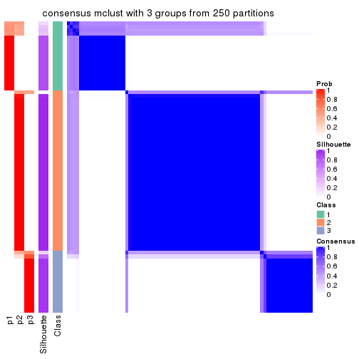
consensus_heatmap(res, k = 4)

consensus_heatmap(res, k = 5)
consensus_heatmap(res, k = 6)
Heatmaps for the membership of samples in all partitions to see how consistent they are:
membership_heatmap(res, k = 2)
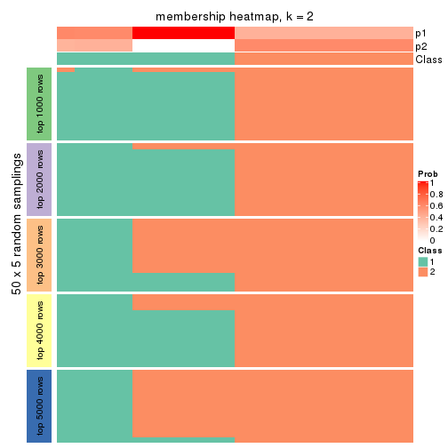
membership_heatmap(res, k = 3)
membership_heatmap(res, k = 4)
membership_heatmap(res, k = 5)
membership_heatmap(res, k = 6)
As soon as we have had the classes for columns, we can look for signatures which are significantly different between classes which can be candidate marks for certain classes. Following are the heatmaps for signatures.
Signature heatmaps where rows are scaled:
get_signatures(res, k = 2)
get_signatures(res, k = 3)
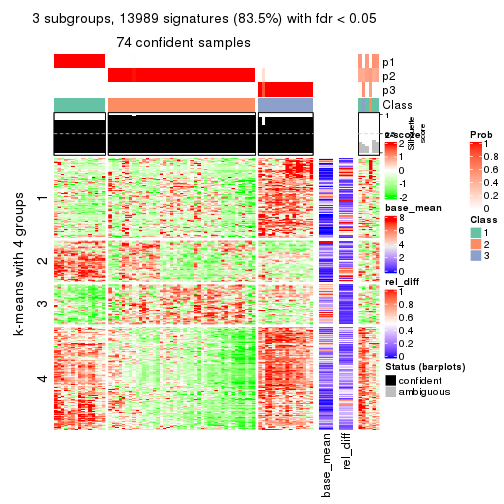
get_signatures(res, k = 4)
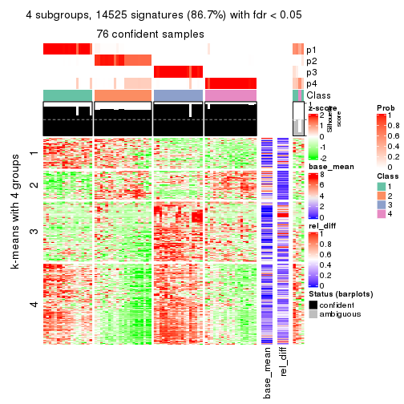
get_signatures(res, k = 5)
get_signatures(res, k = 6)
Signature heatmaps where rows are not scaled:
get_signatures(res, k = 2, scale_rows = FALSE)
get_signatures(res, k = 3, scale_rows = FALSE)
get_signatures(res, k = 4, scale_rows = FALSE)
get_signatures(res, k = 5, scale_rows = FALSE)

get_signatures(res, k = 6, scale_rows = FALSE)
Compare the overlap of signatures from different k:
compare_signatures(res)
get_signature() returns a data frame invisibly. TO get the list of signatures, the function
call should be assigned to a variable explicitly. In following code, if plot argument is set
to FALSE, no heatmap is plotted while only the differential analysis is performed.
# code only for demonstration
tb = get_signature(res, k = ..., plot = FALSE)
An example of the output of tb is:
#> which_row fdr mean_1 mean_2 scaled_mean_1 scaled_mean_2 km
#> 1 38 0.042760348 8.373488 9.131774 -0.5533452 0.5164555 1
#> 2 40 0.018707592 7.106213 8.469186 -0.6173731 0.5762149 1
#> 3 55 0.019134737 10.221463 11.207825 -0.6159697 0.5749050 1
#> 4 59 0.006059896 5.921854 7.869574 -0.6899429 0.6439467 1
#> 5 60 0.018055526 8.928898 10.211722 -0.6204761 0.5791110 1
#> 6 98 0.009384629 15.714769 14.887706 0.6635654 -0.6193277 2
...
The columns in tb are:
which_row: row indices corresponding to the input matrix.fdr: FDR for the differential test. mean_x: The mean value in group x.scaled_mean_x: The mean value in group x after rows are scaled.km: Row groups if k-means clustering is applied to rows.UMAP plot which shows how samples are separated.
dimension_reduction(res, k = 2, method = "UMAP")
dimension_reduction(res, k = 3, method = "UMAP")
dimension_reduction(res, k = 4, method = "UMAP")
dimension_reduction(res, k = 5, method = "UMAP")
dimension_reduction(res, k = 6, method = "UMAP")

Following heatmap shows how subgroups are split when increasing k:
collect_classes(res)
If matrix rows can be associated to genes, consider to use GO_Enrichment(res,
...) to perform function enrichment for the signature genes.
The object with results only for a single top-value method and a single partition method can be extracted as:
res = res_list["MAD", "NMF"]
# you can also extract it by
# res = res_list["MAD:NMF"]
A summary of res and all the functions that can be applied to it:
res
#> A 'ConsensusPartition' object with k = 2, 3, 4, 5, 6.
#> On a matrix with 16751 rows and 80 columns.
#> Top rows (1000, 2000, 3000, 4000, 5000) are extracted by 'MAD' method.
#> Subgroups are detected by 'NMF' method.
#> Performed in total 1250 partitions by row resampling.
#> Best k for subgroups seems to be 2.
#>
#> Following methods can be applied to this 'ConsensusPartition' object:
#> [1] "cola_report" "collect_classes" "collect_plots"
#> [4] "collect_stats" "colnames" "compare_signatures"
#> [7] "consensus_heatmap" "dimension_reduction" "functional_enrichment"
#> [10] "get_anno_col" "get_anno" "get_classes"
#> [13] "get_consensus" "get_matrix" "get_membership"
#> [16] "get_param" "get_signatures" "get_stats"
#> [19] "is_best_k" "is_stable_k" "membership_heatmap"
#> [22] "ncol" "nrow" "plot_ecdf"
#> [25] "rownames" "select_partition_number" "show"
#> [28] "suggest_best_k" "test_to_known_factors"
collect_plots() function collects all the plots made from res for all k (number of partitions)
into one single page to provide an easy and fast comparison between different k.
collect_plots(res)
The plots are:
k and the heatmap of
predicted classes for each k.k.k.k.All the plots in panels can be made by individual functions and they are plotted later in this section.
select_partition_number() produces several plots showing different
statistics for choosing “optimized” k. There are following statistics:
k;k, the area increased is defined as \(A_k - A_{k-1}\).The detailed explanations of these statistics can be found in the cola vignette.
Generally speaking, lower PAC score, higher mean silhouette score or higher
concordance corresponds to better partition. Rand index and Jaccard index
measure how similar the current partition is compared to partition with k-1.
If they are too similar, we won't accept k is better than k-1.
select_partition_number(res)
The numeric values for all these statistics can be obtained by get_stats().
get_stats(res)
#> k 1-PAC mean_silhouette concordance area_increased Rand Jaccard
#> 2 2 0.876 0.926 0.961 0.4793 0.519 0.519
#> 3 3 0.748 0.786 0.912 0.3955 0.665 0.436
#> 4 4 0.512 0.507 0.654 0.1148 0.853 0.595
#> 5 5 0.616 0.599 0.775 0.0671 0.883 0.580
#> 6 6 0.644 0.496 0.691 0.0381 0.916 0.627
suggest_best_k() suggests the best \(k\) based on these statistics. The rules are as follows:
NA.suggest_best_k(res)
#> [1] 2
Following shows the table of the partitions (You need to click the show/hide
code output link to see it). The membership matrix (columns with name p*)
is inferred by
clue::cl_consensus()
function with the SE method. Basically the value in the membership matrix
represents the probability to belong to a certain group. The finall class
label for an item is determined with the group with highest probability it
belongs to.
In get_classes() function, the entropy is calculated from the membership
matrix and the silhouette score is calculated from the consensus matrix.
cbind(get_classes(res, k = 2), get_membership(res, k = 2))
#> class entropy silhouette p1 p2
#> 71A0AB6A-CFC2-46F6-878C-6052C5B43D22 1 0.1633 0.963 0.976 0.024
#> EFC730EC-6385-4167-A65A-F2A3AAEDA2AC 1 0.0000 0.965 1.000 0.000
#> 14F2F39A-EA0F-4027-8877-FEEEEFF1F085 2 0.0000 0.947 0.000 1.000
#> 98B2A7F8-A7BD-4DA2-8541-950E44D9ACD7 2 0.0000 0.947 0.000 1.000
#> 9166F454-2068-46C2-B2EB-FB3BE4126536 1 0.1843 0.953 0.972 0.028
#> 83B2A0BB-CE24-4DCA-B03A-D20353304365 2 0.0000 0.947 0.000 1.000
#> D3FC3968-B263-4756-BF7F-1941F70B04DA 2 0.5737 0.858 0.136 0.864
#> D357AC5C-C2A0-4CC4-B016-4572400AF117 2 0.0000 0.947 0.000 1.000
#> 1055E951-5B93-4AD7-BE5C-4DF4F6AECEF3 2 0.5294 0.873 0.120 0.880
#> F2995599-3F21-4F33-92BB-7D70A4735938 1 0.0000 0.965 1.000 0.000
#> 3EE533BD-5832-4007-8F1F-439166256EB0 2 0.5842 0.835 0.140 0.860
#> EEC6DA0C-5C49-4EFE-976A-19F432DDAA58 1 0.3733 0.918 0.928 0.072
#> E6E08C1A-4C1B-4572-92DF-DA15BCBADF76 2 0.1633 0.941 0.024 0.976
#> BCFCBBAC-EB95-47EB-9EB0-2CB4AE283A75 1 0.1633 0.963 0.976 0.024
#> 0782D6D0-668B-4B83-8C91-8A35EA3BFF6D 2 0.0000 0.947 0.000 1.000
#> AC78918E-1031-4AE6-B753-B0799171F0F0 1 0.0000 0.965 1.000 0.000
#> 6B497CED-34DA-4CF8-8F8D-696105CB3D5F 1 0.1633 0.963 0.976 0.024
#> 2328D472-583B-43A9-81A4-A21DDEBB5B18 2 0.0000 0.947 0.000 1.000
#> A6930B33-D9B2-4318-807C-4A25EB4CCCDD 2 0.0000 0.947 0.000 1.000
#> C8C48AFD-4D8B-491E-993C-3506DC6DD00F 1 0.1633 0.963 0.976 0.024
#> 093FB845-7905-4064-8E8E-76E3587D8E7C 1 0.1633 0.963 0.976 0.024
#> B216F996-CCD8-4F56-99B1-4EA9769B10B8 1 0.1633 0.963 0.976 0.024
#> CB35DED2-5FEA-43E2-AB42-B6B3A7444B66 1 0.1633 0.963 0.976 0.024
#> BA016F57-F58F-4A66-B85A-0B0F911EEA65 1 0.2778 0.938 0.952 0.048
#> 519DBD5F-66C0-4CEE-905C-799C855D28FB 1 0.0000 0.965 1.000 0.000
#> F5B9B89B-6821-43EE-BCFD-623689D03AF9 2 0.0000 0.947 0.000 1.000
#> 55A39F92-CC88-4A2F-A7D3-7A59DEBEBB42 1 0.1633 0.963 0.976 0.024
#> 3DBBDEDA-F9FC-40DC-804F-45429EA47ED4 1 0.7376 0.773 0.792 0.208
#> BB948BE8-7D48-4AEB-A404-C27A79655D7E 1 0.1633 0.963 0.976 0.024
#> 9506723F-9193-4D8E-BD97-8A0062AB2F9C 1 0.1633 0.963 0.976 0.024
#> D0758A7A-9D0E-4EA4-8EE9-7143B398647D 1 0.1633 0.963 0.976 0.024
#> F400FD4D-72D7-4933-B145-64B7EE245FFC 2 0.1633 0.941 0.024 0.976
#> 3F87E9ED-3719-48E1-8B69-E352A03E982D 1 0.1633 0.963 0.976 0.024
#> D6365FEB-CC12-4337-BF8C-66236A585B5D 2 0.0376 0.947 0.004 0.996
#> A4168812-C38E-4F15-9AF6-79F256279E72 1 0.1633 0.963 0.976 0.024
#> DB676839-02AA-42A7-962F-89D6AD892008 1 0.0000 0.965 1.000 0.000
#> 198D8E89-51FD-41DE-AD11-FB2F2FE49908 2 0.1633 0.941 0.024 0.976
#> 2BADCD01-27E8-49EC-B707-4FAE3D3CB489 1 0.0000 0.965 1.000 0.000
#> ABBD6EFE-079B-4BE3-95AB-36AF9197D684 2 0.1633 0.941 0.024 0.976
#> 39D66B95-61C7-4B76-8E81-1F9F98024B69 1 0.0000 0.965 1.000 0.000
#> 7A920210-CF3D-4458-B6D5-D9B2ADACA469 1 0.0000 0.965 1.000 0.000
#> 0CE61CDC-3257-4F03-951B-CC2CFCF675AE 2 0.6148 0.840 0.152 0.848
#> 7338D61C-77D6-4095-8847-7FD9967B7646 1 0.3733 0.918 0.928 0.072
#> 0D36FAD5-BA81-4FED-9E2A-DB016F2EF18C 1 0.0000 0.965 1.000 0.000
#> 43CD31CD-5FAE-418A-B235-49E54560590D 2 0.0000 0.947 0.000 1.000
#> B6DD72B0-EEFA-41A9-B71D-22DE1343CD32 1 0.1633 0.963 0.976 0.024
#> 2B729CD9-71A5-4336-ACBA-922A30AF4949 1 0.9044 0.512 0.680 0.320
#> B76DB955-69B7-4D05-8166-2569ED44628C 1 0.0000 0.965 1.000 0.000
#> 09CBEE39-7141-4228-AFD3-4714E32A1FB5 2 0.0000 0.947 0.000 1.000
#> AC1700D5-72E7-4C7F-A288-869DFC229252 1 0.0000 0.965 1.000 0.000
#> 535A5E8E-8478-477F-87FF-ED6742AA5473 2 0.0000 0.947 0.000 1.000
#> CFB8573C-9F36-4715-B6F1-6E5B543168A8 1 0.0376 0.964 0.996 0.004
#> 47A45491-6023-44BF-ABC2-9A470F7FC1F7 1 0.3733 0.918 0.928 0.072
#> 437C7AA7-98C0-48C7-97DA-86FF44D69B87 2 0.3114 0.925 0.056 0.944
#> 649ADE7E-6C06-4AB6-8E97-D8C2AAF79A7E 2 0.2948 0.916 0.052 0.948
#> DEA60B47-AD6A-4EBB-9402-6F97E9640E4E 2 0.1633 0.941 0.024 0.976
#> 76C574FF-26BF-49CD-9BCA-7BDDCBD06D5D 2 0.0000 0.947 0.000 1.000
#> 8B6E1F9B-1E90-4333-8E0C-EEDFF25D15C0 1 0.4939 0.891 0.892 0.108
#> A2473EE7-72D6-4D32-9DF7-5D4E444A6715 1 0.3733 0.918 0.928 0.072
#> E226C45E-5287-4D0F-A34B-CE251FA293CB 1 0.1843 0.953 0.972 0.028
#> A2C71C07-AF0C-4016-808C-DFEF458C91C7 1 0.0000 0.965 1.000 0.000
#> DA00D60F-4CF1-4003-BAF5-896EE2BEE2D4 1 0.1414 0.958 0.980 0.020
#> 1C17B65F-1930-4CF3-99B6-5D3AA9E99188 2 0.9866 0.285 0.432 0.568
#> B837D582-A0D3-46BE-8ECA-883F5396AE88 1 0.0000 0.965 1.000 0.000
#> EF1A102F-C206-4874-8F27-0BF069A613B8 1 0.0000 0.965 1.000 0.000
#> BC761676-F64C-476A-8D9B-BD3E6149B2CD 2 0.8661 0.592 0.288 0.712
#> D8351E5C-DC1D-4B4D-83E6-735B2750D944 2 0.0000 0.947 0.000 1.000
#> 59F65F61-03D0-4909-99BD-4CCB53A088A5 1 0.1633 0.963 0.976 0.024
#> EFFCCF33-60E1-4550-B13C-14C54ADCF479 1 0.4815 0.895 0.896 0.104
#> C45EB423-CC14-4BDB-A0B4-447E5DB6DA9C 1 0.0000 0.965 1.000 0.000
#> D34B0BC6-9142-48AE-A113-5923192644A0 1 0.1633 0.963 0.976 0.024
#> 634672A6-C68E-479F-AAB5-CBAFF7758EA4 1 0.0000 0.965 1.000 0.000
#> 06DAE086-D960-4156-9DC8-D126338E2F29 2 0.1633 0.941 0.024 0.976
#> 3353F579-77CA-4D0E-B794-37DE467CC065 1 0.0938 0.961 0.988 0.012
#> 976507F2-192B-4095-920A-3014889CD617 1 0.0000 0.965 1.000 0.000
#> 3FFF89D9-02F5-4D49-8631-099562BF99C7 2 0.1633 0.941 0.024 0.976
#> 8BC2213D-99DA-44E0-826F-EBF211EECFBF 1 0.0000 0.965 1.000 0.000
#> A7A16BF7-5E60-4E50-BE04-542EFC4DB472 2 0.0000 0.947 0.000 1.000
#> E25C9578-9493-466E-A2CD-546DEB076B2D 2 0.0000 0.947 0.000 1.000
#> EA35E230-DE50-45AB-A737-D5C430652A90 1 0.1633 0.963 0.976 0.024
cbind(get_classes(res, k = 3), get_membership(res, k = 3))
#> class entropy silhouette p1 p2 p3
#> 71A0AB6A-CFC2-46F6-878C-6052C5B43D22 1 0.0000 0.9369 1.000 0.000 0.000
#> EFC730EC-6385-4167-A65A-F2A3AAEDA2AC 1 0.5882 0.3966 0.652 0.000 0.348
#> 14F2F39A-EA0F-4027-8877-FEEEEFF1F085 2 0.0000 0.9026 0.000 1.000 0.000
#> 98B2A7F8-A7BD-4DA2-8541-950E44D9ACD7 2 0.0000 0.9026 0.000 1.000 0.000
#> 9166F454-2068-46C2-B2EB-FB3BE4126536 3 0.0000 0.8668 0.000 0.000 1.000
#> 83B2A0BB-CE24-4DCA-B03A-D20353304365 2 0.0000 0.9026 0.000 1.000 0.000
#> D3FC3968-B263-4756-BF7F-1941F70B04DA 3 0.0000 0.8668 0.000 0.000 1.000
#> D357AC5C-C2A0-4CC4-B016-4572400AF117 2 0.0000 0.9026 0.000 1.000 0.000
#> 1055E951-5B93-4AD7-BE5C-4DF4F6AECEF3 3 0.0000 0.8668 0.000 0.000 1.000
#> F2995599-3F21-4F33-92BB-7D70A4735938 3 0.4346 0.7497 0.184 0.000 0.816
#> 3EE533BD-5832-4007-8F1F-439166256EB0 2 0.5291 0.5827 0.268 0.732 0.000
#> EEC6DA0C-5C49-4EFE-976A-19F432DDAA58 3 0.0000 0.8668 0.000 0.000 1.000
#> E6E08C1A-4C1B-4572-92DF-DA15BCBADF76 3 0.3412 0.7682 0.000 0.124 0.876
#> BCFCBBAC-EB95-47EB-9EB0-2CB4AE283A75 1 0.0000 0.9369 1.000 0.000 0.000
#> 0782D6D0-668B-4B83-8C91-8A35EA3BFF6D 2 0.0000 0.9026 0.000 1.000 0.000
#> AC78918E-1031-4AE6-B753-B0799171F0F0 3 0.2261 0.8437 0.068 0.000 0.932
#> 6B497CED-34DA-4CF8-8F8D-696105CB3D5F 1 0.0000 0.9369 1.000 0.000 0.000
#> 2328D472-583B-43A9-81A4-A21DDEBB5B18 2 0.0000 0.9026 0.000 1.000 0.000
#> A6930B33-D9B2-4318-807C-4A25EB4CCCDD 2 0.0000 0.9026 0.000 1.000 0.000
#> C8C48AFD-4D8B-491E-993C-3506DC6DD00F 1 0.0000 0.9369 1.000 0.000 0.000
#> 093FB845-7905-4064-8E8E-76E3587D8E7C 1 0.0000 0.9369 1.000 0.000 0.000
#> B216F996-CCD8-4F56-99B1-4EA9769B10B8 1 0.0000 0.9369 1.000 0.000 0.000
#> CB35DED2-5FEA-43E2-AB42-B6B3A7444B66 1 0.0000 0.9369 1.000 0.000 0.000
#> BA016F57-F58F-4A66-B85A-0B0F911EEA65 3 0.0000 0.8668 0.000 0.000 1.000
#> 519DBD5F-66C0-4CEE-905C-799C855D28FB 3 0.0237 0.8666 0.004 0.000 0.996
#> F5B9B89B-6821-43EE-BCFD-623689D03AF9 2 0.0000 0.9026 0.000 1.000 0.000
#> 55A39F92-CC88-4A2F-A7D3-7A59DEBEBB42 1 0.2625 0.8747 0.916 0.084 0.000
#> 3DBBDEDA-F9FC-40DC-804F-45429EA47ED4 2 0.6783 0.2925 0.396 0.588 0.016
#> BB948BE8-7D48-4AEB-A404-C27A79655D7E 1 0.0000 0.9369 1.000 0.000 0.000
#> 9506723F-9193-4D8E-BD97-8A0062AB2F9C 1 0.0000 0.9369 1.000 0.000 0.000
#> D0758A7A-9D0E-4EA4-8EE9-7143B398647D 1 0.0000 0.9369 1.000 0.000 0.000
#> F400FD4D-72D7-4933-B145-64B7EE245FFC 2 0.6252 0.1458 0.000 0.556 0.444
#> 3F87E9ED-3719-48E1-8B69-E352A03E982D 1 0.2261 0.8894 0.932 0.068 0.000
#> D6365FEB-CC12-4337-BF8C-66236A585B5D 2 0.0000 0.9026 0.000 1.000 0.000
#> A4168812-C38E-4F15-9AF6-79F256279E72 1 0.0000 0.9369 1.000 0.000 0.000
#> DB676839-02AA-42A7-962F-89D6AD892008 3 0.5016 0.6785 0.240 0.000 0.760
#> 198D8E89-51FD-41DE-AD11-FB2F2FE49908 3 0.6309 -0.0128 0.000 0.500 0.500
#> 2BADCD01-27E8-49EC-B707-4FAE3D3CB489 1 0.3038 0.8450 0.896 0.000 0.104
#> ABBD6EFE-079B-4BE3-95AB-36AF9197D684 2 0.0424 0.8966 0.000 0.992 0.008
#> 39D66B95-61C7-4B76-8E81-1F9F98024B69 3 0.4750 0.7125 0.216 0.000 0.784
#> 7A920210-CF3D-4458-B6D5-D9B2ADACA469 3 0.0237 0.8666 0.004 0.000 0.996
#> 0CE61CDC-3257-4F03-951B-CC2CFCF675AE 3 0.0000 0.8668 0.000 0.000 1.000
#> 7338D61C-77D6-4095-8847-7FD9967B7646 3 0.0000 0.8668 0.000 0.000 1.000
#> 0D36FAD5-BA81-4FED-9E2A-DB016F2EF18C 3 0.2625 0.8340 0.084 0.000 0.916
#> 43CD31CD-5FAE-418A-B235-49E54560590D 2 0.0000 0.9026 0.000 1.000 0.000
#> B6DD72B0-EEFA-41A9-B71D-22DE1343CD32 1 0.0000 0.9369 1.000 0.000 0.000
#> 2B729CD9-71A5-4336-ACBA-922A30AF4949 3 0.0000 0.8668 0.000 0.000 1.000
#> B76DB955-69B7-4D05-8166-2569ED44628C 3 0.0592 0.8650 0.012 0.000 0.988
#> 09CBEE39-7141-4228-AFD3-4714E32A1FB5 2 0.0000 0.9026 0.000 1.000 0.000
#> AC1700D5-72E7-4C7F-A288-869DFC229252 1 0.0592 0.9305 0.988 0.000 0.012
#> 535A5E8E-8478-477F-87FF-ED6742AA5473 2 0.0000 0.9026 0.000 1.000 0.000
#> CFB8573C-9F36-4715-B6F1-6E5B543168A8 3 0.0000 0.8668 0.000 0.000 1.000
#> 47A45491-6023-44BF-ABC2-9A470F7FC1F7 3 0.0000 0.8668 0.000 0.000 1.000
#> 437C7AA7-98C0-48C7-97DA-86FF44D69B87 3 0.5497 0.5327 0.000 0.292 0.708
#> 649ADE7E-6C06-4AB6-8E97-D8C2AAF79A7E 2 0.0000 0.9026 0.000 1.000 0.000
#> DEA60B47-AD6A-4EBB-9402-6F97E9640E4E 3 0.6267 0.1544 0.000 0.452 0.548
#> 76C574FF-26BF-49CD-9BCA-7BDDCBD06D5D 2 0.0000 0.9026 0.000 1.000 0.000
#> 8B6E1F9B-1E90-4333-8E0C-EEDFF25D15C0 1 0.5650 0.5337 0.688 0.312 0.000
#> A2473EE7-72D6-4D32-9DF7-5D4E444A6715 3 0.0000 0.8668 0.000 0.000 1.000
#> E226C45E-5287-4D0F-A34B-CE251FA293CB 3 0.0237 0.8666 0.004 0.000 0.996
#> A2C71C07-AF0C-4016-808C-DFEF458C91C7 3 0.2796 0.8287 0.092 0.000 0.908
#> DA00D60F-4CF1-4003-BAF5-896EE2BEE2D4 3 0.0000 0.8668 0.000 0.000 1.000
#> 1C17B65F-1930-4CF3-99B6-5D3AA9E99188 3 0.0000 0.8668 0.000 0.000 1.000
#> B837D582-A0D3-46BE-8ECA-883F5396AE88 1 0.0892 0.9254 0.980 0.000 0.020
#> EF1A102F-C206-4874-8F27-0BF069A613B8 1 0.1753 0.9035 0.952 0.000 0.048
#> BC761676-F64C-476A-8D9B-BD3E6149B2CD 2 0.5785 0.4601 0.332 0.668 0.000
#> D8351E5C-DC1D-4B4D-83E6-735B2750D944 2 0.0000 0.9026 0.000 1.000 0.000
#> 59F65F61-03D0-4909-99BD-4CCB53A088A5 1 0.1529 0.9120 0.960 0.040 0.000
#> EFFCCF33-60E1-4550-B13C-14C54ADCF479 1 0.5016 0.6675 0.760 0.240 0.000
#> C45EB423-CC14-4BDB-A0B4-447E5DB6DA9C 3 0.1031 0.8615 0.024 0.000 0.976
#> D34B0BC6-9142-48AE-A113-5923192644A0 1 0.0000 0.9369 1.000 0.000 0.000
#> 634672A6-C68E-479F-AAB5-CBAFF7758EA4 3 0.5905 0.4835 0.352 0.000 0.648
#> 06DAE086-D960-4156-9DC8-D126338E2F29 3 0.6307 0.0321 0.000 0.488 0.512
#> 3353F579-77CA-4D0E-B794-37DE467CC065 3 0.2066 0.8477 0.060 0.000 0.940
#> 976507F2-192B-4095-920A-3014889CD617 3 0.4235 0.7569 0.176 0.000 0.824
#> 3FFF89D9-02F5-4D49-8631-099562BF99C7 2 0.6274 0.1019 0.000 0.544 0.456
#> 8BC2213D-99DA-44E0-826F-EBF211EECFBF 3 0.6252 0.2515 0.444 0.000 0.556
#> A7A16BF7-5E60-4E50-BE04-542EFC4DB472 2 0.0000 0.9026 0.000 1.000 0.000
#> E25C9578-9493-466E-A2CD-546DEB076B2D 2 0.0000 0.9026 0.000 1.000 0.000
#> EA35E230-DE50-45AB-A737-D5C430652A90 1 0.0000 0.9369 1.000 0.000 0.000
cbind(get_classes(res, k = 4), get_membership(res, k = 4))
#> class entropy silhouette p1 p2 p3 p4
#> 71A0AB6A-CFC2-46F6-878C-6052C5B43D22 1 0.4250 0.764 0.724 0.000 0.276 0.000
#> EFC730EC-6385-4167-A65A-F2A3AAEDA2AC 3 0.7249 -0.515 0.412 0.000 0.444 0.144
#> 14F2F39A-EA0F-4027-8877-FEEEEFF1F085 2 0.1854 0.708 0.048 0.940 0.012 0.000
#> 98B2A7F8-A7BD-4DA2-8541-950E44D9ACD7 2 0.2032 0.678 0.000 0.936 0.028 0.036
#> 9166F454-2068-46C2-B2EB-FB3BE4126536 3 0.4955 0.359 0.000 0.000 0.556 0.444
#> 83B2A0BB-CE24-4DCA-B03A-D20353304365 2 0.4508 0.622 0.012 0.820 0.108 0.060
#> D3FC3968-B263-4756-BF7F-1941F70B04DA 4 0.3123 0.359 0.000 0.000 0.156 0.844
#> D357AC5C-C2A0-4CC4-B016-4572400AF117 2 0.5568 0.723 0.248 0.704 0.024 0.024
#> 1055E951-5B93-4AD7-BE5C-4DF4F6AECEF3 4 0.3710 0.346 0.000 0.004 0.192 0.804
#> F2995599-3F21-4F33-92BB-7D70A4735938 3 0.5298 0.433 0.048 0.000 0.708 0.244
#> 3EE533BD-5832-4007-8F1F-439166256EB0 2 0.5353 0.491 0.432 0.556 0.012 0.000
#> EEC6DA0C-5C49-4EFE-976A-19F432DDAA58 3 0.4981 0.334 0.000 0.000 0.536 0.464
#> E6E08C1A-4C1B-4572-92DF-DA15BCBADF76 4 0.7407 0.196 0.000 0.204 0.288 0.508
#> BCFCBBAC-EB95-47EB-9EB0-2CB4AE283A75 1 0.4804 0.700 0.616 0.000 0.384 0.000
#> 0782D6D0-668B-4B83-8C91-8A35EA3BFF6D 2 0.1302 0.677 0.000 0.956 0.000 0.044
#> AC78918E-1031-4AE6-B753-B0799171F0F0 3 0.6966 0.553 0.128 0.000 0.532 0.340
#> 6B497CED-34DA-4CF8-8F8D-696105CB3D5F 1 0.4040 0.766 0.752 0.000 0.248 0.000
#> 2328D472-583B-43A9-81A4-A21DDEBB5B18 2 0.6176 0.606 0.064 0.736 0.124 0.076
#> A6930B33-D9B2-4318-807C-4A25EB4CCCDD 2 0.1388 0.703 0.028 0.960 0.012 0.000
#> C8C48AFD-4D8B-491E-993C-3506DC6DD00F 1 0.3837 0.766 0.776 0.000 0.224 0.000
#> 093FB845-7905-4064-8E8E-76E3587D8E7C 1 0.4477 0.733 0.688 0.000 0.312 0.000
#> B216F996-CCD8-4F56-99B1-4EA9769B10B8 1 0.3052 0.754 0.860 0.004 0.136 0.000
#> CB35DED2-5FEA-43E2-AB42-B6B3A7444B66 1 0.1824 0.733 0.936 0.004 0.060 0.000
#> BA016F57-F58F-4A66-B85A-0B0F911EEA65 4 0.3688 0.383 0.000 0.000 0.208 0.792
#> 519DBD5F-66C0-4CEE-905C-799C855D28FB 3 0.6145 0.459 0.048 0.000 0.492 0.460
#> F5B9B89B-6821-43EE-BCFD-623689D03AF9 2 0.2040 0.706 0.048 0.936 0.012 0.004
#> 55A39F92-CC88-4A2F-A7D3-7A59DEBEBB42 1 0.6173 0.722 0.588 0.052 0.356 0.004
#> 3DBBDEDA-F9FC-40DC-804F-45429EA47ED4 3 0.8851 -0.314 0.332 0.252 0.368 0.048
#> BB948BE8-7D48-4AEB-A404-C27A79655D7E 1 0.4605 0.738 0.664 0.000 0.336 0.000
#> 9506723F-9193-4D8E-BD97-8A0062AB2F9C 1 0.4522 0.748 0.680 0.000 0.320 0.000
#> D0758A7A-9D0E-4EA4-8EE9-7143B398647D 1 0.2081 0.742 0.916 0.000 0.084 0.000
#> F400FD4D-72D7-4933-B145-64B7EE245FFC 4 0.5119 0.347 0.000 0.440 0.004 0.556
#> 3F87E9ED-3719-48E1-8B69-E352A03E982D 1 0.3474 0.669 0.868 0.064 0.068 0.000
#> D6365FEB-CC12-4337-BF8C-66236A585B5D 2 0.6125 0.704 0.300 0.636 0.056 0.008
#> A4168812-C38E-4F15-9AF6-79F256279E72 1 0.3764 0.758 0.784 0.000 0.216 0.000
#> DB676839-02AA-42A7-962F-89D6AD892008 3 0.4289 0.365 0.172 0.000 0.796 0.032
#> 198D8E89-51FD-41DE-AD11-FB2F2FE49908 4 0.5517 0.341 0.000 0.412 0.020 0.568
#> 2BADCD01-27E8-49EC-B707-4FAE3D3CB489 3 0.4925 -0.433 0.428 0.000 0.572 0.000
#> ABBD6EFE-079B-4BE3-95AB-36AF9197D684 2 0.5051 0.548 0.000 0.768 0.132 0.100
#> 39D66B95-61C7-4B76-8E81-1F9F98024B69 3 0.5723 0.469 0.032 0.000 0.580 0.388
#> 7A920210-CF3D-4458-B6D5-D9B2ADACA469 3 0.6727 0.547 0.096 0.000 0.520 0.384
#> 0CE61CDC-3257-4F03-951B-CC2CFCF675AE 4 0.5184 0.542 0.000 0.204 0.060 0.736
#> 7338D61C-77D6-4095-8847-7FD9967B7646 4 0.4356 0.160 0.000 0.000 0.292 0.708
#> 0D36FAD5-BA81-4FED-9E2A-DB016F2EF18C 3 0.6850 0.555 0.108 0.000 0.516 0.376
#> 43CD31CD-5FAE-418A-B235-49E54560590D 2 0.5186 0.698 0.344 0.640 0.016 0.000
#> B6DD72B0-EEFA-41A9-B71D-22DE1343CD32 1 0.2814 0.753 0.868 0.000 0.132 0.000
#> 2B729CD9-71A5-4336-ACBA-922A30AF4949 4 0.5000 -0.370 0.000 0.000 0.500 0.500
#> B76DB955-69B7-4D05-8166-2569ED44628C 3 0.6875 0.547 0.108 0.000 0.504 0.388
#> 09CBEE39-7141-4228-AFD3-4714E32A1FB5 2 0.5482 0.678 0.368 0.608 0.024 0.000
#> AC1700D5-72E7-4C7F-A288-869DFC229252 1 0.5070 0.664 0.580 0.000 0.416 0.004
#> 535A5E8E-8478-477F-87FF-ED6742AA5473 2 0.5189 0.674 0.372 0.616 0.012 0.000
#> CFB8573C-9F36-4715-B6F1-6E5B543168A8 4 0.5237 0.314 0.016 0.000 0.356 0.628
#> 47A45491-6023-44BF-ABC2-9A470F7FC1F7 4 0.2868 0.441 0.000 0.000 0.136 0.864
#> 437C7AA7-98C0-48C7-97DA-86FF44D69B87 4 0.2944 0.539 0.000 0.128 0.004 0.868
#> 649ADE7E-6C06-4AB6-8E97-D8C2AAF79A7E 2 0.8422 0.562 0.392 0.400 0.164 0.044
#> DEA60B47-AD6A-4EBB-9402-6F97E9640E4E 4 0.4898 0.388 0.000 0.416 0.000 0.584
#> 76C574FF-26BF-49CD-9BCA-7BDDCBD06D5D 2 0.0469 0.691 0.000 0.988 0.000 0.012
#> 8B6E1F9B-1E90-4333-8E0C-EEDFF25D15C0 1 0.6595 0.398 0.604 0.276 0.120 0.000
#> A2473EE7-72D6-4D32-9DF7-5D4E444A6715 4 0.5210 0.356 0.008 0.008 0.332 0.652
#> E226C45E-5287-4D0F-A34B-CE251FA293CB 3 0.6268 0.465 0.056 0.000 0.496 0.448
#> A2C71C07-AF0C-4016-808C-DFEF458C91C7 3 0.5724 0.455 0.028 0.000 0.548 0.424
#> DA00D60F-4CF1-4003-BAF5-896EE2BEE2D4 4 0.3626 0.428 0.004 0.000 0.184 0.812
#> 1C17B65F-1930-4CF3-99B6-5D3AA9E99188 4 0.2799 0.469 0.000 0.008 0.108 0.884
#> B837D582-A0D3-46BE-8ECA-883F5396AE88 1 0.5244 0.633 0.556 0.000 0.436 0.008
#> EF1A102F-C206-4874-8F27-0BF069A613B8 1 0.6130 0.592 0.512 0.000 0.440 0.048
#> BC761676-F64C-476A-8D9B-BD3E6149B2CD 2 0.5760 0.585 0.448 0.524 0.028 0.000
#> D8351E5C-DC1D-4B4D-83E6-735B2750D944 2 0.4627 0.602 0.036 0.808 0.020 0.136
#> 59F65F61-03D0-4909-99BD-4CCB53A088A5 1 0.1356 0.646 0.960 0.032 0.008 0.000
#> EFFCCF33-60E1-4550-B13C-14C54ADCF479 1 0.4576 0.150 0.728 0.260 0.012 0.000
#> C45EB423-CC14-4BDB-A0B4-447E5DB6DA9C 3 0.6941 0.560 0.120 0.000 0.520 0.360
#> D34B0BC6-9142-48AE-A113-5923192644A0 1 0.0895 0.701 0.976 0.004 0.020 0.000
#> 634672A6-C68E-479F-AAB5-CBAFF7758EA4 3 0.6248 0.524 0.120 0.000 0.656 0.224
#> 06DAE086-D960-4156-9DC8-D126338E2F29 4 0.6823 0.412 0.000 0.244 0.160 0.596
#> 3353F579-77CA-4D0E-B794-37DE467CC065 3 0.7059 0.456 0.140 0.000 0.528 0.332
#> 976507F2-192B-4095-920A-3014889CD617 3 0.6904 0.563 0.132 0.000 0.556 0.312
#> 3FFF89D9-02F5-4D49-8631-099562BF99C7 4 0.4941 0.359 0.000 0.436 0.000 0.564
#> 8BC2213D-99DA-44E0-826F-EBF211EECFBF 3 0.4446 0.292 0.196 0.000 0.776 0.028
#> A7A16BF7-5E60-4E50-BE04-542EFC4DB472 2 0.5174 0.677 0.368 0.620 0.012 0.000
#> E25C9578-9493-466E-A2CD-546DEB076B2D 2 0.5018 0.692 0.332 0.656 0.012 0.000
#> EA35E230-DE50-45AB-A737-D5C430652A90 1 0.2345 0.742 0.900 0.000 0.100 0.000
cbind(get_classes(res, k = 5), get_membership(res, k = 5))
#> class entropy silhouette p1 p2 p3 p4 p5
#> 71A0AB6A-CFC2-46F6-878C-6052C5B43D22 1 0.1728 0.7891 0.940 0.020 0.004 0.000 0.036
#> EFC730EC-6385-4167-A65A-F2A3AAEDA2AC 1 0.5295 0.4768 0.636 0.000 0.068 0.292 0.004
#> 14F2F39A-EA0F-4027-8877-FEEEEFF1F085 2 0.4619 0.3847 0.000 0.720 0.000 0.064 0.216
#> 98B2A7F8-A7BD-4DA2-8541-950E44D9ACD7 5 0.5631 0.4745 0.000 0.292 0.000 0.108 0.600
#> 9166F454-2068-46C2-B2EB-FB3BE4126536 3 0.0963 0.8013 0.000 0.000 0.964 0.000 0.036
#> 83B2A0BB-CE24-4DCA-B03A-D20353304365 5 0.3477 0.6438 0.000 0.112 0.000 0.056 0.832
#> D3FC3968-B263-4756-BF7F-1941F70B04DA 4 0.4604 0.4181 0.000 0.000 0.428 0.560 0.012
#> D357AC5C-C2A0-4CC4-B016-4572400AF117 5 0.3855 0.5026 0.008 0.240 0.000 0.004 0.748
#> 1055E951-5B93-4AD7-BE5C-4DF4F6AECEF3 4 0.4182 0.4782 0.000 0.000 0.400 0.600 0.000
#> F2995599-3F21-4F33-92BB-7D70A4735938 3 0.6086 0.5344 0.320 0.000 0.548 0.128 0.004
#> 3EE533BD-5832-4007-8F1F-439166256EB0 2 0.1701 0.5939 0.028 0.944 0.000 0.016 0.012
#> EEC6DA0C-5C49-4EFE-976A-19F432DDAA58 3 0.1732 0.7820 0.000 0.000 0.920 0.000 0.080
#> E6E08C1A-4C1B-4572-92DF-DA15BCBADF76 5 0.5404 0.5451 0.000 0.000 0.152 0.184 0.664
#> BCFCBBAC-EB95-47EB-9EB0-2CB4AE283A75 1 0.2237 0.7525 0.904 0.000 0.084 0.008 0.004
#> 0782D6D0-668B-4B83-8C91-8A35EA3BFF6D 2 0.5831 -0.1079 0.000 0.496 0.000 0.096 0.408
#> AC78918E-1031-4AE6-B753-B0799171F0F0 3 0.2813 0.8168 0.108 0.000 0.868 0.000 0.024
#> 6B497CED-34DA-4CF8-8F8D-696105CB3D5F 1 0.2349 0.7758 0.900 0.012 0.004 0.000 0.084
#> 2328D472-583B-43A9-81A4-A21DDEBB5B18 5 0.3113 0.6470 0.012 0.068 0.000 0.048 0.872
#> A6930B33-D9B2-4318-807C-4A25EB4CCCDD 2 0.4737 0.3637 0.000 0.708 0.000 0.068 0.224
#> C8C48AFD-4D8B-491E-993C-3506DC6DD00F 1 0.2264 0.7897 0.920 0.008 0.024 0.004 0.044
#> 093FB845-7905-4064-8E8E-76E3587D8E7C 1 0.3766 0.7608 0.840 0.076 0.052 0.032 0.000
#> B216F996-CCD8-4F56-99B1-4EA9769B10B8 1 0.3146 0.7483 0.844 0.028 0.000 0.000 0.128
#> CB35DED2-5FEA-43E2-AB42-B6B3A7444B66 1 0.4861 0.4419 0.596 0.380 0.012 0.012 0.000
#> BA016F57-F58F-4A66-B85A-0B0F911EEA65 4 0.3689 0.6716 0.000 0.004 0.256 0.740 0.000
#> 519DBD5F-66C0-4CEE-905C-799C855D28FB 3 0.2110 0.8180 0.016 0.000 0.912 0.072 0.000
#> F5B9B89B-6821-43EE-BCFD-623689D03AF9 2 0.4159 0.4578 0.000 0.776 0.000 0.068 0.156
#> 55A39F92-CC88-4A2F-A7D3-7A59DEBEBB42 1 0.2122 0.7884 0.928 0.008 0.016 0.040 0.008
#> 3DBBDEDA-F9FC-40DC-804F-45429EA47ED4 5 0.3968 0.5365 0.088 0.016 0.076 0.000 0.820
#> BB948BE8-7D48-4AEB-A404-C27A79655D7E 1 0.0566 0.7882 0.984 0.000 0.004 0.000 0.012
#> 9506723F-9193-4D8E-BD97-8A0062AB2F9C 1 0.0968 0.7905 0.972 0.012 0.004 0.000 0.012
#> D0758A7A-9D0E-4EA4-8EE9-7143B398647D 1 0.3759 0.7346 0.816 0.092 0.000 0.000 0.092
#> F400FD4D-72D7-4933-B145-64B7EE245FFC 4 0.2536 0.6561 0.000 0.004 0.000 0.868 0.128
#> 3F87E9ED-3719-48E1-8B69-E352A03E982D 1 0.4410 0.3365 0.556 0.440 0.004 0.000 0.000
#> D6365FEB-CC12-4337-BF8C-66236A585B5D 5 0.5139 0.2661 0.004 0.384 0.036 0.000 0.576
#> A4168812-C38E-4F15-9AF6-79F256279E72 1 0.5057 0.6183 0.684 0.252 0.052 0.012 0.000
#> DB676839-02AA-42A7-962F-89D6AD892008 3 0.4721 0.5858 0.348 0.000 0.628 0.004 0.020
#> 198D8E89-51FD-41DE-AD11-FB2F2FE49908 4 0.4046 0.3521 0.000 0.008 0.000 0.696 0.296
#> 2BADCD01-27E8-49EC-B707-4FAE3D3CB489 1 0.2877 0.6885 0.848 0.000 0.144 0.004 0.004
#> ABBD6EFE-079B-4BE3-95AB-36AF9197D684 5 0.5426 0.6024 0.000 0.168 0.008 0.140 0.684
#> 39D66B95-61C7-4B76-8E81-1F9F98024B69 3 0.3595 0.7714 0.044 0.000 0.816 0.140 0.000
#> 7A920210-CF3D-4458-B6D5-D9B2ADACA469 3 0.1830 0.8277 0.028 0.000 0.932 0.040 0.000
#> 0CE61CDC-3257-4F03-951B-CC2CFCF675AE 4 0.2554 0.7390 0.000 0.000 0.036 0.892 0.072
#> 7338D61C-77D6-4095-8847-7FD9967B7646 4 0.6038 0.5949 0.028 0.000 0.276 0.608 0.088
#> 0D36FAD5-BA81-4FED-9E2A-DB016F2EF18C 3 0.2153 0.8289 0.044 0.000 0.916 0.040 0.000
#> 43CD31CD-5FAE-418A-B235-49E54560590D 2 0.0566 0.5954 0.000 0.984 0.000 0.004 0.012
#> B6DD72B0-EEFA-41A9-B71D-22DE1343CD32 1 0.3500 0.7232 0.808 0.016 0.004 0.000 0.172
#> 2B729CD9-71A5-4336-ACBA-922A30AF4949 3 0.3555 0.6985 0.000 0.000 0.824 0.052 0.124
#> B76DB955-69B7-4D05-8166-2569ED44628C 3 0.1618 0.8307 0.040 0.000 0.944 0.008 0.008
#> 09CBEE39-7141-4228-AFD3-4714E32A1FB5 2 0.4760 0.1434 0.020 0.564 0.000 0.000 0.416
#> AC1700D5-72E7-4C7F-A288-869DFC229252 1 0.1026 0.7834 0.968 0.000 0.024 0.004 0.004
#> 535A5E8E-8478-477F-87FF-ED6742AA5473 2 0.0579 0.5987 0.008 0.984 0.000 0.000 0.008
#> CFB8573C-9F36-4715-B6F1-6E5B543168A8 4 0.4801 0.6607 0.092 0.000 0.172 0.732 0.004
#> 47A45491-6023-44BF-ABC2-9A470F7FC1F7 4 0.2648 0.7511 0.000 0.000 0.152 0.848 0.000
#> 437C7AA7-98C0-48C7-97DA-86FF44D69B87 4 0.2728 0.7390 0.000 0.004 0.040 0.888 0.068
#> 649ADE7E-6C06-4AB6-8E97-D8C2AAF79A7E 5 0.5953 0.3424 0.008 0.164 0.208 0.000 0.620
#> DEA60B47-AD6A-4EBB-9402-6F97E9640E4E 4 0.1638 0.7178 0.000 0.004 0.000 0.932 0.064
#> 76C574FF-26BF-49CD-9BCA-7BDDCBD06D5D 2 0.5652 0.0413 0.000 0.552 0.000 0.088 0.360
#> 8B6E1F9B-1E90-4333-8E0C-EEDFF25D15C0 2 0.4735 0.1801 0.352 0.624 0.000 0.020 0.004
#> A2473EE7-72D6-4D32-9DF7-5D4E444A6715 4 0.2673 0.7444 0.048 0.000 0.028 0.900 0.024
#> E226C45E-5287-4D0F-A34B-CE251FA293CB 3 0.1483 0.8169 0.008 0.000 0.952 0.028 0.012
#> A2C71C07-AF0C-4016-808C-DFEF458C91C7 3 0.2969 0.7868 0.020 0.000 0.852 0.128 0.000
#> DA00D60F-4CF1-4003-BAF5-896EE2BEE2D4 4 0.2886 0.7534 0.016 0.000 0.116 0.864 0.004
#> 1C17B65F-1930-4CF3-99B6-5D3AA9E99188 4 0.2068 0.7590 0.000 0.000 0.092 0.904 0.004
#> B837D582-A0D3-46BE-8ECA-883F5396AE88 1 0.1442 0.7887 0.952 0.004 0.012 0.032 0.000
#> EF1A102F-C206-4874-8F27-0BF069A613B8 1 0.3216 0.7454 0.856 0.000 0.044 0.096 0.004
#> BC761676-F64C-476A-8D9B-BD3E6149B2CD 2 0.6771 0.1915 0.232 0.432 0.004 0.000 0.332
#> D8351E5C-DC1D-4B4D-83E6-735B2750D944 5 0.5956 0.5586 0.020 0.084 0.000 0.304 0.592
#> 59F65F61-03D0-4909-99BD-4CCB53A088A5 2 0.5807 -0.1577 0.424 0.484 0.000 0.000 0.092
#> EFFCCF33-60E1-4550-B13C-14C54ADCF479 2 0.2922 0.5620 0.072 0.872 0.000 0.000 0.056
#> C45EB423-CC14-4BDB-A0B4-447E5DB6DA9C 3 0.1591 0.8318 0.052 0.000 0.940 0.004 0.004
#> D34B0BC6-9142-48AE-A113-5923192644A0 1 0.5672 0.4630 0.584 0.312 0.000 0.000 0.104
#> 634672A6-C68E-479F-AAB5-CBAFF7758EA4 3 0.3134 0.8133 0.120 0.000 0.848 0.032 0.000
#> 06DAE086-D960-4156-9DC8-D126338E2F29 5 0.6157 0.4888 0.000 0.012 0.124 0.292 0.572
#> 3353F579-77CA-4D0E-B794-37DE467CC065 3 0.5830 0.6466 0.228 0.000 0.620 0.004 0.148
#> 976507F2-192B-4095-920A-3014889CD617 3 0.2046 0.8326 0.068 0.000 0.916 0.016 0.000
#> 3FFF89D9-02F5-4D49-8631-099562BF99C7 4 0.1768 0.7107 0.000 0.004 0.000 0.924 0.072
#> 8BC2213D-99DA-44E0-826F-EBF211EECFBF 3 0.5024 0.3977 0.440 0.000 0.532 0.024 0.004
#> A7A16BF7-5E60-4E50-BE04-542EFC4DB472 2 0.2077 0.5776 0.008 0.908 0.000 0.000 0.084
#> E25C9578-9493-466E-A2CD-546DEB076B2D 2 0.0451 0.5978 0.004 0.988 0.000 0.000 0.008
#> EA35E230-DE50-45AB-A737-D5C430652A90 1 0.5780 0.3305 0.508 0.420 0.060 0.012 0.000
cbind(get_classes(res, k = 6), get_membership(res, k = 6))
#> class entropy silhouette p1 p2 p3 p4 p5 p6
#> 71A0AB6A-CFC2-46F6-878C-6052C5B43D22 1 0.4086 0.157 0.528 0.000 0.008 0.000 0.000 0.464
#> EFC730EC-6385-4167-A65A-F2A3AAEDA2AC 6 0.5882 0.261 0.004 0.000 0.156 0.312 0.008 0.520
#> 14F2F39A-EA0F-4027-8877-FEEEEFF1F085 2 0.2787 0.470 0.044 0.872 0.000 0.012 0.072 0.000
#> 98B2A7F8-A7BD-4DA2-8541-950E44D9ACD7 2 0.4412 -0.188 0.008 0.572 0.000 0.016 0.404 0.000
#> 9166F454-2068-46C2-B2EB-FB3BE4126536 3 0.3185 0.757 0.016 0.000 0.848 0.000 0.076 0.060
#> 83B2A0BB-CE24-4DCA-B03A-D20353304365 5 0.3681 0.562 0.004 0.272 0.000 0.004 0.716 0.004
#> D3FC3968-B263-4756-BF7F-1941F70B04DA 4 0.4109 0.388 0.004 0.000 0.392 0.596 0.008 0.000
#> D357AC5C-C2A0-4CC4-B016-4572400AF117 5 0.5567 0.414 0.192 0.232 0.000 0.000 0.572 0.004
#> 1055E951-5B93-4AD7-BE5C-4DF4F6AECEF3 4 0.4261 0.370 0.000 0.004 0.400 0.584 0.004 0.008
#> F2995599-3F21-4F33-92BB-7D70A4735938 3 0.5456 0.339 0.004 0.000 0.496 0.092 0.004 0.404
#> 3EE533BD-5832-4007-8F1F-439166256EB0 2 0.4870 0.294 0.412 0.548 0.020 0.008 0.008 0.004
#> EEC6DA0C-5C49-4EFE-976A-19F432DDAA58 3 0.3537 0.744 0.016 0.000 0.796 0.000 0.164 0.024
#> E6E08C1A-4C1B-4572-92DF-DA15BCBADF76 5 0.4671 0.307 0.012 0.000 0.024 0.356 0.604 0.004
#> BCFCBBAC-EB95-47EB-9EB0-2CB4AE283A75 6 0.3829 0.536 0.068 0.004 0.136 0.004 0.000 0.788
#> 0782D6D0-668B-4B83-8C91-8A35EA3BFF6D 2 0.3156 0.323 0.000 0.800 0.000 0.020 0.180 0.000
#> AC78918E-1031-4AE6-B753-B0799171F0F0 3 0.3677 0.795 0.008 0.000 0.808 0.004 0.064 0.116
#> 6B497CED-34DA-4CF8-8F8D-696105CB3D5F 6 0.4124 0.305 0.332 0.000 0.008 0.000 0.012 0.648
#> 2328D472-583B-43A9-81A4-A21DDEBB5B18 5 0.3651 0.572 0.004 0.248 0.000 0.004 0.736 0.008
#> A6930B33-D9B2-4318-807C-4A25EB4CCCDD 2 0.2535 0.491 0.064 0.888 0.000 0.012 0.036 0.000
#> C8C48AFD-4D8B-491E-993C-3506DC6DD00F 6 0.5245 0.440 0.296 0.020 0.040 0.000 0.020 0.624
#> 093FB845-7905-4064-8E8E-76E3587D8E7C 6 0.7208 0.109 0.368 0.144 0.072 0.004 0.016 0.396
#> B216F996-CCD8-4F56-99B1-4EA9769B10B8 1 0.4748 0.161 0.504 0.000 0.000 0.000 0.048 0.448
#> CB35DED2-5FEA-43E2-AB42-B6B3A7444B66 1 0.6504 0.152 0.532 0.156 0.040 0.004 0.008 0.260
#> BA016F57-F58F-4A66-B85A-0B0F911EEA65 4 0.4711 0.647 0.032 0.016 0.224 0.708 0.016 0.004
#> 519DBD5F-66C0-4CEE-905C-799C855D28FB 3 0.1425 0.811 0.008 0.000 0.952 0.012 0.008 0.020
#> F5B9B89B-6821-43EE-BCFD-623689D03AF9 2 0.2377 0.487 0.076 0.892 0.000 0.008 0.024 0.000
#> 55A39F92-CC88-4A2F-A7D3-7A59DEBEBB42 6 0.6923 0.350 0.276 0.120 0.044 0.012 0.028 0.520
#> 3DBBDEDA-F9FC-40DC-804F-45429EA47ED4 5 0.4456 0.499 0.076 0.040 0.008 0.000 0.772 0.104
#> BB948BE8-7D48-4AEB-A404-C27A79655D7E 6 0.3301 0.530 0.216 0.000 0.004 0.000 0.008 0.772
#> 9506723F-9193-4D8E-BD97-8A0062AB2F9C 6 0.3445 0.458 0.260 0.000 0.008 0.000 0.000 0.732
#> D0758A7A-9D0E-4EA4-8EE9-7143B398647D 1 0.3795 0.363 0.632 0.000 0.000 0.000 0.004 0.364
#> F400FD4D-72D7-4933-B145-64B7EE245FFC 4 0.1257 0.784 0.000 0.028 0.000 0.952 0.020 0.000
#> 3F87E9ED-3719-48E1-8B69-E352A03E982D 1 0.5298 0.443 0.604 0.140 0.004 0.000 0.000 0.252
#> D6365FEB-CC12-4337-BF8C-66236A585B5D 2 0.5974 0.222 0.268 0.528 0.016 0.000 0.188 0.000
#> A4168812-C38E-4F15-9AF6-79F256279E72 1 0.6896 -0.137 0.420 0.104 0.080 0.000 0.016 0.380
#> DB676839-02AA-42A7-962F-89D6AD892008 3 0.4713 0.495 0.008 0.000 0.580 0.004 0.028 0.380
#> 198D8E89-51FD-41DE-AD11-FB2F2FE49908 4 0.3280 0.620 0.000 0.028 0.000 0.808 0.160 0.004
#> 2BADCD01-27E8-49EC-B707-4FAE3D3CB489 6 0.2821 0.553 0.016 0.000 0.152 0.000 0.000 0.832
#> ABBD6EFE-079B-4BE3-95AB-36AF9197D684 5 0.4449 0.359 0.000 0.440 0.000 0.028 0.532 0.000
#> 39D66B95-61C7-4B76-8E81-1F9F98024B69 3 0.3099 0.793 0.012 0.000 0.864 0.056 0.012 0.056
#> 7A920210-CF3D-4458-B6D5-D9B2ADACA469 3 0.0976 0.814 0.008 0.000 0.968 0.008 0.000 0.016
#> 0CE61CDC-3257-4F03-951B-CC2CFCF675AE 4 0.1180 0.811 0.000 0.000 0.016 0.960 0.012 0.012
#> 7338D61C-77D6-4095-8847-7FD9967B7646 4 0.3999 0.726 0.000 0.000 0.104 0.796 0.048 0.052
#> 0D36FAD5-BA81-4FED-9E2A-DB016F2EF18C 3 0.2462 0.810 0.000 0.000 0.892 0.032 0.012 0.064
#> 43CD31CD-5FAE-418A-B235-49E54560590D 2 0.3652 0.481 0.324 0.672 0.000 0.000 0.004 0.000
#> B6DD72B0-EEFA-41A9-B71D-22DE1343CD32 1 0.5479 0.279 0.500 0.000 0.000 0.000 0.132 0.368
#> 2B729CD9-71A5-4336-ACBA-922A30AF4949 3 0.5693 0.641 0.020 0.000 0.672 0.116 0.144 0.048
#> B76DB955-69B7-4D05-8166-2569ED44628C 3 0.2364 0.816 0.004 0.000 0.904 0.012 0.036 0.044
#> 09CBEE39-7141-4228-AFD3-4714E32A1FB5 1 0.5010 0.187 0.644 0.184 0.000 0.000 0.172 0.000
#> AC1700D5-72E7-4C7F-A288-869DFC229252 6 0.2594 0.577 0.040 0.000 0.068 0.004 0.004 0.884
#> 535A5E8E-8478-477F-87FF-ED6742AA5473 2 0.3878 0.450 0.348 0.644 0.000 0.000 0.004 0.004
#> CFB8573C-9F36-4715-B6F1-6E5B543168A8 4 0.5031 0.585 0.004 0.000 0.212 0.672 0.012 0.100
#> 47A45491-6023-44BF-ABC2-9A470F7FC1F7 4 0.1340 0.813 0.000 0.000 0.040 0.948 0.004 0.008
#> 437C7AA7-98C0-48C7-97DA-86FF44D69B87 4 0.0837 0.809 0.000 0.004 0.020 0.972 0.004 0.000
#> 649ADE7E-6C06-4AB6-8E97-D8C2AAF79A7E 1 0.6225 0.186 0.512 0.004 0.084 0.000 0.336 0.064
#> DEA60B47-AD6A-4EBB-9402-6F97E9640E4E 4 0.0692 0.800 0.004 0.020 0.000 0.976 0.000 0.000
#> 76C574FF-26BF-49CD-9BCA-7BDDCBD06D5D 2 0.3415 0.375 0.028 0.808 0.000 0.012 0.152 0.000
#> 8B6E1F9B-1E90-4333-8E0C-EEDFF25D15C0 2 0.5467 0.121 0.444 0.464 0.000 0.004 0.008 0.080
#> A2473EE7-72D6-4D32-9DF7-5D4E444A6715 4 0.1708 0.805 0.000 0.000 0.024 0.932 0.004 0.040
#> E226C45E-5287-4D0F-A34B-CE251FA293CB 3 0.3878 0.761 0.016 0.000 0.816 0.024 0.092 0.052
#> A2C71C07-AF0C-4016-808C-DFEF458C91C7 3 0.2982 0.795 0.012 0.004 0.876 0.056 0.012 0.040
#> DA00D60F-4CF1-4003-BAF5-896EE2BEE2D4 4 0.2178 0.803 0.008 0.000 0.056 0.912 0.012 0.012
#> 1C17B65F-1930-4CF3-99B6-5D3AA9E99188 4 0.1036 0.812 0.000 0.000 0.024 0.964 0.008 0.004
#> B837D582-A0D3-46BE-8ECA-883F5396AE88 6 0.4416 0.526 0.232 0.000 0.020 0.032 0.004 0.712
#> EF1A102F-C206-4874-8F27-0BF069A613B8 6 0.4350 0.513 0.004 0.000 0.116 0.120 0.008 0.752
#> BC761676-F64C-476A-8D9B-BD3E6149B2CD 1 0.4278 0.522 0.780 0.060 0.000 0.000 0.076 0.084
#> D8351E5C-DC1D-4B4D-83E6-735B2750D944 2 0.8064 -0.169 0.204 0.304 0.000 0.252 0.220 0.020
#> 59F65F61-03D0-4909-99BD-4CCB53A088A5 1 0.2420 0.531 0.884 0.040 0.000 0.000 0.000 0.076
#> EFFCCF33-60E1-4550-B13C-14C54ADCF479 1 0.3536 0.234 0.736 0.252 0.004 0.000 0.000 0.008
#> C45EB423-CC14-4BDB-A0B4-447E5DB6DA9C 3 0.2294 0.812 0.000 0.000 0.892 0.000 0.036 0.072
#> D34B0BC6-9142-48AE-A113-5923192644A0 1 0.3073 0.504 0.788 0.000 0.000 0.000 0.008 0.204
#> 634672A6-C68E-479F-AAB5-CBAFF7758EA4 3 0.2342 0.806 0.004 0.000 0.888 0.020 0.000 0.088
#> 06DAE086-D960-4156-9DC8-D126338E2F29 5 0.7096 0.411 0.004 0.132 0.060 0.276 0.496 0.032
#> 3353F579-77CA-4D0E-B794-37DE467CC065 3 0.5695 0.624 0.012 0.000 0.604 0.008 0.160 0.216
#> 976507F2-192B-4095-920A-3014889CD617 3 0.1606 0.812 0.004 0.000 0.932 0.000 0.008 0.056
#> 3FFF89D9-02F5-4D49-8631-099562BF99C7 4 0.0260 0.804 0.000 0.008 0.000 0.992 0.000 0.000
#> 8BC2213D-99DA-44E0-826F-EBF211EECFBF 3 0.4508 0.344 0.000 0.000 0.536 0.024 0.004 0.436
#> A7A16BF7-5E60-4E50-BE04-542EFC4DB472 2 0.4491 0.381 0.388 0.576 0.000 0.000 0.036 0.000
#> E25C9578-9493-466E-A2CD-546DEB076B2D 2 0.3810 0.373 0.428 0.572 0.000 0.000 0.000 0.000
#> EA35E230-DE50-45AB-A737-D5C430652A90 1 0.6264 0.349 0.584 0.148 0.048 0.000 0.012 0.208
Heatmaps for the consensus matrix. It visualizes the probability of two samples to be in a same group.
consensus_heatmap(res, k = 2)
consensus_heatmap(res, k = 3)
consensus_heatmap(res, k = 4)
consensus_heatmap(res, k = 5)
consensus_heatmap(res, k = 6)
Heatmaps for the membership of samples in all partitions to see how consistent they are:
membership_heatmap(res, k = 2)
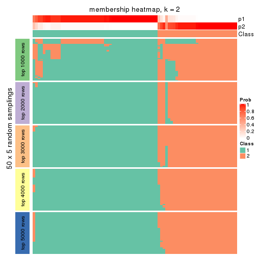
membership_heatmap(res, k = 3)
membership_heatmap(res, k = 4)
membership_heatmap(res, k = 5)

membership_heatmap(res, k = 6)
As soon as we have had the classes for columns, we can look for signatures which are significantly different between classes which can be candidate marks for certain classes. Following are the heatmaps for signatures.
Signature heatmaps where rows are scaled:
get_signatures(res, k = 2)
get_signatures(res, k = 3)
get_signatures(res, k = 4)
get_signatures(res, k = 5)
get_signatures(res, k = 6)
Signature heatmaps where rows are not scaled:
get_signatures(res, k = 2, scale_rows = FALSE)
get_signatures(res, k = 3, scale_rows = FALSE)
get_signatures(res, k = 4, scale_rows = FALSE)
get_signatures(res, k = 5, scale_rows = FALSE)
get_signatures(res, k = 6, scale_rows = FALSE)
Compare the overlap of signatures from different k:
compare_signatures(res)
get_signature() returns a data frame invisibly. TO get the list of signatures, the function
call should be assigned to a variable explicitly. In following code, if plot argument is set
to FALSE, no heatmap is plotted while only the differential analysis is performed.
# code only for demonstration
tb = get_signature(res, k = ..., plot = FALSE)
An example of the output of tb is:
#> which_row fdr mean_1 mean_2 scaled_mean_1 scaled_mean_2 km
#> 1 38 0.042760348 8.373488 9.131774 -0.5533452 0.5164555 1
#> 2 40 0.018707592 7.106213 8.469186 -0.6173731 0.5762149 1
#> 3 55 0.019134737 10.221463 11.207825 -0.6159697 0.5749050 1
#> 4 59 0.006059896 5.921854 7.869574 -0.6899429 0.6439467 1
#> 5 60 0.018055526 8.928898 10.211722 -0.6204761 0.5791110 1
#> 6 98 0.009384629 15.714769 14.887706 0.6635654 -0.6193277 2
...
The columns in tb are:
which_row: row indices corresponding to the input matrix.fdr: FDR for the differential test. mean_x: The mean value in group x.scaled_mean_x: The mean value in group x after rows are scaled.km: Row groups if k-means clustering is applied to rows.UMAP plot which shows how samples are separated.
dimension_reduction(res, k = 2, method = "UMAP")
dimension_reduction(res, k = 3, method = "UMAP")
dimension_reduction(res, k = 4, method = "UMAP")
dimension_reduction(res, k = 5, method = "UMAP")
dimension_reduction(res, k = 6, method = "UMAP")
Following heatmap shows how subgroups are split when increasing k:
collect_classes(res)
If matrix rows can be associated to genes, consider to use GO_Enrichment(res,
...) to perform function enrichment for the signature genes.
The object with results only for a single top-value method and a single partition method can be extracted as:
res = res_list["ATC", "hclust"]
# you can also extract it by
# res = res_list["ATC:hclust"]
A summary of res and all the functions that can be applied to it:
res
#> A 'ConsensusPartition' object with k = 2, 3, 4, 5, 6.
#> On a matrix with 16751 rows and 80 columns.
#> Top rows (1000, 2000, 3000, 4000, 5000) are extracted by 'ATC' method.
#> Subgroups are detected by 'hclust' method.
#> Performed in total 1250 partitions by row resampling.
#> Best k for subgroups seems to be 2.
#>
#> Following methods can be applied to this 'ConsensusPartition' object:
#> [1] "cola_report" "collect_classes" "collect_plots"
#> [4] "collect_stats" "colnames" "compare_signatures"
#> [7] "consensus_heatmap" "dimension_reduction" "functional_enrichment"
#> [10] "get_anno_col" "get_anno" "get_classes"
#> [13] "get_consensus" "get_matrix" "get_membership"
#> [16] "get_param" "get_signatures" "get_stats"
#> [19] "is_best_k" "is_stable_k" "membership_heatmap"
#> [22] "ncol" "nrow" "plot_ecdf"
#> [25] "rownames" "select_partition_number" "show"
#> [28] "suggest_best_k" "test_to_known_factors"
collect_plots() function collects all the plots made from res for all k (number of partitions)
into one single page to provide an easy and fast comparison between different k.
collect_plots(res)
The plots are:
k and the heatmap of
predicted classes for each k.k.k.k.All the plots in panels can be made by individual functions and they are plotted later in this section.
select_partition_number() produces several plots showing different
statistics for choosing “optimized” k. There are following statistics:
k;k, the area increased is defined as \(A_k - A_{k-1}\).The detailed explanations of these statistics can be found in the cola vignette.
Generally speaking, lower PAC score, higher mean silhouette score or higher
concordance corresponds to better partition. Rand index and Jaccard index
measure how similar the current partition is compared to partition with k-1.
If they are too similar, we won't accept k is better than k-1.
select_partition_number(res)
The numeric values for all these statistics can be obtained by get_stats().
get_stats(res)
#> k 1-PAC mean_silhouette concordance area_increased Rand Jaccard
#> 2 2 0.510 0.783 0.902 0.4720 0.514 0.514
#> 3 3 0.543 0.710 0.860 0.3812 0.746 0.536
#> 4 4 0.685 0.680 0.848 0.1333 0.826 0.535
#> 5 5 0.710 0.595 0.791 0.0738 0.881 0.582
#> 6 6 0.755 0.578 0.767 0.0363 0.912 0.627
suggest_best_k() suggests the best \(k\) based on these statistics. The rules are as follows:
NA.suggest_best_k(res)
#> [1] 2
Following shows the table of the partitions (You need to click the show/hide
code output link to see it). The membership matrix (columns with name p*)
is inferred by
clue::cl_consensus()
function with the SE method. Basically the value in the membership matrix
represents the probability to belong to a certain group. The finall class
label for an item is determined with the group with highest probability it
belongs to.
In get_classes() function, the entropy is calculated from the membership
matrix and the silhouette score is calculated from the consensus matrix.
cbind(get_classes(res, k = 2), get_membership(res, k = 2))
#> class entropy silhouette p1 p2
#> 71A0AB6A-CFC2-46F6-878C-6052C5B43D22 1 0.0000 0.857 1.000 0.000
#> EFC730EC-6385-4167-A65A-F2A3AAEDA2AC 1 0.8763 0.645 0.704 0.296
#> 14F2F39A-EA0F-4027-8877-FEEEEFF1F085 2 0.0000 0.910 0.000 1.000
#> 98B2A7F8-A7BD-4DA2-8541-950E44D9ACD7 2 0.0000 0.910 0.000 1.000
#> 9166F454-2068-46C2-B2EB-FB3BE4126536 1 0.0000 0.857 1.000 0.000
#> 83B2A0BB-CE24-4DCA-B03A-D20353304365 2 0.0000 0.910 0.000 1.000
#> D3FC3968-B263-4756-BF7F-1941F70B04DA 2 0.0000 0.910 0.000 1.000
#> D357AC5C-C2A0-4CC4-B016-4572400AF117 2 0.0000 0.910 0.000 1.000
#> 1055E951-5B93-4AD7-BE5C-4DF4F6AECEF3 2 0.4298 0.841 0.088 0.912
#> F2995599-3F21-4F33-92BB-7D70A4735938 1 0.0000 0.857 1.000 0.000
#> 3EE533BD-5832-4007-8F1F-439166256EB0 2 0.7883 0.652 0.236 0.764
#> EEC6DA0C-5C49-4EFE-976A-19F432DDAA58 1 0.8763 0.645 0.704 0.296
#> E6E08C1A-4C1B-4572-92DF-DA15BCBADF76 2 0.5842 0.786 0.140 0.860
#> BCFCBBAC-EB95-47EB-9EB0-2CB4AE283A75 1 0.6887 0.759 0.816 0.184
#> 0782D6D0-668B-4B83-8C91-8A35EA3BFF6D 2 0.0000 0.910 0.000 1.000
#> AC78918E-1031-4AE6-B753-B0799171F0F0 1 0.0000 0.857 1.000 0.000
#> 6B497CED-34DA-4CF8-8F8D-696105CB3D5F 1 0.0000 0.857 1.000 0.000
#> 2328D472-583B-43A9-81A4-A21DDEBB5B18 2 0.3733 0.856 0.072 0.928
#> A6930B33-D9B2-4318-807C-4A25EB4CCCDD 2 0.0000 0.910 0.000 1.000
#> C8C48AFD-4D8B-491E-993C-3506DC6DD00F 1 0.0000 0.857 1.000 0.000
#> 093FB845-7905-4064-8E8E-76E3587D8E7C 1 0.0000 0.857 1.000 0.000
#> B216F996-CCD8-4F56-99B1-4EA9769B10B8 1 0.0376 0.855 0.996 0.004
#> CB35DED2-5FEA-43E2-AB42-B6B3A7444B66 1 0.0000 0.857 1.000 0.000
#> BA016F57-F58F-4A66-B85A-0B0F911EEA65 1 0.9850 0.387 0.572 0.428
#> 519DBD5F-66C0-4CEE-905C-799C855D28FB 1 0.0000 0.857 1.000 0.000
#> F5B9B89B-6821-43EE-BCFD-623689D03AF9 2 0.0000 0.910 0.000 1.000
#> 55A39F92-CC88-4A2F-A7D3-7A59DEBEBB42 1 0.9087 0.607 0.676 0.324
#> 3DBBDEDA-F9FC-40DC-804F-45429EA47ED4 1 0.9044 0.613 0.680 0.320
#> BB948BE8-7D48-4AEB-A404-C27A79655D7E 1 0.0000 0.857 1.000 0.000
#> 9506723F-9193-4D8E-BD97-8A0062AB2F9C 1 0.0000 0.857 1.000 0.000
#> D0758A7A-9D0E-4EA4-8EE9-7143B398647D 1 0.0000 0.857 1.000 0.000
#> F400FD4D-72D7-4933-B145-64B7EE245FFC 2 0.0000 0.910 0.000 1.000
#> 3F87E9ED-3719-48E1-8B69-E352A03E982D 1 0.9044 0.613 0.680 0.320
#> D6365FEB-CC12-4337-BF8C-66236A585B5D 2 0.7883 0.652 0.236 0.764
#> A4168812-C38E-4F15-9AF6-79F256279E72 1 0.0000 0.857 1.000 0.000
#> DB676839-02AA-42A7-962F-89D6AD892008 1 0.0000 0.857 1.000 0.000
#> 198D8E89-51FD-41DE-AD11-FB2F2FE49908 2 0.0000 0.910 0.000 1.000
#> 2BADCD01-27E8-49EC-B707-4FAE3D3CB489 1 0.0000 0.857 1.000 0.000
#> ABBD6EFE-079B-4BE3-95AB-36AF9197D684 2 0.0000 0.910 0.000 1.000
#> 39D66B95-61C7-4B76-8E81-1F9F98024B69 1 0.0000 0.857 1.000 0.000
#> 7A920210-CF3D-4458-B6D5-D9B2ADACA469 1 0.0000 0.857 1.000 0.000
#> 0CE61CDC-3257-4F03-951B-CC2CFCF675AE 2 0.0000 0.910 0.000 1.000
#> 7338D61C-77D6-4095-8847-7FD9967B7646 1 0.9833 0.397 0.576 0.424
#> 0D36FAD5-BA81-4FED-9E2A-DB016F2EF18C 1 0.0000 0.857 1.000 0.000
#> 43CD31CD-5FAE-418A-B235-49E54560590D 2 0.0000 0.910 0.000 1.000
#> B6DD72B0-EEFA-41A9-B71D-22DE1343CD32 1 0.6887 0.759 0.816 0.184
#> 2B729CD9-71A5-4336-ACBA-922A30AF4949 2 0.9427 0.380 0.360 0.640
#> B76DB955-69B7-4D05-8166-2569ED44628C 1 0.0000 0.857 1.000 0.000
#> 09CBEE39-7141-4228-AFD3-4714E32A1FB5 2 0.0000 0.910 0.000 1.000
#> AC1700D5-72E7-4C7F-A288-869DFC229252 1 0.0000 0.857 1.000 0.000
#> 535A5E8E-8478-477F-87FF-ED6742AA5473 2 0.0000 0.910 0.000 1.000
#> CFB8573C-9F36-4715-B6F1-6E5B543168A8 1 0.9087 0.607 0.676 0.324
#> 47A45491-6023-44BF-ABC2-9A470F7FC1F7 1 0.9896 0.352 0.560 0.440
#> 437C7AA7-98C0-48C7-97DA-86FF44D69B87 2 0.0000 0.910 0.000 1.000
#> 649ADE7E-6C06-4AB6-8E97-D8C2AAF79A7E 2 0.9393 0.392 0.356 0.644
#> DEA60B47-AD6A-4EBB-9402-6F97E9640E4E 2 0.0000 0.910 0.000 1.000
#> 76C574FF-26BF-49CD-9BCA-7BDDCBD06D5D 2 0.0000 0.910 0.000 1.000
#> 8B6E1F9B-1E90-4333-8E0C-EEDFF25D15C0 1 0.9044 0.613 0.680 0.320
#> A2473EE7-72D6-4D32-9DF7-5D4E444A6715 1 0.9850 0.387 0.572 0.428
#> E226C45E-5287-4D0F-A34B-CE251FA293CB 1 0.3431 0.829 0.936 0.064
#> A2C71C07-AF0C-4016-808C-DFEF458C91C7 1 0.0000 0.857 1.000 0.000
#> DA00D60F-4CF1-4003-BAF5-896EE2BEE2D4 1 0.9850 0.387 0.572 0.428
#> 1C17B65F-1930-4CF3-99B6-5D3AA9E99188 2 0.0000 0.910 0.000 1.000
#> B837D582-A0D3-46BE-8ECA-883F5396AE88 1 0.0000 0.857 1.000 0.000
#> EF1A102F-C206-4874-8F27-0BF069A613B8 1 0.7056 0.753 0.808 0.192
#> BC761676-F64C-476A-8D9B-BD3E6149B2CD 2 0.9393 0.392 0.356 0.644
#> D8351E5C-DC1D-4B4D-83E6-735B2750D944 2 0.9393 0.392 0.356 0.644
#> 59F65F61-03D0-4909-99BD-4CCB53A088A5 1 0.6887 0.759 0.816 0.184
#> EFFCCF33-60E1-4550-B13C-14C54ADCF479 1 0.9044 0.613 0.680 0.320
#> C45EB423-CC14-4BDB-A0B4-447E5DB6DA9C 1 0.0000 0.857 1.000 0.000
#> D34B0BC6-9142-48AE-A113-5923192644A0 1 0.6887 0.759 0.816 0.184
#> 634672A6-C68E-479F-AAB5-CBAFF7758EA4 1 0.0000 0.857 1.000 0.000
#> 06DAE086-D960-4156-9DC8-D126338E2F29 2 0.0000 0.910 0.000 1.000
#> 3353F579-77CA-4D0E-B794-37DE467CC065 1 0.0000 0.857 1.000 0.000
#> 976507F2-192B-4095-920A-3014889CD617 1 0.0000 0.857 1.000 0.000
#> 3FFF89D9-02F5-4D49-8631-099562BF99C7 2 0.0000 0.910 0.000 1.000
#> 8BC2213D-99DA-44E0-826F-EBF211EECFBF 1 0.0000 0.857 1.000 0.000
#> A7A16BF7-5E60-4E50-BE04-542EFC4DB472 2 0.0000 0.910 0.000 1.000
#> E25C9578-9493-466E-A2CD-546DEB076B2D 2 0.0000 0.910 0.000 1.000
#> EA35E230-DE50-45AB-A737-D5C430652A90 1 0.0000 0.857 1.000 0.000
cbind(get_classes(res, k = 3), get_membership(res, k = 3))
#> class entropy silhouette p1 p2 p3
#> 71A0AB6A-CFC2-46F6-878C-6052C5B43D22 3 0.0000 0.826 0.000 0.000 1.000
#> EFC730EC-6385-4167-A65A-F2A3AAEDA2AC 1 0.3879 0.730 0.848 0.000 0.152
#> 14F2F39A-EA0F-4027-8877-FEEEEFF1F085 2 0.0000 0.869 0.000 1.000 0.000
#> 98B2A7F8-A7BD-4DA2-8541-950E44D9ACD7 2 0.0000 0.869 0.000 1.000 0.000
#> 9166F454-2068-46C2-B2EB-FB3BE4126536 3 0.6168 0.416 0.412 0.000 0.588
#> 83B2A0BB-CE24-4DCA-B03A-D20353304365 2 0.0000 0.869 0.000 1.000 0.000
#> D3FC3968-B263-4756-BF7F-1941F70B04DA 2 0.4654 0.828 0.208 0.792 0.000
#> D357AC5C-C2A0-4CC4-B016-4572400AF117 2 0.3267 0.875 0.116 0.884 0.000
#> 1055E951-5B93-4AD7-BE5C-4DF4F6AECEF3 2 0.5948 0.607 0.360 0.640 0.000
#> F2995599-3F21-4F33-92BB-7D70A4735938 3 0.0000 0.826 0.000 0.000 1.000
#> 3EE533BD-5832-4007-8F1F-439166256EB0 1 0.6274 -0.141 0.544 0.456 0.000
#> EEC6DA0C-5C49-4EFE-976A-19F432DDAA58 1 0.3941 0.727 0.844 0.000 0.156
#> E6E08C1A-4C1B-4572-92DF-DA15BCBADF76 2 0.6204 0.467 0.424 0.576 0.000
#> BCFCBBAC-EB95-47EB-9EB0-2CB4AE283A75 1 0.5363 0.574 0.724 0.000 0.276
#> 0782D6D0-668B-4B83-8C91-8A35EA3BFF6D 2 0.0000 0.869 0.000 1.000 0.000
#> AC78918E-1031-4AE6-B753-B0799171F0F0 3 0.0000 0.826 0.000 0.000 1.000
#> 6B497CED-34DA-4CF8-8F8D-696105CB3D5F 3 0.0000 0.826 0.000 0.000 1.000
#> 2328D472-583B-43A9-81A4-A21DDEBB5B18 2 0.5431 0.738 0.284 0.716 0.000
#> A6930B33-D9B2-4318-807C-4A25EB4CCCDD 2 0.0000 0.869 0.000 1.000 0.000
#> C8C48AFD-4D8B-491E-993C-3506DC6DD00F 3 0.0000 0.826 0.000 0.000 1.000
#> 093FB845-7905-4064-8E8E-76E3587D8E7C 3 0.6252 0.346 0.444 0.000 0.556
#> B216F996-CCD8-4F56-99B1-4EA9769B10B8 3 0.5785 0.543 0.332 0.000 0.668
#> CB35DED2-5FEA-43E2-AB42-B6B3A7444B66 3 0.6252 0.346 0.444 0.000 0.556
#> BA016F57-F58F-4A66-B85A-0B0F911EEA65 1 0.0237 0.762 0.996 0.004 0.000
#> 519DBD5F-66C0-4CEE-905C-799C855D28FB 3 0.0000 0.826 0.000 0.000 1.000
#> F5B9B89B-6821-43EE-BCFD-623689D03AF9 2 0.0000 0.869 0.000 1.000 0.000
#> 55A39F92-CC88-4A2F-A7D3-7A59DEBEBB42 1 0.2959 0.762 0.900 0.000 0.100
#> 3DBBDEDA-F9FC-40DC-804F-45429EA47ED4 1 0.3038 0.762 0.896 0.000 0.104
#> BB948BE8-7D48-4AEB-A404-C27A79655D7E 3 0.0000 0.826 0.000 0.000 1.000
#> 9506723F-9193-4D8E-BD97-8A0062AB2F9C 3 0.0000 0.826 0.000 0.000 1.000
#> D0758A7A-9D0E-4EA4-8EE9-7143B398647D 3 0.5591 0.576 0.304 0.000 0.696
#> F400FD4D-72D7-4933-B145-64B7EE245FFC 2 0.0000 0.869 0.000 1.000 0.000
#> 3F87E9ED-3719-48E1-8B69-E352A03E982D 1 0.3038 0.762 0.896 0.000 0.104
#> D6365FEB-CC12-4337-BF8C-66236A585B5D 1 0.6274 -0.141 0.544 0.456 0.000
#> A4168812-C38E-4F15-9AF6-79F256279E72 3 0.6252 0.346 0.444 0.000 0.556
#> DB676839-02AA-42A7-962F-89D6AD892008 3 0.0000 0.826 0.000 0.000 1.000
#> 198D8E89-51FD-41DE-AD11-FB2F2FE49908 2 0.3267 0.875 0.116 0.884 0.000
#> 2BADCD01-27E8-49EC-B707-4FAE3D3CB489 3 0.0000 0.826 0.000 0.000 1.000
#> ABBD6EFE-079B-4BE3-95AB-36AF9197D684 2 0.0000 0.869 0.000 1.000 0.000
#> 39D66B95-61C7-4B76-8E81-1F9F98024B69 3 0.0000 0.826 0.000 0.000 1.000
#> 7A920210-CF3D-4458-B6D5-D9B2ADACA469 3 0.0000 0.826 0.000 0.000 1.000
#> 0CE61CDC-3257-4F03-951B-CC2CFCF675AE 2 0.4654 0.828 0.208 0.792 0.000
#> 7338D61C-77D6-4095-8847-7FD9967B7646 1 0.0000 0.761 1.000 0.000 0.000
#> 0D36FAD5-BA81-4FED-9E2A-DB016F2EF18C 3 0.0000 0.826 0.000 0.000 1.000
#> 43CD31CD-5FAE-418A-B235-49E54560590D 2 0.4931 0.799 0.232 0.768 0.000
#> B6DD72B0-EEFA-41A9-B71D-22DE1343CD32 1 0.5138 0.616 0.748 0.000 0.252
#> 2B729CD9-71A5-4336-ACBA-922A30AF4949 1 0.4750 0.546 0.784 0.216 0.000
#> B76DB955-69B7-4D05-8166-2569ED44628C 3 0.0000 0.826 0.000 0.000 1.000
#> 09CBEE39-7141-4228-AFD3-4714E32A1FB5 2 0.3482 0.871 0.128 0.872 0.000
#> AC1700D5-72E7-4C7F-A288-869DFC229252 3 0.0000 0.826 0.000 0.000 1.000
#> 535A5E8E-8478-477F-87FF-ED6742AA5473 2 0.5016 0.794 0.240 0.760 0.000
#> CFB8573C-9F36-4715-B6F1-6E5B543168A8 1 0.2959 0.762 0.900 0.000 0.100
#> 47A45491-6023-44BF-ABC2-9A470F7FC1F7 1 0.0747 0.759 0.984 0.016 0.000
#> 437C7AA7-98C0-48C7-97DA-86FF44D69B87 2 0.0000 0.869 0.000 1.000 0.000
#> 649ADE7E-6C06-4AB6-8E97-D8C2AAF79A7E 1 0.4796 0.540 0.780 0.220 0.000
#> DEA60B47-AD6A-4EBB-9402-6F97E9640E4E 2 0.3267 0.875 0.116 0.884 0.000
#> 76C574FF-26BF-49CD-9BCA-7BDDCBD06D5D 2 0.0000 0.869 0.000 1.000 0.000
#> 8B6E1F9B-1E90-4333-8E0C-EEDFF25D15C0 1 0.3038 0.762 0.896 0.000 0.104
#> A2473EE7-72D6-4D32-9DF7-5D4E444A6715 1 0.0237 0.762 0.996 0.004 0.000
#> E226C45E-5287-4D0F-A34B-CE251FA293CB 3 0.6307 0.194 0.488 0.000 0.512
#> A2C71C07-AF0C-4016-808C-DFEF458C91C7 3 0.0000 0.826 0.000 0.000 1.000
#> DA00D60F-4CF1-4003-BAF5-896EE2BEE2D4 1 0.0237 0.762 0.996 0.004 0.000
#> 1C17B65F-1930-4CF3-99B6-5D3AA9E99188 2 0.4654 0.828 0.208 0.792 0.000
#> B837D582-A0D3-46BE-8ECA-883F5396AE88 3 0.6154 0.424 0.408 0.000 0.592
#> EF1A102F-C206-4874-8F27-0BF069A613B8 1 0.5291 0.589 0.732 0.000 0.268
#> BC761676-F64C-476A-8D9B-BD3E6149B2CD 1 0.4796 0.540 0.780 0.220 0.000
#> D8351E5C-DC1D-4B4D-83E6-735B2750D944 1 0.4796 0.540 0.780 0.220 0.000
#> 59F65F61-03D0-4909-99BD-4CCB53A088A5 1 0.5138 0.616 0.748 0.000 0.252
#> EFFCCF33-60E1-4550-B13C-14C54ADCF479 1 0.3038 0.762 0.896 0.000 0.104
#> C45EB423-CC14-4BDB-A0B4-447E5DB6DA9C 3 0.0000 0.826 0.000 0.000 1.000
#> D34B0BC6-9142-48AE-A113-5923192644A0 1 0.5138 0.616 0.748 0.000 0.252
#> 634672A6-C68E-479F-AAB5-CBAFF7758EA4 3 0.0000 0.826 0.000 0.000 1.000
#> 06DAE086-D960-4156-9DC8-D126338E2F29 2 0.0000 0.869 0.000 1.000 0.000
#> 3353F579-77CA-4D0E-B794-37DE467CC065 3 0.6154 0.424 0.408 0.000 0.592
#> 976507F2-192B-4095-920A-3014889CD617 3 0.0000 0.826 0.000 0.000 1.000
#> 3FFF89D9-02F5-4D49-8631-099562BF99C7 2 0.3941 0.862 0.156 0.844 0.000
#> 8BC2213D-99DA-44E0-826F-EBF211EECFBF 3 0.0000 0.826 0.000 0.000 1.000
#> A7A16BF7-5E60-4E50-BE04-542EFC4DB472 2 0.3267 0.875 0.116 0.884 0.000
#> E25C9578-9493-466E-A2CD-546DEB076B2D 2 0.3267 0.875 0.116 0.884 0.000
#> EA35E230-DE50-45AB-A737-D5C430652A90 3 0.6252 0.346 0.444 0.000 0.556
cbind(get_classes(res, k = 4), get_membership(res, k = 4))
#> class entropy silhouette p1 p2 p3 p4
#> 71A0AB6A-CFC2-46F6-878C-6052C5B43D22 3 0.0000 0.9687 0.000 0.000 1.000 0.000
#> EFC730EC-6385-4167-A65A-F2A3AAEDA2AC 1 0.2589 0.6617 0.884 0.000 0.000 0.116
#> 14F2F39A-EA0F-4027-8877-FEEEEFF1F085 2 0.0000 0.7942 0.000 1.000 0.000 0.000
#> 98B2A7F8-A7BD-4DA2-8541-950E44D9ACD7 2 0.0000 0.7942 0.000 1.000 0.000 0.000
#> 9166F454-2068-46C2-B2EB-FB3BE4126536 1 0.4697 0.5451 0.644 0.000 0.356 0.000
#> 83B2A0BB-CE24-4DCA-B03A-D20353304365 2 0.0000 0.7942 0.000 1.000 0.000 0.000
#> D3FC3968-B263-4756-BF7F-1941F70B04DA 2 0.4925 0.4696 0.000 0.572 0.000 0.428
#> D357AC5C-C2A0-4CC4-B016-4572400AF117 2 0.3219 0.7656 0.000 0.836 0.000 0.164
#> 1055E951-5B93-4AD7-BE5C-4DF4F6AECEF3 4 0.4907 -0.0812 0.000 0.420 0.000 0.580
#> F2995599-3F21-4F33-92BB-7D70A4735938 3 0.0188 0.9658 0.004 0.000 0.996 0.000
#> 3EE533BD-5832-4007-8F1F-439166256EB0 4 0.3942 0.4330 0.000 0.236 0.000 0.764
#> EEC6DA0C-5C49-4EFE-976A-19F432DDAA58 1 0.2773 0.6641 0.880 0.000 0.004 0.116
#> E6E08C1A-4C1B-4572-92DF-DA15BCBADF76 4 0.4697 0.1482 0.000 0.356 0.000 0.644
#> BCFCBBAC-EB95-47EB-9EB0-2CB4AE283A75 1 0.0336 0.6912 0.992 0.000 0.008 0.000
#> 0782D6D0-668B-4B83-8C91-8A35EA3BFF6D 2 0.0000 0.7942 0.000 1.000 0.000 0.000
#> AC78918E-1031-4AE6-B753-B0799171F0F0 3 0.0000 0.9687 0.000 0.000 1.000 0.000
#> 6B497CED-34DA-4CF8-8F8D-696105CB3D5F 3 0.0000 0.9687 0.000 0.000 1.000 0.000
#> 2328D472-583B-43A9-81A4-A21DDEBB5B18 4 0.5000 -0.3334 0.000 0.496 0.000 0.504
#> A6930B33-D9B2-4318-807C-4A25EB4CCCDD 2 0.0000 0.7942 0.000 1.000 0.000 0.000
#> C8C48AFD-4D8B-491E-993C-3506DC6DD00F 3 0.0000 0.9687 0.000 0.000 1.000 0.000
#> 093FB845-7905-4064-8E8E-76E3587D8E7C 1 0.4543 0.5913 0.676 0.000 0.324 0.000
#> B216F996-CCD8-4F56-99B1-4EA9769B10B8 1 0.4977 0.3188 0.540 0.000 0.460 0.000
#> CB35DED2-5FEA-43E2-AB42-B6B3A7444B66 1 0.4543 0.5913 0.676 0.000 0.324 0.000
#> BA016F57-F58F-4A66-B85A-0B0F911EEA65 4 0.3764 0.5344 0.216 0.000 0.000 0.784
#> 519DBD5F-66C0-4CEE-905C-799C855D28FB 3 0.0336 0.9626 0.008 0.000 0.992 0.000
#> F5B9B89B-6821-43EE-BCFD-623689D03AF9 2 0.0336 0.7961 0.000 0.992 0.000 0.008
#> 55A39F92-CC88-4A2F-A7D3-7A59DEBEBB42 1 0.3873 0.5930 0.772 0.000 0.000 0.228
#> 3DBBDEDA-F9FC-40DC-804F-45429EA47ED4 1 0.4040 0.5708 0.752 0.000 0.000 0.248
#> BB948BE8-7D48-4AEB-A404-C27A79655D7E 3 0.0000 0.9687 0.000 0.000 1.000 0.000
#> 9506723F-9193-4D8E-BD97-8A0062AB2F9C 3 0.0000 0.9687 0.000 0.000 1.000 0.000
#> D0758A7A-9D0E-4EA4-8EE9-7143B398647D 3 0.4985 -0.1769 0.468 0.000 0.532 0.000
#> F400FD4D-72D7-4933-B145-64B7EE245FFC 2 0.0336 0.7961 0.000 0.992 0.000 0.008
#> 3F87E9ED-3719-48E1-8B69-E352A03E982D 1 0.4072 0.5670 0.748 0.000 0.000 0.252
#> D6365FEB-CC12-4337-BF8C-66236A585B5D 4 0.3942 0.4330 0.000 0.236 0.000 0.764
#> A4168812-C38E-4F15-9AF6-79F256279E72 1 0.4543 0.5913 0.676 0.000 0.324 0.000
#> DB676839-02AA-42A7-962F-89D6AD892008 3 0.0000 0.9687 0.000 0.000 1.000 0.000
#> 198D8E89-51FD-41DE-AD11-FB2F2FE49908 2 0.3074 0.7697 0.000 0.848 0.000 0.152
#> 2BADCD01-27E8-49EC-B707-4FAE3D3CB489 3 0.0000 0.9687 0.000 0.000 1.000 0.000
#> ABBD6EFE-079B-4BE3-95AB-36AF9197D684 2 0.0000 0.7942 0.000 1.000 0.000 0.000
#> 39D66B95-61C7-4B76-8E81-1F9F98024B69 3 0.0000 0.9687 0.000 0.000 1.000 0.000
#> 7A920210-CF3D-4458-B6D5-D9B2ADACA469 3 0.0000 0.9687 0.000 0.000 1.000 0.000
#> 0CE61CDC-3257-4F03-951B-CC2CFCF675AE 2 0.4925 0.4696 0.000 0.572 0.000 0.428
#> 7338D61C-77D6-4095-8847-7FD9967B7646 4 0.4500 0.3744 0.316 0.000 0.000 0.684
#> 0D36FAD5-BA81-4FED-9E2A-DB016F2EF18C 3 0.0336 0.9626 0.008 0.000 0.992 0.000
#> 43CD31CD-5FAE-418A-B235-49E54560590D 2 0.4888 0.4946 0.000 0.588 0.000 0.412
#> B6DD72B0-EEFA-41A9-B71D-22DE1343CD32 1 0.1151 0.6930 0.968 0.000 0.008 0.024
#> 2B729CD9-71A5-4336-ACBA-922A30AF4949 4 0.0188 0.6720 0.004 0.000 0.000 0.996
#> B76DB955-69B7-4D05-8166-2569ED44628C 3 0.0336 0.9626 0.008 0.000 0.992 0.000
#> 09CBEE39-7141-4228-AFD3-4714E32A1FB5 2 0.4431 0.6509 0.000 0.696 0.000 0.304
#> AC1700D5-72E7-4C7F-A288-869DFC229252 3 0.0000 0.9687 0.000 0.000 1.000 0.000
#> 535A5E8E-8478-477F-87FF-ED6742AA5473 2 0.4907 0.4781 0.000 0.580 0.000 0.420
#> CFB8573C-9F36-4715-B6F1-6E5B543168A8 1 0.3649 0.6106 0.796 0.000 0.000 0.204
#> 47A45491-6023-44BF-ABC2-9A470F7FC1F7 4 0.3649 0.5475 0.204 0.000 0.000 0.796
#> 437C7AA7-98C0-48C7-97DA-86FF44D69B87 2 0.0336 0.7961 0.000 0.992 0.000 0.008
#> 649ADE7E-6C06-4AB6-8E97-D8C2AAF79A7E 4 0.0000 0.6715 0.000 0.000 0.000 1.000
#> DEA60B47-AD6A-4EBB-9402-6F97E9640E4E 2 0.3074 0.7697 0.000 0.848 0.000 0.152
#> 76C574FF-26BF-49CD-9BCA-7BDDCBD06D5D 2 0.0000 0.7942 0.000 1.000 0.000 0.000
#> 8B6E1F9B-1E90-4333-8E0C-EEDFF25D15C0 1 0.4072 0.5670 0.748 0.000 0.000 0.252
#> A2473EE7-72D6-4D32-9DF7-5D4E444A6715 4 0.3764 0.5344 0.216 0.000 0.000 0.784
#> E226C45E-5287-4D0F-A34B-CE251FA293CB 1 0.4277 0.6273 0.720 0.000 0.280 0.000
#> A2C71C07-AF0C-4016-808C-DFEF458C91C7 3 0.0000 0.9687 0.000 0.000 1.000 0.000
#> DA00D60F-4CF1-4003-BAF5-896EE2BEE2D4 4 0.3764 0.5344 0.216 0.000 0.000 0.784
#> 1C17B65F-1930-4CF3-99B6-5D3AA9E99188 2 0.4925 0.4696 0.000 0.572 0.000 0.428
#> B837D582-A0D3-46BE-8ECA-883F5396AE88 1 0.4713 0.5392 0.640 0.000 0.360 0.000
#> EF1A102F-C206-4874-8F27-0BF069A613B8 1 0.0672 0.6925 0.984 0.000 0.008 0.008
#> BC761676-F64C-476A-8D9B-BD3E6149B2CD 4 0.0000 0.6715 0.000 0.000 0.000 1.000
#> D8351E5C-DC1D-4B4D-83E6-735B2750D944 4 0.0000 0.6715 0.000 0.000 0.000 1.000
#> 59F65F61-03D0-4909-99BD-4CCB53A088A5 1 0.1151 0.6930 0.968 0.000 0.008 0.024
#> EFFCCF33-60E1-4550-B13C-14C54ADCF479 1 0.4072 0.5670 0.748 0.000 0.000 0.252
#> C45EB423-CC14-4BDB-A0B4-447E5DB6DA9C 3 0.0000 0.9687 0.000 0.000 1.000 0.000
#> D34B0BC6-9142-48AE-A113-5923192644A0 1 0.1151 0.6930 0.968 0.000 0.008 0.024
#> 634672A6-C68E-479F-AAB5-CBAFF7758EA4 3 0.0000 0.9687 0.000 0.000 1.000 0.000
#> 06DAE086-D960-4156-9DC8-D126338E2F29 2 0.0336 0.7961 0.000 0.992 0.000 0.008
#> 3353F579-77CA-4D0E-B794-37DE467CC065 1 0.4713 0.5392 0.640 0.000 0.360 0.000
#> 976507F2-192B-4095-920A-3014889CD617 3 0.0000 0.9687 0.000 0.000 1.000 0.000
#> 3FFF89D9-02F5-4D49-8631-099562BF99C7 2 0.4761 0.5701 0.000 0.628 0.000 0.372
#> 8BC2213D-99DA-44E0-826F-EBF211EECFBF 3 0.0000 0.9687 0.000 0.000 1.000 0.000
#> A7A16BF7-5E60-4E50-BE04-542EFC4DB472 2 0.3219 0.7656 0.000 0.836 0.000 0.164
#> E25C9578-9493-466E-A2CD-546DEB076B2D 2 0.3219 0.7656 0.000 0.836 0.000 0.164
#> EA35E230-DE50-45AB-A737-D5C430652A90 1 0.4543 0.5913 0.676 0.000 0.324 0.000
cbind(get_classes(res, k = 5), get_membership(res, k = 5))
#> class entropy silhouette p1 p2 p3 p4 p5
#> 71A0AB6A-CFC2-46F6-878C-6052C5B43D22 3 0.3949 0.6124 0.000 0.000 0.668 0.000 0.332
#> EFC730EC-6385-4167-A65A-F2A3AAEDA2AC 1 0.3684 0.6112 0.720 0.000 0.000 0.000 0.280
#> 14F2F39A-EA0F-4027-8877-FEEEEFF1F085 2 0.0162 0.7918 0.000 0.996 0.000 0.000 0.004
#> 98B2A7F8-A7BD-4DA2-8541-950E44D9ACD7 2 0.0162 0.7918 0.000 0.996 0.000 0.000 0.004
#> 9166F454-2068-46C2-B2EB-FB3BE4126536 5 0.4990 0.6009 0.048 0.000 0.324 0.000 0.628
#> 83B2A0BB-CE24-4DCA-B03A-D20353304365 2 0.0162 0.7918 0.000 0.996 0.000 0.000 0.004
#> D3FC3968-B263-4756-BF7F-1941F70B04DA 4 0.4777 0.3503 0.000 0.292 0.000 0.664 0.044
#> D357AC5C-C2A0-4CC4-B016-4572400AF117 2 0.5133 0.3946 0.000 0.568 0.000 0.388 0.044
#> 1055E951-5B93-4AD7-BE5C-4DF4F6AECEF3 4 0.3595 0.5050 0.000 0.140 0.000 0.816 0.044
#> F2995599-3F21-4F33-92BB-7D70A4735938 3 0.0290 0.8812 0.000 0.000 0.992 0.000 0.008
#> 3EE533BD-5832-4007-8F1F-439166256EB0 4 0.0000 0.5704 0.000 0.000 0.000 1.000 0.000
#> EEC6DA0C-5C49-4EFE-976A-19F432DDAA58 1 0.3796 0.5998 0.700 0.000 0.000 0.000 0.300
#> E6E08C1A-4C1B-4572-92DF-DA15BCBADF76 4 0.2280 0.5313 0.000 0.120 0.000 0.880 0.000
#> BCFCBBAC-EB95-47EB-9EB0-2CB4AE283A75 1 0.4273 0.4117 0.552 0.000 0.000 0.000 0.448
#> 0782D6D0-668B-4B83-8C91-8A35EA3BFF6D 2 0.0162 0.7918 0.000 0.996 0.000 0.000 0.004
#> AC78918E-1031-4AE6-B753-B0799171F0F0 3 0.0000 0.8851 0.000 0.000 1.000 0.000 0.000
#> 6B497CED-34DA-4CF8-8F8D-696105CB3D5F 3 0.3949 0.6124 0.000 0.000 0.668 0.000 0.332
#> 2328D472-583B-43A9-81A4-A21DDEBB5B18 4 0.3561 0.4158 0.000 0.260 0.000 0.740 0.000
#> A6930B33-D9B2-4318-807C-4A25EB4CCCDD 2 0.0162 0.7918 0.000 0.996 0.000 0.000 0.004
#> C8C48AFD-4D8B-491E-993C-3506DC6DD00F 3 0.3949 0.6124 0.000 0.000 0.668 0.000 0.332
#> 093FB845-7905-4064-8E8E-76E3587D8E7C 5 0.1831 0.6546 0.076 0.000 0.004 0.000 0.920
#> B216F996-CCD8-4F56-99B1-4EA9769B10B8 5 0.2723 0.6502 0.012 0.000 0.124 0.000 0.864
#> CB35DED2-5FEA-43E2-AB42-B6B3A7444B66 5 0.1831 0.6546 0.076 0.000 0.004 0.000 0.920
#> BA016F57-F58F-4A66-B85A-0B0F911EEA65 4 0.4294 0.2343 0.468 0.000 0.000 0.532 0.000
#> 519DBD5F-66C0-4CEE-905C-799C855D28FB 3 0.0703 0.8739 0.000 0.000 0.976 0.000 0.024
#> F5B9B89B-6821-43EE-BCFD-623689D03AF9 2 0.1270 0.7892 0.000 0.948 0.000 0.052 0.000
#> 55A39F92-CC88-4A2F-A7D3-7A59DEBEBB42 1 0.2653 0.6551 0.880 0.000 0.000 0.024 0.096
#> 3DBBDEDA-F9FC-40DC-804F-45429EA47ED4 1 0.1704 0.6682 0.928 0.000 0.000 0.004 0.068
#> BB948BE8-7D48-4AEB-A404-C27A79655D7E 3 0.3949 0.6124 0.000 0.000 0.668 0.000 0.332
#> 9506723F-9193-4D8E-BD97-8A0062AB2F9C 3 0.3949 0.6124 0.000 0.000 0.668 0.000 0.332
#> D0758A7A-9D0E-4EA4-8EE9-7143B398647D 5 0.3160 0.6011 0.004 0.000 0.188 0.000 0.808
#> F400FD4D-72D7-4933-B145-64B7EE245FFC 2 0.1270 0.7892 0.000 0.948 0.000 0.052 0.000
#> 3F87E9ED-3719-48E1-8B69-E352A03E982D 1 0.1764 0.6674 0.928 0.000 0.000 0.008 0.064
#> D6365FEB-CC12-4337-BF8C-66236A585B5D 4 0.0000 0.5704 0.000 0.000 0.000 1.000 0.000
#> A4168812-C38E-4F15-9AF6-79F256279E72 5 0.1831 0.6546 0.076 0.000 0.004 0.000 0.920
#> DB676839-02AA-42A7-962F-89D6AD892008 3 0.0000 0.8851 0.000 0.000 1.000 0.000 0.000
#> 198D8E89-51FD-41DE-AD11-FB2F2FE49908 2 0.5102 0.4168 0.000 0.580 0.000 0.376 0.044
#> 2BADCD01-27E8-49EC-B707-4FAE3D3CB489 3 0.0510 0.8806 0.000 0.000 0.984 0.000 0.016
#> ABBD6EFE-079B-4BE3-95AB-36AF9197D684 2 0.0162 0.7918 0.000 0.996 0.000 0.000 0.004
#> 39D66B95-61C7-4B76-8E81-1F9F98024B69 3 0.0000 0.8851 0.000 0.000 1.000 0.000 0.000
#> 7A920210-CF3D-4458-B6D5-D9B2ADACA469 3 0.0000 0.8851 0.000 0.000 1.000 0.000 0.000
#> 0CE61CDC-3257-4F03-951B-CC2CFCF675AE 4 0.4777 0.3503 0.000 0.292 0.000 0.664 0.044
#> 7338D61C-77D6-4095-8847-7FD9967B7646 1 0.4249 -0.1138 0.568 0.000 0.000 0.432 0.000
#> 0D36FAD5-BA81-4FED-9E2A-DB016F2EF18C 3 0.0510 0.8758 0.000 0.000 0.984 0.000 0.016
#> 43CD31CD-5FAE-418A-B235-49E54560590D 4 0.4854 0.3159 0.000 0.308 0.000 0.648 0.044
#> B6DD72B0-EEFA-41A9-B71D-22DE1343CD32 1 0.4300 0.3049 0.524 0.000 0.000 0.000 0.476
#> 2B729CD9-71A5-4336-ACBA-922A30AF4949 4 0.3452 0.5023 0.244 0.000 0.000 0.756 0.000
#> B76DB955-69B7-4D05-8166-2569ED44628C 3 0.0703 0.8739 0.000 0.000 0.976 0.000 0.024
#> 09CBEE39-7141-4228-AFD3-4714E32A1FB5 4 0.5188 0.0108 0.000 0.416 0.000 0.540 0.044
#> AC1700D5-72E7-4C7F-A288-869DFC229252 3 0.0794 0.8756 0.000 0.000 0.972 0.000 0.028
#> 535A5E8E-8478-477F-87FF-ED6742AA5473 4 0.4817 0.3332 0.000 0.300 0.000 0.656 0.044
#> CFB8573C-9F36-4715-B6F1-6E5B543168A8 1 0.1965 0.6611 0.904 0.000 0.000 0.000 0.096
#> 47A45491-6023-44BF-ABC2-9A470F7FC1F7 4 0.4283 0.2518 0.456 0.000 0.000 0.544 0.000
#> 437C7AA7-98C0-48C7-97DA-86FF44D69B87 2 0.1270 0.7892 0.000 0.948 0.000 0.052 0.000
#> 649ADE7E-6C06-4AB6-8E97-D8C2AAF79A7E 4 0.3424 0.5053 0.240 0.000 0.000 0.760 0.000
#> DEA60B47-AD6A-4EBB-9402-6F97E9640E4E 2 0.5102 0.4168 0.000 0.580 0.000 0.376 0.044
#> 76C574FF-26BF-49CD-9BCA-7BDDCBD06D5D 2 0.0162 0.7918 0.000 0.996 0.000 0.000 0.004
#> 8B6E1F9B-1E90-4333-8E0C-EEDFF25D15C0 1 0.1764 0.6674 0.928 0.000 0.000 0.008 0.064
#> A2473EE7-72D6-4D32-9DF7-5D4E444A6715 4 0.4294 0.2343 0.468 0.000 0.000 0.532 0.000
#> E226C45E-5287-4D0F-A34B-CE251FA293CB 5 0.5572 0.5577 0.124 0.000 0.248 0.000 0.628
#> A2C71C07-AF0C-4016-808C-DFEF458C91C7 3 0.0000 0.8851 0.000 0.000 1.000 0.000 0.000
#> DA00D60F-4CF1-4003-BAF5-896EE2BEE2D4 4 0.4294 0.2343 0.468 0.000 0.000 0.532 0.000
#> 1C17B65F-1930-4CF3-99B6-5D3AA9E99188 4 0.4777 0.3503 0.000 0.292 0.000 0.664 0.044
#> B837D582-A0D3-46BE-8ECA-883F5396AE88 5 0.4925 0.6046 0.044 0.000 0.324 0.000 0.632
#> EF1A102F-C206-4874-8F27-0BF069A613B8 1 0.4262 0.4269 0.560 0.000 0.000 0.000 0.440
#> BC761676-F64C-476A-8D9B-BD3E6149B2CD 4 0.3424 0.5053 0.240 0.000 0.000 0.760 0.000
#> D8351E5C-DC1D-4B4D-83E6-735B2750D944 4 0.3424 0.5053 0.240 0.000 0.000 0.760 0.000
#> 59F65F61-03D0-4909-99BD-4CCB53A088A5 1 0.4300 0.3049 0.524 0.000 0.000 0.000 0.476
#> EFFCCF33-60E1-4550-B13C-14C54ADCF479 1 0.1764 0.6674 0.928 0.000 0.000 0.008 0.064
#> C45EB423-CC14-4BDB-A0B4-447E5DB6DA9C 3 0.0000 0.8851 0.000 0.000 1.000 0.000 0.000
#> D34B0BC6-9142-48AE-A113-5923192644A0 1 0.4300 0.3049 0.524 0.000 0.000 0.000 0.476
#> 634672A6-C68E-479F-AAB5-CBAFF7758EA4 3 0.0000 0.8851 0.000 0.000 1.000 0.000 0.000
#> 06DAE086-D960-4156-9DC8-D126338E2F29 2 0.1270 0.7892 0.000 0.948 0.000 0.052 0.000
#> 3353F579-77CA-4D0E-B794-37DE467CC065 5 0.4925 0.6046 0.044 0.000 0.324 0.000 0.632
#> 976507F2-192B-4095-920A-3014889CD617 3 0.0000 0.8851 0.000 0.000 1.000 0.000 0.000
#> 3FFF89D9-02F5-4D49-8631-099562BF99C7 4 0.5016 0.2123 0.000 0.348 0.000 0.608 0.044
#> 8BC2213D-99DA-44E0-826F-EBF211EECFBF 3 0.0000 0.8851 0.000 0.000 1.000 0.000 0.000
#> A7A16BF7-5E60-4E50-BE04-542EFC4DB472 2 0.5133 0.3946 0.000 0.568 0.000 0.388 0.044
#> E25C9578-9493-466E-A2CD-546DEB076B2D 2 0.5133 0.3946 0.000 0.568 0.000 0.388 0.044
#> EA35E230-DE50-45AB-A737-D5C430652A90 5 0.1831 0.6546 0.076 0.000 0.004 0.000 0.920
cbind(get_classes(res, k = 6), get_membership(res, k = 6))
#> class entropy silhouette p1 p2 p3 p4 p5 p6
#> 71A0AB6A-CFC2-46F6-878C-6052C5B43D22 3 0.4002 0.50912 0.404 0.000 0.588 0.000 0.000 0.008
#> EFC730EC-6385-4167-A65A-F2A3AAEDA2AC 6 0.5634 0.75913 0.164 0.000 0.000 0.000 0.336 0.500
#> 14F2F39A-EA0F-4027-8877-FEEEEFF1F085 2 0.0000 0.95271 0.000 1.000 0.000 0.000 0.000 0.000
#> 98B2A7F8-A7BD-4DA2-8541-950E44D9ACD7 2 0.0000 0.95271 0.000 1.000 0.000 0.000 0.000 0.000
#> 9166F454-2068-46C2-B2EB-FB3BE4126536 1 0.5377 0.53535 0.584 0.000 0.316 0.000 0.076 0.024
#> 83B2A0BB-CE24-4DCA-B03A-D20353304365 2 0.0000 0.95271 0.000 1.000 0.000 0.000 0.000 0.000
#> D3FC3968-B263-4756-BF7F-1941F70B04DA 4 0.1714 0.66122 0.000 0.092 0.000 0.908 0.000 0.000
#> D357AC5C-C2A0-4CC4-B016-4572400AF117 4 0.4392 0.41546 0.000 0.332 0.000 0.628 0.000 0.040
#> 1055E951-5B93-4AD7-BE5C-4DF4F6AECEF3 4 0.1398 0.61064 0.000 0.000 0.000 0.940 0.008 0.052
#> F2995599-3F21-4F33-92BB-7D70A4735938 3 0.0458 0.85232 0.000 0.000 0.984 0.000 0.000 0.016
#> 3EE533BD-5832-4007-8F1F-439166256EB0 4 0.3933 0.47342 0.000 0.000 0.000 0.716 0.036 0.248
#> EEC6DA0C-5C49-4EFE-976A-19F432DDAA58 6 0.5736 0.75263 0.180 0.000 0.000 0.000 0.340 0.480
#> E6E08C1A-4C1B-4572-92DF-DA15BCBADF76 4 0.2312 0.58097 0.000 0.000 0.000 0.876 0.012 0.112
#> BCFCBBAC-EB95-47EB-9EB0-2CB4AE283A75 6 0.6102 0.64898 0.332 0.000 0.000 0.000 0.292 0.376
#> 0782D6D0-668B-4B83-8C91-8A35EA3BFF6D 2 0.0000 0.95271 0.000 1.000 0.000 0.000 0.000 0.000
#> AC78918E-1031-4AE6-B753-B0799171F0F0 3 0.0146 0.85787 0.000 0.000 0.996 0.000 0.000 0.004
#> 6B497CED-34DA-4CF8-8F8D-696105CB3D5F 3 0.4002 0.50912 0.404 0.000 0.588 0.000 0.000 0.008
#> 2328D472-583B-43A9-81A4-A21DDEBB5B18 4 0.3525 0.64726 0.000 0.096 0.000 0.816 0.008 0.080
#> A6930B33-D9B2-4318-807C-4A25EB4CCCDD 2 0.0000 0.95271 0.000 1.000 0.000 0.000 0.000 0.000
#> C8C48AFD-4D8B-491E-993C-3506DC6DD00F 3 0.4002 0.50912 0.404 0.000 0.588 0.000 0.000 0.008
#> 093FB845-7905-4064-8E8E-76E3587D8E7C 1 0.1765 0.62589 0.904 0.000 0.000 0.000 0.096 0.000
#> B216F996-CCD8-4F56-99B1-4EA9769B10B8 1 0.1523 0.58554 0.940 0.000 0.044 0.000 0.008 0.008
#> CB35DED2-5FEA-43E2-AB42-B6B3A7444B66 1 0.1765 0.62589 0.904 0.000 0.000 0.000 0.096 0.000
#> BA016F57-F58F-4A66-B85A-0B0F911EEA65 5 0.5844 0.34215 0.000 0.000 0.000 0.200 0.456 0.344
#> 519DBD5F-66C0-4CEE-905C-799C855D28FB 3 0.0909 0.84622 0.012 0.000 0.968 0.000 0.000 0.020
#> F5B9B89B-6821-43EE-BCFD-623689D03AF9 2 0.2066 0.91204 0.000 0.904 0.000 0.072 0.000 0.024
#> 55A39F92-CC88-4A2F-A7D3-7A59DEBEBB42 6 0.3899 0.63674 0.004 0.000 0.000 0.000 0.404 0.592
#> 3DBBDEDA-F9FC-40DC-804F-45429EA47ED4 5 0.0865 0.19448 0.036 0.000 0.000 0.000 0.964 0.000
#> BB948BE8-7D48-4AEB-A404-C27A79655D7E 3 0.4002 0.50912 0.404 0.000 0.588 0.000 0.000 0.008
#> 9506723F-9193-4D8E-BD97-8A0062AB2F9C 3 0.4002 0.50912 0.404 0.000 0.588 0.000 0.000 0.008
#> D0758A7A-9D0E-4EA4-8EE9-7143B398647D 1 0.2308 0.54058 0.880 0.000 0.108 0.000 0.004 0.008
#> F400FD4D-72D7-4933-B145-64B7EE245FFC 2 0.2066 0.91204 0.000 0.904 0.000 0.072 0.000 0.024
#> 3F87E9ED-3719-48E1-8B69-E352A03E982D 5 0.0972 0.19939 0.028 0.000 0.000 0.000 0.964 0.008
#> D6365FEB-CC12-4337-BF8C-66236A585B5D 4 0.3933 0.47342 0.000 0.000 0.000 0.716 0.036 0.248
#> A4168812-C38E-4F15-9AF6-79F256279E72 1 0.1765 0.62589 0.904 0.000 0.000 0.000 0.096 0.000
#> DB676839-02AA-42A7-962F-89D6AD892008 3 0.0146 0.85787 0.000 0.000 0.996 0.000 0.000 0.004
#> 198D8E89-51FD-41DE-AD11-FB2F2FE49908 4 0.4636 0.20287 0.000 0.444 0.000 0.516 0.000 0.040
#> 2BADCD01-27E8-49EC-B707-4FAE3D3CB489 3 0.0508 0.85395 0.012 0.000 0.984 0.000 0.000 0.004
#> ABBD6EFE-079B-4BE3-95AB-36AF9197D684 2 0.0000 0.95271 0.000 1.000 0.000 0.000 0.000 0.000
#> 39D66B95-61C7-4B76-8E81-1F9F98024B69 3 0.0000 0.85861 0.000 0.000 1.000 0.000 0.000 0.000
#> 7A920210-CF3D-4458-B6D5-D9B2ADACA469 3 0.0000 0.85861 0.000 0.000 1.000 0.000 0.000 0.000
#> 0CE61CDC-3257-4F03-951B-CC2CFCF675AE 4 0.1714 0.66122 0.000 0.092 0.000 0.908 0.000 0.000
#> 7338D61C-77D6-4095-8847-7FD9967B7646 5 0.5339 0.39041 0.000 0.000 0.000 0.108 0.488 0.404
#> 0D36FAD5-BA81-4FED-9E2A-DB016F2EF18C 3 0.0692 0.84748 0.004 0.000 0.976 0.000 0.000 0.020
#> 43CD31CD-5FAE-418A-B235-49E54560590D 4 0.2966 0.65260 0.000 0.076 0.000 0.848 0.000 0.076
#> B6DD72B0-EEFA-41A9-B71D-22DE1343CD32 5 0.4949 -0.32120 0.380 0.000 0.000 0.000 0.548 0.072
#> 2B729CD9-71A5-4336-ACBA-922A30AF4949 4 0.5979 -0.00687 0.000 0.000 0.000 0.416 0.232 0.352
#> B76DB955-69B7-4D05-8166-2569ED44628C 3 0.0909 0.84622 0.012 0.000 0.968 0.000 0.000 0.020
#> 09CBEE39-7141-4228-AFD3-4714E32A1FB5 4 0.3523 0.58870 0.000 0.180 0.000 0.780 0.000 0.040
#> AC1700D5-72E7-4C7F-A288-869DFC229252 3 0.1196 0.83774 0.040 0.000 0.952 0.000 0.000 0.008
#> 535A5E8E-8478-477F-87FF-ED6742AA5473 4 0.2856 0.65222 0.000 0.068 0.000 0.856 0.000 0.076
#> CFB8573C-9F36-4715-B6F1-6E5B543168A8 6 0.3944 0.64914 0.004 0.000 0.000 0.000 0.428 0.568
#> 47A45491-6023-44BF-ABC2-9A470F7FC1F7 5 0.5969 0.23453 0.000 0.000 0.000 0.292 0.448 0.260
#> 437C7AA7-98C0-48C7-97DA-86FF44D69B87 2 0.2066 0.91204 0.000 0.904 0.000 0.072 0.000 0.024
#> 649ADE7E-6C06-4AB6-8E97-D8C2AAF79A7E 4 0.5881 0.10720 0.000 0.000 0.000 0.472 0.232 0.296
#> DEA60B47-AD6A-4EBB-9402-6F97E9640E4E 4 0.4636 0.20287 0.000 0.444 0.000 0.516 0.000 0.040
#> 76C574FF-26BF-49CD-9BCA-7BDDCBD06D5D 2 0.0000 0.95271 0.000 1.000 0.000 0.000 0.000 0.000
#> 8B6E1F9B-1E90-4333-8E0C-EEDFF25D15C0 5 0.0972 0.19939 0.028 0.000 0.000 0.000 0.964 0.008
#> A2473EE7-72D6-4D32-9DF7-5D4E444A6715 5 0.5844 0.34215 0.000 0.000 0.000 0.200 0.456 0.344
#> E226C45E-5287-4D0F-A34B-CE251FA293CB 1 0.6051 0.49982 0.584 0.000 0.240 0.000 0.084 0.092
#> A2C71C07-AF0C-4016-808C-DFEF458C91C7 3 0.0000 0.85861 0.000 0.000 1.000 0.000 0.000 0.000
#> DA00D60F-4CF1-4003-BAF5-896EE2BEE2D4 5 0.5844 0.34215 0.000 0.000 0.000 0.200 0.456 0.344
#> 1C17B65F-1930-4CF3-99B6-5D3AA9E99188 4 0.1714 0.66122 0.000 0.092 0.000 0.908 0.000 0.000
#> B837D582-A0D3-46BE-8ECA-883F5396AE88 1 0.5331 0.53962 0.588 0.000 0.316 0.000 0.072 0.024
#> EF1A102F-C206-4874-8F27-0BF069A613B8 6 0.6095 0.66132 0.324 0.000 0.000 0.000 0.292 0.384
#> BC761676-F64C-476A-8D9B-BD3E6149B2CD 4 0.5881 0.10720 0.000 0.000 0.000 0.472 0.232 0.296
#> D8351E5C-DC1D-4B4D-83E6-735B2750D944 4 0.5881 0.10720 0.000 0.000 0.000 0.472 0.232 0.296
#> 59F65F61-03D0-4909-99BD-4CCB53A088A5 5 0.4949 -0.32120 0.380 0.000 0.000 0.000 0.548 0.072
#> EFFCCF33-60E1-4550-B13C-14C54ADCF479 5 0.0972 0.19939 0.028 0.000 0.000 0.000 0.964 0.008
#> C45EB423-CC14-4BDB-A0B4-447E5DB6DA9C 3 0.0146 0.85787 0.000 0.000 0.996 0.000 0.000 0.004
#> D34B0BC6-9142-48AE-A113-5923192644A0 5 0.4949 -0.32120 0.380 0.000 0.000 0.000 0.548 0.072
#> 634672A6-C68E-479F-AAB5-CBAFF7758EA4 3 0.0000 0.85861 0.000 0.000 1.000 0.000 0.000 0.000
#> 06DAE086-D960-4156-9DC8-D126338E2F29 2 0.2066 0.91204 0.000 0.904 0.000 0.072 0.000 0.024
#> 3353F579-77CA-4D0E-B794-37DE467CC065 1 0.5331 0.53962 0.588 0.000 0.316 0.000 0.072 0.024
#> 976507F2-192B-4095-920A-3014889CD617 3 0.0000 0.85861 0.000 0.000 1.000 0.000 0.000 0.000
#> 3FFF89D9-02F5-4D49-8631-099562BF99C7 4 0.2911 0.62914 0.000 0.144 0.000 0.832 0.000 0.024
#> 8BC2213D-99DA-44E0-826F-EBF211EECFBF 3 0.0000 0.85861 0.000 0.000 1.000 0.000 0.000 0.000
#> A7A16BF7-5E60-4E50-BE04-542EFC4DB472 4 0.4392 0.41546 0.000 0.332 0.000 0.628 0.000 0.040
#> E25C9578-9493-466E-A2CD-546DEB076B2D 4 0.4392 0.41546 0.000 0.332 0.000 0.628 0.000 0.040
#> EA35E230-DE50-45AB-A737-D5C430652A90 1 0.1765 0.62589 0.904 0.000 0.000 0.000 0.096 0.000
Heatmaps for the consensus matrix. It visualizes the probability of two samples to be in a same group.
consensus_heatmap(res, k = 2)
consensus_heatmap(res, k = 3)
consensus_heatmap(res, k = 4)
consensus_heatmap(res, k = 5)
consensus_heatmap(res, k = 6)
Heatmaps for the membership of samples in all partitions to see how consistent they are:
membership_heatmap(res, k = 2)
membership_heatmap(res, k = 3)
membership_heatmap(res, k = 4)
membership_heatmap(res, k = 5)
membership_heatmap(res, k = 6)
As soon as we have had the classes for columns, we can look for signatures which are significantly different between classes which can be candidate marks for certain classes. Following are the heatmaps for signatures.
Signature heatmaps where rows are scaled:
get_signatures(res, k = 2)
get_signatures(res, k = 3)
get_signatures(res, k = 4)
get_signatures(res, k = 5)
get_signatures(res, k = 6)
Signature heatmaps where rows are not scaled:
get_signatures(res, k = 2, scale_rows = FALSE)
get_signatures(res, k = 3, scale_rows = FALSE)
get_signatures(res, k = 4, scale_rows = FALSE)
get_signatures(res, k = 5, scale_rows = FALSE)
get_signatures(res, k = 6, scale_rows = FALSE)
Compare the overlap of signatures from different k:
compare_signatures(res)

get_signature() returns a data frame invisibly. TO get the list of signatures, the function
call should be assigned to a variable explicitly. In following code, if plot argument is set
to FALSE, no heatmap is plotted while only the differential analysis is performed.
# code only for demonstration
tb = get_signature(res, k = ..., plot = FALSE)
An example of the output of tb is:
#> which_row fdr mean_1 mean_2 scaled_mean_1 scaled_mean_2 km
#> 1 38 0.042760348 8.373488 9.131774 -0.5533452 0.5164555 1
#> 2 40 0.018707592 7.106213 8.469186 -0.6173731 0.5762149 1
#> 3 55 0.019134737 10.221463 11.207825 -0.6159697 0.5749050 1
#> 4 59 0.006059896 5.921854 7.869574 -0.6899429 0.6439467 1
#> 5 60 0.018055526 8.928898 10.211722 -0.6204761 0.5791110 1
#> 6 98 0.009384629 15.714769 14.887706 0.6635654 -0.6193277 2
...
The columns in tb are:
which_row: row indices corresponding to the input matrix.fdr: FDR for the differential test. mean_x: The mean value in group x.scaled_mean_x: The mean value in group x after rows are scaled.km: Row groups if k-means clustering is applied to rows.UMAP plot which shows how samples are separated.
dimension_reduction(res, k = 2, method = "UMAP")
dimension_reduction(res, k = 3, method = "UMAP")
dimension_reduction(res, k = 4, method = "UMAP")
dimension_reduction(res, k = 5, method = "UMAP")
dimension_reduction(res, k = 6, method = "UMAP")
Following heatmap shows how subgroups are split when increasing k:
collect_classes(res)
If matrix rows can be associated to genes, consider to use GO_Enrichment(res,
...) to perform function enrichment for the signature genes.
The object with results only for a single top-value method and a single partition method can be extracted as:
res = res_list["ATC", "kmeans"]
# you can also extract it by
# res = res_list["ATC:kmeans"]
A summary of res and all the functions that can be applied to it:
res
#> A 'ConsensusPartition' object with k = 2, 3, 4, 5, 6.
#> On a matrix with 16751 rows and 80 columns.
#> Top rows (1000, 2000, 3000, 4000, 5000) are extracted by 'ATC' method.
#> Subgroups are detected by 'kmeans' method.
#> Performed in total 1250 partitions by row resampling.
#> Best k for subgroups seems to be 3.
#>
#> Following methods can be applied to this 'ConsensusPartition' object:
#> [1] "cola_report" "collect_classes" "collect_plots"
#> [4] "collect_stats" "colnames" "compare_signatures"
#> [7] "consensus_heatmap" "dimension_reduction" "functional_enrichment"
#> [10] "get_anno_col" "get_anno" "get_classes"
#> [13] "get_consensus" "get_matrix" "get_membership"
#> [16] "get_param" "get_signatures" "get_stats"
#> [19] "is_best_k" "is_stable_k" "membership_heatmap"
#> [22] "ncol" "nrow" "plot_ecdf"
#> [25] "rownames" "select_partition_number" "show"
#> [28] "suggest_best_k" "test_to_known_factors"
collect_plots() function collects all the plots made from res for all k (number of partitions)
into one single page to provide an easy and fast comparison between different k.
collect_plots(res)
The plots are:
k and the heatmap of
predicted classes for each k.k.k.k.All the plots in panels can be made by individual functions and they are plotted later in this section.
select_partition_number() produces several plots showing different
statistics for choosing “optimized” k. There are following statistics:
k;k, the area increased is defined as \(A_k - A_{k-1}\).The detailed explanations of these statistics can be found in the cola vignette.
Generally speaking, lower PAC score, higher mean silhouette score or higher
concordance corresponds to better partition. Rand index and Jaccard index
measure how similar the current partition is compared to partition with k-1.
If they are too similar, we won't accept k is better than k-1.
select_partition_number(res)
The numeric values for all these statistics can be obtained by get_stats().
get_stats(res)
#> k 1-PAC mean_silhouette concordance area_increased Rand Jaccard
#> 2 2 1.000 0.982 0.992 0.5027 0.499 0.499
#> 3 3 1.000 0.975 0.989 0.3415 0.736 0.515
#> 4 4 0.749 0.803 0.894 0.1164 0.806 0.492
#> 5 5 0.749 0.616 0.778 0.0624 0.966 0.862
#> 6 6 0.748 0.571 0.704 0.0385 0.885 0.545
suggest_best_k() suggests the best \(k\) based on these statistics. The rules are as follows:
NA.suggest_best_k(res)
#> [1] 3
#> attr(,"optional")
#> [1] 2
There is also optional best \(k\) = 2 that is worth to check.
Following shows the table of the partitions (You need to click the show/hide
code output link to see it). The membership matrix (columns with name p*)
is inferred by
clue::cl_consensus()
function with the SE method. Basically the value in the membership matrix
represents the probability to belong to a certain group. The finall class
label for an item is determined with the group with highest probability it
belongs to.
In get_classes() function, the entropy is calculated from the membership
matrix and the silhouette score is calculated from the consensus matrix.
cbind(get_classes(res, k = 2), get_membership(res, k = 2))
#> class entropy silhouette p1 p2
#> 71A0AB6A-CFC2-46F6-878C-6052C5B43D22 1 0.0000 0.986 1.000 0.000
#> EFC730EC-6385-4167-A65A-F2A3AAEDA2AC 1 0.0000 0.986 1.000 0.000
#> 14F2F39A-EA0F-4027-8877-FEEEEFF1F085 2 0.0000 0.999 0.000 1.000
#> 98B2A7F8-A7BD-4DA2-8541-950E44D9ACD7 2 0.0000 0.999 0.000 1.000
#> 9166F454-2068-46C2-B2EB-FB3BE4126536 1 0.0000 0.986 1.000 0.000
#> 83B2A0BB-CE24-4DCA-B03A-D20353304365 2 0.0000 0.999 0.000 1.000
#> D3FC3968-B263-4756-BF7F-1941F70B04DA 2 0.0000 0.999 0.000 1.000
#> D357AC5C-C2A0-4CC4-B016-4572400AF117 2 0.0000 0.999 0.000 1.000
#> 1055E951-5B93-4AD7-BE5C-4DF4F6AECEF3 2 0.0000 0.999 0.000 1.000
#> F2995599-3F21-4F33-92BB-7D70A4735938 1 0.0000 0.986 1.000 0.000
#> 3EE533BD-5832-4007-8F1F-439166256EB0 2 0.0000 0.999 0.000 1.000
#> EEC6DA0C-5C49-4EFE-976A-19F432DDAA58 1 0.0000 0.986 1.000 0.000
#> E6E08C1A-4C1B-4572-92DF-DA15BCBADF76 2 0.0000 0.999 0.000 1.000
#> BCFCBBAC-EB95-47EB-9EB0-2CB4AE283A75 1 0.0000 0.986 1.000 0.000
#> 0782D6D0-668B-4B83-8C91-8A35EA3BFF6D 2 0.0000 0.999 0.000 1.000
#> AC78918E-1031-4AE6-B753-B0799171F0F0 1 0.0000 0.986 1.000 0.000
#> 6B497CED-34DA-4CF8-8F8D-696105CB3D5F 1 0.0000 0.986 1.000 0.000
#> 2328D472-583B-43A9-81A4-A21DDEBB5B18 2 0.0000 0.999 0.000 1.000
#> A6930B33-D9B2-4318-807C-4A25EB4CCCDD 2 0.0000 0.999 0.000 1.000
#> C8C48AFD-4D8B-491E-993C-3506DC6DD00F 1 0.0000 0.986 1.000 0.000
#> 093FB845-7905-4064-8E8E-76E3587D8E7C 1 0.0000 0.986 1.000 0.000
#> B216F996-CCD8-4F56-99B1-4EA9769B10B8 1 0.0000 0.986 1.000 0.000
#> CB35DED2-5FEA-43E2-AB42-B6B3A7444B66 1 0.0000 0.986 1.000 0.000
#> BA016F57-F58F-4A66-B85A-0B0F911EEA65 2 0.0000 0.999 0.000 1.000
#> 519DBD5F-66C0-4CEE-905C-799C855D28FB 1 0.0000 0.986 1.000 0.000
#> F5B9B89B-6821-43EE-BCFD-623689D03AF9 2 0.0000 0.999 0.000 1.000
#> 55A39F92-CC88-4A2F-A7D3-7A59DEBEBB42 1 0.2043 0.957 0.968 0.032
#> 3DBBDEDA-F9FC-40DC-804F-45429EA47ED4 1 0.2423 0.950 0.960 0.040
#> BB948BE8-7D48-4AEB-A404-C27A79655D7E 1 0.0000 0.986 1.000 0.000
#> 9506723F-9193-4D8E-BD97-8A0062AB2F9C 1 0.0000 0.986 1.000 0.000
#> D0758A7A-9D0E-4EA4-8EE9-7143B398647D 1 0.0000 0.986 1.000 0.000
#> F400FD4D-72D7-4933-B145-64B7EE245FFC 2 0.0000 0.999 0.000 1.000
#> 3F87E9ED-3719-48E1-8B69-E352A03E982D 1 0.0000 0.986 1.000 0.000
#> D6365FEB-CC12-4337-BF8C-66236A585B5D 2 0.0000 0.999 0.000 1.000
#> A4168812-C38E-4F15-9AF6-79F256279E72 1 0.0000 0.986 1.000 0.000
#> DB676839-02AA-42A7-962F-89D6AD892008 1 0.0000 0.986 1.000 0.000
#> 198D8E89-51FD-41DE-AD11-FB2F2FE49908 2 0.0000 0.999 0.000 1.000
#> 2BADCD01-27E8-49EC-B707-4FAE3D3CB489 1 0.0000 0.986 1.000 0.000
#> ABBD6EFE-079B-4BE3-95AB-36AF9197D684 2 0.0000 0.999 0.000 1.000
#> 39D66B95-61C7-4B76-8E81-1F9F98024B69 1 0.0000 0.986 1.000 0.000
#> 7A920210-CF3D-4458-B6D5-D9B2ADACA469 1 0.0000 0.986 1.000 0.000
#> 0CE61CDC-3257-4F03-951B-CC2CFCF675AE 2 0.0000 0.999 0.000 1.000
#> 7338D61C-77D6-4095-8847-7FD9967B7646 1 0.0000 0.986 1.000 0.000
#> 0D36FAD5-BA81-4FED-9E2A-DB016F2EF18C 1 0.0000 0.986 1.000 0.000
#> 43CD31CD-5FAE-418A-B235-49E54560590D 2 0.0000 0.999 0.000 1.000
#> B6DD72B0-EEFA-41A9-B71D-22DE1343CD32 1 0.0000 0.986 1.000 0.000
#> 2B729CD9-71A5-4336-ACBA-922A30AF4949 2 0.0000 0.999 0.000 1.000
#> B76DB955-69B7-4D05-8166-2569ED44628C 1 0.0000 0.986 1.000 0.000
#> 09CBEE39-7141-4228-AFD3-4714E32A1FB5 2 0.0000 0.999 0.000 1.000
#> AC1700D5-72E7-4C7F-A288-869DFC229252 1 0.0000 0.986 1.000 0.000
#> 535A5E8E-8478-477F-87FF-ED6742AA5473 2 0.0000 0.999 0.000 1.000
#> CFB8573C-9F36-4715-B6F1-6E5B543168A8 1 0.0000 0.986 1.000 0.000
#> 47A45491-6023-44BF-ABC2-9A470F7FC1F7 2 0.0000 0.999 0.000 1.000
#> 437C7AA7-98C0-48C7-97DA-86FF44D69B87 2 0.0000 0.999 0.000 1.000
#> 649ADE7E-6C06-4AB6-8E97-D8C2AAF79A7E 2 0.0000 0.999 0.000 1.000
#> DEA60B47-AD6A-4EBB-9402-6F97E9640E4E 2 0.0000 0.999 0.000 1.000
#> 76C574FF-26BF-49CD-9BCA-7BDDCBD06D5D 2 0.0000 0.999 0.000 1.000
#> 8B6E1F9B-1E90-4333-8E0C-EEDFF25D15C0 1 0.8443 0.638 0.728 0.272
#> A2473EE7-72D6-4D32-9DF7-5D4E444A6715 2 0.1843 0.971 0.028 0.972
#> E226C45E-5287-4D0F-A34B-CE251FA293CB 1 0.0000 0.986 1.000 0.000
#> A2C71C07-AF0C-4016-808C-DFEF458C91C7 1 0.0000 0.986 1.000 0.000
#> DA00D60F-4CF1-4003-BAF5-896EE2BEE2D4 2 0.0938 0.987 0.012 0.988
#> 1C17B65F-1930-4CF3-99B6-5D3AA9E99188 2 0.0000 0.999 0.000 1.000
#> B837D582-A0D3-46BE-8ECA-883F5396AE88 1 0.0000 0.986 1.000 0.000
#> EF1A102F-C206-4874-8F27-0BF069A613B8 1 0.0000 0.986 1.000 0.000
#> BC761676-F64C-476A-8D9B-BD3E6149B2CD 2 0.0000 0.999 0.000 1.000
#> D8351E5C-DC1D-4B4D-83E6-735B2750D944 2 0.0000 0.999 0.000 1.000
#> 59F65F61-03D0-4909-99BD-4CCB53A088A5 1 0.0000 0.986 1.000 0.000
#> EFFCCF33-60E1-4550-B13C-14C54ADCF479 1 0.8267 0.660 0.740 0.260
#> C45EB423-CC14-4BDB-A0B4-447E5DB6DA9C 1 0.0000 0.986 1.000 0.000
#> D34B0BC6-9142-48AE-A113-5923192644A0 1 0.0000 0.986 1.000 0.000
#> 634672A6-C68E-479F-AAB5-CBAFF7758EA4 1 0.0000 0.986 1.000 0.000
#> 06DAE086-D960-4156-9DC8-D126338E2F29 2 0.0000 0.999 0.000 1.000
#> 3353F579-77CA-4D0E-B794-37DE467CC065 1 0.0000 0.986 1.000 0.000
#> 976507F2-192B-4095-920A-3014889CD617 1 0.0000 0.986 1.000 0.000
#> 3FFF89D9-02F5-4D49-8631-099562BF99C7 2 0.0000 0.999 0.000 1.000
#> 8BC2213D-99DA-44E0-826F-EBF211EECFBF 1 0.0000 0.986 1.000 0.000
#> A7A16BF7-5E60-4E50-BE04-542EFC4DB472 2 0.0000 0.999 0.000 1.000
#> E25C9578-9493-466E-A2CD-546DEB076B2D 2 0.0000 0.999 0.000 1.000
#> EA35E230-DE50-45AB-A737-D5C430652A90 1 0.0000 0.986 1.000 0.000
cbind(get_classes(res, k = 3), get_membership(res, k = 3))
#> class entropy silhouette p1 p2 p3
#> 71A0AB6A-CFC2-46F6-878C-6052C5B43D22 3 0.0000 0.992 0.000 0.000 1.000
#> EFC730EC-6385-4167-A65A-F2A3AAEDA2AC 1 0.0000 0.978 1.000 0.000 0.000
#> 14F2F39A-EA0F-4027-8877-FEEEEFF1F085 2 0.0000 0.993 0.000 1.000 0.000
#> 98B2A7F8-A7BD-4DA2-8541-950E44D9ACD7 2 0.0000 0.993 0.000 1.000 0.000
#> 9166F454-2068-46C2-B2EB-FB3BE4126536 3 0.0000 0.992 0.000 0.000 1.000
#> 83B2A0BB-CE24-4DCA-B03A-D20353304365 2 0.0000 0.993 0.000 1.000 0.000
#> D3FC3968-B263-4756-BF7F-1941F70B04DA 2 0.0000 0.993 0.000 1.000 0.000
#> D357AC5C-C2A0-4CC4-B016-4572400AF117 2 0.0000 0.993 0.000 1.000 0.000
#> 1055E951-5B93-4AD7-BE5C-4DF4F6AECEF3 2 0.0000 0.993 0.000 1.000 0.000
#> F2995599-3F21-4F33-92BB-7D70A4735938 3 0.0000 0.992 0.000 0.000 1.000
#> 3EE533BD-5832-4007-8F1F-439166256EB0 1 0.4702 0.736 0.788 0.212 0.000
#> EEC6DA0C-5C49-4EFE-976A-19F432DDAA58 1 0.0000 0.978 1.000 0.000 0.000
#> E6E08C1A-4C1B-4572-92DF-DA15BCBADF76 2 0.0000 0.993 0.000 1.000 0.000
#> BCFCBBAC-EB95-47EB-9EB0-2CB4AE283A75 1 0.2625 0.897 0.916 0.000 0.084
#> 0782D6D0-668B-4B83-8C91-8A35EA3BFF6D 2 0.0000 0.993 0.000 1.000 0.000
#> AC78918E-1031-4AE6-B753-B0799171F0F0 3 0.0000 0.992 0.000 0.000 1.000
#> 6B497CED-34DA-4CF8-8F8D-696105CB3D5F 3 0.0000 0.992 0.000 0.000 1.000
#> 2328D472-583B-43A9-81A4-A21DDEBB5B18 2 0.0000 0.993 0.000 1.000 0.000
#> A6930B33-D9B2-4318-807C-4A25EB4CCCDD 2 0.0000 0.993 0.000 1.000 0.000
#> C8C48AFD-4D8B-491E-993C-3506DC6DD00F 3 0.0000 0.992 0.000 0.000 1.000
#> 093FB845-7905-4064-8E8E-76E3587D8E7C 3 0.0000 0.992 0.000 0.000 1.000
#> B216F996-CCD8-4F56-99B1-4EA9769B10B8 3 0.4702 0.732 0.212 0.000 0.788
#> CB35DED2-5FEA-43E2-AB42-B6B3A7444B66 1 0.0000 0.978 1.000 0.000 0.000
#> BA016F57-F58F-4A66-B85A-0B0F911EEA65 1 0.0000 0.978 1.000 0.000 0.000
#> 519DBD5F-66C0-4CEE-905C-799C855D28FB 3 0.0000 0.992 0.000 0.000 1.000
#> F5B9B89B-6821-43EE-BCFD-623689D03AF9 2 0.0000 0.993 0.000 1.000 0.000
#> 55A39F92-CC88-4A2F-A7D3-7A59DEBEBB42 1 0.0000 0.978 1.000 0.000 0.000
#> 3DBBDEDA-F9FC-40DC-804F-45429EA47ED4 1 0.0000 0.978 1.000 0.000 0.000
#> BB948BE8-7D48-4AEB-A404-C27A79655D7E 3 0.0000 0.992 0.000 0.000 1.000
#> 9506723F-9193-4D8E-BD97-8A0062AB2F9C 3 0.0000 0.992 0.000 0.000 1.000
#> D0758A7A-9D0E-4EA4-8EE9-7143B398647D 3 0.0000 0.992 0.000 0.000 1.000
#> F400FD4D-72D7-4933-B145-64B7EE245FFC 2 0.0000 0.993 0.000 1.000 0.000
#> 3F87E9ED-3719-48E1-8B69-E352A03E982D 1 0.0000 0.978 1.000 0.000 0.000
#> D6365FEB-CC12-4337-BF8C-66236A585B5D 2 0.4346 0.766 0.184 0.816 0.000
#> A4168812-C38E-4F15-9AF6-79F256279E72 3 0.0000 0.992 0.000 0.000 1.000
#> DB676839-02AA-42A7-962F-89D6AD892008 3 0.0000 0.992 0.000 0.000 1.000
#> 198D8E89-51FD-41DE-AD11-FB2F2FE49908 2 0.0000 0.993 0.000 1.000 0.000
#> 2BADCD01-27E8-49EC-B707-4FAE3D3CB489 3 0.0000 0.992 0.000 0.000 1.000
#> ABBD6EFE-079B-4BE3-95AB-36AF9197D684 2 0.0000 0.993 0.000 1.000 0.000
#> 39D66B95-61C7-4B76-8E81-1F9F98024B69 3 0.0000 0.992 0.000 0.000 1.000
#> 7A920210-CF3D-4458-B6D5-D9B2ADACA469 3 0.0000 0.992 0.000 0.000 1.000
#> 0CE61CDC-3257-4F03-951B-CC2CFCF675AE 2 0.0000 0.993 0.000 1.000 0.000
#> 7338D61C-77D6-4095-8847-7FD9967B7646 1 0.0000 0.978 1.000 0.000 0.000
#> 0D36FAD5-BA81-4FED-9E2A-DB016F2EF18C 3 0.0000 0.992 0.000 0.000 1.000
#> 43CD31CD-5FAE-418A-B235-49E54560590D 2 0.0000 0.993 0.000 1.000 0.000
#> B6DD72B0-EEFA-41A9-B71D-22DE1343CD32 1 0.0000 0.978 1.000 0.000 0.000
#> 2B729CD9-71A5-4336-ACBA-922A30AF4949 1 0.0237 0.975 0.996 0.004 0.000
#> B76DB955-69B7-4D05-8166-2569ED44628C 3 0.0000 0.992 0.000 0.000 1.000
#> 09CBEE39-7141-4228-AFD3-4714E32A1FB5 2 0.0000 0.993 0.000 1.000 0.000
#> AC1700D5-72E7-4C7F-A288-869DFC229252 3 0.0000 0.992 0.000 0.000 1.000
#> 535A5E8E-8478-477F-87FF-ED6742AA5473 2 0.0000 0.993 0.000 1.000 0.000
#> CFB8573C-9F36-4715-B6F1-6E5B543168A8 1 0.0000 0.978 1.000 0.000 0.000
#> 47A45491-6023-44BF-ABC2-9A470F7FC1F7 1 0.0000 0.978 1.000 0.000 0.000
#> 437C7AA7-98C0-48C7-97DA-86FF44D69B87 2 0.0000 0.993 0.000 1.000 0.000
#> 649ADE7E-6C06-4AB6-8E97-D8C2AAF79A7E 1 0.0000 0.978 1.000 0.000 0.000
#> DEA60B47-AD6A-4EBB-9402-6F97E9640E4E 2 0.0000 0.993 0.000 1.000 0.000
#> 76C574FF-26BF-49CD-9BCA-7BDDCBD06D5D 2 0.0000 0.993 0.000 1.000 0.000
#> 8B6E1F9B-1E90-4333-8E0C-EEDFF25D15C0 1 0.0000 0.978 1.000 0.000 0.000
#> A2473EE7-72D6-4D32-9DF7-5D4E444A6715 1 0.0000 0.978 1.000 0.000 0.000
#> E226C45E-5287-4D0F-A34B-CE251FA293CB 1 0.0892 0.962 0.980 0.000 0.020
#> A2C71C07-AF0C-4016-808C-DFEF458C91C7 3 0.0000 0.992 0.000 0.000 1.000
#> DA00D60F-4CF1-4003-BAF5-896EE2BEE2D4 1 0.0000 0.978 1.000 0.000 0.000
#> 1C17B65F-1930-4CF3-99B6-5D3AA9E99188 2 0.0000 0.993 0.000 1.000 0.000
#> B837D582-A0D3-46BE-8ECA-883F5396AE88 3 0.0000 0.992 0.000 0.000 1.000
#> EF1A102F-C206-4874-8F27-0BF069A613B8 1 0.0000 0.978 1.000 0.000 0.000
#> BC761676-F64C-476A-8D9B-BD3E6149B2CD 1 0.0237 0.975 0.996 0.004 0.000
#> D8351E5C-DC1D-4B4D-83E6-735B2750D944 1 0.4399 0.772 0.812 0.188 0.000
#> 59F65F61-03D0-4909-99BD-4CCB53A088A5 1 0.0000 0.978 1.000 0.000 0.000
#> EFFCCF33-60E1-4550-B13C-14C54ADCF479 1 0.0000 0.978 1.000 0.000 0.000
#> C45EB423-CC14-4BDB-A0B4-447E5DB6DA9C 3 0.0000 0.992 0.000 0.000 1.000
#> D34B0BC6-9142-48AE-A113-5923192644A0 1 0.0000 0.978 1.000 0.000 0.000
#> 634672A6-C68E-479F-AAB5-CBAFF7758EA4 3 0.0000 0.992 0.000 0.000 1.000
#> 06DAE086-D960-4156-9DC8-D126338E2F29 2 0.0000 0.993 0.000 1.000 0.000
#> 3353F579-77CA-4D0E-B794-37DE467CC065 3 0.0000 0.992 0.000 0.000 1.000
#> 976507F2-192B-4095-920A-3014889CD617 3 0.0000 0.992 0.000 0.000 1.000
#> 3FFF89D9-02F5-4D49-8631-099562BF99C7 2 0.0000 0.993 0.000 1.000 0.000
#> 8BC2213D-99DA-44E0-826F-EBF211EECFBF 3 0.0000 0.992 0.000 0.000 1.000
#> A7A16BF7-5E60-4E50-BE04-542EFC4DB472 2 0.0000 0.993 0.000 1.000 0.000
#> E25C9578-9493-466E-A2CD-546DEB076B2D 2 0.0000 0.993 0.000 1.000 0.000
#> EA35E230-DE50-45AB-A737-D5C430652A90 3 0.0000 0.992 0.000 0.000 1.000
cbind(get_classes(res, k = 4), get_membership(res, k = 4))
#> class entropy silhouette p1 p2 p3 p4
#> 71A0AB6A-CFC2-46F6-878C-6052C5B43D22 3 0.3266 0.8306 0.168 0.000 0.832 0.000
#> EFC730EC-6385-4167-A65A-F2A3AAEDA2AC 1 0.3311 0.7813 0.828 0.000 0.000 0.172
#> 14F2F39A-EA0F-4027-8877-FEEEEFF1F085 2 0.0000 0.9984 0.000 1.000 0.000 0.000
#> 98B2A7F8-A7BD-4DA2-8541-950E44D9ACD7 2 0.0000 0.9984 0.000 1.000 0.000 0.000
#> 9166F454-2068-46C2-B2EB-FB3BE4126536 3 0.4746 0.3949 0.368 0.000 0.632 0.000
#> 83B2A0BB-CE24-4DCA-B03A-D20353304365 2 0.0000 0.9984 0.000 1.000 0.000 0.000
#> D3FC3968-B263-4756-BF7F-1941F70B04DA 4 0.4277 0.7115 0.000 0.280 0.000 0.720
#> D357AC5C-C2A0-4CC4-B016-4572400AF117 2 0.0188 0.9966 0.000 0.996 0.000 0.004
#> 1055E951-5B93-4AD7-BE5C-4DF4F6AECEF3 4 0.3311 0.7903 0.000 0.172 0.000 0.828
#> F2995599-3F21-4F33-92BB-7D70A4735938 3 0.0469 0.9112 0.012 0.000 0.988 0.000
#> 3EE533BD-5832-4007-8F1F-439166256EB0 4 0.0000 0.8107 0.000 0.000 0.000 1.000
#> EEC6DA0C-5C49-4EFE-976A-19F432DDAA58 1 0.3356 0.7801 0.824 0.000 0.000 0.176
#> E6E08C1A-4C1B-4572-92DF-DA15BCBADF76 4 0.0921 0.8170 0.000 0.028 0.000 0.972
#> BCFCBBAC-EB95-47EB-9EB0-2CB4AE283A75 1 0.0000 0.7803 1.000 0.000 0.000 0.000
#> 0782D6D0-668B-4B83-8C91-8A35EA3BFF6D 2 0.0000 0.9984 0.000 1.000 0.000 0.000
#> AC78918E-1031-4AE6-B753-B0799171F0F0 3 0.0469 0.9112 0.012 0.000 0.988 0.000
#> 6B497CED-34DA-4CF8-8F8D-696105CB3D5F 3 0.3266 0.8306 0.168 0.000 0.832 0.000
#> 2328D472-583B-43A9-81A4-A21DDEBB5B18 4 0.3266 0.7921 0.000 0.168 0.000 0.832
#> A6930B33-D9B2-4318-807C-4A25EB4CCCDD 2 0.0000 0.9984 0.000 1.000 0.000 0.000
#> C8C48AFD-4D8B-491E-993C-3506DC6DD00F 3 0.3219 0.8333 0.164 0.000 0.836 0.000
#> 093FB845-7905-4064-8E8E-76E3587D8E7C 1 0.3486 0.5844 0.812 0.000 0.188 0.000
#> B216F996-CCD8-4F56-99B1-4EA9769B10B8 1 0.0000 0.7803 1.000 0.000 0.000 0.000
#> CB35DED2-5FEA-43E2-AB42-B6B3A7444B66 1 0.0336 0.7824 0.992 0.000 0.000 0.008
#> BA016F57-F58F-4A66-B85A-0B0F911EEA65 4 0.1022 0.7880 0.032 0.000 0.000 0.968
#> 519DBD5F-66C0-4CEE-905C-799C855D28FB 3 0.0469 0.9112 0.012 0.000 0.988 0.000
#> F5B9B89B-6821-43EE-BCFD-623689D03AF9 2 0.0000 0.9984 0.000 1.000 0.000 0.000
#> 55A39F92-CC88-4A2F-A7D3-7A59DEBEBB42 1 0.4134 0.7314 0.740 0.000 0.000 0.260
#> 3DBBDEDA-F9FC-40DC-804F-45429EA47ED4 1 0.4250 0.7169 0.724 0.000 0.000 0.276
#> BB948BE8-7D48-4AEB-A404-C27A79655D7E 3 0.3219 0.8333 0.164 0.000 0.836 0.000
#> 9506723F-9193-4D8E-BD97-8A0062AB2F9C 3 0.3266 0.8306 0.168 0.000 0.832 0.000
#> D0758A7A-9D0E-4EA4-8EE9-7143B398647D 3 0.3764 0.7863 0.216 0.000 0.784 0.000
#> F400FD4D-72D7-4933-B145-64B7EE245FFC 2 0.0000 0.9984 0.000 1.000 0.000 0.000
#> 3F87E9ED-3719-48E1-8B69-E352A03E982D 1 0.3726 0.7640 0.788 0.000 0.000 0.212
#> D6365FEB-CC12-4337-BF8C-66236A585B5D 4 0.0817 0.8166 0.000 0.024 0.000 0.976
#> A4168812-C38E-4F15-9AF6-79F256279E72 1 0.4817 0.1389 0.612 0.000 0.388 0.000
#> DB676839-02AA-42A7-962F-89D6AD892008 3 0.0469 0.9112 0.012 0.000 0.988 0.000
#> 198D8E89-51FD-41DE-AD11-FB2F2FE49908 2 0.0188 0.9966 0.000 0.996 0.000 0.004
#> 2BADCD01-27E8-49EC-B707-4FAE3D3CB489 3 0.0000 0.9088 0.000 0.000 1.000 0.000
#> ABBD6EFE-079B-4BE3-95AB-36AF9197D684 2 0.0000 0.9984 0.000 1.000 0.000 0.000
#> 39D66B95-61C7-4B76-8E81-1F9F98024B69 3 0.0469 0.9112 0.012 0.000 0.988 0.000
#> 7A920210-CF3D-4458-B6D5-D9B2ADACA469 3 0.0469 0.9112 0.012 0.000 0.988 0.000
#> 0CE61CDC-3257-4F03-951B-CC2CFCF675AE 4 0.4250 0.7163 0.000 0.276 0.000 0.724
#> 7338D61C-77D6-4095-8847-7FD9967B7646 1 0.3942 0.7491 0.764 0.000 0.000 0.236
#> 0D36FAD5-BA81-4FED-9E2A-DB016F2EF18C 3 0.0469 0.9112 0.012 0.000 0.988 0.000
#> 43CD31CD-5FAE-418A-B235-49E54560590D 4 0.4776 0.5642 0.000 0.376 0.000 0.624
#> B6DD72B0-EEFA-41A9-B71D-22DE1343CD32 1 0.0469 0.7831 0.988 0.000 0.000 0.012
#> 2B729CD9-71A5-4336-ACBA-922A30AF4949 4 0.0000 0.8107 0.000 0.000 0.000 1.000
#> B76DB955-69B7-4D05-8166-2569ED44628C 3 0.0469 0.9112 0.012 0.000 0.988 0.000
#> 09CBEE39-7141-4228-AFD3-4714E32A1FB5 4 0.4250 0.7163 0.000 0.276 0.000 0.724
#> AC1700D5-72E7-4C7F-A288-869DFC229252 3 0.0000 0.9088 0.000 0.000 1.000 0.000
#> 535A5E8E-8478-477F-87FF-ED6742AA5473 4 0.4193 0.7238 0.000 0.268 0.000 0.732
#> CFB8573C-9F36-4715-B6F1-6E5B543168A8 1 0.3356 0.7801 0.824 0.000 0.000 0.176
#> 47A45491-6023-44BF-ABC2-9A470F7FC1F7 4 0.0000 0.8107 0.000 0.000 0.000 1.000
#> 437C7AA7-98C0-48C7-97DA-86FF44D69B87 2 0.0000 0.9984 0.000 1.000 0.000 0.000
#> 649ADE7E-6C06-4AB6-8E97-D8C2AAF79A7E 4 0.0188 0.8081 0.004 0.000 0.000 0.996
#> DEA60B47-AD6A-4EBB-9402-6F97E9640E4E 2 0.0188 0.9966 0.000 0.996 0.000 0.004
#> 76C574FF-26BF-49CD-9BCA-7BDDCBD06D5D 2 0.0000 0.9984 0.000 1.000 0.000 0.000
#> 8B6E1F9B-1E90-4333-8E0C-EEDFF25D15C0 1 0.4277 0.7126 0.720 0.000 0.000 0.280
#> A2473EE7-72D6-4D32-9DF7-5D4E444A6715 4 0.3837 0.5401 0.224 0.000 0.000 0.776
#> E226C45E-5287-4D0F-A34B-CE251FA293CB 1 0.2149 0.7640 0.912 0.000 0.088 0.000
#> A2C71C07-AF0C-4016-808C-DFEF458C91C7 3 0.0469 0.9112 0.012 0.000 0.988 0.000
#> DA00D60F-4CF1-4003-BAF5-896EE2BEE2D4 4 0.3837 0.5401 0.224 0.000 0.000 0.776
#> 1C17B65F-1930-4CF3-99B6-5D3AA9E99188 4 0.3311 0.7903 0.000 0.172 0.000 0.828
#> B837D582-A0D3-46BE-8ECA-883F5396AE88 1 0.4898 0.0393 0.584 0.000 0.416 0.000
#> EF1A102F-C206-4874-8F27-0BF069A613B8 1 0.3311 0.7813 0.828 0.000 0.000 0.172
#> BC761676-F64C-476A-8D9B-BD3E6149B2CD 4 0.0000 0.8107 0.000 0.000 0.000 1.000
#> D8351E5C-DC1D-4B4D-83E6-735B2750D944 4 0.0000 0.8107 0.000 0.000 0.000 1.000
#> 59F65F61-03D0-4909-99BD-4CCB53A088A5 1 0.1022 0.7872 0.968 0.000 0.000 0.032
#> EFFCCF33-60E1-4550-B13C-14C54ADCF479 1 0.4277 0.7126 0.720 0.000 0.000 0.280
#> C45EB423-CC14-4BDB-A0B4-447E5DB6DA9C 3 0.0469 0.9112 0.012 0.000 0.988 0.000
#> D34B0BC6-9142-48AE-A113-5923192644A0 1 0.0921 0.7865 0.972 0.000 0.000 0.028
#> 634672A6-C68E-479F-AAB5-CBAFF7758EA4 3 0.0000 0.9088 0.000 0.000 1.000 0.000
#> 06DAE086-D960-4156-9DC8-D126338E2F29 2 0.0000 0.9984 0.000 1.000 0.000 0.000
#> 3353F579-77CA-4D0E-B794-37DE467CC065 3 0.4643 0.5255 0.344 0.000 0.656 0.000
#> 976507F2-192B-4095-920A-3014889CD617 3 0.0000 0.9088 0.000 0.000 1.000 0.000
#> 3FFF89D9-02F5-4D49-8631-099562BF99C7 4 0.4250 0.7163 0.000 0.276 0.000 0.724
#> 8BC2213D-99DA-44E0-826F-EBF211EECFBF 3 0.0000 0.9088 0.000 0.000 1.000 0.000
#> A7A16BF7-5E60-4E50-BE04-542EFC4DB472 2 0.0188 0.9966 0.000 0.996 0.000 0.004
#> E25C9578-9493-466E-A2CD-546DEB076B2D 2 0.0188 0.9966 0.000 0.996 0.000 0.004
#> EA35E230-DE50-45AB-A737-D5C430652A90 1 0.4817 0.1389 0.612 0.000 0.388 0.000
cbind(get_classes(res, k = 5), get_membership(res, k = 5))
#> class entropy silhouette p1 p2 p3 p4 p5
#> 71A0AB6A-CFC2-46F6-878C-6052C5B43D22 3 0.4637 0.48011 0.012 0.000 0.536 0.000 0.452
#> EFC730EC-6385-4167-A65A-F2A3AAEDA2AC 1 0.2130 0.57334 0.908 0.000 0.000 0.012 0.080
#> 14F2F39A-EA0F-4027-8877-FEEEEFF1F085 2 0.0000 0.83826 0.000 1.000 0.000 0.000 0.000
#> 98B2A7F8-A7BD-4DA2-8541-950E44D9ACD7 2 0.0000 0.83826 0.000 1.000 0.000 0.000 0.000
#> 9166F454-2068-46C2-B2EB-FB3BE4126536 3 0.6785 -0.40696 0.312 0.000 0.388 0.000 0.300
#> 83B2A0BB-CE24-4DCA-B03A-D20353304365 2 0.0000 0.83826 0.000 1.000 0.000 0.000 0.000
#> D3FC3968-B263-4756-BF7F-1941F70B04DA 4 0.4527 0.71723 0.000 0.036 0.000 0.692 0.272
#> D357AC5C-C2A0-4CC4-B016-4572400AF117 2 0.5117 0.73051 0.000 0.652 0.000 0.072 0.276
#> 1055E951-5B93-4AD7-BE5C-4DF4F6AECEF3 4 0.3863 0.73971 0.000 0.012 0.000 0.740 0.248
#> F2995599-3F21-4F33-92BB-7D70A4735938 3 0.0290 0.78261 0.008 0.000 0.992 0.000 0.000
#> 3EE533BD-5832-4007-8F1F-439166256EB0 4 0.1981 0.72250 0.016 0.000 0.000 0.920 0.064
#> EEC6DA0C-5C49-4EFE-976A-19F432DDAA58 1 0.2017 0.57049 0.912 0.000 0.000 0.008 0.080
#> E6E08C1A-4C1B-4572-92DF-DA15BCBADF76 4 0.3480 0.74292 0.000 0.000 0.000 0.752 0.248
#> BCFCBBAC-EB95-47EB-9EB0-2CB4AE283A75 1 0.3913 -0.07939 0.676 0.000 0.000 0.000 0.324
#> 0782D6D0-668B-4B83-8C91-8A35EA3BFF6D 2 0.0000 0.83826 0.000 1.000 0.000 0.000 0.000
#> AC78918E-1031-4AE6-B753-B0799171F0F0 3 0.0162 0.78323 0.004 0.000 0.996 0.000 0.000
#> 6B497CED-34DA-4CF8-8F8D-696105CB3D5F 3 0.4637 0.48011 0.012 0.000 0.536 0.000 0.452
#> 2328D472-583B-43A9-81A4-A21DDEBB5B18 4 0.3916 0.73862 0.000 0.012 0.000 0.732 0.256
#> A6930B33-D9B2-4318-807C-4A25EB4CCCDD 2 0.0000 0.83826 0.000 1.000 0.000 0.000 0.000
#> C8C48AFD-4D8B-491E-993C-3506DC6DD00F 3 0.4273 0.50260 0.000 0.000 0.552 0.000 0.448
#> 093FB845-7905-4064-8E8E-76E3587D8E7C 5 0.4942 0.81145 0.432 0.000 0.028 0.000 0.540
#> B216F996-CCD8-4F56-99B1-4EA9769B10B8 5 0.4291 0.75040 0.464 0.000 0.000 0.000 0.536
#> CB35DED2-5FEA-43E2-AB42-B6B3A7444B66 1 0.4126 -0.33319 0.620 0.000 0.000 0.000 0.380
#> BA016F57-F58F-4A66-B85A-0B0F911EEA65 4 0.3969 0.37553 0.304 0.000 0.000 0.692 0.004
#> 519DBD5F-66C0-4CEE-905C-799C855D28FB 3 0.2953 0.67287 0.012 0.000 0.844 0.000 0.144
#> F5B9B89B-6821-43EE-BCFD-623689D03AF9 2 0.0404 0.83792 0.000 0.988 0.000 0.000 0.012
#> 55A39F92-CC88-4A2F-A7D3-7A59DEBEBB42 1 0.2891 0.59649 0.824 0.000 0.000 0.176 0.000
#> 3DBBDEDA-F9FC-40DC-804F-45429EA47ED4 1 0.3424 0.57383 0.760 0.000 0.000 0.240 0.000
#> BB948BE8-7D48-4AEB-A404-C27A79655D7E 3 0.4273 0.50260 0.000 0.000 0.552 0.000 0.448
#> 9506723F-9193-4D8E-BD97-8A0062AB2F9C 3 0.4637 0.48011 0.012 0.000 0.536 0.000 0.452
#> D0758A7A-9D0E-4EA4-8EE9-7143B398647D 5 0.5045 0.59141 0.196 0.000 0.108 0.000 0.696
#> F400FD4D-72D7-4933-B145-64B7EE245FFC 2 0.2519 0.82689 0.000 0.884 0.000 0.016 0.100
#> 3F87E9ED-3719-48E1-8B69-E352A03E982D 1 0.2813 0.59793 0.832 0.000 0.000 0.168 0.000
#> D6365FEB-CC12-4337-BF8C-66236A585B5D 4 0.2813 0.74223 0.000 0.000 0.000 0.832 0.168
#> A4168812-C38E-4F15-9AF6-79F256279E72 5 0.5394 0.83433 0.400 0.000 0.060 0.000 0.540
#> DB676839-02AA-42A7-962F-89D6AD892008 3 0.0162 0.78323 0.004 0.000 0.996 0.000 0.000
#> 198D8E89-51FD-41DE-AD11-FB2F2FE49908 2 0.5224 0.72400 0.000 0.644 0.000 0.080 0.276
#> 2BADCD01-27E8-49EC-B707-4FAE3D3CB489 3 0.1121 0.77800 0.000 0.000 0.956 0.000 0.044
#> ABBD6EFE-079B-4BE3-95AB-36AF9197D684 2 0.0000 0.83826 0.000 1.000 0.000 0.000 0.000
#> 39D66B95-61C7-4B76-8E81-1F9F98024B69 3 0.0162 0.78323 0.004 0.000 0.996 0.000 0.000
#> 7A920210-CF3D-4458-B6D5-D9B2ADACA469 3 0.0162 0.78323 0.004 0.000 0.996 0.000 0.000
#> 0CE61CDC-3257-4F03-951B-CC2CFCF675AE 4 0.4503 0.71943 0.000 0.036 0.000 0.696 0.268
#> 7338D61C-77D6-4095-8847-7FD9967B7646 1 0.3885 0.55818 0.724 0.000 0.000 0.268 0.008
#> 0D36FAD5-BA81-4FED-9E2A-DB016F2EF18C 3 0.0451 0.78131 0.008 0.000 0.988 0.000 0.004
#> 43CD31CD-5FAE-418A-B235-49E54560590D 4 0.4756 0.70318 0.000 0.044 0.000 0.668 0.288
#> B6DD72B0-EEFA-41A9-B71D-22DE1343CD32 1 0.3857 -0.01989 0.688 0.000 0.000 0.000 0.312
#> 2B729CD9-71A5-4336-ACBA-922A30AF4949 4 0.0771 0.69657 0.020 0.000 0.000 0.976 0.004
#> B76DB955-69B7-4D05-8166-2569ED44628C 3 0.2997 0.66858 0.012 0.000 0.840 0.000 0.148
#> 09CBEE39-7141-4228-AFD3-4714E32A1FB5 4 0.4616 0.71079 0.000 0.036 0.000 0.676 0.288
#> AC1700D5-72E7-4C7F-A288-869DFC229252 3 0.3274 0.69595 0.000 0.000 0.780 0.000 0.220
#> 535A5E8E-8478-477F-87FF-ED6742AA5473 4 0.4475 0.72145 0.000 0.032 0.000 0.692 0.276
#> CFB8573C-9F36-4715-B6F1-6E5B543168A8 1 0.0693 0.59296 0.980 0.000 0.000 0.012 0.008
#> 47A45491-6023-44BF-ABC2-9A470F7FC1F7 4 0.2674 0.60406 0.140 0.000 0.000 0.856 0.004
#> 437C7AA7-98C0-48C7-97DA-86FF44D69B87 2 0.4168 0.79586 0.000 0.764 0.000 0.052 0.184
#> 649ADE7E-6C06-4AB6-8E97-D8C2AAF79A7E 4 0.2953 0.60047 0.144 0.000 0.000 0.844 0.012
#> DEA60B47-AD6A-4EBB-9402-6F97E9640E4E 2 0.5224 0.72400 0.000 0.644 0.000 0.080 0.276
#> 76C574FF-26BF-49CD-9BCA-7BDDCBD06D5D 2 0.0000 0.83826 0.000 1.000 0.000 0.000 0.000
#> 8B6E1F9B-1E90-4333-8E0C-EEDFF25D15C0 1 0.3684 0.55074 0.720 0.000 0.000 0.280 0.000
#> A2473EE7-72D6-4D32-9DF7-5D4E444A6715 4 0.4430 -0.00209 0.456 0.000 0.000 0.540 0.004
#> E226C45E-5287-4D0F-A34B-CE251FA293CB 1 0.4106 0.14527 0.724 0.000 0.020 0.000 0.256
#> A2C71C07-AF0C-4016-808C-DFEF458C91C7 3 0.0162 0.78323 0.004 0.000 0.996 0.000 0.000
#> DA00D60F-4CF1-4003-BAF5-896EE2BEE2D4 4 0.4430 -0.00209 0.456 0.000 0.000 0.540 0.004
#> 1C17B65F-1930-4CF3-99B6-5D3AA9E99188 4 0.3863 0.73971 0.000 0.012 0.000 0.740 0.248
#> B837D582-A0D3-46BE-8ECA-883F5396AE88 5 0.5733 0.75899 0.440 0.000 0.084 0.000 0.476
#> EF1A102F-C206-4874-8F27-0BF069A613B8 1 0.2130 0.57334 0.908 0.000 0.000 0.012 0.080
#> BC761676-F64C-476A-8D9B-BD3E6149B2CD 4 0.1670 0.67235 0.052 0.000 0.000 0.936 0.012
#> D8351E5C-DC1D-4B4D-83E6-735B2750D944 4 0.1469 0.71110 0.016 0.000 0.000 0.948 0.036
#> 59F65F61-03D0-4909-99BD-4CCB53A088A5 1 0.2304 0.54370 0.892 0.000 0.000 0.008 0.100
#> EFFCCF33-60E1-4550-B13C-14C54ADCF479 1 0.3684 0.55074 0.720 0.000 0.000 0.280 0.000
#> C45EB423-CC14-4BDB-A0B4-447E5DB6DA9C 3 0.0162 0.78323 0.004 0.000 0.996 0.000 0.000
#> D34B0BC6-9142-48AE-A113-5923192644A0 1 0.2732 0.43604 0.840 0.000 0.000 0.000 0.160
#> 634672A6-C68E-479F-AAB5-CBAFF7758EA4 3 0.1043 0.77894 0.000 0.000 0.960 0.000 0.040
#> 06DAE086-D960-4156-9DC8-D126338E2F29 2 0.4133 0.79746 0.000 0.768 0.000 0.052 0.180
#> 3353F579-77CA-4D0E-B794-37DE467CC065 3 0.6657 -0.32091 0.232 0.000 0.416 0.000 0.352
#> 976507F2-192B-4095-920A-3014889CD617 3 0.1043 0.77894 0.000 0.000 0.960 0.000 0.040
#> 3FFF89D9-02F5-4D49-8631-099562BF99C7 4 0.4479 0.71953 0.000 0.036 0.000 0.700 0.264
#> 8BC2213D-99DA-44E0-826F-EBF211EECFBF 3 0.1043 0.77894 0.000 0.000 0.960 0.000 0.040
#> A7A16BF7-5E60-4E50-BE04-542EFC4DB472 2 0.5224 0.72400 0.000 0.644 0.000 0.080 0.276
#> E25C9578-9493-466E-A2CD-546DEB076B2D 2 0.5224 0.72400 0.000 0.644 0.000 0.080 0.276
#> EA35E230-DE50-45AB-A737-D5C430652A90 5 0.5394 0.83433 0.400 0.000 0.060 0.000 0.540
cbind(get_classes(res, k = 6), get_membership(res, k = 6))
#> class entropy silhouette p1 p2 p3 p4 p5 p6
#> 71A0AB6A-CFC2-46F6-878C-6052C5B43D22 6 0.3867 0.8440 0.012 0.000 0.328 0.000 0.000 0.660
#> EFC730EC-6385-4167-A65A-F2A3AAEDA2AC 1 0.4254 0.3263 0.680 0.000 0.000 0.000 0.272 0.048
#> 14F2F39A-EA0F-4027-8877-FEEEEFF1F085 2 0.1814 0.7300 0.000 0.900 0.000 0.000 0.000 0.100
#> 98B2A7F8-A7BD-4DA2-8541-950E44D9ACD7 2 0.1814 0.7300 0.000 0.900 0.000 0.000 0.000 0.100
#> 9166F454-2068-46C2-B2EB-FB3BE4126536 1 0.6882 0.2231 0.440 0.000 0.300 0.000 0.080 0.180
#> 83B2A0BB-CE24-4DCA-B03A-D20353304365 2 0.1814 0.7300 0.000 0.900 0.000 0.000 0.000 0.100
#> D3FC3968-B263-4756-BF7F-1941F70B04DA 4 0.1078 0.7551 0.000 0.008 0.000 0.964 0.012 0.016
#> D357AC5C-C2A0-4CC4-B016-4572400AF117 2 0.4254 0.6083 0.000 0.576 0.000 0.404 0.000 0.020
#> 1055E951-5B93-4AD7-BE5C-4DF4F6AECEF3 4 0.1082 0.7702 0.000 0.000 0.000 0.956 0.040 0.004
#> F2995599-3F21-4F33-92BB-7D70A4735938 3 0.0790 0.8586 0.000 0.000 0.968 0.000 0.032 0.000
#> 3EE533BD-5832-4007-8F1F-439166256EB0 4 0.4131 0.5254 0.000 0.000 0.000 0.624 0.356 0.020
#> EEC6DA0C-5C49-4EFE-976A-19F432DDAA58 1 0.4350 0.3225 0.660 0.000 0.000 0.000 0.292 0.048
#> E6E08C1A-4C1B-4572-92DF-DA15BCBADF76 4 0.3253 0.7035 0.000 0.000 0.000 0.788 0.192 0.020
#> BCFCBBAC-EB95-47EB-9EB0-2CB4AE283A75 1 0.2997 0.5505 0.844 0.000 0.000 0.000 0.060 0.096
#> 0782D6D0-668B-4B83-8C91-8A35EA3BFF6D 2 0.1814 0.7300 0.000 0.900 0.000 0.000 0.000 0.100
#> AC78918E-1031-4AE6-B753-B0799171F0F0 3 0.0790 0.8586 0.000 0.000 0.968 0.000 0.032 0.000
#> 6B497CED-34DA-4CF8-8F8D-696105CB3D5F 6 0.3867 0.8440 0.012 0.000 0.328 0.000 0.000 0.660
#> 2328D472-583B-43A9-81A4-A21DDEBB5B18 4 0.2030 0.7616 0.000 0.000 0.000 0.908 0.064 0.028
#> A6930B33-D9B2-4318-807C-4A25EB4CCCDD 2 0.1814 0.7300 0.000 0.900 0.000 0.000 0.000 0.100
#> C8C48AFD-4D8B-491E-993C-3506DC6DD00F 6 0.3807 0.8058 0.000 0.000 0.368 0.000 0.004 0.628
#> 093FB845-7905-4064-8E8E-76E3587D8E7C 1 0.3860 0.3111 0.528 0.000 0.000 0.000 0.000 0.472
#> B216F996-CCD8-4F56-99B1-4EA9769B10B8 1 0.3872 0.3891 0.604 0.000 0.000 0.000 0.004 0.392
#> CB35DED2-5FEA-43E2-AB42-B6B3A7444B66 1 0.2706 0.5628 0.832 0.000 0.000 0.000 0.008 0.160
#> BA016F57-F58F-4A66-B85A-0B0F911EEA65 5 0.3323 0.3775 0.000 0.000 0.000 0.240 0.752 0.008
#> 519DBD5F-66C0-4CEE-905C-799C855D28FB 3 0.4244 0.6226 0.024 0.000 0.760 0.000 0.064 0.152
#> F5B9B89B-6821-43EE-BCFD-623689D03AF9 2 0.0146 0.7288 0.000 0.996 0.000 0.000 0.000 0.004
#> 55A39F92-CC88-4A2F-A7D3-7A59DEBEBB42 1 0.4700 -0.1221 0.500 0.000 0.000 0.000 0.456 0.044
#> 3DBBDEDA-F9FC-40DC-804F-45429EA47ED4 5 0.4136 0.3207 0.428 0.000 0.000 0.000 0.560 0.012
#> BB948BE8-7D48-4AEB-A404-C27A79655D7E 6 0.3782 0.8036 0.000 0.000 0.360 0.000 0.004 0.636
#> 9506723F-9193-4D8E-BD97-8A0062AB2F9C 6 0.3867 0.8440 0.012 0.000 0.328 0.000 0.000 0.660
#> D0758A7A-9D0E-4EA4-8EE9-7143B398647D 6 0.3440 0.3114 0.196 0.000 0.028 0.000 0.000 0.776
#> F400FD4D-72D7-4933-B145-64B7EE245FFC 2 0.3071 0.7115 0.000 0.804 0.000 0.180 0.000 0.016
#> 3F87E9ED-3719-48E1-8B69-E352A03E982D 1 0.4184 -0.2683 0.500 0.000 0.000 0.000 0.488 0.012
#> D6365FEB-CC12-4337-BF8C-66236A585B5D 4 0.3936 0.6078 0.000 0.000 0.000 0.688 0.288 0.024
#> A4168812-C38E-4F15-9AF6-79F256279E72 1 0.4177 0.2951 0.520 0.000 0.012 0.000 0.000 0.468
#> DB676839-02AA-42A7-962F-89D6AD892008 3 0.0790 0.8586 0.000 0.000 0.968 0.000 0.032 0.000
#> 198D8E89-51FD-41DE-AD11-FB2F2FE49908 2 0.4192 0.6056 0.000 0.572 0.000 0.412 0.000 0.016
#> 2BADCD01-27E8-49EC-B707-4FAE3D3CB489 3 0.1285 0.8355 0.000 0.000 0.944 0.000 0.004 0.052
#> ABBD6EFE-079B-4BE3-95AB-36AF9197D684 2 0.1814 0.7300 0.000 0.900 0.000 0.000 0.000 0.100
#> 39D66B95-61C7-4B76-8E81-1F9F98024B69 3 0.0405 0.8577 0.000 0.000 0.988 0.000 0.004 0.008
#> 7A920210-CF3D-4458-B6D5-D9B2ADACA469 3 0.0000 0.8601 0.000 0.000 1.000 0.000 0.000 0.000
#> 0CE61CDC-3257-4F03-951B-CC2CFCF675AE 4 0.0767 0.7608 0.000 0.004 0.000 0.976 0.012 0.008
#> 7338D61C-77D6-4095-8847-7FD9967B7646 5 0.3729 0.4473 0.296 0.000 0.000 0.000 0.692 0.012
#> 0D36FAD5-BA81-4FED-9E2A-DB016F2EF18C 3 0.2138 0.8117 0.004 0.000 0.908 0.000 0.036 0.052
#> 43CD31CD-5FAE-418A-B235-49E54560590D 4 0.2384 0.6952 0.000 0.084 0.000 0.884 0.000 0.032
#> B6DD72B0-EEFA-41A9-B71D-22DE1343CD32 1 0.2826 0.5559 0.844 0.000 0.000 0.000 0.028 0.128
#> 2B729CD9-71A5-4336-ACBA-922A30AF4949 4 0.4161 0.3962 0.000 0.000 0.000 0.540 0.448 0.012
#> B76DB955-69B7-4D05-8166-2569ED44628C 3 0.4759 0.5769 0.048 0.000 0.728 0.000 0.072 0.152
#> 09CBEE39-7141-4228-AFD3-4714E32A1FB5 4 0.1575 0.7443 0.000 0.032 0.000 0.936 0.000 0.032
#> AC1700D5-72E7-4C7F-A288-869DFC229252 3 0.3923 -0.2350 0.000 0.000 0.580 0.000 0.004 0.416
#> 535A5E8E-8478-477F-87FF-ED6742AA5473 4 0.1176 0.7685 0.000 0.000 0.000 0.956 0.024 0.020
#> CFB8573C-9F36-4715-B6F1-6E5B543168A8 1 0.4682 0.0823 0.556 0.000 0.000 0.000 0.396 0.048
#> 47A45491-6023-44BF-ABC2-9A470F7FC1F7 5 0.3874 0.0824 0.000 0.000 0.000 0.356 0.636 0.008
#> 437C7AA7-98C0-48C7-97DA-86FF44D69B87 2 0.3953 0.6655 0.000 0.656 0.000 0.328 0.000 0.016
#> 649ADE7E-6C06-4AB6-8E97-D8C2AAF79A7E 5 0.4131 0.0961 0.000 0.000 0.000 0.356 0.624 0.020
#> DEA60B47-AD6A-4EBB-9402-6F97E9640E4E 2 0.4192 0.6056 0.000 0.572 0.000 0.412 0.000 0.016
#> 76C574FF-26BF-49CD-9BCA-7BDDCBD06D5D 2 0.1814 0.7300 0.000 0.900 0.000 0.000 0.000 0.100
#> 8B6E1F9B-1E90-4333-8E0C-EEDFF25D15C0 5 0.3979 0.4398 0.360 0.000 0.000 0.000 0.628 0.012
#> A2473EE7-72D6-4D32-9DF7-5D4E444A6715 5 0.3423 0.6058 0.088 0.000 0.000 0.100 0.812 0.000
#> E226C45E-5287-4D0F-A34B-CE251FA293CB 1 0.4157 0.5545 0.772 0.000 0.020 0.000 0.084 0.124
#> A2C71C07-AF0C-4016-808C-DFEF458C91C7 3 0.0000 0.8601 0.000 0.000 1.000 0.000 0.000 0.000
#> DA00D60F-4CF1-4003-BAF5-896EE2BEE2D4 5 0.3327 0.6044 0.088 0.000 0.000 0.092 0.820 0.000
#> 1C17B65F-1930-4CF3-99B6-5D3AA9E99188 4 0.1082 0.7702 0.000 0.000 0.000 0.956 0.040 0.004
#> B837D582-A0D3-46BE-8ECA-883F5396AE88 1 0.5780 0.4204 0.572 0.000 0.052 0.000 0.080 0.296
#> EF1A102F-C206-4874-8F27-0BF069A613B8 1 0.4254 0.3263 0.680 0.000 0.000 0.000 0.272 0.048
#> BC761676-F64C-476A-8D9B-BD3E6149B2CD 4 0.4276 0.4236 0.000 0.000 0.000 0.564 0.416 0.020
#> D8351E5C-DC1D-4B4D-83E6-735B2750D944 4 0.4219 0.4772 0.000 0.000 0.000 0.592 0.388 0.020
#> 59F65F61-03D0-4909-99BD-4CCB53A088A5 1 0.2632 0.4332 0.832 0.000 0.000 0.000 0.164 0.004
#> EFFCCF33-60E1-4550-B13C-14C54ADCF479 5 0.4037 0.4180 0.380 0.000 0.000 0.000 0.608 0.012
#> C45EB423-CC14-4BDB-A0B4-447E5DB6DA9C 3 0.0790 0.8586 0.000 0.000 0.968 0.000 0.032 0.000
#> D34B0BC6-9142-48AE-A113-5923192644A0 1 0.2815 0.4680 0.848 0.000 0.000 0.000 0.120 0.032
#> 634672A6-C68E-479F-AAB5-CBAFF7758EA4 3 0.1152 0.8427 0.000 0.000 0.952 0.000 0.004 0.044
#> 06DAE086-D960-4156-9DC8-D126338E2F29 2 0.3938 0.6675 0.000 0.660 0.000 0.324 0.000 0.016
#> 3353F579-77CA-4D0E-B794-37DE467CC065 1 0.7085 0.1499 0.392 0.000 0.292 0.000 0.080 0.236
#> 976507F2-192B-4095-920A-3014889CD617 3 0.1152 0.8427 0.000 0.000 0.952 0.000 0.004 0.044
#> 3FFF89D9-02F5-4D49-8631-099562BF99C7 4 0.0291 0.7631 0.000 0.000 0.000 0.992 0.004 0.004
#> 8BC2213D-99DA-44E0-826F-EBF211EECFBF 3 0.1152 0.8427 0.000 0.000 0.952 0.000 0.004 0.044
#> A7A16BF7-5E60-4E50-BE04-542EFC4DB472 2 0.4261 0.6036 0.000 0.572 0.000 0.408 0.000 0.020
#> E25C9578-9493-466E-A2CD-546DEB076B2D 2 0.4261 0.6036 0.000 0.572 0.000 0.408 0.000 0.020
#> EA35E230-DE50-45AB-A737-D5C430652A90 1 0.4177 0.2951 0.520 0.000 0.012 0.000 0.000 0.468
Heatmaps for the consensus matrix. It visualizes the probability of two samples to be in a same group.
consensus_heatmap(res, k = 2)
consensus_heatmap(res, k = 3)
consensus_heatmap(res, k = 4)
consensus_heatmap(res, k = 5)
consensus_heatmap(res, k = 6)
Heatmaps for the membership of samples in all partitions to see how consistent they are:
membership_heatmap(res, k = 2)
membership_heatmap(res, k = 3)
membership_heatmap(res, k = 4)
membership_heatmap(res, k = 5)
membership_heatmap(res, k = 6)
As soon as we have had the classes for columns, we can look for signatures which are significantly different between classes which can be candidate marks for certain classes. Following are the heatmaps for signatures.
Signature heatmaps where rows are scaled:
get_signatures(res, k = 2)
get_signatures(res, k = 3)
get_signatures(res, k = 4)
get_signatures(res, k = 5)
get_signatures(res, k = 6)

Signature heatmaps where rows are not scaled:
get_signatures(res, k = 2, scale_rows = FALSE)
get_signatures(res, k = 3, scale_rows = FALSE)
get_signatures(res, k = 4, scale_rows = FALSE)
get_signatures(res, k = 5, scale_rows = FALSE)
get_signatures(res, k = 6, scale_rows = FALSE)

Compare the overlap of signatures from different k:
compare_signatures(res)
get_signature() returns a data frame invisibly. TO get the list of signatures, the function
call should be assigned to a variable explicitly. In following code, if plot argument is set
to FALSE, no heatmap is plotted while only the differential analysis is performed.
# code only for demonstration
tb = get_signature(res, k = ..., plot = FALSE)
An example of the output of tb is:
#> which_row fdr mean_1 mean_2 scaled_mean_1 scaled_mean_2 km
#> 1 38 0.042760348 8.373488 9.131774 -0.5533452 0.5164555 1
#> 2 40 0.018707592 7.106213 8.469186 -0.6173731 0.5762149 1
#> 3 55 0.019134737 10.221463 11.207825 -0.6159697 0.5749050 1
#> 4 59 0.006059896 5.921854 7.869574 -0.6899429 0.6439467 1
#> 5 60 0.018055526 8.928898 10.211722 -0.6204761 0.5791110 1
#> 6 98 0.009384629 15.714769 14.887706 0.6635654 -0.6193277 2
...
The columns in tb are:
which_row: row indices corresponding to the input matrix.fdr: FDR for the differential test. mean_x: The mean value in group x.scaled_mean_x: The mean value in group x after rows are scaled.km: Row groups if k-means clustering is applied to rows.UMAP plot which shows how samples are separated.
dimension_reduction(res, k = 2, method = "UMAP")
dimension_reduction(res, k = 3, method = "UMAP")
dimension_reduction(res, k = 4, method = "UMAP")
dimension_reduction(res, k = 5, method = "UMAP")
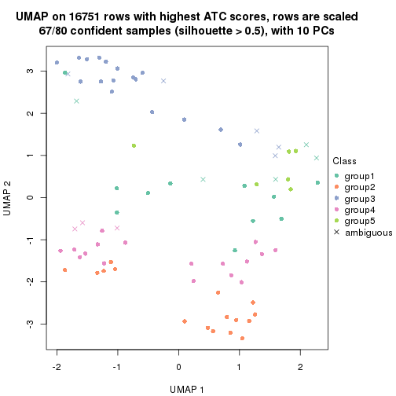
dimension_reduction(res, k = 6, method = "UMAP")
Following heatmap shows how subgroups are split when increasing k:
collect_classes(res)
If matrix rows can be associated to genes, consider to use GO_Enrichment(res,
...) to perform function enrichment for the signature genes.
The object with results only for a single top-value method and a single partition method can be extracted as:
res = res_list["ATC", "skmeans"]
# you can also extract it by
# res = res_list["ATC:skmeans"]
A summary of res and all the functions that can be applied to it:
res
#> A 'ConsensusPartition' object with k = 2, 3, 4, 5, 6.
#> On a matrix with 16751 rows and 80 columns.
#> Top rows (1000, 2000, 3000, 4000, 5000) are extracted by 'ATC' method.
#> Subgroups are detected by 'skmeans' method.
#> Performed in total 1250 partitions by row resampling.
#> Best k for subgroups seems to be 2.
#>
#> Following methods can be applied to this 'ConsensusPartition' object:
#> [1] "cola_report" "collect_classes" "collect_plots"
#> [4] "collect_stats" "colnames" "compare_signatures"
#> [7] "consensus_heatmap" "dimension_reduction" "functional_enrichment"
#> [10] "get_anno_col" "get_anno" "get_classes"
#> [13] "get_consensus" "get_matrix" "get_membership"
#> [16] "get_param" "get_signatures" "get_stats"
#> [19] "is_best_k" "is_stable_k" "membership_heatmap"
#> [22] "ncol" "nrow" "plot_ecdf"
#> [25] "rownames" "select_partition_number" "show"
#> [28] "suggest_best_k" "test_to_known_factors"
collect_plots() function collects all the plots made from res for all k (number of partitions)
into one single page to provide an easy and fast comparison between different k.
collect_plots(res)
The plots are:
k and the heatmap of
predicted classes for each k.k.k.k.All the plots in panels can be made by individual functions and they are plotted later in this section.
select_partition_number() produces several plots showing different
statistics for choosing “optimized” k. There are following statistics:
k;k, the area increased is defined as \(A_k - A_{k-1}\).The detailed explanations of these statistics can be found in the cola vignette.
Generally speaking, lower PAC score, higher mean silhouette score or higher
concordance corresponds to better partition. Rand index and Jaccard index
measure how similar the current partition is compared to partition with k-1.
If they are too similar, we won't accept k is better than k-1.
select_partition_number(res)
The numeric values for all these statistics can be obtained by get_stats().
get_stats(res)
#> k 1-PAC mean_silhouette concordance area_increased Rand Jaccard
#> 2 2 1.000 0.993 0.997 0.5058 0.495 0.495
#> 3 3 0.840 0.796 0.922 0.1975 0.895 0.790
#> 4 4 0.788 0.755 0.886 0.0739 0.947 0.869
#> 5 5 0.831 0.810 0.856 0.0621 0.887 0.693
#> 6 6 0.885 0.922 0.926 0.0424 0.966 0.881
suggest_best_k() suggests the best \(k\) based on these statistics. The rules are as follows:
NA.suggest_best_k(res)
#> [1] 2
Following shows the table of the partitions (You need to click the show/hide
code output link to see it). The membership matrix (columns with name p*)
is inferred by
clue::cl_consensus()
function with the SE method. Basically the value in the membership matrix
represents the probability to belong to a certain group. The finall class
label for an item is determined with the group with highest probability it
belongs to.
In get_classes() function, the entropy is calculated from the membership
matrix and the silhouette score is calculated from the consensus matrix.
cbind(get_classes(res, k = 2), get_membership(res, k = 2))
#> class entropy silhouette p1 p2
#> 71A0AB6A-CFC2-46F6-878C-6052C5B43D22 1 0.000 0.993 1.000 0.000
#> EFC730EC-6385-4167-A65A-F2A3AAEDA2AC 1 0.000 0.993 1.000 0.000
#> 14F2F39A-EA0F-4027-8877-FEEEEFF1F085 2 0.000 1.000 0.000 1.000
#> 98B2A7F8-A7BD-4DA2-8541-950E44D9ACD7 2 0.000 1.000 0.000 1.000
#> 9166F454-2068-46C2-B2EB-FB3BE4126536 1 0.000 0.993 1.000 0.000
#> 83B2A0BB-CE24-4DCA-B03A-D20353304365 2 0.000 1.000 0.000 1.000
#> D3FC3968-B263-4756-BF7F-1941F70B04DA 2 0.000 1.000 0.000 1.000
#> D357AC5C-C2A0-4CC4-B016-4572400AF117 2 0.000 1.000 0.000 1.000
#> 1055E951-5B93-4AD7-BE5C-4DF4F6AECEF3 2 0.000 1.000 0.000 1.000
#> F2995599-3F21-4F33-92BB-7D70A4735938 1 0.000 0.993 1.000 0.000
#> 3EE533BD-5832-4007-8F1F-439166256EB0 2 0.000 1.000 0.000 1.000
#> EEC6DA0C-5C49-4EFE-976A-19F432DDAA58 1 0.000 0.993 1.000 0.000
#> E6E08C1A-4C1B-4572-92DF-DA15BCBADF76 2 0.000 1.000 0.000 1.000
#> BCFCBBAC-EB95-47EB-9EB0-2CB4AE283A75 1 0.000 0.993 1.000 0.000
#> 0782D6D0-668B-4B83-8C91-8A35EA3BFF6D 2 0.000 1.000 0.000 1.000
#> AC78918E-1031-4AE6-B753-B0799171F0F0 1 0.000 0.993 1.000 0.000
#> 6B497CED-34DA-4CF8-8F8D-696105CB3D5F 1 0.000 0.993 1.000 0.000
#> 2328D472-583B-43A9-81A4-A21DDEBB5B18 2 0.000 1.000 0.000 1.000
#> A6930B33-D9B2-4318-807C-4A25EB4CCCDD 2 0.000 1.000 0.000 1.000
#> C8C48AFD-4D8B-491E-993C-3506DC6DD00F 1 0.000 0.993 1.000 0.000
#> 093FB845-7905-4064-8E8E-76E3587D8E7C 1 0.000 0.993 1.000 0.000
#> B216F996-CCD8-4F56-99B1-4EA9769B10B8 1 0.000 0.993 1.000 0.000
#> CB35DED2-5FEA-43E2-AB42-B6B3A7444B66 1 0.000 0.993 1.000 0.000
#> BA016F57-F58F-4A66-B85A-0B0F911EEA65 2 0.000 1.000 0.000 1.000
#> 519DBD5F-66C0-4CEE-905C-799C855D28FB 1 0.000 0.993 1.000 0.000
#> F5B9B89B-6821-43EE-BCFD-623689D03AF9 2 0.000 1.000 0.000 1.000
#> 55A39F92-CC88-4A2F-A7D3-7A59DEBEBB42 1 0.388 0.916 0.924 0.076
#> 3DBBDEDA-F9FC-40DC-804F-45429EA47ED4 1 0.722 0.754 0.800 0.200
#> BB948BE8-7D48-4AEB-A404-C27A79655D7E 1 0.000 0.993 1.000 0.000
#> 9506723F-9193-4D8E-BD97-8A0062AB2F9C 1 0.000 0.993 1.000 0.000
#> D0758A7A-9D0E-4EA4-8EE9-7143B398647D 1 0.000 0.993 1.000 0.000
#> F400FD4D-72D7-4933-B145-64B7EE245FFC 2 0.000 1.000 0.000 1.000
#> 3F87E9ED-3719-48E1-8B69-E352A03E982D 1 0.000 0.993 1.000 0.000
#> D6365FEB-CC12-4337-BF8C-66236A585B5D 2 0.000 1.000 0.000 1.000
#> A4168812-C38E-4F15-9AF6-79F256279E72 1 0.000 0.993 1.000 0.000
#> DB676839-02AA-42A7-962F-89D6AD892008 1 0.000 0.993 1.000 0.000
#> 198D8E89-51FD-41DE-AD11-FB2F2FE49908 2 0.000 1.000 0.000 1.000
#> 2BADCD01-27E8-49EC-B707-4FAE3D3CB489 1 0.000 0.993 1.000 0.000
#> ABBD6EFE-079B-4BE3-95AB-36AF9197D684 2 0.000 1.000 0.000 1.000
#> 39D66B95-61C7-4B76-8E81-1F9F98024B69 1 0.000 0.993 1.000 0.000
#> 7A920210-CF3D-4458-B6D5-D9B2ADACA469 1 0.000 0.993 1.000 0.000
#> 0CE61CDC-3257-4F03-951B-CC2CFCF675AE 2 0.000 1.000 0.000 1.000
#> 7338D61C-77D6-4095-8847-7FD9967B7646 1 0.000 0.993 1.000 0.000
#> 0D36FAD5-BA81-4FED-9E2A-DB016F2EF18C 1 0.000 0.993 1.000 0.000
#> 43CD31CD-5FAE-418A-B235-49E54560590D 2 0.000 1.000 0.000 1.000
#> B6DD72B0-EEFA-41A9-B71D-22DE1343CD32 1 0.000 0.993 1.000 0.000
#> 2B729CD9-71A5-4336-ACBA-922A30AF4949 2 0.000 1.000 0.000 1.000
#> B76DB955-69B7-4D05-8166-2569ED44628C 1 0.000 0.993 1.000 0.000
#> 09CBEE39-7141-4228-AFD3-4714E32A1FB5 2 0.000 1.000 0.000 1.000
#> AC1700D5-72E7-4C7F-A288-869DFC229252 1 0.000 0.993 1.000 0.000
#> 535A5E8E-8478-477F-87FF-ED6742AA5473 2 0.000 1.000 0.000 1.000
#> CFB8573C-9F36-4715-B6F1-6E5B543168A8 1 0.000 0.993 1.000 0.000
#> 47A45491-6023-44BF-ABC2-9A470F7FC1F7 2 0.000 1.000 0.000 1.000
#> 437C7AA7-98C0-48C7-97DA-86FF44D69B87 2 0.000 1.000 0.000 1.000
#> 649ADE7E-6C06-4AB6-8E97-D8C2AAF79A7E 2 0.000 1.000 0.000 1.000
#> DEA60B47-AD6A-4EBB-9402-6F97E9640E4E 2 0.000 1.000 0.000 1.000
#> 76C574FF-26BF-49CD-9BCA-7BDDCBD06D5D 2 0.000 1.000 0.000 1.000
#> 8B6E1F9B-1E90-4333-8E0C-EEDFF25D15C0 2 0.000 1.000 0.000 1.000
#> A2473EE7-72D6-4D32-9DF7-5D4E444A6715 2 0.000 1.000 0.000 1.000
#> E226C45E-5287-4D0F-A34B-CE251FA293CB 1 0.000 0.993 1.000 0.000
#> A2C71C07-AF0C-4016-808C-DFEF458C91C7 1 0.000 0.993 1.000 0.000
#> DA00D60F-4CF1-4003-BAF5-896EE2BEE2D4 2 0.000 1.000 0.000 1.000
#> 1C17B65F-1930-4CF3-99B6-5D3AA9E99188 2 0.000 1.000 0.000 1.000
#> B837D582-A0D3-46BE-8ECA-883F5396AE88 1 0.000 0.993 1.000 0.000
#> EF1A102F-C206-4874-8F27-0BF069A613B8 1 0.000 0.993 1.000 0.000
#> BC761676-F64C-476A-8D9B-BD3E6149B2CD 2 0.000 1.000 0.000 1.000
#> D8351E5C-DC1D-4B4D-83E6-735B2750D944 2 0.000 1.000 0.000 1.000
#> 59F65F61-03D0-4909-99BD-4CCB53A088A5 1 0.000 0.993 1.000 0.000
#> EFFCCF33-60E1-4550-B13C-14C54ADCF479 2 0.000 1.000 0.000 1.000
#> C45EB423-CC14-4BDB-A0B4-447E5DB6DA9C 1 0.000 0.993 1.000 0.000
#> D34B0BC6-9142-48AE-A113-5923192644A0 1 0.000 0.993 1.000 0.000
#> 634672A6-C68E-479F-AAB5-CBAFF7758EA4 1 0.000 0.993 1.000 0.000
#> 06DAE086-D960-4156-9DC8-D126338E2F29 2 0.000 1.000 0.000 1.000
#> 3353F579-77CA-4D0E-B794-37DE467CC065 1 0.000 0.993 1.000 0.000
#> 976507F2-192B-4095-920A-3014889CD617 1 0.000 0.993 1.000 0.000
#> 3FFF89D9-02F5-4D49-8631-099562BF99C7 2 0.000 1.000 0.000 1.000
#> 8BC2213D-99DA-44E0-826F-EBF211EECFBF 1 0.000 0.993 1.000 0.000
#> A7A16BF7-5E60-4E50-BE04-542EFC4DB472 2 0.000 1.000 0.000 1.000
#> E25C9578-9493-466E-A2CD-546DEB076B2D 2 0.000 1.000 0.000 1.000
#> EA35E230-DE50-45AB-A737-D5C430652A90 1 0.000 0.993 1.000 0.000
cbind(get_classes(res, k = 3), get_membership(res, k = 3))
#> class entropy silhouette p1 p2 p3
#> 71A0AB6A-CFC2-46F6-878C-6052C5B43D22 3 0.6111 0.290 0.396 0.000 0.604
#> EFC730EC-6385-4167-A65A-F2A3AAEDA2AC 3 0.0237 0.807 0.004 0.000 0.996
#> 14F2F39A-EA0F-4027-8877-FEEEEFF1F085 2 0.0000 0.999 0.000 1.000 0.000
#> 98B2A7F8-A7BD-4DA2-8541-950E44D9ACD7 2 0.0000 0.999 0.000 1.000 0.000
#> 9166F454-2068-46C2-B2EB-FB3BE4126536 3 0.0000 0.809 0.000 0.000 1.000
#> 83B2A0BB-CE24-4DCA-B03A-D20353304365 2 0.0000 0.999 0.000 1.000 0.000
#> D3FC3968-B263-4756-BF7F-1941F70B04DA 2 0.0000 0.999 0.000 1.000 0.000
#> D357AC5C-C2A0-4CC4-B016-4572400AF117 2 0.0000 0.999 0.000 1.000 0.000
#> 1055E951-5B93-4AD7-BE5C-4DF4F6AECEF3 2 0.0000 0.999 0.000 1.000 0.000
#> F2995599-3F21-4F33-92BB-7D70A4735938 3 0.0000 0.809 0.000 0.000 1.000
#> 3EE533BD-5832-4007-8F1F-439166256EB0 2 0.0000 0.999 0.000 1.000 0.000
#> EEC6DA0C-5C49-4EFE-976A-19F432DDAA58 3 0.0237 0.807 0.004 0.000 0.996
#> E6E08C1A-4C1B-4572-92DF-DA15BCBADF76 2 0.0000 0.999 0.000 1.000 0.000
#> BCFCBBAC-EB95-47EB-9EB0-2CB4AE283A75 3 0.6062 0.314 0.384 0.000 0.616
#> 0782D6D0-668B-4B83-8C91-8A35EA3BFF6D 2 0.0000 0.999 0.000 1.000 0.000
#> AC78918E-1031-4AE6-B753-B0799171F0F0 3 0.0000 0.809 0.000 0.000 1.000
#> 6B497CED-34DA-4CF8-8F8D-696105CB3D5F 3 0.6111 0.290 0.396 0.000 0.604
#> 2328D472-583B-43A9-81A4-A21DDEBB5B18 2 0.0000 0.999 0.000 1.000 0.000
#> A6930B33-D9B2-4318-807C-4A25EB4CCCDD 2 0.0000 0.999 0.000 1.000 0.000
#> C8C48AFD-4D8B-491E-993C-3506DC6DD00F 3 0.6095 0.299 0.392 0.000 0.608
#> 093FB845-7905-4064-8E8E-76E3587D8E7C 3 0.6111 0.290 0.396 0.000 0.604
#> B216F996-CCD8-4F56-99B1-4EA9769B10B8 3 0.6111 0.290 0.396 0.000 0.604
#> CB35DED2-5FEA-43E2-AB42-B6B3A7444B66 1 0.6154 0.413 0.592 0.000 0.408
#> BA016F57-F58F-4A66-B85A-0B0F911EEA65 2 0.0000 0.999 0.000 1.000 0.000
#> 519DBD5F-66C0-4CEE-905C-799C855D28FB 3 0.0000 0.809 0.000 0.000 1.000
#> F5B9B89B-6821-43EE-BCFD-623689D03AF9 2 0.0000 0.999 0.000 1.000 0.000
#> 55A39F92-CC88-4A2F-A7D3-7A59DEBEBB42 1 0.3116 0.670 0.892 0.000 0.108
#> 3DBBDEDA-F9FC-40DC-804F-45429EA47ED4 1 0.0237 0.704 0.996 0.000 0.004
#> BB948BE8-7D48-4AEB-A404-C27A79655D7E 3 0.6095 0.299 0.392 0.000 0.608
#> 9506723F-9193-4D8E-BD97-8A0062AB2F9C 3 0.6111 0.290 0.396 0.000 0.604
#> D0758A7A-9D0E-4EA4-8EE9-7143B398647D 3 0.6111 0.290 0.396 0.000 0.604
#> F400FD4D-72D7-4933-B145-64B7EE245FFC 2 0.0000 0.999 0.000 1.000 0.000
#> 3F87E9ED-3719-48E1-8B69-E352A03E982D 1 0.0237 0.704 0.996 0.000 0.004
#> D6365FEB-CC12-4337-BF8C-66236A585B5D 2 0.0000 0.999 0.000 1.000 0.000
#> A4168812-C38E-4F15-9AF6-79F256279E72 3 0.6111 0.290 0.396 0.000 0.604
#> DB676839-02AA-42A7-962F-89D6AD892008 3 0.0000 0.809 0.000 0.000 1.000
#> 198D8E89-51FD-41DE-AD11-FB2F2FE49908 2 0.0000 0.999 0.000 1.000 0.000
#> 2BADCD01-27E8-49EC-B707-4FAE3D3CB489 3 0.0000 0.809 0.000 0.000 1.000
#> ABBD6EFE-079B-4BE3-95AB-36AF9197D684 2 0.0000 0.999 0.000 1.000 0.000
#> 39D66B95-61C7-4B76-8E81-1F9F98024B69 3 0.0000 0.809 0.000 0.000 1.000
#> 7A920210-CF3D-4458-B6D5-D9B2ADACA469 3 0.0000 0.809 0.000 0.000 1.000
#> 0CE61CDC-3257-4F03-951B-CC2CFCF675AE 2 0.0000 0.999 0.000 1.000 0.000
#> 7338D61C-77D6-4095-8847-7FD9967B7646 3 0.0424 0.803 0.008 0.000 0.992
#> 0D36FAD5-BA81-4FED-9E2A-DB016F2EF18C 3 0.0000 0.809 0.000 0.000 1.000
#> 43CD31CD-5FAE-418A-B235-49E54560590D 2 0.0000 0.999 0.000 1.000 0.000
#> B6DD72B0-EEFA-41A9-B71D-22DE1343CD32 1 0.6154 0.413 0.592 0.000 0.408
#> 2B729CD9-71A5-4336-ACBA-922A30AF4949 2 0.0000 0.999 0.000 1.000 0.000
#> B76DB955-69B7-4D05-8166-2569ED44628C 3 0.0000 0.809 0.000 0.000 1.000
#> 09CBEE39-7141-4228-AFD3-4714E32A1FB5 2 0.0000 0.999 0.000 1.000 0.000
#> AC1700D5-72E7-4C7F-A288-869DFC229252 3 0.0000 0.809 0.000 0.000 1.000
#> 535A5E8E-8478-477F-87FF-ED6742AA5473 2 0.0000 0.999 0.000 1.000 0.000
#> CFB8573C-9F36-4715-B6F1-6E5B543168A8 3 0.0237 0.807 0.004 0.000 0.996
#> 47A45491-6023-44BF-ABC2-9A470F7FC1F7 2 0.0000 0.999 0.000 1.000 0.000
#> 437C7AA7-98C0-48C7-97DA-86FF44D69B87 2 0.0000 0.999 0.000 1.000 0.000
#> 649ADE7E-6C06-4AB6-8E97-D8C2AAF79A7E 2 0.0000 0.999 0.000 1.000 0.000
#> DEA60B47-AD6A-4EBB-9402-6F97E9640E4E 2 0.0000 0.999 0.000 1.000 0.000
#> 76C574FF-26BF-49CD-9BCA-7BDDCBD06D5D 2 0.0000 0.999 0.000 1.000 0.000
#> 8B6E1F9B-1E90-4333-8E0C-EEDFF25D15C0 1 0.0747 0.696 0.984 0.016 0.000
#> A2473EE7-72D6-4D32-9DF7-5D4E444A6715 2 0.0892 0.981 0.020 0.980 0.000
#> E226C45E-5287-4D0F-A34B-CE251FA293CB 3 0.0000 0.809 0.000 0.000 1.000
#> A2C71C07-AF0C-4016-808C-DFEF458C91C7 3 0.0000 0.809 0.000 0.000 1.000
#> DA00D60F-4CF1-4003-BAF5-896EE2BEE2D4 2 0.0000 0.999 0.000 1.000 0.000
#> 1C17B65F-1930-4CF3-99B6-5D3AA9E99188 2 0.0000 0.999 0.000 1.000 0.000
#> B837D582-A0D3-46BE-8ECA-883F5396AE88 3 0.0000 0.809 0.000 0.000 1.000
#> EF1A102F-C206-4874-8F27-0BF069A613B8 3 0.0237 0.807 0.004 0.000 0.996
#> BC761676-F64C-476A-8D9B-BD3E6149B2CD 2 0.0000 0.999 0.000 1.000 0.000
#> D8351E5C-DC1D-4B4D-83E6-735B2750D944 2 0.0000 0.999 0.000 1.000 0.000
#> 59F65F61-03D0-4909-99BD-4CCB53A088A5 1 0.6140 0.419 0.596 0.000 0.404
#> EFFCCF33-60E1-4550-B13C-14C54ADCF479 1 0.0237 0.703 0.996 0.004 0.000
#> C45EB423-CC14-4BDB-A0B4-447E5DB6DA9C 3 0.0000 0.809 0.000 0.000 1.000
#> D34B0BC6-9142-48AE-A113-5923192644A0 1 0.6180 0.389 0.584 0.000 0.416
#> 634672A6-C68E-479F-AAB5-CBAFF7758EA4 3 0.0000 0.809 0.000 0.000 1.000
#> 06DAE086-D960-4156-9DC8-D126338E2F29 2 0.0000 0.999 0.000 1.000 0.000
#> 3353F579-77CA-4D0E-B794-37DE467CC065 3 0.0000 0.809 0.000 0.000 1.000
#> 976507F2-192B-4095-920A-3014889CD617 3 0.0000 0.809 0.000 0.000 1.000
#> 3FFF89D9-02F5-4D49-8631-099562BF99C7 2 0.0000 0.999 0.000 1.000 0.000
#> 8BC2213D-99DA-44E0-826F-EBF211EECFBF 3 0.0000 0.809 0.000 0.000 1.000
#> A7A16BF7-5E60-4E50-BE04-542EFC4DB472 2 0.0000 0.999 0.000 1.000 0.000
#> E25C9578-9493-466E-A2CD-546DEB076B2D 2 0.0000 0.999 0.000 1.000 0.000
#> EA35E230-DE50-45AB-A737-D5C430652A90 3 0.6111 0.290 0.396 0.000 0.604
cbind(get_classes(res, k = 4), get_membership(res, k = 4))
#> class entropy silhouette p1 p2 p3 p4
#> 71A0AB6A-CFC2-46F6-878C-6052C5B43D22 3 0.5085 0.383 0.376 0.000 0.616 0.008
#> EFC730EC-6385-4167-A65A-F2A3AAEDA2AC 3 0.4328 0.555 0.008 0.000 0.748 0.244
#> 14F2F39A-EA0F-4027-8877-FEEEEFF1F085 2 0.0000 0.995 0.000 1.000 0.000 0.000
#> 98B2A7F8-A7BD-4DA2-8541-950E44D9ACD7 2 0.0000 0.995 0.000 1.000 0.000 0.000
#> 9166F454-2068-46C2-B2EB-FB3BE4126536 3 0.0000 0.783 0.000 0.000 1.000 0.000
#> 83B2A0BB-CE24-4DCA-B03A-D20353304365 2 0.0000 0.995 0.000 1.000 0.000 0.000
#> D3FC3968-B263-4756-BF7F-1941F70B04DA 2 0.0000 0.995 0.000 1.000 0.000 0.000
#> D357AC5C-C2A0-4CC4-B016-4572400AF117 2 0.0000 0.995 0.000 1.000 0.000 0.000
#> 1055E951-5B93-4AD7-BE5C-4DF4F6AECEF3 2 0.0000 0.995 0.000 1.000 0.000 0.000
#> F2995599-3F21-4F33-92BB-7D70A4735938 3 0.0000 0.783 0.000 0.000 1.000 0.000
#> 3EE533BD-5832-4007-8F1F-439166256EB0 2 0.0000 0.995 0.000 1.000 0.000 0.000
#> EEC6DA0C-5C49-4EFE-976A-19F432DDAA58 3 0.1302 0.747 0.000 0.000 0.956 0.044
#> E6E08C1A-4C1B-4572-92DF-DA15BCBADF76 2 0.0000 0.995 0.000 1.000 0.000 0.000
#> BCFCBBAC-EB95-47EB-9EB0-2CB4AE283A75 3 0.5941 0.452 0.276 0.000 0.652 0.072
#> 0782D6D0-668B-4B83-8C91-8A35EA3BFF6D 2 0.0000 0.995 0.000 1.000 0.000 0.000
#> AC78918E-1031-4AE6-B753-B0799171F0F0 3 0.0000 0.783 0.000 0.000 1.000 0.000
#> 6B497CED-34DA-4CF8-8F8D-696105CB3D5F 3 0.5085 0.383 0.376 0.000 0.616 0.008
#> 2328D472-583B-43A9-81A4-A21DDEBB5B18 2 0.0000 0.995 0.000 1.000 0.000 0.000
#> A6930B33-D9B2-4318-807C-4A25EB4CCCDD 2 0.0000 0.995 0.000 1.000 0.000 0.000
#> C8C48AFD-4D8B-491E-993C-3506DC6DD00F 3 0.5070 0.389 0.372 0.000 0.620 0.008
#> 093FB845-7905-4064-8E8E-76E3587D8E7C 3 0.5085 0.383 0.376 0.000 0.616 0.008
#> B216F996-CCD8-4F56-99B1-4EA9769B10B8 3 0.5085 0.383 0.376 0.000 0.616 0.008
#> CB35DED2-5FEA-43E2-AB42-B6B3A7444B66 1 0.4907 0.304 0.580 0.000 0.420 0.000
#> BA016F57-F58F-4A66-B85A-0B0F911EEA65 4 0.4477 0.790 0.000 0.312 0.000 0.688
#> 519DBD5F-66C0-4CEE-905C-799C855D28FB 3 0.0000 0.783 0.000 0.000 1.000 0.000
#> F5B9B89B-6821-43EE-BCFD-623689D03AF9 2 0.0000 0.995 0.000 1.000 0.000 0.000
#> 55A39F92-CC88-4A2F-A7D3-7A59DEBEBB42 1 0.6974 0.475 0.564 0.000 0.152 0.284
#> 3DBBDEDA-F9FC-40DC-804F-45429EA47ED4 1 0.1474 0.536 0.948 0.000 0.000 0.052
#> BB948BE8-7D48-4AEB-A404-C27A79655D7E 3 0.5070 0.389 0.372 0.000 0.620 0.008
#> 9506723F-9193-4D8E-BD97-8A0062AB2F9C 3 0.5085 0.383 0.376 0.000 0.616 0.008
#> D0758A7A-9D0E-4EA4-8EE9-7143B398647D 3 0.5085 0.383 0.376 0.000 0.616 0.008
#> F400FD4D-72D7-4933-B145-64B7EE245FFC 2 0.0000 0.995 0.000 1.000 0.000 0.000
#> 3F87E9ED-3719-48E1-8B69-E352A03E982D 1 0.2197 0.533 0.916 0.000 0.004 0.080
#> D6365FEB-CC12-4337-BF8C-66236A585B5D 2 0.0000 0.995 0.000 1.000 0.000 0.000
#> A4168812-C38E-4F15-9AF6-79F256279E72 3 0.5085 0.383 0.376 0.000 0.616 0.008
#> DB676839-02AA-42A7-962F-89D6AD892008 3 0.0000 0.783 0.000 0.000 1.000 0.000
#> 198D8E89-51FD-41DE-AD11-FB2F2FE49908 2 0.0000 0.995 0.000 1.000 0.000 0.000
#> 2BADCD01-27E8-49EC-B707-4FAE3D3CB489 3 0.0000 0.783 0.000 0.000 1.000 0.000
#> ABBD6EFE-079B-4BE3-95AB-36AF9197D684 2 0.0000 0.995 0.000 1.000 0.000 0.000
#> 39D66B95-61C7-4B76-8E81-1F9F98024B69 3 0.0000 0.783 0.000 0.000 1.000 0.000
#> 7A920210-CF3D-4458-B6D5-D9B2ADACA469 3 0.0000 0.783 0.000 0.000 1.000 0.000
#> 0CE61CDC-3257-4F03-951B-CC2CFCF675AE 2 0.0000 0.995 0.000 1.000 0.000 0.000
#> 7338D61C-77D6-4095-8847-7FD9967B7646 4 0.4220 0.303 0.004 0.000 0.248 0.748
#> 0D36FAD5-BA81-4FED-9E2A-DB016F2EF18C 3 0.0000 0.783 0.000 0.000 1.000 0.000
#> 43CD31CD-5FAE-418A-B235-49E54560590D 2 0.0000 0.995 0.000 1.000 0.000 0.000
#> B6DD72B0-EEFA-41A9-B71D-22DE1343CD32 1 0.5172 0.355 0.588 0.000 0.404 0.008
#> 2B729CD9-71A5-4336-ACBA-922A30AF4949 2 0.2704 0.800 0.000 0.876 0.000 0.124
#> B76DB955-69B7-4D05-8166-2569ED44628C 3 0.0000 0.783 0.000 0.000 1.000 0.000
#> 09CBEE39-7141-4228-AFD3-4714E32A1FB5 2 0.0000 0.995 0.000 1.000 0.000 0.000
#> AC1700D5-72E7-4C7F-A288-869DFC229252 3 0.0336 0.779 0.000 0.000 0.992 0.008
#> 535A5E8E-8478-477F-87FF-ED6742AA5473 2 0.0000 0.995 0.000 1.000 0.000 0.000
#> CFB8573C-9F36-4715-B6F1-6E5B543168A8 3 0.3801 0.577 0.000 0.000 0.780 0.220
#> 47A45491-6023-44BF-ABC2-9A470F7FC1F7 4 0.4855 0.661 0.000 0.400 0.000 0.600
#> 437C7AA7-98C0-48C7-97DA-86FF44D69B87 2 0.0000 0.995 0.000 1.000 0.000 0.000
#> 649ADE7E-6C06-4AB6-8E97-D8C2AAF79A7E 2 0.0000 0.995 0.000 1.000 0.000 0.000
#> DEA60B47-AD6A-4EBB-9402-6F97E9640E4E 2 0.0000 0.995 0.000 1.000 0.000 0.000
#> 76C574FF-26BF-49CD-9BCA-7BDDCBD06D5D 2 0.0000 0.995 0.000 1.000 0.000 0.000
#> 8B6E1F9B-1E90-4333-8E0C-EEDFF25D15C0 1 0.2868 0.471 0.864 0.000 0.000 0.136
#> A2473EE7-72D6-4D32-9DF7-5D4E444A6715 4 0.5833 0.726 0.096 0.212 0.000 0.692
#> E226C45E-5287-4D0F-A34B-CE251FA293CB 3 0.0000 0.783 0.000 0.000 1.000 0.000
#> A2C71C07-AF0C-4016-808C-DFEF458C91C7 3 0.0000 0.783 0.000 0.000 1.000 0.000
#> DA00D60F-4CF1-4003-BAF5-896EE2BEE2D4 4 0.4608 0.791 0.004 0.304 0.000 0.692
#> 1C17B65F-1930-4CF3-99B6-5D3AA9E99188 2 0.0000 0.995 0.000 1.000 0.000 0.000
#> B837D582-A0D3-46BE-8ECA-883F5396AE88 3 0.0000 0.783 0.000 0.000 1.000 0.000
#> EF1A102F-C206-4874-8F27-0BF069A613B8 3 0.4453 0.552 0.012 0.000 0.744 0.244
#> BC761676-F64C-476A-8D9B-BD3E6149B2CD 2 0.0000 0.995 0.000 1.000 0.000 0.000
#> D8351E5C-DC1D-4B4D-83E6-735B2750D944 2 0.0000 0.995 0.000 1.000 0.000 0.000
#> 59F65F61-03D0-4909-99BD-4CCB53A088A5 1 0.5150 0.369 0.596 0.000 0.396 0.008
#> EFFCCF33-60E1-4550-B13C-14C54ADCF479 1 0.2266 0.524 0.912 0.004 0.000 0.084
#> C45EB423-CC14-4BDB-A0B4-447E5DB6DA9C 3 0.0000 0.783 0.000 0.000 1.000 0.000
#> D34B0BC6-9142-48AE-A113-5923192644A0 1 0.5172 0.340 0.588 0.000 0.404 0.008
#> 634672A6-C68E-479F-AAB5-CBAFF7758EA4 3 0.0000 0.783 0.000 0.000 1.000 0.000
#> 06DAE086-D960-4156-9DC8-D126338E2F29 2 0.0000 0.995 0.000 1.000 0.000 0.000
#> 3353F579-77CA-4D0E-B794-37DE467CC065 3 0.0000 0.783 0.000 0.000 1.000 0.000
#> 976507F2-192B-4095-920A-3014889CD617 3 0.0000 0.783 0.000 0.000 1.000 0.000
#> 3FFF89D9-02F5-4D49-8631-099562BF99C7 2 0.0000 0.995 0.000 1.000 0.000 0.000
#> 8BC2213D-99DA-44E0-826F-EBF211EECFBF 3 0.0000 0.783 0.000 0.000 1.000 0.000
#> A7A16BF7-5E60-4E50-BE04-542EFC4DB472 2 0.0000 0.995 0.000 1.000 0.000 0.000
#> E25C9578-9493-466E-A2CD-546DEB076B2D 2 0.0000 0.995 0.000 1.000 0.000 0.000
#> EA35E230-DE50-45AB-A737-D5C430652A90 3 0.5085 0.383 0.376 0.000 0.616 0.008
cbind(get_classes(res, k = 5), get_membership(res, k = 5))
#> class entropy silhouette p1 p2 p3 p4 p5
#> 71A0AB6A-CFC2-46F6-878C-6052C5B43D22 1 0.4307 0.6067 0.504 0.000 0.496 0.000 0.000
#> EFC730EC-6385-4167-A65A-F2A3AAEDA2AC 1 0.6856 -0.1063 0.536 0.000 0.272 0.040 0.152
#> 14F2F39A-EA0F-4027-8877-FEEEEFF1F085 2 0.0000 0.9941 0.000 1.000 0.000 0.000 0.000
#> 98B2A7F8-A7BD-4DA2-8541-950E44D9ACD7 2 0.0000 0.9941 0.000 1.000 0.000 0.000 0.000
#> 9166F454-2068-46C2-B2EB-FB3BE4126536 3 0.0000 0.9488 0.000 0.000 1.000 0.000 0.000
#> 83B2A0BB-CE24-4DCA-B03A-D20353304365 2 0.0000 0.9941 0.000 1.000 0.000 0.000 0.000
#> D3FC3968-B263-4756-BF7F-1941F70B04DA 2 0.0000 0.9941 0.000 1.000 0.000 0.000 0.000
#> D357AC5C-C2A0-4CC4-B016-4572400AF117 2 0.0000 0.9941 0.000 1.000 0.000 0.000 0.000
#> 1055E951-5B93-4AD7-BE5C-4DF4F6AECEF3 2 0.0000 0.9941 0.000 1.000 0.000 0.000 0.000
#> F2995599-3F21-4F33-92BB-7D70A4735938 3 0.0000 0.9488 0.000 0.000 1.000 0.000 0.000
#> 3EE533BD-5832-4007-8F1F-439166256EB0 2 0.0000 0.9941 0.000 1.000 0.000 0.000 0.000
#> EEC6DA0C-5C49-4EFE-976A-19F432DDAA58 3 0.3003 0.6124 0.188 0.000 0.812 0.000 0.000
#> E6E08C1A-4C1B-4572-92DF-DA15BCBADF76 2 0.0000 0.9941 0.000 1.000 0.000 0.000 0.000
#> BCFCBBAC-EB95-47EB-9EB0-2CB4AE283A75 3 0.5949 -0.1930 0.280 0.000 0.604 0.016 0.100
#> 0782D6D0-668B-4B83-8C91-8A35EA3BFF6D 2 0.0000 0.9941 0.000 1.000 0.000 0.000 0.000
#> AC78918E-1031-4AE6-B753-B0799171F0F0 3 0.0000 0.9488 0.000 0.000 1.000 0.000 0.000
#> 6B497CED-34DA-4CF8-8F8D-696105CB3D5F 1 0.4307 0.6067 0.504 0.000 0.496 0.000 0.000
#> 2328D472-583B-43A9-81A4-A21DDEBB5B18 2 0.0000 0.9941 0.000 1.000 0.000 0.000 0.000
#> A6930B33-D9B2-4318-807C-4A25EB4CCCDD 2 0.0000 0.9941 0.000 1.000 0.000 0.000 0.000
#> C8C48AFD-4D8B-491E-993C-3506DC6DD00F 1 0.4307 0.6067 0.504 0.000 0.496 0.000 0.000
#> 093FB845-7905-4064-8E8E-76E3587D8E7C 1 0.4451 0.6077 0.504 0.000 0.492 0.000 0.004
#> B216F996-CCD8-4F56-99B1-4EA9769B10B8 1 0.4307 0.6067 0.504 0.000 0.496 0.000 0.000
#> CB35DED2-5FEA-43E2-AB42-B6B3A7444B66 1 0.6132 0.5827 0.480 0.000 0.388 0.000 0.132
#> BA016F57-F58F-4A66-B85A-0B0F911EEA65 4 0.1410 0.8504 0.000 0.060 0.000 0.940 0.000
#> 519DBD5F-66C0-4CEE-905C-799C855D28FB 3 0.0000 0.9488 0.000 0.000 1.000 0.000 0.000
#> F5B9B89B-6821-43EE-BCFD-623689D03AF9 2 0.0000 0.9941 0.000 1.000 0.000 0.000 0.000
#> 55A39F92-CC88-4A2F-A7D3-7A59DEBEBB42 1 0.5024 -0.3810 0.628 0.000 0.004 0.040 0.328
#> 3DBBDEDA-F9FC-40DC-804F-45429EA47ED4 5 0.4147 0.7266 0.316 0.000 0.000 0.008 0.676
#> BB948BE8-7D48-4AEB-A404-C27A79655D7E 1 0.4307 0.6067 0.504 0.000 0.496 0.000 0.000
#> 9506723F-9193-4D8E-BD97-8A0062AB2F9C 1 0.4307 0.6067 0.504 0.000 0.496 0.000 0.000
#> D0758A7A-9D0E-4EA4-8EE9-7143B398647D 1 0.4307 0.6067 0.504 0.000 0.496 0.000 0.000
#> F400FD4D-72D7-4933-B145-64B7EE245FFC 2 0.0000 0.9941 0.000 1.000 0.000 0.000 0.000
#> 3F87E9ED-3719-48E1-8B69-E352A03E982D 5 0.2561 0.8716 0.144 0.000 0.000 0.000 0.856
#> D6365FEB-CC12-4337-BF8C-66236A585B5D 2 0.0000 0.9941 0.000 1.000 0.000 0.000 0.000
#> A4168812-C38E-4F15-9AF6-79F256279E72 1 0.4307 0.6067 0.504 0.000 0.496 0.000 0.000
#> DB676839-02AA-42A7-962F-89D6AD892008 3 0.0000 0.9488 0.000 0.000 1.000 0.000 0.000
#> 198D8E89-51FD-41DE-AD11-FB2F2FE49908 2 0.0000 0.9941 0.000 1.000 0.000 0.000 0.000
#> 2BADCD01-27E8-49EC-B707-4FAE3D3CB489 3 0.0000 0.9488 0.000 0.000 1.000 0.000 0.000
#> ABBD6EFE-079B-4BE3-95AB-36AF9197D684 2 0.0000 0.9941 0.000 1.000 0.000 0.000 0.000
#> 39D66B95-61C7-4B76-8E81-1F9F98024B69 3 0.0000 0.9488 0.000 0.000 1.000 0.000 0.000
#> 7A920210-CF3D-4458-B6D5-D9B2ADACA469 3 0.0000 0.9488 0.000 0.000 1.000 0.000 0.000
#> 0CE61CDC-3257-4F03-951B-CC2CFCF675AE 2 0.0000 0.9941 0.000 1.000 0.000 0.000 0.000
#> 7338D61C-77D6-4095-8847-7FD9967B7646 4 0.1251 0.7946 0.008 0.000 0.036 0.956 0.000
#> 0D36FAD5-BA81-4FED-9E2A-DB016F2EF18C 3 0.0000 0.9488 0.000 0.000 1.000 0.000 0.000
#> 43CD31CD-5FAE-418A-B235-49E54560590D 2 0.0000 0.9941 0.000 1.000 0.000 0.000 0.000
#> B6DD72B0-EEFA-41A9-B71D-22DE1343CD32 1 0.6498 0.5226 0.452 0.000 0.352 0.000 0.196
#> 2B729CD9-71A5-4336-ACBA-922A30AF4949 2 0.2471 0.8273 0.000 0.864 0.000 0.136 0.000
#> B76DB955-69B7-4D05-8166-2569ED44628C 3 0.0000 0.9488 0.000 0.000 1.000 0.000 0.000
#> 09CBEE39-7141-4228-AFD3-4714E32A1FB5 2 0.0000 0.9941 0.000 1.000 0.000 0.000 0.000
#> AC1700D5-72E7-4C7F-A288-869DFC229252 3 0.0609 0.9172 0.020 0.000 0.980 0.000 0.000
#> 535A5E8E-8478-477F-87FF-ED6742AA5473 2 0.0000 0.9941 0.000 1.000 0.000 0.000 0.000
#> CFB8573C-9F36-4715-B6F1-6E5B543168A8 1 0.6874 -0.0776 0.468 0.000 0.372 0.040 0.120
#> 47A45491-6023-44BF-ABC2-9A470F7FC1F7 4 0.3395 0.6005 0.000 0.236 0.000 0.764 0.000
#> 437C7AA7-98C0-48C7-97DA-86FF44D69B87 2 0.0000 0.9941 0.000 1.000 0.000 0.000 0.000
#> 649ADE7E-6C06-4AB6-8E97-D8C2AAF79A7E 2 0.0510 0.9794 0.000 0.984 0.000 0.000 0.016
#> DEA60B47-AD6A-4EBB-9402-6F97E9640E4E 2 0.0000 0.9941 0.000 1.000 0.000 0.000 0.000
#> 76C574FF-26BF-49CD-9BCA-7BDDCBD06D5D 2 0.0000 0.9941 0.000 1.000 0.000 0.000 0.000
#> 8B6E1F9B-1E90-4333-8E0C-EEDFF25D15C0 5 0.2172 0.8222 0.076 0.000 0.000 0.016 0.908
#> A2473EE7-72D6-4D32-9DF7-5D4E444A6715 4 0.1168 0.8534 0.000 0.032 0.000 0.960 0.008
#> E226C45E-5287-4D0F-A34B-CE251FA293CB 3 0.0000 0.9488 0.000 0.000 1.000 0.000 0.000
#> A2C71C07-AF0C-4016-808C-DFEF458C91C7 3 0.0000 0.9488 0.000 0.000 1.000 0.000 0.000
#> DA00D60F-4CF1-4003-BAF5-896EE2BEE2D4 4 0.1043 0.8586 0.000 0.040 0.000 0.960 0.000
#> 1C17B65F-1930-4CF3-99B6-5D3AA9E99188 2 0.0000 0.9941 0.000 1.000 0.000 0.000 0.000
#> B837D582-A0D3-46BE-8ECA-883F5396AE88 3 0.0000 0.9488 0.000 0.000 1.000 0.000 0.000
#> EF1A102F-C206-4874-8F27-0BF069A613B8 1 0.6746 -0.1194 0.564 0.000 0.236 0.040 0.160
#> BC761676-F64C-476A-8D9B-BD3E6149B2CD 2 0.0510 0.9794 0.000 0.984 0.000 0.000 0.016
#> D8351E5C-DC1D-4B4D-83E6-735B2750D944 2 0.0000 0.9941 0.000 1.000 0.000 0.000 0.000
#> 59F65F61-03D0-4909-99BD-4CCB53A088A5 1 0.6572 0.4719 0.452 0.000 0.328 0.000 0.220
#> EFFCCF33-60E1-4550-B13C-14C54ADCF479 5 0.2280 0.8719 0.120 0.000 0.000 0.000 0.880
#> C45EB423-CC14-4BDB-A0B4-447E5DB6DA9C 3 0.0000 0.9488 0.000 0.000 1.000 0.000 0.000
#> D34B0BC6-9142-48AE-A113-5923192644A0 1 0.5996 0.5852 0.512 0.000 0.368 0.000 0.120
#> 634672A6-C68E-479F-AAB5-CBAFF7758EA4 3 0.0000 0.9488 0.000 0.000 1.000 0.000 0.000
#> 06DAE086-D960-4156-9DC8-D126338E2F29 2 0.0000 0.9941 0.000 1.000 0.000 0.000 0.000
#> 3353F579-77CA-4D0E-B794-37DE467CC065 3 0.0000 0.9488 0.000 0.000 1.000 0.000 0.000
#> 976507F2-192B-4095-920A-3014889CD617 3 0.0000 0.9488 0.000 0.000 1.000 0.000 0.000
#> 3FFF89D9-02F5-4D49-8631-099562BF99C7 2 0.0000 0.9941 0.000 1.000 0.000 0.000 0.000
#> 8BC2213D-99DA-44E0-826F-EBF211EECFBF 3 0.0000 0.9488 0.000 0.000 1.000 0.000 0.000
#> A7A16BF7-5E60-4E50-BE04-542EFC4DB472 2 0.0000 0.9941 0.000 1.000 0.000 0.000 0.000
#> E25C9578-9493-466E-A2CD-546DEB076B2D 2 0.0000 0.9941 0.000 1.000 0.000 0.000 0.000
#> EA35E230-DE50-45AB-A737-D5C430652A90 1 0.4451 0.6077 0.504 0.000 0.492 0.000 0.004
cbind(get_classes(res, k = 6), get_membership(res, k = 6))
#> class entropy silhouette p1 p2 p3 p4 p5 p6
#> 71A0AB6A-CFC2-46F6-878C-6052C5B43D22 1 0.3371 0.869 0.708 0.000 0.292 0.000 0.000 0.000
#> EFC730EC-6385-4167-A65A-F2A3AAEDA2AC 6 0.1492 0.948 0.036 0.000 0.024 0.000 0.000 0.940
#> 14F2F39A-EA0F-4027-8877-FEEEEFF1F085 2 0.0000 0.993 0.000 1.000 0.000 0.000 0.000 0.000
#> 98B2A7F8-A7BD-4DA2-8541-950E44D9ACD7 2 0.0000 0.993 0.000 1.000 0.000 0.000 0.000 0.000
#> 9166F454-2068-46C2-B2EB-FB3BE4126536 3 0.0000 0.990 0.000 0.000 1.000 0.000 0.000 0.000
#> 83B2A0BB-CE24-4DCA-B03A-D20353304365 2 0.0000 0.993 0.000 1.000 0.000 0.000 0.000 0.000
#> D3FC3968-B263-4756-BF7F-1941F70B04DA 2 0.0000 0.993 0.000 1.000 0.000 0.000 0.000 0.000
#> D357AC5C-C2A0-4CC4-B016-4572400AF117 2 0.0000 0.993 0.000 1.000 0.000 0.000 0.000 0.000
#> 1055E951-5B93-4AD7-BE5C-4DF4F6AECEF3 2 0.0000 0.993 0.000 1.000 0.000 0.000 0.000 0.000
#> F2995599-3F21-4F33-92BB-7D70A4735938 3 0.0000 0.990 0.000 0.000 1.000 0.000 0.000 0.000
#> 3EE533BD-5832-4007-8F1F-439166256EB0 2 0.0146 0.991 0.000 0.996 0.000 0.000 0.004 0.000
#> EEC6DA0C-5C49-4EFE-976A-19F432DDAA58 3 0.1765 0.861 0.000 0.000 0.904 0.000 0.000 0.096
#> E6E08C1A-4C1B-4572-92DF-DA15BCBADF76 2 0.0000 0.993 0.000 1.000 0.000 0.000 0.000 0.000
#> BCFCBBAC-EB95-47EB-9EB0-2CB4AE283A75 1 0.5871 0.631 0.468 0.000 0.312 0.000 0.000 0.220
#> 0782D6D0-668B-4B83-8C91-8A35EA3BFF6D 2 0.0000 0.993 0.000 1.000 0.000 0.000 0.000 0.000
#> AC78918E-1031-4AE6-B753-B0799171F0F0 3 0.0000 0.990 0.000 0.000 1.000 0.000 0.000 0.000
#> 6B497CED-34DA-4CF8-8F8D-696105CB3D5F 1 0.3371 0.869 0.708 0.000 0.292 0.000 0.000 0.000
#> 2328D472-583B-43A9-81A4-A21DDEBB5B18 2 0.0000 0.993 0.000 1.000 0.000 0.000 0.000 0.000
#> A6930B33-D9B2-4318-807C-4A25EB4CCCDD 2 0.0000 0.993 0.000 1.000 0.000 0.000 0.000 0.000
#> C8C48AFD-4D8B-491E-993C-3506DC6DD00F 1 0.3515 0.842 0.676 0.000 0.324 0.000 0.000 0.000
#> 093FB845-7905-4064-8E8E-76E3587D8E7C 1 0.3390 0.868 0.704 0.000 0.296 0.000 0.000 0.000
#> B216F996-CCD8-4F56-99B1-4EA9769B10B8 1 0.3371 0.869 0.708 0.000 0.292 0.000 0.000 0.000
#> CB35DED2-5FEA-43E2-AB42-B6B3A7444B66 1 0.3690 0.865 0.700 0.000 0.288 0.000 0.012 0.000
#> BA016F57-F58F-4A66-B85A-0B0F911EEA65 4 0.0937 0.878 0.000 0.040 0.000 0.960 0.000 0.000
#> 519DBD5F-66C0-4CEE-905C-799C855D28FB 3 0.0000 0.990 0.000 0.000 1.000 0.000 0.000 0.000
#> F5B9B89B-6821-43EE-BCFD-623689D03AF9 2 0.0000 0.993 0.000 1.000 0.000 0.000 0.000 0.000
#> 55A39F92-CC88-4A2F-A7D3-7A59DEBEBB42 6 0.1528 0.920 0.048 0.000 0.000 0.000 0.016 0.936
#> 3DBBDEDA-F9FC-40DC-804F-45429EA47ED4 1 0.5097 -0.543 0.472 0.000 0.000 0.016 0.468 0.044
#> BB948BE8-7D48-4AEB-A404-C27A79655D7E 1 0.3482 0.851 0.684 0.000 0.316 0.000 0.000 0.000
#> 9506723F-9193-4D8E-BD97-8A0062AB2F9C 1 0.3371 0.869 0.708 0.000 0.292 0.000 0.000 0.000
#> D0758A7A-9D0E-4EA4-8EE9-7143B398647D 1 0.3371 0.869 0.708 0.000 0.292 0.000 0.000 0.000
#> F400FD4D-72D7-4933-B145-64B7EE245FFC 2 0.0000 0.993 0.000 1.000 0.000 0.000 0.000 0.000
#> 3F87E9ED-3719-48E1-8B69-E352A03E982D 5 0.0713 0.970 0.028 0.000 0.000 0.000 0.972 0.000
#> D6365FEB-CC12-4337-BF8C-66236A585B5D 2 0.0146 0.991 0.000 0.996 0.000 0.000 0.004 0.000
#> A4168812-C38E-4F15-9AF6-79F256279E72 1 0.3409 0.865 0.700 0.000 0.300 0.000 0.000 0.000
#> DB676839-02AA-42A7-962F-89D6AD892008 3 0.0000 0.990 0.000 0.000 1.000 0.000 0.000 0.000
#> 198D8E89-51FD-41DE-AD11-FB2F2FE49908 2 0.0000 0.993 0.000 1.000 0.000 0.000 0.000 0.000
#> 2BADCD01-27E8-49EC-B707-4FAE3D3CB489 3 0.0000 0.990 0.000 0.000 1.000 0.000 0.000 0.000
#> ABBD6EFE-079B-4BE3-95AB-36AF9197D684 2 0.0000 0.993 0.000 1.000 0.000 0.000 0.000 0.000
#> 39D66B95-61C7-4B76-8E81-1F9F98024B69 3 0.0000 0.990 0.000 0.000 1.000 0.000 0.000 0.000
#> 7A920210-CF3D-4458-B6D5-D9B2ADACA469 3 0.0000 0.990 0.000 0.000 1.000 0.000 0.000 0.000
#> 0CE61CDC-3257-4F03-951B-CC2CFCF675AE 2 0.0000 0.993 0.000 1.000 0.000 0.000 0.000 0.000
#> 7338D61C-77D6-4095-8847-7FD9967B7646 4 0.2437 0.841 0.068 0.000 0.020 0.896 0.008 0.008
#> 0D36FAD5-BA81-4FED-9E2A-DB016F2EF18C 3 0.0000 0.990 0.000 0.000 1.000 0.000 0.000 0.000
#> 43CD31CD-5FAE-418A-B235-49E54560590D 2 0.0000 0.993 0.000 1.000 0.000 0.000 0.000 0.000
#> B6DD72B0-EEFA-41A9-B71D-22DE1343CD32 1 0.3988 0.689 0.784 0.000 0.140 0.000 0.040 0.036
#> 2B729CD9-71A5-4336-ACBA-922A30AF4949 2 0.2135 0.847 0.000 0.872 0.000 0.128 0.000 0.000
#> B76DB955-69B7-4D05-8166-2569ED44628C 3 0.0000 0.990 0.000 0.000 1.000 0.000 0.000 0.000
#> 09CBEE39-7141-4228-AFD3-4714E32A1FB5 2 0.0000 0.993 0.000 1.000 0.000 0.000 0.000 0.000
#> AC1700D5-72E7-4C7F-A288-869DFC229252 3 0.0790 0.947 0.032 0.000 0.968 0.000 0.000 0.000
#> 535A5E8E-8478-477F-87FF-ED6742AA5473 2 0.0000 0.993 0.000 1.000 0.000 0.000 0.000 0.000
#> CFB8573C-9F36-4715-B6F1-6E5B543168A8 6 0.1267 0.902 0.000 0.000 0.060 0.000 0.000 0.940
#> 47A45491-6023-44BF-ABC2-9A470F7FC1F7 4 0.2219 0.731 0.000 0.136 0.000 0.864 0.000 0.000
#> 437C7AA7-98C0-48C7-97DA-86FF44D69B87 2 0.0000 0.993 0.000 1.000 0.000 0.000 0.000 0.000
#> 649ADE7E-6C06-4AB6-8E97-D8C2AAF79A7E 2 0.0862 0.970 0.000 0.972 0.000 0.008 0.016 0.004
#> DEA60B47-AD6A-4EBB-9402-6F97E9640E4E 2 0.0000 0.993 0.000 1.000 0.000 0.000 0.000 0.000
#> 76C574FF-26BF-49CD-9BCA-7BDDCBD06D5D 2 0.0000 0.993 0.000 1.000 0.000 0.000 0.000 0.000
#> 8B6E1F9B-1E90-4333-8E0C-EEDFF25D15C0 5 0.0146 0.981 0.004 0.000 0.000 0.000 0.996 0.000
#> A2473EE7-72D6-4D32-9DF7-5D4E444A6715 4 0.0779 0.886 0.008 0.008 0.000 0.976 0.008 0.000
#> E226C45E-5287-4D0F-A34B-CE251FA293CB 3 0.0000 0.990 0.000 0.000 1.000 0.000 0.000 0.000
#> A2C71C07-AF0C-4016-808C-DFEF458C91C7 3 0.0000 0.990 0.000 0.000 1.000 0.000 0.000 0.000
#> DA00D60F-4CF1-4003-BAF5-896EE2BEE2D4 4 0.0260 0.886 0.000 0.008 0.000 0.992 0.000 0.000
#> 1C17B65F-1930-4CF3-99B6-5D3AA9E99188 2 0.0000 0.993 0.000 1.000 0.000 0.000 0.000 0.000
#> B837D582-A0D3-46BE-8ECA-883F5396AE88 3 0.0000 0.990 0.000 0.000 1.000 0.000 0.000 0.000
#> EF1A102F-C206-4874-8F27-0BF069A613B8 6 0.1480 0.946 0.040 0.000 0.020 0.000 0.000 0.940
#> BC761676-F64C-476A-8D9B-BD3E6149B2CD 2 0.0862 0.970 0.000 0.972 0.000 0.008 0.016 0.004
#> D8351E5C-DC1D-4B4D-83E6-735B2750D944 2 0.0291 0.988 0.000 0.992 0.000 0.000 0.004 0.004
#> 59F65F61-03D0-4909-99BD-4CCB53A088A5 1 0.4069 0.677 0.780 0.000 0.136 0.000 0.052 0.032
#> EFFCCF33-60E1-4550-B13C-14C54ADCF479 5 0.0363 0.982 0.012 0.000 0.000 0.000 0.988 0.000
#> C45EB423-CC14-4BDB-A0B4-447E5DB6DA9C 3 0.0000 0.990 0.000 0.000 1.000 0.000 0.000 0.000
#> D34B0BC6-9142-48AE-A113-5923192644A0 1 0.2988 0.726 0.828 0.000 0.144 0.000 0.000 0.028
#> 634672A6-C68E-479F-AAB5-CBAFF7758EA4 3 0.0000 0.990 0.000 0.000 1.000 0.000 0.000 0.000
#> 06DAE086-D960-4156-9DC8-D126338E2F29 2 0.0000 0.993 0.000 1.000 0.000 0.000 0.000 0.000
#> 3353F579-77CA-4D0E-B794-37DE467CC065 3 0.0000 0.990 0.000 0.000 1.000 0.000 0.000 0.000
#> 976507F2-192B-4095-920A-3014889CD617 3 0.0000 0.990 0.000 0.000 1.000 0.000 0.000 0.000
#> 3FFF89D9-02F5-4D49-8631-099562BF99C7 2 0.0000 0.993 0.000 1.000 0.000 0.000 0.000 0.000
#> 8BC2213D-99DA-44E0-826F-EBF211EECFBF 3 0.0000 0.990 0.000 0.000 1.000 0.000 0.000 0.000
#> A7A16BF7-5E60-4E50-BE04-542EFC4DB472 2 0.0000 0.993 0.000 1.000 0.000 0.000 0.000 0.000
#> E25C9578-9493-466E-A2CD-546DEB076B2D 2 0.0000 0.993 0.000 1.000 0.000 0.000 0.000 0.000
#> EA35E230-DE50-45AB-A737-D5C430652A90 1 0.3390 0.868 0.704 0.000 0.296 0.000 0.000 0.000
Heatmaps for the consensus matrix. It visualizes the probability of two samples to be in a same group.
consensus_heatmap(res, k = 2)
consensus_heatmap(res, k = 3)
consensus_heatmap(res, k = 4)
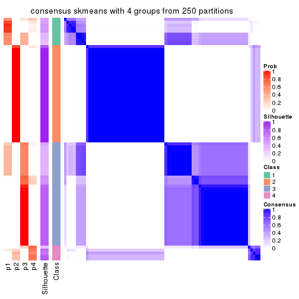
consensus_heatmap(res, k = 5)
consensus_heatmap(res, k = 6)
Heatmaps for the membership of samples in all partitions to see how consistent they are:
membership_heatmap(res, k = 2)
membership_heatmap(res, k = 3)

membership_heatmap(res, k = 4)
membership_heatmap(res, k = 5)
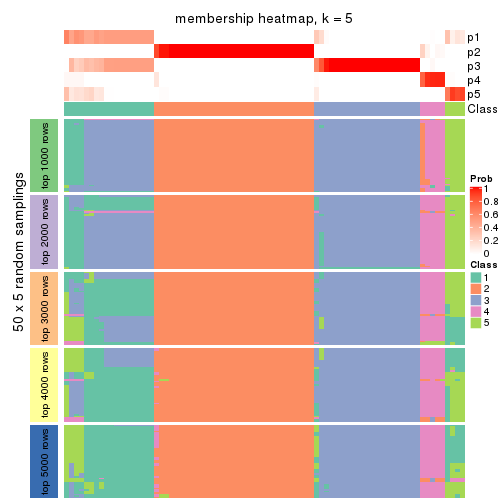
membership_heatmap(res, k = 6)
As soon as we have had the classes for columns, we can look for signatures which are significantly different between classes which can be candidate marks for certain classes. Following are the heatmaps for signatures.
Signature heatmaps where rows are scaled:
get_signatures(res, k = 2)
get_signatures(res, k = 3)
get_signatures(res, k = 4)
get_signatures(res, k = 5)
get_signatures(res, k = 6)
Signature heatmaps where rows are not scaled:
get_signatures(res, k = 2, scale_rows = FALSE)
get_signatures(res, k = 3, scale_rows = FALSE)
get_signatures(res, k = 4, scale_rows = FALSE)
get_signatures(res, k = 5, scale_rows = FALSE)
get_signatures(res, k = 6, scale_rows = FALSE)
Compare the overlap of signatures from different k:
compare_signatures(res)
get_signature() returns a data frame invisibly. TO get the list of signatures, the function
call should be assigned to a variable explicitly. In following code, if plot argument is set
to FALSE, no heatmap is plotted while only the differential analysis is performed.
# code only for demonstration
tb = get_signature(res, k = ..., plot = FALSE)
An example of the output of tb is:
#> which_row fdr mean_1 mean_2 scaled_mean_1 scaled_mean_2 km
#> 1 38 0.042760348 8.373488 9.131774 -0.5533452 0.5164555 1
#> 2 40 0.018707592 7.106213 8.469186 -0.6173731 0.5762149 1
#> 3 55 0.019134737 10.221463 11.207825 -0.6159697 0.5749050 1
#> 4 59 0.006059896 5.921854 7.869574 -0.6899429 0.6439467 1
#> 5 60 0.018055526 8.928898 10.211722 -0.6204761 0.5791110 1
#> 6 98 0.009384629 15.714769 14.887706 0.6635654 -0.6193277 2
...
The columns in tb are:
which_row: row indices corresponding to the input matrix.fdr: FDR for the differential test. mean_x: The mean value in group x.scaled_mean_x: The mean value in group x after rows are scaled.km: Row groups if k-means clustering is applied to rows.UMAP plot which shows how samples are separated.
dimension_reduction(res, k = 2, method = "UMAP")
dimension_reduction(res, k = 3, method = "UMAP")
dimension_reduction(res, k = 4, method = "UMAP")
dimension_reduction(res, k = 5, method = "UMAP")
dimension_reduction(res, k = 6, method = "UMAP")
Following heatmap shows how subgroups are split when increasing k:
collect_classes(res)
If matrix rows can be associated to genes, consider to use GO_Enrichment(res,
...) to perform function enrichment for the signature genes.
The object with results only for a single top-value method and a single partition method can be extracted as:
res = res_list["ATC", "pam"]
# you can also extract it by
# res = res_list["ATC:pam"]
A summary of res and all the functions that can be applied to it:
res
#> A 'ConsensusPartition' object with k = 2, 3, 4, 5, 6.
#> On a matrix with 16751 rows and 80 columns.
#> Top rows (1000, 2000, 3000, 4000, 5000) are extracted by 'ATC' method.
#> Subgroups are detected by 'pam' method.
#> Performed in total 1250 partitions by row resampling.
#> Best k for subgroups seems to be 3.
#>
#> Following methods can be applied to this 'ConsensusPartition' object:
#> [1] "cola_report" "collect_classes" "collect_plots"
#> [4] "collect_stats" "colnames" "compare_signatures"
#> [7] "consensus_heatmap" "dimension_reduction" "functional_enrichment"
#> [10] "get_anno_col" "get_anno" "get_classes"
#> [13] "get_consensus" "get_matrix" "get_membership"
#> [16] "get_param" "get_signatures" "get_stats"
#> [19] "is_best_k" "is_stable_k" "membership_heatmap"
#> [22] "ncol" "nrow" "plot_ecdf"
#> [25] "rownames" "select_partition_number" "show"
#> [28] "suggest_best_k" "test_to_known_factors"
collect_plots() function collects all the plots made from res for all k (number of partitions)
into one single page to provide an easy and fast comparison between different k.
collect_plots(res)
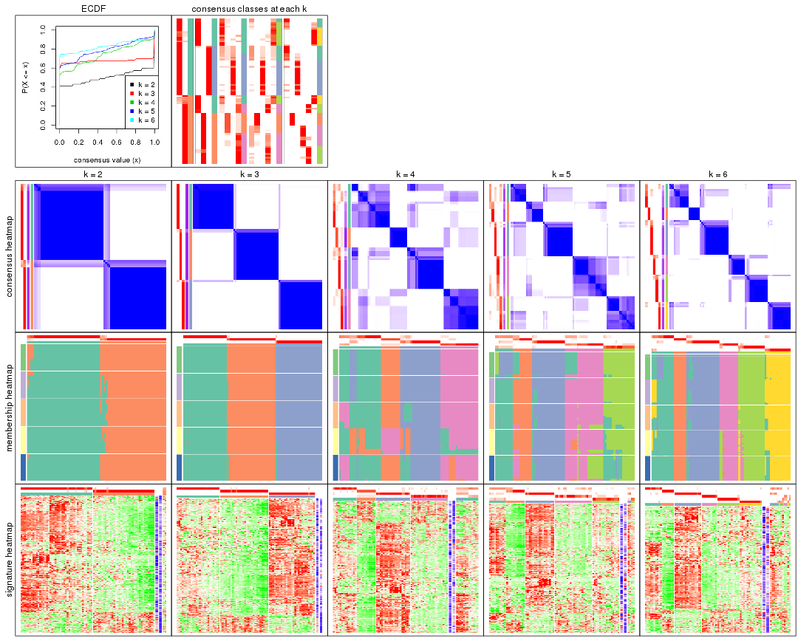
The plots are:
k and the heatmap of
predicted classes for each k.k.k.k.All the plots in panels can be made by individual functions and they are plotted later in this section.
select_partition_number() produces several plots showing different
statistics for choosing “optimized” k. There are following statistics:
k;k, the area increased is defined as \(A_k - A_{k-1}\).The detailed explanations of these statistics can be found in the cola vignette.
Generally speaking, lower PAC score, higher mean silhouette score or higher
concordance corresponds to better partition. Rand index and Jaccard index
measure how similar the current partition is compared to partition with k-1.
If they are too similar, we won't accept k is better than k-1.
select_partition_number(res)
The numeric values for all these statistics can be obtained by get_stats().
get_stats(res)
#> k 1-PAC mean_silhouette concordance area_increased Rand Jaccard
#> 2 2 0.898 0.927 0.971 0.5026 0.495 0.495
#> 3 3 1.000 0.978 0.991 0.3428 0.736 0.513
#> 4 4 0.690 0.702 0.829 0.0978 0.828 0.544
#> 5 5 0.745 0.740 0.840 0.0685 0.934 0.752
#> 6 6 0.878 0.795 0.920 0.0477 0.925 0.669
suggest_best_k() suggests the best \(k\) based on these statistics. The rules are as follows:
NA.suggest_best_k(res)
#> [1] 3
Following shows the table of the partitions (You need to click the show/hide
code output link to see it). The membership matrix (columns with name p*)
is inferred by
clue::cl_consensus()
function with the SE method. Basically the value in the membership matrix
represents the probability to belong to a certain group. The finall class
label for an item is determined with the group with highest probability it
belongs to.
In get_classes() function, the entropy is calculated from the membership
matrix and the silhouette score is calculated from the consensus matrix.
cbind(get_classes(res, k = 2), get_membership(res, k = 2))
#> class entropy silhouette p1 p2
#> 71A0AB6A-CFC2-46F6-878C-6052C5B43D22 1 0.000 0.979 1.000 0.000
#> EFC730EC-6385-4167-A65A-F2A3AAEDA2AC 1 0.000 0.979 1.000 0.000
#> 14F2F39A-EA0F-4027-8877-FEEEEFF1F085 2 0.000 0.958 0.000 1.000
#> 98B2A7F8-A7BD-4DA2-8541-950E44D9ACD7 2 0.000 0.958 0.000 1.000
#> 9166F454-2068-46C2-B2EB-FB3BE4126536 1 0.000 0.979 1.000 0.000
#> 83B2A0BB-CE24-4DCA-B03A-D20353304365 2 0.000 0.958 0.000 1.000
#> D3FC3968-B263-4756-BF7F-1941F70B04DA 2 0.000 0.958 0.000 1.000
#> D357AC5C-C2A0-4CC4-B016-4572400AF117 2 0.000 0.958 0.000 1.000
#> 1055E951-5B93-4AD7-BE5C-4DF4F6AECEF3 2 0.000 0.958 0.000 1.000
#> F2995599-3F21-4F33-92BB-7D70A4735938 1 0.000 0.979 1.000 0.000
#> 3EE533BD-5832-4007-8F1F-439166256EB0 2 0.000 0.958 0.000 1.000
#> EEC6DA0C-5C49-4EFE-976A-19F432DDAA58 1 0.000 0.979 1.000 0.000
#> E6E08C1A-4C1B-4572-92DF-DA15BCBADF76 2 0.000 0.958 0.000 1.000
#> BCFCBBAC-EB95-47EB-9EB0-2CB4AE283A75 1 0.000 0.979 1.000 0.000
#> 0782D6D0-668B-4B83-8C91-8A35EA3BFF6D 2 0.000 0.958 0.000 1.000
#> AC78918E-1031-4AE6-B753-B0799171F0F0 1 0.000 0.979 1.000 0.000
#> 6B497CED-34DA-4CF8-8F8D-696105CB3D5F 1 0.000 0.979 1.000 0.000
#> 2328D472-583B-43A9-81A4-A21DDEBB5B18 2 0.000 0.958 0.000 1.000
#> A6930B33-D9B2-4318-807C-4A25EB4CCCDD 2 0.000 0.958 0.000 1.000
#> C8C48AFD-4D8B-491E-993C-3506DC6DD00F 1 0.000 0.979 1.000 0.000
#> 093FB845-7905-4064-8E8E-76E3587D8E7C 1 0.000 0.979 1.000 0.000
#> B216F996-CCD8-4F56-99B1-4EA9769B10B8 1 0.000 0.979 1.000 0.000
#> CB35DED2-5FEA-43E2-AB42-B6B3A7444B66 1 0.000 0.979 1.000 0.000
#> BA016F57-F58F-4A66-B85A-0B0F911EEA65 2 0.000 0.958 0.000 1.000
#> 519DBD5F-66C0-4CEE-905C-799C855D28FB 1 0.000 0.979 1.000 0.000
#> F5B9B89B-6821-43EE-BCFD-623689D03AF9 2 0.000 0.958 0.000 1.000
#> 55A39F92-CC88-4A2F-A7D3-7A59DEBEBB42 2 0.999 0.071 0.484 0.516
#> 3DBBDEDA-F9FC-40DC-804F-45429EA47ED4 1 0.775 0.698 0.772 0.228
#> BB948BE8-7D48-4AEB-A404-C27A79655D7E 1 0.000 0.979 1.000 0.000
#> 9506723F-9193-4D8E-BD97-8A0062AB2F9C 1 0.000 0.979 1.000 0.000
#> D0758A7A-9D0E-4EA4-8EE9-7143B398647D 1 0.000 0.979 1.000 0.000
#> F400FD4D-72D7-4933-B145-64B7EE245FFC 2 0.000 0.958 0.000 1.000
#> 3F87E9ED-3719-48E1-8B69-E352A03E982D 1 0.584 0.829 0.860 0.140
#> D6365FEB-CC12-4337-BF8C-66236A585B5D 2 0.000 0.958 0.000 1.000
#> A4168812-C38E-4F15-9AF6-79F256279E72 1 0.000 0.979 1.000 0.000
#> DB676839-02AA-42A7-962F-89D6AD892008 1 0.000 0.979 1.000 0.000
#> 198D8E89-51FD-41DE-AD11-FB2F2FE49908 2 0.000 0.958 0.000 1.000
#> 2BADCD01-27E8-49EC-B707-4FAE3D3CB489 1 0.000 0.979 1.000 0.000
#> ABBD6EFE-079B-4BE3-95AB-36AF9197D684 2 0.000 0.958 0.000 1.000
#> 39D66B95-61C7-4B76-8E81-1F9F98024B69 1 0.000 0.979 1.000 0.000
#> 7A920210-CF3D-4458-B6D5-D9B2ADACA469 1 0.000 0.979 1.000 0.000
#> 0CE61CDC-3257-4F03-951B-CC2CFCF675AE 2 0.000 0.958 0.000 1.000
#> 7338D61C-77D6-4095-8847-7FD9967B7646 1 0.584 0.829 0.860 0.140
#> 0D36FAD5-BA81-4FED-9E2A-DB016F2EF18C 1 0.000 0.979 1.000 0.000
#> 43CD31CD-5FAE-418A-B235-49E54560590D 2 0.000 0.958 0.000 1.000
#> B6DD72B0-EEFA-41A9-B71D-22DE1343CD32 1 0.000 0.979 1.000 0.000
#> 2B729CD9-71A5-4336-ACBA-922A30AF4949 2 0.000 0.958 0.000 1.000
#> B76DB955-69B7-4D05-8166-2569ED44628C 1 0.000 0.979 1.000 0.000
#> 09CBEE39-7141-4228-AFD3-4714E32A1FB5 2 0.000 0.958 0.000 1.000
#> AC1700D5-72E7-4C7F-A288-869DFC229252 1 0.000 0.979 1.000 0.000
#> 535A5E8E-8478-477F-87FF-ED6742AA5473 2 0.000 0.958 0.000 1.000
#> CFB8573C-9F36-4715-B6F1-6E5B543168A8 1 0.000 0.979 1.000 0.000
#> 47A45491-6023-44BF-ABC2-9A470F7FC1F7 2 0.000 0.958 0.000 1.000
#> 437C7AA7-98C0-48C7-97DA-86FF44D69B87 2 0.000 0.958 0.000 1.000
#> 649ADE7E-6C06-4AB6-8E97-D8C2AAF79A7E 2 0.000 0.958 0.000 1.000
#> DEA60B47-AD6A-4EBB-9402-6F97E9640E4E 2 0.000 0.958 0.000 1.000
#> 76C574FF-26BF-49CD-9BCA-7BDDCBD06D5D 2 0.000 0.958 0.000 1.000
#> 8B6E1F9B-1E90-4333-8E0C-EEDFF25D15C0 2 0.980 0.296 0.416 0.584
#> A2473EE7-72D6-4D32-9DF7-5D4E444A6715 2 0.904 0.529 0.320 0.680
#> E226C45E-5287-4D0F-A34B-CE251FA293CB 1 0.000 0.979 1.000 0.000
#> A2C71C07-AF0C-4016-808C-DFEF458C91C7 1 0.000 0.979 1.000 0.000
#> DA00D60F-4CF1-4003-BAF5-896EE2BEE2D4 1 0.900 0.530 0.684 0.316
#> 1C17B65F-1930-4CF3-99B6-5D3AA9E99188 2 0.000 0.958 0.000 1.000
#> B837D582-A0D3-46BE-8ECA-883F5396AE88 1 0.000 0.979 1.000 0.000
#> EF1A102F-C206-4874-8F27-0BF069A613B8 1 0.000 0.979 1.000 0.000
#> BC761676-F64C-476A-8D9B-BD3E6149B2CD 2 0.000 0.958 0.000 1.000
#> D8351E5C-DC1D-4B4D-83E6-735B2750D944 2 0.000 0.958 0.000 1.000
#> 59F65F61-03D0-4909-99BD-4CCB53A088A5 1 0.000 0.979 1.000 0.000
#> EFFCCF33-60E1-4550-B13C-14C54ADCF479 2 0.833 0.635 0.264 0.736
#> C45EB423-CC14-4BDB-A0B4-447E5DB6DA9C 1 0.000 0.979 1.000 0.000
#> D34B0BC6-9142-48AE-A113-5923192644A0 1 0.000 0.979 1.000 0.000
#> 634672A6-C68E-479F-AAB5-CBAFF7758EA4 1 0.000 0.979 1.000 0.000
#> 06DAE086-D960-4156-9DC8-D126338E2F29 2 0.000 0.958 0.000 1.000
#> 3353F579-77CA-4D0E-B794-37DE467CC065 1 0.000 0.979 1.000 0.000
#> 976507F2-192B-4095-920A-3014889CD617 1 0.000 0.979 1.000 0.000
#> 3FFF89D9-02F5-4D49-8631-099562BF99C7 2 0.000 0.958 0.000 1.000
#> 8BC2213D-99DA-44E0-826F-EBF211EECFBF 1 0.000 0.979 1.000 0.000
#> A7A16BF7-5E60-4E50-BE04-542EFC4DB472 2 0.000 0.958 0.000 1.000
#> E25C9578-9493-466E-A2CD-546DEB076B2D 2 0.000 0.958 0.000 1.000
#> EA35E230-DE50-45AB-A737-D5C430652A90 1 0.000 0.979 1.000 0.000
cbind(get_classes(res, k = 3), get_membership(res, k = 3))
#> class entropy silhouette p1 p2 p3
#> 71A0AB6A-CFC2-46F6-878C-6052C5B43D22 3 0.0000 0.988 0.000 0.000 1.000
#> EFC730EC-6385-4167-A65A-F2A3AAEDA2AC 1 0.0000 0.998 1.000 0.000 0.000
#> 14F2F39A-EA0F-4027-8877-FEEEEFF1F085 2 0.0000 0.985 0.000 1.000 0.000
#> 98B2A7F8-A7BD-4DA2-8541-950E44D9ACD7 2 0.0000 0.985 0.000 1.000 0.000
#> 9166F454-2068-46C2-B2EB-FB3BE4126536 3 0.0000 0.988 0.000 0.000 1.000
#> 83B2A0BB-CE24-4DCA-B03A-D20353304365 2 0.0000 0.985 0.000 1.000 0.000
#> D3FC3968-B263-4756-BF7F-1941F70B04DA 2 0.0000 0.985 0.000 1.000 0.000
#> D357AC5C-C2A0-4CC4-B016-4572400AF117 2 0.0000 0.985 0.000 1.000 0.000
#> 1055E951-5B93-4AD7-BE5C-4DF4F6AECEF3 2 0.0000 0.985 0.000 1.000 0.000
#> F2995599-3F21-4F33-92BB-7D70A4735938 3 0.0000 0.988 0.000 0.000 1.000
#> 3EE533BD-5832-4007-8F1F-439166256EB0 2 0.4654 0.742 0.208 0.792 0.000
#> EEC6DA0C-5C49-4EFE-976A-19F432DDAA58 1 0.0000 0.998 1.000 0.000 0.000
#> E6E08C1A-4C1B-4572-92DF-DA15BCBADF76 2 0.4555 0.751 0.200 0.800 0.000
#> BCFCBBAC-EB95-47EB-9EB0-2CB4AE283A75 1 0.0592 0.988 0.988 0.000 0.012
#> 0782D6D0-668B-4B83-8C91-8A35EA3BFF6D 2 0.0000 0.985 0.000 1.000 0.000
#> AC78918E-1031-4AE6-B753-B0799171F0F0 3 0.0000 0.988 0.000 0.000 1.000
#> 6B497CED-34DA-4CF8-8F8D-696105CB3D5F 3 0.0000 0.988 0.000 0.000 1.000
#> 2328D472-583B-43A9-81A4-A21DDEBB5B18 2 0.0000 0.985 0.000 1.000 0.000
#> A6930B33-D9B2-4318-807C-4A25EB4CCCDD 2 0.0000 0.985 0.000 1.000 0.000
#> C8C48AFD-4D8B-491E-993C-3506DC6DD00F 3 0.0000 0.988 0.000 0.000 1.000
#> 093FB845-7905-4064-8E8E-76E3587D8E7C 3 0.5497 0.585 0.292 0.000 0.708
#> B216F996-CCD8-4F56-99B1-4EA9769B10B8 1 0.0592 0.988 0.988 0.000 0.012
#> CB35DED2-5FEA-43E2-AB42-B6B3A7444B66 1 0.0000 0.998 1.000 0.000 0.000
#> BA016F57-F58F-4A66-B85A-0B0F911EEA65 1 0.0000 0.998 1.000 0.000 0.000
#> 519DBD5F-66C0-4CEE-905C-799C855D28FB 3 0.0000 0.988 0.000 0.000 1.000
#> F5B9B89B-6821-43EE-BCFD-623689D03AF9 2 0.0000 0.985 0.000 1.000 0.000
#> 55A39F92-CC88-4A2F-A7D3-7A59DEBEBB42 1 0.0000 0.998 1.000 0.000 0.000
#> 3DBBDEDA-F9FC-40DC-804F-45429EA47ED4 1 0.0000 0.998 1.000 0.000 0.000
#> BB948BE8-7D48-4AEB-A404-C27A79655D7E 3 0.0000 0.988 0.000 0.000 1.000
#> 9506723F-9193-4D8E-BD97-8A0062AB2F9C 3 0.0000 0.988 0.000 0.000 1.000
#> D0758A7A-9D0E-4EA4-8EE9-7143B398647D 3 0.0000 0.988 0.000 0.000 1.000
#> F400FD4D-72D7-4933-B145-64B7EE245FFC 2 0.0000 0.985 0.000 1.000 0.000
#> 3F87E9ED-3719-48E1-8B69-E352A03E982D 1 0.0000 0.998 1.000 0.000 0.000
#> D6365FEB-CC12-4337-BF8C-66236A585B5D 2 0.0000 0.985 0.000 1.000 0.000
#> A4168812-C38E-4F15-9AF6-79F256279E72 3 0.0237 0.985 0.004 0.000 0.996
#> DB676839-02AA-42A7-962F-89D6AD892008 3 0.0000 0.988 0.000 0.000 1.000
#> 198D8E89-51FD-41DE-AD11-FB2F2FE49908 2 0.0000 0.985 0.000 1.000 0.000
#> 2BADCD01-27E8-49EC-B707-4FAE3D3CB489 3 0.0000 0.988 0.000 0.000 1.000
#> ABBD6EFE-079B-4BE3-95AB-36AF9197D684 2 0.0000 0.985 0.000 1.000 0.000
#> 39D66B95-61C7-4B76-8E81-1F9F98024B69 3 0.0000 0.988 0.000 0.000 1.000
#> 7A920210-CF3D-4458-B6D5-D9B2ADACA469 3 0.0000 0.988 0.000 0.000 1.000
#> 0CE61CDC-3257-4F03-951B-CC2CFCF675AE 2 0.0000 0.985 0.000 1.000 0.000
#> 7338D61C-77D6-4095-8847-7FD9967B7646 1 0.0000 0.998 1.000 0.000 0.000
#> 0D36FAD5-BA81-4FED-9E2A-DB016F2EF18C 3 0.0000 0.988 0.000 0.000 1.000
#> 43CD31CD-5FAE-418A-B235-49E54560590D 2 0.0000 0.985 0.000 1.000 0.000
#> B6DD72B0-EEFA-41A9-B71D-22DE1343CD32 1 0.0000 0.998 1.000 0.000 0.000
#> 2B729CD9-71A5-4336-ACBA-922A30AF4949 1 0.0000 0.998 1.000 0.000 0.000
#> B76DB955-69B7-4D05-8166-2569ED44628C 3 0.0000 0.988 0.000 0.000 1.000
#> 09CBEE39-7141-4228-AFD3-4714E32A1FB5 2 0.0000 0.985 0.000 1.000 0.000
#> AC1700D5-72E7-4C7F-A288-869DFC229252 3 0.0000 0.988 0.000 0.000 1.000
#> 535A5E8E-8478-477F-87FF-ED6742AA5473 2 0.0000 0.985 0.000 1.000 0.000
#> CFB8573C-9F36-4715-B6F1-6E5B543168A8 1 0.0000 0.998 1.000 0.000 0.000
#> 47A45491-6023-44BF-ABC2-9A470F7FC1F7 1 0.0000 0.998 1.000 0.000 0.000
#> 437C7AA7-98C0-48C7-97DA-86FF44D69B87 2 0.0000 0.985 0.000 1.000 0.000
#> 649ADE7E-6C06-4AB6-8E97-D8C2AAF79A7E 1 0.0000 0.998 1.000 0.000 0.000
#> DEA60B47-AD6A-4EBB-9402-6F97E9640E4E 2 0.0000 0.985 0.000 1.000 0.000
#> 76C574FF-26BF-49CD-9BCA-7BDDCBD06D5D 2 0.0000 0.985 0.000 1.000 0.000
#> 8B6E1F9B-1E90-4333-8E0C-EEDFF25D15C0 1 0.0000 0.998 1.000 0.000 0.000
#> A2473EE7-72D6-4D32-9DF7-5D4E444A6715 1 0.0000 0.998 1.000 0.000 0.000
#> E226C45E-5287-4D0F-A34B-CE251FA293CB 1 0.0000 0.998 1.000 0.000 0.000
#> A2C71C07-AF0C-4016-808C-DFEF458C91C7 3 0.0000 0.988 0.000 0.000 1.000
#> DA00D60F-4CF1-4003-BAF5-896EE2BEE2D4 1 0.0000 0.998 1.000 0.000 0.000
#> 1C17B65F-1930-4CF3-99B6-5D3AA9E99188 2 0.0000 0.985 0.000 1.000 0.000
#> B837D582-A0D3-46BE-8ECA-883F5396AE88 3 0.0000 0.988 0.000 0.000 1.000
#> EF1A102F-C206-4874-8F27-0BF069A613B8 1 0.0000 0.998 1.000 0.000 0.000
#> BC761676-F64C-476A-8D9B-BD3E6149B2CD 1 0.0892 0.980 0.980 0.020 0.000
#> D8351E5C-DC1D-4B4D-83E6-735B2750D944 1 0.0424 0.991 0.992 0.008 0.000
#> 59F65F61-03D0-4909-99BD-4CCB53A088A5 1 0.0000 0.998 1.000 0.000 0.000
#> EFFCCF33-60E1-4550-B13C-14C54ADCF479 1 0.0000 0.998 1.000 0.000 0.000
#> C45EB423-CC14-4BDB-A0B4-447E5DB6DA9C 3 0.0000 0.988 0.000 0.000 1.000
#> D34B0BC6-9142-48AE-A113-5923192644A0 1 0.0000 0.998 1.000 0.000 0.000
#> 634672A6-C68E-479F-AAB5-CBAFF7758EA4 3 0.0000 0.988 0.000 0.000 1.000
#> 06DAE086-D960-4156-9DC8-D126338E2F29 2 0.0000 0.985 0.000 1.000 0.000
#> 3353F579-77CA-4D0E-B794-37DE467CC065 3 0.0000 0.988 0.000 0.000 1.000
#> 976507F2-192B-4095-920A-3014889CD617 3 0.0000 0.988 0.000 0.000 1.000
#> 3FFF89D9-02F5-4D49-8631-099562BF99C7 2 0.0000 0.985 0.000 1.000 0.000
#> 8BC2213D-99DA-44E0-826F-EBF211EECFBF 3 0.0000 0.988 0.000 0.000 1.000
#> A7A16BF7-5E60-4E50-BE04-542EFC4DB472 2 0.0000 0.985 0.000 1.000 0.000
#> E25C9578-9493-466E-A2CD-546DEB076B2D 2 0.0000 0.985 0.000 1.000 0.000
#> EA35E230-DE50-45AB-A737-D5C430652A90 3 0.0000 0.988 0.000 0.000 1.000
cbind(get_classes(res, k = 4), get_membership(res, k = 4))
#> class entropy silhouette p1 p2 p3 p4
#> 71A0AB6A-CFC2-46F6-878C-6052C5B43D22 3 0.7354 0.210 0.388 0.160 0.452 0.000
#> EFC730EC-6385-4167-A65A-F2A3AAEDA2AC 1 0.0000 0.708 1.000 0.000 0.000 0.000
#> 14F2F39A-EA0F-4027-8877-FEEEEFF1F085 2 0.3172 0.994 0.000 0.840 0.000 0.160
#> 98B2A7F8-A7BD-4DA2-8541-950E44D9ACD7 2 0.3172 0.994 0.000 0.840 0.000 0.160
#> 9166F454-2068-46C2-B2EB-FB3BE4126536 3 0.0000 0.861 0.000 0.000 1.000 0.000
#> 83B2A0BB-CE24-4DCA-B03A-D20353304365 2 0.3172 0.994 0.000 0.840 0.000 0.160
#> D3FC3968-B263-4756-BF7F-1941F70B04DA 4 0.0592 0.880 0.000 0.016 0.000 0.984
#> D357AC5C-C2A0-4CC4-B016-4572400AF117 4 0.3688 0.660 0.000 0.208 0.000 0.792
#> 1055E951-5B93-4AD7-BE5C-4DF4F6AECEF3 4 0.0000 0.886 0.000 0.000 0.000 1.000
#> F2995599-3F21-4F33-92BB-7D70A4735938 3 0.0000 0.861 0.000 0.000 1.000 0.000
#> 3EE533BD-5832-4007-8F1F-439166256EB0 4 0.0921 0.873 0.028 0.000 0.000 0.972
#> EEC6DA0C-5C49-4EFE-976A-19F432DDAA58 1 0.0336 0.706 0.992 0.000 0.008 0.000
#> E6E08C1A-4C1B-4572-92DF-DA15BCBADF76 4 0.0188 0.885 0.004 0.000 0.000 0.996
#> BCFCBBAC-EB95-47EB-9EB0-2CB4AE283A75 1 0.3625 0.630 0.828 0.160 0.012 0.000
#> 0782D6D0-668B-4B83-8C91-8A35EA3BFF6D 2 0.3172 0.994 0.000 0.840 0.000 0.160
#> AC78918E-1031-4AE6-B753-B0799171F0F0 3 0.0000 0.861 0.000 0.000 1.000 0.000
#> 6B497CED-34DA-4CF8-8F8D-696105CB3D5F 3 0.7354 0.210 0.388 0.160 0.452 0.000
#> 2328D472-583B-43A9-81A4-A21DDEBB5B18 4 0.0000 0.886 0.000 0.000 0.000 1.000
#> A6930B33-D9B2-4318-807C-4A25EB4CCCDD 2 0.3172 0.994 0.000 0.840 0.000 0.160
#> C8C48AFD-4D8B-491E-993C-3506DC6DD00F 3 0.6429 0.556 0.192 0.160 0.648 0.000
#> 093FB845-7905-4064-8E8E-76E3587D8E7C 1 0.7367 -0.140 0.436 0.160 0.404 0.000
#> B216F996-CCD8-4F56-99B1-4EA9769B10B8 1 0.3625 0.630 0.828 0.160 0.012 0.000
#> CB35DED2-5FEA-43E2-AB42-B6B3A7444B66 1 0.2469 0.666 0.892 0.108 0.000 0.000
#> BA016F57-F58F-4A66-B85A-0B0F911EEA65 1 0.4941 0.184 0.564 0.000 0.000 0.436
#> 519DBD5F-66C0-4CEE-905C-799C855D28FB 3 0.0000 0.861 0.000 0.000 1.000 0.000
#> F5B9B89B-6821-43EE-BCFD-623689D03AF9 2 0.3172 0.994 0.000 0.840 0.000 0.160
#> 55A39F92-CC88-4A2F-A7D3-7A59DEBEBB42 1 0.0000 0.708 1.000 0.000 0.000 0.000
#> 3DBBDEDA-F9FC-40DC-804F-45429EA47ED4 1 0.0000 0.708 1.000 0.000 0.000 0.000
#> BB948BE8-7D48-4AEB-A404-C27A79655D7E 3 0.6463 0.550 0.196 0.160 0.644 0.000
#> 9506723F-9193-4D8E-BD97-8A0062AB2F9C 3 0.7354 0.210 0.388 0.160 0.452 0.000
#> D0758A7A-9D0E-4EA4-8EE9-7143B398647D 1 0.7367 -0.140 0.436 0.160 0.404 0.000
#> F400FD4D-72D7-4933-B145-64B7EE245FFC 2 0.3172 0.994 0.000 0.840 0.000 0.160
#> 3F87E9ED-3719-48E1-8B69-E352A03E982D 1 0.0188 0.708 0.996 0.000 0.000 0.004
#> D6365FEB-CC12-4337-BF8C-66236A585B5D 4 0.0000 0.886 0.000 0.000 0.000 1.000
#> A4168812-C38E-4F15-9AF6-79F256279E72 1 0.7367 -0.140 0.436 0.160 0.404 0.000
#> DB676839-02AA-42A7-962F-89D6AD892008 3 0.0000 0.861 0.000 0.000 1.000 0.000
#> 198D8E89-51FD-41DE-AD11-FB2F2FE49908 4 0.0592 0.880 0.000 0.016 0.000 0.984
#> 2BADCD01-27E8-49EC-B707-4FAE3D3CB489 3 0.0000 0.861 0.000 0.000 1.000 0.000
#> ABBD6EFE-079B-4BE3-95AB-36AF9197D684 2 0.3172 0.994 0.000 0.840 0.000 0.160
#> 39D66B95-61C7-4B76-8E81-1F9F98024B69 3 0.0000 0.861 0.000 0.000 1.000 0.000
#> 7A920210-CF3D-4458-B6D5-D9B2ADACA469 3 0.0000 0.861 0.000 0.000 1.000 0.000
#> 0CE61CDC-3257-4F03-951B-CC2CFCF675AE 4 0.0000 0.886 0.000 0.000 0.000 1.000
#> 7338D61C-77D6-4095-8847-7FD9967B7646 1 0.4817 0.294 0.612 0.000 0.000 0.388
#> 0D36FAD5-BA81-4FED-9E2A-DB016F2EF18C 3 0.0000 0.861 0.000 0.000 1.000 0.000
#> 43CD31CD-5FAE-418A-B235-49E54560590D 4 0.0592 0.880 0.000 0.016 0.000 0.984
#> B6DD72B0-EEFA-41A9-B71D-22DE1343CD32 1 0.0000 0.708 1.000 0.000 0.000 0.000
#> 2B729CD9-71A5-4336-ACBA-922A30AF4949 4 0.3172 0.767 0.160 0.000 0.000 0.840
#> B76DB955-69B7-4D05-8166-2569ED44628C 3 0.0000 0.861 0.000 0.000 1.000 0.000
#> 09CBEE39-7141-4228-AFD3-4714E32A1FB5 4 0.0592 0.880 0.000 0.016 0.000 0.984
#> AC1700D5-72E7-4C7F-A288-869DFC229252 3 0.0000 0.861 0.000 0.000 1.000 0.000
#> 535A5E8E-8478-477F-87FF-ED6742AA5473 4 0.0000 0.886 0.000 0.000 0.000 1.000
#> CFB8573C-9F36-4715-B6F1-6E5B543168A8 1 0.0592 0.705 0.984 0.000 0.000 0.016
#> 47A45491-6023-44BF-ABC2-9A470F7FC1F7 4 0.3219 0.762 0.164 0.000 0.000 0.836
#> 437C7AA7-98C0-48C7-97DA-86FF44D69B87 2 0.3610 0.945 0.000 0.800 0.000 0.200
#> 649ADE7E-6C06-4AB6-8E97-D8C2AAF79A7E 4 0.3219 0.762 0.164 0.000 0.000 0.836
#> DEA60B47-AD6A-4EBB-9402-6F97E9640E4E 4 0.3610 0.673 0.000 0.200 0.000 0.800
#> 76C574FF-26BF-49CD-9BCA-7BDDCBD06D5D 2 0.3172 0.994 0.000 0.840 0.000 0.160
#> 8B6E1F9B-1E90-4333-8E0C-EEDFF25D15C0 1 0.4817 0.294 0.612 0.000 0.000 0.388
#> A2473EE7-72D6-4D32-9DF7-5D4E444A6715 1 0.4941 0.184 0.564 0.000 0.000 0.436
#> E226C45E-5287-4D0F-A34B-CE251FA293CB 1 0.3975 0.512 0.760 0.000 0.240 0.000
#> A2C71C07-AF0C-4016-808C-DFEF458C91C7 3 0.0000 0.861 0.000 0.000 1.000 0.000
#> DA00D60F-4CF1-4003-BAF5-896EE2BEE2D4 1 0.4941 0.184 0.564 0.000 0.000 0.436
#> 1C17B65F-1930-4CF3-99B6-5D3AA9E99188 4 0.0000 0.886 0.000 0.000 0.000 1.000
#> B837D582-A0D3-46BE-8ECA-883F5396AE88 3 0.4164 0.628 0.264 0.000 0.736 0.000
#> EF1A102F-C206-4874-8F27-0BF069A613B8 1 0.0000 0.708 1.000 0.000 0.000 0.000
#> BC761676-F64C-476A-8D9B-BD3E6149B2CD 4 0.3024 0.779 0.148 0.000 0.000 0.852
#> D8351E5C-DC1D-4B4D-83E6-735B2750D944 4 0.3172 0.767 0.160 0.000 0.000 0.840
#> 59F65F61-03D0-4909-99BD-4CCB53A088A5 1 0.0000 0.708 1.000 0.000 0.000 0.000
#> EFFCCF33-60E1-4550-B13C-14C54ADCF479 1 0.4500 0.414 0.684 0.000 0.000 0.316
#> C45EB423-CC14-4BDB-A0B4-447E5DB6DA9C 3 0.0000 0.861 0.000 0.000 1.000 0.000
#> D34B0BC6-9142-48AE-A113-5923192644A0 1 0.3172 0.637 0.840 0.160 0.000 0.000
#> 634672A6-C68E-479F-AAB5-CBAFF7758EA4 3 0.0000 0.861 0.000 0.000 1.000 0.000
#> 06DAE086-D960-4156-9DC8-D126338E2F29 2 0.3266 0.986 0.000 0.832 0.000 0.168
#> 3353F579-77CA-4D0E-B794-37DE467CC065 3 0.2868 0.753 0.136 0.000 0.864 0.000
#> 976507F2-192B-4095-920A-3014889CD617 3 0.0000 0.861 0.000 0.000 1.000 0.000
#> 3FFF89D9-02F5-4D49-8631-099562BF99C7 4 0.0000 0.886 0.000 0.000 0.000 1.000
#> 8BC2213D-99DA-44E0-826F-EBF211EECFBF 3 0.0000 0.861 0.000 0.000 1.000 0.000
#> A7A16BF7-5E60-4E50-BE04-542EFC4DB472 4 0.3649 0.667 0.000 0.204 0.000 0.796
#> E25C9578-9493-466E-A2CD-546DEB076B2D 4 0.3649 0.667 0.000 0.204 0.000 0.796
#> EA35E230-DE50-45AB-A737-D5C430652A90 1 0.7367 -0.140 0.436 0.160 0.404 0.000
cbind(get_classes(res, k = 5), get_membership(res, k = 5))
#> class entropy silhouette p1 p2 p3 p4 p5
#> 71A0AB6A-CFC2-46F6-878C-6052C5B43D22 1 0.6240 0.884 0.544 0.000 0.212 0.000 0.244
#> EFC730EC-6385-4167-A65A-F2A3AAEDA2AC 5 0.2020 0.659 0.100 0.000 0.000 0.000 0.900
#> 14F2F39A-EA0F-4027-8877-FEEEEFF1F085 2 0.0000 0.829 0.000 1.000 0.000 0.000 0.000
#> 98B2A7F8-A7BD-4DA2-8541-950E44D9ACD7 2 0.0000 0.829 0.000 1.000 0.000 0.000 0.000
#> 9166F454-2068-46C2-B2EB-FB3BE4126536 3 0.0162 0.923 0.004 0.000 0.996 0.000 0.000
#> 83B2A0BB-CE24-4DCA-B03A-D20353304365 2 0.0000 0.829 0.000 1.000 0.000 0.000 0.000
#> D3FC3968-B263-4756-BF7F-1941F70B04DA 4 0.3452 0.746 0.244 0.000 0.000 0.756 0.000
#> D357AC5C-C2A0-4CC4-B016-4572400AF117 4 0.5929 0.546 0.432 0.104 0.000 0.464 0.000
#> 1055E951-5B93-4AD7-BE5C-4DF4F6AECEF3 4 0.0000 0.752 0.000 0.000 0.000 1.000 0.000
#> F2995599-3F21-4F33-92BB-7D70A4735938 3 0.0000 0.927 0.000 0.000 1.000 0.000 0.000
#> 3EE533BD-5832-4007-8F1F-439166256EB0 4 0.0000 0.752 0.000 0.000 0.000 1.000 0.000
#> EEC6DA0C-5C49-4EFE-976A-19F432DDAA58 5 0.0404 0.732 0.000 0.000 0.012 0.000 0.988
#> E6E08C1A-4C1B-4572-92DF-DA15BCBADF76 4 0.0000 0.752 0.000 0.000 0.000 1.000 0.000
#> BCFCBBAC-EB95-47EB-9EB0-2CB4AE283A75 1 0.4504 0.595 0.564 0.000 0.008 0.000 0.428
#> 0782D6D0-668B-4B83-8C91-8A35EA3BFF6D 2 0.0000 0.829 0.000 1.000 0.000 0.000 0.000
#> AC78918E-1031-4AE6-B753-B0799171F0F0 3 0.0000 0.927 0.000 0.000 1.000 0.000 0.000
#> 6B497CED-34DA-4CF8-8F8D-696105CB3D5F 1 0.6216 0.888 0.548 0.000 0.208 0.000 0.244
#> 2328D472-583B-43A9-81A4-A21DDEBB5B18 4 0.3452 0.746 0.244 0.000 0.000 0.756 0.000
#> A6930B33-D9B2-4318-807C-4A25EB4CCCDD 2 0.0000 0.829 0.000 1.000 0.000 0.000 0.000
#> C8C48AFD-4D8B-491E-993C-3506DC6DD00F 3 0.6322 -0.360 0.324 0.000 0.500 0.000 0.176
#> 093FB845-7905-4064-8E8E-76E3587D8E7C 1 0.6087 0.892 0.568 0.000 0.188 0.000 0.244
#> B216F996-CCD8-4F56-99B1-4EA9769B10B8 1 0.4497 0.600 0.568 0.000 0.008 0.000 0.424
#> CB35DED2-5FEA-43E2-AB42-B6B3A7444B66 5 0.3305 0.441 0.224 0.000 0.000 0.000 0.776
#> BA016F57-F58F-4A66-B85A-0B0F911EEA65 5 0.3480 0.748 0.000 0.000 0.000 0.248 0.752
#> 519DBD5F-66C0-4CEE-905C-799C855D28FB 3 0.0000 0.927 0.000 0.000 1.000 0.000 0.000
#> F5B9B89B-6821-43EE-BCFD-623689D03AF9 2 0.4161 0.652 0.392 0.608 0.000 0.000 0.000
#> 55A39F92-CC88-4A2F-A7D3-7A59DEBEBB42 5 0.0794 0.715 0.028 0.000 0.000 0.000 0.972
#> 3DBBDEDA-F9FC-40DC-804F-45429EA47ED4 5 0.0963 0.745 0.000 0.000 0.000 0.036 0.964
#> BB948BE8-7D48-4AEB-A404-C27A79655D7E 1 0.6409 0.654 0.468 0.000 0.352 0.000 0.180
#> 9506723F-9193-4D8E-BD97-8A0062AB2F9C 1 0.6216 0.888 0.548 0.000 0.208 0.000 0.244
#> D0758A7A-9D0E-4EA4-8EE9-7143B398647D 1 0.6087 0.892 0.568 0.000 0.188 0.000 0.244
#> F400FD4D-72D7-4933-B145-64B7EE245FFC 2 0.4219 0.633 0.416 0.584 0.000 0.000 0.000
#> 3F87E9ED-3719-48E1-8B69-E352A03E982D 5 0.1908 0.755 0.000 0.000 0.000 0.092 0.908
#> D6365FEB-CC12-4337-BF8C-66236A585B5D 4 0.0000 0.752 0.000 0.000 0.000 1.000 0.000
#> A4168812-C38E-4F15-9AF6-79F256279E72 1 0.6087 0.892 0.568 0.000 0.188 0.000 0.244
#> DB676839-02AA-42A7-962F-89D6AD892008 3 0.0000 0.927 0.000 0.000 1.000 0.000 0.000
#> 198D8E89-51FD-41DE-AD11-FB2F2FE49908 4 0.4249 0.660 0.432 0.000 0.000 0.568 0.000
#> 2BADCD01-27E8-49EC-B707-4FAE3D3CB489 3 0.0000 0.927 0.000 0.000 1.000 0.000 0.000
#> ABBD6EFE-079B-4BE3-95AB-36AF9197D684 2 0.0000 0.829 0.000 1.000 0.000 0.000 0.000
#> 39D66B95-61C7-4B76-8E81-1F9F98024B69 3 0.0000 0.927 0.000 0.000 1.000 0.000 0.000
#> 7A920210-CF3D-4458-B6D5-D9B2ADACA469 3 0.0000 0.927 0.000 0.000 1.000 0.000 0.000
#> 0CE61CDC-3257-4F03-951B-CC2CFCF675AE 4 0.3452 0.746 0.244 0.000 0.000 0.756 0.000
#> 7338D61C-77D6-4095-8847-7FD9967B7646 5 0.3480 0.748 0.000 0.000 0.000 0.248 0.752
#> 0D36FAD5-BA81-4FED-9E2A-DB016F2EF18C 3 0.0000 0.927 0.000 0.000 1.000 0.000 0.000
#> 43CD31CD-5FAE-418A-B235-49E54560590D 4 0.4249 0.660 0.432 0.000 0.000 0.568 0.000
#> B6DD72B0-EEFA-41A9-B71D-22DE1343CD32 5 0.2230 0.639 0.116 0.000 0.000 0.000 0.884
#> 2B729CD9-71A5-4336-ACBA-922A30AF4949 4 0.0000 0.752 0.000 0.000 0.000 1.000 0.000
#> B76DB955-69B7-4D05-8166-2569ED44628C 3 0.0000 0.927 0.000 0.000 1.000 0.000 0.000
#> 09CBEE39-7141-4228-AFD3-4714E32A1FB5 4 0.4249 0.660 0.432 0.000 0.000 0.568 0.000
#> AC1700D5-72E7-4C7F-A288-869DFC229252 3 0.0162 0.923 0.004 0.000 0.996 0.000 0.000
#> 535A5E8E-8478-477F-87FF-ED6742AA5473 4 0.1341 0.756 0.056 0.000 0.000 0.944 0.000
#> CFB8573C-9F36-4715-B6F1-6E5B543168A8 5 0.3461 0.751 0.000 0.000 0.004 0.224 0.772
#> 47A45491-6023-44BF-ABC2-9A470F7FC1F7 4 0.0000 0.752 0.000 0.000 0.000 1.000 0.000
#> 437C7AA7-98C0-48C7-97DA-86FF44D69B87 2 0.5542 0.504 0.432 0.500 0.000 0.068 0.000
#> 649ADE7E-6C06-4AB6-8E97-D8C2AAF79A7E 4 0.3003 0.521 0.000 0.000 0.000 0.812 0.188
#> DEA60B47-AD6A-4EBB-9402-6F97E9640E4E 4 0.5492 0.597 0.432 0.064 0.000 0.504 0.000
#> 76C574FF-26BF-49CD-9BCA-7BDDCBD06D5D 2 0.0000 0.829 0.000 1.000 0.000 0.000 0.000
#> 8B6E1F9B-1E90-4333-8E0C-EEDFF25D15C0 5 0.3452 0.749 0.000 0.000 0.000 0.244 0.756
#> A2473EE7-72D6-4D32-9DF7-5D4E444A6715 5 0.3480 0.748 0.000 0.000 0.000 0.248 0.752
#> E226C45E-5287-4D0F-A34B-CE251FA293CB 5 0.3210 0.618 0.000 0.000 0.212 0.000 0.788
#> A2C71C07-AF0C-4016-808C-DFEF458C91C7 3 0.0000 0.927 0.000 0.000 1.000 0.000 0.000
#> DA00D60F-4CF1-4003-BAF5-896EE2BEE2D4 5 0.3480 0.748 0.000 0.000 0.000 0.248 0.752
#> 1C17B65F-1930-4CF3-99B6-5D3AA9E99188 4 0.2966 0.754 0.184 0.000 0.000 0.816 0.000
#> B837D582-A0D3-46BE-8ECA-883F5396AE88 3 0.5273 0.372 0.160 0.000 0.680 0.000 0.160
#> EF1A102F-C206-4874-8F27-0BF069A613B8 5 0.0000 0.730 0.000 0.000 0.000 0.000 1.000
#> BC761676-F64C-476A-8D9B-BD3E6149B2CD 4 0.0000 0.752 0.000 0.000 0.000 1.000 0.000
#> D8351E5C-DC1D-4B4D-83E6-735B2750D944 4 0.0000 0.752 0.000 0.000 0.000 1.000 0.000
#> 59F65F61-03D0-4909-99BD-4CCB53A088A5 5 0.1908 0.664 0.092 0.000 0.000 0.000 0.908
#> EFFCCF33-60E1-4550-B13C-14C54ADCF479 5 0.3452 0.749 0.000 0.000 0.000 0.244 0.756
#> C45EB423-CC14-4BDB-A0B4-447E5DB6DA9C 3 0.0000 0.927 0.000 0.000 1.000 0.000 0.000
#> D34B0BC6-9142-48AE-A113-5923192644A0 5 0.3730 0.263 0.288 0.000 0.000 0.000 0.712
#> 634672A6-C68E-479F-AAB5-CBAFF7758EA4 3 0.0000 0.927 0.000 0.000 1.000 0.000 0.000
#> 06DAE086-D960-4156-9DC8-D126338E2F29 2 0.4249 0.617 0.432 0.568 0.000 0.000 0.000
#> 3353F579-77CA-4D0E-B794-37DE467CC065 3 0.3687 0.662 0.180 0.000 0.792 0.000 0.028
#> 976507F2-192B-4095-920A-3014889CD617 3 0.0000 0.927 0.000 0.000 1.000 0.000 0.000
#> 3FFF89D9-02F5-4D49-8631-099562BF99C7 4 0.3452 0.746 0.244 0.000 0.000 0.756 0.000
#> 8BC2213D-99DA-44E0-826F-EBF211EECFBF 3 0.0000 0.927 0.000 0.000 1.000 0.000 0.000
#> A7A16BF7-5E60-4E50-BE04-542EFC4DB472 4 0.5929 0.546 0.432 0.104 0.000 0.464 0.000
#> E25C9578-9493-466E-A2CD-546DEB076B2D 4 0.5929 0.546 0.432 0.104 0.000 0.464 0.000
#> EA35E230-DE50-45AB-A737-D5C430652A90 1 0.6108 0.890 0.564 0.000 0.188 0.000 0.248
cbind(get_classes(res, k = 6), get_membership(res, k = 6))
#> class entropy silhouette p1 p2 p3 p4 p5 p6
#> 71A0AB6A-CFC2-46F6-878C-6052C5B43D22 1 0.2854 0.6778 0.792 0.000 0.208 0.000 0.000 0.000
#> EFC730EC-6385-4167-A65A-F2A3AAEDA2AC 6 0.3737 0.3418 0.392 0.000 0.000 0.000 0.000 0.608
#> 14F2F39A-EA0F-4027-8877-FEEEEFF1F085 2 0.0000 1.0000 0.000 1.000 0.000 0.000 0.000 0.000
#> 98B2A7F8-A7BD-4DA2-8541-950E44D9ACD7 2 0.0000 1.0000 0.000 1.000 0.000 0.000 0.000 0.000
#> 9166F454-2068-46C2-B2EB-FB3BE4126536 3 0.2048 0.7934 0.120 0.000 0.880 0.000 0.000 0.000
#> 83B2A0BB-CE24-4DCA-B03A-D20353304365 2 0.0000 1.0000 0.000 1.000 0.000 0.000 0.000 0.000
#> D3FC3968-B263-4756-BF7F-1941F70B04DA 5 0.3756 0.3564 0.000 0.000 0.000 0.400 0.600 0.000
#> D357AC5C-C2A0-4CC4-B016-4572400AF117 4 0.0000 0.8959 0.000 0.000 0.000 1.000 0.000 0.000
#> 1055E951-5B93-4AD7-BE5C-4DF4F6AECEF3 5 0.0000 0.9112 0.000 0.000 0.000 0.000 1.000 0.000
#> F2995599-3F21-4F33-92BB-7D70A4735938 3 0.0000 0.9114 0.000 0.000 1.000 0.000 0.000 0.000
#> 3EE533BD-5832-4007-8F1F-439166256EB0 5 0.0000 0.9112 0.000 0.000 0.000 0.000 1.000 0.000
#> EEC6DA0C-5C49-4EFE-976A-19F432DDAA58 6 0.0405 0.9086 0.008 0.000 0.004 0.000 0.000 0.988
#> E6E08C1A-4C1B-4572-92DF-DA15BCBADF76 5 0.0000 0.9112 0.000 0.000 0.000 0.000 1.000 0.000
#> BCFCBBAC-EB95-47EB-9EB0-2CB4AE283A75 1 0.0146 0.7806 0.996 0.000 0.000 0.000 0.000 0.004
#> 0782D6D0-668B-4B83-8C91-8A35EA3BFF6D 2 0.0000 1.0000 0.000 1.000 0.000 0.000 0.000 0.000
#> AC78918E-1031-4AE6-B753-B0799171F0F0 3 0.0000 0.9114 0.000 0.000 1.000 0.000 0.000 0.000
#> 6B497CED-34DA-4CF8-8F8D-696105CB3D5F 1 0.2793 0.6862 0.800 0.000 0.200 0.000 0.000 0.000
#> 2328D472-583B-43A9-81A4-A21DDEBB5B18 5 0.0146 0.9091 0.000 0.000 0.000 0.004 0.996 0.000
#> A6930B33-D9B2-4318-807C-4A25EB4CCCDD 2 0.0000 1.0000 0.000 1.000 0.000 0.000 0.000 0.000
#> C8C48AFD-4D8B-491E-993C-3506DC6DD00F 3 0.3869 -0.1176 0.500 0.000 0.500 0.000 0.000 0.000
#> 093FB845-7905-4064-8E8E-76E3587D8E7C 1 0.0000 0.7811 1.000 0.000 0.000 0.000 0.000 0.000
#> B216F996-CCD8-4F56-99B1-4EA9769B10B8 1 0.0000 0.7811 1.000 0.000 0.000 0.000 0.000 0.000
#> CB35DED2-5FEA-43E2-AB42-B6B3A7444B66 1 0.3607 0.3761 0.652 0.000 0.000 0.000 0.000 0.348
#> BA016F57-F58F-4A66-B85A-0B0F911EEA65 6 0.0146 0.9137 0.000 0.000 0.000 0.000 0.004 0.996
#> 519DBD5F-66C0-4CEE-905C-799C855D28FB 3 0.0000 0.9114 0.000 0.000 1.000 0.000 0.000 0.000
#> F5B9B89B-6821-43EE-BCFD-623689D03AF9 4 0.1663 0.8242 0.000 0.088 0.000 0.912 0.000 0.000
#> 55A39F92-CC88-4A2F-A7D3-7A59DEBEBB42 6 0.3050 0.6278 0.236 0.000 0.000 0.000 0.000 0.764
#> 3DBBDEDA-F9FC-40DC-804F-45429EA47ED4 6 0.0000 0.9140 0.000 0.000 0.000 0.000 0.000 1.000
#> BB948BE8-7D48-4AEB-A404-C27A79655D7E 1 0.3607 0.4286 0.652 0.000 0.348 0.000 0.000 0.000
#> 9506723F-9193-4D8E-BD97-8A0062AB2F9C 1 0.2823 0.6824 0.796 0.000 0.204 0.000 0.000 0.000
#> D0758A7A-9D0E-4EA4-8EE9-7143B398647D 1 0.0000 0.7811 1.000 0.000 0.000 0.000 0.000 0.000
#> F400FD4D-72D7-4933-B145-64B7EE245FFC 4 0.0000 0.8959 0.000 0.000 0.000 1.000 0.000 0.000
#> 3F87E9ED-3719-48E1-8B69-E352A03E982D 6 0.0000 0.9140 0.000 0.000 0.000 0.000 0.000 1.000
#> D6365FEB-CC12-4337-BF8C-66236A585B5D 5 0.0000 0.9112 0.000 0.000 0.000 0.000 1.000 0.000
#> A4168812-C38E-4F15-9AF6-79F256279E72 1 0.0000 0.7811 1.000 0.000 0.000 0.000 0.000 0.000
#> DB676839-02AA-42A7-962F-89D6AD892008 3 0.0000 0.9114 0.000 0.000 1.000 0.000 0.000 0.000
#> 198D8E89-51FD-41DE-AD11-FB2F2FE49908 4 0.0000 0.8959 0.000 0.000 0.000 1.000 0.000 0.000
#> 2BADCD01-27E8-49EC-B707-4FAE3D3CB489 3 0.0000 0.9114 0.000 0.000 1.000 0.000 0.000 0.000
#> ABBD6EFE-079B-4BE3-95AB-36AF9197D684 2 0.0000 1.0000 0.000 1.000 0.000 0.000 0.000 0.000
#> 39D66B95-61C7-4B76-8E81-1F9F98024B69 3 0.0000 0.9114 0.000 0.000 1.000 0.000 0.000 0.000
#> 7A920210-CF3D-4458-B6D5-D9B2ADACA469 3 0.0000 0.9114 0.000 0.000 1.000 0.000 0.000 0.000
#> 0CE61CDC-3257-4F03-951B-CC2CFCF675AE 5 0.3221 0.6166 0.000 0.000 0.000 0.264 0.736 0.000
#> 7338D61C-77D6-4095-8847-7FD9967B7646 6 0.0146 0.9137 0.000 0.000 0.000 0.000 0.004 0.996
#> 0D36FAD5-BA81-4FED-9E2A-DB016F2EF18C 3 0.0000 0.9114 0.000 0.000 1.000 0.000 0.000 0.000
#> 43CD31CD-5FAE-418A-B235-49E54560590D 4 0.3756 0.4062 0.000 0.000 0.000 0.600 0.400 0.000
#> B6DD72B0-EEFA-41A9-B71D-22DE1343CD32 1 0.3847 0.0495 0.544 0.000 0.000 0.000 0.000 0.456
#> 2B729CD9-71A5-4336-ACBA-922A30AF4949 5 0.0000 0.9112 0.000 0.000 0.000 0.000 1.000 0.000
#> B76DB955-69B7-4D05-8166-2569ED44628C 3 0.0000 0.9114 0.000 0.000 1.000 0.000 0.000 0.000
#> 09CBEE39-7141-4228-AFD3-4714E32A1FB5 4 0.3747 0.4145 0.000 0.000 0.000 0.604 0.396 0.000
#> AC1700D5-72E7-4C7F-A288-869DFC229252 3 0.0000 0.9114 0.000 0.000 1.000 0.000 0.000 0.000
#> 535A5E8E-8478-477F-87FF-ED6742AA5473 5 0.0000 0.9112 0.000 0.000 0.000 0.000 1.000 0.000
#> CFB8573C-9F36-4715-B6F1-6E5B543168A8 6 0.0146 0.9137 0.000 0.000 0.000 0.000 0.004 0.996
#> 47A45491-6023-44BF-ABC2-9A470F7FC1F7 5 0.0000 0.9112 0.000 0.000 0.000 0.000 1.000 0.000
#> 437C7AA7-98C0-48C7-97DA-86FF44D69B87 4 0.0000 0.8959 0.000 0.000 0.000 1.000 0.000 0.000
#> 649ADE7E-6C06-4AB6-8E97-D8C2AAF79A7E 5 0.3747 0.3596 0.000 0.000 0.000 0.000 0.604 0.396
#> DEA60B47-AD6A-4EBB-9402-6F97E9640E4E 4 0.0000 0.8959 0.000 0.000 0.000 1.000 0.000 0.000
#> 76C574FF-26BF-49CD-9BCA-7BDDCBD06D5D 2 0.0000 1.0000 0.000 1.000 0.000 0.000 0.000 0.000
#> 8B6E1F9B-1E90-4333-8E0C-EEDFF25D15C0 6 0.0000 0.9140 0.000 0.000 0.000 0.000 0.000 1.000
#> A2473EE7-72D6-4D32-9DF7-5D4E444A6715 6 0.0146 0.9137 0.000 0.000 0.000 0.000 0.004 0.996
#> E226C45E-5287-4D0F-A34B-CE251FA293CB 6 0.0146 0.9123 0.000 0.000 0.004 0.000 0.000 0.996
#> A2C71C07-AF0C-4016-808C-DFEF458C91C7 3 0.0000 0.9114 0.000 0.000 1.000 0.000 0.000 0.000
#> DA00D60F-4CF1-4003-BAF5-896EE2BEE2D4 6 0.0146 0.9137 0.000 0.000 0.000 0.000 0.004 0.996
#> 1C17B65F-1930-4CF3-99B6-5D3AA9E99188 5 0.0146 0.9091 0.000 0.000 0.000 0.004 0.996 0.000
#> B837D582-A0D3-46BE-8ECA-883F5396AE88 3 0.3881 0.3203 0.396 0.000 0.600 0.000 0.000 0.004
#> EF1A102F-C206-4874-8F27-0BF069A613B8 6 0.0000 0.9140 0.000 0.000 0.000 0.000 0.000 1.000
#> BC761676-F64C-476A-8D9B-BD3E6149B2CD 5 0.0000 0.9112 0.000 0.000 0.000 0.000 1.000 0.000
#> D8351E5C-DC1D-4B4D-83E6-735B2750D944 5 0.0000 0.9112 0.000 0.000 0.000 0.000 1.000 0.000
#> 59F65F61-03D0-4909-99BD-4CCB53A088A5 6 0.3607 0.4075 0.348 0.000 0.000 0.000 0.000 0.652
#> EFFCCF33-60E1-4550-B13C-14C54ADCF479 6 0.0000 0.9140 0.000 0.000 0.000 0.000 0.000 1.000
#> C45EB423-CC14-4BDB-A0B4-447E5DB6DA9C 3 0.0000 0.9114 0.000 0.000 1.000 0.000 0.000 0.000
#> D34B0BC6-9142-48AE-A113-5923192644A0 1 0.3330 0.5030 0.716 0.000 0.000 0.000 0.000 0.284
#> 634672A6-C68E-479F-AAB5-CBAFF7758EA4 3 0.0000 0.9114 0.000 0.000 1.000 0.000 0.000 0.000
#> 06DAE086-D960-4156-9DC8-D126338E2F29 4 0.0000 0.8959 0.000 0.000 0.000 1.000 0.000 0.000
#> 3353F579-77CA-4D0E-B794-37DE467CC065 3 0.3727 0.3988 0.388 0.000 0.612 0.000 0.000 0.000
#> 976507F2-192B-4095-920A-3014889CD617 3 0.0000 0.9114 0.000 0.000 1.000 0.000 0.000 0.000
#> 3FFF89D9-02F5-4D49-8631-099562BF99C7 5 0.0146 0.9091 0.000 0.000 0.000 0.004 0.996 0.000
#> 8BC2213D-99DA-44E0-826F-EBF211EECFBF 3 0.0000 0.9114 0.000 0.000 1.000 0.000 0.000 0.000
#> A7A16BF7-5E60-4E50-BE04-542EFC4DB472 4 0.0000 0.8959 0.000 0.000 0.000 1.000 0.000 0.000
#> E25C9578-9493-466E-A2CD-546DEB076B2D 4 0.0000 0.8959 0.000 0.000 0.000 1.000 0.000 0.000
#> EA35E230-DE50-45AB-A737-D5C430652A90 1 0.0146 0.7806 0.996 0.000 0.000 0.000 0.000 0.004
Heatmaps for the consensus matrix. It visualizes the probability of two samples to be in a same group.
consensus_heatmap(res, k = 2)
consensus_heatmap(res, k = 3)
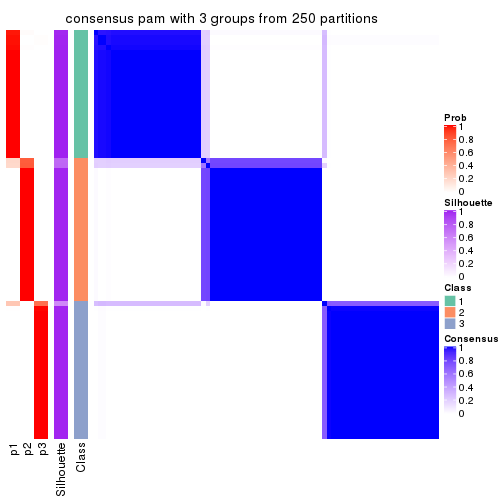
consensus_heatmap(res, k = 4)
consensus_heatmap(res, k = 5)
consensus_heatmap(res, k = 6)
Heatmaps for the membership of samples in all partitions to see how consistent they are:
membership_heatmap(res, k = 2)
membership_heatmap(res, k = 3)
membership_heatmap(res, k = 4)
membership_heatmap(res, k = 5)
membership_heatmap(res, k = 6)
As soon as we have had the classes for columns, we can look for signatures which are significantly different between classes which can be candidate marks for certain classes. Following are the heatmaps for signatures.
Signature heatmaps where rows are scaled:
get_signatures(res, k = 2)
get_signatures(res, k = 3)

get_signatures(res, k = 4)
get_signatures(res, k = 5)
get_signatures(res, k = 6)
Signature heatmaps where rows are not scaled:
get_signatures(res, k = 2, scale_rows = FALSE)
get_signatures(res, k = 3, scale_rows = FALSE)
get_signatures(res, k = 4, scale_rows = FALSE)
get_signatures(res, k = 5, scale_rows = FALSE)
get_signatures(res, k = 6, scale_rows = FALSE)
Compare the overlap of signatures from different k:
compare_signatures(res)
get_signature() returns a data frame invisibly. TO get the list of signatures, the function
call should be assigned to a variable explicitly. In following code, if plot argument is set
to FALSE, no heatmap is plotted while only the differential analysis is performed.
# code only for demonstration
tb = get_signature(res, k = ..., plot = FALSE)
An example of the output of tb is:
#> which_row fdr mean_1 mean_2 scaled_mean_1 scaled_mean_2 km
#> 1 38 0.042760348 8.373488 9.131774 -0.5533452 0.5164555 1
#> 2 40 0.018707592 7.106213 8.469186 -0.6173731 0.5762149 1
#> 3 55 0.019134737 10.221463 11.207825 -0.6159697 0.5749050 1
#> 4 59 0.006059896 5.921854 7.869574 -0.6899429 0.6439467 1
#> 5 60 0.018055526 8.928898 10.211722 -0.6204761 0.5791110 1
#> 6 98 0.009384629 15.714769 14.887706 0.6635654 -0.6193277 2
...
The columns in tb are:
which_row: row indices corresponding to the input matrix.fdr: FDR for the differential test. mean_x: The mean value in group x.scaled_mean_x: The mean value in group x after rows are scaled.km: Row groups if k-means clustering is applied to rows.UMAP plot which shows how samples are separated.
dimension_reduction(res, k = 2, method = "UMAP")
dimension_reduction(res, k = 3, method = "UMAP")
dimension_reduction(res, k = 4, method = "UMAP")
dimension_reduction(res, k = 5, method = "UMAP")
dimension_reduction(res, k = 6, method = "UMAP")
Following heatmap shows how subgroups are split when increasing k:
collect_classes(res)
If matrix rows can be associated to genes, consider to use GO_Enrichment(res,
...) to perform function enrichment for the signature genes.
The object with results only for a single top-value method and a single partition method can be extracted as:
res = res_list["ATC", "mclust"]
# you can also extract it by
# res = res_list["ATC:mclust"]
A summary of res and all the functions that can be applied to it:
res
#> A 'ConsensusPartition' object with k = 2, 3, 4, 5, 6.
#> On a matrix with 16751 rows and 80 columns.
#> Top rows (1000, 2000, 3000, 4000, 5000) are extracted by 'ATC' method.
#> Subgroups are detected by 'mclust' method.
#> Performed in total 1250 partitions by row resampling.
#> Best k for subgroups seems to be 2.
#>
#> Following methods can be applied to this 'ConsensusPartition' object:
#> [1] "cola_report" "collect_classes" "collect_plots"
#> [4] "collect_stats" "colnames" "compare_signatures"
#> [7] "consensus_heatmap" "dimension_reduction" "functional_enrichment"
#> [10] "get_anno_col" "get_anno" "get_classes"
#> [13] "get_consensus" "get_matrix" "get_membership"
#> [16] "get_param" "get_signatures" "get_stats"
#> [19] "is_best_k" "is_stable_k" "membership_heatmap"
#> [22] "ncol" "nrow" "plot_ecdf"
#> [25] "rownames" "select_partition_number" "show"
#> [28] "suggest_best_k" "test_to_known_factors"
collect_plots() function collects all the plots made from res for all k (number of partitions)
into one single page to provide an easy and fast comparison between different k.
collect_plots(res)
The plots are:
k and the heatmap of
predicted classes for each k.k.k.k.All the plots in panels can be made by individual functions and they are plotted later in this section.
select_partition_number() produces several plots showing different
statistics for choosing “optimized” k. There are following statistics:
k;k, the area increased is defined as \(A_k - A_{k-1}\).The detailed explanations of these statistics can be found in the cola vignette.
Generally speaking, lower PAC score, higher mean silhouette score or higher
concordance corresponds to better partition. Rand index and Jaccard index
measure how similar the current partition is compared to partition with k-1.
If they are too similar, we won't accept k is better than k-1.
select_partition_number(res)
The numeric values for all these statistics can be obtained by get_stats().
get_stats(res)
#> k 1-PAC mean_silhouette concordance area_increased Rand Jaccard
#> 2 2 0.998 0.936 0.963 0.4915 0.509 0.509
#> 3 3 0.765 0.830 0.882 0.2889 0.741 0.542
#> 4 4 0.596 0.716 0.807 0.0856 0.726 0.392
#> 5 5 0.762 0.711 0.834 0.1439 0.915 0.694
#> 6 6 0.871 0.856 0.923 0.0452 0.938 0.723
suggest_best_k() suggests the best \(k\) based on these statistics. The rules are as follows:
NA.suggest_best_k(res)
#> [1] 2
Following shows the table of the partitions (You need to click the show/hide
code output link to see it). The membership matrix (columns with name p*)
is inferred by
clue::cl_consensus()
function with the SE method. Basically the value in the membership matrix
represents the probability to belong to a certain group. The finall class
label for an item is determined with the group with highest probability it
belongs to.
In get_classes() function, the entropy is calculated from the membership
matrix and the silhouette score is calculated from the consensus matrix.
cbind(get_classes(res, k = 2), get_membership(res, k = 2))
#> class entropy silhouette p1 p2
#> 71A0AB6A-CFC2-46F6-878C-6052C5B43D22 1 0.2948 0.9499 0.948 0.052
#> EFC730EC-6385-4167-A65A-F2A3AAEDA2AC 1 0.1184 0.9605 0.984 0.016
#> 14F2F39A-EA0F-4027-8877-FEEEEFF1F085 2 0.0000 0.9598 0.000 1.000
#> 98B2A7F8-A7BD-4DA2-8541-950E44D9ACD7 2 0.0000 0.9598 0.000 1.000
#> 9166F454-2068-46C2-B2EB-FB3BE4126536 1 0.0000 0.9653 1.000 0.000
#> 83B2A0BB-CE24-4DCA-B03A-D20353304365 2 0.0000 0.9598 0.000 1.000
#> D3FC3968-B263-4756-BF7F-1941F70B04DA 2 0.2778 0.9518 0.048 0.952
#> D357AC5C-C2A0-4CC4-B016-4572400AF117 2 0.0000 0.9598 0.000 1.000
#> 1055E951-5B93-4AD7-BE5C-4DF4F6AECEF3 2 0.2778 0.9518 0.048 0.952
#> F2995599-3F21-4F33-92BB-7D70A4735938 1 0.0000 0.9653 1.000 0.000
#> 3EE533BD-5832-4007-8F1F-439166256EB0 2 0.0672 0.9585 0.008 0.992
#> EEC6DA0C-5C49-4EFE-976A-19F432DDAA58 1 0.0376 0.9649 0.996 0.004
#> E6E08C1A-4C1B-4572-92DF-DA15BCBADF76 2 0.2778 0.9518 0.048 0.952
#> BCFCBBAC-EB95-47EB-9EB0-2CB4AE283A75 1 0.1414 0.9619 0.980 0.020
#> 0782D6D0-668B-4B83-8C91-8A35EA3BFF6D 2 0.0000 0.9598 0.000 1.000
#> AC78918E-1031-4AE6-B753-B0799171F0F0 1 0.0000 0.9653 1.000 0.000
#> 6B497CED-34DA-4CF8-8F8D-696105CB3D5F 1 0.2948 0.9499 0.948 0.052
#> 2328D472-583B-43A9-81A4-A21DDEBB5B18 2 0.0000 0.9598 0.000 1.000
#> A6930B33-D9B2-4318-807C-4A25EB4CCCDD 2 0.0000 0.9598 0.000 1.000
#> C8C48AFD-4D8B-491E-993C-3506DC6DD00F 1 0.2948 0.9499 0.948 0.052
#> 093FB845-7905-4064-8E8E-76E3587D8E7C 1 0.2948 0.9499 0.948 0.052
#> B216F996-CCD8-4F56-99B1-4EA9769B10B8 1 0.2948 0.9499 0.948 0.052
#> CB35DED2-5FEA-43E2-AB42-B6B3A7444B66 2 0.2236 0.9460 0.036 0.964
#> BA016F57-F58F-4A66-B85A-0B0F911EEA65 2 0.2778 0.9518 0.048 0.952
#> 519DBD5F-66C0-4CEE-905C-799C855D28FB 1 0.0000 0.9653 1.000 0.000
#> F5B9B89B-6821-43EE-BCFD-623689D03AF9 2 0.0000 0.9598 0.000 1.000
#> 55A39F92-CC88-4A2F-A7D3-7A59DEBEBB42 1 0.3431 0.9448 0.936 0.064
#> 3DBBDEDA-F9FC-40DC-804F-45429EA47ED4 2 0.1633 0.9528 0.024 0.976
#> BB948BE8-7D48-4AEB-A404-C27A79655D7E 1 0.2948 0.9499 0.948 0.052
#> 9506723F-9193-4D8E-BD97-8A0062AB2F9C 1 0.2948 0.9499 0.948 0.052
#> D0758A7A-9D0E-4EA4-8EE9-7143B398647D 1 0.2948 0.9499 0.948 0.052
#> F400FD4D-72D7-4933-B145-64B7EE245FFC 2 0.2778 0.9518 0.048 0.952
#> 3F87E9ED-3719-48E1-8B69-E352A03E982D 2 0.1633 0.9528 0.024 0.976
#> D6365FEB-CC12-4337-BF8C-66236A585B5D 2 0.0000 0.9598 0.000 1.000
#> A4168812-C38E-4F15-9AF6-79F256279E72 1 0.3879 0.9352 0.924 0.076
#> DB676839-02AA-42A7-962F-89D6AD892008 1 0.0376 0.9649 0.996 0.004
#> 198D8E89-51FD-41DE-AD11-FB2F2FE49908 2 0.2778 0.9518 0.048 0.952
#> 2BADCD01-27E8-49EC-B707-4FAE3D3CB489 1 0.0376 0.9649 0.996 0.004
#> ABBD6EFE-079B-4BE3-95AB-36AF9197D684 2 0.0000 0.9598 0.000 1.000
#> 39D66B95-61C7-4B76-8E81-1F9F98024B69 1 0.0000 0.9653 1.000 0.000
#> 7A920210-CF3D-4458-B6D5-D9B2ADACA469 1 0.0000 0.9653 1.000 0.000
#> 0CE61CDC-3257-4F03-951B-CC2CFCF675AE 2 0.2778 0.9518 0.048 0.952
#> 7338D61C-77D6-4095-8847-7FD9967B7646 2 0.3733 0.9417 0.072 0.928
#> 0D36FAD5-BA81-4FED-9E2A-DB016F2EF18C 1 0.0000 0.9653 1.000 0.000
#> 43CD31CD-5FAE-418A-B235-49E54560590D 2 0.0000 0.9598 0.000 1.000
#> B6DD72B0-EEFA-41A9-B71D-22DE1343CD32 2 0.2236 0.9460 0.036 0.964
#> 2B729CD9-71A5-4336-ACBA-922A30AF4949 2 0.2778 0.9518 0.048 0.952
#> B76DB955-69B7-4D05-8166-2569ED44628C 1 0.0000 0.9653 1.000 0.000
#> 09CBEE39-7141-4228-AFD3-4714E32A1FB5 2 0.0000 0.9598 0.000 1.000
#> AC1700D5-72E7-4C7F-A288-869DFC229252 1 0.0376 0.9649 0.996 0.004
#> 535A5E8E-8478-477F-87FF-ED6742AA5473 2 0.0000 0.9598 0.000 1.000
#> CFB8573C-9F36-4715-B6F1-6E5B543168A8 1 0.1184 0.9605 0.984 0.016
#> 47A45491-6023-44BF-ABC2-9A470F7FC1F7 2 0.2778 0.9518 0.048 0.952
#> 437C7AA7-98C0-48C7-97DA-86FF44D69B87 2 0.2778 0.9518 0.048 0.952
#> 649ADE7E-6C06-4AB6-8E97-D8C2AAF79A7E 2 0.0000 0.9598 0.000 1.000
#> DEA60B47-AD6A-4EBB-9402-6F97E9640E4E 2 0.2778 0.9518 0.048 0.952
#> 76C574FF-26BF-49CD-9BCA-7BDDCBD06D5D 2 0.0000 0.9598 0.000 1.000
#> 8B6E1F9B-1E90-4333-8E0C-EEDFF25D15C0 2 0.1633 0.9528 0.024 0.976
#> A2473EE7-72D6-4D32-9DF7-5D4E444A6715 2 0.2778 0.9518 0.048 0.952
#> E226C45E-5287-4D0F-A34B-CE251FA293CB 2 0.4298 0.9309 0.088 0.912
#> A2C71C07-AF0C-4016-808C-DFEF458C91C7 1 0.0000 0.9653 1.000 0.000
#> DA00D60F-4CF1-4003-BAF5-896EE2BEE2D4 2 0.3733 0.9417 0.072 0.928
#> 1C17B65F-1930-4CF3-99B6-5D3AA9E99188 2 0.2778 0.9518 0.048 0.952
#> B837D582-A0D3-46BE-8ECA-883F5396AE88 2 0.6973 0.8158 0.188 0.812
#> EF1A102F-C206-4874-8F27-0BF069A613B8 1 0.1184 0.9605 0.984 0.016
#> BC761676-F64C-476A-8D9B-BD3E6149B2CD 2 0.0672 0.9585 0.008 0.992
#> D8351E5C-DC1D-4B4D-83E6-735B2750D944 2 0.0000 0.9598 0.000 1.000
#> 59F65F61-03D0-4909-99BD-4CCB53A088A5 2 0.1633 0.9528 0.024 0.976
#> EFFCCF33-60E1-4550-B13C-14C54ADCF479 2 0.1633 0.9528 0.024 0.976
#> C45EB423-CC14-4BDB-A0B4-447E5DB6DA9C 1 0.0000 0.9653 1.000 0.000
#> D34B0BC6-9142-48AE-A113-5923192644A0 2 0.9993 -0.0152 0.484 0.516
#> 634672A6-C68E-479F-AAB5-CBAFF7758EA4 1 0.0000 0.9653 1.000 0.000
#> 06DAE086-D960-4156-9DC8-D126338E2F29 2 0.2778 0.9518 0.048 0.952
#> 3353F579-77CA-4D0E-B794-37DE467CC065 1 0.6343 0.8002 0.840 0.160
#> 976507F2-192B-4095-920A-3014889CD617 1 0.0000 0.9653 1.000 0.000
#> 3FFF89D9-02F5-4D49-8631-099562BF99C7 2 0.1843 0.9568 0.028 0.972
#> 8BC2213D-99DA-44E0-826F-EBF211EECFBF 1 0.0000 0.9653 1.000 0.000
#> A7A16BF7-5E60-4E50-BE04-542EFC4DB472 2 0.0000 0.9598 0.000 1.000
#> E25C9578-9493-466E-A2CD-546DEB076B2D 2 0.0000 0.9598 0.000 1.000
#> EA35E230-DE50-45AB-A737-D5C430652A90 1 0.8955 0.5929 0.688 0.312
cbind(get_classes(res, k = 3), get_membership(res, k = 3))
#> class entropy silhouette p1 p2 p3
#> 71A0AB6A-CFC2-46F6-878C-6052C5B43D22 1 0.2569 0.846 0.936 0.032 0.032
#> EFC730EC-6385-4167-A65A-F2A3AAEDA2AC 1 0.7770 0.655 0.628 0.080 0.292
#> 14F2F39A-EA0F-4027-8877-FEEEEFF1F085 2 0.1289 0.947 0.032 0.968 0.000
#> 98B2A7F8-A7BD-4DA2-8541-950E44D9ACD7 2 0.1289 0.947 0.032 0.968 0.000
#> 9166F454-2068-46C2-B2EB-FB3BE4126536 3 0.0424 0.789 0.008 0.000 0.992
#> 83B2A0BB-CE24-4DCA-B03A-D20353304365 2 0.1163 0.948 0.028 0.972 0.000
#> D3FC3968-B263-4756-BF7F-1941F70B04DA 2 0.1267 0.948 0.004 0.972 0.024
#> D357AC5C-C2A0-4CC4-B016-4572400AF117 2 0.1289 0.948 0.032 0.968 0.000
#> 1055E951-5B93-4AD7-BE5C-4DF4F6AECEF3 2 0.2318 0.946 0.028 0.944 0.028
#> F2995599-3F21-4F33-92BB-7D70A4735938 3 0.0424 0.789 0.008 0.000 0.992
#> 3EE533BD-5832-4007-8F1F-439166256EB0 2 0.2796 0.930 0.092 0.908 0.000
#> EEC6DA0C-5C49-4EFE-976A-19F432DDAA58 1 0.7773 0.631 0.612 0.072 0.316
#> E6E08C1A-4C1B-4572-92DF-DA15BCBADF76 2 0.2318 0.946 0.028 0.944 0.028
#> BCFCBBAC-EB95-47EB-9EB0-2CB4AE283A75 1 0.5036 0.822 0.832 0.048 0.120
#> 0782D6D0-668B-4B83-8C91-8A35EA3BFF6D 2 0.1289 0.947 0.032 0.968 0.000
#> AC78918E-1031-4AE6-B753-B0799171F0F0 3 0.1015 0.792 0.008 0.012 0.980
#> 6B497CED-34DA-4CF8-8F8D-696105CB3D5F 1 0.2569 0.846 0.936 0.032 0.032
#> 2328D472-583B-43A9-81A4-A21DDEBB5B18 2 0.1163 0.948 0.028 0.972 0.000
#> A6930B33-D9B2-4318-807C-4A25EB4CCCDD 2 0.1289 0.947 0.032 0.968 0.000
#> C8C48AFD-4D8B-491E-993C-3506DC6DD00F 1 0.2689 0.846 0.932 0.032 0.036
#> 093FB845-7905-4064-8E8E-76E3587D8E7C 1 0.4217 0.791 0.868 0.032 0.100
#> B216F996-CCD8-4F56-99B1-4EA9769B10B8 1 0.2569 0.846 0.936 0.032 0.032
#> CB35DED2-5FEA-43E2-AB42-B6B3A7444B66 3 0.7065 0.620 0.352 0.032 0.616
#> BA016F57-F58F-4A66-B85A-0B0F911EEA65 2 0.2569 0.943 0.032 0.936 0.032
#> 519DBD5F-66C0-4CEE-905C-799C855D28FB 3 0.1832 0.793 0.008 0.036 0.956
#> F5B9B89B-6821-43EE-BCFD-623689D03AF9 2 0.1163 0.948 0.028 0.972 0.000
#> 55A39F92-CC88-4A2F-A7D3-7A59DEBEBB42 1 0.5042 0.823 0.836 0.060 0.104
#> 3DBBDEDA-F9FC-40DC-804F-45429EA47ED4 3 0.8312 0.587 0.324 0.100 0.576
#> BB948BE8-7D48-4AEB-A404-C27A79655D7E 1 0.2569 0.846 0.936 0.032 0.032
#> 9506723F-9193-4D8E-BD97-8A0062AB2F9C 1 0.2569 0.846 0.936 0.032 0.032
#> D0758A7A-9D0E-4EA4-8EE9-7143B398647D 1 0.2569 0.846 0.936 0.032 0.032
#> F400FD4D-72D7-4933-B145-64B7EE245FFC 2 0.1267 0.948 0.004 0.972 0.024
#> 3F87E9ED-3719-48E1-8B69-E352A03E982D 3 0.7123 0.613 0.364 0.032 0.604
#> D6365FEB-CC12-4337-BF8C-66236A585B5D 2 0.2537 0.926 0.080 0.920 0.000
#> A4168812-C38E-4F15-9AF6-79F256279E72 3 0.7138 0.636 0.312 0.044 0.644
#> DB676839-02AA-42A7-962F-89D6AD892008 3 0.1877 0.791 0.012 0.032 0.956
#> 198D8E89-51FD-41DE-AD11-FB2F2FE49908 2 0.1129 0.949 0.004 0.976 0.020
#> 2BADCD01-27E8-49EC-B707-4FAE3D3CB489 3 0.2689 0.788 0.036 0.032 0.932
#> ABBD6EFE-079B-4BE3-95AB-36AF9197D684 2 0.1289 0.947 0.032 0.968 0.000
#> 39D66B95-61C7-4B76-8E81-1F9F98024B69 3 0.0424 0.789 0.008 0.000 0.992
#> 7A920210-CF3D-4458-B6D5-D9B2ADACA469 3 0.1877 0.791 0.012 0.032 0.956
#> 0CE61CDC-3257-4F03-951B-CC2CFCF675AE 2 0.1453 0.947 0.008 0.968 0.024
#> 7338D61C-77D6-4095-8847-7FD9967B7646 2 0.5171 0.748 0.012 0.784 0.204
#> 0D36FAD5-BA81-4FED-9E2A-DB016F2EF18C 3 0.0424 0.789 0.008 0.000 0.992
#> 43CD31CD-5FAE-418A-B235-49E54560590D 2 0.2537 0.926 0.080 0.920 0.000
#> B6DD72B0-EEFA-41A9-B71D-22DE1343CD32 3 0.7065 0.620 0.352 0.032 0.616
#> 2B729CD9-71A5-4336-ACBA-922A30AF4949 2 0.2318 0.946 0.028 0.944 0.028
#> B76DB955-69B7-4D05-8166-2569ED44628C 3 0.0424 0.789 0.008 0.000 0.992
#> 09CBEE39-7141-4228-AFD3-4714E32A1FB5 2 0.3038 0.922 0.104 0.896 0.000
#> AC1700D5-72E7-4C7F-A288-869DFC229252 1 0.7190 0.566 0.636 0.044 0.320
#> 535A5E8E-8478-477F-87FF-ED6742AA5473 2 0.2537 0.926 0.080 0.920 0.000
#> CFB8573C-9F36-4715-B6F1-6E5B543168A8 1 0.7773 0.631 0.612 0.072 0.316
#> 47A45491-6023-44BF-ABC2-9A470F7FC1F7 2 0.2443 0.945 0.032 0.940 0.028
#> 437C7AA7-98C0-48C7-97DA-86FF44D69B87 2 0.1267 0.948 0.004 0.972 0.024
#> 649ADE7E-6C06-4AB6-8E97-D8C2AAF79A7E 2 0.2537 0.926 0.080 0.920 0.000
#> DEA60B47-AD6A-4EBB-9402-6F97E9640E4E 2 0.1267 0.948 0.004 0.972 0.024
#> 76C574FF-26BF-49CD-9BCA-7BDDCBD06D5D 2 0.1289 0.947 0.032 0.968 0.000
#> 8B6E1F9B-1E90-4333-8E0C-EEDFF25D15C0 3 0.9162 0.439 0.368 0.152 0.480
#> A2473EE7-72D6-4D32-9DF7-5D4E444A6715 2 0.2569 0.943 0.032 0.936 0.032
#> E226C45E-5287-4D0F-A34B-CE251FA293CB 3 0.3805 0.754 0.024 0.092 0.884
#> A2C71C07-AF0C-4016-808C-DFEF458C91C7 3 0.0424 0.789 0.008 0.000 0.992
#> DA00D60F-4CF1-4003-BAF5-896EE2BEE2D4 2 0.2793 0.940 0.028 0.928 0.044
#> 1C17B65F-1930-4CF3-99B6-5D3AA9E99188 2 0.1453 0.947 0.008 0.968 0.024
#> B837D582-A0D3-46BE-8ECA-883F5396AE88 3 0.4397 0.770 0.116 0.028 0.856
#> EF1A102F-C206-4874-8F27-0BF069A613B8 1 0.6518 0.779 0.752 0.080 0.168
#> BC761676-F64C-476A-8D9B-BD3E6149B2CD 2 0.3038 0.922 0.104 0.896 0.000
#> D8351E5C-DC1D-4B4D-83E6-735B2750D944 2 0.2537 0.926 0.080 0.920 0.000
#> 59F65F61-03D0-4909-99BD-4CCB53A088A5 3 0.7065 0.620 0.352 0.032 0.616
#> EFFCCF33-60E1-4550-B13C-14C54ADCF479 3 0.7794 0.582 0.368 0.060 0.572
#> C45EB423-CC14-4BDB-A0B4-447E5DB6DA9C 3 0.1877 0.791 0.012 0.032 0.956
#> D34B0BC6-9142-48AE-A113-5923192644A0 3 0.7514 0.610 0.328 0.056 0.616
#> 634672A6-C68E-479F-AAB5-CBAFF7758EA4 3 0.1620 0.793 0.012 0.024 0.964
#> 06DAE086-D960-4156-9DC8-D126338E2F29 2 0.1267 0.948 0.004 0.972 0.024
#> 3353F579-77CA-4D0E-B794-37DE467CC065 3 0.3921 0.780 0.080 0.036 0.884
#> 976507F2-192B-4095-920A-3014889CD617 3 0.1620 0.793 0.012 0.024 0.964
#> 3FFF89D9-02F5-4D49-8631-099562BF99C7 2 0.1832 0.947 0.036 0.956 0.008
#> 8BC2213D-99DA-44E0-826F-EBF211EECFBF 3 0.1877 0.791 0.012 0.032 0.956
#> A7A16BF7-5E60-4E50-BE04-542EFC4DB472 2 0.1163 0.948 0.028 0.972 0.000
#> E25C9578-9493-466E-A2CD-546DEB076B2D 2 0.1163 0.948 0.028 0.972 0.000
#> EA35E230-DE50-45AB-A737-D5C430652A90 3 0.6859 0.620 0.356 0.024 0.620
cbind(get_classes(res, k = 4), get_membership(res, k = 4))
#> class entropy silhouette p1 p2 p3 p4
#> 71A0AB6A-CFC2-46F6-878C-6052C5B43D22 1 0.0592 0.843 0.984 0.000 0.000 0.016
#> EFC730EC-6385-4167-A65A-F2A3AAEDA2AC 3 0.5782 0.614 0.068 0.220 0.704 0.008
#> 14F2F39A-EA0F-4027-8877-FEEEEFF1F085 2 0.0592 0.908 0.000 0.984 0.000 0.016
#> 98B2A7F8-A7BD-4DA2-8541-950E44D9ACD7 2 0.0592 0.908 0.000 0.984 0.000 0.016
#> 9166F454-2068-46C2-B2EB-FB3BE4126536 3 0.0188 0.876 0.004 0.000 0.996 0.000
#> 83B2A0BB-CE24-4DCA-B03A-D20353304365 2 0.2198 0.936 0.000 0.920 0.008 0.072
#> D3FC3968-B263-4756-BF7F-1941F70B04DA 2 0.2466 0.931 0.000 0.916 0.028 0.056
#> D357AC5C-C2A0-4CC4-B016-4572400AF117 2 0.2402 0.935 0.000 0.912 0.012 0.076
#> 1055E951-5B93-4AD7-BE5C-4DF4F6AECEF3 4 0.5668 0.613 0.000 0.444 0.024 0.532
#> F2995599-3F21-4F33-92BB-7D70A4735938 3 0.0000 0.878 0.000 0.000 1.000 0.000
#> 3EE533BD-5832-4007-8F1F-439166256EB0 4 0.4713 0.632 0.000 0.360 0.000 0.640
#> EEC6DA0C-5C49-4EFE-976A-19F432DDAA58 3 0.5340 0.634 0.044 0.220 0.728 0.008
#> E6E08C1A-4C1B-4572-92DF-DA15BCBADF76 4 0.5668 0.613 0.000 0.444 0.024 0.532
#> BCFCBBAC-EB95-47EB-9EB0-2CB4AE283A75 1 0.6265 0.555 0.656 0.220 0.124 0.000
#> 0782D6D0-668B-4B83-8C91-8A35EA3BFF6D 2 0.0592 0.908 0.000 0.984 0.000 0.016
#> AC78918E-1031-4AE6-B753-B0799171F0F0 3 0.0000 0.878 0.000 0.000 1.000 0.000
#> 6B497CED-34DA-4CF8-8F8D-696105CB3D5F 1 0.0592 0.843 0.984 0.000 0.000 0.016
#> 2328D472-583B-43A9-81A4-A21DDEBB5B18 2 0.2342 0.933 0.000 0.912 0.008 0.080
#> A6930B33-D9B2-4318-807C-4A25EB4CCCDD 2 0.0592 0.908 0.000 0.984 0.000 0.016
#> C8C48AFD-4D8B-491E-993C-3506DC6DD00F 1 0.0592 0.843 0.984 0.000 0.000 0.016
#> 093FB845-7905-4064-8E8E-76E3587D8E7C 1 0.0592 0.843 0.984 0.000 0.000 0.016
#> B216F996-CCD8-4F56-99B1-4EA9769B10B8 1 0.0592 0.843 0.984 0.000 0.000 0.016
#> CB35DED2-5FEA-43E2-AB42-B6B3A7444B66 4 0.0707 0.475 0.020 0.000 0.000 0.980
#> BA016F57-F58F-4A66-B85A-0B0F911EEA65 4 0.5668 0.613 0.000 0.444 0.024 0.532
#> 519DBD5F-66C0-4CEE-905C-799C855D28FB 3 0.0000 0.878 0.000 0.000 1.000 0.000
#> F5B9B89B-6821-43EE-BCFD-623689D03AF9 2 0.1978 0.936 0.000 0.928 0.004 0.068
#> 55A39F92-CC88-4A2F-A7D3-7A59DEBEBB42 1 0.6624 0.544 0.644 0.220 0.128 0.008
#> 3DBBDEDA-F9FC-40DC-804F-45429EA47ED4 4 0.3972 0.607 0.008 0.204 0.000 0.788
#> BB948BE8-7D48-4AEB-A404-C27A79655D7E 1 0.0592 0.843 0.984 0.000 0.000 0.016
#> 9506723F-9193-4D8E-BD97-8A0062AB2F9C 1 0.0592 0.843 0.984 0.000 0.000 0.016
#> D0758A7A-9D0E-4EA4-8EE9-7143B398647D 1 0.0592 0.843 0.984 0.000 0.000 0.016
#> F400FD4D-72D7-4933-B145-64B7EE245FFC 2 0.2466 0.931 0.000 0.916 0.028 0.056
#> 3F87E9ED-3719-48E1-8B69-E352A03E982D 4 0.0592 0.479 0.016 0.000 0.000 0.984
#> D6365FEB-CC12-4337-BF8C-66236A585B5D 4 0.4955 0.619 0.000 0.444 0.000 0.556
#> A4168812-C38E-4F15-9AF6-79F256279E72 4 0.6658 -0.502 0.444 0.000 0.084 0.472
#> DB676839-02AA-42A7-962F-89D6AD892008 3 0.0592 0.867 0.000 0.016 0.984 0.000
#> 198D8E89-51FD-41DE-AD11-FB2F2FE49908 2 0.2466 0.931 0.000 0.916 0.028 0.056
#> 2BADCD01-27E8-49EC-B707-4FAE3D3CB489 3 0.5661 0.602 0.080 0.220 0.700 0.000
#> ABBD6EFE-079B-4BE3-95AB-36AF9197D684 2 0.0779 0.908 0.000 0.980 0.004 0.016
#> 39D66B95-61C7-4B76-8E81-1F9F98024B69 3 0.0000 0.878 0.000 0.000 1.000 0.000
#> 7A920210-CF3D-4458-B6D5-D9B2ADACA469 3 0.0000 0.878 0.000 0.000 1.000 0.000
#> 0CE61CDC-3257-4F03-951B-CC2CFCF675AE 2 0.3127 0.921 0.016 0.896 0.028 0.060
#> 7338D61C-77D6-4095-8847-7FD9967B7646 4 0.6229 0.611 0.000 0.416 0.056 0.528
#> 0D36FAD5-BA81-4FED-9E2A-DB016F2EF18C 3 0.0000 0.878 0.000 0.000 1.000 0.000
#> 43CD31CD-5FAE-418A-B235-49E54560590D 4 0.5097 0.615 0.000 0.428 0.004 0.568
#> B6DD72B0-EEFA-41A9-B71D-22DE1343CD32 4 0.0592 0.479 0.016 0.000 0.000 0.984
#> 2B729CD9-71A5-4336-ACBA-922A30AF4949 4 0.5668 0.613 0.000 0.444 0.024 0.532
#> B76DB955-69B7-4D05-8166-2569ED44628C 3 0.0000 0.878 0.000 0.000 1.000 0.000
#> 09CBEE39-7141-4228-AFD3-4714E32A1FB5 4 0.4925 0.615 0.000 0.428 0.000 0.572
#> AC1700D5-72E7-4C7F-A288-869DFC229252 1 0.6805 0.492 0.604 0.220 0.176 0.000
#> 535A5E8E-8478-477F-87FF-ED6742AA5473 4 0.5663 0.612 0.000 0.440 0.024 0.536
#> CFB8573C-9F36-4715-B6F1-6E5B543168A8 3 0.5340 0.634 0.044 0.220 0.728 0.008
#> 47A45491-6023-44BF-ABC2-9A470F7FC1F7 4 0.5668 0.613 0.000 0.444 0.024 0.532
#> 437C7AA7-98C0-48C7-97DA-86FF44D69B87 2 0.2466 0.931 0.000 0.916 0.028 0.056
#> 649ADE7E-6C06-4AB6-8E97-D8C2AAF79A7E 4 0.4933 0.623 0.000 0.432 0.000 0.568
#> DEA60B47-AD6A-4EBB-9402-6F97E9640E4E 2 0.2466 0.931 0.000 0.916 0.028 0.056
#> 76C574FF-26BF-49CD-9BCA-7BDDCBD06D5D 2 0.0592 0.908 0.000 0.984 0.000 0.016
#> 8B6E1F9B-1E90-4333-8E0C-EEDFF25D15C0 4 0.0188 0.486 0.004 0.000 0.000 0.996
#> A2473EE7-72D6-4D32-9DF7-5D4E444A6715 4 0.5668 0.613 0.000 0.444 0.024 0.532
#> E226C45E-5287-4D0F-A34B-CE251FA293CB 4 0.6819 0.603 0.012 0.284 0.100 0.604
#> A2C71C07-AF0C-4016-808C-DFEF458C91C7 3 0.0000 0.878 0.000 0.000 1.000 0.000
#> DA00D60F-4CF1-4003-BAF5-896EE2BEE2D4 4 0.6114 0.608 0.000 0.428 0.048 0.524
#> 1C17B65F-1930-4CF3-99B6-5D3AA9E99188 2 0.3048 0.924 0.016 0.900 0.028 0.056
#> B837D582-A0D3-46BE-8ECA-883F5396AE88 4 0.6193 0.597 0.012 0.224 0.084 0.680
#> EF1A102F-C206-4874-8F27-0BF069A613B8 3 0.7801 0.221 0.288 0.220 0.484 0.008
#> BC761676-F64C-476A-8D9B-BD3E6149B2CD 4 0.4679 0.633 0.000 0.352 0.000 0.648
#> D8351E5C-DC1D-4B4D-83E6-735B2750D944 4 0.4907 0.620 0.000 0.420 0.000 0.580
#> 59F65F61-03D0-4909-99BD-4CCB53A088A5 4 0.0592 0.479 0.016 0.000 0.000 0.984
#> EFFCCF33-60E1-4550-B13C-14C54ADCF479 4 0.0188 0.486 0.004 0.000 0.000 0.996
#> C45EB423-CC14-4BDB-A0B4-447E5DB6DA9C 3 0.0000 0.878 0.000 0.000 1.000 0.000
#> D34B0BC6-9142-48AE-A113-5923192644A0 1 0.5286 0.517 0.604 0.008 0.004 0.384
#> 634672A6-C68E-479F-AAB5-CBAFF7758EA4 3 0.0000 0.878 0.000 0.000 1.000 0.000
#> 06DAE086-D960-4156-9DC8-D126338E2F29 2 0.2466 0.931 0.000 0.916 0.028 0.056
#> 3353F579-77CA-4D0E-B794-37DE467CC065 4 0.7711 0.484 0.012 0.220 0.244 0.524
#> 976507F2-192B-4095-920A-3014889CD617 3 0.0000 0.878 0.000 0.000 1.000 0.000
#> 3FFF89D9-02F5-4D49-8631-099562BF99C7 4 0.5668 0.613 0.000 0.444 0.024 0.532
#> 8BC2213D-99DA-44E0-826F-EBF211EECFBF 3 0.0000 0.878 0.000 0.000 1.000 0.000
#> A7A16BF7-5E60-4E50-BE04-542EFC4DB472 2 0.1978 0.936 0.000 0.928 0.004 0.068
#> E25C9578-9493-466E-A2CD-546DEB076B2D 2 0.2198 0.936 0.000 0.920 0.008 0.072
#> EA35E230-DE50-45AB-A737-D5C430652A90 4 0.4814 -0.169 0.316 0.000 0.008 0.676
cbind(get_classes(res, k = 5), get_membership(res, k = 5))
#> class entropy silhouette p1 p2 p3 p4 p5
#> 71A0AB6A-CFC2-46F6-878C-6052C5B43D22 1 0.0000 0.8097 1.000 0.000 0.000 0.000 0.000
#> EFC730EC-6385-4167-A65A-F2A3AAEDA2AC 3 0.6374 0.2813 0.208 0.000 0.512 0.000 0.280
#> 14F2F39A-EA0F-4027-8877-FEEEEFF1F085 2 0.0000 0.8276 0.000 1.000 0.000 0.000 0.000
#> 98B2A7F8-A7BD-4DA2-8541-950E44D9ACD7 2 0.0000 0.8276 0.000 1.000 0.000 0.000 0.000
#> 9166F454-2068-46C2-B2EB-FB3BE4126536 3 0.0000 0.9110 0.000 0.000 1.000 0.000 0.000
#> 83B2A0BB-CE24-4DCA-B03A-D20353304365 2 0.1043 0.8353 0.000 0.960 0.000 0.040 0.000
#> D3FC3968-B263-4756-BF7F-1941F70B04DA 2 0.4287 0.5521 0.000 0.540 0.000 0.460 0.000
#> D357AC5C-C2A0-4CC4-B016-4572400AF117 2 0.0963 0.8357 0.000 0.964 0.000 0.036 0.000
#> 1055E951-5B93-4AD7-BE5C-4DF4F6AECEF3 4 0.0000 0.7307 0.000 0.000 0.000 1.000 0.000
#> F2995599-3F21-4F33-92BB-7D70A4735938 3 0.0000 0.9110 0.000 0.000 1.000 0.000 0.000
#> 3EE533BD-5832-4007-8F1F-439166256EB0 4 0.5505 0.2333 0.000 0.084 0.000 0.588 0.328
#> EEC6DA0C-5C49-4EFE-976A-19F432DDAA58 3 0.3684 0.6850 0.000 0.000 0.720 0.000 0.280
#> E6E08C1A-4C1B-4572-92DF-DA15BCBADF76 4 0.1892 0.7212 0.000 0.080 0.000 0.916 0.004
#> BCFCBBAC-EB95-47EB-9EB0-2CB4AE283A75 1 0.3759 0.7573 0.808 0.000 0.056 0.000 0.136
#> 0782D6D0-668B-4B83-8C91-8A35EA3BFF6D 2 0.0000 0.8276 0.000 1.000 0.000 0.000 0.000
#> AC78918E-1031-4AE6-B753-B0799171F0F0 3 0.0000 0.9110 0.000 0.000 1.000 0.000 0.000
#> 6B497CED-34DA-4CF8-8F8D-696105CB3D5F 1 0.0000 0.8097 1.000 0.000 0.000 0.000 0.000
#> 2328D472-583B-43A9-81A4-A21DDEBB5B18 2 0.1043 0.8353 0.000 0.960 0.000 0.040 0.000
#> A6930B33-D9B2-4318-807C-4A25EB4CCCDD 2 0.0000 0.8276 0.000 1.000 0.000 0.000 0.000
#> C8C48AFD-4D8B-491E-993C-3506DC6DD00F 1 0.0162 0.8098 0.996 0.000 0.004 0.000 0.000
#> 093FB845-7905-4064-8E8E-76E3587D8E7C 1 0.1121 0.8017 0.956 0.000 0.044 0.000 0.000
#> B216F996-CCD8-4F56-99B1-4EA9769B10B8 1 0.1043 0.8031 0.960 0.000 0.040 0.000 0.000
#> CB35DED2-5FEA-43E2-AB42-B6B3A7444B66 5 0.4132 0.9176 0.020 0.000 0.000 0.260 0.720
#> BA016F57-F58F-4A66-B85A-0B0F911EEA65 4 0.0000 0.7307 0.000 0.000 0.000 1.000 0.000
#> 519DBD5F-66C0-4CEE-905C-799C855D28FB 3 0.0000 0.9110 0.000 0.000 1.000 0.000 0.000
#> F5B9B89B-6821-43EE-BCFD-623689D03AF9 2 0.0963 0.8357 0.000 0.964 0.000 0.036 0.000
#> 55A39F92-CC88-4A2F-A7D3-7A59DEBEBB42 1 0.5059 0.6787 0.660 0.000 0.056 0.004 0.280
#> 3DBBDEDA-F9FC-40DC-804F-45429EA47ED4 5 0.4132 0.9176 0.020 0.000 0.000 0.260 0.720
#> BB948BE8-7D48-4AEB-A404-C27A79655D7E 1 0.0000 0.8097 1.000 0.000 0.000 0.000 0.000
#> 9506723F-9193-4D8E-BD97-8A0062AB2F9C 1 0.0000 0.8097 1.000 0.000 0.000 0.000 0.000
#> D0758A7A-9D0E-4EA4-8EE9-7143B398647D 1 0.0000 0.8097 1.000 0.000 0.000 0.000 0.000
#> F400FD4D-72D7-4933-B145-64B7EE245FFC 2 0.3913 0.6843 0.000 0.676 0.000 0.324 0.000
#> 3F87E9ED-3719-48E1-8B69-E352A03E982D 5 0.4132 0.9176 0.020 0.000 0.000 0.260 0.720
#> D6365FEB-CC12-4337-BF8C-66236A585B5D 4 0.3704 0.7012 0.000 0.088 0.000 0.820 0.092
#> A4168812-C38E-4F15-9AF6-79F256279E72 1 0.5820 0.1366 0.504 0.000 0.056 0.016 0.424
#> DB676839-02AA-42A7-962F-89D6AD892008 3 0.0290 0.9058 0.000 0.000 0.992 0.000 0.008
#> 198D8E89-51FD-41DE-AD11-FB2F2FE49908 2 0.3913 0.6843 0.000 0.676 0.000 0.324 0.000
#> 2BADCD01-27E8-49EC-B707-4FAE3D3CB489 3 0.0000 0.9110 0.000 0.000 1.000 0.000 0.000
#> ABBD6EFE-079B-4BE3-95AB-36AF9197D684 2 0.0000 0.8276 0.000 1.000 0.000 0.000 0.000
#> 39D66B95-61C7-4B76-8E81-1F9F98024B69 3 0.0000 0.9110 0.000 0.000 1.000 0.000 0.000
#> 7A920210-CF3D-4458-B6D5-D9B2ADACA469 3 0.0000 0.9110 0.000 0.000 1.000 0.000 0.000
#> 0CE61CDC-3257-4F03-951B-CC2CFCF675AE 2 0.3863 0.7344 0.000 0.740 0.000 0.248 0.012
#> 7338D61C-77D6-4095-8847-7FD9967B7646 4 0.0510 0.7226 0.000 0.000 0.016 0.984 0.000
#> 0D36FAD5-BA81-4FED-9E2A-DB016F2EF18C 3 0.0000 0.9110 0.000 0.000 1.000 0.000 0.000
#> 43CD31CD-5FAE-418A-B235-49E54560590D 4 0.3416 0.7120 0.000 0.088 0.000 0.840 0.072
#> B6DD72B0-EEFA-41A9-B71D-22DE1343CD32 5 0.4132 0.9176 0.020 0.000 0.000 0.260 0.720
#> 2B729CD9-71A5-4336-ACBA-922A30AF4949 4 0.0000 0.7307 0.000 0.000 0.000 1.000 0.000
#> B76DB955-69B7-4D05-8166-2569ED44628C 3 0.0000 0.9110 0.000 0.000 1.000 0.000 0.000
#> 09CBEE39-7141-4228-AFD3-4714E32A1FB5 4 0.3962 0.6855 0.000 0.088 0.000 0.800 0.112
#> AC1700D5-72E7-4C7F-A288-869DFC229252 1 0.5394 0.6308 0.660 0.000 0.208 0.000 0.132
#> 535A5E8E-8478-477F-87FF-ED6742AA5473 4 0.3226 0.7159 0.000 0.088 0.000 0.852 0.060
#> CFB8573C-9F36-4715-B6F1-6E5B543168A8 3 0.3684 0.6850 0.000 0.000 0.720 0.000 0.280
#> 47A45491-6023-44BF-ABC2-9A470F7FC1F7 4 0.0000 0.7307 0.000 0.000 0.000 1.000 0.000
#> 437C7AA7-98C0-48C7-97DA-86FF44D69B87 2 0.4126 0.6381 0.000 0.620 0.000 0.380 0.000
#> 649ADE7E-6C06-4AB6-8E97-D8C2AAF79A7E 4 0.3696 0.5912 0.000 0.016 0.000 0.772 0.212
#> DEA60B47-AD6A-4EBB-9402-6F97E9640E4E 2 0.4015 0.6671 0.000 0.652 0.000 0.348 0.000
#> 76C574FF-26BF-49CD-9BCA-7BDDCBD06D5D 2 0.0000 0.8276 0.000 1.000 0.000 0.000 0.000
#> 8B6E1F9B-1E90-4333-8E0C-EEDFF25D15C0 5 0.4132 0.9176 0.020 0.000 0.000 0.260 0.720
#> A2473EE7-72D6-4D32-9DF7-5D4E444A6715 4 0.0000 0.7307 0.000 0.000 0.000 1.000 0.000
#> E226C45E-5287-4D0F-A34B-CE251FA293CB 4 0.6672 -0.1913 0.000 0.000 0.376 0.392 0.232
#> A2C71C07-AF0C-4016-808C-DFEF458C91C7 3 0.0000 0.9110 0.000 0.000 1.000 0.000 0.000
#> DA00D60F-4CF1-4003-BAF5-896EE2BEE2D4 4 0.0510 0.7228 0.000 0.000 0.016 0.984 0.000
#> 1C17B65F-1930-4CF3-99B6-5D3AA9E99188 2 0.4287 0.5521 0.000 0.540 0.000 0.460 0.000
#> B837D582-A0D3-46BE-8ECA-883F5396AE88 4 0.6746 -0.2229 0.000 0.000 0.360 0.380 0.260
#> EF1A102F-C206-4874-8F27-0BF069A613B8 1 0.6828 0.4490 0.480 0.000 0.228 0.012 0.280
#> BC761676-F64C-476A-8D9B-BD3E6149B2CD 4 0.5000 0.0679 0.000 0.036 0.000 0.576 0.388
#> D8351E5C-DC1D-4B4D-83E6-735B2750D944 4 0.4057 0.6774 0.000 0.088 0.000 0.792 0.120
#> 59F65F61-03D0-4909-99BD-4CCB53A088A5 5 0.4132 0.9176 0.020 0.000 0.000 0.260 0.720
#> EFFCCF33-60E1-4550-B13C-14C54ADCF479 5 0.4132 0.9176 0.020 0.000 0.000 0.260 0.720
#> C45EB423-CC14-4BDB-A0B4-447E5DB6DA9C 3 0.0000 0.9110 0.000 0.000 1.000 0.000 0.000
#> D34B0BC6-9142-48AE-A113-5923192644A0 1 0.5633 0.0391 0.476 0.000 0.036 0.020 0.468
#> 634672A6-C68E-479F-AAB5-CBAFF7758EA4 3 0.0000 0.9110 0.000 0.000 1.000 0.000 0.000
#> 06DAE086-D960-4156-9DC8-D126338E2F29 2 0.3983 0.6735 0.000 0.660 0.000 0.340 0.000
#> 3353F579-77CA-4D0E-B794-37DE467CC065 3 0.7621 0.0107 0.076 0.000 0.460 0.200 0.264
#> 976507F2-192B-4095-920A-3014889CD617 3 0.0000 0.9110 0.000 0.000 1.000 0.000 0.000
#> 3FFF89D9-02F5-4D49-8631-099562BF99C7 4 0.2848 0.7125 0.000 0.104 0.000 0.868 0.028
#> 8BC2213D-99DA-44E0-826F-EBF211EECFBF 3 0.0000 0.9110 0.000 0.000 1.000 0.000 0.000
#> A7A16BF7-5E60-4E50-BE04-542EFC4DB472 2 0.0963 0.8357 0.000 0.964 0.000 0.036 0.000
#> E25C9578-9493-466E-A2CD-546DEB076B2D 2 0.0963 0.8357 0.000 0.964 0.000 0.036 0.000
#> EA35E230-DE50-45AB-A737-D5C430652A90 5 0.6147 0.3314 0.324 0.000 0.040 0.064 0.572
cbind(get_classes(res, k = 6), get_membership(res, k = 6))
#> class entropy silhouette p1 p2 p3 p4 p5 p6
#> 71A0AB6A-CFC2-46F6-878C-6052C5B43D22 1 0.0000 0.904 1.000 0.000 0.000 0.000 0.000 0.000
#> EFC730EC-6385-4167-A65A-F2A3AAEDA2AC 6 0.0000 0.876 0.000 0.000 0.000 0.000 0.000 1.000
#> 14F2F39A-EA0F-4027-8877-FEEEEFF1F085 2 0.0000 0.897 0.000 1.000 0.000 0.000 0.000 0.000
#> 98B2A7F8-A7BD-4DA2-8541-950E44D9ACD7 2 0.0000 0.897 0.000 1.000 0.000 0.000 0.000 0.000
#> 9166F454-2068-46C2-B2EB-FB3BE4126536 3 0.0000 0.994 0.000 0.000 1.000 0.000 0.000 0.000
#> 83B2A0BB-CE24-4DCA-B03A-D20353304365 2 0.0000 0.897 0.000 1.000 0.000 0.000 0.000 0.000
#> D3FC3968-B263-4756-BF7F-1941F70B04DA 2 0.3050 0.811 0.000 0.764 0.000 0.236 0.000 0.000
#> D357AC5C-C2A0-4CC4-B016-4572400AF117 2 0.0000 0.897 0.000 1.000 0.000 0.000 0.000 0.000
#> 1055E951-5B93-4AD7-BE5C-4DF4F6AECEF3 4 0.0000 0.842 0.000 0.000 0.000 1.000 0.000 0.000
#> F2995599-3F21-4F33-92BB-7D70A4735938 3 0.0000 0.994 0.000 0.000 1.000 0.000 0.000 0.000
#> 3EE533BD-5832-4007-8F1F-439166256EB0 4 0.3050 0.816 0.000 0.000 0.000 0.764 0.236 0.000
#> EEC6DA0C-5C49-4EFE-976A-19F432DDAA58 6 0.2996 0.714 0.000 0.000 0.228 0.000 0.000 0.772
#> E6E08C1A-4C1B-4572-92DF-DA15BCBADF76 4 0.0000 0.842 0.000 0.000 0.000 1.000 0.000 0.000
#> BCFCBBAC-EB95-47EB-9EB0-2CB4AE283A75 1 0.3804 0.363 0.576 0.000 0.000 0.000 0.000 0.424
#> 0782D6D0-668B-4B83-8C91-8A35EA3BFF6D 2 0.0000 0.897 0.000 1.000 0.000 0.000 0.000 0.000
#> AC78918E-1031-4AE6-B753-B0799171F0F0 3 0.0000 0.994 0.000 0.000 1.000 0.000 0.000 0.000
#> 6B497CED-34DA-4CF8-8F8D-696105CB3D5F 1 0.0000 0.904 1.000 0.000 0.000 0.000 0.000 0.000
#> 2328D472-583B-43A9-81A4-A21DDEBB5B18 2 0.0000 0.897 0.000 1.000 0.000 0.000 0.000 0.000
#> A6930B33-D9B2-4318-807C-4A25EB4CCCDD 2 0.0000 0.897 0.000 1.000 0.000 0.000 0.000 0.000
#> C8C48AFD-4D8B-491E-993C-3506DC6DD00F 1 0.0000 0.904 1.000 0.000 0.000 0.000 0.000 0.000
#> 093FB845-7905-4064-8E8E-76E3587D8E7C 1 0.0000 0.904 1.000 0.000 0.000 0.000 0.000 0.000
#> B216F996-CCD8-4F56-99B1-4EA9769B10B8 1 0.0000 0.904 1.000 0.000 0.000 0.000 0.000 0.000
#> CB35DED2-5FEA-43E2-AB42-B6B3A7444B66 5 0.0000 0.866 0.000 0.000 0.000 0.000 1.000 0.000
#> BA016F57-F58F-4A66-B85A-0B0F911EEA65 4 0.0000 0.842 0.000 0.000 0.000 1.000 0.000 0.000
#> 519DBD5F-66C0-4CEE-905C-799C855D28FB 3 0.0000 0.994 0.000 0.000 1.000 0.000 0.000 0.000
#> F5B9B89B-6821-43EE-BCFD-623689D03AF9 2 0.0000 0.897 0.000 1.000 0.000 0.000 0.000 0.000
#> 55A39F92-CC88-4A2F-A7D3-7A59DEBEBB42 6 0.1327 0.850 0.064 0.000 0.000 0.000 0.000 0.936
#> 3DBBDEDA-F9FC-40DC-804F-45429EA47ED4 5 0.0000 0.866 0.000 0.000 0.000 0.000 1.000 0.000
#> BB948BE8-7D48-4AEB-A404-C27A79655D7E 1 0.0000 0.904 1.000 0.000 0.000 0.000 0.000 0.000
#> 9506723F-9193-4D8E-BD97-8A0062AB2F9C 1 0.0000 0.904 1.000 0.000 0.000 0.000 0.000 0.000
#> D0758A7A-9D0E-4EA4-8EE9-7143B398647D 1 0.0000 0.904 1.000 0.000 0.000 0.000 0.000 0.000
#> F400FD4D-72D7-4933-B145-64B7EE245FFC 2 0.2996 0.815 0.000 0.772 0.000 0.228 0.000 0.000
#> 3F87E9ED-3719-48E1-8B69-E352A03E982D 5 0.0000 0.866 0.000 0.000 0.000 0.000 1.000 0.000
#> D6365FEB-CC12-4337-BF8C-66236A585B5D 4 0.3050 0.816 0.000 0.000 0.000 0.764 0.236 0.000
#> A4168812-C38E-4F15-9AF6-79F256279E72 5 0.3592 0.433 0.344 0.000 0.000 0.000 0.656 0.000
#> DB676839-02AA-42A7-962F-89D6AD892008 3 0.0000 0.994 0.000 0.000 1.000 0.000 0.000 0.000
#> 198D8E89-51FD-41DE-AD11-FB2F2FE49908 2 0.2996 0.815 0.000 0.772 0.000 0.228 0.000 0.000
#> 2BADCD01-27E8-49EC-B707-4FAE3D3CB489 3 0.1444 0.915 0.000 0.000 0.928 0.000 0.000 0.072
#> ABBD6EFE-079B-4BE3-95AB-36AF9197D684 2 0.0000 0.897 0.000 1.000 0.000 0.000 0.000 0.000
#> 39D66B95-61C7-4B76-8E81-1F9F98024B69 3 0.0000 0.994 0.000 0.000 1.000 0.000 0.000 0.000
#> 7A920210-CF3D-4458-B6D5-D9B2ADACA469 3 0.0000 0.994 0.000 0.000 1.000 0.000 0.000 0.000
#> 0CE61CDC-3257-4F03-951B-CC2CFCF675AE 2 0.1501 0.872 0.000 0.924 0.000 0.076 0.000 0.000
#> 7338D61C-77D6-4095-8847-7FD9967B7646 4 0.0000 0.842 0.000 0.000 0.000 1.000 0.000 0.000
#> 0D36FAD5-BA81-4FED-9E2A-DB016F2EF18C 3 0.0000 0.994 0.000 0.000 1.000 0.000 0.000 0.000
#> 43CD31CD-5FAE-418A-B235-49E54560590D 4 0.3050 0.816 0.000 0.000 0.000 0.764 0.236 0.000
#> B6DD72B0-EEFA-41A9-B71D-22DE1343CD32 5 0.0000 0.866 0.000 0.000 0.000 0.000 1.000 0.000
#> 2B729CD9-71A5-4336-ACBA-922A30AF4949 4 0.0000 0.842 0.000 0.000 0.000 1.000 0.000 0.000
#> B76DB955-69B7-4D05-8166-2569ED44628C 3 0.0000 0.994 0.000 0.000 1.000 0.000 0.000 0.000
#> 09CBEE39-7141-4228-AFD3-4714E32A1FB5 4 0.3050 0.816 0.000 0.000 0.000 0.764 0.236 0.000
#> AC1700D5-72E7-4C7F-A288-869DFC229252 1 0.5335 0.422 0.576 0.000 0.148 0.000 0.000 0.276
#> 535A5E8E-8478-477F-87FF-ED6742AA5473 4 0.3050 0.816 0.000 0.000 0.000 0.764 0.236 0.000
#> CFB8573C-9F36-4715-B6F1-6E5B543168A8 6 0.1501 0.864 0.000 0.000 0.076 0.000 0.000 0.924
#> 47A45491-6023-44BF-ABC2-9A470F7FC1F7 4 0.0000 0.842 0.000 0.000 0.000 1.000 0.000 0.000
#> 437C7AA7-98C0-48C7-97DA-86FF44D69B87 2 0.3050 0.811 0.000 0.764 0.000 0.236 0.000 0.000
#> 649ADE7E-6C06-4AB6-8E97-D8C2AAF79A7E 4 0.3050 0.816 0.000 0.000 0.000 0.764 0.236 0.000
#> DEA60B47-AD6A-4EBB-9402-6F97E9640E4E 2 0.3050 0.811 0.000 0.764 0.000 0.236 0.000 0.000
#> 76C574FF-26BF-49CD-9BCA-7BDDCBD06D5D 2 0.0000 0.897 0.000 1.000 0.000 0.000 0.000 0.000
#> 8B6E1F9B-1E90-4333-8E0C-EEDFF25D15C0 5 0.0146 0.863 0.000 0.000 0.000 0.004 0.996 0.000
#> A2473EE7-72D6-4D32-9DF7-5D4E444A6715 4 0.0000 0.842 0.000 0.000 0.000 1.000 0.000 0.000
#> E226C45E-5287-4D0F-A34B-CE251FA293CB 5 0.4106 0.641 0.000 0.000 0.188 0.076 0.736 0.000
#> A2C71C07-AF0C-4016-808C-DFEF458C91C7 3 0.0000 0.994 0.000 0.000 1.000 0.000 0.000 0.000
#> DA00D60F-4CF1-4003-BAF5-896EE2BEE2D4 4 0.0000 0.842 0.000 0.000 0.000 1.000 0.000 0.000
#> 1C17B65F-1930-4CF3-99B6-5D3AA9E99188 2 0.3050 0.811 0.000 0.764 0.000 0.236 0.000 0.000
#> B837D582-A0D3-46BE-8ECA-883F5396AE88 5 0.2420 0.790 0.000 0.000 0.040 0.076 0.884 0.000
#> EF1A102F-C206-4874-8F27-0BF069A613B8 6 0.0000 0.876 0.000 0.000 0.000 0.000 0.000 1.000
#> BC761676-F64C-476A-8D9B-BD3E6149B2CD 4 0.3050 0.816 0.000 0.000 0.000 0.764 0.236 0.000
#> D8351E5C-DC1D-4B4D-83E6-735B2750D944 4 0.3050 0.816 0.000 0.000 0.000 0.764 0.236 0.000
#> 59F65F61-03D0-4909-99BD-4CCB53A088A5 5 0.0000 0.866 0.000 0.000 0.000 0.000 1.000 0.000
#> EFFCCF33-60E1-4550-B13C-14C54ADCF479 5 0.0000 0.866 0.000 0.000 0.000 0.000 1.000 0.000
#> C45EB423-CC14-4BDB-A0B4-447E5DB6DA9C 3 0.0000 0.994 0.000 0.000 1.000 0.000 0.000 0.000
#> D34B0BC6-9142-48AE-A113-5923192644A0 5 0.3050 0.653 0.236 0.000 0.000 0.000 0.764 0.000
#> 634672A6-C68E-479F-AAB5-CBAFF7758EA4 3 0.0000 0.994 0.000 0.000 1.000 0.000 0.000 0.000
#> 06DAE086-D960-4156-9DC8-D126338E2F29 2 0.3050 0.811 0.000 0.764 0.000 0.236 0.000 0.000
#> 3353F579-77CA-4D0E-B794-37DE467CC065 5 0.4407 0.589 0.000 0.000 0.232 0.076 0.692 0.000
#> 976507F2-192B-4095-920A-3014889CD617 3 0.0000 0.994 0.000 0.000 1.000 0.000 0.000 0.000
#> 3FFF89D9-02F5-4D49-8631-099562BF99C7 4 0.0405 0.841 0.000 0.004 0.000 0.988 0.008 0.000
#> 8BC2213D-99DA-44E0-826F-EBF211EECFBF 3 0.0000 0.994 0.000 0.000 1.000 0.000 0.000 0.000
#> A7A16BF7-5E60-4E50-BE04-542EFC4DB472 2 0.0000 0.897 0.000 1.000 0.000 0.000 0.000 0.000
#> E25C9578-9493-466E-A2CD-546DEB076B2D 2 0.0000 0.897 0.000 1.000 0.000 0.000 0.000 0.000
#> EA35E230-DE50-45AB-A737-D5C430652A90 5 0.0146 0.864 0.004 0.000 0.000 0.000 0.996 0.000
Heatmaps for the consensus matrix. It visualizes the probability of two samples to be in a same group.
consensus_heatmap(res, k = 2)
consensus_heatmap(res, k = 3)
consensus_heatmap(res, k = 4)
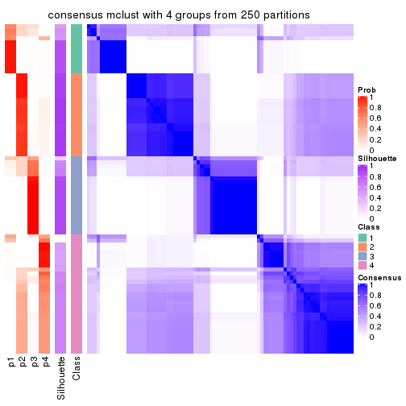
consensus_heatmap(res, k = 5)
consensus_heatmap(res, k = 6)
Heatmaps for the membership of samples in all partitions to see how consistent they are:
membership_heatmap(res, k = 2)
membership_heatmap(res, k = 3)
membership_heatmap(res, k = 4)
membership_heatmap(res, k = 5)
membership_heatmap(res, k = 6)
As soon as we have had the classes for columns, we can look for signatures which are significantly different between classes which can be candidate marks for certain classes. Following are the heatmaps for signatures.
Signature heatmaps where rows are scaled:
get_signatures(res, k = 2)

get_signatures(res, k = 3)
get_signatures(res, k = 4)
get_signatures(res, k = 5)
get_signatures(res, k = 6)
Signature heatmaps where rows are not scaled:
get_signatures(res, k = 2, scale_rows = FALSE)
get_signatures(res, k = 3, scale_rows = FALSE)
get_signatures(res, k = 4, scale_rows = FALSE)
get_signatures(res, k = 5, scale_rows = FALSE)
get_signatures(res, k = 6, scale_rows = FALSE)
Compare the overlap of signatures from different k:
compare_signatures(res)
get_signature() returns a data frame invisibly. TO get the list of signatures, the function
call should be assigned to a variable explicitly. In following code, if plot argument is set
to FALSE, no heatmap is plotted while only the differential analysis is performed.
# code only for demonstration
tb = get_signature(res, k = ..., plot = FALSE)
An example of the output of tb is:
#> which_row fdr mean_1 mean_2 scaled_mean_1 scaled_mean_2 km
#> 1 38 0.042760348 8.373488 9.131774 -0.5533452 0.5164555 1
#> 2 40 0.018707592 7.106213 8.469186 -0.6173731 0.5762149 1
#> 3 55 0.019134737 10.221463 11.207825 -0.6159697 0.5749050 1
#> 4 59 0.006059896 5.921854 7.869574 -0.6899429 0.6439467 1
#> 5 60 0.018055526 8.928898 10.211722 -0.6204761 0.5791110 1
#> 6 98 0.009384629 15.714769 14.887706 0.6635654 -0.6193277 2
...
The columns in tb are:
which_row: row indices corresponding to the input matrix.fdr: FDR for the differential test. mean_x: The mean value in group x.scaled_mean_x: The mean value in group x after rows are scaled.km: Row groups if k-means clustering is applied to rows.UMAP plot which shows how samples are separated.
dimension_reduction(res, k = 2, method = "UMAP")
dimension_reduction(res, k = 3, method = "UMAP")
dimension_reduction(res, k = 4, method = "UMAP")
dimension_reduction(res, k = 5, method = "UMAP")
dimension_reduction(res, k = 6, method = "UMAP")
Following heatmap shows how subgroups are split when increasing k:
collect_classes(res)
If matrix rows can be associated to genes, consider to use GO_Enrichment(res,
...) to perform function enrichment for the signature genes.
The object with results only for a single top-value method and a single partition method can be extracted as:
res = res_list["ATC", "NMF"]
# you can also extract it by
# res = res_list["ATC:NMF"]
A summary of res and all the functions that can be applied to it:
res
#> A 'ConsensusPartition' object with k = 2, 3, 4, 5, 6.
#> On a matrix with 16751 rows and 80 columns.
#> Top rows (1000, 2000, 3000, 4000, 5000) are extracted by 'ATC' method.
#> Subgroups are detected by 'NMF' method.
#> Performed in total 1250 partitions by row resampling.
#> Best k for subgroups seems to be 2.
#>
#> Following methods can be applied to this 'ConsensusPartition' object:
#> [1] "cola_report" "collect_classes" "collect_plots"
#> [4] "collect_stats" "colnames" "compare_signatures"
#> [7] "consensus_heatmap" "dimension_reduction" "functional_enrichment"
#> [10] "get_anno_col" "get_anno" "get_classes"
#> [13] "get_consensus" "get_matrix" "get_membership"
#> [16] "get_param" "get_signatures" "get_stats"
#> [19] "is_best_k" "is_stable_k" "membership_heatmap"
#> [22] "ncol" "nrow" "plot_ecdf"
#> [25] "rownames" "select_partition_number" "show"
#> [28] "suggest_best_k" "test_to_known_factors"
collect_plots() function collects all the plots made from res for all k (number of partitions)
into one single page to provide an easy and fast comparison between different k.
collect_plots(res)
The plots are:
k and the heatmap of
predicted classes for each k.k.k.k.All the plots in panels can be made by individual functions and they are plotted later in this section.
select_partition_number() produces several plots showing different
statistics for choosing “optimized” k. There are following statistics:
k;k, the area increased is defined as \(A_k - A_{k-1}\).The detailed explanations of these statistics can be found in the cola vignette.
Generally speaking, lower PAC score, higher mean silhouette score or higher
concordance corresponds to better partition. Rand index and Jaccard index
measure how similar the current partition is compared to partition with k-1.
If they are too similar, we won't accept k is better than k-1.
select_partition_number(res)
The numeric values for all these statistics can be obtained by get_stats().
get_stats(res)
#> k 1-PAC mean_silhouette concordance area_increased Rand Jaccard
#> 2 2 0.599 0.841 0.920 0.4852 0.509 0.509
#> 3 3 0.532 0.673 0.838 0.3785 0.669 0.433
#> 4 4 0.541 0.602 0.787 0.0921 0.727 0.370
#> 5 5 0.515 0.497 0.692 0.0643 0.909 0.700
#> 6 6 0.589 0.463 0.663 0.0496 0.881 0.568
suggest_best_k() suggests the best \(k\) based on these statistics. The rules are as follows:
NA.suggest_best_k(res)
#> [1] 2
Following shows the table of the partitions (You need to click the show/hide
code output link to see it). The membership matrix (columns with name p*)
is inferred by
clue::cl_consensus()
function with the SE method. Basically the value in the membership matrix
represents the probability to belong to a certain group. The finall class
label for an item is determined with the group with highest probability it
belongs to.
In get_classes() function, the entropy is calculated from the membership
matrix and the silhouette score is calculated from the consensus matrix.
cbind(get_classes(res, k = 2), get_membership(res, k = 2))
#> class entropy silhouette p1 p2
#> 71A0AB6A-CFC2-46F6-878C-6052C5B43D22 1 0.0000 0.898 1.000 0.000
#> EFC730EC-6385-4167-A65A-F2A3AAEDA2AC 1 0.0000 0.898 1.000 0.000
#> 14F2F39A-EA0F-4027-8877-FEEEEFF1F085 2 0.0000 0.921 0.000 1.000
#> 98B2A7F8-A7BD-4DA2-8541-950E44D9ACD7 2 0.5946 0.805 0.144 0.856
#> 9166F454-2068-46C2-B2EB-FB3BE4126536 1 0.6712 0.819 0.824 0.176
#> 83B2A0BB-CE24-4DCA-B03A-D20353304365 1 0.8813 0.520 0.700 0.300
#> D3FC3968-B263-4756-BF7F-1941F70B04DA 2 0.0000 0.921 0.000 1.000
#> D357AC5C-C2A0-4CC4-B016-4572400AF117 2 0.0000 0.921 0.000 1.000
#> 1055E951-5B93-4AD7-BE5C-4DF4F6AECEF3 2 0.0000 0.921 0.000 1.000
#> F2995599-3F21-4F33-92BB-7D70A4735938 1 0.4022 0.881 0.920 0.080
#> 3EE533BD-5832-4007-8F1F-439166256EB0 1 0.9286 0.583 0.656 0.344
#> EEC6DA0C-5C49-4EFE-976A-19F432DDAA58 1 0.1414 0.898 0.980 0.020
#> E6E08C1A-4C1B-4572-92DF-DA15BCBADF76 2 0.0000 0.921 0.000 1.000
#> BCFCBBAC-EB95-47EB-9EB0-2CB4AE283A75 1 0.0000 0.898 1.000 0.000
#> 0782D6D0-668B-4B83-8C91-8A35EA3BFF6D 2 0.4022 0.866 0.080 0.920
#> AC78918E-1031-4AE6-B753-B0799171F0F0 1 0.2043 0.897 0.968 0.032
#> 6B497CED-34DA-4CF8-8F8D-696105CB3D5F 1 0.0000 0.898 1.000 0.000
#> 2328D472-583B-43A9-81A4-A21DDEBB5B18 1 0.9988 0.176 0.520 0.480
#> A6930B33-D9B2-4318-807C-4A25EB4CCCDD 2 0.0000 0.921 0.000 1.000
#> C8C48AFD-4D8B-491E-993C-3506DC6DD00F 1 0.0000 0.898 1.000 0.000
#> 093FB845-7905-4064-8E8E-76E3587D8E7C 1 0.0000 0.898 1.000 0.000
#> B216F996-CCD8-4F56-99B1-4EA9769B10B8 1 0.0000 0.898 1.000 0.000
#> CB35DED2-5FEA-43E2-AB42-B6B3A7444B66 1 0.4022 0.881 0.920 0.080
#> BA016F57-F58F-4A66-B85A-0B0F911EEA65 2 0.8327 0.619 0.264 0.736
#> 519DBD5F-66C0-4CEE-905C-799C855D28FB 1 0.6712 0.819 0.824 0.176
#> F5B9B89B-6821-43EE-BCFD-623689D03AF9 2 0.0000 0.921 0.000 1.000
#> 55A39F92-CC88-4A2F-A7D3-7A59DEBEBB42 1 0.0000 0.898 1.000 0.000
#> 3DBBDEDA-F9FC-40DC-804F-45429EA47ED4 1 0.8661 0.687 0.712 0.288
#> BB948BE8-7D48-4AEB-A404-C27A79655D7E 1 0.0000 0.898 1.000 0.000
#> 9506723F-9193-4D8E-BD97-8A0062AB2F9C 1 0.0000 0.898 1.000 0.000
#> D0758A7A-9D0E-4EA4-8EE9-7143B398647D 1 0.0000 0.898 1.000 0.000
#> F400FD4D-72D7-4933-B145-64B7EE245FFC 2 0.0000 0.921 0.000 1.000
#> 3F87E9ED-3719-48E1-8B69-E352A03E982D 1 0.7376 0.790 0.792 0.208
#> D6365FEB-CC12-4337-BF8C-66236A585B5D 2 0.0000 0.921 0.000 1.000
#> A4168812-C38E-4F15-9AF6-79F256279E72 1 0.1633 0.898 0.976 0.024
#> DB676839-02AA-42A7-962F-89D6AD892008 1 0.0000 0.898 1.000 0.000
#> 198D8E89-51FD-41DE-AD11-FB2F2FE49908 2 0.0000 0.921 0.000 1.000
#> 2BADCD01-27E8-49EC-B707-4FAE3D3CB489 1 0.0000 0.898 1.000 0.000
#> ABBD6EFE-079B-4BE3-95AB-36AF9197D684 2 0.1184 0.912 0.016 0.984
#> 39D66B95-61C7-4B76-8E81-1F9F98024B69 1 0.2236 0.896 0.964 0.036
#> 7A920210-CF3D-4458-B6D5-D9B2ADACA469 1 0.1184 0.898 0.984 0.016
#> 0CE61CDC-3257-4F03-951B-CC2CFCF675AE 2 0.8555 0.580 0.280 0.720
#> 7338D61C-77D6-4095-8847-7FD9967B7646 1 0.8955 0.646 0.688 0.312
#> 0D36FAD5-BA81-4FED-9E2A-DB016F2EF18C 1 0.4431 0.876 0.908 0.092
#> 43CD31CD-5FAE-418A-B235-49E54560590D 2 0.0000 0.921 0.000 1.000
#> B6DD72B0-EEFA-41A9-B71D-22DE1343CD32 1 0.6801 0.816 0.820 0.180
#> 2B729CD9-71A5-4336-ACBA-922A30AF4949 2 0.0000 0.921 0.000 1.000
#> B76DB955-69B7-4D05-8166-2569ED44628C 1 0.4431 0.876 0.908 0.092
#> 09CBEE39-7141-4228-AFD3-4714E32A1FB5 2 0.0000 0.921 0.000 1.000
#> AC1700D5-72E7-4C7F-A288-869DFC229252 1 0.0000 0.898 1.000 0.000
#> 535A5E8E-8478-477F-87FF-ED6742AA5473 2 0.0000 0.921 0.000 1.000
#> CFB8573C-9F36-4715-B6F1-6E5B543168A8 1 0.3114 0.890 0.944 0.056
#> 47A45491-6023-44BF-ABC2-9A470F7FC1F7 2 0.0672 0.917 0.008 0.992
#> 437C7AA7-98C0-48C7-97DA-86FF44D69B87 2 0.0000 0.921 0.000 1.000
#> 649ADE7E-6C06-4AB6-8E97-D8C2AAF79A7E 2 0.7883 0.672 0.236 0.764
#> DEA60B47-AD6A-4EBB-9402-6F97E9640E4E 2 0.0000 0.921 0.000 1.000
#> 76C574FF-26BF-49CD-9BCA-7BDDCBD06D5D 2 0.3879 0.869 0.076 0.924
#> 8B6E1F9B-1E90-4333-8E0C-EEDFF25D15C0 1 0.7950 0.754 0.760 0.240
#> A2473EE7-72D6-4D32-9DF7-5D4E444A6715 2 0.7883 0.671 0.236 0.764
#> E226C45E-5287-4D0F-A34B-CE251FA293CB 1 0.8555 0.699 0.720 0.280
#> A2C71C07-AF0C-4016-808C-DFEF458C91C7 1 0.2236 0.896 0.964 0.036
#> DA00D60F-4CF1-4003-BAF5-896EE2BEE2D4 2 0.7219 0.725 0.200 0.800
#> 1C17B65F-1930-4CF3-99B6-5D3AA9E99188 2 0.0000 0.921 0.000 1.000
#> B837D582-A0D3-46BE-8ECA-883F5396AE88 1 0.7453 0.786 0.788 0.212
#> EF1A102F-C206-4874-8F27-0BF069A613B8 1 0.0672 0.898 0.992 0.008
#> BC761676-F64C-476A-8D9B-BD3E6149B2CD 2 0.7883 0.672 0.236 0.764
#> D8351E5C-DC1D-4B4D-83E6-735B2750D944 2 0.0000 0.921 0.000 1.000
#> 59F65F61-03D0-4909-99BD-4CCB53A088A5 1 0.6973 0.809 0.812 0.188
#> EFFCCF33-60E1-4550-B13C-14C54ADCF479 1 0.7602 0.778 0.780 0.220
#> C45EB423-CC14-4BDB-A0B4-447E5DB6DA9C 1 0.0000 0.898 1.000 0.000
#> D34B0BC6-9142-48AE-A113-5923192644A0 1 0.0000 0.898 1.000 0.000
#> 634672A6-C68E-479F-AAB5-CBAFF7758EA4 1 0.0000 0.898 1.000 0.000
#> 06DAE086-D960-4156-9DC8-D126338E2F29 2 0.0000 0.921 0.000 1.000
#> 3353F579-77CA-4D0E-B794-37DE467CC065 1 0.4431 0.876 0.908 0.092
#> 976507F2-192B-4095-920A-3014889CD617 1 0.0000 0.898 1.000 0.000
#> 3FFF89D9-02F5-4D49-8631-099562BF99C7 2 0.0000 0.921 0.000 1.000
#> 8BC2213D-99DA-44E0-826F-EBF211EECFBF 1 0.0000 0.898 1.000 0.000
#> A7A16BF7-5E60-4E50-BE04-542EFC4DB472 2 0.9286 0.423 0.344 0.656
#> E25C9578-9493-466E-A2CD-546DEB076B2D 2 0.0000 0.921 0.000 1.000
#> EA35E230-DE50-45AB-A737-D5C430652A90 1 0.1843 0.897 0.972 0.028
cbind(get_classes(res, k = 3), get_membership(res, k = 3))
#> class entropy silhouette p1 p2 p3
#> 71A0AB6A-CFC2-46F6-878C-6052C5B43D22 1 0.0237 0.8286 0.996 0.004 0.000
#> EFC730EC-6385-4167-A65A-F2A3AAEDA2AC 1 0.6291 -0.1656 0.532 0.000 0.468
#> 14F2F39A-EA0F-4027-8877-FEEEEFF1F085 2 0.0892 0.7964 0.020 0.980 0.000
#> 98B2A7F8-A7BD-4DA2-8541-950E44D9ACD7 2 0.1031 0.7961 0.024 0.976 0.000
#> 9166F454-2068-46C2-B2EB-FB3BE4126536 3 0.1711 0.8065 0.032 0.008 0.960
#> 83B2A0BB-CE24-4DCA-B03A-D20353304365 1 0.5366 0.6336 0.776 0.208 0.016
#> D3FC3968-B263-4756-BF7F-1941F70B04DA 3 0.1411 0.7821 0.000 0.036 0.964
#> D357AC5C-C2A0-4CC4-B016-4572400AF117 2 0.0983 0.7988 0.016 0.980 0.004
#> 1055E951-5B93-4AD7-BE5C-4DF4F6AECEF3 2 0.6274 0.3352 0.000 0.544 0.456
#> F2995599-3F21-4F33-92BB-7D70A4735938 3 0.2537 0.8065 0.080 0.000 0.920
#> 3EE533BD-5832-4007-8F1F-439166256EB0 2 0.6373 0.2277 0.408 0.588 0.004
#> EEC6DA0C-5C49-4EFE-976A-19F432DDAA58 3 0.4235 0.7682 0.176 0.000 0.824
#> E6E08C1A-4C1B-4572-92DF-DA15BCBADF76 2 0.4121 0.7529 0.000 0.832 0.168
#> BCFCBBAC-EB95-47EB-9EB0-2CB4AE283A75 1 0.1163 0.8212 0.972 0.000 0.028
#> 0782D6D0-668B-4B83-8C91-8A35EA3BFF6D 2 0.1411 0.7955 0.036 0.964 0.000
#> AC78918E-1031-4AE6-B753-B0799171F0F0 3 0.5138 0.7105 0.252 0.000 0.748
#> 6B497CED-34DA-4CF8-8F8D-696105CB3D5F 1 0.0000 0.8286 1.000 0.000 0.000
#> 2328D472-583B-43A9-81A4-A21DDEBB5B18 2 0.5497 0.4990 0.292 0.708 0.000
#> A6930B33-D9B2-4318-807C-4A25EB4CCCDD 2 0.0592 0.7989 0.012 0.988 0.000
#> C8C48AFD-4D8B-491E-993C-3506DC6DD00F 1 0.0892 0.8238 0.980 0.000 0.020
#> 093FB845-7905-4064-8E8E-76E3587D8E7C 1 0.0661 0.8289 0.988 0.004 0.008
#> B216F996-CCD8-4F56-99B1-4EA9769B10B8 1 0.0592 0.8277 0.988 0.012 0.000
#> CB35DED2-5FEA-43E2-AB42-B6B3A7444B66 1 0.4346 0.7213 0.816 0.184 0.000
#> BA016F57-F58F-4A66-B85A-0B0F911EEA65 3 0.2625 0.7401 0.000 0.084 0.916
#> 519DBD5F-66C0-4CEE-905C-799C855D28FB 3 0.1170 0.8035 0.016 0.008 0.976
#> F5B9B89B-6821-43EE-BCFD-623689D03AF9 2 0.0848 0.8011 0.008 0.984 0.008
#> 55A39F92-CC88-4A2F-A7D3-7A59DEBEBB42 1 0.1031 0.8213 0.976 0.000 0.024
#> 3DBBDEDA-F9FC-40DC-804F-45429EA47ED4 2 0.6252 0.1055 0.444 0.556 0.000
#> BB948BE8-7D48-4AEB-A404-C27A79655D7E 1 0.0747 0.8254 0.984 0.000 0.016
#> 9506723F-9193-4D8E-BD97-8A0062AB2F9C 1 0.0000 0.8286 1.000 0.000 0.000
#> D0758A7A-9D0E-4EA4-8EE9-7143B398647D 1 0.0592 0.8280 0.988 0.012 0.000
#> F400FD4D-72D7-4933-B145-64B7EE245FFC 2 0.4399 0.7342 0.000 0.812 0.188
#> 3F87E9ED-3719-48E1-8B69-E352A03E982D 1 0.5873 0.5403 0.684 0.312 0.004
#> D6365FEB-CC12-4337-BF8C-66236A585B5D 2 0.0661 0.8012 0.004 0.988 0.008
#> A4168812-C38E-4F15-9AF6-79F256279E72 1 0.0983 0.8277 0.980 0.004 0.016
#> DB676839-02AA-42A7-962F-89D6AD892008 3 0.6244 0.4332 0.440 0.000 0.560
#> 198D8E89-51FD-41DE-AD11-FB2F2FE49908 2 0.4291 0.7397 0.000 0.820 0.180
#> 2BADCD01-27E8-49EC-B707-4FAE3D3CB489 1 0.3192 0.7522 0.888 0.000 0.112
#> ABBD6EFE-079B-4BE3-95AB-36AF9197D684 2 0.4861 0.7358 0.012 0.808 0.180
#> 39D66B95-61C7-4B76-8E81-1F9F98024B69 3 0.4002 0.7781 0.160 0.000 0.840
#> 7A920210-CF3D-4458-B6D5-D9B2ADACA469 3 0.3752 0.7851 0.144 0.000 0.856
#> 0CE61CDC-3257-4F03-951B-CC2CFCF675AE 3 0.0829 0.8032 0.012 0.004 0.984
#> 7338D61C-77D6-4095-8847-7FD9967B7646 3 0.1031 0.7902 0.000 0.024 0.976
#> 0D36FAD5-BA81-4FED-9E2A-DB016F2EF18C 3 0.2796 0.8043 0.092 0.000 0.908
#> 43CD31CD-5FAE-418A-B235-49E54560590D 2 0.0592 0.8012 0.000 0.988 0.012
#> B6DD72B0-EEFA-41A9-B71D-22DE1343CD32 1 0.5497 0.5826 0.708 0.292 0.000
#> 2B729CD9-71A5-4336-ACBA-922A30AF4949 3 0.5529 0.3896 0.000 0.296 0.704
#> B76DB955-69B7-4D05-8166-2569ED44628C 3 0.3030 0.8061 0.092 0.004 0.904
#> 09CBEE39-7141-4228-AFD3-4714E32A1FB5 2 0.0983 0.7988 0.016 0.980 0.004
#> AC1700D5-72E7-4C7F-A288-869DFC229252 1 0.1964 0.8029 0.944 0.000 0.056
#> 535A5E8E-8478-477F-87FF-ED6742AA5473 2 0.0592 0.8012 0.000 0.988 0.012
#> CFB8573C-9F36-4715-B6F1-6E5B543168A8 3 0.1860 0.8077 0.052 0.000 0.948
#> 47A45491-6023-44BF-ABC2-9A470F7FC1F7 2 0.6267 0.3248 0.000 0.548 0.452
#> 437C7AA7-98C0-48C7-97DA-86FF44D69B87 2 0.5560 0.6140 0.000 0.700 0.300
#> 649ADE7E-6C06-4AB6-8E97-D8C2AAF79A7E 2 0.4861 0.6534 0.192 0.800 0.008
#> DEA60B47-AD6A-4EBB-9402-6F97E9640E4E 2 0.4887 0.6998 0.000 0.772 0.228
#> 76C574FF-26BF-49CD-9BCA-7BDDCBD06D5D 2 0.1411 0.7956 0.036 0.964 0.000
#> 8B6E1F9B-1E90-4333-8E0C-EEDFF25D15C0 2 0.6516 -0.0243 0.480 0.516 0.004
#> A2473EE7-72D6-4D32-9DF7-5D4E444A6715 3 0.6192 0.0600 0.000 0.420 0.580
#> E226C45E-5287-4D0F-A34B-CE251FA293CB 3 0.1289 0.7876 0.000 0.032 0.968
#> A2C71C07-AF0C-4016-808C-DFEF458C91C7 3 0.3619 0.7887 0.136 0.000 0.864
#> DA00D60F-4CF1-4003-BAF5-896EE2BEE2D4 3 0.1289 0.7854 0.000 0.032 0.968
#> 1C17B65F-1930-4CF3-99B6-5D3AA9E99188 3 0.0747 0.7936 0.000 0.016 0.984
#> B837D582-A0D3-46BE-8ECA-883F5396AE88 3 0.6879 0.3721 0.360 0.024 0.616
#> EF1A102F-C206-4874-8F27-0BF069A613B8 1 0.3038 0.7605 0.896 0.000 0.104
#> BC761676-F64C-476A-8D9B-BD3E6149B2CD 2 0.5201 0.5941 0.236 0.760 0.004
#> D8351E5C-DC1D-4B4D-83E6-735B2750D944 2 0.2796 0.7867 0.000 0.908 0.092
#> 59F65F61-03D0-4909-99BD-4CCB53A088A5 1 0.5988 0.4406 0.632 0.368 0.000
#> EFFCCF33-60E1-4550-B13C-14C54ADCF479 1 0.6260 0.2230 0.552 0.448 0.000
#> C45EB423-CC14-4BDB-A0B4-447E5DB6DA9C 3 0.4931 0.7271 0.232 0.000 0.768
#> D34B0BC6-9142-48AE-A113-5923192644A0 1 0.3879 0.7511 0.848 0.152 0.000
#> 634672A6-C68E-479F-AAB5-CBAFF7758EA4 3 0.5905 0.5886 0.352 0.000 0.648
#> 06DAE086-D960-4156-9DC8-D126338E2F29 2 0.5431 0.6362 0.000 0.716 0.284
#> 3353F579-77CA-4D0E-B794-37DE467CC065 1 0.3528 0.7781 0.892 0.016 0.092
#> 976507F2-192B-4095-920A-3014889CD617 3 0.6095 0.5275 0.392 0.000 0.608
#> 3FFF89D9-02F5-4D49-8631-099562BF99C7 2 0.3551 0.7687 0.000 0.868 0.132
#> 8BC2213D-99DA-44E0-826F-EBF211EECFBF 3 0.6244 0.4245 0.440 0.000 0.560
#> A7A16BF7-5E60-4E50-BE04-542EFC4DB472 2 0.2796 0.7546 0.092 0.908 0.000
#> E25C9578-9493-466E-A2CD-546DEB076B2D 2 0.0747 0.7977 0.016 0.984 0.000
#> EA35E230-DE50-45AB-A737-D5C430652A90 1 0.4233 0.7469 0.836 0.160 0.004
cbind(get_classes(res, k = 4), get_membership(res, k = 4))
#> class entropy silhouette p1 p2 p3 p4
#> 71A0AB6A-CFC2-46F6-878C-6052C5B43D22 3 0.5396 0.1695 0.464 0.012 0.524 0.000
#> EFC730EC-6385-4167-A65A-F2A3AAEDA2AC 3 0.3047 0.7281 0.000 0.012 0.872 0.116
#> 14F2F39A-EA0F-4027-8877-FEEEEFF1F085 2 0.5543 0.3374 0.424 0.556 0.000 0.020
#> 98B2A7F8-A7BD-4DA2-8541-950E44D9ACD7 2 0.4821 0.5648 0.236 0.740 0.008 0.016
#> 9166F454-2068-46C2-B2EB-FB3BE4126536 4 0.1985 0.7789 0.004 0.016 0.040 0.940
#> 83B2A0BB-CE24-4DCA-B03A-D20353304365 3 0.5317 0.2584 0.004 0.460 0.532 0.004
#> D3FC3968-B263-4756-BF7F-1941F70B04DA 4 0.0779 0.7752 0.004 0.016 0.000 0.980
#> D357AC5C-C2A0-4CC4-B016-4572400AF117 1 0.4730 0.3702 0.636 0.364 0.000 0.000
#> 1055E951-5B93-4AD7-BE5C-4DF4F6AECEF3 4 0.2300 0.7549 0.028 0.048 0.000 0.924
#> F2995599-3F21-4F33-92BB-7D70A4735938 4 0.3377 0.7583 0.000 0.012 0.140 0.848
#> 3EE533BD-5832-4007-8F1F-439166256EB0 1 0.3080 0.7334 0.880 0.096 0.024 0.000
#> EEC6DA0C-5C49-4EFE-976A-19F432DDAA58 4 0.3982 0.7080 0.000 0.004 0.220 0.776
#> E6E08C1A-4C1B-4572-92DF-DA15BCBADF76 4 0.6775 0.2138 0.096 0.412 0.000 0.492
#> BCFCBBAC-EB95-47EB-9EB0-2CB4AE283A75 3 0.1486 0.7835 0.024 0.008 0.960 0.008
#> 0782D6D0-668B-4B83-8C91-8A35EA3BFF6D 2 0.5366 0.5900 0.152 0.760 0.012 0.076
#> AC78918E-1031-4AE6-B753-B0799171F0F0 4 0.5580 0.5028 0.016 0.012 0.336 0.636
#> 6B497CED-34DA-4CF8-8F8D-696105CB3D5F 3 0.2271 0.7758 0.076 0.008 0.916 0.000
#> 2328D472-583B-43A9-81A4-A21DDEBB5B18 2 0.6568 0.2388 0.408 0.512 0.080 0.000
#> A6930B33-D9B2-4318-807C-4A25EB4CCCDD 2 0.5882 0.4545 0.344 0.608 0.000 0.048
#> C8C48AFD-4D8B-491E-993C-3506DC6DD00F 3 0.2944 0.7665 0.128 0.004 0.868 0.000
#> 093FB845-7905-4064-8E8E-76E3587D8E7C 3 0.5269 0.4127 0.364 0.016 0.620 0.000
#> B216F996-CCD8-4F56-99B1-4EA9769B10B8 3 0.3161 0.7605 0.124 0.012 0.864 0.000
#> CB35DED2-5FEA-43E2-AB42-B6B3A7444B66 1 0.2987 0.7092 0.880 0.016 0.104 0.000
#> BA016F57-F58F-4A66-B85A-0B0F911EEA65 4 0.1510 0.7725 0.028 0.016 0.000 0.956
#> 519DBD5F-66C0-4CEE-905C-799C855D28FB 4 0.1584 0.7796 0.000 0.012 0.036 0.952
#> F5B9B89B-6821-43EE-BCFD-623689D03AF9 2 0.4836 0.3594 0.320 0.672 0.000 0.008
#> 55A39F92-CC88-4A2F-A7D3-7A59DEBEBB42 3 0.0967 0.7761 0.004 0.016 0.976 0.004
#> 3DBBDEDA-F9FC-40DC-804F-45429EA47ED4 1 0.2399 0.7384 0.920 0.048 0.032 0.000
#> BB948BE8-7D48-4AEB-A404-C27A79655D7E 3 0.2676 0.7713 0.092 0.012 0.896 0.000
#> 9506723F-9193-4D8E-BD97-8A0062AB2F9C 3 0.3172 0.7417 0.160 0.000 0.840 0.000
#> D0758A7A-9D0E-4EA4-8EE9-7143B398647D 3 0.4722 0.5701 0.300 0.008 0.692 0.000
#> F400FD4D-72D7-4933-B145-64B7EE245FFC 2 0.6430 -0.1875 0.068 0.504 0.000 0.428
#> 3F87E9ED-3719-48E1-8B69-E352A03E982D 1 0.2489 0.7293 0.912 0.020 0.068 0.000
#> D6365FEB-CC12-4337-BF8C-66236A585B5D 1 0.4453 0.5474 0.744 0.244 0.000 0.012
#> A4168812-C38E-4F15-9AF6-79F256279E72 1 0.5366 0.0865 0.548 0.012 0.440 0.000
#> DB676839-02AA-42A7-962F-89D6AD892008 3 0.3048 0.7436 0.000 0.016 0.876 0.108
#> 198D8E89-51FD-41DE-AD11-FB2F2FE49908 4 0.6537 0.2552 0.076 0.424 0.000 0.500
#> 2BADCD01-27E8-49EC-B707-4FAE3D3CB489 3 0.1877 0.7816 0.020 0.020 0.948 0.012
#> ABBD6EFE-079B-4BE3-95AB-36AF9197D684 2 0.2023 0.5640 0.028 0.940 0.004 0.028
#> 39D66B95-61C7-4B76-8E81-1F9F98024B69 4 0.4012 0.7310 0.000 0.016 0.184 0.800
#> 7A920210-CF3D-4458-B6D5-D9B2ADACA469 4 0.3450 0.7516 0.000 0.008 0.156 0.836
#> 0CE61CDC-3257-4F03-951B-CC2CFCF675AE 4 0.4534 0.7415 0.000 0.132 0.068 0.800
#> 7338D61C-77D6-4095-8847-7FD9967B7646 4 0.1792 0.7741 0.000 0.068 0.000 0.932
#> 0D36FAD5-BA81-4FED-9E2A-DB016F2EF18C 4 0.2926 0.7711 0.004 0.012 0.096 0.888
#> 43CD31CD-5FAE-418A-B235-49E54560590D 1 0.5184 0.5582 0.732 0.212 0.000 0.056
#> B6DD72B0-EEFA-41A9-B71D-22DE1343CD32 1 0.1975 0.7325 0.936 0.016 0.048 0.000
#> 2B729CD9-71A5-4336-ACBA-922A30AF4949 4 0.1624 0.7704 0.028 0.020 0.000 0.952
#> B76DB955-69B7-4D05-8166-2569ED44628C 4 0.3679 0.7562 0.004 0.016 0.140 0.840
#> 09CBEE39-7141-4228-AFD3-4714E32A1FB5 1 0.2775 0.7131 0.896 0.084 0.000 0.020
#> AC1700D5-72E7-4C7F-A288-869DFC229252 3 0.0376 0.7779 0.004 0.000 0.992 0.004
#> 535A5E8E-8478-477F-87FF-ED6742AA5473 1 0.4562 0.6383 0.792 0.152 0.000 0.056
#> CFB8573C-9F36-4715-B6F1-6E5B543168A8 4 0.3142 0.7668 0.000 0.008 0.132 0.860
#> 47A45491-6023-44BF-ABC2-9A470F7FC1F7 4 0.5434 0.5989 0.084 0.188 0.000 0.728
#> 437C7AA7-98C0-48C7-97DA-86FF44D69B87 4 0.5686 0.4260 0.032 0.376 0.000 0.592
#> 649ADE7E-6C06-4AB6-8E97-D8C2AAF79A7E 1 0.1557 0.7305 0.944 0.056 0.000 0.000
#> DEA60B47-AD6A-4EBB-9402-6F97E9640E4E 4 0.6024 0.3278 0.044 0.416 0.000 0.540
#> 76C574FF-26BF-49CD-9BCA-7BDDCBD06D5D 2 0.3842 0.5889 0.136 0.836 0.024 0.004
#> 8B6E1F9B-1E90-4333-8E0C-EEDFF25D15C0 1 0.2563 0.7348 0.908 0.072 0.020 0.000
#> A2473EE7-72D6-4D32-9DF7-5D4E444A6715 4 0.5593 0.6038 0.080 0.212 0.000 0.708
#> E226C45E-5287-4D0F-A34B-CE251FA293CB 4 0.2840 0.7664 0.044 0.056 0.000 0.900
#> A2C71C07-AF0C-4016-808C-DFEF458C91C7 4 0.3047 0.7664 0.000 0.012 0.116 0.872
#> DA00D60F-4CF1-4003-BAF5-896EE2BEE2D4 4 0.1902 0.7737 0.004 0.064 0.000 0.932
#> 1C17B65F-1930-4CF3-99B6-5D3AA9E99188 4 0.0469 0.7759 0.000 0.012 0.000 0.988
#> B837D582-A0D3-46BE-8ECA-883F5396AE88 1 0.8612 0.0834 0.460 0.108 0.100 0.332
#> EF1A102F-C206-4874-8F27-0BF069A613B8 3 0.1593 0.7737 0.004 0.016 0.956 0.024
#> BC761676-F64C-476A-8D9B-BD3E6149B2CD 1 0.2053 0.7303 0.924 0.072 0.004 0.000
#> D8351E5C-DC1D-4B4D-83E6-735B2750D944 1 0.5738 0.1520 0.540 0.432 0.000 0.028
#> 59F65F61-03D0-4909-99BD-4CCB53A088A5 1 0.1767 0.7372 0.944 0.012 0.044 0.000
#> EFFCCF33-60E1-4550-B13C-14C54ADCF479 1 0.2961 0.7339 0.904 0.044 0.040 0.012
#> C45EB423-CC14-4BDB-A0B4-447E5DB6DA9C 4 0.5290 0.3685 0.000 0.012 0.404 0.584
#> D34B0BC6-9142-48AE-A113-5923192644A0 1 0.4098 0.6097 0.784 0.012 0.204 0.000
#> 634672A6-C68E-479F-AAB5-CBAFF7758EA4 3 0.5045 0.4816 0.004 0.012 0.680 0.304
#> 06DAE086-D960-4156-9DC8-D126338E2F29 4 0.3803 0.6917 0.032 0.132 0.000 0.836
#> 3353F579-77CA-4D0E-B794-37DE467CC065 3 0.6047 0.6925 0.208 0.016 0.700 0.076
#> 976507F2-192B-4095-920A-3014889CD617 3 0.4869 0.5649 0.004 0.016 0.720 0.260
#> 3FFF89D9-02F5-4D49-8631-099562BF99C7 2 0.7588 0.1263 0.216 0.464 0.000 0.320
#> 8BC2213D-99DA-44E0-826F-EBF211EECFBF 3 0.3764 0.6885 0.000 0.012 0.816 0.172
#> A7A16BF7-5E60-4E50-BE04-542EFC4DB472 1 0.3836 0.6563 0.816 0.168 0.016 0.000
#> E25C9578-9493-466E-A2CD-546DEB076B2D 1 0.3743 0.6543 0.824 0.160 0.000 0.016
#> EA35E230-DE50-45AB-A737-D5C430652A90 1 0.3208 0.6782 0.848 0.004 0.148 0.000
cbind(get_classes(res, k = 5), get_membership(res, k = 5))
#> class entropy silhouette p1 p2 p3 p4 p5
#> 71A0AB6A-CFC2-46F6-878C-6052C5B43D22 1 0.4177 0.568962 0.760 0.200 0.000 0.004 NA
#> EFC730EC-6385-4167-A65A-F2A3AAEDA2AC 1 0.5984 0.500817 0.484 0.000 0.096 0.004 NA
#> 14F2F39A-EA0F-4027-8877-FEEEEFF1F085 4 0.6138 -0.078919 0.000 0.420 0.004 0.464 NA
#> 98B2A7F8-A7BD-4DA2-8541-950E44D9ACD7 4 0.5173 0.287518 0.016 0.244 0.008 0.692 NA
#> 9166F454-2068-46C2-B2EB-FB3BE4126536 3 0.2229 0.735767 0.012 0.012 0.920 0.004 NA
#> 83B2A0BB-CE24-4DCA-B03A-D20353304365 4 0.6998 -0.073610 0.260 0.004 0.004 0.404 NA
#> D3FC3968-B263-4756-BF7F-1941F70B04DA 3 0.2177 0.735734 0.000 0.004 0.908 0.008 NA
#> D357AC5C-C2A0-4CC4-B016-4572400AF117 2 0.4509 0.460219 0.000 0.716 0.000 0.236 NA
#> 1055E951-5B93-4AD7-BE5C-4DF4F6AECEF3 3 0.3736 0.696095 0.000 0.020 0.836 0.052 NA
#> F2995599-3F21-4F33-92BB-7D70A4735938 3 0.2561 0.739047 0.096 0.000 0.884 0.000 NA
#> 3EE533BD-5832-4007-8F1F-439166256EB0 2 0.6429 0.615541 0.100 0.548 0.000 0.032 NA
#> EEC6DA0C-5C49-4EFE-976A-19F432DDAA58 3 0.4569 0.689778 0.104 0.000 0.748 0.000 NA
#> E6E08C1A-4C1B-4572-92DF-DA15BCBADF76 4 0.6813 0.065221 0.000 0.048 0.412 0.444 NA
#> BCFCBBAC-EB95-47EB-9EB0-2CB4AE283A75 1 0.3388 0.682452 0.792 0.000 0.008 0.000 NA
#> 0782D6D0-668B-4B83-8C91-8A35EA3BFF6D 4 0.5806 0.319939 0.000 0.200 0.084 0.672 NA
#> AC78918E-1031-4AE6-B753-B0799171F0F0 3 0.7361 0.113350 0.324 0.064 0.460 0.000 NA
#> 6B497CED-34DA-4CF8-8F8D-696105CB3D5F 1 0.2464 0.700799 0.892 0.012 0.000 0.004 NA
#> 2328D472-583B-43A9-81A4-A21DDEBB5B18 4 0.7743 0.227896 0.108 0.196 0.000 0.476 NA
#> A6930B33-D9B2-4318-807C-4A25EB4CCCDD 4 0.7299 -0.154678 0.000 0.364 0.028 0.376 NA
#> C8C48AFD-4D8B-491E-993C-3506DC6DD00F 1 0.1960 0.699853 0.928 0.020 0.000 0.004 NA
#> 093FB845-7905-4064-8E8E-76E3587D8E7C 1 0.6023 0.399328 0.500 0.068 0.004 0.012 NA
#> B216F996-CCD8-4F56-99B1-4EA9769B10B8 1 0.4199 0.668347 0.772 0.040 0.000 0.008 NA
#> CB35DED2-5FEA-43E2-AB42-B6B3A7444B66 2 0.6834 0.498112 0.256 0.460 0.000 0.008 NA
#> BA016F57-F58F-4A66-B85A-0B0F911EEA65 3 0.4248 0.691573 0.000 0.012 0.760 0.028 NA
#> 519DBD5F-66C0-4CEE-905C-799C855D28FB 3 0.1739 0.748063 0.032 0.000 0.940 0.004 NA
#> F5B9B89B-6821-43EE-BCFD-623689D03AF9 4 0.6170 0.076831 0.004 0.232 0.000 0.576 NA
#> 55A39F92-CC88-4A2F-A7D3-7A59DEBEBB42 1 0.4562 0.521424 0.500 0.000 0.008 0.000 NA
#> 3DBBDEDA-F9FC-40DC-804F-45429EA47ED4 2 0.2532 0.624862 0.008 0.892 0.000 0.012 NA
#> BB948BE8-7D48-4AEB-A404-C27A79655D7E 1 0.2228 0.700852 0.912 0.008 0.000 0.012 NA
#> 9506723F-9193-4D8E-BD97-8A0062AB2F9C 1 0.1907 0.696227 0.928 0.028 0.000 0.000 NA
#> D0758A7A-9D0E-4EA4-8EE9-7143B398647D 1 0.3682 0.672070 0.832 0.096 0.000 0.008 NA
#> F400FD4D-72D7-4933-B145-64B7EE245FFC 4 0.5954 0.269620 0.000 0.012 0.292 0.592 NA
#> 3F87E9ED-3719-48E1-8B69-E352A03E982D 2 0.5685 0.647432 0.108 0.616 0.000 0.004 NA
#> D6365FEB-CC12-4337-BF8C-66236A585B5D 2 0.4793 0.441392 0.000 0.692 0.004 0.256 NA
#> A4168812-C38E-4F15-9AF6-79F256279E72 1 0.6823 0.154877 0.492 0.220 0.004 0.008 NA
#> DB676839-02AA-42A7-962F-89D6AD892008 1 0.4982 0.565794 0.700 0.000 0.200 0.000 NA
#> 198D8E89-51FD-41DE-AD11-FB2F2FE49908 4 0.6395 0.152808 0.000 0.016 0.364 0.504 NA
#> 2BADCD01-27E8-49EC-B707-4FAE3D3CB489 1 0.2610 0.689684 0.892 0.004 0.028 0.000 NA
#> ABBD6EFE-079B-4BE3-95AB-36AF9197D684 4 0.1497 0.429630 0.012 0.012 0.012 0.956 NA
#> 39D66B95-61C7-4B76-8E81-1F9F98024B69 3 0.3772 0.693884 0.172 0.000 0.792 0.000 NA
#> 7A920210-CF3D-4458-B6D5-D9B2ADACA469 3 0.3112 0.736872 0.100 0.000 0.856 0.000 NA
#> 0CE61CDC-3257-4F03-951B-CC2CFCF675AE 3 0.6104 0.545239 0.032 0.000 0.564 0.068 NA
#> 7338D61C-77D6-4095-8847-7FD9967B7646 3 0.2894 0.726572 0.004 0.000 0.876 0.084 NA
#> 0D36FAD5-BA81-4FED-9E2A-DB016F2EF18C 3 0.1568 0.745377 0.036 0.000 0.944 0.000 NA
#> 43CD31CD-5FAE-418A-B235-49E54560590D 2 0.5748 0.605592 0.000 0.680 0.032 0.116 NA
#> B6DD72B0-EEFA-41A9-B71D-22DE1343CD32 2 0.3694 0.626427 0.100 0.836 0.004 0.008 NA
#> 2B729CD9-71A5-4336-ACBA-922A30AF4949 3 0.2984 0.720237 0.000 0.020 0.880 0.028 NA
#> B76DB955-69B7-4D05-8166-2569ED44628C 3 0.2769 0.737207 0.092 0.000 0.876 0.000 NA
#> 09CBEE39-7141-4228-AFD3-4714E32A1FB5 2 0.0833 0.652835 0.000 0.976 0.004 0.016 NA
#> AC1700D5-72E7-4C7F-A288-869DFC229252 1 0.1942 0.701456 0.920 0.000 0.012 0.000 NA
#> 535A5E8E-8478-477F-87FF-ED6742AA5473 2 0.4729 0.647047 0.000 0.744 0.024 0.044 NA
#> CFB8573C-9F36-4715-B6F1-6E5B543168A8 3 0.5602 0.638265 0.096 0.000 0.636 0.008 NA
#> 47A45491-6023-44BF-ABC2-9A470F7FC1F7 3 0.6675 0.388630 0.000 0.052 0.588 0.220 NA
#> 437C7AA7-98C0-48C7-97DA-86FF44D69B87 4 0.5850 0.023104 0.000 0.000 0.428 0.476 NA
#> 649ADE7E-6C06-4AB6-8E97-D8C2AAF79A7E 2 0.2938 0.616540 0.000 0.876 0.008 0.032 NA
#> DEA60B47-AD6A-4EBB-9402-6F97E9640E4E 4 0.6104 0.086823 0.000 0.004 0.388 0.496 NA
#> 76C574FF-26BF-49CD-9BCA-7BDDCBD06D5D 4 0.4147 0.372238 0.040 0.128 0.000 0.804 NA
#> 8B6E1F9B-1E90-4333-8E0C-EEDFF25D15C0 2 0.7147 0.589329 0.128 0.508 0.000 0.068 NA
#> A2473EE7-72D6-4D32-9DF7-5D4E444A6715 3 0.6479 0.317040 0.000 0.028 0.564 0.280 NA
#> E226C45E-5287-4D0F-A34B-CE251FA293CB 3 0.2204 0.735167 0.000 0.016 0.920 0.048 NA
#> A2C71C07-AF0C-4016-808C-DFEF458C91C7 3 0.3215 0.736057 0.092 0.000 0.852 0.000 NA
#> DA00D60F-4CF1-4003-BAF5-896EE2BEE2D4 3 0.4280 0.696356 0.000 0.000 0.772 0.088 NA
#> 1C17B65F-1930-4CF3-99B6-5D3AA9E99188 3 0.3319 0.719944 0.000 0.000 0.820 0.020 NA
#> B837D582-A0D3-46BE-8ECA-883F5396AE88 3 0.8915 0.169318 0.272 0.112 0.368 0.048 NA
#> EF1A102F-C206-4874-8F27-0BF069A613B8 1 0.5307 0.531992 0.512 0.000 0.040 0.004 NA
#> BC761676-F64C-476A-8D9B-BD3E6149B2CD 2 0.2597 0.636217 0.004 0.896 0.000 0.060 NA
#> D8351E5C-DC1D-4B4D-83E6-735B2750D944 4 0.6622 0.000691 0.000 0.344 0.008 0.472 NA
#> 59F65F61-03D0-4909-99BD-4CCB53A088A5 2 0.3735 0.681022 0.076 0.832 0.004 0.004 NA
#> EFFCCF33-60E1-4550-B13C-14C54ADCF479 2 0.4264 0.663169 0.012 0.732 0.008 0.004 NA
#> C45EB423-CC14-4BDB-A0B4-447E5DB6DA9C 3 0.5470 0.312351 0.364 0.000 0.564 0.000 NA
#> D34B0BC6-9142-48AE-A113-5923192644A0 2 0.4843 0.494074 0.276 0.676 0.000 0.004 NA
#> 634672A6-C68E-479F-AAB5-CBAFF7758EA4 1 0.5010 0.231692 0.572 0.000 0.392 0.000 NA
#> 06DAE086-D960-4156-9DC8-D126338E2F29 3 0.4229 0.654328 0.000 0.024 0.800 0.124 NA
#> 3353F579-77CA-4D0E-B794-37DE467CC065 1 0.7877 0.340589 0.460 0.260 0.104 0.004 NA
#> 976507F2-192B-4095-920A-3014889CD617 1 0.5202 0.325707 0.596 0.000 0.348 0.000 NA
#> 3FFF89D9-02F5-4D49-8631-099562BF99C7 4 0.7536 0.350540 0.000 0.100 0.204 0.508 NA
#> 8BC2213D-99DA-44E0-826F-EBF211EECFBF 1 0.4054 0.564175 0.748 0.000 0.224 0.000 NA
#> A7A16BF7-5E60-4E50-BE04-542EFC4DB472 2 0.5804 0.595372 0.012 0.628 0.004 0.088 NA
#> E25C9578-9493-466E-A2CD-546DEB076B2D 2 0.4983 0.623752 0.000 0.668 0.008 0.044 NA
#> EA35E230-DE50-45AB-A737-D5C430652A90 2 0.6896 0.384379 0.308 0.400 0.000 0.004 NA
cbind(get_classes(res, k = 6), get_membership(res, k = 6))
#> class entropy silhouette p1 p2 p3 p4 p5 p6
#> 71A0AB6A-CFC2-46F6-878C-6052C5B43D22 1 0.407 0.618600 0.784 0.004 0.004 0.008 0.120 0.080
#> EFC730EC-6385-4167-A65A-F2A3AAEDA2AC 1 0.749 0.380125 0.432 0.168 0.080 0.036 0.000 0.284
#> 14F2F39A-EA0F-4027-8877-FEEEEFF1F085 2 0.636 0.180580 0.000 0.420 0.012 0.004 0.344 0.220
#> 98B2A7F8-A7BD-4DA2-8541-950E44D9ACD7 2 0.628 0.564135 0.000 0.572 0.008 0.160 0.212 0.048
#> 9166F454-2068-46C2-B2EB-FB3BE4126536 3 0.219 0.743733 0.000 0.024 0.916 0.004 0.028 0.028
#> 83B2A0BB-CE24-4DCA-B03A-D20353304365 2 0.425 0.415529 0.164 0.764 0.012 0.004 0.008 0.048
#> D3FC3968-B263-4756-BF7F-1941F70B04DA 3 0.347 0.735320 0.000 0.024 0.840 0.048 0.008 0.080
#> D357AC5C-C2A0-4CC4-B016-4572400AF117 5 0.439 0.413426 0.000 0.084 0.000 0.168 0.736 0.012
#> 1055E951-5B93-4AD7-BE5C-4DF4F6AECEF3 3 0.396 0.709183 0.000 0.016 0.800 0.116 0.012 0.056
#> F2995599-3F21-4F33-92BB-7D70A4735938 3 0.349 0.742591 0.088 0.004 0.836 0.040 0.000 0.032
#> 3EE533BD-5832-4007-8F1F-439166256EB0 6 0.548 0.490749 0.068 0.008 0.000 0.032 0.272 0.620
#> EEC6DA0C-5C49-4EFE-976A-19F432DDAA58 3 0.489 0.694141 0.072 0.144 0.728 0.004 0.000 0.052
#> E6E08C1A-4C1B-4572-92DF-DA15BCBADF76 4 0.314 0.614219 0.000 0.012 0.080 0.860 0.028 0.020
#> BCFCBBAC-EB95-47EB-9EB0-2CB4AE283A75 1 0.453 0.605752 0.688 0.028 0.016 0.008 0.000 0.260
#> 0782D6D0-668B-4B83-8C91-8A35EA3BFF6D 2 0.755 0.557022 0.008 0.524 0.064 0.168 0.140 0.096
#> AC78918E-1031-4AE6-B753-B0799171F0F0 3 0.741 0.174547 0.264 0.032 0.444 0.004 0.200 0.056
#> 6B497CED-34DA-4CF8-8F8D-696105CB3D5F 1 0.197 0.674024 0.912 0.060 0.000 0.000 0.000 0.028
#> 2328D472-583B-43A9-81A4-A21DDEBB5B18 2 0.709 0.429193 0.148 0.548 0.000 0.060 0.176 0.068
#> A6930B33-D9B2-4318-807C-4A25EB4CCCDD 6 0.647 0.128088 0.000 0.252 0.012 0.008 0.288 0.440
#> C8C48AFD-4D8B-491E-993C-3506DC6DD00F 1 0.323 0.660898 0.848 0.004 0.008 0.008 0.032 0.100
#> 093FB845-7905-4064-8E8E-76E3587D8E7C 6 0.484 -0.200156 0.412 0.016 0.000 0.012 0.012 0.548
#> B216F996-CCD8-4F56-99B1-4EA9769B10B8 1 0.489 0.542572 0.692 0.220 0.000 0.004 0.048 0.036
#> CB35DED2-5FEA-43E2-AB42-B6B3A7444B66 6 0.619 0.450716 0.216 0.000 0.000 0.024 0.248 0.512
#> BA016F57-F58F-4A66-B85A-0B0F911EEA65 3 0.470 0.690847 0.000 0.020 0.724 0.068 0.008 0.180
#> 519DBD5F-66C0-4CEE-905C-799C855D28FB 3 0.132 0.751857 0.024 0.000 0.952 0.020 0.000 0.004
#> F5B9B89B-6821-43EE-BCFD-623689D03AF9 4 0.718 -0.077404 0.000 0.176 0.000 0.424 0.128 0.272
#> 55A39F92-CC88-4A2F-A7D3-7A59DEBEBB42 1 0.631 0.413576 0.448 0.184 0.012 0.008 0.000 0.348
#> 3DBBDEDA-F9FC-40DC-804F-45429EA47ED4 5 0.269 0.546692 0.012 0.032 0.004 0.004 0.888 0.060
#> BB948BE8-7D48-4AEB-A404-C27A79655D7E 1 0.323 0.649424 0.820 0.008 0.000 0.008 0.012 0.152
#> 9506723F-9193-4D8E-BD97-8A0062AB2F9C 1 0.274 0.658115 0.852 0.000 0.000 0.008 0.012 0.128
#> D0758A7A-9D0E-4EA4-8EE9-7143B398647D 1 0.410 0.636650 0.792 0.052 0.000 0.004 0.112 0.040
#> F400FD4D-72D7-4933-B145-64B7EE245FFC 4 0.146 0.614350 0.000 0.016 0.044 0.940 0.000 0.000
#> 3F87E9ED-3719-48E1-8B69-E352A03E982D 6 0.574 0.470719 0.104 0.000 0.004 0.020 0.320 0.552
#> D6365FEB-CC12-4337-BF8C-66236A585B5D 4 0.523 -0.006225 0.004 0.012 0.000 0.504 0.428 0.052
#> A4168812-C38E-4F15-9AF6-79F256279E72 1 0.564 0.141666 0.492 0.004 0.012 0.012 0.060 0.420
#> DB676839-02AA-42A7-962F-89D6AD892008 1 0.529 0.504751 0.664 0.032 0.232 0.000 0.016 0.056
#> 198D8E89-51FD-41DE-AD11-FB2F2FE49908 4 0.202 0.619133 0.000 0.020 0.048 0.920 0.004 0.008
#> 2BADCD01-27E8-49EC-B707-4FAE3D3CB489 1 0.358 0.645958 0.848 0.020 0.052 0.004 0.032 0.044
#> ABBD6EFE-079B-4BE3-95AB-36AF9197D684 4 0.399 -0.159736 0.000 0.476 0.000 0.520 0.000 0.004
#> 39D66B95-61C7-4B76-8E81-1F9F98024B69 3 0.419 0.670445 0.180 0.000 0.752 0.024 0.000 0.044
#> 7A920210-CF3D-4458-B6D5-D9B2ADACA469 3 0.194 0.753777 0.036 0.000 0.920 0.004 0.000 0.040
#> 0CE61CDC-3257-4F03-951B-CC2CFCF675AE 3 0.760 0.395752 0.020 0.252 0.440 0.160 0.004 0.124
#> 7338D61C-77D6-4095-8847-7FD9967B7646 3 0.353 0.685557 0.000 0.008 0.776 0.196 0.000 0.020
#> 0D36FAD5-BA81-4FED-9E2A-DB016F2EF18C 3 0.118 0.750042 0.016 0.000 0.960 0.012 0.000 0.012
#> 43CD31CD-5FAE-418A-B235-49E54560590D 5 0.639 0.059226 0.000 0.032 0.012 0.152 0.524 0.280
#> B6DD72B0-EEFA-41A9-B71D-22DE1343CD32 5 0.391 0.525035 0.096 0.036 0.004 0.000 0.808 0.056
#> 2B729CD9-71A5-4336-ACBA-922A30AF4949 3 0.460 0.699974 0.000 0.024 0.764 0.128 0.040 0.044
#> B76DB955-69B7-4D05-8166-2569ED44628C 3 0.249 0.741188 0.076 0.000 0.888 0.016 0.000 0.020
#> 09CBEE39-7141-4228-AFD3-4714E32A1FB5 5 0.330 0.497659 0.008 0.036 0.008 0.000 0.836 0.112
#> AC1700D5-72E7-4C7F-A288-869DFC229252 1 0.203 0.678992 0.920 0.032 0.016 0.000 0.000 0.032
#> 535A5E8E-8478-477F-87FF-ED6742AA5473 5 0.565 -0.000414 0.000 0.060 0.020 0.020 0.568 0.332
#> CFB8573C-9F36-4715-B6F1-6E5B543168A8 3 0.702 0.590997 0.080 0.088 0.564 0.084 0.000 0.184
#> 47A45491-6023-44BF-ABC2-9A470F7FC1F7 4 0.597 0.010429 0.000 0.016 0.392 0.484 0.016 0.092
#> 437C7AA7-98C0-48C7-97DA-86FF44D69B87 4 0.200 0.617176 0.000 0.004 0.092 0.900 0.004 0.000
#> 649ADE7E-6C06-4AB6-8E97-D8C2AAF79A7E 5 0.214 0.572461 0.016 0.008 0.012 0.028 0.924 0.012
#> DEA60B47-AD6A-4EBB-9402-6F97E9640E4E 4 0.259 0.612638 0.000 0.016 0.072 0.884 0.000 0.028
#> 76C574FF-26BF-49CD-9BCA-7BDDCBD06D5D 2 0.638 0.389823 0.036 0.520 0.000 0.328 0.084 0.032
#> 8B6E1F9B-1E90-4333-8E0C-EEDFF25D15C0 6 0.637 0.479882 0.128 0.004 0.000 0.068 0.248 0.552
#> A2473EE7-72D6-4D32-9DF7-5D4E444A6715 4 0.529 0.492178 0.008 0.024 0.216 0.684 0.028 0.040
#> E226C45E-5287-4D0F-A34B-CE251FA293CB 3 0.354 0.730337 0.012 0.020 0.840 0.096 0.016 0.016
#> A2C71C07-AF0C-4016-808C-DFEF458C91C7 3 0.249 0.753521 0.048 0.000 0.892 0.012 0.000 0.048
#> DA00D60F-4CF1-4003-BAF5-896EE2BEE2D4 3 0.508 0.597372 0.000 0.012 0.644 0.244 0.000 0.100
#> 1C17B65F-1930-4CF3-99B6-5D3AA9E99188 3 0.481 0.695517 0.000 0.024 0.724 0.116 0.004 0.132
#> B837D582-A0D3-46BE-8ECA-883F5396AE88 4 0.801 -0.098678 0.336 0.012 0.088 0.376 0.064 0.124
#> EF1A102F-C206-4874-8F27-0BF069A613B8 1 0.649 0.413501 0.456 0.092 0.024 0.040 0.000 0.388
#> BC761676-F64C-476A-8D9B-BD3E6149B2CD 5 0.301 0.560505 0.020 0.004 0.000 0.080 0.864 0.032
#> D8351E5C-DC1D-4B4D-83E6-735B2750D944 4 0.308 0.536375 0.000 0.012 0.000 0.844 0.112 0.032
#> 59F65F61-03D0-4909-99BD-4CCB53A088A5 5 0.443 0.355876 0.044 0.012 0.000 0.012 0.732 0.200
#> EFFCCF33-60E1-4550-B13C-14C54ADCF479 6 0.482 0.246170 0.000 0.036 0.000 0.008 0.460 0.496
#> C45EB423-CC14-4BDB-A0B4-447E5DB6DA9C 3 0.469 0.535749 0.268 0.012 0.672 0.000 0.008 0.040
#> D34B0BC6-9142-48AE-A113-5923192644A0 5 0.560 0.408839 0.216 0.048 0.004 0.004 0.648 0.080
#> 634672A6-C68E-479F-AAB5-CBAFF7758EA4 3 0.523 0.029927 0.460 0.016 0.476 0.004 0.000 0.044
#> 06DAE086-D960-4156-9DC8-D126338E2F29 3 0.599 0.448790 0.000 0.116 0.608 0.224 0.036 0.016
#> 3353F579-77CA-4D0E-B794-37DE467CC065 5 0.742 -0.037999 0.344 0.040 0.136 0.000 0.404 0.076
#> 976507F2-192B-4095-920A-3014889CD617 1 0.579 0.084198 0.496 0.020 0.412 0.004 0.020 0.048
#> 3FFF89D9-02F5-4D49-8631-099562BF99C7 4 0.210 0.601599 0.000 0.000 0.020 0.916 0.024 0.040
#> 8BC2213D-99DA-44E0-826F-EBF211EECFBF 1 0.391 0.615044 0.772 0.008 0.172 0.004 0.000 0.044
#> A7A16BF7-5E60-4E50-BE04-542EFC4DB472 6 0.573 0.265142 0.000 0.104 0.004 0.012 0.388 0.492
#> E25C9578-9493-466E-A2CD-546DEB076B2D 6 0.542 0.252273 0.000 0.076 0.004 0.008 0.428 0.484
#> EA35E230-DE50-45AB-A737-D5C430652A90 6 0.566 0.434977 0.268 0.000 0.000 0.004 0.180 0.548
Heatmaps for the consensus matrix. It visualizes the probability of two samples to be in a same group.
consensus_heatmap(res, k = 2)
consensus_heatmap(res, k = 3)
consensus_heatmap(res, k = 4)
consensus_heatmap(res, k = 5)
consensus_heatmap(res, k = 6)
Heatmaps for the membership of samples in all partitions to see how consistent they are:
membership_heatmap(res, k = 2)
membership_heatmap(res, k = 3)
membership_heatmap(res, k = 4)
membership_heatmap(res, k = 5)
membership_heatmap(res, k = 6)
As soon as we have had the classes for columns, we can look for signatures which are significantly different between classes which can be candidate marks for certain classes. Following are the heatmaps for signatures.
Signature heatmaps where rows are scaled:
get_signatures(res, k = 2)
get_signatures(res, k = 3)
get_signatures(res, k = 4)
get_signatures(res, k = 5)
get_signatures(res, k = 6)
Signature heatmaps where rows are not scaled:
get_signatures(res, k = 2, scale_rows = FALSE)
get_signatures(res, k = 3, scale_rows = FALSE)
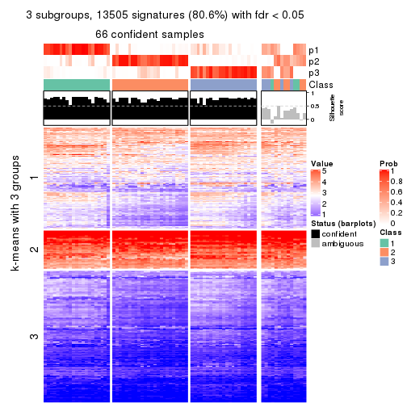
get_signatures(res, k = 4, scale_rows = FALSE)
get_signatures(res, k = 5, scale_rows = FALSE)
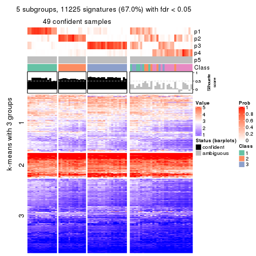
get_signatures(res, k = 6, scale_rows = FALSE)
Compare the overlap of signatures from different k:
compare_signatures(res)

get_signature() returns a data frame invisibly. TO get the list of signatures, the function
call should be assigned to a variable explicitly. In following code, if plot argument is set
to FALSE, no heatmap is plotted while only the differential analysis is performed.
# code only for demonstration
tb = get_signature(res, k = ..., plot = FALSE)
An example of the output of tb is:
#> which_row fdr mean_1 mean_2 scaled_mean_1 scaled_mean_2 km
#> 1 38 0.042760348 8.373488 9.131774 -0.5533452 0.5164555 1
#> 2 40 0.018707592 7.106213 8.469186 -0.6173731 0.5762149 1
#> 3 55 0.019134737 10.221463 11.207825 -0.6159697 0.5749050 1
#> 4 59 0.006059896 5.921854 7.869574 -0.6899429 0.6439467 1
#> 5 60 0.018055526 8.928898 10.211722 -0.6204761 0.5791110 1
#> 6 98 0.009384629 15.714769 14.887706 0.6635654 -0.6193277 2
...
The columns in tb are:
which_row: row indices corresponding to the input matrix.fdr: FDR for the differential test. mean_x: The mean value in group x.scaled_mean_x: The mean value in group x after rows are scaled.km: Row groups if k-means clustering is applied to rows.UMAP plot which shows how samples are separated.
dimension_reduction(res, k = 2, method = "UMAP")
dimension_reduction(res, k = 3, method = "UMAP")
dimension_reduction(res, k = 4, method = "UMAP")
dimension_reduction(res, k = 5, method = "UMAP")
dimension_reduction(res, k = 6, method = "UMAP")
Following heatmap shows how subgroups are split when increasing k:
collect_classes(res)
If matrix rows can be associated to genes, consider to use GO_Enrichment(res,
...) to perform function enrichment for the signature genes.
sessionInfo()
#> R version 3.6.0 (2019-04-26)
#> Platform: x86_64-pc-linux-gnu (64-bit)
#> Running under: CentOS Linux 7 (Core)
#>
#> Matrix products: default
#> BLAS: /usr/lib64/libblas.so.3.4.2
#> LAPACK: /usr/lib64/liblapack.so.3.4.2
#>
#> locale:
#> [1] LC_CTYPE=en_GB.UTF-8 LC_NUMERIC=C LC_TIME=en_GB.UTF-8
#> [4] LC_COLLATE=en_GB.UTF-8 LC_MONETARY=en_GB.UTF-8 LC_MESSAGES=en_GB.UTF-8
#> [7] LC_PAPER=en_GB.UTF-8 LC_NAME=C LC_ADDRESS=C
#> [10] LC_TELEPHONE=C LC_MEASUREMENT=en_GB.UTF-8 LC_IDENTIFICATION=C
#>
#> attached base packages:
#> [1] grid parallel stats4 stats graphics grDevices utils datasets methods
#> [10] base
#>
#> other attached packages:
#> [1] genefilter_1.66.0 ComplexHeatmap_2.1.1 markdown_1.1
#> [4] knitr_1.26 cola_1.3.2 SummarizedExperiment_1.14.1
#> [7] DelayedArray_0.10.0 BiocParallel_1.18.1 matrixStats_0.55.0
#> [10] Biobase_2.44.0 GenomicRanges_1.36.1 GenomeInfoDb_1.20.0
#> [13] IRanges_2.18.3 S4Vectors_0.22.1 BiocGenerics_0.30.0
#> [16] GetoptLong_0.1.7
#>
#> loaded via a namespace (and not attached):
#> [1] bitops_1.0-6 bit64_0.9-7 doParallel_1.0.15 RColorBrewer_1.1-2
#> [5] httr_1.4.1 backports_1.1.5 tools_3.6.0 R6_2.4.1
#> [9] DBI_1.0.0 lazyeval_0.2.2 colorspace_1.4-1 withr_2.1.2
#> [13] tidyselect_0.2.5 gridExtra_2.3 bit_1.1-14 compiler_3.6.0
#> [17] xml2_1.2.2 microbenchmark_1.4-7 pkgmaker_0.28 slam_0.1-46
#> [21] scales_1.1.0 NMF_0.23.6 stringr_1.4.0 digest_0.6.23
#> [25] XVector_0.24.0 pkgconfig_2.0.3 bibtex_0.4.2 highr_0.8
#> [29] rlang_0.4.2 GlobalOptions_0.1.1 RSQLite_2.1.2 impute_1.58.0
#> [33] shape_1.4.4 mclust_5.4.5 dendextend_1.12.0 dplyr_0.8.3
#> [37] RCurl_1.95-4.12 magrittr_1.5 GenomeInfoDbData_1.2.1 Matrix_1.2-17
#> [41] Rcpp_1.0.3 munsell_0.5.0 viridis_0.5.1 lifecycle_0.1.0
#> [45] stringi_1.4.3 zlibbioc_1.30.0 plyr_1.8.4 blob_1.2.0
#> [49] crayon_1.3.4 lattice_0.20-38 splines_3.6.0 annotate_1.62.0
#> [53] circlize_0.4.9 zeallot_0.1.0 pillar_1.4.2 rjson_0.2.20
#> [57] rngtools_1.4 reshape2_1.4.3 codetools_0.2-16 XML_3.98-1.20
#> [61] glue_1.3.1 evaluate_0.14 vctrs_0.2.0 png_0.1-7
#> [65] foreach_1.4.7 polyclip_1.10-0 gtable_0.3.0 purrr_0.3.3
#> [69] clue_0.3-57 assertthat_0.2.1 ggplot2_3.2.1 xfun_0.11
#> [73] gridBase_0.4-7 eulerr_6.0.0 xtable_1.8-4 skmeans_0.2-11
#> [77] survival_2.44-1.1 viridisLite_0.3.0 tibble_2.1.3 iterators_1.0.12
#> [81] memoise_1.1.0 AnnotationDbi_1.46.1 registry_0.5-1 GTF_0.0.1
#> [85] cluster_2.1.0 brew_1.0-6